Annotation
Рэй Далио вырос в обычной семье со средним достатком, а теперь он входит в список 100 самых влиятельных людей планеты (по версии Time) и 100 самых богатых людей в мире (по версии Forbes). Основанная им в 26 лет инвестиционная фирма Bridgewater Associates в течение следующих 40 лет стала пятой по важности частной компанией в США (по версии Fortune). Секрет ее устойчивости и успеха в том, что Рэй Далио в своей жизни и работе неукоснительно придерживается универсальных принципов, которые постепенно выкристаллизовались из закономерностей побед и поражений. Сила этих личных принципов такова, что они изменили всю отрасль (журнал CIO даже назвал Далио «Стивом Джобсом инвестирования»).
Все правила жизни и работы американского миллиардера вы найдете в этой книге. Вполне возможно, что после ее прочтения ваша жизнь уже не будет прежней.
- Рэй Далио
- Информация от издательства
- Предисловие к российскому изданию
- Введение
- Часть I. Мои истоки
- * * *
- 1. Зов приключений: 1949–1967
- 2. Преодоление порога: 1967–1979
- 3. Пропасть: 1979–1982
- 4. Путь испытаний: 1983–1994
- * * *
- Возвращение Bridgewater к жизни
- Венчурная деятельность за «закрытыми дверями» Китая
- Моя семья и ее «продолжение»
- Еще больше серьезных поворотов в экономике и на рынках
- Следующая точка опоры для Bridgewater
- Священный Грааль инвестирования
- Выпускаем нашу убойную систему в мир
- На ошибках учатся
- Моя «неразрешимая» проблема
- 5. Обретение дара: 1995–2010
- * * *
- Создание облигаций, индексируемых на уровень инфляции
- Создание принципа паритета рисков
- Остаться маленькой лавочкой или стать гипермаркетом?
- Формирование принципов
- Применение психометрического тестирования
- Появление «бейсбольных карточек»
- Непотопляемая и высокотехнологичная Bridgewater
- Финансовый и экономический кризис 2008 года
- Помощь политикам
- Время высокой прибыли
- От неизвестности к сверхпопулярности
- Bridgewater должна быть успешной и без меня
- 6. Возвращение дара: 2011–2015
- 7. Мой последний год в компании и самая серьезная задача: 2016–2017
- 8. Взгляд назад с более высокого уровня
- Принципы
- Часть II. Жизненные принципы
- 1. Примите реальность и работайте с ней
- * * *
- 1.1. Будьте гиперреалистом
- 1.2. Любой благоприятный результат основан на истине – или, точнее, на объективном представлении о реальности
- 1.3. Будьте абсолютно непредубежденным и предельно прозрачным
- 1.4. Посмотрите на природу, чтобы понять реальность
- 1.5. Эволюция – это величайшее достижение и самая большая награда
- 1.6. Усвойте уроки природы
- 1.7. Боль + анализ = прогресс
- 1.8. Анализируйте последствия второго и третьего порядка
- 1.9. Несите ответственность за результат
- 1.10. Взгляните на механизм с более высокого уровня
- 2. Сделайте «Пять шагов», чтобы получить то, что хотите от жизни
- * * *
- 2.1. Ставьте перед собой четкие цели
- 2.2. Определите проблемы, стоящие у вас на пути, и не миритесь с ними
- 2.3. Анализируйте проблему, чтобы определить ее причину
- 2.4. Разработайте план
- 2.5. Претворяйте план в жизнь
- 2.6. Слабости не важны, если вы нашли решение
- 2.7. Понимание своих и чужих ментальных карт и смирение
- 3. Будьте абсолютно непредубежденным
- * * *
- 3.1. Осознайте два мешающих вам барьера
- 3.2. Придерживайтесь принципа абсолютной непредубежденности
- 3.3. Научитесь искусству продуктивного несогласия
- 3.4. Проверяйте свое мнение в общении с несколькими компетентными людьми, которым вы доверяете и которые готовы высказывать противоположную точку зрения
- 3.5. Научитесь распознавать непредубежденных и предубежденных людей
- 3.6. Узнайте, как достигнуть абсолютной непредубежденности
- 4. Примите тот факт, что люди «запрограммированы» по-разному
- * * *
- 4.1. Поймите, какие преимущества вы получите, если будете знать, как «запрограммированы» вы и другие люди
- 4.2. Осмысленные работа и отношения – это не только выбор человека, это запрограммировано генетически
- 4.3. Узнайте, какие битвы идут у вас в голове и как их контролировать, чтобы получить желаемое
- 4.4. Разберитесь, что представляете собой вы и другие
- 4.5. Ключ к успеху в любом деле – правильные люди на своих местах
- 5. Научитесь эффективно принимать решения
- * * *
- 5.1. Наибольший вред эффективному процессу принятия решений наносят эмоции; процесс принятия решений состоит из двух этапов: сначала анализ, потом решение
- 5.2. Составьте объективное представление о ситуации
- 5.3. Составьте представление о долгосрочном развитии ситуации
- 5.5. Логика, рациональное мышление и здравый смысл – ваши лучшие инструменты для объективной оценки реальности и понимания, что с ней делать
- 5.6. Принимайте решения на основе расчета ожидаемой выгоды
- 5.8. Упрощайте!
- 5.9. Следуйте принципам
- 5.10. Соотносите свои решения с мнением компетентных людей
- 5.11. Сформулируйте принципы в формате алгоритмов, чтобы компьютер принимал решения параллельно с вами
- 5.12. Не стоит полагаться на искусственный интеллект, если у вас нет глубокого понимания процесса
- Жизненные принципы: резюме
- Список жизненных принципов
- 1. Примите реальность и работайте с ней
- Часть III. Принципы работы
- Список принципов работы
- Правильная корпоративная культура
- * * *
- 1. Придерживайтесь принципа абсолютной честности и предельной прозрачности
- * * *
- 1.1. Не бойтесь правды
- 1.2. Будьте последовательны и требуйте того же от остальных
- 1.3. Создайте среду, в которой у каждого есть право самостоятельно дойти до сути и никто не имеет права умалчивать, что придерживается иного мнения
- 1.4. Придерживайтесь принципа предельной прозрачности
- 1.5. Осмысленная работа и значимые отношения взаимно усиливают друг друга, особенно когда строятся на основе абсолютной честности и предельной прозрачности
- 2. Поддерживайте осмысленную работу и значимые отношения
- * * *
- 2.1. Поддерживайте общую миссию, а не людей, действующих с ней вразрез
- 2.2. Четко проговаривайте условия
- 2.3. Размер компании может угрожать значимым отношениям
- 2.4. Большинство людей притворяются, что действуют в ваших интересах, делая это в своих собственных
- 2.5. Цените честных сотрудников, которые обладают высоким профессионализмом и хорошо к вам относятся, даже когда вы их не контролируете
- 3. Создайте корпоративную культуру, в которой допустимы ошибки, но недопустимо не учиться на них
- * * *
- 3.1. Примите тот факт, что ошибки – естественная часть процесса развития
- 3.2. Не переживайте, как вы выглядите – переживайте, как достичь цели
- 3.3. Проанализируйте, не стали ли ошибки результатом слабости
- 3.4. Не забывайте анализировать, когда чувствуете боль
- 3.5. Различайте, какие из ошибок приемлемы, а какие нет, и не позволяйте сотрудникам совершать неприемлемые
- 4. Будьте на одной волне
- * * *
- 4.1. Признайте, что конфликты помогают отношениям
- 4.2. Научитесь достигать согласия и продуктивно выражать свое несогласие
- 4.3. Будьте непредубежденным и ассертивным
- 4.4. Если вы организовали совещание, управляйте обсуждением
- 4.5. Эффективное взаимодействие можно сравнить с исполнением джаза
- 4.6. Если вы нашли единомышленников, цените это
- 4.7. Если вы не в силах преодолеть наиболее серьезные разногласия, особенно в ценностях, подумайте, стоит ли сохранять эти отношения
- 5. Сделайте процесс принятия решений компетентным
- * * *
- 5.1. Для эффективной реализации принципа меритократии идей нужно понимать ценность идей каждого сотрудника
- 5.2. Найдите самых компетентных людей, не согласных с вашей точкой зрения, и попытайтесь понять их логику
- 5.3. Проанализируйте, в какой роли вы находитесь: учителя, ученика или коллеги
- 5.4. Поймите, как сотрудники формируют свое мнение
- 5.5. Работа с разногласиями должна быть эффективной
- 5.6. Каждый имеет право и обязан попытаться дойти до сути важных вещей
- 5.7. Обращайте больше внимания на то, справедлива ли система принятия решений, а не на то, окажетесь ли вы правы
- 6. Научитесь преодолевать разногласия
- * * *
- 6.1. Нельзя нарушать принципы даже при взаимном согласии
- 6.2. Сотрудники не должны смешивать право жаловаться, давать совет и открыто обсуждать вопросы с правом принимать решения
- 6.3. Не оставляйте серьезные конфликты нерешенными
- 6.4. После принятия решения все сотрудники должны его исполнять, даже если не согласны с ним
- 6.5. Если принцип меритократии идей не способствует благосостоянию компании, он неизбежно пострадает
- 6.6. Если люди, наделенные властью, не хотят руководствоваться принципами, система управления на основе принципов обречена на провал
- Правильные люди
- * * *
- 7. Помните: кто важнее, чем что
- 8. Нанимайте с умом, потому что издержки от ошибок слишком велики
- 8.1. Ищите кандидата, отвечающего требованиям позиции
- 8.2. Все люди разные: разные взгляды и разный образ мышления определяют их способность выполнять разную работу
- 8.3. Думайте о своих командах как спортивный менеджер: ни один человек не обладает всеми качествами, необходимыми для успеха, но каждый должен быть в чем-то лучшим
- 8.4. Учитывайте прошлые достижения
- 8.5. Нанимайте таких людей, с которыми вы сможете пойти по жизни
- 8.6. При определении размера финансовой компенсации обеспечьте стабильность и возможности
- 8.7. В эффективном партнерстве взаимная забота и щедрость важнее денег
- 8.8. Хороших сотрудников сложно найти, поэтому сделайте все возможное, чтобы их удержать
- 9. Постоянно обучайте, проверяйте, оценивайте и классифицируйте сотрудников
- 9.1. Вам и вашим подчиненным предстоит процесс персонального развития
- 9.2. Предоставляйте постоянную обратную связь
- 9.3. Оценка должна быть точной, а не доброй
- 9.4. Относиться к сотрудникам жестко, но справедливо сложнее всего, но это самое важное, что вы можете им дать (потому что такое отношение редко встречают благожелательно)
- 9.5. Не скрывайте свои наблюдения о сотрудниках
- 9.6. Составляя представление о сотруднике, будьте открыты и готовы корректировать свое мнение
- 9.7. Понимать, каким образом действует сотрудник, и правильно оценивать, приведет ли этот образ действий к хорошему результату, гораздо важнее, чем знать, что именно этот сотрудник делает
- 9.8. Если вы достигли согласия с сотрудником в оценке его слабостей, это, скорее всего, объективная оценка
- 9.9. Обучайте и направляйте сотрудников или расставайтесь с ними, не занимайтесь реабилитацией
- 9.10. Цель перевода сотрудника на новую позицию – максимальное использование его потенциала на благо компании в целом
- 9.11. Не снижайте планку
- Создание и совершенствование механизма
- * * *
- 10. Для достижения цели руководите так, словно вы управляете механизмом
- * * *
- 10.1. Оценивайте механизм и себя в нем с более высокого уровня
- 10.2. В любой ситуации ваш подход должен решать две задачи:
- 10.3. Вы должны понимать разницу между менеджментом, микроменеджментом и отсутствием менеджмента
- 10.4. Узнайте своих сотрудников как можно лучше и поймите, что их мотивирует, потому что люди – самый важный ресурс
- 10.5. Четко распределяйте обязанности
- 10.6. Непрерывно тестируйте механизм, чтобы понять, чего вы можете от него ожидать
- 10.7. Думайте как владелец компании и ожидайте этого от своих сотрудников
- 10.8. Застрахуйтесь от риска ухода ключевых сотрудников
- 10.9. Не относитесь ко всем одинаково – цените каждого по заслугам
- 10.10. Эффективное руководство отличается от стереотипного представления о нем
- 10.11. Наделяйте себя и своих сотрудников ответственностью
- 10.12. Четко проговаривайте план действий и критерии, отражающие прогресс в достижении цели
- 10.13. Передайте вопрос на рассмотрение руководству, если не способны справиться с ним сами
- 11. Выявляйте проблемы и не миритесь с ними
- * * *
- 11.1. Если вы не переживаете, стоит забеспокоиться, а если переживаете, стоит прекратить
- 11.2. Разработайте механизм для контроля качества выполняемой работы или занимайтесь этим лично
- 11.3. Указывайте на конкретные проблемы, не начинайте с обобщений
- 11.4. Не бойтесь браться за решение сложных проблем
- 12. Выявляйте проблемы, чтобы добраться до их причин
- * * *
- 12.1. Для эффективного выявления проблемы задайте три вопроса
- 12.2. Постоянно анализируйте ситуацию
- 12.3. Помните, что анализ должен вести к результатам
- 12.4. Используйте метод углубленной детализации, чтобы достичь понимания соотношения 80/20 в отделе, где возникли проблемы
- 12.5. Качественный диагноз – основа прогресса и хороших отношений
- 13. Усовершенствуйте механизм, чтобы обойти проблемы
- * * *
- 13.1. Создайте механизм
- 13.2. Систематизируйте принципы и их применение
- 13.3. Качественный план действий должен быть похож на сценарий фильма
- 13.4. Разработка системы – это последовательный процесс. Между плохим «сегодня» и прекрасным «завтра» есть переходный период
- 13.5. Выстраивайте компанию вокруг целей, а не задач
- 13.6. Организационная структура должна иметь форму пирамиды с прямыми нисходящими линиями, которые не пересекаются
- 13.7. При необходимости создавайте направляющие, но помните, что лучше обойтись без них
- 13.8. Сохраняйте стратегическое видение, внося необходимые тактические изменения сообразно обстоятельствам
- 13.9. Внедрите качественную систему контроля, чтобы избежать нечестного отношения
- 13.10. У вас должны быть максимально ясные порядок подчиненности и описание обязанностей
- 13.11. Помните, что практически на все у вас уйдет больше времени и денег, чем вы рассчитываете
- 14. Делайте что решили
- 15. Используйте инструменты и утвержденные процедуры, чтобы регламентировать выполнение работы
- 16. И пожалуйста, не пренебрегайте управлением!
- 16.1. В любой успешной компании должна действовать система сдержек и противовесов
- 16.2. В условиях меритократии идей один СЕО хуже, чем группа руководителей
- 16.3. Ни одна система управления, основанная на принципах, правилах и системе сдержек и противовесов, не способна заменить истинные партнерские отношения
- Принципы работы: резюме
- Заключение
- Приложение. Инструменты и утвержденные процедуры для меритократии идей в Bridgewater
- Список литературы
- Благодарности
- Об авторе
- notes
Рэй Далио
Принципы. Жизнь и работа
Информация от издательства
Благодарим за рекомендацию книги Артема Гальцева, Татьяну Алехину, Артема Колчина, Будимира Клювака, Михаила Гринина, Алексея Васильева, Константина Пугачева, Дмитрия Виноградова
Печатается по изданию: Ray Dalio. PRINCIPLES: Life and Management. – NY: Simon & Schuster, 2017
С разрешения литературных агентств Levine Greenberg Rostan и Synopsis
Дизайн книги и обложки Родриго Коррал (ART & DESIGN)
Под редакцией Антона Малькова
Все права защищены. Никакая часть данной книги не может быть воспроизведена в какой бы то ни было форме без письменного разрешения владельцев авторских прав.
© Ray Dalio, 2017
© Перевод на русский язык, издание на русском языке, оформление. ООО «Манн, Иванов и Фербер», 2018
* * *
Посвящается Барбаре, моей половинке, которая делает меня целым на протяжении вот уже 40 лет
Предисловие к российскому изданию
Передо мной лежит книга «Принципы» Рэя Далио – моего американского большого друга и единомышленника.
Рэй – не обычный писатель. Точнее, он вовсе не писатель, а строитель: Рэй построил Bridgewater – один из самых эффективных в мире хедж-фондов, – начав в небольшой квартире и закончив в списке 100 самых богатых (по версии Forbes) и 100 самых влиятельных (по версии журнала Time) людей в мире. Успех был обусловлен не только гениальной интуицией Рэя, но и привычкой педантично фиксировать прошлые решения, тщательно анализировать их причины и создавать алгоритмы, которые служили бы GPS-навигатором для решений в неопределенном будущем.
Рэй – self-made man, человек, который, без преувеличения, сделал себя сам.
Его называют the oddest duck of Wall Street, и он действительно отличается от всех своим оригинальным мышлением, своим исключительным успехом и своей жаждой учиться и делиться знаниями. Я знаю совсем немного людей с такой любознательностью и восприимчивостью.
Я был одним из тех счастливчиков, которым довелось прочитать первый самиздатовский вариант книги, который мы в Сбербанке перевели на русский язык. Это была пухлая папка с обычными листами А4, испещренными черным шрифтом. Тогда Рэй пригласил меня с командой в святая святых – в штаб-квартиру своей фирмы в Уэстпорте под Нью-Йорком. Я помню, как меня поразили форма и содержание этого места: простой интерьер, гармонирующий с природным ландшафтом.
Но еще более нашу команду поразили философия, идеи и принципы, которые Рэй Далио исповедует в своем корпоративном доме и в жизни. Рэй – приверженец концепции радикальной правды и предельной прозрачности для всех сотрудников. Это значит, что на стол выкладывают сто процентов проблем, ошибок и слабостей. Что не страхует от ошибок в настоящем, но, пожалуй, является единственным способом избежать их в будущем, а также достичь взаимного уважения среди членов команды и следовать принципу меритократии идей: продвигать и награждать самых достойных, независимо от принадлежности к роду и племени.
На первый взгляд в культуре предельной прозрачности жить нелегко, потому что люди говорят ровно то, что думают, невзирая на лица, открыто и без обиняков дают коллегам негативную обратную связь. Но формула Рэя – «боль + рефлексия = прогресс» – означает упорное движение к лучшей версии самого себя.
Когда Сбербанк уже уверенно использовал такой HR-инструмент, как «оценка 360 градусов», раз в год, Bridgewater первым в мире стал делать эту оценку на ежедневной основе, практически в режиме реального времени. Такая технология позволяет накапливать колоссальный массив данных, анализ которых помогает определять оптимальный профиль сотрудника для конкретной задачи и предсказывать его эффективность.
Рэй постоянно ищет ДНК лидера… и создал специальный тест для лидеров (Shaper Test), который прошли многие СЕО и успешные люди. Он пытался понять, что общего в характере лидеров. Выяснилось, что их отличает сочетание несочетаемого: сплав креативного и структурированного мышления. На основе этого теста можно сделать прогноз будущей успешности кандидата.
Bridgewater использует HR-практики и технологии, настроенные на возбуждение стремления к самообучению, саморазвитию и осознанности.
«Чудак с Уолл-стрит» и миллиардер, но прежде всего глубокий мыслитель, Рэй отличается от других людей сумасшедшей способностью к глубокой саморефлексии.
Вся наша жизнь – это ежесекундные решения, требующие преодоления ловушек мышления. На протяжении всей своей карьеры, начиная с 1983 года, Рэй анализировал собственные высокорисковые решения и причины, их породившие. Это была история попыток создать алгоритмы принятия решений в разных ситуациях. Рэй – неутомимый систематизатор.
Он верит, что все мы – в каком-то смысле машины, а машины работают на основе законов и принципов. Каждое действие – это алгоритм. Рэй попытался алгоритмизировать свой ход мыслей, чтобы исключить максимум рисков при принятии краткосрочных решений, а также чтобы добиться главной цели – обеспечить жизнеспособность и устойчивость организации в момент, когда создавший ее лидер решит отойти в сторону. Это высший пилотаж в менеджменте и лидерстве, то, о чем мечтает любой руководитель.
Все выводы Рэя Далио основаны на достижениях нейронауки. Он знает, что рациональный мозг человека мал, а эмоциональный, первобытный мозг часто мешает принимать оптимальные решения. Bridgewater работает над программой, которая позволит полностью автоматизировать текущее управление компанией, в том числе процесс найма и увольнения сотрудников, а также принятие иных стратегически важных решений. Функции большинства сотрудников компании будут заключаться не в принятии отдельных решений, а в формулировании критериев, в соответствии с которыми решения будет принимать система, и вмешательстве в случае неполадок.
Когда мы в очередной раз беседовали с Рэем (наши встречи всегда длятся существенно больше запланированного), он поделился такими мыслями.
«Каждый раз, когда вы принимаете решение, сделайте паузу и подумайте: почему я хочу поступить именно так? Все ситуации повторяются раз за разом».
«Главная ошибка: люди обсуждают выводы, а не причинно-следственные отношения».
«Разные люди мыслят по-разному и с разным результатом. Как из этого процесса мышления выбрать лучшие идеи?»
«Мы в Bridgewater очень хорошо знаем, чего не знаем. Многие ошибочно считают, что все знают. Мы фокусируемся на том, что можем чего-то не знать, и на том, чего именно не знаем».
«Чаще спрашивайте: “Так ли это на самом деле? Это правда? Разумно ли это? В этом есть логика?”»
В книге, которую вы держите в руках, содержатся эти и многие другие менеджерские и общечеловеческие дилеммы, а также проверенные опытом решения и ответы, которые составляют «секретный соус» культуры одной из самых успешных организаций в мире.
Имя Рэй в английском созвучно словосочетанию «луч света», и сейчас, когда отношения между нашими странами переживают не лучшие времена, книга Рэя – хороший мостик между умами очень разных людей, которые, быть может, мыслят по-разному и изъясняются на разных языках, но преследуют одну и ту же цель – сделать мир лучше.
Я желаю вам продуктивного чтения, ведь ключ к росту экономики – в повышении производительности… каждого из нас!
Герман Греф,
президент, председатель правления Сбербанка России
P.S. И задайте себе вопрос: «Так ли это на самом деле?»
Введение
Прежде чем начать делиться своими мыслями, хочу предупредить, что я не всезнайка. Успехом в жизни я во многом обязан умению справляться с тем, чего я не знаю. Самое важное, что я усвоил, – это подход к жизни на основе принципов, которые помогают мне понять, что правда, а что нет и как я должен поступать в той или иной ситуации.
Я рассказываю об этих принципах, потому что сейчас нахожусь на том жизненном этапе, когда больше хочу помочь другим стать успешными, чем стать более успешным самому. Эти принципы очень помогли мне и многим другим людям, и поэтому я делюсь ими с вами. Решайте сами, насколько они для вас ценны и как вы будете их применять.
Принципы – это глубинные убеждения, на которых основано поведение человека, позволяющее ему получить от жизни то, чего он хочет. Их можно применять снова и снова в похожих случаях, чтобы добиться цели. Ежедневно каждый из нас сталкивается с множеством ситуаций, на которые должен как-то реагировать. Без принципов мы были бы вынуждены каждый раз обдумывать свои действия, словно попали в такое положение впервые. Если же систематизировать все эти ситуации по типам и руководствоваться эффективными принципами для каждого из них, мы будем способны быстрее принимать решения и повышать качество жизни. Набор эффективных принципов можно сравнить с хорошим сборником рецептов успеха. Все добившиеся выдающихся результатов люди живут по правилам, которые помогают им стать триумфаторами. Хотя они сами выбирают, в чем хотят быть успешными, и правила отличаются в зависимости от этого.
Человек с принципами последовательно придерживается их в своей деятельности и способен доступно их объяснить. К сожалению, большинство из нас не относятся к этой категории. Еще реже люди специально записывают свои принципы и делятся ими. Очень жаль! Мне было бы чрезвычайно интересно узнать, чем руководствовались в жизни Альберт Эйнштейн, Стив Джобс, Уинстон Черчилль, Леонардо да Винчи и многие другие, чтобы понять, к чему они стремились и как достигли своей цели, а также чтобы я мог сравнить разные подходы. Я хотел бы знать, какие принципы наиболее важны для политиков, которые рассчитывают получить мой голос, и для всех других людей, чьи решения влияют на мою жизнь. Есть ли общие принципы, объединяющие нас как семью, общество, нацию, друзей вне зависимости от национальности? Или они противоположны? Что это за принципы? Давайте будем предельно конкретными. Сегодня особенно важно открыто говорить об этом.
Я надеюсь, что моя книга вдохновит вас осознать собственные принципы и в идеале их записать. Это поможет вам лучше понять самого себя и окружающих. Это позволит вам скорректировать свои принципы, когда вы начнете размышлять над ними с высоты накопленного опыта. В результате вы сможете более эффективно принимать решения, а окружающие – лучше вас понимать.
ВАШИ ПРИНЦИПЫ
Формирование принципов происходит по-разному. Иногда этому способствуют приобретенный опыт и размышления. Иногда мы наследуем их от других людей, например родителей, а иногда принимаем целый набор принципов, таких как религиозные догматы или свод законов.
Стремления и цели каждого человека уникальны, и он в соответствии с ними выбирает принципы для себя. Руководствоваться правилами других не всегда однозначно плохо. Но если следовать им слепо и бездумно, есть риск, что ваше поведение будет не свойственным для вас и не позволит достичь желаемого. В то же время вы, как и я, вероятно, не знаете всего, что вам необходимо, и самым разумным будет принять этот факт. Если вы способны мыслить самостоятельно и при этом быть открытым всему, чтобы понять, что для вас предпочтительнее, а затем собрать волю в кулак и сделать это, вы сможете максимально реализовать свой потенциал. Если вы так не умеете, разберитесь с причинами, потому что, скорее всего, это и есть самое серьезное препятствие, чтобы получать от жизни больше.
Эти размышления подвели нас к моему первому принципу.
Решайте сами: 1) чего вы хотите, 2) какова объективная реальность и 3) что вам делать, чтобы добиться пункта 1 с позиции пункта 2…
…а затем делайте это скромно и непредвзято, руководствуясь лучшими знаниями, которые доступны вам на этот момент. Иметь четкие принципы крайне важно, потому что они постоянно влияют на все аспекты жизни. Например, когда вы налаживаете взаимоотношения с людьми, именно принципы – ваши и чужие – будут определять характер общения. У людей с общими ценностями есть все шансы поладить. Между теми, у кого разные жизненные принципы, скорее всего, возникнут непонимание и конфликты. Подумайте о самых близких вам людях: насколько их ценности совпадают с вашими? Вы хотя бы знаете, какие у них принципы? Слишком часто они остаются невысказанными. К наибольшим проблемам это приводит на работе, где для успеха компании у сотрудников должны быть общие принципы. Я хотел, чтобы мои принципы были кристально ясны, и потому корпел буквально над каждым предложением этой книги.
Ваши принципы могут быть какими угодно, главное, чтобы они были аутентичными, то есть отражали ваш характер и ценности. В жизни вам придется принимать миллион решений, и то, как вы станете это делать, будет отражать ваши принципы. Так что довольно скоро окружающие поймут правила, которыми вы на самом деле руководствуетесь. Худшее, что может быть, – это фальшь. Если ваши действия расходятся с принципами, которые вы для себя определили, вы утратите доверие окружающих вместе с самоуважением. Четко сформулируйте свои принципы и следуйте им. При возникновении противоречий объясняйте, чем они вызваны. Лучше делать это письменно, потому что благодаря этому вы сможете скорректировать принципы, которые записали ранее.
Я поделюсь с вами моими принципами, но не жду, что вы начнете слепо им следовать. Напротив, я хочу, чтобы вы подвергли сомнению каждое слово, выбрали некоторые из моих правил и составили набор принципов, которые подходят вам.
МОИ ПРИНЦИПЫ И ДОРОГА К НИМ
Свои принципы я формулировал на протяжении всей жизни, совершая множество ошибок и размышляя над ними. Я был любопытным ребенком, на все имел собственное мнение и ставил перед собой высокие цели. Мне нравилось визуализировать то, чего я хотел добиться. На пути к цели меня поджидали болезненные разочарования, благодаря которым я вывел принципы, позволившие мне избегать подобных ошибок в будущем. Я менялся, ставил перед собой еще более смелые цели, делал это быстро и часто на протяжении длительного времени. Жизнь для меня выглядела примерно как последовательность на рисунке ниже. Я был убежден, что ключ к успеху – это знание, как стремиться к большему и как достойно проигрывать. Под умением проигрывать я имею в виду способность усваивать уроки горьких неудач и оставаться при этом в игре.
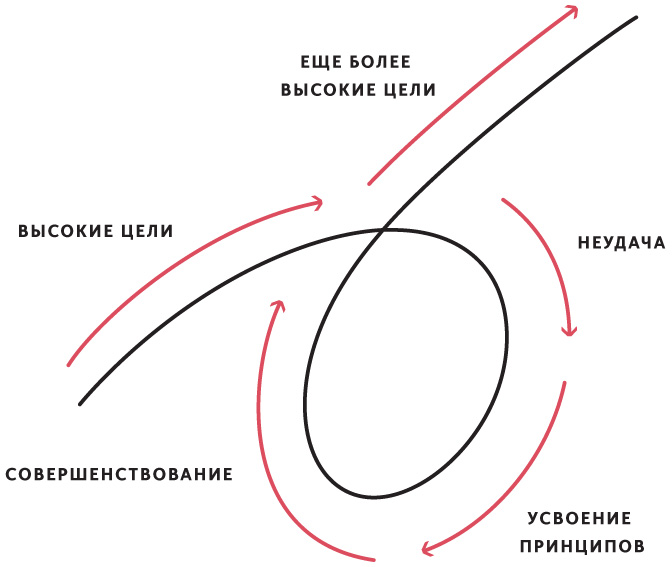
Такой способ обучения и совершенствования стал для меня оптимальным из-за особенностей моей личности и того, чем я занимаюсь. У меня всегда была неважная механическая память, и мне не нравилось следовать указаниям других, зато я с удовольствием сам разбирался, как что-то устроено. Из-за плохой памяти мне не нравилось учиться в школе, но в двенадцать лет я безумно увлекся фондовым рынком. Чтобы зарабатывать деньги на бирже, нужно мыслить независимо, выступать против общего мнения и оказываться правым. Единство мнений других участников рынка отражает цена.
Конечно, в этом случае не избежать болезненных ошибок, а потому одним из факторов успеха становится понимание, как справляться с такими ситуациями. Это же правило действует и для успешных предпринимателей: нужно мыслить независимо, выступая против мнения большинства, и иногда серьезно ошибаться. А поскольку я был и инвестором, и предпринимателем, у меня развился здоровый страх и сформировался такой подход к принятию решений, чтобы максимизировать выигрыш в случае моей правоты.
Принимать решения, не отрываясь от реальности.
После нескольких болезненных ошибок я изменил свое отношение к процессу принятия решений и вместо принципа «Я знаю, что прав» начал руководствоваться принципом «Как понять, что я прав?». Ошибки научили меня необходимости сдерживать амбиции. Понимание, что я могу ошибаться, и любопытство, почему другие умные люди видят ситуацию иначе, побудили меня пытаться смотреть на вещи с точки зрения других. Это позволило мне увидеть гораздо больше, чем прежде. Умение оценивать информацию, полученную от других, и выбирать наиболее для меня значимую (иными словами, не отрываться от реальности) вдохновило меня и повысило вероятность принятия правильных решений. В то же время я научился…
следовать принципам…
…которые сформулированы настолько четко, что легко поддаются внешней и внутренней оценке. По своему опыту я понял, как полезно анализировать и записывать критерии, согласно которым я принимаю любое решение. Так что у меня вошло в привычку делать это всегда. Со временем мой набор принципов стал напоминать сборник рецептов для принятия решений. Я делился этими правилами с сотрудниками своей компании Bridgewater Associates и предлагал помочь протестировать их на практике; благодаря этому я не переставал их совершенствовать. Фактически я довел их до той точки, когда стало абсолютно очевидно, насколько важно…
систематизировать процесс принятия решений.
Я понял, что это можно сделать, представив критерии принятия решений в форме алгоритмов, по которым мог бы работать компьютер. Опираясь на обе системы принятия решений – в голове и компьютере, – я пришел к выводу, что компьютер способен принимать более взвешенные решения, чем я, так как он обрабатывает гораздо больший объем информации, делает это быстрее и не подвержен эмоциям. Это позволило мне и людям, с которыми я работал, со временем укрепиться в этом мнении и улучшить качество коллективного принятия решений. Я обнаружил, что если не отрываться от реальности, то такие системы принятия решений невероятно эффективны и вскоре изменят этот процесс во всем мире.
Подход, основанный на принципах, не только помог повысить качество наших экономических, инвестиционных и управленческих решений, но и сделал любые другие более взвешенными. Систематизация и компьютеризация – это вопрос второстепенный. Главное – сформулировать собственные принципы, а еще лучше записать, особенно если работаете не в одиночку.
Именно этот подход и принципы, на которых он основан, а вовсе не моя уникальность, позволили обычному подростку из семьи со средним достатком родом с Лонг-Айленда стать успешным по ряду традиционных критериев: основать компанию с офисом в трехкомнатной квартире и сделать ее пятой самой важной частной компанией в США (по версии Fortune), попасть в сотню самых богатых людей в мире (по версии Forbes), а также в сотню самых влиятельных на планете (по версии Time). Мои принципы обеспечили мне положение в обществе, с позиции которого я увидел успех и жизнь совсем иначе, чем представлял себе. Они дали мне наполненные смыслом работу и отношения, что я ценю даже больше успеха в его привычном понимании. Они помогли мне и моей компании добиться гораздо большего, чем я мог мечтать.
До недавних пор я не планировал делиться этими принципами вне компании Bridgewater, потому что не люблю публичности; кроме того, мне казалось слишком самоуверенным внушать другим, какие принципы должно иметь. Однако после того как аналитики Bridgewater предсказали финансовый кризис 2008–2009 годов, возник большой интерес со стороны СМИ ко мне, моим принципам и уникальному способу организации деятельности в Bridgewater. К сожалению, чаще всего журналисты безбожно искажали суть, и поэтому в 2010 году я опубликовал наши принципы на корпоративном сайте, чтобы пользователи могли сами сделать выводы. К моему удивлению, их скачали более трех миллионов раз, и ко мне со всего мира начали приходить благодарственные письма.
Я изложу свои принципы в двух книгах: в первой – принципы жизни и работы, во второй – принципы экономики и инвестирования.
СТРУКТУРА КНИГИ
Всю свою сознательную жизнь я посвятил экономике и инвестициям, поэтому сначала хотел написать книгу о правилах для них. Но затем решил начать с описания жизненных и рабочих принципов, поскольку видел, что они более универсальны и эффективно работают для разных людей, независимо от их области деятельности. Эти принципы отлично дополняют друг друга и поэтому объединены в одну книгу. Им предшествует моя краткая автобиография.
Часть I. Мои истоки
В этой части я делюсь опытом – главное, своими ошибками, – благодаря которому я вывел принципы, ставшие для меня руководством по принятию решений. По правде говоря, я все еще испытываю смешанные чувства по поводу того, что рассказываю свою историю, – я боюсь, что это может отвлечь от самих принципов и универсальности причинно-следственных отношений, которые лежат в их основе. Так что я не буду возражать, если вы пропустите эту часть. Если же все-таки решите ее прочитать, постарайтесь разглядеть через призму моей истории логику и достоинства принципов, о которых я рассказываю. Проанализируйте их и решите, насколько они применимы к вашим жизненным обстоятельствам и особенно помогут ли добиться ваших целей, какими бы они ни были.
Часть II. Жизненные принципы
В этой части я излагаю универсальные принципы, определяющие мой подход ко всему. Я подробно их объясняю и показываю, как применять их в жизни и в отношениях, в бизнесе и при формировании стратегии и, конечно, как они действуют в Bridgewater. Я расскажу о процессе из пяти шагов, который разработал, чтобы достигать целей и быстро и эффективно делать выбор. Кроме того, я поделюсь некоторыми приемами из психологии и нейронауки, которые применяю в личной жизни и бизнесе. Это самая важная часть в книге, потому что здесь показано, как практически каждый способен использовать эти принципы почти в любой ситуации.
Часть III. Принципы работы
Из этой части вы узнаете о нестандартных методах ведения деятельности в Bridgewater. Я объясню, как мы объединили наши принципы с меритократией идей[1], стремясь к осмысленным работе и отношениям на основе абсолютной честности и предельной прозрачности. Я покажу, как это работает и как этого можно добиться практически в любой компании для большей ее эффективности. Вы увидите, что мы просто группа людей, которые стремятся к лучшим результатам в работе и признают, что не знают очень многого из того, что нужно знать. Мы убеждены, что рациональные, не окрашенные эмоциями разногласия людей, высказывающих собственные суждения, можно превратить в привязанный к реальности процесс принятия решений, который эффективнее и толковее, чем сумма его слагаемых. Именно потому что эффективность группы гораздо выше эффективности отдельных ее участников, я считаю принципы работы даже более важными, чем жизненные, на которых они основаны.
Что дальше
На языке оригинала эта книга выйдет в форме приложения, чтобы опыт читателей носил более практический характер. Кроме того, приложение будет учитывать особенности пользователей и давать более персонализированные рекомендации.
Планируется к публикации вторая книга об экономике и инвестициях; в ней я поделюсь принципами, которые сработали для меня и, надеюсь, помогут и вам.
После этого не останется ни одного совета, которым я мог бы поделиться, и я буду считать свою цель на этом жизненном этапе достигнутой.
Решите для себя!
1. Чего вы хотите?2. Какова объективная реальность?3. Что вы планируете для этого сделать?
Часть I. Мои истоки
Время подобно реке, несущей нас навстречу реальности, при столкновении с которой мы вынуждены принимать решения. Мы не в силах остановить течение, и нам не избежать этих столкновений. Мы можем только постараться сделать лучшее, на что способны.
* * *
В детстве другие люди – как правило, родители – сопровождают нас на пути встреч с реальностью. Взрослея, мы начинаем делать выбор самостоятельно. Мы определяем цели, и это влияет на наш путь. Тот, кто стремится стать врачом, идет учиться в медицинский институт; тот, кто мечтает о семье, находит партнера и так далее. На пути к цели каждый из нас сталкивается с проблемами, совершает ошибки, преодолевает собственные слабости. Мы познаем себя и окружающую реальность и делаем новый выбор. На протяжении жизни мы принимаем миллионы решений, которые, по сути, не что иное, как пари – иногда крупное, иногда не очень. Полезно понять механику этого процесса, потому что именно от наших решений в итоге зависит качество нашей жизни.
Люди рождаются с разным уровнем умственных способностей, но навыками принятия решений от рождения не обладает никто. Они приобретаются и развиваются в процессе взаимодействия с реальностью. Несмотря на то что мой жизненный путь так же уникален, как у любого из вас, – определенная семья, определенная сфера деятельности, определенные коллеги, – я убежден, что принципы, которые я вывел для себя, окажутся эффективными для большинства людей с их уникальными жизненными обстоятельствами. Знакомясь с моей историей, постарайтесь увидеть сквозь нее основополагающие причинно-следственные связи: выбор, который я делал, и его последствия дают представление об уроках, которые я усвоил, и о том, как я корректировал процесс принятия решений в дальнейшем. Спросите себя, чего вы хотите, найдите примеры людей, добившихся цели, проанализируйте причинно-следственные закономерности, которые им в этом помогли, а затем постарайтесь применить их так, чтобы достичь своей цели.
Чтобы помочь вам понять мой путь, я расскажу без прикрас о своей жизни и работе и уделю особое внимание моим ошибкам и слабостям, а также принципам, выведенным благодаря им.
1. Зов приключений: 1949–1967
Я родился в 1949 году в обычной небогатой семье на Лонг-Айленде. Отец был профессиональным джазовым музыкантом, а мама – домохозяйкой. Я был единственным ребенком. Ничем особенным я не выделялся: мальчишкой любил играть с друзьями в тачбол[2] и бейсбол, а когда стал постарше – приударять за девушками.
У каждого из нас есть сильные и слабые стороны. Самой большой моей слабостью была плохая память. Мне никак не давалось (и до сих пор не дается) запоминание фактов, которые невозможно объяснить рационально (например, номера телефонов). К тому же мне никогда не нравилось следовать инструкциям. В то же время я был очень любознательным и стремился докапываться до сути сам, хотя тогда это было не настолько очевидно.
Я не любил школу не только потому, что там было много механической зубрежки, но и потому, что меня не интересовала большая часть того, что учителя считали важным. Я не понимал, какая от всего этого практическая польза, кроме того, что мама будет мной довольна.
Мама очень меня любила и всегда переживала из-за моих плохих отметок. Всю начальную школу она не выпускала меня играть с мальчишками, пока я не посижу пару часов в своей комнате над уроками. Но даже так я не мог заставить себя заниматься. Мама всегда меня поддерживала. Она раскладывала и перевязывала пачки газет, которые я разносил, субботними вечерами пекла печенье, которое мы с ней тут же уминали, смотря по телевизору ужастики. Она умерла, когда мне было девятнадцать. Тогда мне казалось, что больше никогда в жизни я не смогу смеяться. Теперь я всегда вспоминаю маму с теплой улыбкой.
Отец, как я уже упоминал, был музыкантом и часто работал допоздна; иногда он приходил домой уже под утро, так что по выходным отсыпался. В итоге в детстве отношения у нас с ним были так себе: они сводились к тому, что отец постоянно напоминал мне о домашних обязанностях – постричь газон, подрезать изгородь, а я терпеть не мог этого делать. Он был ответственным взрослым, воспитывающим безответственного ребенка. Сегодня то, как мы с ним общались, кажется смешным. Например, однажды он попросил меня постричь траву, а я решил, что приведу в порядок газон перед домом, а задний двор оставлю на потом. Но потом зарядили дожди, и в результате трава на заднем дворе выросла так сильно, что мне пришлось срезать ее серпом. Это заняло кучу времени, а когда я наконец с этим справился, трава на газоне перед домом выросла настолько, что газонокосилка ее не брала. Получился какой-то замкнутый круг.
Смерть мамы сблизила нас с отцом, эта связь стала еще прочнее, когда у меня самого появилась семья. Я очень его любил. Как многие музыканты, он был веселым и легким в общении. Я восхищался его твердым характером, который, как мне кажется, обусловлен тем, что отцу довелось пережить Великую депрессию и сражаться во время Второй мировой и корейской войн. Помню, как в 70 лет он спокойно садился за руль в метель, откапывал машину, когда она застревала по дороге, и не считал, что это заслуживает внимания. Почти всю жизнь отец играл в клубах и делал записи, а когда ему было уже за шестьдесят, начал преподавать музыку в старших классах школы и в муниципальном колледже и делал это до возраста 81 года, когда у него случился инфаркт. После этого он прожил еще 10 лет, сохраняя ясность и остроту ума.
Когда мне не хотелось чего-то делать, я саботировал процесс. Но когда я загорался какой-то идеей, ничто не могло меня удержать. Так, я терпеть не мог обязанности по дому, но с удовольствием выполнял несложную работу за деньги. Где-то с восьми лет я разносил газеты, зимой расчищал соседям подъезд к дому от снега, подносил клюшки и мячи игрокам в гольф, убирал со столов и мыл посуду в местном ресторанчике, выставлял товар на полки в близлежащем супермаркете. Не помню, чтобы родители стимулировали меня зарабатывать деньги, так что не могу сказать, откуда мне пришла эта идея. Одно я знаю точно: благодаря возможности работать и самостоятельно распоряжаться пусть небольшими, но собственными деньгами в таком возрасте я получил ценные уроки, которых не дают школа и игры.
В 1960-е годы, на которые пришлось мое взросление, в американском обществе царило восторженное, вдохновенное стремление к великим, благородным целям. Ничего подобного я с тех пор не видел. Одно из моих ранних воспоминаний – Джон Кеннеди, умный и харизматичный лидер, рисующий яркие картины изменения мира к лучшему: исследование космоса, достижение равноправия, искоренение бедности. Его личность и идеи оказали огромное влияние на мой образ мышления.
Тогда США находились на пике своего экономического развития относительно остальных стран мира: доля в мировом ВВП составляла почти 40 % по сравнению с 20 % сегодня. Доллар был мировой валютой. Соединенные Штаты считались доминирующей военной державой. Быть либеральным означало двигаться вперед и развиваться, быть консервативным значило застрять в прошлом – по крайней мере, так казалось мне и большинству окружавших меня людей. В нашем представлении США – богатое, прогрессивное государство с эффективным управлением и целью быстро совершенствоваться во всем. Возможно, я казался наивным, но я в этом был не одинок.
В те годы все говорили о фондовом рынке, потому что он был на подъеме и приносил хорошую прибыль. Я постоянно слышал разговоры об акциях от людей, игравших в гольф в фешенебельном клубе Links Golf Club, где я в 12 лет начал подрабатывать кедди – помощником игрока, в чьи обязанности входит перенос спортивного инвентаря. Стоит ли удивляться, что на деньги, которые я зарабатывал, я начал играть на бирже. Моей первой инвестицией стали акции авиакомпании Northeast Airlines. Я купил их, потому что это была единственная компания, о которой я что-то слышал и акции которой стоили менее $5 за штуку. Я решил, что чем больше акций куплю, тем больше денег заработаю. Глупая стратегия, но мои инвестиции утроились. Northeast Airlines оказалась на грани краха, и ее спасло только слияние с другой компанией. Мне очень повезло, но тогда я этого не знал. Я решил, что зарабатывать деньги игрой на бирже просто, и с головой ушел в это занятие.
В журнале Fortune я нашел небольшой отрывной купон на бесплатную доставку годовых финансовых отчетов компаний из списка Fortune 500. Я заказал отчеты всех компаний без исключения. До сих пор помню, как бедный почтальон тащил тяжелую стопку к нашей двери, а я затем штудировал отчеты один за другим. С этого началась моя библиотека инвестора. По мере роста фондового рынка воспоминания о Второй мировой войне и Великой депрессии все больше уходили в прошлое, казалось, что можно покупать какие угодно акции и наблюдать за их ростом. В том, что курсы акций будут расти, мало кто сомневался, ведь управление экономикой развилось в целую науку. В конце концов за последние 10 лет акции выросли в цене почти в четыре раза, а некоторые даже больше. Основной стратегией, которой следовали большинство игроков на рынке, стало «усреднение долларовой стоимости», то есть они ежемесячно инвестировали примерно одну сумму независимо от того, сколько акций могли на нее купить. Конечно, еще выгоднее было выбрать самые быстрорастущие акции, именно это я и пытался делать. Выбирать приходилось из нескольких тысяч компаний, список которых печатали на нескольких последних страницах журнала.
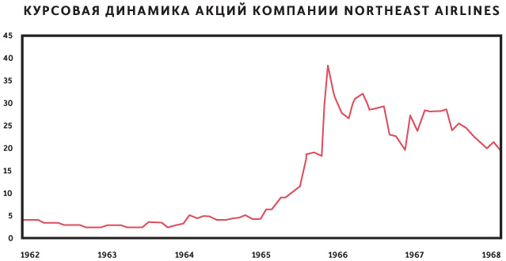
Мне нравилось играть на бирже, но не меньше я любил проводить время с друзьями: играть с мальчишками, когда мы были детьми, проходить в бары по поддельным документам, удостоверяющим личность, в подростковом возрасте или вместе ездить на музыкальные фестивали и нырять с аквалангом сегодня. Я всегда отличался независимостью суждений и был готов рискнуть – не только на бирже, но и практически во всем. Для меня скука и посредственность всегда были страшнее неудачи. Я всегда считал, что великое лучше, чем ужасное, но ужасное лучше, чем посредственное, потому что ужасное по крайней мере вызывает эмоции. Цитата, которую мои друзья выбрали мне для альбома выпускников, была из Генри Торо[3]: «Если человек не идет в ногу со всеми, возможно, он слышит другой ритм. Позвольте ему следовать этому ритму, каким бы он ни был». В 1966 году, когда я окончил школу, фондовый рынок был все еще на подъеме. Я получал деньги и удовольствие от жизни: прогуливал школу со своим лучшим другом Филом, мы занимались серфингом и всем тем, чем обычно занимаются беззаботные школьники. Тогда я еще этого не знал, но тот год был для фондового рынка пиковым, а потом акции пошли вниз. И оказалось, все, что я знал о рынке, было неверным.
2. Преодоление порога: 1967–1979
* * *
В этот период жизни я вступил с убеждениями, сформировавшимися у меня на основе опыта окружающих меня людей и собственного. В 1966 году котировки отражали оптимизм инвесторов относительно будущего. Однако в период 1967–1979 годов неожиданные экономические потрясения привели к резкому падению курса акций. Ухудшились не только экономическое положение и состояние рынка, но и настроения в обществе. Я усвоил важный урок: хотя все ждут, что будущее станет слегка измененной версией настоящего, обычно оно очень сильно отличается. К сожалению, в 1967 году я еще этого не знал. Пребывая в уверенности, что рынок вскоре отыграет потерянные позиции, я продолжал покупать акции и терять деньги, пока наконец не понял, в чем дело и какие шаги следует предпринимать. Постепенно до меня дошло, что цены на акции отражают ожидания игроков, поэтому они идут вверх, когда фактические результаты лучше ожидаемых, и падают, когда хуже. И в большинстве случаев решения игроков определяются их последними ожиданиями.
Той осенью я поступил в колледж C. W. Post при Университете Лонг-Айленда. Меня приняли с испытательным сроком из-за невысокого школьного среднего балла. Учиться в колледже, в отличие от школы, мне нравилось: я узнавал то, что меня интересовало, так что проблем с оценками у меня не было. Кроме того, мне нравились самостоятельная жизнь и независимость.
Я научился медитировать, что впоследствии очень пригодилось. Когда в 1968 году The Beatles отправились в Индию изучать трансцендентальную медитацию в ашраме[4] Махариши Махеш Йоги[5], мне тоже стало любопытно. Я начал практиковать медитацию и занимаюсь этим по сей день. Своим жизненным успехом я во многом обязан медитации, которая создает спокойный и непредубежденный настрой, позволяющий мыслить более четко и нестандартно.
В колледже я изучал финансы из-за своей любви к фондовому рынку и потому что не нужно было учить иностранный язык. Так что я получил возможность заниматься тем, что меня интересовало и в классе, и вне стен колледжа. Тогда же я многое узнал о биржевой торговле сырьем. Этому меня научил очень интересный сокурсник – ветеран вьетнамской войны гораздо старше меня. Сырьевые товары привлекли меня, потому что ими можно было торговать с низкими требованиями по маржированию, и я мог максимально использовать тот ограниченный объем средств, которым располагал для капиталовложений. Если бы я мог принимать правильные решения (а именно это я и планировал делать), то можно было бы занять больше, чтобы получить еще больше. Тогда не было фьючерсов на акции, облигации, валютных фьючерсов. Товарные фьючерсы были реальными сырьевыми товарами: зерном, соевыми бобами, крупным рогатым скотом, свиньями. Я начал изучать этот рынок и то, как на нем торговать.
Годы моего обучения в колледже пришлись на период свободной любви, экспериментов с наркотиками для расширения сознания и отрицания авторитетов. Этот опыт оказал неизгладимое влияние на меня и других людей моего поколения. Например, на Стива Джобса, которым я безмерно восхищаюсь. Подобно мне, он практиковал медитацию и не хотел, чтобы его кто-то чему-то учил: он любил визуализировать и создавать потрясающие новые вещи. Сама эпоха, в которую мы жили, научила нас обоих подвергать сомнению устоявшиеся способы что-то делать. Это отношение отражают рекламные кампании Apple “1984” и “Here’s to the Crazy Ones”, которые мне очень понравились.
В целом для страны это были сложные годы. Отношение к войне во Вьетнаме раскололо общество на две части после того, как увеличился набор в армию по призыву и наши потери в этой войне резко выросли. На основе даты рождения проводилась лотерея, чтобы определить порядок призыва на военную службу. Я помню, как играл с друзьями на бильярде и слушал по радио, как проходит эта лотерея. Сначала было заявлено, что будут определены около 160 человек, которые попадут под призыв. В итоге отобрали 366. Моя дата рождения была сорок восьмой. Я был достаточно глуп, чтобы не бояться войны: я наивно полагал, что ничего плохого со мной случиться не может, но мне не хотелось уезжать, потому что у меня было столько планов, а откладывать их на два года – все равно что на целую вечность. Мой отец оказался ярым противником этой войны и был категорически против моего призыва, несмотря на то что сам участвовал в двух войнах. Он организовал для меня медицинское обследование, на котором у меня была выявлена гипогликемия, и в результате меня признали негодным к военной службе. Фактически отец помог мне уклониться от призыва. Когда я сейчас думаю об этом, у меня возникают смешанные эмоции: чувство вины из-за того, что я не выполнил свой долг, и в то же время облегчение, что мне не пришлось справляться с последствиями посттравматического синдрома, от которого страдали ветераны войны; а еще огромная благодарность моему отцу за ту любовь, с которой он старался меня защитить. Понятия не имею, как бы поступил я в аналогичной ситуации сегодня.
По мере ухудшения политической и экономической ситуации настроения в обществе тоже стали далеки от радужных. Тетское наступление в январе 1968 года[6] оказалось переломным моментом войны, после которого общественное мнение в США утратило веру в возможность победы во Вьетнаме. В том же году Линдон Джонсон отказался участвовать в президентских выборах и претендовать на второй срок, и президентом был избран Ричард Никсон, что ознаменовало начало еще более трудных времен. В это же время президент Франции Шарль де Голль официально потребовал обменять доллары из госрезерва страны на золото, так как его очень раздражал тот факт, что США запускают печатный станок для финансирования своих расходов. Наблюдая за тем, как реагирует на эти новости рынок, я начал видеть картину целиком и понял причинно-следственную связь, лежащую в ее основе.
Примерно в 1970 или 1971 году я заметил: на мировых рынках цена на золото начала незначительно расти. До этого момента я, как большинство людей, не обращал внимания на валютные курсы, так как привык к устойчивости валютной системы. Однако новости, связанные с валютными курсами, появлялись все чаще, и это заставило меня задуматься. Я узнал, что другие валюты были привязаны к доллару, а он подкреплен золотом, что американцы не могут свободно покупать золото (хотя я не знал точно почему) и что центробанки других стран могут принять решение обменять бумажные доллары на золото, чтобы быть уверенными: если США напечатают слишком много долларов, это на них не отразится. Я слышал официальные заявления правительства о беспочвенности переживаний по поводу доллара и неоправданности ожиданий, связанных с золотом: нас убеждали, что доллар крепок, а золото – не более чем вышедший из употребления металл. Нас убеждали, что рост цены на золото вызван спекуляциями и скоро все вернется на круги своя. Тогда я еще верил официальным заявлениям правительства.
Весной 1971 года я окончил колледж одним из лучших студентов, что дало мне возможность поступить в Гарвардскую школу бизнеса. Летом накануне начала учебы в Гарварде я получил место клерка на Нью-Йоркской фондовой бирже. К середине лета проблема с долларом приблизилась к кульминации. Поступали сообщения, что европейцы не принимают доллары от американских туристов. Международная валютная система трещала по швам, но я этого не понимал.
В воскресенье 15 августа 1971 года президент США Ричард Никсон, выступая по телевидению, объявил о полной отмене золотого обеспечения доллара, что буквально обвалило курс национальной валюты. Поскольку до этого официальные власти обещали не допустить девальвации, я слушал его выступление с огромным удивлением. Вместо того чтобы обратить внимание на фундаментальные проблемы, Никсон продолжал прежнюю риторику и винил во всем спекулянтов. Его формулировки, казалось, говорили, что он будет всеми силами поддерживать доллар, но действия были прямо противоположны. Допустить свободное колебание валют, как это сделал Никсон, а затем позволить доллару камнем пойти на дно – мне это казалось огромной ложью. За несколько прошедших десятилетий я неоднократно наблюдал, как политики выступали с похожими уверениями прямо накануне девальвации, так что я научился им не доверять. Чем активнее они убеждают общество, что ничего страшного не происходит, тем отчаяннее, скорее всего, положение и тем выше вероятность девальвации.
Слушая речь Никсона, я пытался понять, чем все это может обернуться. Деньги в их привычном понимании – билет на получение золота – больше не существовали. Ничего хорошего это не сулило. Для меня было очевидно, что эра надежд, которую олицетворял собой Кеннеди, закончилась.
В понедельник утром я вошел в двери Нью-Йоркской фондовой биржи, ожидая, что там творится жуткая суета. Но суета была привычной, повседневной и происходило то, чего я никак не ожидал: вместо падения рынок вырос на 4 %, что было значительным суточным приростом.
Остаток лета я провел в попытках осмыслить случившееся, изучая предыдущие случаи девальвации валюты. Я узнал, что точно такие же ситуации – обесценивание валюты после потери ее привязки к золоту, а также реакция фондового рынка в виде роста – происходили и раньше и что причинно-следственные связи делали такой ход событий неизбежным. Моя неспособность это предвидеть объяснялась тем, что я никогда не сталкивался с подобным, хотя это случалось много раз до меня. Реальность подала мне знак, смысл которого был в следующем: «Тебе стоит анализировать, что происходило с другими людьми в другие времена, иначе ты просто не будешь знать, может ли такое случиться и с тобой, а если это все-таки произойдет, то не будешь знать, что с этим делать».
Осенью в Гарвардской школе бизнеса я обнаружил, что вместе со мной учатся невероятно умные люди из самых разных стран. И хотя у меня были очень высокие ожидания, реальность их превзошла. Я общался с людьми из разных точек земного шара, и у нас сформировалась удивительная мультикультурная среда. Здесь не было учителей, которые стояли бы у доски и говорили нам, что запоминать, и не было тестов на проверку того, что мы запомнили. Вместо этого нам предлагали анализировать практические случаи (кейсы). А затем мы собирались в группах и обсуждали, что сделал бы каждый из нас в этой ситуации. Такое обучение было мне по душе!
Тем временем благодаря запуску печатного станка, который последовал за отказом от золотого стандарта, экономика и фондовый рынок были на подъеме. В 1972 году на рынке шло настоящее «ралли», и его лидером были акции Nifty 50. Эта группа из 50 сырьевых товаров отличалась быстрым устойчивым ростом курса акций, а надежность вложений ни у кого не вызывала сомнений.
Увлечение фондовым рынком было на пике популярности, но меня гораздо больше занимала биржевая торговля сырьем, а потому я буквально упросил директора этого направления в Merrill Lynch[7] взять меня на работу на летние каникулы. Он был удивлен, потому что обычно студенты Гарвардской школы бизнеса не проявляли интереса к торговле сырьем, которая считалась нелюбимым детищем брокерской деятельности компаний с Уолл-стрит. Насколько мне известно, до этого момента ни один студент Гарвардской школы бизнеса нигде не работал с товарными фьючерсами. У большинства компаний с Уолл-стрит даже не было специализированного подразделения по работе с этим направлением. В Merrill Lynch этот отдел был совсем небольшим, его офис скромно прятался где-то на боковой улочке и был меблирован самыми простыми металлическими столами.
Несколько месяцев спустя, когда начался мой второй год обучения в Гарварде, произошел первый нефтяной кризис – за месяц цена на нефть подскочила в четыре раза. Темпы роста экономики США замедлились, в 1973 году цены на сырье взлетели, а на акции резко упали. И опять я был ошарашен этой ситуацией, хотя по зрелом размышлении было очевидно, что «эффект домино» происходил в логической последовательности.
В данном случае перерасход, профинансированный за счет заемных средств, который начался в 1960-х, продолжился и в начале 1970-х годов. Федеральная резервная система США поддержала этот перерасход, проводя политику дешевых денег. Однако долги выплачивались обесцененными бумажными деньгами, а не долларами с золотым обеспечением, которые девальвировало правительство США. Фактически из-за печати денег курс доллара стремительно падал. Это позволило выдать еще больше дешевых кредитов, что привело к еще большим тратам. Всплеск инфляции, последовавший за крахом валютной системы, еще сильнее взвинтил цены на сырье. В 1973 году в качестве ответной меры ФРС ужесточила денежно-кредитную политику – это то, что центробанки обычно делают, когда инфляция становится слишком высокой. Это, в свою очередь, спровоцировало самое сильное падение фондового рынка и самое серьезное ослабление экономики со времен Великой депрессии. Особенно сильно упали в цене акции Nifty 50.
Какой урок можно из этого извлечь? Когда все мыслят одинаково (например, что акции Nifty 50 – верное дело), это практически наверняка отражается на цене, и покупать их, вероятнее всего, будет ошибкой. Кроме того, я усвоил, что у каждого действия (например, у дешевых денег и кредитов) всегда есть приблизительно пропорциональное ему следствие (в данном случае высокая инфляция), которое вызывает реакцию, равную этому следствию по силе, но противоположную по направлению (ужесточение кредитно-денежной политики), и изменение направления движения рынка.
Я начал отмечать сходство и пришел к мысли, что история повторяется. Практически любое из происходящих событий – повторение прошлого и объясняется логическими причинно-следственными отношениями. Хотя, конечно, правильно определить происходящее и понять причинно-следственные связи мне было по-прежнему сложно. Насколько все казалось неизбежным и логичным впоследствии, настолько же туманно все было в настоящем.
Люди склонны следовать моде, а потому после 1973 года увлечение торговлей на фондовом рынке уступило место интересу к операциям на товарно-сырьевой бирже. С моим опытом и степенью МВА, полученной в Гарварде, я стал востребованным специалистом. Dominick & Dominick, средняя по величине брокерская компания со столетней историей, предложила мне должность директора по сырьевой торговле с годовым окладом $25 000, что в том году было практически верхней планкой стартового жалованья, на которое мог рассчитывать выпускник Гарвардской школы бизнеса. Новый босс назначил мне в напарники старшего товарища с богатым опытом биржевой торговли сырьевыми товарами и поставил задачу наладить работу этого направления. Это было мне не по зубам, но тогда я был слишком самонадеянным, чтобы понять это. Вероятно, мне пришлось бы усвоить не один болезненный урок, если бы мы продолжили работать, но с падением фондового рынка у Dominick & Dominick начались не лучшие времена, и мы не особо продвинулись в решении своей задачи.
На фоне ухудшения экономической ситуации в прессе набирал обороты Уотергейтский скандал, а я вновь наблюдал, как тесно взаимосвязаны политика и экономика, при этом экономика обычно играет первую скрипку. Нисходящая спираль провоцировала пессимистические настроения в обществе, люди продавали акции, что только усиливало падение рынка. Положение было хуже некуда, но все боялись, что это еще не дно. Ситуация была противоположной той, которую я наблюдал в 1966 году, когда рынок достиг пика своего роста, и так же, как и тогда, единое всеобщее мнение оказалось ошибочным. Когда у людей негативные ожидания, они продают активы, цены обычно сильно падают, и необходимо предпринимать какие-то действия для улучшения ситуации. Как и следовало ожидать, ФРС смягчила денежно-кредитную политику, и в декабре 1974-го произошел один из самых сильных спадов фондового рынка в современной истории.
В то время я был холост, жил в Нью-Йорке, тусовался с друзьями по Гарвардской школе бизнеса и ухлестывал за девушками. Мой сосед по комнате встречался с кубинкой и организовал мне свидание вслепую с одной из ее подруг – испанкой по имени Барбара, которая почти не говорила по-английски. Языковой барьер не стал для нас проблемой. Я был от нее без ума. Мы встречались два года, прежде чем стали жить вместе и поженились. Сейчас у нас четыре сына, и я по-прежнему без ума от своей жены, но это личное, и тут я обойдусь без подробностей.
Когда я торговал на бирже, у меня был и собственный счет. Сегодня я помню только свои ошибки, хотя выигрышных позиций было гораздо больше. Особенно отчетливо мне запомнился контракт на свинину. В течение нескольких дней он выходил за нижний предел, то есть цена падала настолько, что торги на этот день прекращались. Позже в разговоре с Джеком Швагером, автором книги Hedge Fund Market Wizards, я рассказывал, как повлиял на меня этот опыт:
«В то время у нас были большие информационные панели, издававшие звуковой сигнал всякий раз при изменении цены. Каждое утро после открытия торгов я наблюдал, как цена опускалась на величину дневного лимита в 200 пунктов и замирала, и я знал, сколько уже потерял, и не представлял, сколько потеряю еще. Это был почти физический опыт, который научил меня важности контроля рисков, потому что мне не хотелось никогда вновь испытать подобную боль. У меня появился страх перед ошибкой, и я взял за правило, что никогда потенциальные потери от одного или нескольких контрактов не должны превышать приемлемую для меня сумму. Участвуя в биржевых торгах, нужно одновременно проявлять агрессивность и осмотрительность. Если ты не агрессивен, ты не заработаешь деньги, если ты не осмотрителен, ты не сохранишь их. Думаю, любой, кто зарабатывал игрой на бирже, в какой-то момент переживал ужасное потрясение. Это все равно что работать с электричеством: в любой момент можно получить удар током. С тем контрактом на свинину, как и с другими, я испытал удар, подобный электрошоку, и страх».
После того как Dominick & Dominick свернула розничный бизнес, я перешел в другую, более крупную и успешную брокерскую компанию. За время моего недолгого пребывания эта организация поглотила не одну фирму и несколько раз меняла название, в конце концов она стала Shearson, а во главе ее стоял бессменный Сэнфорд Вейл[8].
В Shearson я возглавил направление по хеджированию фьючерсными контрактами, что включало и товарные, и финансовые фьючерсы. Я помогал клиентам страховать ценовые риски за счет фьючерсных контрактов. Я стал настоящим экспертом по рынкам зерна и скота и частенько бывал в Западном Техасе, а также в аграрных районах Калифорнии. Брокеры из Shearson, поставщики крупного рогатого скота и зерна, с которыми мне довелось общаться, были отличными парнями. Они познакомили меня со своим миром, звали в рестораны, на голубиную охоту и барбекю. Мы вместе работали и «зажигали», и на протяжении нескольких лет для меня это была вторая жизнь – хотя в Shearson я проработал немногим более года.
Хотя мне очень нравились работа и коллеги, я не вписывался в корпоративные рамки Shearson из-за необузданного нрава. Например, однажды я устроил выходку, которая сейчас кажется мне очень глупой: привел стриптизершу на съезд California Grain & Feed Association, заплатив ей, чтобы она разделась перед публикой во время моего выступления. А еще я врезал своему боссу. Неудивительно, что меня уволили.
При этом я нравился брокерам, их клиентам и даже бывшим работодателям, и они продолжали обращаться ко мне за советом. Более того, они были готовы платить мне за консультации, так что в 1975 году я основал собственную компанию Bridgewater Associates.
Bridgewater Associates. Начало
Строго говоря, компанию я не основал, а перезапустил. После выпуска из Гарвардской школы бизнеса одновременно с началом работы в Dominick & Dominick я совместно с другом по Гарварду Бобом Скоттом открыл скромный бизнес. Вместе с еще несколькими парнями в других странах мы без особого энтузиазма пытались продавать товары из США за рубежом. Мы назвали компанию Bridgewater, потому что «наводили мосты» (от английского bridging the waters) между разными странами, и это название показалось нам удачным. К 1975 году компания уже не вела никакой деятельности, но, поскольку юридически она существовала, я этим воспользовался.
Первым офисом стала моя трехкомнатная квартира после того, как из нее съехал мой сосед, парень из Гарвардской школы бизнеса. Я работал вместе с другом, с которым играл в регби, плюс мы взяли девушку на должность ассистента. Вот и вся компания.
Практически все время я посвящал анализу рынка: я ставил себя на место собственных корпоративных клиентов, чтобы показать им, как я бы управлял рыночными рисками на их месте. Конечно, я продолжил торговать на бирже со своим счетом. Мы с друзьями видели свою миссию в том, чтобы помогать клиентам обогнать рынок. Это было увлекательнее, чем искать настоящую работу. Кроме того, это вполне меня устраивало, пока покрывало расходы на жизнь.
В 1977 году мы с Барбарой решили завести ребенка и поженились. Мы переехали в особняк на Манхэттене, туда же автоматически переместился и офис компании. В то время русские закупали зерно в большом объеме и хотели получить мой совет, так что я взял Барбару с собой в деловую поездку в СССР, которая стала нашим свадебным путешествием. Мы прибыли в Москву накануне Нового года и сквозь метель поехали из ничем не примечательного аэропорта мимо собора Василия Блаженного на шумную вечеринку с дружелюбными хозяевами.
Мой бизнес всегда был для меня способом попасть в удивительные места и познакомиться с интересными людьми. Если эти поездки приносили мне финансовую выгоду, это было приятным бонусом.
Моделирование рынков машинным методом
Я с головой погрузился в рынки крупного рогатого скота, мяса, зерна и масличных культур. Они нравились мне своей конкретностью и тем, что были меньше, чем акции и облигации, подвержены искаженным представлениям о ценности. Курсы ценных бумаг могли быть завышенными или заниженными из-за того, что «большие дураки»[9] продолжают их продавать или покупать, а мясо быстро оказывается на прилавке, где его цена определяется тем, сколько готов заплатить потребитель. Я мог визуализировать процессы, предшествовавшие продажам, и видел причинно-следственные связи, лежащие в основе. Поскольку крупный рогатый скот питается зерном (преимущественно кукурузой) и соей и поскольку кукуруза и соя конкурируют за посевную площадь, эти рынки тесно связаны. Я узнал о них все, что только можно вообразить: объем посевных площадей и обычный урожай в каждой из основных сельскохозяйственных областей; как конвертировать количество осадков в разные недели посевного периода в оценку будущего урожая; как прогнозировать объем урожая, затраты на хранение и поголовье скота по весовой группе, местоположению и уровням прироста массы; а также как прогнозировать выход при разделке (туш), маржу розничных продавцов, предпочтения потребителей и объем забоя скота в каждом сезоне. Этому всему я учился не по книжкам: практикующие специалисты показывали мне, как устроено сельское хозяйство, а я собирал из полученных знаний модели, учитывающие взаимодействие этих отдельных фрагментов во времени.
Например, зная, каково на сегодня поголовье крупного рогатого скота, птицы и свиней, сколько зерна они съедают и с какой скоростью набирают вес, я мог прогнозировать, когда и сколько мяса появится на рынке, когда и сколько зерна и сои будет потреблено. Аналогичным образом, зная объем посевных площадей, засеянных зерновыми и соевыми культурами во всех сельскохозяйственных областях, применяя регрессии, показывающие, как уровень осадков влияет на потенциальный урожай в каждой из аграрных областей, а также учитывая прогноз погоды и вероятные периоды дождей, я мог прогнозировать время и качество урожая зерновых и соевых культур. В моем представлении это был прекрасный алгоритм с логичными причинно-следственными связями. Благодаря их пониманию я мог формулировать правила принятия решений (или принципы), которые мог заложить в основу модели.
Эти первые модели лишь отдаленно напоминают те, что мы используем сегодня. Они представляли собой упрощенные наброски, проанализированные и переведенные в компьютерные программы с помощью технологий, которые я мог себе позволить. В самом начале я строил регрессии на карманном калькуляторе Hewlett-Packard HP-67, графики чертил от руки цветными карандашами и фиксировал каждую сделку в толстой тетради. С появлением персонального компьютера я получил возможность вводить данные в компьютер и наблюдать, как они преобразуются в прогнозы вероятного будущего в формате сводных таблиц. Зная, что происходит с поголовьем скота, свиней и птицы на каждом этапе производства, как они конкурируют за деньги потребителей, сколько готовы потратить покупатели и почему, как норма прибыли мясокомбинатов и розничных продавцов повлияет на их поведение (например, какой кусок мяса они покажут в рекламе), компьютер выдавал мне цены на мясо крупного скота, свиней и птицы, на которые я мог сделать ставку.
При всей незамысловатости этих ранних моделей мне нравилось их строить и совершенствовать, к тому же они были достаточно точными, чтобы зарабатывать на них. Мой подход к ценообразованию отличался от того, которому меня учили на занятиях по экономике, где в основе спроса и предложения лежал объем проданного товара. Я обнаружил, что гораздо практичнее измерять спрос как потраченный объем (а не объем купленного), а также смотреть, что представляют собой продавец и покупатель и почему они покупают и продают. Подробнее я остановлюсь на этом в следующей своей книге, посвященной принципам экономики и инвестирования.
Этот подход стал одной из основных причин, по которым мне удавалось улавливать экономические тренды и движения рынка, которые остальные пропускали. С этой позиции каждый раз, когда я анализировал любой рынок: товары, акции, облигации, валюту, что угодно, – я видел и понимал дисбаланс, который упускали другие, кто определял спрос и предложение традиционным образом (как категории, уравнивающие друг друга).
Визуализация сложных систем машинным методом, выявление в них причинно-следственных отношений, определение принципов для работы с этими системами и ввод их в компьютер, чтобы он мог принимать решения за человека, – все это стало стандартной практикой.
Не поймите меня неправильно. Мой подход был далек от идеального. Я как сейчас помню одну «верную» сделку, которая обошлась лично мне в $100 000. Эта сумма примерно равнялась моему собственному капиталу на тот момент. Хуже всего, что эта сделка негативно отразилась и на моем клиенте. Болезненный урок, который я извлек из этой ситуации: никогда нельзя быть уверенным ни в чем. Всегда есть риски, которые могут проявиться в самый неожиданный момент, а потому лучше в любом случае считать, что вы что-то упускаете из виду. Этот урок изменил мое отношение к процессу принятия решений, что будет прослеживаться на протяжении всей книги, и именно это в значительной мере определило мой успех. К сожалению, я совершил еще не одну ошибку, прежде чем мне удалось полностью изменить свое поведение.
Развитие бизнеса
Зарабатывать деньги – это здорово, но гораздо лучше, когда работа и взаимоотношения с людьми наполнены для вас смыслом. Для меня работа наполнена смыслом, если я полностью в нее погружен, а наполненные смыслом отношения складываются у меня с людьми, которые дороги мне и которым дорог я.
Задумайтесь над этим: бессмысленно задаваться целью заработать деньги, потому что у них нет внутренней ценности, – она определяется тем, что на них можно купить, при этом на деньги нельзя купить все. Гораздо умнее будет начать с того, что вы действительно хотите, в чем ваши истинные цели, а затем «отматывать» назад, чтобы понять, что нужно делать, чтобы их добиться. Деньги окажутся лишь одним из необходимых вам факторов, но не единственным и уж точно не самым важным, когда у вас будет сумма, нужная вам для достижения того, чего вы действительно хотите.
Анализируя, что вы хотите получить, подумайте об относительной ценности этих вещей, чтобы правильно соотнести их между собой. В моем случае я в равной степени стремился к работе и отношениям, наполненным смыслом, а деньги для меня стояли на втором месте (пока у меня было достаточно средств для удовлетворения базовых потребностей). Оценивая относительную важность осмысленных отношений и денег, я видел, что первое важнее, так как ни за какие деньги я не куплю хорошие отношения и я не смогу купить на эти деньги что-то, что имело бы для меня более высокую ценность. Таким образом, наполненная смыслом работа и важные для меня отношения были и остаются моими приоритетами при постановке целей: все, что я делал, совершалось ради них. Деньги лишь случайное следствие.
В конце 1970-х я стал рассылать клиентам свои наблюдения о рынках под названием Daily Observations («Ежедневные наблюдения»). Причина, по которой появилось это издание, включавшее такие темы, как «Зерновые и масличные культуры», «Животноводство и мясо», «Экономика и финансовые рынки», проста: несмотря на то что нашим основным родом занятий было управление рисками, многие клиенты хотели узнать мое экспертное мнение относительно рынков. Это отнимало у меня много времени, так что я решил, что будет гораздо эффективнее ежедневно излагать свои соображения письменно, чтобы клиенты, которые прочтут это, сумели понять мою логику и помогли мне ее улучшить. Эта привычка хорошо меня дисциплинировала, так как заставляла ежедневно исследовать и анализировать рынки. Кроме того, для нашего бизнеса это стало основным каналом коммуникации. Сегодня, спустя 40 лет и 10 000 публикаций, Daily Observations по-прежнему читают и анализируют клиенты и заинтересованные люди по всему миру. Я все так же принимаю участие в их подготовке наравне с другими экспертами Bridgewater и планирую продолжать это делать, пока рассылка будет пользоваться интересом или до своего последнего часа.
Помимо консультирования клиентов я начал управлять их рисками, участвуя в торгах от их лица. В одних случаях я ежемесячно получал за эту услугу фиксированный гонорар, в других – процент от прибыли. В числе моих клиентов в тот период были McDonald’s – крупный покупатель говядины и Lane Processing – крупнейший производитель куриного мяса в стране в то время. Для обеих этих компаний я заработал много денег, особенно для Lane Processing, которая получила даже больше прибыли от спекуляций на рынках зерна и соевых продуктов, чем от выращивания и продажи цыплят.
Примерно в это время в McDonald’s задумались о введении в меню нового блюда – чикен макнаггетс, но медлили из-за обеспокоенности, что цены на куриное мясо вырастут и это негативно скажется на норме прибыли компании. Производители мяса курицы, такие как Lane, отказывались устанавливать на свой товар фиксированную цену, опасаясь, что их издержки могут начать расти, и тогда внакладе останутся они сами.
Я задумался над решением этой проблемы, и мне в голову пришло, что в экономических терминах куриное мясо можно представить как птицу и ее корм. Самые волатильные издержки, о которых стоило беспокоиться производителям куриного мяса, – это цены на корм. Я показал Lane, как использовать сочетание фьючерсных контрактов на зерновые и соевые продукты, чтобы зафиксировать издержки, в результате чего они могли бы предложить фиксированную цену McDonald’s. Значительно снизив свой ценовой риск, в 1983 году McDonald’s предложил посетителям новое блюдо – чикен макнаггетс. Я был очень рад, что помог этой идее стать реальностью.
Я выявил похожий тип ценовых взаимоотношений на рынке крупного рогатого скота и мяса. Например, я показал откормщикам крупного рогатого скота, как они могут зафиксировать устойчивую норму прибыли за счет хеджирования хорошего соотношения цены между их статьями расходов (скот на откорме, зерновые и соевые продукты) и тем, что они собирались продавать (откормленный скот) через полгода. Я придумал способ, как продавать разные части свежего мяса по срочной сделке по фиксированным ценам гораздо ниже цен замороженного мяса и при этом с высокой рентабельностью. Сочетание глубоких знаний моих клиентов о том, как работает их бизнес, и моих о том, как работает рынок, было всем на пользу и повышало общую эффективность. Моя способность визуализировать и раскладывать по полочкам сложную проблему дала нам конкурентное преимущество перед теми игроками, которые действовали наобум, и в конце концов изменила деятельность этих отраслей. И, как всегда, для меня было настоящим удовольствием работать с людьми, которые мне нравились.
26 марта 1978 года родился наш первенец – Девон. Завести ребенка стало самым трудным решением, которое я когда-либо принимал: я не знал, с чем мне придется столкнуться, и это решение обратной силы не имело. Но это оказалось моим лучшим решением. Я не буду вдаваться в подробности своей семейной жизни, но я отдавал столько же сил семье, сколько тратил на развитие карьеры, и для меня две эти сферы моей жизни были тесно взаимосвязаны. Чтобы вы поняли, насколько тесно, просто скажу, что мы назвали Девона в честь одной из самых древних пород крупного рогатого скота, известных человеку, которая была одной из первых импортирована в США и славилась высокой плодовитостью.
3. Пропасть: 1979–1982
* * *
С 1950 по 1980 год колебания национального долга, инфляции и экономического роста шли волнообразно по нарастающей, когда каждая последующая волна оказывалась больше предыдущей, особенно после того, как в 1971 году доллар лишился золотого обеспечения. В 1970-х прошли три такие волны. Первая – в 1971 году как следствие девальвации доллара. В результате второй волны в 1974–1975 годах уровень инфляции достиг максимума со времен Второй мировой войны. Федеральная резервная система сократила денежную массу, что заставило процентные ставки подскочить. Это, в свою очередь, вызвало самый сильный экономический кризис и коррекцию на фондовом рынке с 1930-х годов. Третья, самая большая волна накрыла экономику в 1979–1982 годах. Она характеризовалась самым высоким экономическим/рыночным ростом и таким же глубоким спадом с 1929–1930 годов. Процентные ставки и инфляция взмыли вверх и камнем рухнули вниз. Акции, облигации, сырьевые товары и валюта переживали период наибольшей волатильности. Уровень безработицы достиг самого высокого показателя со времен Великой депрессии. Это было время высокой турбулентности для глобальной экономики, для рынков и для меня лично.
В 1978–1980 годах (как в 1970–1971-м и в 1974–1975-м) разные рынки начали синхронное движение, поскольку на них гораздо большее влияние оказывали колебания денежно-кредитной политики, чем их индивидуальное соотношение спроса и предложения. Ситуацию усугубил нефтяной кризис, который последовал за исламской революцией в Иране. Эта волатильность на нефтяном рынке привела к появлению первых фьючерсных контрактов на нефть, что открыло передо мной новые торговые возможности (к тому моменту уже существовали фьючерсы на процентные ставки и на валюту, и я ими занимался).
Поскольку все рынки управлялись этими факторами, я погрузился в макроэкономику и исторические данные (особенно по процентным ставкам и данным по колебаниям валютного курса), чтобы улучшить свое понимание действующего механизма. Когда в 1978 году начала расти инфляция, я понял, что ФРС, вероятнее всего, предпримет действия по сокращению денежной массы. К июлю 1979 года стало очевидно, что обуздать инфляцию не удается. Тогда президент Джимми Картер назначил Пола Волкера[10] главой Федеральной резервной системы. Несколько месяцев спустя Волкер объявил, что ФРС ограничит рост денежной массы до 5,5 %. По моим тогдашним расчетам, эта мера должна была прекратить инфляционную спираль, но при этом она задушила бы экономику и рынки и, скорее всего, вызвала бы катастрофический долговой кризис.
«Американские горки» серебра
Накануне Дня благодарения в Далласе в клубе Petroleum Club я встретился с Банкером Хантом[11], который на тот момент был самым богатым человеком планеты. Бад Диллард, мой друг и клиент из Техаса, занимавшийся нефтяным бизнесом и крупным рогатым скотом, познакомил нас за пару лет до этого, и с тех пор мы периодически обсуждали состояние экономики и рынков и особенно инфляцию. За несколько недель до нашей встречи исламистские студенты и ополченцы захватили американское посольство в Тегеране и взяли в заложники 52 гражданина США. На заправках повсюду толпились длинные очереди, а рынок стал крайне волатильным. Признаки кризиса были налицо: общество оказалось в растерянности.
Банкер расценивал риски долгового кризиса и инфляции примерно как я. На протяжении последних нескольких лет он стремился вывести свое состояние из ценных бумаг и активно скупал сырьевые товары, в частности серебро, которое он начал приобретать по цене $1,29 за унцию[12], чтобы застраховаться от инфляционных рисков. Он продолжал покупать серебро, пока инфляция и цены на него шли вверх, и наконец монополизировал рынок. На тот момент серебро торговалось по $10 за унцию. По моему мнению, было самое время начать от него избавляться, так как политика ФРС вела к инверсии кривой доходности, то есть процентные ставки по долгосрочным долговым инструментам становились более низкими, чем по краткосрочным долговым инструментам с аналогичными кредитными рейтингами. Каждый раз, когда это происходило, стоимость активов для хеджирования инфляции и показатель экономического роста шли вниз. Я говорил об этом Банкеру, но он также занимался нефтяным бизнесом, а производители нефти на Ближнем Востоке все еще были обеспокоены обесцениванием доллара, поэтому они тоже начали скупать фьючерсные контракты на серебро для хеджирования против инфляции. Банкер продолжил свою линию, ожидая дальнейшего роста цен на серебро. Я вышел из игры.
8 декабря 1979 года у нас с Барбарой родился второй сын, Пол. Все менялось очень быстро, но мне нравилась динамика ситуации.
К началу 1980 года цена за унцию серебра выросла почти до $50, и, хотя Банкер и так был небедным человеком, его состояние значительно увеличилось. Конечно, я хорошо заработал на росте цены на серебро до $10, но кусал себе локти, что упустил возможность, пока цена за унцию росла до $50. По крайней мере, выйдя из игры, я не потерял деньги. В карьере любого инвестора бывают такие беспокойные времена, когда его ожидания не совпадают с тем, что происходит на самом деле, и он не знает точно, наблюдает он огромные возможности или катастрофические ошибки. Поскольку я заметил, что в большинстве случаев оказывался прав, но с небольшим опережением событий, то был склонен считать, что окажусь прав и в этом случае. Так и вышло, но считаю для себя непростительным то, что я не дождался повышения до $40.
Когда падение произошло, а это случилось в марте 1980 года, цена на серебро опустилась ниже $11. Хант был разорен, при этом он чуть было не обрушил всю экономику США[13]. ФРС была вынуждена вмешаться, чтобы контролировать волновой эффект. Из этой ситуации я усвоил одно непререкаемое правило: выбор времени – это главное. Я испытывал облегчение, что меня это не коснулось, но мне было безмерно грустно наблюдать за крахом самого богатого человека на планете, к которому я относился с симпатией. К сожалению, это были только цветочки по сравнению с тем, что ждало нас дальше.
Расширение команды
В том же году команда Bridgewater пополнилась отличным парнем по имени Пол Колман. Раньше мы вместе работали по сделкам на рынке мяса и стали добрыми друзьями. Я уважал его знания и ценности и убедил, что нам стоит завоевывать этот мир вместе. Он перевез жену и детей из Оклахомы, и наши семьи стали неразлучными. Мы вели бизнес бессистемно, скорее по наитию. В той части моего особняка, который считался офисом, всегда царил невообразимый беспорядок, а потому встречи с клиентами мы проводили в Гарвардском клубе. Пол умудрялся прятать в этом хаосе чистую голубую оксфордскую рубашку и галстук, чтобы мне было что надеть. В 1981 году мы решили, что нашим семьям лучше жить в загородном доме, и потому все вместе переехали в Уилтон в Коннектикуте и стали управлять компанией оттуда.
Мы с Колманом постоянно проверяли идеи друг друга и пытались найти оптимальные решения. Мы непрерывно задавались вопросами и искали ответы. Нам обоим нравился этот интеллектуальный вызов, особенно учитывая, что нам нужно было столько осмыслить. Мы до глубокой ночи спорили о рынках и силах, которые ими управляют, вводили данные в компьютер, прежде чем отправиться спать, и утром изучали полученные результаты.
Как я спрогнозировал «большую депрессию»
В 1979–1980 годах состояние американской экономики было даже более плачевным, чем во время финансового кризиса 2007–2008 годов, рынки тоже отличались более высокой волатильностью. Ниже приведены графики, отражающие колебания процентных ставок и цены на золото вплоть до 1940 года. Как видите, ничего похожего в период до 1979–1982 годов не происходило.
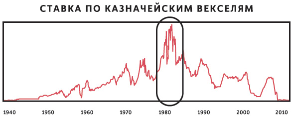
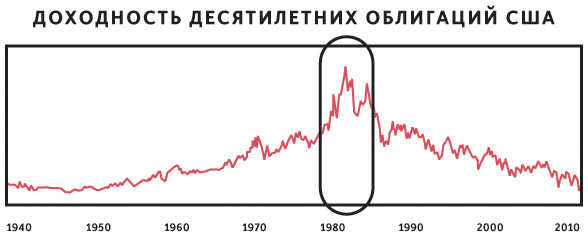
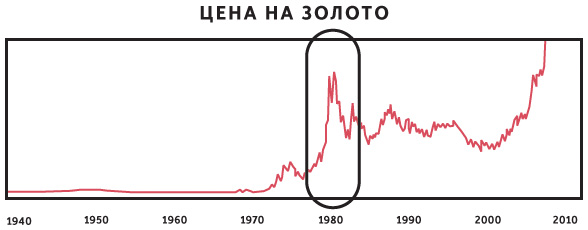
Это был один из поворотных моментов в столетии. По всему миру политический маятник качнулся вправо, и к власти пришли Маргарет Тэтчер, Рональд Рейган и Гельмут Коль. Определение «либеральный» перестало означать «идущий в ногу с прогрессом», а обрело новый смысл – «платящий людям, чтобы те не работали».
В моем понимании, ФРС оказалась между молотом и наковальней. Центробанк должен был либо а) запустить печатный станок, чтобы решить долговые проблемы и поддержать экономику (притом что инфляция уже и так достигла 10 % в 1981 году, что заставило биржевых игроков избавляться от облигаций и переходить в активы с хеджированием инфляции), либо б) попытаться обуздать инфляцию беспрецедентным ужесточением мер (что стало бы фатальным для должников, так как уровень долга был наивысшим со времен Великой депрессии). Ситуация ухудшалась из-за прогрессирующих темпов инфляции и такого же снижения экономической активности. Оба этих показателя достигли критических отметок. Уровень долгов продолжал расти опережающими темпами по сравнению с ростом доходов, необходимых заемщикам для выплаты долга, а американские банки оформляли огромные займы – гораздо больше собственного капитала – развивающимся странам. В марте 1981 года я написал статью для рассылки Daily Observation под заголовком «В ожидании следующей депрессии», которая заканчивалась словами: «Судя по величине выданных нами займов, следующая депрессия будет сопоставима или хуже той, которую мы наблюдали в 1930-е годы».
Эта точка зрения была весьма нестандартной. Для большинства «депрессия» – пугающее слово, которое использовали всякие чудаки в погоне за сенсацией, а не то, над чем серьезным людям стоило задуматься. Однако я изучил данные по госдолгу и депрессиям в ретроспективе вплоть до 1800 года, провел расчеты, и у меня не осталось сомнений, что у порога долговой кризис, который спровоцируют развивающиеся страны. Я должен был поделиться этими выводами с клиентами. Поскольку моя точка зрения была весьма неоднозначной, я попросил других экспертов проследить за цепью моих размышлений и найти слабое звено. Никто не смог выявить уязвимое место в моей логике, но никто и не спешил подписываться под моим выводом.
Я считал, что впереди выбор между разгоном инфляции и дефляционной депрессией, а потому держал активы в золоте (чтобы застраховаться от ускорения инфляции) и в облигациях (на случай дефляционной депрессии). До этого момента золото и облигации двигались разнонаправленно в зависимости от того, росли или снижались инфляционные ожидания. Эти позиции казались более безопасными, чем альтернатива в виде наличных, которые обесценились бы в условиях инфляции, или акций, курсовая стоимость которых упала бы во время депрессии.
Сначала рынки были против меня. Но по своему опыту торговли фьючерсами на серебро и других сделок я знал, что у меня хроническая проблема с опережением событий, поэтому был убежден, что вскоре мои прогнозы сбудутся. Долго ждать не пришлось. К осени 1981 года ужесточение денежно-кредитной политики со стороны ФРС возымело разрушающий эффект, мои вложения в облигации начали окупаться, а мои мрачные прогнозы перестали выглядеть такими уж нереалистичными. В феврале 1982 года, чтобы избежать кризиса наличности, ФРС временно добавила ликвидность. В июне, когда потребность в наличности еще возросла, ФРС отреагировала запуском печатного станка, повысив объем ликвидности до наивысшего уровня с момента назначения Пола Волкера. Однако этого оказалось недостаточно.
Палка о двух концах
В августе 1982 года Мексика объявила дефолт по внешним долгам. К тому времени почти всем было очевидно, что за Мексикой последуют и другие страны. Положение было серьезным, так как американские банки выдали займы в объеме до 250 % своего капитала странам, ситуация в которых была не лучше, чем в Мексике. Кредитование бизнеса в США практически прекратилось.
Поскольку я оказался одним из немногих, кто предсказывал подобное развитие событий, ко мне начали проявлять интерес. Меня пригласили на слушания по теме кризиса в Конгрессе США, а в ноябре я принял участие в шоу Wall Street Week с ведущим Луисом Ракисером, которое смотрят все участники рынка. В обоих публичных выступлениях я уверенно заявлял, что депрессия неизбежна, и объяснял почему. После дефолта Мексики Федеральная резервная система США отреагировала на экономический коллапс и дефолты по долгам, сделав предложение денег более доступным. Это привело к рекордному росту фондового рынка. Конечно, меня это удивило, но я счел это спонтанной реакцией на действия ФРС.
В конце концов в 1929 году за пятнадцатипроцентным ралли последовало самое серьезное падение в истории фондового рынка США. В октябре я изложил свой прогноз в меморандуме. По моему мнению, с вероятностью 75 % усилия ФРС провалятся, наступит экономический кризис; с вероятностью 20 % усилия ФРС сначала дадут положительный результат по стимулированию экономики, но в итоге все равно провалятся; и с вероятностью 5 % действия ФРС приведут к спасению экономики, но вызовут гиперинфляцию. Чтобы застраховаться от самого пессимистичного сценария, я купил фьючерсы на золото и на казначейские облигации как спред по паре с евродолларом, что снижало риск в условиях нарастания кредитных проблем.
Как же я ошибался. После некоторой задержки экономика отреагировала на действия ФРС восстановлением темпов роста без инфляции. На фондовом рынке началось масштабное «бычье ралли», и в последующие 18 лет в экономике США наблюдался самый серьезный рост без инфляции в истории.
Как такое стало возможным? В США начали возвращаться деньги от стран-заемщиков, и это в корне изменило ситуацию. Это стимулировало рост доллара, что оказало дефляционное воздействие и позволило ФРС снизить процентную ставку, не разгоняя инфляцию. Это стало основой экономического роста. Банки были защищены сразу с двух сторон: ФРС выдавала им денежные кредиты, а кредиторские комитеты и международные финансовые организации, занимающиеся реструктуризацией, такие как Международный валютный фонд (МВФ) и Банк международных расчетов, устраивали все так, чтобы страны-должники могли обслуживать госдолг из новых заемных средств. Таким образом, можно было сделать вид, что все в порядке, и проводить частичное погашение этих займов многие годы.
Мой личный опыт в этот период можно было сравнить с серией ударов бейсбольной битой по голове. Моя ошибка, точнее сказать мой громкий публичный провал, стала для меня большим унижением и стоила мне всего того, что я сумел выстроить в Bridgewater. Я понимал, что был самонадеянным глупцом, безоговорочно уверенным в абсолютно ошибочной точке зрения.
Вот чего я достиг за восемь лет ведения бизнеса. Несмотря на то что я был прав гораздо чаще, чем ошибался, моя карьера стремительно скатывалась к точке старта.
В какой-то момент я потерял столько денег, что мне нечем было платить людям, работавшим со мной. Один за другим они уходили, и я был не вправе их останавливать. Нас осталось двое – Колман и я. Затем ушел и Колман. Это было болезненное расставание: мы все плакали, когда прощались с ним и его семьей, вынужденной вернуться в Оклахому. В Bridgewater остался всего один сотрудник – я.
Это был сложный жизненный период: я расставался с близкими мне людьми и чуть было не распрощался с мечтой работать на себя. Чтобы свести концы с концами, я даже занял $4000 у отца, пока не продал наш второй автомобиль. Что делать? Вновь надеть деловой костюм и вернуться на наемную работу на Уолл-стрит? Но не о такой жизни я мечтал. С другой стороны, я должен обеспечивать семью. Я осознавал, что делаю один из самых серьезных выборов в жизни и он окажет огромное влияние на будущее мое и моей семьи.
Как мне удалось решить проблему инвестирования
Зарабатывать на биржевой торговле не так-то просто. Это очень точно сформулировал блестящий трейдер и инвестор Бернард Барух[14]: «Если вы готовы забыть обо всем на свете и изучать историю рынка и основные компании, чьи акции сейчас торгуются, с тщательностью студента-медика, штудирующего анатомию, если к тому же вы обладаете стальными нервами игрока, шестым чувством ясновидца и храбростью льва, то у вас есть призрачная надежда».
Теперь ошибки, которые привели меня к краху, казались более чем очевидными. Во-первых, я был слишком самоуверен и позволил эмоциям взять верх. Я в очередной раз убедился, что, несмотря на глубокие знания и упорный труд, нельзя выступать с такими безапелляционными заявлениями, каким было мое в шоу Wall Street Week: «Мягкой посадки не будет. Я могу утверждать это с абсолютной уверенностью, потому что знаю, как работает рынок». Не перестаю удивляться, как я мог быть таким самоуверенным.
Во-вторых, я в очередной раз убедился в важности изучения истории. В конце концов, то, что произошло, случалось и раньше. Мне следовало понять, что долги в национальной валюте можно успешно реструктурировать при помощи государства и что, когда центробанки одновременно начинают стимуляцию (как это было в марте 1932 года в нижней точке Великой депрессии и как это повторилось в 1982 году), инфляция и дефляция достигают состояния баланса. Как и в 1971 году, я провалил урок истории. Осознав это, я попытался понять логику движений всех основных экономик и рынков сто лет назад, чтобы сформулировать универсальные, тщательно взвешенные принципы принятия решений, не зависящие от времени.
В-третьих, я получил еще одно напоминание, как сложно правильно прогнозировать время событий. Мои долгосрочные прогнозы по равновесным уровням не были достаточно надежными: слишком многое могло произойти между временем, когда я делал ставки, и тем, когда сбывались мои прогнозы (если сбывались).
Анализируя прошлые неудачи, я пришел к выводу: чтобы двигаться вперед без высокой вероятности серьезного провала, мне нужно объективно себя оценить и измениться. Причем начать придется с управления природной агрессивностью, свойственной мне в стремлении к желанной цели.
Представьте: чтобы ваша жизнь стала потрясающей, вам нужно пройти сквозь джунгли, полные опасностей. Вы можете не трогаться с места, наслаждаться безопасностью и вести обычную жизнь. Или же рискнуть пройти через джунгли к своей мечте. Каким будет ваш выбор? Не спешите, подумайте, потому что этот выбор в той или иной форме приходится делать каждому.
Даже после оглушительного провала я ни минуты не сомневался, что должен следовать за мечтой со всеми сопутствующими рисками, а значит, вопрос в том, как пройти через опасные джунгли и остаться в живых. Оглядываясь назад, я понимаю, что моя неудача была одним из самых важных жизненных уроков, потому что она научила меня смирению, необходимому, чтобы уравновесить мою агрессию. Я испытал страх от совершения ошибки, и это заставило меня изменить утверждение «я прав» на вопрос «почему я решил, что я прав?». Для меня было очевидно, что оптимальный способ найти ответ на этот вопрос – прислушаться к мнению других независимых экспертов, которые преследуют ту же цель, но смотрят на ситуацию под другим углом. Если вовлечь их в конструктивный диалог, я сумел бы понять их логику, а они могли бы указать на слабые места в моих умозаключениях. Таким образом, у каждого стало бы больше шансов оказаться правым.
Иными словами, я просто хочу получить правильный ответ – мне не столь важно, от кого он придет. Так что я научился быть открытым всему и позволять другим указывать на то, что я, возможно, упускаю из виду. Я понимал, что для меня единственный способ добиться успеха – следовать следующим правилам.
1. Искать самых умных людей, не согласных со мной, чтобы попытаться понять их логику.
2. Знать, когда отказаться от своего мнения.
3. Сформулировать, проверить и систематизировать универсальные принципы, не зависящие от времени.
4. Уравновешивать риски так, чтобы сохранять преимущества и уменьшать недостатки.
Следование этим правилам значительно повысило рентабельность моих вложений относительно рисков. Кроме того, я начал применять эти принципы и в других сферах жизни. Важнее всего, что в итоге я построил свою компанию, используя принцип меритократии идей. Если при авторитарном стиле управления начальник ведет за собой остальных, при демократии у каждого есть одинаковое право голоса, то в условиях меритократии идей поощряется конструктивная критика и глубокое изучение вопросов, а мнения участников учитываются согласно их заслугам.
Благодаря тому что я стимулировал открытое обсуждение противоположных мнений и их анализ, я многое узнал о том, как люди думают. Я пришел к пониманию, что самые серьезные слабости человека – это изнанка его сильных сторон. Например, одни склонны рисковать, а другие избегают этого; одни сосредоточены на деталях, а другим достаточно общего представления. Большинство людей склонны к определенной модели поведения. Как правило, делая то, что наиболее для него естественно, человек не учитывает слабости, которые ведут его к провалу. При этом самое важное то, что происходит после провала. Успешные люди корректируют свои действия так, чтобы извлекать преимущества из собственных сильных сторон и компенсировать слабые. Неуспешные ничего подобного не делают. Далее я опишу конкретные стратегии, как добиться изменений, но сейчас стоит просто отметить, что позитивные перемены начинаются в тот момент, когда человек признает и принимает свои слабости.
В последующие годы я узнал, что большинство очень успешных людей, с которыми мне посчастливилось общаться, пережили подобные болезненные неудачи и вынесли из них уроки, благодаря которым и стали успешными. Вспоминая о своем увольнении из Apple в 1985 году, Стив Джобс сказал: «Лекарство было горьким, но пациенту оно помогло. Иногда жизнь бьет вас по башке кирпичом. Не теряйте веры. Я убежден: единственное, что помогло мне продолжать дело, – это то, что я любил свое дело»[15].
Я видел, что для исключительных результатов нужно выйти за границы возможного, а при этом велик риск болезненного провала. Вы будете думать, что потерпели неудачу, но это будет неправдой, пока вы не сдадитесь. Хотите верьте, хотите нет, но боль утихнет, и перед вами откроются новые возможности, которых вы не видели раньше. Самое важное, что вы можете сделать, – это извлечь уроки из неудачи и исполниться смирения и непредубежденности, чтобы повысить шансы на успех. А затем действуйте.
Мой последний урок был, вероятно, самым важным, потому что он неизменно повторялся на протяжении всей моей жизни. Сначала мне казалось, что я стою перед выбором «все или ничего»: либо рисковать по-крупному в погоне за высокой рентабельностью (и время от времени проигрывать), либо снизить риски и довольствоваться невысокой рентабельностью. Но мне были нужны низкие риски и высокая рентабельность, и, когда я поставил перед собой цель этого добиться, я научился не торопиться и действовать осмотрительно в условиях выбора между вариантами, которые мне были нужны, но, казалось, противоречили друг другу. Таким образом можно понять, как получить максимально возможное от двух вариантов. Почти всегда это отличный путь, который вы просто еще для себя не открыли, а потому попытайтесь его найти, прежде чем соглашаться на вариант, очевидный с первого взгляда.
Это было очень непросто, но в конце концов я обнаружил способ, как «сделать омлет, не разбив яиц». Я назвал его «Священный Грааль инвестирования», и именно это и есть секретный ингредиент успеха Bridgewater.
4. Путь испытаний: 1983–1994
* * *
Я начал приходить в себя после неудачи, но положение мое было настолько неважным, что я не мог наскрести денег на авиабилет до Техаса, чтобы встретиться с потенциальным клиентом, хотя ожидаемый гонорар с лихвой покрыл бы стоимость перелета. Я не полетел в Техас. Постепенно я привлек клиентов, начал набор людей в новую команду, дела пошли в гору. Со временем мой взлет становился все выше, а падения были незначительными, и я извлекал из них уроки. Я никогда не думал о том, что я делал, как о создании (или возрождении) компании. Я просто старался не выйти из игры.
Самым ценным из моих приобретений на тот момент были компьютеры, потому что они помогали мне думать. Без них Bridgewater даже близко не добилась бы успеха.
Первые микрокомпьютеры (позднее ставшие известными как персональные компьютеры) появились на рынке в конце 1970-х. Я пользовался ими для эконометрических вычислений, применяя статистику и вычислительные возможности к экономическим данным для анализа деятельности экономической системы. В декабре 1981 года я написал статью, в которой говорил (и по-прежнему так считаю), что «теоретически… если бы существовал компьютер, способный вместить все факты в мире, который был бы достаточно программируемым, чтобы математически выразить все взаимоотношения между всеми слагаемыми этого мира, будущее вполне можно было бы предсказать».
К сожалению, я был очень от этого далек. Хотя благодаря своим первым системам я получал полезную информацию о том, в какой точке цены, в конце концов, достигнут равновесия, я не мог с их помощью выработать устойчивые стратегии торговли: они просто показывали, что конкретная позиция в итоге принесет прибыль. Например, я проводил анализ, в результате которого получалось, что цена на какой-то товар должна быть, скажем, 75 центов. Если она составляла 60 центов, я понимал, что мне следует покупать, но не мог предвидеть, что, прежде чем вырасти до 75 центов, эта цена сначала упадет до 50, так что я не знал, когда именно нужно покупать и продавать. Иногда (к сожалению, слишком часто) прогнозы системы не оправдывались, и я терял очень много денег.
«Тот, кто следует гаданиям на хрустальном шаре, обречен есть его осколки»[16] – я часто цитировал эти слова в те годы. С 1979 по 1982 год я «съел достаточно стекла», чтобы понять, что самое важное не в том, чтобы знать будущее, а в том, чтобы знать, как правильно реагировать на информацию, доступную в каждый конкретный момент. Для этого нужен был огромный объем экономической информации и рыночных данных, на которые можно было бы опереться. И когда у меня появился этот объем данных, я этим воспользовался.
Почти с самого начала карьеры каждый раз, когда я открывал любую позицию на рынке, то записывал критерии, которыми руководствовался при принятии решения. Затем при закрытии позиции у меня была возможность проанализировать, насколько обоснованными оказались эти критерии. Мне в голову пришло, что, если выразить их в виде формул (или, как сейчас принято говорить, алгоритмов) и совместить с историческими данными, я могу проверить, насколько эффективно они сработали бы в прошлом. Вот как это выглядело на практике: я начинал с интуитивных догадок, затем формулировал их логически в виде критериев для принятия решений и фиксировал как систему, создавая ментальную карту, как я поступил бы в каждой конкретной ситуации. Далее я прогонял исторические данные через эти системы, чтобы понять, насколько эффективными были бы мои решения в прошлом, и в зависимости от результата корректировал принципы их принятия.
Мы тестировали системы, максимально углубляясь в историю – как правило, более чем на сто лет назад, делая это для каждой страны, для которой у нас были данные. Это дало мне отличное представление о том, как действовал во времени экономический/рыночный механизм и как его можно использовать. Кроме того, я многому научился и стал оттачивать свои критерии, добиваясь их универсальности и независимости от времени. После того как я тщательно опробовал этот образ действий, я мог прогонять через системы данные в режиме реального времени, а компьютер обрабатывал их и принимал решения, как это сделал бы мой мозг.
В результате в Bridgewater появились системы для принятия решений по процентной ставке, акциям, валютам и драгоценным металлам, которые затем мы объединили в систему управления нашим портфелем. Наша система напоминала ЭКГ, только для экономики; она фиксировала важные сигналы: когда они менялись, мы корректировали наши позиции. Тем не менее я никогда слепо не следовал рекомендациям компьютера: параллельно я проводил собственный анализ, а затем сравнивал результаты. Если решение компьютера отличалось от моего, я разбирался почему. Чаще всего это происходило из-за того, что я что-то упустил из виду. В этих случаях компьютер обучал меня. Однако иногда мне в голову приходили новые критерии, отсутствовавшие в моей системе, и тогда я обучал компьютер. Мы помогали друг другу. Прошло совсем немного времени, и компьютер с его огромными возможностями по обработке данных стал гораздо эффективнее меня. Это было здорово: словно гроссмейстер помогал мне планировать ходы, только действовал он по заданному набору критериев, которые я понимал и считал логичными, а потому мы принципиально не могли разойтись с ним во мнениях.
Компьютер гораздо эффективнее меня обрабатывал большие объемы информации, причем точнее, быстрее и без эмоций. За счет хорошего объема памяти он мог объединять мои знания и знания людей, с которыми я работал, по мере того как моя компания росла. Вместо того чтобы спорить о выводах, мы с коллегами спорили о разных критериях принятия решений. Мы разрешали наши противоречия с помощью объективного тестирования этих критериев. Стремительно растущая мощность компьютеров в тот период была для нас настоящим подарком судьбы. Помню, когда RadioShack[17] вывела на рынок недорогой мини-компьютер, на котором можно было разыгрывать шахматные партии, мы отправили всем нашим клиентам по такому мини-компьютеру с сообщением: «Систематизированный подход от Bridgewater». Уже на втором уровне из девяти возможных этот маленький компьютер разбивал меня в пух и прах. Мы дали каждому из клиентов на собственном опыте почувствовать, как сложно превзойти компьютеризированный процесс принятия решений.
Разумеется, у нас всегда была свобода не следовать рекомендациям системы. Мы пользовались ею меньше чем в 2 % случаев, преимущественно чтобы вывести средства во время экстраординарных событий, которые не поддаются программированию, таких как атака на Всемирный торговый центр 11 сентября. Компьютер превосходил нас во многих отношениях, но он не обладал нашим воображением, пониманием и логикой. Именно поэтому тандем человека и компьютера оказался таким эффективным.
Эти системы принятия решений были гораздо лучше систем прогнозирования, которыми я пользовался раньше, в основном потому, что они учитывали нашу актуальную реакцию на развитие событий, позволяя иметь дело с более широким спектром возможностей. Кроме того, они могли включать расчет по времени. В январской рассылке 1987 года под названием «Зарабатывать деньги или делать прогнозы» я объяснил это так:
«По правде говоря, прогнозы стоят не так уж много, и большинство людей, которые их делают, не зарабатывают деньги на рынках… Все потому, что нет ничего, в чем можно быть уверенным на 100 %. Когда кто-то описывает вероятность всего, что влияет на будущее, чтобы сделать прогноз, он получает широкий спектр потенциальных вариантов, которые могут оказаться верными с определенной степенью вероятности, а отнюдь не единственным почти гарантированным результатом… Считается, что движение рынка отражает движение экономики. Движение экономики отражено в экономической статистике. Изучив взаимосвязь между экономической статистикой и движением рынка, мы разработали четкие правила для определения важных сдвигов в экономических/рыночных условиях и, как следствие, в изменениях наших позиций. Иными словами, вместо того чтобы предсказывать изменения экономических условий и корректировать свои позиции в их ожидании, мы выбираем эти изменения, когда они происходят, и переводим деньги на те рынки, которые показывают наилучшие результаты в этих условиях».
За последние три десятилетия, на протяжении которых мы занимаемся созданием этих систем, мы приняли много других правил, которым подчинены все аспекты нашей биржевой торговли. Сегодня, когда данные поступают в режиме реального времени, наши компьютеры обрабатывают информацию из более чем 100 миллионов наборов данных и дают подробные инструкции другим компьютерам, так что это логически мне понятно. Без этих систем я, вероятно, тронулся бы рассудком или просто умер от стресса в попытке выполнить свою работу. Нам, определенно, не удалось бы достигнуть такого успеха, к какому мы пришли. Как вы увидите далее, сейчас я разрабатываю похожие системы, которые помогут нам принимать управленческие решения. Я убежден, что самое полезное, что можно сделать для повышения эффективности решений, – это обдумать свои принципы их принятия, записать это и словами, и в формате компьютерных алгоритмов, по возможности провести обратное тестирование (на основе исторических данных) и применять компьютерную систему в режиме реального времени параллельно с традиционным способом.
Однако я забегаю вперед. Вернемся в 1983 год.
Возвращение Bridgewater к жизни
К концу 1983 года в компании работали уже шесть сотрудников. До этого момента я вообще не занимался маркетингом: бизнес развивался благодаря сарафанному радио, а также тому, что люди читали мои ежедневные рассылки и видели публичные выступления. При этом был очевиден растущий спрос на наш анализ, и я понял, что мы могли бы продавать его в дополнение к доходу от консалтинговой деятельности и торговли на бирже. Так что я нанял седьмого сотрудника – Роба Фрида, бывшего коммивояжера, который раньше ходил по домам и продавал Библию. И мы начали обивать пороги, таская за собой проектор и огромную пачку слайдов, пытаясь продать за $3000 в месяц пакет, включающий мою ежедневную рассылку телексом, еженедельные совещания по селекторной связи, аналитические отчеты раз в две недели и раз в квартал, а также ежеквартальные встречи. За следующий год Роб привлек целый ряд компаний и управляющих институциональными инвестициями, в том числе General Electric, Keystone Custodian Funds, Всемирный банк, Brandywine, Loomis Sayles, Provident Capital Management, the Singer Company, Loews Corporation, GTE Corporation и Wellington Management.
На тот момент у нас было три основных бизнес-направления: консалтинговые услуги, управление рисками компаний за поощрительное вознаграждение, а также продажа аналитических пакетов. Мы работали с самыми разными корпоративными, финансовыми и политическими институтами, представленными на рынке: банками, международными компаниями с диверсифицированным бизнесом, товаропроизводителями, производителями продуктов питания, предприятиями коммунального хозяйства и многими другими. Например, мы могли помочь международной компании справиться с валютными рисками, которым она подвержена из-за того, что ведет деятельность в разных странах.
Мой подход заключался в том, что я погружался в бизнес клиента до тех пор, пока не понимал, что стратегии, предлагаемые ему, я применил бы сам, если бы руководил этой компанией. Любой бизнес я раскладывал на логические составляющие, а затем предлагал план по управлению каждой из этих частей с помощью разнообразных финансовых инструментов, особенно деривативных. Важнее всего было разделить прибыль, которую приносит основная деятельность, и спекулятивную прибыль и убытки в результате изменения цен. Мы делали это, чтобы показать руководству компании, какой будет «нейтральная к риску», то есть должным образом застрахованная позиция, которой стоит придерживаться, если компания не пытается активно играть на рынке. Отклоняться от этой позиции я рекомендовал только в том случае, если компания хочет заняться спекуляциями на рынке, что следует делать осмотрительно и с полным пониманием, какое влияние это окажет на основной бизнес организации. Для большинства наших клиентов такой подход становился неожиданностью и буквально открывал глаза. Он давал ясность, контроль над ситуацией и лучшие результаты. В некоторых случаях клиенты хотели, чтобы мы играли на бирже за них, и мы занимались этим за процент от прибыли.
Этот подход с установлением нейтральной к риску «контрольной» позиции и разумным отклонением от нее стал основой стиля инвестиционного управления, который мы впоследствии назвали «альфа-оверлей» (alpha overlay) и при котором пассивная («бета») и активная («альфа») позиции четко разделены для класса доходности. Общая доходность рынка (например, фондового) – это бета. Альфа – это прибыль, которую инвестор получает в результате умения управляющего заранее распознать, какие активы вырастут в цене, а какие упадут. Например, результат некоторых управляющих может быть лучше или хуже рынка, то есть у них положительная или отрицательная альфа. С альфа-оверлеем мы предлагали способ принимать решения по рыночным позициям независимо от лежащей в основе рыночной конъюнктуры. Такой подход научил меня тому, что один из ключевых принципов успешного инвестора – открывать только те позиции, в которых полностью уверен, и хорошо их диверсифицировать.
В середине 1980-х годов одним из наших клиентов был Алан Бонд, предприниматель, про которого говорили: он не умеет сдаваться, один из богатейших людей Австралии. Он известен в том числе тем, что спонсировал участие австралийской команды в Кубке Америки[18] и она стала первой командой за 132-летнюю историю Кубка, которая увезла трофей из США. Как и Банкера Ханта, его подвели спекуляции на рынке, и он в конце концов был вынужден объявить о банкротстве. Я консультировал его и его команду, когда дела у них шли в гору, и был рядом, когда они переживали не лучшие времена, так что трагедия Алана Бонда разворачивалась прямо у меня на глазах. Это был классический случай, когда бизнес путали со спекуляциями и страховали риски, когда было слишком поздно.
Бонд брал кредиты в долларах США на приобретение активов, таких как пивоварни в Австралии: таким образом он получал более низкие, чем в Австралии, процентные ставки. Хотя он этого не осознавал, это была чистой воды спекуляция, основанная на убеждении, что стоимость американской валюты, в которой Бонду придется выплачивать свои кредиты, не будет повышаться. Когда же в середине 1980-х американский доллар вырос против австралийского, оказалось, что доходов от пивоваренного бизнеса в австралийских долларах недостаточно, чтобы погасить кредиты. Команда Бонда обратилась ко мне за консультацией. Я провел расчеты, каким будет положение Bond Corp, если компания начнет хеджировать валютные риски, и понял, что это приведет к фиксированию убытка, что будет равносильно краху компании. Так что я рекомендовал подождать. Когда австралийский доллар пошел вверх, я посоветовал хеджировать валютные риски, но команда Бонда решила этого не делать, потому что они были уверены, что проблемы с валютами кончились. Спустя некоторое время австралийский доллар рухнул до нового исторического минимума, и меня пригласили на экстренное совещание. У компании было не так уж много вариантов, как поступить, не фиксируя при этом катастрофические убытки, поэтому они решили опять ничего не предпринимать. Только в этот раз ралли австралийского доллара не случилось. На моих глазах один из самых богатых и опытных предпринимателей на планете потерял все, и это произвело на меня неизгладимое впечатление.
Помимо прочего, мы участвовали в отдельных консалтинговых проектах, связанных с фондовым рынком. В 1985 году я работал вместе с другом и великим трейдером Полом Тюдором Джонсом[19] над созданием фьючерсного контракта на курс доллара США (торгового индекса, отражающего стоимость американского доллара против корзины иностранных валют), который торговался (и по-прежнему торгуется) на Нью-Йоркской хлопковой бирже. Также я работал с Нью-Йоркской фьючерсной биржей над разработкой индекса фьючерсных цен CRB (индикатор для отслеживания общих ценовых тенденций на сырьевом рынке).
В отличие от большинства игроков, у меня никогда не было желания создавать инвестиционные продукты, особенно традиционные, просто потому, что они будут хорошо продаваться. Единственное, чего я хотел, – торговать на рынках и выстраивать взаимоотношения, делая для своих клиентов то, что я бы сделал на их месте. В то же время мне чрезвычайно нравилось создавать что-то принципиально новое и революционное. К середине 1980-х для меня стали очевидны несколько вещей. Во-первых, мы делали эффективные прогнозы по процентным ставкам и валютному рынку, и управляющие институциональных инвесторов, покупавшие наши аналитические отчеты, зарабатывали на этом хорошие деньги. Во-вторых, мы успешно управляли рисками изменения процентных ставок и валютными рисками компаний. Я понял, что при таком раскладе мы и сами сможем стать успешными управляющими институциональных инвесторов. Так что я сделал предложение руководителям пенсионного фонда сотрудников Всемирного банка, в частности Хильде Очоа, которая на тот момент занимала должность директора по инвестициям. Несмотря на то что у нас не было активов в управлении и мы не могли похвастаться практическим опытом в этом направлении, мы получили в управление $5 млн.
Для нас это было поворотным моментом и рождением компании Bridgewater такой, какой мы знаем ее сегодня. Стратегия, которую мы использовали для Всемирного банка, заключалась в балансировании между наличными и двадцатилетними казначейскими облигациями США, так как эти позиции позволили бы ставить с плечом на движение процентных ставок. Когда наши системы показывали, что давление на процентные ставки должно привести к их падению, мы переводили средства в казначейские облигации, а когда система прогнозировала повышение процентных ставок, мы «оставались в наличных». Наша стратегия доказала свою эффективность, и вскоре другие крупные институциональные инвесторы начали доверять нам средства в управление. Следующими нашими крупными клиентами стали Mobil Oil и Singer, и за ними быстро потянулись другие. Мы продолжали работать и в конце концов стали самым успешным управляющим хедж-фондом в истории.
Венчурная деятельность за «закрытыми дверями» Китая
Один из аспектов, который мне всегда нравился в работе консультанта, – это возможность путешествовать. Чем необычнее место, тем интереснее. Именно любопытство привело меня в 1984 году в Пекин. Мои знания о Китае ограничивались картинкой, которую я увидел в юности: толпа людей размахивает красной книжкой с цитатами Мао Цзэдуна. Поэтому возможность приоткрыть для себя эти «закрытые двери» была весьма заманчивой. Я получил приглашение благодаря тому, что у меня был небольшой офис в Гонконге, директор которого работал советником в CITIC (Международная китайская инвестиционная корпорация по управлению имуществом), единственной китайской компании, которой было позволено взаимодействовать с внешним миром. В Пекине я встретил множество замечательных, невероятно гостеприимных людей, которые познакомили нас с традицией пить маотай[20], приговаривая при этом: Ganbei! («До дна!)», и с которыми было очень весело. Эта первая поездка, которую я совершил с женой и еще несколькими спутниками, положила начало нашим более чем тридцатилетним отношениям с Китаем, которые оказали огромное влияние на меня и мою семью.
В то время в Китае не было финансовых рынков. В конце концов их начала формировать небольшая группа из семи китайских компаний (включая CITIC), известная как Securities Executive Education Council. Деятельность этой группы началась в 1989 году, незадолго до событий на площади Тяньаньмэнь[21], но затормозилась, так как подобные рыночные шаги все еще считались слишком капиталистическими. Группа работала в небольшом гостиничном номере, и едва ли у них было финансирование. Я как сейчас помню большое мусорное ведро под металлической лестницей, ведущей к их офису. Я испытывал безмерное уважение к этим молодым людям, зная, какому риску они подвергаются, занимаясь таким делом в столь неспокойное время, поэтому я сделал им небольшое пожертвование, чтобы как-то поддержать, и с удовольствием делился с ними знаниями. С нуля эти люди создали в Китае рынки и государственную систему нормативного регулирования и обеспечения безопасности.
В 1994 году я создал компанию Bridgewater China Partners. К тому моменту я был убежден, что Китаю суждено стать самой крупной экономикой XXI века, при этом пока еще мало кто инвестировал в эту страну – можно было заключить очень выгодные сделки. Я мог привлечь деньги, познакомив своих клиентов – институциональных инвесторов – с открывающимися перспективами, и я мог поделиться собственным опытом, представив китайские компании американским. В обмен я надеялся получить долю в этих компаниях. Фактически я пытался создать первую частную инвестиционную компанию в Китае с офисом в США.
Деятельность моего нового детища началась с того, что я организовал поездку в Китай для небольшой группы институциональных инвесторов из числа моих клиентов, совокупный объем активов в их управлении составлял $70 млрд. По возвращении мы решили двигаться вперед и совместно учредить торговый банк[22] в Пекине. Конечно, я знал, что мы ступаем на неизвестную территорию и нам придется многому учиться и экспериментировать. Но даже при таком подходе я сильно недооценил сложность задачи, которую мы сами перед собой поставили, и время, которое уйдет на ее реализацию. Теперь я периодически разговаривал по телефону в три часа утра, пытаясь разобраться в сомнительном бухгалтерском учете компаний, в которых мы были заинтересованы, а с наступлением утра меня ждали мои привычные обязанности в Bridgewater.
Примерно через год такой жизни я окончательно утвердился во мнении, что не смогу одновременно руководить Bridgewater и Bridgewater China Partners, так что ликвидировал вторую компанию. На этом никому не удалось заработать и никто не потерял деньги: я не делал инвестиции, потому что мне не вполне нравилось то, что я видел. Я уверен, что если бы посвящал этой компании все свое время, она добилась бы большого успеха, но тогда Bridgewater не стала бы тем, что она представляет собой сейчас. Я не воспользовался этой возможностью, но не жалею о своем выборе. Я усвоил, что, если упорно трудиться, можно получить почти все, что захочешь, но, к сожалению, не все. Зрелость заключается в способности отказаться от хорошей альтернативы, чтобы воплотить в жизнь вариант, который будет лучше.
Хотя я отказался от этой возможности, Китай оставался важной частью моей жизни и жизни моей семьи. Мы любили эту страну и живущих там людей. В 1995 году мы с Барбарой и нашим одиннадцатилетним сыном Мэттом решили, что Мэтту стоит провести год в Пекине, где он будет учиться в обычной школе и жить у мадам Гу. Мадам Гу останавливалась у нас в Америке во время событий на площади Тяньаньмэнь, и мы гостили у нее, когда Мэтту было три года. Образ жизни в Китае значительно отличался от того, к которому Мэтт привык в Коннектикуте. Например, в квартире, где жила мадам Гу и ее муж, принять горячий душ можно было только дважды в неделю. Отопление в школе, куда ходил Мэтт, включали только в сильные морозы, а все остальное время ученики сидели на уроках в верхней одежде. Мэтт не говорил по-китайски, и никто из его одноклассников не говорил по-английски.
Все происходящее было не просто невероятным приключением для Мэтта: это было беспрецедентным случаем и требовало специального разрешения от китайского правительства. Я был очень рад за Мэтта, потому что знал, что ему предстоит познакомиться с абсолютно другим укладом жизни и это, несомненно, расширит его картину мира. Чтобы убедить Барбару, потребовалось чуть больше времени и пара визитов к детскому психологу, чтобы подтвердить готовность Мэтта к такому эксперименту. К тому же Барбара сама много путешествовала, жила в разных странах и знала, какое влияние это оказало на формирование ее личности, так что она приняла эту идею, хотя ее совсем не радовала перспектива расставания с сыном. Этот год, который Мэтт провел вдали от дома, сильно повлиял на его ценности и цели. Мэтт полюбил Китай (по его словам, за этот год он стал наполовину китайцем) и понял, что такое духовные ценности и эмпатия в сравнении с материальными благами. В результате в 16 лет он организовал благотворительный проект China Care, направленный на помощь китайским детям-сиротам с особенными потребностями. Мэтт занимался этим проектом 12 лет (и продолжает заниматься по сей день, хотя и в меньшей степени). Затем его усилия сместились в другую сферу: он попытался переосмыслить, какими могут быть компьютерные технологии в развивающихся странах, – этим он занимается в своей компании Endless. Я многому научился у своего сына, особенно тому, какое удовольствие может доставлять филантропия. Это сильно укрепило нашу связь. С годами мне и моей компании Bridgewater удалось наладить теплые дружеские отношения со многими замечательными людьми, живущими в Китае. Мы помогли финансовым институтам этой страны пройти путь от колыбели до мощных и сложно устроенных гигантов.
Китай не единственная страна, с которой работала Bridgewater. К нам обращались представители государственных инвестиционных фондов Сингапура, Абу-Даби, Австралии, а также российские и европейские политики. Полученный опыт, обретенная перспектива, помощь, которую я смог оказать, – все это я считаю своими невещественными наградами, не менее важными, чем те материальные, которые я получил за годы карьеры.
У меня был незабываемый опыт работы с сингапурцами и сингапурскими институтами. Ли Куан Ю[23], один из создателей сингапурского «экономического чуда», по-прежнему остается для меня эталоном политического деятеля и руководителя. Это говорит о многом, так как мне посчастливилось лично знать нескольких мировых лидеров, которыми я восхищаюсь. Один из самых волнующих моментов моей жизни – ужин с Ли Куан Ю в моем нью-йоркском доме в 2015 году незадолго до его смерти. Ли предложил вместе поужинать, чтобы обсудить состояние мировой экономики. На этот ужин я пригласил экс-главу ФРС Пола Волкера (еще одного моего героя), экс-министра финансов Боба Рубина (его богатый опыт всегда был полезен), а также Чарли Роуза[24] (одного из самых любознательных и вдумчивых людей из всех, кого я знаю). Мы отвечали на вопросы Ли и, в свою очередь, хотели услышать его мнение относительно глобальной повестки дня и мировых лидеров. Поскольку он лично знал почти всех глав государств за последние полвека, мы спросили его, какие качества отличают хороших руководителей государств от посредственных и что он думает о тех, кто сейчас у власти. Он выделил Ангелу Меркель как лучшего западного лидера и назвал Владимира Путина одним из лучших мировых лидеров. Он объяснил, что о таких людях нужно судить в контексте обстоятельств, в которых они действуют, а затем поделился своими мыслями по поводу того, как сложно управлять Россией и почему он считает, что Путин хорошо справляется с этой задачей. Кроме того, он рассказал о своих уникальных отношениях с Дэн Сяопином, которого считал самым великим лидером из всех.
Я люблю знакомиться с интересными людьми из разных мест и пытаться смотреть на мир их глазами. При этом не важно, богатые это люди или бедные. Для меня посмотреть на мир глазами аборигенов Папуа – Новой Гвинеи было не менее удивительно, чем узнать взгляды политических и экономических лидеров, предпринимателей, меняющих мир, ученых, совершающих настоящие прорывы. Я никогда не забуду слепого старца в сирийской мечети, который истолковал мне Коран и его связь с Богом. Подобные встречи научили меня, что величие или нищета человеческого духа не соотносятся с материальными благами или другими традиционными мерилами успеха. Кроме того, не посмотрев на мир с позиции визави, вы не поймете обстоятельств, в которых он находится, – и это признак не самого большого ума. Я призываю вас пробудить свое любопытство и разобраться, как люди, чья точка зрения не совпадает с вашей, пришли к своему мнению. Это интересный и бесценный опыт, а более широкие горизонты, которые вы увидите, помогут вам решить, что следует делать.
Моя семья и ее «продолжение»
Моя семья, ее «продолжение» в виде коллег, моя работа – все это было чрезвычайно важно для меня. Баланс между работой и личной жизнью давался мне с таким же трудом, как и любому другому человеку, тем более что я хотел, чтобы все аспекты моей жизни были успешными, и старался их совмещать при любой возможности. Например, я брал детей с собой в деловые поездки. Когда я впервые взял Девона, а затем и Мэтта в Китай, принимающие нас хозяева были очень добры – они всегда предлагали детям молоко и печенье. Одним из самых ярких воспоминаний об Абу-Даби стал случай, когда мои клиенты-друзья взяли меня и моего сына Пола в пустыню, чтобы съесть там без всяких ножей и вилок только что пойманного и приготовленного козла. Когда я спросил Пола, одетого в традиционную местную одежду, которую ему подарили, понравилось ли ему, он ответил: «Разве может быть что-то лучше, чем сидеть на полу в пижаме и есть руками в компании хороших людей?» Мы все рассмеялись. Мне запомнился еще один случай, когда мой старший сын Девон (ему на тот момент было около 10 лет) накупил в Китае шелковых шарфов за $1, а накануне Рождества продал их уже дома в Америке по $20 в местном торговом центре, – это была первая ласточка его предпринимательского таланта.
К середине 1980-х в штате компании работали уже 10 человек, так что мне пришлось взять в аренду большую старую ферму. Bridgewater заняла часть, а во второй половине разместилась моя семья. Обстановка была неформальной и домашней. Коллеги парковались на подъездной аллее, мы собирались за кухонным столом, а мои дети могли оставить открытой дверь, когда сидели на горшке. Коллеги махали им рукой, когда проходили мимо.
В конце концов ферму выставили на продажу, я купил сарай и отремонтировал его. Мы с женой и детьми (у нас их было уже четверо) жили в небольшом помещении внутри сарая. Офис я устроил на недоделанном сеновале, разместив там самый дешевый электрический обогреватель. Там здорово было устраивать вечеринки, было достаточно места, чтобы поиграть в футбол или волейбол или организовать барбекю. На Рождество мы устроили большой ужин в складчину: были и коллеги, и моя семья. После того как мы пропустили по нескольку стаканчиков, появился Санта; каждый из нас по очереди усаживался к нему на колени, чтобы сделать фотографию и узнать, кто был хорошим мальчиком или девочкой, а кто не очень. Мы частенько устраивали танцы. Кроме того, мы ежегодно проводили День ужасного костюма, когда все приходили в чем-то невообразимом. В общем, вы уловили суть: Bridgewater была маленьким сообществом друзей, которые знали толк в работе и развлечениях.
Боб Принс присоединился к компании в 1986 году, когда ему было немногим за двадцать. Спустя более чем три десятка лет мы по-прежнему близкие партнеры и содиректора по инвестициям. С самого начала мы с Бобом отлично дополняли друг друга, когда обсуждали идеи. Мы по-прежнему делаем это и будем продолжать, пока «смерть не разлучит нас». Более того, Боб отличный учитель и для наших клиентов, и для коллег. С годами он стал мне как брат, он один из основателей и столпов Bridgewater.
Вскоре Bridgewater стала похожа на настоящую компанию. Мы переросли наш сарай и переехали в небольшой офис в торговом комплексе. К концу 1980-х в компании работали уже 20 человек. Но даже в период роста я никогда не воспринимал людей, с которыми работаю, как наемных сотрудников. Я всегда стремился к тому, чтобы моя работа и мои отношения с людьми были наполнены глубоким смыслом, и мне хотелось, чтобы меня окружали близкие по духу люди, которые разделяют мои ценности. Для меня осмысленные отношения означают возможность говорить со всеми откровенно и выражать собственную точку зрения. Я всегда был против общепринятых норм, когда за фасадом вежливости люди прячут свои истинные мысли.
Я убежден, что в любой компании есть два типа сотрудников: одни работают потому, что хотят быть частью миссии этой компании, а другие за зарплату. Я хотел, чтобы меня окружали единомышленники, стремящиеся к тому же, что и я. А я стремился самостоятельно дойти до сути во всем. Я открыто выражал свое мнение и ждал того же от окружающих. Я сражался за то, что считал наилучшим вариантом, и хотел, чтобы каждый из моих коллег поступал так же. Когда я полагал, что кто-то совершил глупость, я так и говорил этому человеку, и ожидал, что, если я сделаю глупость, мне скажут об этом так же откровенно. Это идет всем на пользу. Именно такими в моем представлении должны быть прочные, продуктивные отношения. Любое другое поведение я считаю непродуктивным и неэтичным.
Еще больше серьезных поворотов в экономике и на рынках
1987 и 1988 годы были полны серьезных поворотов, которые повлияли на формирование моего подхода к жизни и процессу инвестирования. Мы оказались одними из немногих инвестиционных управляющих, у которых были открыты короткие позиции до так называемого черного понедельника, 19 октября 1987 года, когда произошло самое большое процентное падение рынка акций США за всю историю. Мы привлекли к себе немало внимания, так как у нас наблюдался рост 22 %, в то время когда большинство остальных игроков на рынке терпели значительные убытки. СМИ включили нас в число «героев октября».
В начале 1988 года я чувствовал себя вполне комфортно. Я вырос как профессионал в период высокой волатильности рынков и хорошо усвоил, что лучше всего в этих условиях будет «ухватиться» за серьезное движение рынка и следовать за ним. Мы следили за нашими индикаторами, чтобы уловить изменения фундаментальных показателей, а также за техническими фильтрами следования за трендом, чтобы подтвердить, что движение цен соотносилось с тем, о чем свидетельствовали индикаторы. Когда они указывали в одном направлении, для нас это было серьезным сигналом. Когда они были разнонаправленными, для нас это служило слабым сигналом или не сигналом вообще. Однако, как оказалось, в 1988 году рынок не отличался волатильностью, поэтому из-за наших технических фильтров мы потерпели двойной убыток при покупке и продаже и в итоге потеряли больше половины того, что заработали в 1987 году. Это было болезненным, но важным уроком, к тому же стимулировало нас с Бобом заменить наш технический фильтр следования за трендом на более качественные критерии эффективности и контроля рисков.
До этого момента наши системы были отдельными: мы переходили из длинной позиции в короткую, когда пересекали определенную черту (почти так же, как мы переходили из облигаций в наличные для Всемирного банка). При этом мы не всегда были уверены в правильности своих действий и несли транзакционные издержки, когда переходили туда-сюда из одной позиции в другую. Это буквально сводило Боба с ума. Помню, как он бегал вокруг офисного здания по нескольку кругов, чтобы успокоиться. Поэтому к концу года мы перешли на новую систему, позволявшую устанавливать объем сделок в зависимости от степени нашей уверенности. Впоследствии эти и другие улучшения, которые Боб внес в систему, многократно себя окупили.
Не все в Bridgewater разделяли нашу с Бобом точку зрения. Были те, кто сомневался в эффективности систематизации, особенно когда системы давали сбой, что порой случалось, как в любом нормальном процессе принятия решений. Мне стоило немалого труда убедить некоторых коллег продолжать следовать нашей системе. Но даже если не удавалось их в этом убедить, они никак не влияли на мою точку зрения, потому что не могли показать мне, почему мы должны изменить наш подход, при котором мы четко определяли, тестировали и систематизировали нашу логику, на менее упорядоченный.
У всех хороших инвесторов и подходов к инвестированию бывают не лучшие времена. Распространенная ошибка – потерять веру в них в такие моменты или слишком на них полагаться, когда они на «гребне волны». Люди в большинстве своем руководствуются скорее эмоциями, чем логикой. Им нравятся краткосрочные результаты: они сдаются и продают по низкой цене в плохие времена и покупают слишком дорого в хорошие. Я понял, что эта закономерность действует и для отношений, и для игры на бирже: мудрые люди в периоды взлетов и падений придерживаются здравых основных принципов, а поверхностные реагируют на все эмоционально, с энтузиазмом берутся за что-то, когда загораются идеей, и все бросают, когда запал проходит.
Несмотря на относительно скромные результаты инвестиционной деятельности, 1988 год был для нашей компании очень важным, поскольку благодаря тщательному анализу наших не самых лучших результатов мы извлекли уроки и внесли системные улучшения. Я осознал, что плохие времена вкупе с качественным анализом позволяют сделать самые важные выводы – и не только в бизнесе, но и в отношениях. Когда человек переживает взлет, он окружен «друзьями», ряды которых заметно редеют, когда у него наступает черная полоса в жизни: большинство людей тянутся к победителям и сторонятся неудачников. С настоящими друзьями все наоборот.
Я извлекал пользу из своих неудач не только потому, что учился на ошибках, но и потому, что ясно видел, кто мои настоящие друзья, которые готовы быть со мной «и в горе, и в радости».
Следующая точка опоры для Bridgewater
В конце 1980-х мы все еще были маленькой компанией со штатом всего два десятка человек. В 1988 году Боб познакомил меня с Жизель Вагнер. В последующие 20 лет она была моим партнером по ведению неинвестиционной стороны бизнеса. В 1988 и 1989 годах к нам присоединились Дэн Бернстайн и Росс Уоллер, оба недавние выпускники Дартмутского колледжа. В то время и еще достаточно долго я предпочитал нанимать вчерашних выпускников без опыта работы, но умных, целеустремленных и приверженных миссии сделать компанию великой.
Характер, умение мыслить нестандартно и здравый смысл значили для меня гораздо больше, чем опыт. Думаю, это отчасти связано с тем, что я сам основал Bridgewater всего через два года после выпуска и был уверен, что способность разобраться, как что-то функционирует, более важна, чем конкретные знания, как что-то сделать. Мне казалось, что молодые люди создают разумные инновации. Люди в возрасте, которые привыкли действовать по накатанной, мне не нравились. При этом я вынужден признать, что, если возложить груз ответственности на плечи неопытных людей, не всегда это заканчивается хорошо. Несколько неприятных ситуаций, о которых я расскажу позже, научили меня, что недооценивать опыт – тоже ошибка.
К этому моменту наша компания управляла уже не $5 млн Всемирного банка, а $180 млн разных клиентов. Тем не менее мы все еще стремились укрепить свое положение и искали крупного институционального инвестора. Когда для решения инвестиционной проблемы к нам обратился Расти Олсон, директор по инвестициям пенсионного фонда компании Kodak, мы ухватились за этот шанс. Расти был удивительной личностью и настоящим инноватором. В 1954 году он основал компанию Kodak, а с 1972 года руководил пенсионным фондом компании. В своей области он пользовался огромным уважением. Мы некоторое время посылали ему наши аналитические отчеты, а в 1990 году он написал нам, интересуясь нашим мнением по беспокоящему его вопросу. В инвестиционном портфеле Kodak преобладали акции, и Расти задумывался о том, что случится, если цена его активов резко упадет. Он хотел хеджировать этот риск без снижения ожидаемой доходности.
Мы получили факс от Расти в пятницу после обеда и сразу принялись за дело. Если бы нам удалось получить такого серьезного клиента, для нас все изменилось бы. Мы могли выполнить уникальную работу для Kodak, потому что обладали обширными знаниями об облигациях и разработке новых финансовых инструментов, кроме того, мы применяли историческую перспективу, с этим не мог конкурировать никто в отрасли. Мы с Бобом Принсом и Дэном Бернстайном безвылазно просидели все выходные за анализом инвестиционного портфеля Kodak и той стратегии, которой хотел придерживаться Расти. Затем мы подготовили ему объемную записку с изложением наших соображений.
Аналогично тому, как я в 1970-х раскладывал на составные части бизнес производителя куриного мяса и еще многих других компаний, мы разложили пенсионный фонд Kodak на составляющие, чтобы лучше понимать «механизм». Предложенные решения основывались на идеях формирования инвестиционного портфеля, которые впоследствии станут фундаментом того уникального способа, с помощью которого Bridgewater управляет деньгами клиентов. Расти пригласил меня с Бобом в Рочестер, и домой мы вернулись со счетом на $100 млн. Это стало поворотной точкой. Мы не только завоевали авторитет, но и получили надежный источник дохода в тот момент, когда очень в этом нуждались.
Священный Грааль инвестирования
По опыту предыдущих неудач я знал, что, сколь бы я ни был уверен в каком-то инвестиционном решении, я все же могу ошибаться, а также что правильная диверсификация – залог снижения рисков без снижения доходности. Если бы мне удалось сформировать инвестиционный портфель из высококачественных потоков доходности[25], который был бы правильно диверсифицирован (прямые на графиках уравновешивают друг друга), мои клиенты получали бы более устойчивую и надежную совокупную доходность портфеля, чем в любом другом месте.
Несколько десятилетий назад лауреат Нобелевской премии по экономике Гарри Марковиц[26] разработал модель, ставшую впоследствии очень популярной, которая позволяла вводить данные по набору активов вместе с их ожидаемой доходностью, рисками и корреляциями (отражающими, как эти активы показывали себя в прошлом) и определять «оптимальное соотношение» этих активов в портфеле. К сожалению, эта модель ничего не говорила об увеличивающемся эффекте от изменения любой из указанных переменных или о том, как действовать в случае неуверенности в каком-то из предположений. На тот момент меня мучил вопрос, что произойдет, если мои предположения окажутся ошибочными, так что мне нужен был самый простой способ, чтобы понять, как диверсифицировать активы. Я поручил математику Брайану Голду, недавнему выпускнику Дартмутского колледжа, присоединившемуся к Bridgewater в 1990 году, построить диаграмму, которая показывала бы, как снизятся колебания портфеля и повысится его качество (измеряемое по отношению доходности к рискам), если я постепенно добавлял бы инвестиции с разными корреляциями.
При виде этой простой диаграммы я испытал, вероятно, то же, что почувствовал Эйнштейн, когда он вывел свою знаменитую формулу E = mc2. Было очевидно, что, имея от 15 до 20 качественных, сбалансированных и не коррелирующих друг с другом позиций, я мог значительно уменьшить риски без снижения ожидаемой доходности. Все было предельно просто, но могло бы стать настоящим прорывом, если бы теория подтвердила свою эффективность на практике. Я назвал этот метод Священным Граалем инвестирования, потому что он указывал путь к состоянию. Это был еще один ключевой момент в нашем образовании.
Открытый нами принцип в равной степени применим ко всем способам зарабатывания денег. Владеете вы отелем, управляете технологической компанией или занимаетесь любым другим бизнесом, ваше дело генерирует поток доходности. Иметь несколько качественных, не связанных друг с другом потоков доходности лучше, чем всего один. А знать, как сочетать потоки доходности, даже важнее, чем уметь выбрать хорошие потоки доходности (хотя, конечно, вы должны сделать и то и другое). В то время (как и сейчас) большинство инвестиционных управляющих не пользовались этим преимуществом. Они управляли инвестициями в одном классе активов: управляющие акциями – акциями, управляющие облигациями – облигациями и так далее. Клиенты давали им средства, ожидая, что получат общий доход по данному классу активов (например, фондовый индекс S&P 500) плюс некоторый дополнительный доход, который хорошие управляющие могут получить за счет увеличения или уменьшения определенных активов в портфеле (например, купить больше акций Microsoft, чем было в индексе). При этом у отдельных активов в рамках класса степень взаимной корреляции может доходить до 60 %. Это означает, что большую часть времени они демонстрируют синхронную динамику роста и падения. Как показывает диаграмма ниже, управляющий акциями мог бы добавить 1000 акций с 60 %-ной корреляцией в свои портфели и добиться уровня диверсификации не большего, чем если бы он выбрал всего пять таких позиций. Превзойти результат такого игрока очень легко, если уравновесить наши позиции, как показано на диаграмме.
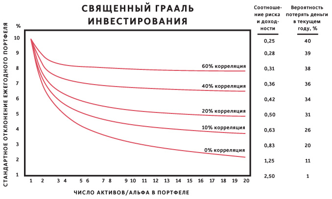
Благодаря системе фиксации моих инвестиционных принципов вместе с ожидаемыми результатами у меня накопилась обширная совокупность не связанных друг с другом потоков доходности – что-то около тысячи. Поскольку мы торговали множеством активов разных классов и внутри каждого руководствовались запрограммированными и протестированными основными торговыми правилами, мы могли выбирать из гораздо большего числа высококачественных потоков доходности, чем обычный управляющий, который отслеживает ограниченное число активов и, вероятно, торгует ими не систематически.
Вместе с Бобом и Дэном мы выделили наши самые эффективные правила принятия решений. После этого мы провели их тестирование на ретроспективных данных, используя наши системы для моделирования, как эти правила принятия решений сработали бы вместе в прошлом.
Результаты нас поразили. На бумаге благодаря этому новому подходу наша доходность увеличилась в три – пять раз на единицу риска. Мы могли регулировать объем желаемой доходности в зависимости от уровня риска, который были готовы нести. Иными словами, мы могли заработать в разы больше других с меньшим риском выбыть из игры – как это однажды чуть не случилось со мной. Я назвал эту систему убойной, потому что понимал, что она либо принесет убойные результаты нам и нашим клиентам, либо убьет нас, так как мы упустили что-то важное.
Основываясь на успехе этого подхода, я вывел принцип, который применяю ко всем сферам жизни: иметь десяток качественных не связанных друг с другом позиций, которые уравновешивают друг друга и оптимально используются, – это самый надежный способ демонстрировать высокий результат, не подвергаясь неприемлемому его снижению.
Новый подход очень нас вдохновил, но мы продолжили с большой осмотрительностью. Изначально мы задействовали систему на 10 % и получили прибыль в 19 из 20 месяцев тестового периода. По мере того как наша уверенность в работоспособности системы крепла, я решил обратиться к группе отдельных инвесторов, с которыми у меня были хорошие отношения, чтобы они вложили в эту стратегию $1 млн для ведения пробных счетов. Я знал, что им будет сложно нам отказать в такой скромной сумме. Сначала я назвал новый продукт Top 5 %, так как он включал наиболее эффективные 5 % наших принципов принятия решений. Впоследствии я изменил название на Pure Alpha, чтобы подчеркнуть, что он основывается исключительно на типе доходности альфа. Это означало, что доходность нового продукта не связана с общей доходностью рынка и зависит только от нашего умения заранее распознать, какие активы вырастут в цене.
Наш принципиально новый подход позволил инвесторам получить прибыль от выбранного класса активов (фондового индекса S&P 500, индекса облигаций, сырьевых товаров – любого другого) плюс прибыль от инвестиционного портфеля, который мы собрали из всех классов активов. Так как наш подход был беспрецедентным, мы подробно объясняли его логику и показывали, почему он несет меньше рисков по сравнению с традиционными. Кроме того, мы показывали, какой, по нашему мнению, должна быть совокупная деятельность и ожидаемый диапазон эффективности. Для наших клиентов это было равносильно тому, что им показали бы чертежи самолета, который еще ни разу не летал, но на бумаге выглядит в разы лучше, чем любой из существующих. Вот только найдутся ли храбрецы, чтобы подняться на борт?
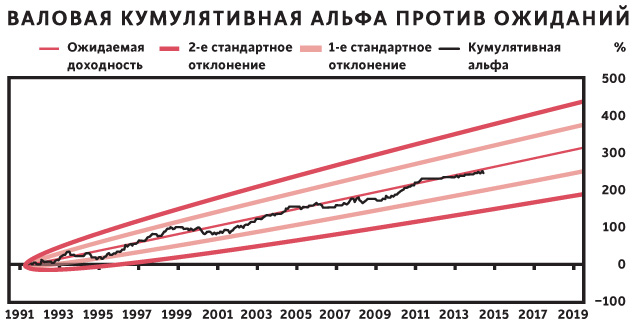
Одни клиенты уловили суть концепции и загорелись идеей изменить правила игры. Другие ничего не поняли, либо организации, на которые они работали, отказались пробовать современные методы. Откровенно говоря, мы были в восторге, что согласился хоть кто-то. Прошло уже 26 лет, и этот «самолет нового типа» ведет себя именно так, как мы и ожидали: мы получали прибыль 23 года (и три года у нас были незначительные убытки) и для своих клиентов в совокупности заработали больше, чем любой другой хедж-фонд за всю историю. Концепции управления инвестициями, лежащие в основе Pure Alpha, в итоге привели к изменению всей отрасли, но путь от их создания до общего принятия занял долгие годы. Это были годы обучения и тяжелой работы вместе с группой преданных партнеров.
Выпускаем нашу убойную систему в мир
Pure Alpha была самой эффективной структурой активного управления инвестициями. Однако мы знали, что, если хотим управлять значительным объемом средств институциональных инвесторов, нам придется принять тот факт, что лишь ограниченное число клиентов, готовых к новаторским идеям, согласятся попробовать этот подход. В конце 1990-х – начале 2000-х годов, пока мы пытались убедить клиентов, на Pure Alpha приходилось не более 10 % наших совокупных активов в управлении.
Хотя мы не могли торговать акциями и сырьевыми товарами со счетов своих «облигационных» клиентов, мы применяли выведенные нами принципы структурирования портфеля вместе с Pure Alpha, чтобы обеспечить этим клиентам более высокую доходность при более низком уровне риска. В том числе мы использовали иностранные государственные облигации, долги стран с переходной экономикой, индексируемые на уровень инфляции облигации, корпоративные облигации, валютные риски, сопровождающие иностранные инвестиции. В наших наименее ограниченных облигационных портфелях мы открывали до 50 разных типов позиций – гораздо больше, чем любые другие традиционные управляющие облигациями. Это дало нам огромное конкурентное преимущество и позволило год за годом удерживаться на верхних позициях многих рейтингов эффективности инвестиционной деятельности.
Наша система Pure Alpha была лишь первым из ряда инновационных продуктов, которые мы предложили клиентам. В 1991 году мы стали первыми менеджерами по валютному оверлею[27] для институциональных инвесторов. Тогда они размещали значительные доли своих портфелей на международном рынке ценных бумаг. Это помогало диверсифицировать вложения, но добавляло неуправляемый валютный риск. Это было серьезной проблемой, так как добавление валютных рисков не вело к повышению ожидаемой доходности. Мы работали на валютных рынках уже не один год и накопили практический опыт в структурировании инвестиционного портфеля, так что обладали преимуществом при решении этой проблемы. В конце концов компания стала крупнейшим активным управляющим на валютном рынке в мире.
Мы также представили несколько других, новых и эффективных способов управления инвестициями, которые работали в точности так, как мы задумали. С каждым из таких инструментов мы предлагали клиентам конкретные расчетные показатели ожидаемой эффективности в формате диаграммы, на которой была приведена прямая нераспределенной прибыли и прогнозируемые вариации. Мы могли это делать благодаря тому, что систематизация нашего процесса принятия решений позволяла проверять его результативность в самых разных условиях.
На ошибках учатся
Конечно, не обходилось без ошибок, но все они были в пределах ожидаемого. Замечательно то, что мы допустили большинство ошибок потому, что привыкли относиться к ним как к возможностям для обучения и совершенствования. Одна из самых запоминающихся наших ошибок произошла в начале 1990-х, когда Росс, отвечавший в то время за торговые операции, забыл вложить деньги клиента, и они остались лежать наличными. К тому времени, когда это обнаружилось, ущерб составлял несколько сотен тысяч долларов.
Это была ужасная и дорогостоящая ошибка, и моя реакция могла быть ей под стать: например, уволить Росса, чтобы показать остальным, что не потерплю ротозейства. Но ведь идеальных людей не существует, и подобные действия только спровоцировали бы остальных лучше скрывать проблемы, что неизбежно привело бы к еще более серьезным и дорогим ошибкам. Я глубоко убежден, что проблемы и разногласия следует обсуждать открыто и совместно искать способы исправить ситуацию. Так что мы с Россом поработали над созданием «журнала ошибок» в нашем подразделении трейдеров. С тех пор всякий раз, когда что-то случалось (торговая сделка не проходила, мы платили более высокие транзакционные издержки, чем ожидали, и тому подобное), трейдеры это фиксировали, и мы следили за развитием ситуации. Поскольку мы постоянно отслеживали проблемы и решали их, наша операционная деятельность становилась от этого только эффективнее.
При наличии процесса, выявляющего все проблемы и проясняющего их причины, происходит постоянное совершенствование деятельности.
По этой причине я настоял, чтобы мы вели «журнал возникающих вопросов» в рамках всей компании. Правило простое: при возникновении проблемы ее следует зафиксировать в журнале, указать степень серьезности, а также ответственного сотрудника. Если случилась ошибка и сотрудник зафиксировал ее в журнале, ему ничего не грозит. Если он не зафиксировал ошибку, у него будут серьезные неприятности. Таким образом, руководители сразу узнают о проблемах, что в разы лучше, чем если бы им приходилось выискивать их. «Журнал ошибок» (который мы переименовали в «Журнал возникающих вопросов» – Issue Log) стал нашим первым управленческим инструментом. Впоследствии я понял, как такие важные инструменты помогают стимулировать желаемое поведение. Это привело к тому, что мы создали еще несколько инструментов, которые я опишу позднее.
Наша новая культура определения проблем и разногласий привела к возникновению напряжения и конфликтам внутри компании, особенно когда дело доходило до выявления слабых сторон сотрудников. И вскоре ситуация достигла точки кипения.
Моя «неразрешимая» проблема
В один зимний день 1993 года Боб, Жизель и Дэн пригласили меня на совместный ужин, чтобы «рассказать Рэю, как он влияет на моральный дух коллег». Перед этим они прислали мне коллективное письмо, суть которого сводилась к тому, что мой подход отрицательно сказывается на всех в компании. Вот что было в письме:
«Что Рэй делает хорошо?Он очень умный и нестандартно мыслящий. Он понимает, как работают рынки и как управлять деньгами. Он напорист и полон энергии. Он всегда придерживается очень высоких стандартов, что заставляет окружающих поступать так же. У него благие намерения относительно командной работы, создания совместной собственности, гибких условий работы для сотрудников и высокой оплаты их труда.
Что Рэй делает не очень хорошо?Иногда Рэй говорит или делает вещи, которые заставляют его коллег чувствовать себя некомпетентными, ненужными, униженными, перегруженными, недооцененными, притесненными или испытывать другие негативные эмоции. Вероятность этого увеличивается, когда Рэй находится в состоянии стресса. В такие моменты его слова и действия вызывают враждебность и оставляют неизгладимое впечатление. Вследствие этого сотрудник скорее теряет мотивацию, чем наполняется энтузиазмом, что ведет к снижению его продуктивности и созданию напряженной обстановки. Это не ограничивается одним сотрудником. Из-за того, что коллектив компании небольшой, а все коммуникации открыты, когда один сотрудник демотивирован, чувствует, что к нему относятся без должного уважения, это отражается на всем коллективе. Успех компании в будущем в значительной степени зависит от способности Рэя управлять людьми, а не только деньгами. Если он не научится правильно руководить, это повлияет на рост компании и на всех нас».
Э-э-э. Я был неприятно удивлен. Никогда не думал, что влияю на людей подобным образом. Я считал коллег продолжением семьи. Я не хотел, чтобы они чувствовали себя «некомпетентными, ненужными, униженными, перегруженными, недооцененными, притесненными или испытывали другие негативные эмоции». Почему они не сказали мне об этом напрямую? Что я делал неправильно? Неужели мои стандарты слишком высоки? Чтобы Bridgewater продолжала оставаться компанией, о которой говорили как об «одной на миллион», у нас должны работать исключительные люди и они должны придерживаться очень высоких стандартов. Неужели я требовал слишком много?
Ситуация из тех, когда приходится выбирать между двумя чрезвычайно важными, но взаимоисключающими вариантами: 1) быть предельно откровенным с каждым из коллег, включая открытое обсуждение проблем и слабых сторон, чтобы сразу же принимать правильные решения; 2) иметь счастливых и довольных сотрудников. При этом я помнил, что, когда стоишь перед необходимостью выбора между двумя, казалось бы, противоречащими друг другу вариантами, следует не торопясь разобраться, как получить максимум возможного и от того, и от другого. Почти всегда это хороший выход из положения, который вы, вероятно, просто еще не нашли. Так что лучше ищите этот выход, пока не найдете, а не соглашайтесь сразу на единственный вариант, который в данный момент вам кажется очевидным.
Моим первым желанием было убедиться, что я точно понимаю, в чем проблема и как ее разрешить. Поэтому я попросил Боба, Жизель и Дэна изложить их точку зрения на происходящее. Я выяснил, что они, как и многие другие сотрудники, которые знали меня достаточно близко, не чувствовали себя настолько деморализованными, как остальные, потому что понимали, что я за человек. В противном случае они бы уже уволились, потому что, с их слов, я «платил им не столько, чтобы из-за денег мириться с этой фигней».
Они знали, что я хотел лучшего для них и для Bridgewater и, чтобы этого добиться, стремился быть предельно откровенным с ними и требовал того же взамен. И не только потому, что это положительно отражалось на наших результатах, но и в первую очередь потому, что я глубоко убежден: это правильный способ выстраивать отношения. Мы были едины во мнении, что в нашей компании должен быть принят такой подход. Однако поскольку некоторые сотрудники чувствовали себя некомфортно, нужно было что-то изменить.
Люди, которые знали меня достаточно близко, понимали меня, и я им даже нравился, а вот тех, кто знал меня хуже, моя прямота оскорбляла. Было очевидно: чтобы меня начали лучше понимать, я сам должен понимать других лучше. Тогда я осознал, насколько важно, чтобы люди, состоящие в любого рода отношениях, четко доносили свои принципы до других.
Это положило начало процессу, занявшему не одно десятилетие: мы письменно излагали наши принципы, которые впоследствии приняли вид брошюры под названием «Принципы работы» (Work Principles). В ней были изложены наши договоренности, как мы должны вести себя друг с другом, а также мои размышления на тему, как справляться с конкретными ситуациями. Большинство типичных ситуаций повторялись периодически с небольшими вариациями, и мы постоянно корректировали наши принципы. Что касается наших совместных договоренностей, мы должны были делать три самые важные вещи.
1. Честно говорить, что думаем.
2. Продуктивно обсуждать то, с чем не согласны, и быть готовыми менять свое мнение.
3. Иметь утвержденные способы принятия решений (например, голосование, мнение авторитета и так далее), если устранить противоречия не получается, чтобы мы могли двигаться дальше без негативных эмоций.
Я убежден, что без этих принципов не могут обойтись ни одна компания, которая стремится чего-то добиться, и ни одни взаимоотношения. Кроме того, я уверен: чтобы система коллективного принятия решений была эффективной, люди, пользующиеся ею, должны верить в ее справедливость.
Для взаимопонимания с коллегами было необходимо письменно зафиксировать наши принципы работы и сделать так, чтобы им следовали все, как в случае с нашими принципами инвестирования. Это было важно, в частности, потому, что некоторым сотрудникам оказывалось эмоционально сложно принять наш уникальный способ ведения бизнеса – абсолютная честность и предельная прозрачность, – который приводил к получению уникальных результатов.
В последующие десятилетия я беседовал с психологами, специалистами в области нейронауки и образования, чтобы понять, как с помощью честности и прозрачности добиться наполненных смыслом работы и отношений. Я многое узнал и вкратце могу сказать следующее. Мозг человека состоит из двух частей: логической части верхнего уровня и эмоциональной части нижнего уровня. Я называю их «два “я”». Они сражаются за обретение контроля над человеком. Каким образом разрешается этот конфликт, становится ключевым фактором поведения. Этот конфликт был основной причиной той проблемы, которую обозначили Боб, Жизель и Дэн. В то время как логическая часть мозга прекрасно понимает, что знать слабые места – это хорошо (поскольку это первый шаг к тому, чтобы с ними справиться), эмоциональной части мозга это чрезвычайно неприятно.
5. Обретение дара: 1995–2010
* * *
К 1995 году в штате компании были уже 42 человека, а объем средств в управлении составлял $4,1 млрд. Это было больше, чем я когда-либо надеялся получить, особенно если учесть, что еще 10 лет назад я был единственным сотрудником. Ситуация стала гораздо лучше и устойчивее, а мы продолжали делать то, чем я занимался с самого начала: боролись с рынками, мыслили независимо и нестандартно относительно своих инвестиционных решений, совершали ошибки, обсуждали их, чтобы докопаться до причины, придумывали новые, более эффективные методы операционной деятельности, систематически вносили изменения, совершали новые ошибки и так далее[28]. Этот подход, предполагающий последовательные изменения, позволил нам постоянно совершенствовать системы инвестирования, которые я начал создавать в 1982 году. Тогда мы показали, что несколько умных парней с компьютерами могли превзойти давних, крупных игроков. Теперь мы были хорошо оснащенными и устоявшимися.
По мере того как количество правил принятия решений и объем данных в наших системах увеличивались, мы стали нанимать молодых программистов, которые лучше, чем мы, могли переводить наши инструкции в язык кода, а также новых блестящих выпускников, чтобы те помогали нам с аналитическими исследованиями в области инвестиций. Одним из этих вундеркиндов был Грег Дженсен, который впервые пришел в Bridgewater в 1996 году как стажер. Парень отличался удивительными способностями, и я сделал его своим научным ассистентом. За последующие десятилетия он многое сделал для компании, вырос до содиректора по инвестициям, как я и Боб Принс, стал генеральным содиректором. Для меня он стал почти крестным сыном.
Кроме того, мы закупали все больше мощных компьютеров[29]. Управляя нашими системами с помощью этих компьютеров, мы могли не думать о ежедневном движении рынка и изучать ситуацию в перспективе, что позволяло нам обнаруживать новые, нестандартные связи и предлагать инновационные решения клиентам.
Создание облигаций, индексируемых на уровень инфляции
Примерно тогда же у меня состоялся ужин с Дэвидом Уайтом, управлявшим средствами Фонда Рокфеллера[30]. Дэвид спросил, как бы я составил портфель фонда, чтобы получить доходность на 5 % выше уровня инфляции в США. Я ответил, что такой результат принесет портфель из индексируемых на уровень инфляции иностранных облигаций с использованием финансового рычага и свопуемых обратно в доллар. (Иностранных – так как в то время не было аналогичных американских, а своп должен был исключить валютные риски.)
Размышляя об этом позднее, я понял, что мы могли бы создать абсолютно новый, принципиально другой класс активов, так что мы с Дэном Бернстайном углубились в исследование такого портфеля. Согласно результатам нашего анализа, этот новый класс активов должен был показать себя даже лучше, чем мы могли надеяться. Уникальная эффективность этого финансового инструмента объяснялась тем, что его ожидаемая доходность была как у акций, но при этом с меньшим риском и отрицательной корреляцией с обычными облигациями и акциями в долгосрочной перспективе. Мы показали результаты исследования нашим клиентам, и они им понравились. Вскоре мы стали первыми в мире менеджерами по облигациям, индексируемым на уровень инфляции. В 1996 году заместитель министра финансов США Ларри Саммерс начал изучать вопрос, следует ли США начать выпуск аналогичных собственных облигаций, а поскольку наш хедж-фонд единственный управлял портфелем таких облигаций, он обратился к нам как к экспертам.
Мы с Дэном отправились в Вашингтон на встречу с Саммерсом, его коллегами по Министерству финансов и рядом представителей широко известных компаний с Уолл-cтрит. Мы опоздали к началу встречи (пунктуальность не наш конек), и двери конференц-зала в Министерстве финансов были закрыты. Но разве меня могло это остановить: я стучал до тех пор, пока кто-то не открыл. Это был большой зал, посередине которого стоял стол, а сбоку были расположены места для прессы. За столом было лишь одно свободное место с табличкой с именем Дэна. От нас пригласили к участию только одного представителя, и мы договорились, что это будет Дэн, так как он провел большую часть подготовительной работы. У меня абсолютно вылетело это из головы, поэтому я подошел к рядам для прессы, взял стул и поставил его рядом с местом Дэна, чтобы тоже сидеть за столом. Впоследствии Дэн вспоминал об этой встрече, проводя аналогию с ситуацией, которую мы переживали в 1990-х годах: нам приходилось пробиваться вперед, чтобы чего-то добиться. По словам Ларри Саммерса, полученные от нас рекомендации были самыми важными и во многом определили формирование этого рынка. Когда минфин выпустил индексируемые на уровень инфляции облигации, они реализовали рекомендованную нами структуру.
Создание принципа паритета рисков
К середине 1990-х у меня было достаточно средств, чтобы создать фонд доверительного управления для своей семьи, так что я начал размышлять, каким должно быть оптимальное размещение активов для сохранения богатства на протяжении нескольких поколений. В бытность инвестором я наблюдал самые разные экономические и рыночные условия и всевозможные способы и разбогатеть, и потерять состояние. Мне было известно, какие факторы определяют доходность активов. При этом я также знал: неважно, каким именно классом активов владеет человек, – непременно настанет время, когда этот актив потеряет большую часть своей стоимости. В первую очередь это касалось наличных средств, которые представляют собой самую неудачную форму долговременной инвестиции, так как теряют свою стоимость из-за инфляции и налогов. Я также знал, насколько трудно прогнозировать колебания, вызывающие снижение стоимости активов. Я посвятил этому всю жизнь и получил свою порцию ошибок, так что не стал бы полагаться на достоверность подобных прогнозов, сделанных другими, когда меня не будет рядом. Искать инвесторов, которые были бы успешными в любых экономических условиях – когда инфляция растет и когда падает, когда экономика на взлете и когда в глубоком пике, – все равно что искать иголку в стоге сена; кроме того, к сожалению, человеческая жизнь не вечна, так что это был не мой путь. Мне не хотелось, чтобы состояние, которое я заработал, чтобы защитить свою семью, исчезло после моей смерти. Это означало, что мне предстояло сформировать портфель активов, эффективный в любых экономических условиях.
Я знал, какие изменения экономических условий вызывают движение классов активов. Более того, я знал, что эти взаимоотношения оставались, по сути, неизменными на протяжении сотен лет. Были только два серьезных фактора, которые следовало принимать во внимание: экономический рост и инфляция. Каждый из них мог расти или падать. Так что мне требовалось определить четыре разные инвестиционные стратегии, каждая из которых была бы эффективной в конкретных условиях (увеличение экономического роста и инфляции, увеличение роста при снижении инфляции и так далее), и тогда я мог бы составить такое распределение активов, которое было бы сбалансированным для высокой результативности в перспективе и при этом защищенным от неприемлемых убытков. Так как эта стратегия не менялась, реализовать ее мог практически любой. С помощью Боба и Дэна я создал портфель, в который мог с уверенностью инвестировать средства своей семьи на следующие 100 лет или больше. Я назвал этот портфель «всепогодным» – All Weather, поскольку он был эффективным в любых условиях.
В период с 1996 по 2003 год я был единственным «клиентом» с таким портфелем, так как мы не продавали его как отдельный продукт. Но в 2003 году руководитель пенсионного фонда компании Verizon, наш давний клиент, сказал, что ищет подход, при котором инвестированные средства имели бы доходность в любых экономических условиях. Мы предложили портфель All Weather, и, после того как Verizon вложила в него средства, за ней быстро последовали другие клиенты. Спустя 10 лет в нашем управлении было около $80 млрд. Так появилась еще одна концепция, изменившая профессиональную отрасль. Видя ее успех, другие инвестиционные управляющие стали предлагать собственные версии. Сейчас эта инвестиционная концепция получила широкое распространение под названием «паритет рисков».
Остаться маленькой лавочкой или стать гипермаркетом?
Со своими сотрудниками и уникальной корпоративной культурой компания Bridgewater, предлагающая инвестиционные продукты, меняющие отрасль, по-настоящему «взлетела». К 2000 году в нашем управлении находились средства на сумму $32 млрд, почти в восемь раз больше, чем сумма, которой мы управляли всего пять лет назад. Штат компании удвоился, и мы сменили наш скромный офис на помещение побольше, расположенное в природоохранной зоне на берегу реки Сотак. Компания продолжала расти, но не все было безоблачно. Развитие бизнеса и управление инвестициями – две сложные задачи, требовавшие абсолютно разных наборов навыков. А мне приходилось их совмещать и при этом оставаться хорошим отцом, мужем и другом. Со временем требования к этим должностям изменились и соответственно изменились необходимые навыки и способности.
Многие уверены, что трудности, связанные с развитием крупного бизнеса, несравнимо серьезнее, чем проблемы при управлении небольшой компанией. Это не так. Переход от организации, в которой работали пять человек, к той, где трудились уже 60, был не менее сложным, чем переход от компании с 60 сотрудниками к компании с семью сотнями и чем переход от 700 сотрудников к полутора тысячам. Оглядываясь назад, я не могу сказать, какие задачи были проще или сложнее на каждом из этапов. Просто они были разными. Например, когда я был единственным сотрудником, мне приходилось все делать самому. Когда я получил достаточно знаний и денег, чтобы платить другим, мне пришлось управлять этими людьми. Точно так же задачи борьбы с рынком и экономическими колебаниями постоянно менялись. Тогда я об этом не думал, но сейчас для меня очевидно: несмотря на то что со временем человек может достигнуть высокого уровня мастерства в каком-то деле, само дело для него легче не становится: олимпийский чемпион сталкивается в своем виде спорта с не менее сложными задачами, чем новичок.
Весьма скоро перед нами встал еще один важный выбор: какой должна быть наша компания? Должна ли она продолжать расти или остаться примерно такого же размера?
К 2003 году я пришел к убеждению, что Bridgewater должна стать серьезной крупной организацией, а не оставаться типичным небольшим инвестиционным управляющим. Это дало бы нам преимущества в самых разных областях: более продвинутые технологии, выше безопасность, возможность выбирать лучших кандидатов – все это сделало бы нашу компанию более устойчивой. Это означало, что нам придется нанимать новых сотрудников в разных областях (технологии, инфраструктура и так далее), а также дополнительных технических и HR-специалистов для их поддержки и обучения.
Жизель выступала категорически против роста. Она считала, что такое число новых сотрудников поставит под угрозу нашу корпоративную культуру, а из-за того, что наем, обучение и управление этими сотрудниками потребуют много времени и сил, это может привести к размыванию фокуса. Я был согласен с ее позицией, но в то же время мне не нравилась альтернатива, что мы не позволим нашей компании стать такой, какой она могла бы. Я относился к этому важному выбору так же, как к большинству других: насколько мы могли получить и то и другое, было лишь проверкой нашего характера и нестандартного мышления. Например, я видел способы, как технологии помогут нам максимально использовать потенциал сотрудников. После длительных обсуждений мы решили двигаться вперед.
Формирование принципов
После того как в 1990-х Боб, Жизель и Дэн написали мне коллективное письмо с оценкой моего поведения, я начал более подробно описывать свои принципы работы и делиться ими с коллегами, как я поступал с принципами инвестирования. Сначала я делал это в форме общих философских высказываний и рассылал их по электронной почте всем сотрудникам. Затем, когда происходило нечто такое, что требовало от меня решения, я анализировал свои критерии для его принятия и формулировал их в виде принципа, чтобы другие могли соотнести ситуацию, мой принцип для ее разрешения и мои действия. Все чаще мы отмечали, что ситуации то и дело становятся повторением прошлого – например, прием сотрудников на работу, увольнение, определение компенсационного пакета, действия в случае обмана, – и у нас уже есть принципы, как следует действовать. Благодаря тому что эти принципы были четко сформулированы, я мог продвигать меритократию идей: мы вместе анализировали наши правила, улучшали, а затем следовали им.
Мы начали с нескольких принципов, но со временем их число значительно увеличилось. К середине 2000-х Bridgewater начала стремительно расти, и в компании появилось несколько новых руководителей, которые пытались изучить нашу уникальную культуру и интегрироваться в нее, – они постоянно спрашивали моего совета. Кроме того, люди за пределами компании начали интересоваться, как они могут развить меритократию идей. Так что в 2006 году я подготовил примерный список из 60 принципов и вручил руководителям в Bridgewater, чтобы они могли самостоятельно изучить его, обсудить между собой и осмыслить. В сопроводительном письме я отметил, что это примерный список и что комментарии приветствуются.
Это стало началом продолжающегося по сей день эволюционного процесса, когда мы сталкивались с новыми ситуациями, формулировали принципы, как в них действовать, и согласовывали с другими лидерами и руководителями Bridgewater. Со временем я побывал во всех ситуациях, в которых только можно оказаться, управляя компанией, так что у меня накопилось несколько сотен принципов, охватывающих почти все. Этот управленческий набор, как и набор наших инвестиционных принципов, стал своего рода библиотекой принятия решений, основой того, о чем вы прочитаете в части III «Принципы работы».
Однако недостаточно было просто сформулировать нашу философию и выучить ее – мы должны были жить по этим принципам. На практике все несколько менялось по мере роста и развития компании. Когда она была маленькой и все сотрудники знали друг друга, быть полностью прозрачными не составляло труда: все посещали совещания, которые считали нужными, и общались в неформальной обстановке. Когда компания выросла, это стало физически невозможно и превратилось в проблему. Как сотрудники могли поддерживать меритократию идей, если они не знали всего, что происходит? Без прозрачности они могли извратить любую ситуацию к собственной выгоде, да еще и сделать это за закрытыми дверями. Они бы замалчивали проблемы, вместо того чтобы открыто их обсуждать и искать решение. Для реализации принципа меритократии идей в компании должна быть полная прозрачность, чтобы сотрудники сами видели все происходящее.
Для осуществления этого принципа я потребовал, чтобы почти все наши встречи записывались, а записи были доступны каждому сотруднику, за очень редкими исключениями, когда мы обсуждали личные вопросы, например состояние здоровья или конфиденциальную информацию относительно сделки или правила принятия решения. Сначала я рассылал эти записи встреч руководства без купюр всем сотрудникам, но это отнимало слишком много времени у сотрудников. Поэтому я создал небольшую команду, которая редактировала записи, выделяла наиболее важные моменты, а со временем мы добавили вопросы для виртуального разбора кейсов, которые можно было использовать для обучения[31]. Постепенно эти записи стали частью «тренировочного центра» для новых сотрудников, как окно в непрерывный поток ситуаций, связанных с принципами их разрешения.
Подобная открытость привела к нескольким честным обсуждениям, кто и чем занимается и почему, в итоге мы начали лучше понимать разные способы мышления друг друга. Во всяком случае, я смог лучше понять людей, которых раньше мне просто хотелось придушить! Помимо прочего, я осознал, что руководитель, который не принимает мышление других, не сможет предугадать, как эти люди будут справляться с разными проблемами, а это равнозначно ситуации, когда мастер не знает, как себя поведет его инструмент. Этот вывод заставил нас изучить психометрическое тестирование, чтобы узнать, как мыслят другие.
Применение психометрического тестирования
В раннем возрасте мои дети прошли тестирование у замечательного психолога Сью Куинлан. Ее оценки оказались очень точными и стали настоящей «картой развития» для них на долгие годы. Результаты этого тестирования настолько меня впечатлили, что я привлек Сью и других психологов, чтобы подобрать оптимальные тесты для своих сотрудников. В 2006 году я впервые попробовал ответить на опросник по типологии Майерс – Бриггс (MBTI)[32], и мой психологический портрет получился достаточно точным.
Многие черты, описанные в опроснике – например, разница между людьми, которые склонны видеть общую картину, и людьми, уделяющими больше внимания деталям и отдельным фактам – как раз становились причиной многих конфликтов и разногласий в Bridgewater. Я начал искать другие тесты, которые помогли бы нам лучше понимать друг друга. Сначала процесс шел очень медленно, в частности из-за того, что большинство психологов, с которыми я работал, весьма неохотно объясняли разницу. Однако в конце концов мне удалось познакомиться с несколькими отличными специалистами, в частности с Бобом Айхингером, который порекомендовал мне несколько других полезных психологических тестов.
В начале 2008 года большинство руководителей Bridgewater прошли психологическое тестирование по типологии Майерс – Бриггс. Результаты меня удивили. Я с трудом мог поверить в точность описания психотипов моих коллег. Тем не менее, когда я попросил коллег оценить по пятибалльной шкале, насколько точными они сами считают результаты тестирования, более 80 % поставили четверку или пятерку.
Появление «бейсбольных карточек»
Даже когда у нас на руках были результаты психологических тестирований, нам по-прежнему не удавалось провести параллель между выдаваемыми результатами и людьми, которые их получали. Из раза в раз те же самые сотрудники посещали те же самые совещания, выполняли рабочие задачи привычным образом, получали те же самые результаты и даже не пытались понять почему. (Недавно мне попались результаты исследований, описывавшие когнитивное искажение, при котором люди постоянно пренебрегали доказательствами, что один человек выполняет какую-то задачу лучше другого, если у них было убеждение, что оба справляются с задачей одинаково хорошо. Именно это происходило и у нас в компании.) Например, сотрудникам, которые не отличались творческим подходом, поручали задачи, требовавшие нестандартности мышления; сотрудникам, которые были склонны мыслить масштабно, давали задания, где требовалось скрупулезное внимание к деталям, и так далее. Нам нужно было найти способ четко и ясно показать персональные качества сотрудников. Я начал делать «бейсбольные карточки»[33] на коллег, где приводил их «статистику». Идея состояла в том, что эти карточки можно было передавать внутри компании и пользоваться ими при распределении обязанностей. Точно так же как вы не поставили бы на биту третьим отличного полевого игрока с AVG 0,160[34], не стоит поручать сотруднику с масштабным видением задачу, требующую внимания к деталям.
Поначалу эта идея натолкнулась на серьезное сопротивление. Людей беспокоило, что «бейсбольные карточки» не будут достоверными, что их создание отнимет слишком много времени и что они всего лишь навесят на сотрудников несправедливые ярлыки. Однако со временем отношение к этому подходу, позволяющему лучше узнать друг друга, в корне изменилось. Большинство сотрудников отмечали, что это новшество скорее развязало им руки, чем ограничило, так как оно стало нормой: у людей появилась возможность быть самими собой и чувствовать себя комфортно, как это обычно бывает в одной семье.
Подобный подход к ведению деятельности был необычным, а потому некоторые поведенческие психологи посетили Bridgewater для его оценки. Рекомендую вам ознакомиться с их выводами, которые были преимущественно положительными[35]. Гарвардский психолог Боб Киган назвал Bridgewater «одним из доказательств, что стремление к профессиональному успеху и поиск личностной самореализации не обязательно должны быть взаимоисключающими – более того, два этих аспекта взаимосвязаны».
Я хочу поделиться с вами некоторыми личными обстоятельствами, которые заставили меня обратиться к психологии и нейронауке. Обычно я избегаю подробностей о моей семье, чтобы защитить нашу частную жизнь, но все же с согласия своего сына Пола расскажу его историю, которая имеет непосредственное отношение к нашей теме.
После учебы в Школе искусств Тиш Нью-Йоркского университета Пол отправился в Лос-Анджелес на поиски работы. И вот однажды он подошел к стойке администратора в отеле, в котором остановился, пока еще не арендовал квартиру, и разбил компьютер. Он был арестован и заключен под стражу, где его избили охранники. В конце концов ему поставили диагноз «биполярное расстройство», освободили под залог, который внес я, и отправили в стационар на психиатрическое лечение.
Это стало началом тяжелейшего трехлетнего пути, на котором мы с Полом и Барбарой пережили невероятно сложные моменты, когда у Пола наступали пики его аффективных состояний – маниакальных или депрессивных, столкнулись со всеми сложностями нашей системы здравоохранения и консультировались у настоящих современных светил в области психологии, психиатрии и нейронауки. Ничто так не способствует обучению, как боль и необходимость. В сложившихся обстоятельствах и того и другого у меня было в избытке. Временами мне казалось, что я держу Пола за руку, а он висит над пропастью. День шел за днем, а я не знал, хватит у меня сил удержать его или он сорвется вниз. Я постоянно общался с медицинским персоналом, который ухаживал за Полом, чтобы понять, что происходит и что с этим делать. Благодаря помощи, которую он получал, и собственной силе духа Полу удалось со всем справиться, и сегодня он чувствует себя даже лучше, чем до болезни, потому что он развил у себя ту силу, которой у него не было, но в которой он нуждался. В какой-то момент в прошлом Пол словно с цепи сорвался: мог вернуться домой только под утро, курил марихуану, пил, а сейчас он принимает лекарства, медитирует, рано ложится спать и вообще не употребляет алкоголь и наркотики. Он всегда был творческим парнем, но ему явно не хватало самоконтроля. Сейчас у него есть и то и другое. В результате сегодня он еще более успешен, чем раньше. Пол женился, у него двое сыновей, он состоявшийся режиссер и активно занимается общественной деятельностью, чтобы помочь другим людям, страдающим биполярным расстройством.
Открытость Пола и его стремление помочь другим вдохновляют меня. Его первый полнометражный фильм «Прикосновение огнем»[36], благоприятно встреченный критиками, дал многим больным биполярным расстройством надежду, в которой они нуждались, и указал путь вперед. Помню, как Пол снимал одну из сцен, основанную на реальном разговоре между нами, когда у него был маниакальный приступ, а я пытался его урезонить. У меня перед глазами были одновременно актер, играющий Пола в один из худших моментов его жизни, и Пол, здоровый и успешный, руководивший съемками как режиссер. Когда я наблюдал за съемкой сцены, у меня перед глазами прошла вся история непростого пути Пола – от самой глубокой пропасти до чудесного превращения в отважного героя, стоящего передо мной, и выполняющего свою миссию – помочь другим пройти через то, с чем ему удалось справиться.
Этот непростой опыт дал мне гораздо более глубокое понимание, как и почему люди придерживаются разных точек зрения на вещи. Я узнал, что образ мышления в значительной степени зависит от психологических аспектов и его можно изменить. Например, приступы Пола были обусловлены недостаточным синтезом дофамина и других химических веществ в мозге, так что изменить его поведение можно было, контролируя уровень этих веществ и стимулируя их синтез. Я узнал, что от творческой гениальности до безумия один шаг, что те же химические вещества, которые создают моменты озарения, могут вызывать расстройства и что «застрять» в собственной голове очень опасно. Во время приступов Пол неизменно был убежден в верности своих нелогичных аргументов, как бы они ни звучали для других. Конечно, в случае биполярного расстройства это проявление принимает крайние формы, но ведь практически каждый из нас ведет себя так же в повседневной жизни. Кроме того, я узнал, как человек может контролировать работу мозга, чтобы добиться гораздо лучшего результата. Эти знания помогли мне более эффективно взаимодействовать с окружающими, о чем я подробнее расскажу в главе 4 части II.
Непотопляемая и высокотехнологичная Bridgewater
На ежегодном всеобщем собрании компании в июне 2008 года я заявил, что всегда воспринимал Bridgewater как «одновременно ужасную и потрясающую компанию». После почти пяти лет динамичного роста на пути Bridgewater к статусу крупной организации мы столкнулись с проблемами нового уровня. Это было не в новинку. С момента основания компании мы постоянно были вынуждены решать разнообразные проблемы, поскольку всегда делали что-то новое, совершали ошибки и быстро развивались. Например, в этот период шел такой бурный технологический рост, что мы в буквальном смысле перешли от логарифмической линейки сразу к электронным таблицам и к продвинутым технологиям искусственного интеллекта. При таком уровне изменений не имело смысла доводить что-то до совершенства, когда постоянно появлялось что-то более современное и эффективное. Так что мы старались, чтобы технологическая сторона в компании была легкой и гибкой; это имело смысл в тот момент, но создало несколько запутанных ситуаций, которые требовали разрешения. Тот же самый подход с позиции быстроты и гибкости применялся во всей компании, так что вскоре несколько наших подразделений оказались перегружены работой. Нам всегда нравилось быть передовой высокотехнологичной компанией, но вот с устойчивостью, особенно в неинвестиционном аспекте бизнеса, все было не так хорошо. Компании требовалась реорганизация, но процесс предстоял непростой.
В 2008 году я работал по 80 часов в неделю, выполняя две свои функции (контролировал процесс инвестиций и операционную деятельность компании), и результат меня не устраивал ни в том ни в другом. Я чувствовал, что я сам и компания в целом постепенно отходим от стандартов самого высокого качества. Мне удавалось на приемлемом уровне совмещать функции управления инвестициями и компанией, пока наша организация была маленькой. Но с ростом компании для управления ею требовалось гораздо больше времени. Я проанализировал, сколько времени уделяю всем своим обязанностям, и оказалось, что я должен был тратить по 165 часов в неделю, чтобы добиться требуемого уровня качества в обоих видах деятельности. Очевидно, это было невозможно. Я хотел делегировать как можно больше обязанностей и стал выяснять, какие могу без потери качества передать другим сотрудникам и кому именно. Все были едины во мнении, что в большинстве случаев это невозможно. Стало предельно ясно, что я не справился с задачей найти и обучить сотрудников, которым мог бы делегировать свои обязанности.
Для меня наивысший успех руководителя в том, чтобы другие качественно выполняли работу без него. Ступень ниже – когда руководитель сам отлично выполняет работу, и низшая ступень – когда руководитель посредственно справляется с работой. Анализируя ситуацию, я понимал, что, несмотря на значительные успехи, как свои личные, так и Bridgewater, я не достиг высшей ступени в управлении. Фактически я все еще старался дойти до второго уровня (хорошо делать работу самому), хотя Bridgewater была процветающей компанией.
На тот момент в Bridgewater работали 738 человек, включая 14 глав подразделений. Я контролировал работу руководителей подразделений совместно с правлением, которое сформировал, поскольку знал, что не могу слепо полагаться на собственные решения и кто-то должен подвергать их сомнениям. Процесс отчетности я структурировал так, чтобы отвечать перед членами правления, и они тоже отчитывались за свои ошибки перед компанией. Я также стремился, чтобы они несли ответственность за высокие стандарты качества, и был готов помогать им в этом всем, чем мог.
В мае 2008 года я отправил электронное письмо пяти членам правления, с копией всем сотрудникам компании, в котором извещал, что «достиг своего предела и качество моей работы, как и баланс между ней и личной жизнью, страдает самым неприемлемым образом».
Финансовый и экономический кризис 2008 года
Осознание того, что я перегружен, никак не могло повлиять на скорость происходящих событий, с которыми я был вынужден иметь дело, особенно в области инвестиций в тот период исторической турбулентности.
В прошлом я слишком часто бывал неприятно удивлен разными событиями, с которыми раньше не сталкивался, но которые случались в другие исторические периоды или в других местах, например девальвация доллара в 1971 году или долговой кризис в начале 1980-х. А потому я стремился добиться, чтобы наши экономические принципы и законы движения рынка были универсальными и не зависели от времени. Иными словами, мы должны были понимать все важные движения экономики и рынка, а не только произошедшие на моей памяти, и должны быть уверены, что принципы, которыми мы руководствуемся, эффективны в любую историческую эпоху в любой стране.
В результате в начале 2000-х мы включили в наши системы «индикатор депрессии», определявший, какие действия следует предпринять, если некая последовательность событий начнет сигнализировать о повышенном риске долгового кризиса или депрессии. В 2007 году этот индикатор свидетельствовал, что долговой пузырь находится на грани схлопывания, так как издержки на обслуживание долга опережали ожидаемые движения потоков наличности. Поскольку процентные ставки были близки к нулю, я знал, что центробанкам не удастся смягчить денежно-кредитную политику настолько, чтобы повлиять на снижение деловой активности, как они это делали в периоды предыдущих рецессий. Мы наблюдали именно ту конфигурацию, которая в прошлом вела к депрессиям.
Я вспоминал о своем опыте 1979–1982 годов. Сейчас у меня накопилось на 30 лет больше знаний и я был гораздо менее уверен в своих прогнозах. Динамика экономики казалась мне абсолютно понятной, при этом я далеко не был уверен, что прав. Я отлично помнил, насколько очевидным выглядело, что долговой кризис 1982 года должен был привести к краху экономики, и как сильно я ошибся.
Этот печальный опыт побудил меня узнать как можно больше о долговых кризисах и их влиянии на рынки. Я изучал их и торговал на бирже во время многих долговых кризисов: латиноамериканского в 1980-х, японского в 1990-х, а также коллапса хедж-фонда Long-Term Capital Management в 1998-м, краха пузыря доткомов в 2000-х, паники после атак на Всемирный торговый центр и Пентагон в 2001-м. При поддержке коллег из Bridgewater я засел за исторические книги и старые газеты и начал день за днем изучать развитие Великой депрессии и Веймарской республики, сравнивая, что происходило тогда и сейчас. Мои худшие опасения подтвердились: мне казалось неизбежным, что большое число людей, компаний и банков столкнутся с серьезными долговыми проблемами и что ФРС не сможет снизить процентные ставки для смягчения удара, как это было в 1930–1932 годах.
Страх ошибиться заставил меня обратиться к другим профессионалам, чтобы они нашли слабые места в моей логике. Кроме того, я хотел познакомить со своими выводами ключевых политиков, чтобы они взглянули на ситуацию моими глазами. Так что я отправился в Вашингтон, чтобы пообщаться с людьми из Министерства финансов и Белого дома. Хотя мои собеседники были вежливы, то, о чем я говорил, казалось им неправдоподобным, тем более что по всем внешним показателям экономика была на подъеме. Большинство из них не углублялись в мои расчеты и размышления, кроме одного человека – Рамсена Бетфархада, заместителя вице-президента Дика Чейни по внутренней политике.
Поскольку все, за чем мы наблюдали, складывалось одно к одному и не нашлось ни одного человека, который бы доказал несостоятельность наших выводов, мы начали балансировать позиции в портфелях своих клиентов таким образом, чтобы получить значительную прибыль и ограниченные потери, если окажемся правы, или вернуться к резервному плану, если ошиблись. Хотя мы думали, что хорошо подготовились, все равно сильно беспокоились и что можем оказаться правы, и что ошибаемся. Перспектива всемирного экономического кризиса выглядела пугающей для всех нас, главным образом из-за того, что этот кризис означал для тех, кто не был защищен.
Как и в 1982 году, по мере того как ситуация ухудшалась, а события разворачивались по предсказанному нами сценарию, политики начали обращать на нас все больше внимания. Бетфархад пригласил меня на встречу в Белый дом. Кроме того, со мной захотел встретиться Тимоти Гайтнер, президент Федерального резервного банка Нью-Йорка. Во встрече с Гайтнером, помимо меня, также участвовали Боб, Грег и один из наших молодых аналитиков Боб Эллиот. Когда мы познакомили Гайтнера с нашими расчетами, он буквально побелел и спросил, откуда у нас данные. Я ответил, что данные общедоступны, мы просто сложили их вместе и посмотрели под другим углом.
Через два дня после нашей встречи с Гайтнером произошел крах банка Bear Stearns. Это событие не вызвало серьезного беспокойства у большинства обывателей или у рынков, тем не менее это стало первой ласточкой, предвестником того, что должно было последовать. Лишь почти полгода спустя, когда в сентябре объявили о банкротстве Lehman Brothers, все точки над i были расставлены. На тот момент «эффект домино» уже проявился, и, хотя политики не могли предотвратить весь ущерб, они, в частности глава ФРС Бен Бернанке, предприняли блестящие действия по «красивому делевериджу» (то есть по разгрузке экономики от накопленных долговых обязательств при сохранении положительного экономического роста и низкого уровня инфляции)[37].
Подводя итог, скажу, что мы эффективно распоряжались средствами клиентов, предугадывая движения рынка и избегая потерь. 2008 год, когда убытки многих других инвесторов превысили 30 %, наш ключевой фонд закрыл с прибылью более 14 %. Наши результаты могли бы быть даже лучше, если бы мы не опасались, что ошибаемся, и не балансировали позиции, а действовали более рискованно. Но я ни о чем не жалею, так как давно понял, что стремление к риску – не лучшая стратегия. В данном случае мы, конечно, могли бы заработать больше, но в долгосрочной перспективе нам явно не удалось бы выжить и добиться успеха с таким подходом к инвестированию.
Долговой кризис 2008 года стал повторением прошлого, как кризис, который случился в 1982 году, и оба этих кризиса были как многие другие до них и многие другие после них. Я с удовольствием анализирую свои болезненные ошибки и ценю принципы, которые вывел благодаря им. Когда следующий серьезный кризис наступит через четверть века или около того, вероятно, и он станет неожиданностью и принесет немало проблем, если только эти принципы не будут должным образом закодированы в алгоритмах наших компьютеров.
Помощь политикам
Наши экономические и рыночные принципы значительно отличались от всех остальных, а вслед за ними отличались и результаты. Подробнее на этой разнице я остановлюсь в книге, посвященной принципам экономики и инвестирования.
По словам экс-главы ФРС Алана Гринспена, «модели рушатся в тот момент, когда нужны больше всего… JP Morgan ускорял американскую экономику за три дня до коллапса Lehman Brothers’ – их модель провалилась. Модель ФРС провалилась. Модель МВФ провалилась… Мне остается только задаваться вопросом: что произошло?» Президент Федерального резервного банка Нью-Йорка Уильям Дадли весьма точно сформулировал суть проблемы: «Думаю, фундаментальная проблема в том, как макроэкономисты оценивают экономические прогнозы, рост и инфляцию… Если взглянуть на серьезные макроэкономические модели, как правило, в них не учитывается финансовый сектор. Они не допускают возможности, что он может фактически раствориться, в результате чего импульс кредитно-денежной политики окажется полностью несостоятельным. Так что, мне кажется, урок кризиса заключается в том, что “финансисты” должны больше говорить с “макроэкономистами” и строить более устойчивые модели». Он был прав. У «финансистов» и экономистов разное видение мира. Благодаря нашему успеху политики стали обращать на нас больше внимания, и я начал общаться как с ведущими американскими политиками, определяющими развитие экономики, так и с политиками других стран. Сохраняя конфиденциальность наших бесед, я не буду много говорить о них, лишь отмечу, что многие политики стали гораздо более открытыми к нашим нестандартным взглядам на экономику и рынки и более скептичными к традиционному экономическому образу мышления, которому не удалось ни предупредить о кризисе, ни предотвратить его.
Наше общение напоминало игру в одни ворота: обычно я отвечал на их вопросы и старался поменьше спрашивать сам, чтобы не ставить собеседников в неловкое положение, когда они опасаются выдать конфиденциальную информацию. Я общался со многими политическими лидерами вне зависимости от их идеологии. Мой подход был сродни отношению врача к пациенту, который старается принести максимальную пользу.
Они обращались ко мне, потому что мое глобальное макроэкономическое видение как инвестора значительно отличалось от их представлений как политиков. Мы были лишь продуктами нашей среды. Инвестор мыслит независимо, прогнозирует то, что еще не произошло, и рискует настоящими деньгами. Политик действует в условиях, когда требуется всеобщее согласие, и это развивает в нем навык реагировать на то, что уже произошло, а также готовит его к переговорам, а не к тому, чтобы делать ставки. Поскольку политики, в отличие от инвесторов, не получают постоянную обратную связь о качестве своих решений, не всегда бывает очевидно, кто из них принимает эффективные решения, а кто нет. К тому же политическая деятельность имеет свои особенности. Даже самым прозорливым и эффективным политикам приходится постоянно отвлекаться от насущных проблем, чтобы реагировать на возражения коллег, а политические системы, в рамках которых они действуют, часто не справляются с возложенными на них задачами.
В то время как в долгосрочной перспективе экономический механизм представляется более мощным, чем любая политическая система (на смену неэффективным политикам приходят другие, и недееспособная политическая система меняется), именно взаимодействие между ними стимулирует экономические циклы – и часто это неприятное зрелище.
Время высокой прибыли
В 2010 году наша прибыль оказалась самой высокой за всю историю компании: два наших подразделения Pure Alpha принесли почти 45 и 28 %, а подразделение All Weather – 18 %. Такой результат был обусловлен тем, что системы, которые мы запрограммировали на обработку входящей информации, справлялись с задачей отлично, превосходя наши аналитические способности. Без этих систем мы были бы вынуждены управлять инвестициями по старинке: старались бы оценить все рынки и факторы, оказывающие на них влияние, а затем пытались бы сформировать инвестиционный портфель. Нам пришлось бы нанять нескольких инвестиционных управляющих, а так как мы не могли бы безоговорочно доверять их способу принятия решений, то наблюдали бы, что они делают и как, – и все это с учетом личных особенностей каждого из них, которые тоже нужно принимать во внимание. К чему такие сложности? Мне казалось, что такой способ инвестирования или управления компанией давно устарел: все равно что читать карту, вместо того чтобы воспользоваться GPS. Хотя, разумеется, создание нашей системы было серьезной работой, которая заняла более 30 лет.
Управление слишком большим объемом средств может снизить результативность, так как издержки на открытие и закрытие позиций могут быть высокими из-за того, что это способно оказать давление на рынок. Поскольку в 2010 году наша доходность была выше 40 %, мы должны были вернуть клиентам огромный объем средств. Но клиенты хотели вручить нам еще большие суммы для управления. Мы всегда осторожно подходили к своему росту, боясь убить курицу, которая несет золотые яйца.
Наши клиенты не хотели забирать деньги – они хотели, чтобы мы преумножили их. Перед нами стояла непростая задача: максимизировать наши мощности без ущерба для результативности. Мы не задумывались об этом раньше, потому что у нас еще никогда не было столько средств в управлении. Мы быстро поняли, что, если лишь слегка изменить то, что мы уже и так делали, и создать новое подразделение, которое управляло бы инвестициями точно так же, как Pure Alpha, но действовало бы исключительно на самых ликвидных рынках, наша ожидаемая доходность была бы такой же, а ожидаемые риски (то есть волатильность) лишь немного выше.
Мы выразили этот новый подход в компьютерных алгоритмах, проверили его на исторических данных для всех доступных стран и временных периодов и подробно объяснили клиентам, чтобы они поняли его логику. Несмотря на мое глубокое и искреннее восхищение искусственным интеллектом, мне кажется, только человек может придумывать такие вещи, а затем программировать компьютер, чтобы тот их реализовывал. Именно поэтому я убежден, что залог успеха – в правильных людях, работающих друг с другом и с компьютерами.
К концу года мы открыли подразделение Pure Alpha Major Markets, клиенты которого доверили нам в управление $15 млрд. С момента открытия его доходность соответствует ожидаемой, то есть примерно как у Pure Alpha (вообще-то даже лучше, но ненамного). Клиенты были в восторге. Из-за чрезвычайной популярности к 2011 году нам пришлось закрыть его для новых инвестиций.
От неизвестности к сверхпопулярности
Популярность – это палка о двух концах. Я понял это, когда к Bridgewater и ко мне лично начали проявлять слишком много внимания после того, как мы предсказали финансовый кризис. Наши необычные результаты, нестандартный взгляд на экономику и рынки и своеобразная корпоративная культура сделали нас предметом неослабевающего интереса. Я предпочел бы оставаться в тени и поэтому избегал общения с прессой. Как вы понимаете, журналистов это не останавливало. Они строчили «сенсационные» статьи обо мне и Bridgewater, в которых изображали меня либо инвестором-супергероем, способным ходить по воде, либо лидером культа, а в некоторых случаях – и тем и другим вместе.
Когда все вокруг считают тебя успешным, это не очень хорошо. У австралийцев даже есть для этого название – «эффект высокого мака», так как чем выше головка цветка, тем больше вероятность, что ее могут срезать. Мне не нравилось всеобщее внимание, и еще больше мне не нравилось, что Bridgewater называли культом, поскольку с такой характеристикой нам было сложно привлекать в компанию настоящих профессионалов. В то же время я понимал, что сложившаяся ситуация неизбежна – главным образом из-за того, что мы не показывали прессе нашу кухню.
Так что в конце 2010 года я решил сделать общедоступными «Принципы», которые объясняли, что мы делаем и как. Я разместил документ на сайте, чтобы любой человек мог бесплатно прочитать его и понять. Это было непростое решение, но оно полностью себя оправдало. «Принципы» помогли многим людям вне нашей компании. Документ скачали более трех миллионов раз, некоторые даже за свой счет переводили его на другие языки. Я получил множество слов благодарности и признаний, что чтение «Принципов» изменило чью-то жизнь.
Bridgewater должна быть успешной и без меня
С самого детства я всему учился на практике. Я просто брался за то, что меня интересовало, и пытался выжить, учась на своих ошибках и совершенствуясь. Если я менялся достаточно быстро и достигал стадии устойчивости, то продолжал и добивался успеха. Я всегда верил в свою способность разобраться в какой-то теме, а необходимость делать это постоянно только отточила эту мою способность. В итоге я стал нанимать людей, которые были похожи на меня: они хватались за сложные задачи, раскладывали их по полочкам и справлялись с ними. Я понял, что, когда у человека есть характер, здравый смысл и нестандартный подход, он сам поймет, как добиться успеха, если дать ему свободу разобраться, как принимать правильные решения. Я знал, что микроменеджмент или жесткие инструкции не сработают, потому что это не понравится ни мне, ни моим сотрудникам. Если я постоянно буду говорить, что делать, я не дождусь инициативы от них. Кроме того, я сам не хотел работать с такими людьми.
В 1990-х я понял, что большинство людей испытывают эмоциональный барьер, когда сталкиваются с проблемами или собственными слабостями. Вместо того чтобы разбираться со сложной ситуацией или задачей, они испытывают дискомфорт. Весьма немногие обладают необходимым здравым смыслом, нестандартным подходом и силой воли, чтобы менять ситуацию. Почти всем требуется помощь, пока они выйдут на этот уровень. Поэтому я записал свои принципы и логику, лежащую в их основе, в надежде, что те, кому они понравятся, будут их использовать, а те, кому они не понравятся, захотят их открыто обсудить. Я рассчитывал, что со временем мы все будем едины в том, как действовать в конкретных ситуациях.
Практически все быстро согласились с перечисленными принципами, но не у всех получилось быстро превратить их в эффективные действия: старые привычки и эмоциональные барьеры были сильнее рациональных доводов. Обучение и моделирование ситуаций делали свое дело, но этого было недостаточно.
Сколько бы усилий мы ни вкладывали в поиск потенциальных кандидатов и их последующее обучение для работы в условиях меритократии идей, неизбежно многие не дотягивали до наших стандартов. Я придерживался принципа быстро нанимать сотрудников, обучать их, тестировать, а затем либо увольнять, либо повышать, чтобы мы быстро находили ценные кадры и избавлялись от посредственностей. Этот процесс повторялся снова и снова, пока процент высококлассных профессионалов не стал соответствовать нашим потребностям.
Однако чтобы этот подход сработал, нам нужны были профессионалы, которые без колебаний могли сказать менее компетентным сотрудникам, что те не дотягивают до нужного уровня. Многие новые сотрудники (и некоторые из старых) не стремились разбираться в людях, и это только осложняло ситуацию. Сложно проявлять твердость по отношению к другим.
Конечно, большинству из тех, кто приходит на работу в Bridgewater, не чужд дух авантюризма, они отдают себе отчет в том, во что ввязываются. Но они готовы рискнуть, так как плюсы в случае успеха с лихвой компенсируют минусы от неудач. В худшем случае эти люди узнают о себе много нового, получают интересный опыт и уходят искать другую работу. В лучшем случае они становятся частью удивительной команды, делающей исключительные вещи.
У новичков обычно бывает адаптационный период от 18 до 24 месяцев, прежде чем они начинают чувствовать себя комфортно в условиях беспрецедентной честности и прозрачности, которые стали неотъемлемой частью корпоративной культуры Bridgewater, особенно когда речь идет о принятии ошибок и способах работы с ними. К сожалению, у некоторых так и не получается к этому адаптироваться. Одни говорят, что попасть на работу в Bridgewater – все равно что попасть в интеллектуальный спецназ, другие сравнивают это со школой самопознания с далай-ламой в роли учителя. Люди, добившиеся успеха, признаются, что адаптационный период был для них не только сложным, но и наполненным радостью, поскольку им удалось подняться на исключительно высокий профессиональный уровень и установить потрясающие отношения. Тот, кто не может или не хочет адаптироваться, должен уйти. Это основной способ поддерживать высокие стандарты Bridgewater.
На протяжении долгого времени я единственный отвечал за сохранение корпоративной культуры и высоких стандартов компании. Но в 2010 году мне исполнилось 60 лет, я руководил Bridgewater вот уже 35 лет. Хотя я не собирался отправляться на покой в ближайшие лет десять, я был готов направить свою энергию в другое русло. Мне всегда хотелось хорошо понимать рынки, в то же время я стремился проводить больше времени с семьей и друзьями, помогать политикам и вплотную заняться некоторыми из своих увлечений (например, исследованием океана и филантропией), а также всем тем, что мне было интересно. Я решил уйти с поста СЕО, став наставником в период смены руководства и сохранив за собой роль инвестиционного управляющего, а в освободившееся от управления компанией время наслаждаться жизнью, пока еще могу.
Как и для любой другой компании, успех Bridgewater зависит от двух факторов: сотрудников и корпоративной культуры. Руководителю ежедневно приходится принимать важные решения. От того, как он это делает, зависит жизнь компании, качество отношений между сотрудниками и итоговый результат. До определенного момента большинство важных решений были зоной моей ответственности. Теперь эти решения станут принимать другие люди. Конечно, они будут действовать в условиях устоявшейся корпоративной культуры и с позиции согласованных принципов, которые несколько десятилетий подтверждали свою эффективность, а насколько у них все получится, скоро узнаем.
6. Возвращение дара: 2011–2015
* * *
По моему мнению, жизнь человека состоит из трех этапов. На первом он зависит от других и учится. На втором – другие зависят от него, а он работает. А на последнем, третьем этапе, когда от него больше никто не зависит и нет необходимости работать, он свободен, чтобы насладиться жизнью.
В моей жизни начался переход от второго этапа к третьему. Интеллектуально и эмоционально я хотел уже не столько быть успешным сам, сколько чтобы близкие мне люди могли быть успешными без меня.
В Bridgewater передо мной стояли две задачи по передаче управления: операционной и инвестиционной деятельностью компании. Я не собирался прекращать играть на бирже, потому что это то, чем мне нравилось заниматься с 12 лет и чем я буду заниматься до последнего своего вздоха. Но я не хотел быть незаменимым, потому что это серьезный риск для компании.
Мы с партнерами отдавали себе отчет в том, что смена власти в компании с уникальной корпоративной культурой, где у руля долгое время стоял ее основатель, будет проходить тяжело. У нас перед глазами было много примеров, и из недавних – уход Билла Гейтса с позиции СЕО в Microsoft в 2008 году.
Самый серьезный вопрос, на который мне предстояло ответить: стоит уйти окончательно и бесповоротно или остаться в качестве ментора, наставника. С одной стороны, мне нравилась идея полностью отойти от управления компанией, так как новое руководство располагало бы свободой искать собственные методы, чтобы добиться успеха, а я не заглядывал бы им через плечо. Мои друзья убеждали меня поступить именно так: уйти в блеске славы и продолжать жить дальше. Однако я не был уверен, что переходный процесс пройдет благополучно, ведь раньше я ничего подобного не делал. Я действую методом проб и ошибок: ошибаюсь, выясняю, в чем был не прав, формулирую новые принципы и в конце концов добиваюсь успеха. Я не видел причин, почему мой отход от дел должен проходить иначе. Кроме того, мне казалось несправедливым в один момент переложить весь груз ответственности на плечи моего преемника на должности СЕО. Я знал, что Ли Куан Ю, первый премьер-министр Республики Сингапур, управлявший страной 41 год, стал наставником, когда оставил свой пост, и я видел, что этот вариант был очень эффективным. По этим причинам я решил, что останусь в компании в этой роли. Это означало, что я либо вообще не буду высказывать мнение, либо буду говорить последним, при этом останусь открытым для советов или рекомендаций. Мои партнеры одобрили эту идею.
Мы решили, что процесс следует начать как можно скорее, чтобы люди, которые меня заменят, могли набраться опыта, а мы бы внесли необходимые коррективы. Мы понимали, что многого не знаем о процессе перехода, а потому следует действовать осторожно. Мы ожидали, что он займет не один год, может быть, два или три, а возможно, и все десять. Однако мы уже долгое время работали вместе и надеялись, что уложимся в минимально необходимый срок.
В первый день нового, 2011 года я объявил, что ухожу с поста СЕО, а на смену мне приходят Грег Дженсен и Дэвид Маккормик. Я передал полномочия по управлению компанией Грегу, Дэвиду и остальным членам правления 1 июля. Одновременно с этим мы разъяснили клиентам «план перехода», рассчитанный на срок до десяти лет.
Феномен лидера
Следующие 18 месяцев для новой управленческой команды были очень непростыми. Причины этого мы выясняли таким же образом, как технический специалист диагностирует, почему какой-то механизм работает не на полную мощность и что нужно исправить. Разные люди добиваются разных результатов из-за того, что обладают разными персональными качествами. Собирая команду, мы стремимся объединить людей с нужными качествами, чтобы достигнуть поставленных целей. Поэтому мы начали изучать мои персональные качества, чтобы понять, чего не хватает; мы назвали это «эффект Рэя». Сразу проясню ситуацию: мы изучали «эффект Рэя», потому что меня должны были заменить другие люди; если бы свой пост покинули Боб, Дэвид или Грег, мы бы изучали их персональные качества, чтобы понять, как их заместить.
Грег и Дэвид составили список моих обязанностей и описали, насколько по-разному они и я подходили к их исполнению. Мы сошлись в том, что разница была в «формировании мнения». Чтобы понять, что я имею в виду, вспомните Стива Джобса – он, вероятно, сильнее всего повлиял на формирование общественного мнения в нашей недавней истории. Такой человек предлагает свое уникальное и ценное видение и блестяще воплощает его в жизнь, иногда даже вопреки сомнениям и протесту других. Джобс построил самую большую и успешную компанию в мире на основе своего революционного подхода к технологиям, музыке, коммуникациям, анимации и фотографии. Кроме того, его продукты отличались отменным дизайном. Другие великие мечтатели делового мира, которые сделали свою идею реальностью и изменили мир: Илон Маск (Tesla, SpaceX и SolarCity), Джефф Безос (Amazon), Рид Хастингс (Netflix). В области филантропии к этой категории людей относятся Мухаммад Юнус (Grameen), Джеффри Канада (Harlem Children’s Zone), Венди Копп (Teach for America), в политике – Уинстон Черчилль, Мартин Лютер Кинг, Ли Куан Ю, Дэн Сяопин. Билл Гейтс задавал вектор развития и в бизнесе, и в благотворительности, как и Эндрю Карнеги[38]. Майк Блумберг формировал тенденции в бизнесе, филантропии и в государственной деятельности. Эйнштейн, Фрейд, Дарвин, Ньютон определили развитие науки. Христос, Мухаммед, Будда сформировали религиозные течения. У всех этих людей были собственные необычные взгляды, которые они успешно воплотили в жизнь.
Я перечислил людей, повлиявших на историю человечества, но формировать общественное мнение можно и не в таком глобальном масштабе. Подобным человеком может оказаться местный предприниматель, руководитель некоммерческой организации или лидер местного сообщества – человек, стимулирующий перемены и создающий устойчивую организацию. Я хотел выяснить, кто будет выполнять эту роль в Bridgewater: я был способен либо помочь стать такими людьми тем, кто сменит меня на посту СЕО, либо привлечь их со стороны.
5 октября 2011 года, через несколько месяцев после того, как я начал размышлять над феноменом лидера, умер Стив Джобс. Я написал о нем в нашей ежедневной рассылке Daily Observation. Это был один из очень редких случаев, когда в рассылке я писал о теме, не имеющей отношения к инвестициям, потому что я восхищался Джобсом как человеком, который визуализировал свои идеи и блестяще воплощал их в жизнь. Некоторое время спустя Уолтер Айзексон[39] опубликовал биографию Стива Джобса. Я заметил, что между нами много общего, особенно когда цитировались слова самого Джобса. Вскоре в авторитетном финансовом журнале aiCIO вышла статья под заголовком «Рэй Далио – Стив Джобс инвестиций?». В статье тоже были подмечены похожие моменты: и я, и Джобс основали свои компании с нуля (он в гараже, а я во второй спальне в собственной квартире); мы оба предложили инновационные продукты, изменившие привычный ход вещей в наших отраслях; мы оба отличались уникальным управленческим стилем. Компанию Bridgewater часто называют Apple инвестиционного мира, но скажу честно: я никогда не думал, что я и Bridgewater достойны сравнения с Apple и Джобсом.
В книге Уолтера Айзексона и в статье проводятся и другие параллели между нашим образом жизни, целями и подходами. Например, мы оба бунтари, независимые мыслители, которые работали не покладая рук ради инноваций и высоких стандартов качества; мы оба – мыслители, стремящиеся оставить после себя значимый след; мы оба могли быть весьма жесткими с окружающими. В то же время мы очень разные люди. Я с удовольствием познакомился бы с принципами Джобса, которыми он руководствовался для достижения своих целей.
Меня интересовали не только Джобс и его принципы. Я хотел узнать, какие качества присущи всем людям подобного склада и какими принципами они руководствуются: так я смог бы лучше понять, что между ними общего и чем они отличаются, и вывести архетип. Этого подхода я придерживался в изучении любой темы. Например, я провел исчерпывающее исследование всех рецессий, чтобы сформировать архетипическую картину рецессии, не зависящую от времени, а затем понять, в чем между ними разница. Я применял этот подход ко всем движениям экономики и рынка и был намерен изучать так любую тему, потому что этот подход помогает понять принцип действия. И точно так же я исследовал феномен лидера.
Изучать качества Джобса и других лидеров я начал с общения с Уолтером Айзексоном: сначала у нас состоялась частная беседа в его офисе, а затем он выступил на открытом форуме в Bridgewater. Уолтер Айзексон также написал биографии Альберта Эйнштейна и Бенджамина Франклина, я прочел их и попытался выяснить у Айзексона, какие общие личностные черты он нашел у этих исторических личностей.
Затем я общался с лидерами, которых знал лично: Биллом Гейтсом, Илоном Маском, Ридом Хастингсом, Мухаммадом Юнусом, Джеффри Канадой, Джеком Дорси (Twitter), Дэвидом Келли (IDEO) и многими другими. Каждый из них визуализировал потрясающую концепцию и создал для ее воплощения организацию, действовавшую продолжительное время. Я просил их уделить час оценке собственных личных качеств, чтобы выделить ценности, способности и подходы. И хотя системы оценки не были совершенными, но информация, которую они дали, оказалась бесценной. (Фактически я адаптирую эти системы оценки для применения при наборе персонала в нашу компанию и для помощи в управлении.) Ответы, которые эти лидеры дали на стандартизированные вопросы, стали для меня объективным и статистически измеряемым доказательством сходства и различий между всеми этими людьми.
Оказалось, что у них много общего. Все они независимые мыслители, которые не позволят никому и ничему стать на пути к их амбициозным целям. У них есть четкие когнитивные карты процесса, в то же время они горят желанием проверить эти когнитивные карты в реальных условиях и изменить привычный способ выполнения процесса, чтобы сделать его более эффективным. Они обладают повышенной стрессоустойчивостью, так как их потребность в достижении цели сильнее боли, которую они могут испытывать в процессе. Возможно, самое интересное – они отличаются более масштабным видением либо за счет собственной способности его формировать, либо за счет умения получить его от других людей, которые видят то, чего не замечают они. Все они способны охватить и общую картину, и самые мелкие детали (как и уровни между ними) и обобщают точки зрения, полученные на разных уровнях, тогда как большинство других людей воспринимают все это дискретно. Им свойственны творческий, системный и практический подход одновременно. Они самодостаточны, но открыты новому. Что важнее всего, они страстно увлечены делом, нетерпимы к тем коллегам, которые не отвечают их стандартам качества, и стремятся оказать огромное позитивное влияние на мир вокруг.
К примеру, Илон Маск. Показывая мне свой первый электромобиль, он мог с одинаковой увлеченностью рассказывать о брелоке, с помощью которого открывается авто, и о своем представлении, как Tesla впишется в будущее транспортной системы и насколько это важно для экологии планеты. Позднее, когда я поинтересовался, как ему пришла идея создать компанию SpaceX, меня поразила дерзость его мысли: «Я долгое время думал, что на Земле неизбежно случится катастрофа планетарного масштаба – чума или падение астероида: то, что заставит человечество переселиться на другую планету, например на Марс. Однажды я зашел на сайт NASA, чтобы узнать, на какой стадии находится программа по исследованию Марса, и понял, что в ближайшее время они даже не собираются туда лететь. От продажи PayPal у меня были $180 млн. И я подумал, что, если я потрачу $90 млн на покупку нескольких ракет у бывшего Советского Союза и отправлю одну к Марсу, я таким образом стимулирую программу по освоению этой планеты».
Когда я спросил, есть ли у него образование в области ракетостроения, он, нимало не смущаясь, ответил: «Нет, я просто начал читать книги». Так думают и действуют истинные лидеры.
Временами из-за своей целеустремленности они могут казаться резкими и бесцеремонными, и это отражали результаты их оценки. Они считают, что нет предела совершенству, и несоответствие между тем, что есть и что могло было бы быть, воспринимается ими и как трагедия, и как источник бесконечной мотивации. Никто не способен помешать им добиться того, что они задумали. В одной категории теста личностной оценки у них всех был низкий показатель. Это категория «забота о других». Однако это не совсем так, как звучит.
Возьмем, например, Мухаммада Юнуса – известного филантропа, посвятившего свою жизнь помощи другим. Он стал лауреатом Нобелевской премии мира за продвижение идеи микрофинансирования, а также был награжден Золотой медалью Конгресса США, президентской медалью Свободы[40], премией мира имени Махатмы Ганди и многими другими наградами. При этом у него был низкий показатель в категории «забота о других». У Джеффри Канады, посвятившего большую часть своей сознательной жизни работе с проблемными детьми в нью-йоркском Гарлеме, тоже был низкий показатель в этой категории. Как и у Билла Гейтса, отдавшего значительную часть своего состояния и энергии на благотворительность. Очевидно, что нельзя назвать Юнуса, Канаду и Гейтса людьми, которые не заботятся о других. Тем не менее с тестами на оценку личности не поспоришь. Почему так получилось? После беседы с ними и анализа ответов, которые привели к низкому показателю, все стало ясно: всякий раз, когда перед ними возникал выбор идти к достижению цели или сделать приятное (неприятное) другим, они без колебания выбирали идти к цели.
Благодаря проведенному анализу я понял, что существуют разные типы лидеров. Самая важная разница в том, осуществляются изменения через изобретения, управление или и тем и другим способом. Например, Эйнштейн менял мир через науку, при этом он ничем не управлял, в то время как Джек Уэлч (GE) и Луис Герстнер (IBM) были высококлассными управленцами, но им не нужно было ничего изобретать. Гораздо реже встречаются такие люди, как Джобс, Маск, Гейтс и Безос, – они обладают собственным нестандартным видением и способны управлять крупными структурами для воплощения его в жизнь.
Многие люди похожи на лидеров: они предлагают отличную идею и доводят ее реализацию до той точки, когда могут удачно ее продать, – на этом их история заканчивается. Таких людей много в Кремниевой долине, вероятно, их следует называть изобретателями. Кроме того, я видел много талантливых руководителей, которых нельзя назвать лидерами в традиционном понимании: они не предлагали оригинального видения, а приходили в уже действующие компании и в дальнейшем хорошо ими управляли. Только истинный лидер способен добиваться одного успеха за другим и поддерживать его на протяжении десятилетий. Таких людей я искал и хотел привлечь в Bridgewater.
В результате анализа личностных характеристик таких людей и размышлений над моими собственными качествами я пришел к выводу, что никто не способен увидеть всю картину целиком для достижения исключительного успеха: просто некоторые видят чуть больше остальных. Эффективнее всего, когда человек сам в состоянии увидеть достаточно масштабную картину и дополнить ее точкой зрения других не менее умных людей, разглядывающих эту картину под другим углом.
Понимание этого стало важным фактором, определившим успех переходного периода при моем отходе от управления компанией. Раньше при возникновении проблемы я выяснял ее причины и придумывал собственный способ ее разрешить, а люди с другой точкой зрения предлагали другие варианты ее решения. Моя роль в качестве наставника заключалась в том, чтобы помочь им добиться в этом успеха. Это упражнение напомнило мне, что в мире гораздо меньше типов людей, чем самих людей, и гораздо меньше типов ситуаций, чем самих ситуаций, так что ключ к успеху в том, чтобы соотнести правильные типы людей с нужными типами ситуаций.
Поскольку Гейтс и Джобс отошли от дел в Microsoft и Apple, я пристально наблюдал за этими компаниями, чтобы понять, как помочь Bridgewater подготовиться держаться на плаву без меня. Конечно, наиболее существенная разница между этими компаниями и Bridgewater заключалась в нашей корпоративной культуре, в том, как мы применяли принцип меритократии идей, абсолютной честности и предельной прозрачности для открытого обсуждения проблем и слабых сторон, чтобы найти выход из ситуации.
Систематизация меритократии идей
Чем больше я изучал личностные качества людей, тем очевиднее для меня было, что существуют разные типы людей и что чаще всего те же типы людей в тех же типах обстоятельств будут получать примерно те же результаты. Иными словами, зная, что это за человек, можно составить относительно точное представление, чего от него ждать. Я с удвоенной мотивацией продолжил собирать данные о личностных качествах людей, чтобы составить подробные описания, которые помогли бы нам правильно соотнести сотрудников и выполняемые ими обязанности. Если делать это, имея аргументы, усилится меритократический подход, когда обязанности поручаются сотруднику в зависимости от его достижений.
Такой подход казался мне очевидным и логичным, но воплотить его было не так просто. Примерно через год после начала переходного периода мне стало понятно, что многие новые руководители (и некоторые из числа «старой гвардии») по-прежнему не способны увидеть закономерности поведения сотрудников с течением времени (иными словами, они не связывают личностные качества людей с получаемыми ими результатами). Это нежелание разбираться в человеческой природе осложняло ситуацию.
А затем наступил поворотный момент, когда я понял, что инвестиционные решения не вызывают у нас таких проблем, как управленческие. Я понял, что благодаря применению аналитических инструментов на основе «больших данных» и других алгоритмов наши компьютеры могли бы установить все эти взаимосвязи гораздо эффективнее, чем любой из нас, точно так же как они помогали нам выявлять взаимосвязи на рынках. Систему нельзя обвинить в предвзятости, у нее нет эмоциональных барьеров, так что люди, чьи ответы проанализировал компьютер, не будут обижаться на его выводы, сделанные на основе данных. Более того, они могут сами проанализировать данные и алгоритмы, оценить их и при желании внести изменения. Мы действовали как ученые, пытаясь разработать тесты и алгоритмы для объективного анализа нас самих.
10 ноября 2012 года я поделился своими мыслями с членами правления, направив им электронное письмо. Тема его была «Выход найден: систематизация качественного процесса управления»:
«Сейчас для меня очевидно, что основная причина, почему с управлением инвестициями в Bridgewater, скорее всего, все будет благополучно и дальше, тогда как с управлением операционной деятельностью компании все может пойти не так гладко (если мы не внесем изменения), в том, что процессы принятия решений в инвестиционной деятельности у нас систематизированы настолько, что сотрудники просто не могут их “испортить” (поскольку преимущественно следуют инструкциям системы), в то время как другие сферы деятельности компании значительно больше зависят от качества принятия решений сотрудниками.Подумайте об этом. Представьте, как бы осуществлялось управление инвестициями, если бы оно было похоже на процесс оперативного управления компанией (то есть зависело от нанятых нами сотрудников и от решений, которые они коллективно принимали бы, и при этом каждый руководствовался бы собственными соображениями). Воцарился бы хаос.Как работает наш процесс принятия инвестиционных решений: небольшая группа инвестиционных управляющих, создавших наши системы, видит их заключения и логику, в то время как мы делаем собственные заключения и изучаем свои обоснования. Подавляющую часть работы проделывает машина, и мы взаимодействуем с ней на качественном уровне. Мы не зависим от людей с их недостатками.Подумайте о том, что в управлении операционной деятельностью у нас все иначе: есть принципы, но нет систем для процесса принятия решений.Иными словами, мое мнение таково: эффективность процесса принятия инвестиционных решений обусловлена тем, что на основе принципов инвестирования сформулированы правила принятия решений, которым сотрудники неукоснительно следуют. А процесс принятия решений по управлению операционной деятельностью компании менее эффективен, потому что управленческие принципы не выражены в виде правил принятия решений, которыми могут руководствоваться сотрудники.Эту ситуацию можно исправить. Я сам (с помощью других) создавал инвестиционные системы, и я изнутри знаю процесс принятия решений и в области инвестиций, и в операционной деятельности, поэтому я с полной уверенностью заявляю, что второй процесс можно организовать точно так же, как первый. Единственный вопрос, который при этом возникает: насколько быстро это можно сделать и что будет происходить на промежуточном этапе.Я работаю с Грегом (и другими) над развитием этих управленческих систем точно так же, как я работал с Грегом и другими (Бобом и так далее) над созданием инвестиционных систем. Результатом нашей работы стало внедрение “бейсбольных карточек”, приложений Dot Collector, Pain Button, тестирований и тому подобного. К сожалению, я ограничен во времени, а потому нам нужно действовать быстро. Одновременно с этим нам придется почистить наши ряды и избавиться от сотрудников, не способных работать с нами, и привлечь в компанию (или повысить из действующих сотрудников) специалистов соответствующего уровня».
Одно из замечательных свойств принятия решений на основе алгоритмов – люди сосредоточены на причинно-следственных связях, и это помогает продвигать принцип меритократии идей. Когда любой видит критерии, лежащие в основе алгоритма, и даже может сам приложить руку к его разработке, он принимает тот факт, что система объективна, и доверяет компьютеру анализировать данные, формировать заключения относительно качеств сотрудников и рекомендовать им круг обязанностей. Алгоритмы, по сути, становятся принципами, действующими на постоянной основе.
Конечно, нашей управленческой системе предстоит еще долгий процесс совершенствования, пока она достигнет такого же уровня, как инвестиционная. Тем не менее инструменты, которые мы уже внедрили в повседневную практику, особенно Dot Collector (приложение, собирающее информацию от сотрудников в режиме реального времени, которое подробно описано в части «Принципы работы»), уже приносят плоды.
Все эти инструменты укрепляют хорошие привычки и правильный образ мышления. Хорошие привычки формируются благодаря постоянному правильному мышлению, что можно сравнить с изучением иностранного языка. А правильный образ мышления формируется благодаря изучению логики, на которой держатся принципы.
Конечная цель всего этого заключалась в том, чтобы помочь близким мне людям стать еще более успешными без меня. О срочности этой задачи мне не переставали напоминать знаковые события нового этапа моей жизни. Например, 31 мая 2013 года с появлением на свет Кристофера Далио я стал дедушкой. А летом 2013 года я попал в весьма неприятную ситуацию, связанную со здоровьем: все закончилось благополучно, но стало для меня напоминанием, что все мы смертны. Тем не менее я не утратил любви к игре на бирже, чем планирую заниматься до последнего вздоха, и это лишь подстегнуло меня в желании побыстрее перейти от второго к третьему этапу жизни.
В ожидании европейского долгового кризиса
Начиная с 2010 года мы с коллегами из Bridgewater стали замечать предвестники долгового кризиса в Европе. Мы проанализировали рост задолженности в ряде европейских государств и пришли к выводу, что некоторые страны Южной Европы могут не справиться с этим бременем. Долговой кризис, который мог последовать, стал бы не менее, а возможно, даже более серьезным, чем финансовый в 2008–2009 годах.
Как уже было в 1980 и 2008 годах, наши расчеты недвусмысленно указывали на грядущий долговой кризис, и тем не менее я понимал, что могу ошибаться. Если бы я оказался прав, последствия были бы очень серьезными, а потому я хотел обсудить свой прогноз с ведущими специалистами в области экономической политики: во-первых, чтобы их предупредить, а во-вторых, чтобы они поправили меня, если придерживались иного мнения. Я столкнулся с таким же сопротивлением без логического объяснения, как это было в Вашингтоне в 2008 году, только теперь в Европе. На тот момент экономическая ситуация была относительно стабильной, и, хотя я знал, что это не может служить залогом того, что все так и останется в будущем, большинство тех, с кем я общался, не были готовы слушать мои аргументы. Я помню встречу, которая состоялась у меня с главой Международного валютного фонда, когда мы переживали затишье перед бурей. Он скептически отнесся к моим безумным выводам и не захотел изучить расчеты.
Точно так же как американские политики до 2008 года, европейцы не боялись того, с чем не сталкивались раньше. На тот момент все складывалось благополучно, а картина, которую рисовал я, была страшнее, чем любой кризис, с которым им когда-либо приходилось иметь дело на своем веку, а потому им было проще решить, что я говорю невероятные вещи. Более того, у них отсутствовало детальное понимание, кто такие заемщики и кредиторы и что произойдет с их способностью занимать и давать средства в долг в связи с изменением конъюнктуры рынка. Их представление о работе рынков и экономических систем было таким же упрощенным, как у представителей академической науки. Они воспринимали инвесторов как единую массу, которую они и называли «рынок», вместо того чтобы видеть совокупность самых разных игроков, покупающих и продающих по очень разным причинам. Когда ситуация на рынках ухудшалась, они пытались принимать меры по повышению доверия, считая, что в этом случае деньги придут, а проблемы исчезнут. Они не видели, что вне зависимости от степени уверенности конкретные покупатели не располагали достаточными средствами и возможностями, чтобы выкупить весь долг, который нужно было продать.
Все люди на планете устроены одинаково, и то же самое можно сказать об экономических механизмах всех стран. Физические недуги поражают людей практически без различий по национальному признаку, так же происходит и с экономическими болезнями. Сначала политики воспринимали мои слова скептически, но я объяснял им физиологию конкретного случая. Я диагностировал экономическую болезнь, которая их поразила, и показывал, как прогрессировали ее симптомы, на примере аналогичных примеров. Затем я объяснял наиболее эффективные способы лечения этой болезни на разных стадиях. У нас проходило качественное обсуждение взаимосвязей и доказательств.
К сожалению, даже когда я помогал им разобраться во всех взаимосвязях, система принятия политических решений, в рамках которой они действовали, была неповоротливой и малоэффективной. Им приходилось не просто решать, что делать на уровне отдельных государств; 19 стран Европейского союза должны были договориться друг с другом, прежде чем предпринимать какие-то действия, – во многих случаях эти действия должны были быть одновременными. Зачастую не существовало очевидного способа разрешить противоречия, что становилось серьезной проблемой, потому что против необходимых мер (включения печатного станка) возражали немецкие консерваторы. В результате кризис набирал обороты, пока европейские лидеры вели долгие дебаты за закрытыми дверями. Эта политическая борьба была испытанием на прочность для всех ее участников. Мне сложно представить, сколько пришлось вытерпеть этим политикам ради блага наций, которые они представляли.
Например, в январе 2012 года я встретился с Луисом де Гиндосом. За несколько недель до нашей встречи он стал министром экономики Испании. Я всегда глубоко уважал его за прямоту, ум и героическую готовность пожертвовать собой ради благополучия страны. Новое правительство Испании было сформировано, как раз когда банковская система государства находилась на грани коллапса. Членам кабинета министров пришлось незамедлительно вступить в переговоры с представителями МВФ, ЕС и ЕЦБ (так называемой тройки). Переговоры продлились далеко за полночь, в итоге пришлось подписать соглашение, по которому контроль над банковской системой Испании фактически переходил к «тройке» в обмен на финансовую поддержку, в которой страна отчаянно нуждалась.
Моя встреча с министром де Гиндосом состоялась утром после первого и самого сложного раунда этих переговоров. У него были красные от недостатка сна глаза. Тем не менее он терпеливо и честно ответил на все мои сложные вопросы и поделился мнением, какие реформы следует провести в Испании, чтобы выйти из кризиса. На протяжении последующих лет, преодолевая значительное сопротивление, он и его коллеги проводили эти реформы. Он не получил той благодарности, которую заслуживал, но его это мало волновало: он чувствовал удовлетворение от того, что видел положительные результаты своей работы. По моему мнению, именно такого человека можно назвать героем.
Тем временем европейские страны-должники скатывались в еще более глубокую депрессию. Председатель ЕЦБ Марио Драги в сентябре 2012 года был вынужден принять смелое решение о выкупе облигаций. Этот шаг помог предотвратить неминуемый долговой кризис, спасти евро и, как окажется впоследствии, принес ЕЦБ немалую финансовую выгоду. К сожалению, он не смог сразу же стимулировать экономический рост в странах, оказавшихся в депрессии. Уровень инфляции, который по целевому показателю ЕЦБ должен был достигнуть примерно 2 %, был ниже целевого и продолжал снижаться. В то время как ЕЦБ предлагал банкам кредиты на привлекательных условиях для решения этой проблемы, они не брали кредиты в объемах, достаточных для того, чтобы действия ЕЦБ увенчались успехом. Я полагал, что ситуация продолжит ухудшаться, пока ЕЦБ не проведет «денежные вливания» за счет покупки облигаций. Необходимость смягчения денежно-кредитной политики казалась мне очевидным и неизбежным шагом, так что я отправился на встречу с Марио Драги и членами правления ЕЦБ, чтобы поделиться обеспокоенностью.
На встрече я высказал соображения, почему этот подход не вызовет инфляцию (так как рост потребления и инфляции стимулируется уровнем потребительских расходов населения, то есть деньги плюс кредиты, а не просто денежной массой). Я сосредоточился на принципах работы экономики, поскольку понимал, что если мы сойдемся во мнении – в частности, о том, как покупка облигаций поможет накачать систему деньгами, – то будем солидарны и в выводах о влиянии этого шага на инфляцию и экономический рост. На этой встрече, так же как и на других подобных, я делился нашими расчетами и высказывал свое понимание важных причинно-следственных отношений, чтобы мы вместе с собеседниками могли оценить обоснованность моих выводов.
Главным препятствием для осуществления этого шага было то, что в еврозоне нет единого рынка облигаций, а ЕЦБ, как любой другой центробанк, не должен действовать в пользу какого-то одного региона или страны. С учетом этих обстоятельств я разработал теорию, как ЕЦБ мог бы провести смягчение денежно-кредитной политики без нарушения правил за счет пропорционального выкупа облигаций всех стран – членов ЕС, несмотря на то что, например, у Германии не было острой необходимости в такой мере. (Экономика Германии находилась в относительно хорошем состоянии, и там начали возникать опасения относительно роста уровня инфляции.)
В течение 18 месяцев у меня состоялись встречи с несколькими ведущими европейскими политиками, отвечавшими за экономику. Вероятно, наиболее важной была встреча с министром финансов Германии Вольфгангом Шойбле, который произвел на меня впечатление глубокомыслящего человека, ставящего интересы государства превыше всего. Кроме того, мне удалось понаблюдать, как работают политики в Германии и остальной Европе[41]. В критический момент ЕЦБ будет вынужден поступить так, как лучше для всей Европы в целом, то есть запустить печатный станок и начать выкупать облигации по предложенной мной схеме. Этот шаг не противоречит мандату ЕЦБ, и страны Южной Европы имеют право голоса, чтобы высказаться за эту меру, так что, по моему мнению, именно немцы могли блокировать это решение, что поставило бы ребром вопрос о членстве Германии в ЕС. В итоге Германия этого не сделала, так как лидеры страны поддерживали идею единой еврозоны и Германии как ее части.
В конце концов в январе 2015 года Драги объявил о действиях ЕЦБ. Этот шаг оказал серьезный эффект и создал прецедент, который позволил проводить дальнейшее смягчение денежно-кредитной политики в будущем при возникновении такой необходимости. Реакция рынка была позитивной. В день, когда Драги выступил с заявлением, акции европейских компаний показали рост на 1,5 %, доходность по государственным облигациям снизилась в большинстве европейских стран, а евро упал на 2 % против доллара (что помогло стимулировать экономику). Это движение продолжилось на протяжении следующих месяцев, стимулируя развитие экономик европейских стран, поддерживая наметившийся рост и замедляя снижение инфляции.
Очевидно, что решение ЕЦБ было правильным по весьма простым причинам. Однако когда я наблюдал, каким трудом оно далось, мне в голову пришло, что у людей должно быть простое объяснение принципов работы экономики. Ведь если все будут понимать основы этого механизма, в будущем политики смогут гораздо быстрее и решительнее принимать необходимые меры. В результате я снял тридцатиминутное видео «Как работает экономическая машина» (How the Economic Machine Works), которое опубликовал в 2013 году. Помимо объяснения принципов экономики я предложил шаблон, как оценить ее состояние, что делать и чего ожидать во время кризиса. Видео имело гораздо более серьезный эффект, чем я рассчитывал: его посмотрели пять миллионов человек на восьми языках. Некоторые политики в частной беседе признавались, что видео улучшило их понимание экономики, было важно для работы с избирателями и повысило эффективность деятельности. Мне было очень приятно это слышать.
Благодаря общению с политиками из разных стран я многое узнал о том, как на самом деле работают международные отношения. Этот процесс несколько отличается от того, как его себе представляет большинство людей. Все страны преследуют собственные интересы и неохотно идут на компромисс: если бы речь шла о людях, мы расценили бы подобное поведение как неприемлемое. Когда страны вступают в переговоры, обычно они ведут себя как шахматисты или как торговцы на восточном базаре, где единственная цель каждого – получить максимальную выгоду. Умные лидеры знают свои уязвимые места, пользуются слабостью противника и ожидают, что их оппоненты поступят так же.
У большинства людей представление о политических лидерах своей страны и других государств складывается благодаря СМИ, и это, как правило, наивная точка зрения, имеющая мало общего с действительностью. Это понятно, потому что дешевые сенсации всегда привлекают больше, чем объективные факты. Кроме того, в некоторых случаях у журналистов есть собственная политическая повестка дня, которую им нужно продвигать. В результате большинство людей, которые видят мир через призму СМИ, пытаются мыслить в категориях «хороший» – «плохой», вместо того чтобы оценивать интересы и возможности сторон и анализировать то, как политики разыгрывают эти карты. Так, люди охотно верят, что их страна отличается высокой духовностью по сравнению со страной-«противником», тогда как в большинстве случаев у этих стран просто разные интересы и каждая пытается извлечь максимум выгоды для себя. Наиболее эффективное поведение демонстрируют политики, способные понять преимущества сотрудничества, а также располагающие запасом времени, чтобы увидеть, как их действия сегодня принесут положительные результаты в будущем.
Конфликт интересов может иметь место не только на международном уровне, но и внутри страны. Большинство политиков только делают вид, что исходят из всеобщего блага. Обычно они действуют в интересах группы своих избирателей. Например, политики, представляющие электорат с высоким уровнем доходов, утверждают, что повышение налогов затормозит экономический рост, в то время как политики, представляющие бедную часть населения, заявляют об обратном. Невозможно убедить всех хотя бы постараться объективно взглянуть на ситуацию в целом, не говоря уже о том, чтобы действовать в интересах всех.
Тем не менее я глубоко уважаю большинство политиков, с которыми мне довелось работать, и сочувствую, что им пришлось оказаться в таком положении. Большинство из них – люди с высокими принципами, которые вынуждены действовать в складывающихся обстоятельствах. Работа политика очень сложна даже в период экономического благополучия и становится практически невозможной в кризис, а откровенная дезинформация в СМИ делает ситуацию еще хуже. Политики, с которыми я работал, в том числе Драги, де Гиндос, Шойбле, Бернанке, Гайтнер, Саммерс и многие другие, показали себя как настоящие герои, которые ставят выполняемую миссию выше собственных интересов. К сожалению, большинство политиков начинают карьеру полными радужных иллюзий, а затем глубоко разочаровываются.
Одним из таких героев, у которого я многому научился и, надеюсь, которому я смог помочь, был известный китайский государственный деятель Ван Цишань[42]. Рассказ о нем и о том, какой путь он проделал, чтобы попасть на вершину китайской политической иерархии, потребует слишком много времени. Поэтому скажу лишь, что Ван Цишань – историк, интеллектуал и философ и при этом очень практичный человек. Редко в своей жизни мне доводилось видеть такое сочетание мудрости и практичности. Именно он на протяжении последних десятилетий формировал китайскую экономическую политику и отвечал за искоренение коррупции. Он заслужил репутацию прямого и решительного человека, который доводит начатое до конца.
Во время каждого моего визита в Китай мы встречались и беседовали час-полтора. Мы говорили о событиях, происходящих в мире, и о том, как они соотносятся с многотысячелетней историей и с неизменным характером человечества. Кроме того, мы обсуждали самый широкий спектр тем – от физики до искусственного интеллекта. Нас обоих глубоко интересовала цикличность событий, определяющих их факторов, а также принципов, эффективных или неэффективных для работы с этими событиями.
Я подарил Вану книгу Джозефа Кэмпбелла[43] The Hero with a Thousand Faces[44], так как считал его самым настоящим героем и решил, что эта книга окажется ему полезной. Кроме того, я подарил ему книгу The Lessons of History («Уроки истории») Уильяма и Ариэль Дюрантов[45] – это краткая выжимка описания основных сил, определявших ход человеческой истории. А также книгу Ричарда Докинза[46] River Out of Eden («Река, текущая из рая») с объяснением принципов эволюции. Его же подарком мне стало философское произведение Георгия Плеханова «К вопросу о роли личности в истории». В каждой из этих книг показана цикличность определенных событий в истории человечества.
Наши беседы с Ваном в основном касались принципов. Он чувствовал ритм истории и помещал в этот исторический контекст отдельные события, о которых заходила речь. Однажды он сказал: «Героев влекут недосягаемые цели. Люди, способные чего-то добиться, переживают о будущем. Глупые люди не переживают ни о чем. Если бы конфликты разрешались до того, как станут неразрешимыми, никаких героев не было бы». Его советы помогли мне в планировании будущего Bridgewater. Так, когда я поинтересовался его мнением относительно системы сдержек и противовесов при распределении власти, он привел в пример Юлия Цезаря, свергнувшего римский сенат и республику, как иллюстрацию того, насколько важно, чтобы ни один конкретный человек не становился более могущественным, чем система. Я прислушался к его совету, когда корректировал модель управления компанией.
Каждый раз во время беседы у меня возникало ощущение, что я стал чуточку ближе к разгадке универсального кода, открывающего законы Вселенной. Ван не ограничивает себя рамками времени и способен четко видеть настоящее и возможное будущее.
Общение с такими людьми, особенно если я тоже могу быть им полезен, безмерно меня вдохновляет.
Возвращение дара
С книгой Джозефа Кэмпбелла «Тысячеликий герой» – одной из тех, что я подарил Вану и еще нескольким другим людям, которых считаю героями, – меня в 2014 году познакомил мой сын Пол. Я видел выступление Кэмпбелла по телевизору еще лет тридцать назад и помню, что оно произвело на меня сильное впечатление, хотя его книгу я так и не прочитал. В ней он анализирует большое число «героев» из разных культур – некоторые из них реальные люди, а некоторые мифические персонажи – и описывает их архетипическое путешествие по жизни. Описание Кэмпбелла, как герои становятся героями, совпадает с моим представлением о становлении лидеров. Эта книга во многом помогла мне понять тех героев, которых я знаю, а также закономерности моего собственного жизненного пути. По Кэмпбеллу, герой – это не идеальный человек, который всегда и все делает правильно. Отнюдь нет. Герой – это кто-то, кто «нашел или сделал что-то за пределами достижимого» и кто «посвятил свою жизнь чему-то большему, чем он сам, или другим людям, а не себе». На протяжении своей жизни я встречал таких людей.
Наиболее интересным в произведении Кэмпбелла было описание «пути героя». Героями не рождаются, а становятся в результате того, что одно действие влечет за собой другое. Рисунок ниже отражает архетипический «путь героя». Как правило, все начинается с того, что герой ведет обычную жизнь в привычных обстоятельствах, а затем чувствует зов приключений. Он ступает на «путь испытаний», где его ждут битвы, взлеты и падения.
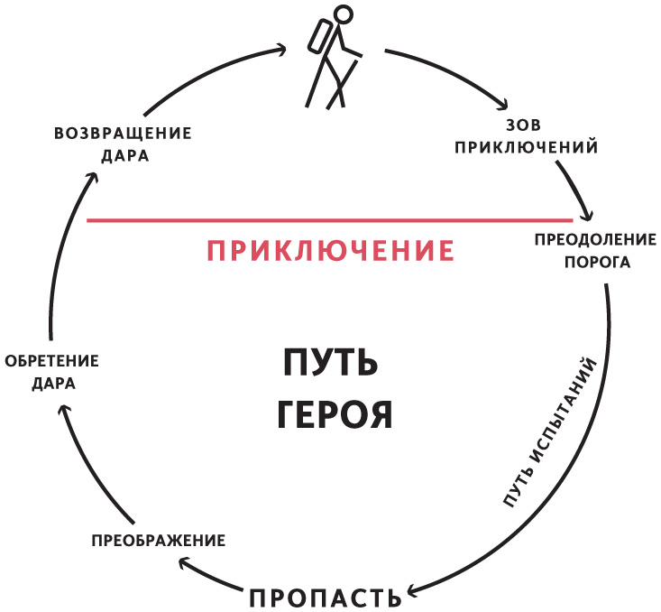
Схема пути героя из книги Джозефа Кэмпбелла The Hero with a Thousand Faces (New World Library), © Фонд Joseph Campbell Foundation (jcf.org), 2008. Используется с разрешения.
На этом пути герою помогают другие люди, зачастую те, кто уже продвинулся вперед, хотя и те, кто еще не ушел далеко, способны во многом ему помочь. Герой находит союзников и врагов, учится сражаться, часто против общепринятых условностей. На своем пути он борется с соблазнами, ссорится и примиряется с отцом и сыновьями. Он преодолевает страх перед сражениями, так как полон решимости добиться заветной цели. Он получает «особую силу» (то есть навыки), как в «битвах», которые становятся для него проверкой на прочность и учат его, так и в качестве даров (советов) от других. Герой переживает успехи и поражения, и постепенно достижений у него становится больше, чем провалов, потому что он становится все сильнее и стремится к большему, что заставляет его участвовать во все более серьезных битвах. Неизбежно в жизни героя бывает по крайней мере одно крупное поражение (по Кэмпбеллу, «пропасть» или «во чреве кита»), которое становится проверкой, обладает ли он достаточной силой, чтобы справиться с этим и сражаться еще яростнее.
Если герой проходит испытание, он меняется (происходит «преображение») и при этом испытывает страх, который его защищает. Он не теряет своей целеустремленности, толкающей его вперед. Когда герой одерживает победу, он получает награду (по Кэмпбеллу, это «обретение дара»). Хотя во время битв и сражений герой не осознает, что самой большой его наградой становится знание, как добиться успеха, и это знание он приобретает во время своего путешествия.
На более позднем жизненном этапе, когда герой уже выиграл множество сражений, получение наград становится для него менее важным, чем возможность передать знания другим (по Кэмпбеллу, это «возвращение дара»). Как только герой возвращает дар, он свободен жить, а затем умереть, или, как я это называю, происходит переход от второго жизненного этапа к третьему (на котором человек свободен наслаждаться жизнью, пока не уйдет в мир иной).
Читая Кэмпбелла, я понимал, что герои, как и лидеры, могут быть большими и маленькими, но они реальны, и некоторых из них мы знаем. Кроме того, очевидно, что доля героя не так уж завидна: его жизнь проходит в сражениях и битвах, в любой момент его могут убить, даже в миг триумфа. На самом деле сложно понять логику, зачем человеку этот путь, если бы его приходилось выбирать. Тем не менее я отлично понимаю, как люди определенного склада характера становятся на него.
Хотя описание «пути героя» по Кэмпбеллу отлично отражает мой собственный, как и путь многих других лидеров, я не стал бы называть себя героем и уж точно не стал бы говорить, что мои достижения можно сравнить с достижениями тех, о ком писал Кэмпбелл[47]. При этом изучение «пути героя» помогло мне лучше осознать, на каком этапе я нахожусь и что мне делать дальше. Часть, посвященная возвращению дара, стала для меня очень личной, словно Кэмпбелл в точности знал, с какими демонами я сражаюсь. После размышлений над прочитанным мне стало очевидно, что мой жизненный путь близок к завершению. Кроме того, мне было ясно: я могу оставить после себя что-то важное, что может повлиять не только на сотрудников моей компании и моей семьи. Это помогло мне понять, что я должен поделиться с другими тем, что могло бы им помочь, – принципами, которые я излагаю в этой книге, и деньгами.
Как говорится, нажитое не заберешь с собой на тот свет. Я начал думать, как распорядиться своим состоянием, не только из-за возраста. Это произошло естественно, само собой. Со временем круг людей, о которых я хотел позаботиться, расширялся: в молодости это был я сам, когда стал отцом – моя семья, когда я стал более зрелым – мое сообщество, потом – люди вне моего сообщества, и сейчас меня заботит вся планета.
Вопросы благотворительности
Мои первые шаги в филантропии[48] были сделаны в конце 1990-х, когда мне было под пятьдесят. Мэтту исполнилось шестнадцать, он владел мандаринским диалектом китайского языка и посетил один из детских домов в Китае, чтобы кому-то помочь. Там он узнал, что одному из воспитанников требуется операция стоимостью $500 и речь идет о жизни и смерти. Мы дали Мэтту денег. А затем мой друг Пол Тюдор Джонс проконсультировал Мэтта, как создать благотворительный фонд в соответствии со статьей 501(c)(3) Налогового кодекса США, и в 2000 году Мэтт, который на тот момент еще учился в старших классах школы, создал благотворительный фонд China Care Foundation. Мэтт организовал для нашей семьи посещение детских домов, чтобы мы сами познакомились с детьми с особыми потребностями и полюбили их. Мы наблюдали за тем, с каким трудом давались Мэтту решения, кто из детей получит помощь, а значит шанс на жизнь, а кто обречен, потому что средств на помощь всем не хватало. Представьте себе, что перед вами выбор: всю ночь веселиться или спасти жизнь ребенка. Такой выбор возникал перед нами постоянно. Благодаря этому опыту мы стали более активно участвовать в благотворительности. В 2003 году мы создали собственный фонд, чтобы оказывать поддержку более системно. Мы хотели, чтобы благотворительность стала нашим общим семейным делом, и это оказалось удивительным занятием.
Понять, как лучше всего отдавать деньги, не менее сложно, чем понять, как их заработать. Хотя сейчас мы знаем несравнимо больше, чем когда только начали заниматься благотворительностью, мы по-прежнему не всегда можем принять оптимальное решение, так что продолжаем искать правильные пути. Приведу несколько примеров тех сложностей, с которыми мы столкнулись, и того, как со временем изменилось наше отношение к ним. Одним из первых возник вопрос, сколько денег откладывать на нужды семьи и сколько отдавать людям, которые не наши близкие, но отчаянно нуждаются в помощи.
Задолго до того, как я заработал состояние, я решил: хочу, чтобы у моих детей было ровно столько денег, чтобы обеспечить им качественные медицинские услуги, прекрасное образование и стартовый капитал для начала карьеры. Это решение сформировалось у меня под влиянием моего собственного жизненного пути, когда, начав с нуля, я добился очень многого. Трудности закалили меня и научили бороться. Я желал этого же людям, которых люблю. Поэтому, когда я заработал много денег, я понимал, что могу много отдать на благотворительность.
Со временем, когда мы набрались опыта, пытаясь помогать людям в самых разных сферах, я понял, как быстро уходят деньги и что у нас едва ли хватит средств, чтобы решить те задачи, которые мы перед собой поставили. Кроме того, с рождением первого внука я задумался, сколько поколений собственной семьи я должен обеспечить. Беседуя с другими людьми, которые были в похожей ситуации, я обнаружил, что даже у самых богатых не хватает денег на то, чтобы делать то, что хочется. Я начал изучать, как другие семьи подходят к вопросу, сколько оставить на нужды семьи, а какую часть пустить на благотворительность. Хотя у нашей семьи пока нет четкого ответа на эти вопросы, лично для себя я решил, что больше половины состояния отдам на благотворительность.
Следующий серьезный вопрос заключался в том, на какие цели направить средства. Барбара с наибольшим энтузиазмом помогает детям в самых неблагополучных государственных школах в Коннектикуте, особенно двум категориям «сложных» учеников: тем, кто ходит в школу, но не участвует в учебном процессе, и тем, кто вообще перестал посещать занятия. По результатам исследования, профинансированного Барбарой, 22 % учеников старших классов попадают в одну из этих двух категорий, что весьма неприятно: подростки с высокой степенью вероятности станут не полноценными членами общества, вносящими свой вклад в его развитие, а обузой. У Барбары большой опыт в общении с такими детьми и их учителями, и она хорошо понимает их потребности. Когда она узнала, что у 10 000 детей нет даже теплой верхней одежды на зиму, она не могла пройти мимо этого факта. То, что она рассказала, открыло мне глаза. Как в нашей «стране возможностей» у детей может не быть теплой одежды и нормальной еды? Все в нашей семье верят, что принцип равных возможностей, который стал одним из фундаментальных человеческих прав, требует равных условий в получении образования, но у нас в стране это далеко не так. Если не инвестировать средства в исправление сложившейся ситуации, нас ждут серьезные социальные и огромные экономические издержки из-за содержания в тюрьмах «неблагополучных элементов», совершивших преступления. Мы понимали, что должны помочь, но оказать хоть сколько-то значимое влияние было непросто, принимая во внимание масштаб проблемы.
Меня глубоко волнуют вопросы защиты окружающей среды, особенно Мирового океана. Это самый важный актив нашей планеты: вода покрывает 72 % поверхности Земли и на 99 % охватывает пространство, в котором есть жизнь. Я всегда с удовольствием поддерживаю ученых, занимающихся исследованиями океанов, и СМИ, которые освещают эту деятельность. Свою миссию я вижу в том, чтобы донести до широкой общественности, что исследование Мирового океана – это не менее важная и увлекательная задача, чем изучение космоса, и что мы должны более ответственно подходить к этой теме. Мой сын Марк снимает фильмы о дикой природе и полностью разделяет эту мою страсть, так что мы занимаемся проблемами Мирового океана с ним вместе.
Мэтт увлечен тем, чтобы сделать недорогие эффективные компьютерные технологии доступными для развивающихся стран, с их помощью можно было бы улучшить системы образования и здравоохранения. Пол занимается вопросами душевного здоровья, а его жена борется с изменением климата. Девон сейчас больше сконцентрирован на карьере, чем на благотворительности, а его жена занимается защитой животных. Наша семья продолжает поддерживать детей с особенными потребностями в Китае, а также институт, который обучает китайских благотворителей наиболее эффективным методам этой деятельности. Кроме того, мы поддерживаем обучение практике медитации детей, оказавшихся в сложной жизненной ситуации, и ветеранов с посттравматическим стрессовым расстройством, передовые исследования в области болезней сердца, микрофинансирование и иные социальные инициативы и многое другое.
Свои пожертвования мы расцениваем как инвестиции, а потому хотим быть уверены в высокой филантропической рентабельности этих вложений. Так что еще один серьезный вопрос, который не может нас не беспокоить, – это как оценивать рентабельность вложенных средств. Измерить эффективность в бизнесе обычно бывает проще: стоит просто посчитать, насколько полученная прибыль больше издержек. Именно это привлекает нас в устойчивом социальном бизнесе. Я понимаю, что во многих случаях деньги, вложенные в благотворительность, приносят не только социальную, но и экономическую отдачу, и меня безмерно печалит тот факт, что общество зачастую просто проходит мимо этих возможностей.
Нас также занимали вопросы, насколько крупным должен быть наш фонд и как контролировать его работу, чтобы обеспечить качественный процесс принятия решений. К этим вопросам я подошел уже привычным для себя образом – создал формализованные принципы и правила, которыми следует руководствоваться при принятии решений. Например, мы получаем в разы больше заявок на гранты, чем способны рассмотреть, а потому я сформулировал принцип для рационального использования времени наших сотрудников: рассматривать только заявки, относящиеся к тем сферам, на которых мы хотим сконцентрировать внимание. Мы постоянно улучшаем наши принципы и правила, и я мечтаю о создании алгоритмов принятия решений для нашей филантропической деятельности. К сожалению, пока у меня нет возможности этим заняться.
Как вы, вероятно, уже поняли, мы также прибегаем к советам авторитетов в этой области. Нас вдохновило общение с Биллом Гейтсом и другими людьми во время участия в филантропической кампании Giving Pledge («Клятва дарения»), организованной Гейтсом, его супругой Мелиндой и Уорреном Баффетом. Нам очень помогли Мухаммад Юнус, Пол Джонс, Джефф Сколл, сотрудники «Сети Омидьяра»[49] и TED. Самое важное, что мы усвоили: нет единственно правильного способа заниматься благотворительностью. Хотя есть множество неправильных.
Делиться с другими деньгами, которые я зарабатывал на протяжении жизни, – и делать это хорошо – радость, вызов и полезное дело, которым я могу заниматься на том этапе жизни, на котором сейчас нахожусь.
Bridgewater перевалило за сорок
В июне 2015 года компании Bridgewater исполнилось 40 лет. Мы отметили этот рубеж грандиозной вечеринкой. Нам было что праздновать, так как по большинству показателей мы стали самым успешным хедж-фондом[50]. На вечеринке выступали ключевые фигуры, которые были свидетелями и участниками нашего сорокалетнего пути с момента основания компании. Каждый из них рассказывал, как на их глазах происходило развитие компании: как некоторые вещи с годами менялись, а некоторые оставались неизменными, в частности наша корпоративная культура, подразумевавшая самые высокие стандарты в работе и личных отношениях за счет абсолютной честности и предельной прозрачности друг с другом. Они вспоминали, как мы постоянно пробовали новые подходы, совершали ошибки, учились на них и пробовали снова – и повторяли это из раза в раз, двигаясь по восходящей спирали. Когда настала моя очередь выступать, я решил рассказать о том, что всегда хотел дать своим сотрудникам и какого будущего без меня хочу для них:
«Сообщество, в котором у вас всегда есть право и обязанность самостоятельно разбираться в том, как что-то устроено, и не соглашаться с остальными – то есть реальная, действующая меритократия идей. Я хочу, чтобы каждый из вас думал, а не следовал за другими, понимая при этом, что вы можете ошибаться и что у вас есть слабые стороны, и я хочу помочь вам получить, вероятно, лучшие ответы, даже если вы не верите, что это и есть лучшие ответы. Я хочу дать вам абсолютную непредубежденность и меритократию идей, которая поможет вам освободиться от ограничений собственного мышления и обеспечит доступ к лучшим умам человечества, чтобы вы принимали оптимальные решения для себя и своего сообщества. Я хочу помочь каждому из вас бороться и развиваться, чтобы получить от жизни максимум того, что вы можете взять».
Хотя по-прежнему оставались некоторые важные задачи, которые еще только предстояло выполнить, на тот момент мне казалось, что мы благополучно приближаемся к завершению процесса моего отхода от дел. Я не представлял, насколько сложным окажется следующий год.
7. Мой последний год в компании и самая серьезная задача: 2016–2017
Еще до сорокалетнего юбилея компании мы все понимали, что переходный процесс идет не настолько гладко, как мы надеялись. В следующие месяцы мы столкнулись с трудностями, которых совсем не ожидали. В то время как по показателям инвестиционной деятельности дела у компании обстояли лучше, чем когда-либо, другие аспекты, например технологии и набор новых сотрудников, серьезно проседали.
Я больше не был СЕО, так что в мои обязанности не входило управление компанией. Как председатель правления я должен был наблюдать за работой исполнительных директоров компании. Грег Дженсен и Айлин Мюррей, которые на тот момент занимали должности СЕО, были очевидно перегружены. Все сошлись во мнении, что операционное управление компанией осуществляется не на должном уровне, но у нас возникли разногласия по поводу того, что с этим делать. Подобные разногласия были делом привычным: мы всегда стремились, чтобы каждый сотрудник мыслил независимо и обосновывал точку зрения, которая кажется ему правильной. Именно поэтому у нас есть принципы и процессы для их применения.
Так что на протяжении нескольких недель мы обменивались мнениями. Затем ключевые стороны представили свое видение и рекомендации членам правления и нашего комитета стейкхолдеров[51] (который фактически выполняет функцию совета директоров компании). Они рассмотрели альтернативные варианты и проголосовали. В марте 2016 года было объявлено самое важное решение, ставшее результатом этого процесса: Грег уходит с поста СЕО, чтобы полностью сосредоточиться на своих обязанностях содиректора по инвестициям (двумя другими директорами по инвестициям были Боб Принс и я), а я временно стану СЕО вместе с Айлин, пока мы не проведем структурные изменения, которые позволят Bridgewater эффективно работать без меня.
Конечно, это был совсем не тот результат, на который мы рассчитывали, когда я оставлял пост СЕО, но не могу сказать, что он стал полной неожиданностью. На протяжении определенного времени было очевидно, что не все идет гладко, и мы пробовали разные варианты. Мы знали, что переходный процесс никогда не бывает простым, а главный принцип нашей деятельности всегда заключался в том, чтобы пробовать, ошибаться, находить ошибки, исправлять их и пробовать снова. Этим мы и занимались. Теперь пришло время смены руководства.
И все-таки эта конкретная ошибка была очень болезненной, особенно для Грега и меня. Я осознавал, что взвалил на плечи Грега чрезмерно тяжелую ношу, когда предположил, что он сможет совмещать две должности: одного из СЕО и содиректора по инвестициям. Я сожалел об этой ошибке больше, чем о какой-либо другой, она оказалась болезненной и для нас обоих, и для компании. Я был не просто наставником для Грега: на протяжении почти двадцати лет я относился к нему как к сыну. Мы оба хотели, чтобы он возглавил компанию, и ожидали, что так и будет. Горечь от этой неудачи, особенно для Грега, усиливалась сенсационными и не отражающими действительность новостями, которые появлялись в СМИ. Пресса неизменно представляла ситуацию как «битву не на жизнь, а на смерть» между двумя титанами, тогда как на самом деле люди, которые горячо любили Bridgewater, пытались разрешить свои разногласия согласно принципу меритократии идей. Для Грега это была его личная «пропасть» на «пути героя» – как и для меня, и еще для ряда топ-менеджеров нашей компании, – и не только потому, что этот опыт оказался настолько болезненным, но и потому, что его результатом стало преображение, которое помогло нам стать значительно лучше.
Грег на 25 лет моложе меня. Я часто думаю, чего добился я, когда был в его возрасте, и сколь многому еще научился в последующие годы. Я точно знаю, что Грег добьется большого успеха, но по-своему. Я рад, что мы оба вышли из этого испытания, став немного сильнее. Но особенно меня радовало, что наша система для определения и разрешения проблем сработала так эффективно, как мы и планировали. Несмотря на то что у всех нас были разные точки зрения, тот случай стал наглядным подтверждением, что наш коллективный процесс принятия решений, основанный на принципе меритократии идей, способен принести более качественный результат, чем тот, которого каждый из нас добился бы в одиночку. Мы оставались вместе благодаря этому процессу и нашим глубоким взаимоотношениям.
Я в очередной раз осознал, что то, чего я не знал, было гораздо важнее того, что я знал: в данном случае я не знал, как мне правильно отойти от дел. Так что я обратился за рекомендациями к лучшим специалистам. Возможно, лучший совет мы получили от эксперта в области управления Джима Коллинза[52], который сказал: «Чтобы переходный процесс прошел гладко, нужно сделать всего две вещи: назначить на должность СЕО способного человека (или людей) и иметь систему управления, которая могла бы заменить СЕО, если он окажется неспособным». Это то, чего я не сделал в первый раз, и теперь у меня был шанс исправить ситуацию. Я начал размышлять о системе управления под таким углом, под которым не рассматривал ее никогда раньше.
Простыми словами, управление – это система сдержек и противовесов, обеспечивающая ситуацию, при которой формальная организация всегда оказывается сильнее любого отдельного человека, занимающего руководящую должность в данный момент. Поскольку я был основателем Bridgewater, я бессменно руководил компанией на протяжении 35 лет без формальных правил, ограничивающих меня (хотя я создал неофициальную систему управления: отчитывался перед правлением компании, чтобы проверять собственные решения).
Эта неофициальная система была эффективной для меня, но она не работала без меня. Очевидно, что нужно было создать новую систему управления, в рамках которой Bridgewater сохранила бы свой уникальный корпоративный дух и высокие стандарты качества независимо от того, кто руководит компанией. При этом мы должны были быть готовы проявить гибкость и изменить процесс управления при необходимости. Я занялся этим при поддержке коллег, и мы до сих пор продолжаем работу.
Я понял: неверно предполагать, что человек, успешно справляющийся на одной должности, будет таким же эффективным на другой или что способ действий одного сотрудника сработает и для другого. За этот год, полный трудностей и испытаний, я многое узнал об окружающих меня людях, особенно о Дэвиде Маккормике и Айлин Мюррей, которые продемонстрировали преданность нашей общей миссии, как и многие другие сотрудники компании. Конечно, не обошлось без ошибок, которые мы бы предпочли не совершать, но это было вполне ожидаемо, учитывая нашу уникальную культуру проб и ошибок и извлечения уроков из этих ошибок. Благодаря изменениям, которые мы внедрили в компании, я смог оставить свою временную должность СЕО уже через год, в апреле 2017-го.
Когда я пишу эти строки в 2017 году, я расцениваю этот год как последний в моем переходе от второго этапа жизни к третьему, на котором я передам другим все свои знания, накопленные за время пути, и, как писал Джозеф Кэмпбелл, буду свободен жить и умереть. Хотя сейчас я не думаю о свободе умирать: я думаю о свободе жить и наслаждаюсь этим.
8. Взгляд назад с более высокого уровня
Оглядываясь на полученный опыт, я анализирую, как изменились мои собственные взгляды.
В начале пути каждое испытание, с которым я сталкивался на рынках или в личной жизни, казалось мне серьезным и уникальным, словно вопрос жизни и смерти.
Со временем я начал понимать, что каждое испытание – это всего лишь повторение прошлого и что я могу действовать более спокойно и системно, как биолог, который сталкивается в джунглях с животным угрожающей наружности: сначала ученый определит его вид, а затем, основываясь на багаже собственных знаний о его предполагаемом поведении, будет действовать соответствующим образом. Когда я сталкивался с теми типами ситуаций, в которые уже попадал раньше, то опирался на принципы, которые извлек из этих ситуаций. Однако в незнакомых ситуациях я бывал неприятно удивлен. Изучая весь свой неприятный опыт первого знакомства с чем-то, я понял, что, возможно, не сталкивался раньше ни с чем подобным, но большинство этих ситуаций случались с другими людьми, в других местах и в другие времена. Я начал уважать историю и загорелся идеей понять универсальные механизмы того, как работает реальность, а также вывести такие же универсальные, не зависящие от времени принципы, как справляться с разными ситуациями.
Наблюдая за тем, как одни и те же ситуации повторяются, я начал воспринимать реальность как удивительный вечный двигатель, когда причины становятся следствием, следствие превращается в новые причины и так далее. Я осознал, что хотя реальность и не идеальна, но именно с ней нам приходится иметь дело, а потому в случае возникновения проблем гораздо продуктивнее решать их, чем жаловаться. Я пришел к пониманию, что мои испытания – это не что иное, как проверка моего характера и способностей. Со временем я начал восхищаться тем, что представляю собой лишь крошечную и недолговечную часть удивительной системы и что для меня весьма полезно понимать, как эффективно взаимодействовать с этой системой.
Обретя это видение, я начал переживать болезненные жизненные моменты совсем иначе. Вместо того чтобы расстраиваться, я стал воспринимать боль как напоминание о том, что нужно вынести из этой ситуации важный урок. Поиск подобных уроков в жизненных неурядицах превратился для меня в своеобразную игру. Чем активнее я в нее играл, тем лучше становился и тем менее болезненно переживал новые похожие ситуации. Сначала я извлекал пользу из процесса анализа, формулировал свои принципы, а затем получал пользу от их применения. Я научился любить свои испытания, что кажется мне вполне здравым подходом, подобно тому как люди любят спортивные тренировки (вот это мне пока не дается).
В молодости я смотрел на выдающихся успешных людей и думал, что они успешные, потому что выдающиеся. После того как мне посчастливилось познакомиться с такими людьми лично, я увидел, что все они – как я, как любой из нас – совершают ошибки, справляются с трудностями и не чувствуют себя особенными или великими. Они не счастливее других, у них не меньше проблем (а иногда и больше), чем у обычных людей. Даже когда они добиваются своих самых высоких целей, им приходится работать еще больше, а не почивать на лаврах. У меня все было именно так. Я превзошел свои самые смелые мечты несколько десятилетий назад, но сегодня по-прежнему продолжаю бороться. В свое время я понял, что удовлетворение от успеха приносит не достижение цели, а процесс борьбы за нее. Чтобы понять, о чем я говорю, представьте себе цель: заработать много денег, получить «Оскар», создать великую компанию, стать непревзойденным спортсменом. А теперь представьте, что вы мгновенно ее достигли. Сначала вы будете счастливы, но это ощущение не продлится долго. Вскоре вам потребуется что-то еще, ради чего надо бороться. Посмотрите на людей, к которым успех пришел рано: на детей-звезд, на выигравших в лотерею, профессиональных атлетов, которые быстро поднялись на верхнюю ступень пьедестала. Обычно для них все заканчивается очень грустно, если только они не найдут новую, более высокую цель, к которой станут стремиться. Поскольку жизнь – это череда взлетов и падений, борьба за достижение цели не просто способна сделать взлет выше – она сделает падение менее болезненным. Я по-прежнему борюсь и буду делать это до последнего вздоха, потому что, даже если я попытаюсь избегать трудностей, они обязательно меня найдут.
Благодаря всем этим испытаниям и урокам, которые я из них извлек, я сделал все, что хотел сделать, побывал везде, где хотел побывать, познакомился со всеми людьми, с которыми хотел познакомиться, получил все, чем хотел обладать, построил отличную карьеру и, самое важное, завязал множество замечательных отношений. Я испытал многое: я прошел путь от этапа, когда я был никто, до этапа, когда я стал кем-то, так что я знаю, в чем разница. На мое восприятие наложил отпечаток тот факт, что при знакомстве со всеми этими этапами я поднимался, а не спускался, но я могу дать свою оценку: преимущества, которые человек получает, находясь на «вершине», совсем не такие потрясающие, как думают многие. Если ваши базовые потребности удовлетворены: у вас комфортная постель для сна, хорошие отношения с окружающими, вкусная еда и хороший секс, то все эти вещи не станут намного лучше, если у вас появится больше денег, или значительно хуже, если денег у вас окажется немного меньше. А люди, которые находятся «на вершине», не обязательно чем-то отличаются от всех остальных.
Предельная выгода от того, что у вас больше денег, иссякает довольно быстро. Фактически иметь намного больше остальных – хуже, чем иметь немного больше остальных, потому что чем больше ваше состояние, тем больший груз лежит на ваших плечах. Когда вы «на вершине», спектр возможностей шире, но и ответственность выше. Если учесть все обстоятельства, то лучше, когда вас никто не знает, чем когда вас знают все. Конечно, замечательно, когда вы можете оказать положительное влияние на других, но, если смотреть на него глобально, оно остается бесконечно малым. Я не могу сказать, что активная жизнь, наполненная достижениями, чем-то лучше расслабленной, когда человек смакует каждое мгновение. Но определенно считаю, что сильным быть лучше, чем слабым, и что испытания делают человека сильнее. Зная свой характер, я бы ничего не стал менять в своей жизни, но я не могу решать за вас. Ваша жизнь – ваш выбор. Я только знаю, что самые счастливые люди – те, которые поняли свою внутреннюю сущность и живут в соответствии с ней.
Теперь, когда на смену желанию быть успешным ко мне пришло желание помочь другим стать успешными, это стало моей сегодняшней борьбой. Сейчас мне ясно, что моя цель, ваша цель и цель всего в том, чтобы развиваться и способствовать развитию. Я не думал об этом в начале жизненного пути, я просто стремился добиться того, что хотел получить. Однако в процессе я развивался, а теперь делюсь своими принципами с вами, чтобы помочь развиваться вам. Я понял, что процесс передачи знаний можно сравнить с процессом передачи ДНК – это гораздо важнее отдельного человека, потому что знания остаются и после смерти. Это моя попытка помочь вам добиться успеха благодаря тому, что я узнал, как эффективно преодолевать испытания, или хотя бы помочь вам извлечь максимальную пользу из усилий, которые вы прилагаете.
Принципы
Качественные принципы представляют собой эффективные способы взаимодействия с реальностью. Чтобы сформулировать свои, я потратил немало времени на анализ. Поэтому, вместо того чтобы предложить вам мои принципы на тарелочке с голубой каемочкой, я поделюсь размышлениями, которые за ними стоят.
Я убежден, что все события происходят благодаря причинно-следственным отношениям, которые повторяются и меняются со временем. В момент Большого взрыва возникли все законы и действующие силы Вселенной и распространились, взаимодействуя друг с другом во времени, как сложные серии механизмов, работающих вместе: структура галактик, организация географии и экосистем Земли, наши экономические и рыночные системы, а также каждый из нас. На индивидуальном уровне мы лишь механизмы, состоящие из совокупности других механизмов – системы кровообращения, нервной системы и так далее, – которые создают наши мысли, мечты, эмоции и все остальные аспекты личности. Все эти механизмы меняются вместе и создают реальность, с которой мы имеем дело каждый день.
Изучите закономерности обстоятельств, влияющих на вашу жизнь, чтобы понять причинно-следственные отношения, лежащие в их основе, и вывести принципы, которые помогут вам эффективно справляться с этими ситуациями.
Сделав это, вы начнете понимать, как работает механизм, лежащий в основе ситуаций, относящихся к одной категории, и разработаете карту когнитивного процесса, которая поможет вам справиться с этой ситуацией. Когда вы наберетесь опыта, вы сможете быстро определять повторение прошлого и начнете автоматически применять принципы, которые помогут с ними справиться. Реальность же, в свою очередь, будет посылать вам громкие сигналы о том, насколько эффективны ваши принципы, вознаграждая или наказывая, так что вы быстро научитесь корректировать свои принципы соответствующим образом.
Качественные принципы для взаимодействия с реальностью – это самый важный фактор того, насколько успешно мы справляемся с ней. Конечно, каждый человек индивидуален. Разные люди в разных точках земного шара сталкиваются с разными проблемами. Тем не менее большинство ситуаций, в которые попадает человек, можно отнести к той или иной категории, и число этих категорий небесконечно. Если бы вы описывали ситуацию каждый раз, когда в нее попадаете (например, рождение ребенка, потеря работы, несогласие с кем-то), у вас получился бы список из сотен пунктов, и лишь несколько из них были бы уникальными только для вас. Можете попробовать. Вы не только убедитесь в моей правоте, но и начнете создавать список из тех проблем, о которых вам стоит задуматься и сформулировать принципы, как с ними справляться.
Успех, которого мне удалось добиться, обусловлен не моей уникальностью, а принципами, которым я следовал. Любой человек, который последует этим принципам, может ждать примерно таких же результатов. Учитывая сказанное, я не призываю вас слепо следовать моим (или любого другого человека) принципам. Я рекомендую проанализировать все доступные принципы из разных источников и составить собственный набор, на который вы можете положиться всякий раз, когда реальность будет посылать вам «одну из тех» ситуаций.
Принципы всех трех уровней сопровождаются объяснениями. Я включил краткое их описание в конец части «Жизненные принципы» и в начало части «Принципы работы». Рекомендую вам начать знакомство с принципов высшего уровня и их объяснений, а также ознакомиться с названиями всех принципов и подпринципов. «Жизненные принципы» лучше читать целиком, а «Принципы работы» можно назвать скорее справочным материалом.
1. Принципы высшего уровня, которые также представляют собой названия глав, пронумерованы в формате основного списка.
1.1. Принципы среднего уровня приводятся внутри глав и обозначаются в формате второстепенного списка: первая цифра указывает на принцип высшего уровня, к которому относится данный принцип, а вторая цифра отражает последовательность, в которой этот принцип появится в главе.
а. Подпринципы, относящиеся к принципам среднего уровня, обозначены буквами.
Части «Жизненные принципы» и «Принципы работы» структурированы в формате трех разных уровней, так что вы можете пройтись по верхам или углубиться в чтение в зависимости от наличия у вас свободного времени и интереса.
Часть II. Жизненные принципы
1. Примите реальность и работайте с ней
* * *
Нет ничего более важного, чем понять механизмы реальности и принять ее. Все дело в вашем отношении. Мне помогло то, что я начал воспринимать жизнь как игру: каждая проблема, возникающая на моем пути, – это головоломка, с которой я должен разобраться. Решая головоломку, я получаю награду в виде принципа, который поможет мне избегать подобного типа проблем в будущем. Я постоянно накапливаю полученный опыт, и это делает процесс принятия решений лучше, а я поднимаюсь на более высокий уровень в игре, где она становится сложнее, а ставки выше. Играя, я испытываю самые разные эмоции, и они либо помогают мне, либо мешают. Я принимаю более качественные решения, когда мне удается примирить эмоции с рациональным мышлением.
Я изучаю механизмы реальности, визуализирую то, что хочу создать, а затем воплощаю свою идею, – это невероятно меня вдохновляет. Стремление к высоким целям заставляет меня задуматься о возможности провала и стимулирует учиться и придумывать новое, чтобы двигаться вперед. Когда я, быстро обучаясь, попадаю в цикл обратной связи, то испытываю примерно такой же выброс адреналина, как серфер, поймавший волну, который обожает свое занятие, хотя иногда и не может совладать со стихией. Не поймите меня превратно: я по-прежнему опасаюсь провалов и воспринимаю их очень болезненно. В то же время я понимаю, что, анализируя свои ошибки, получаю ценные уроки[53]. Подобно тому как бегуны на длинные дистанции превозмогают боль, чтобы почувствовать второе дыхание, я преодолеваю боль от совершенных ошибок, чтобы извлечь пользу из полученных уроков. Я уверен, что вы способны изменить свои привычки и ощутить второе дыхание, анализируя собственные ошибки.
1.1. Будьте гиперреалистом
Понимание, принятие и работа с реальностью – это практично и красиво. Я настолько проникся принципом гиперреализма, что научился ценить красоту любой реальности, даже суровой, и не выношу оторванного от действительности идеализма.
Поймите меня правильно: я верю, что мечты сбываются. Для меня нет ничего лучшего. Стремление к мечте – это то, что придает жизни вкус. Моя мысль в том, что люди, создающие действительно что-то стоящее, не праздные мечтатели: они прочно стоят на земле. Если вы гиперреалист, то рационально подходите к выбору мечты, а затем достигаете ее. Практически всегда работает следующая формула:
а. Мечты + реальность + целеустремленность = успех. Люди, достигающие успеха и двигающие прогресс, понимают причинно-следственные связи, управляющие реальностью, и у них есть правила, как применять эти связи для получения желаемого. Обратное тоже верно: идеалисты, витающие в облаках, создают проблемы, а не прогресс.
Что такое успех? У каждого из нас собственные потребности и в зависимости от них собственное определение успеха. Меня абсолютно не волнует, хотите ли вы завоевать Вселенную, провести жизнь, не вставая с дивана, или еще что-то, – честно, мне все равно. Одни люди стремятся изменить мир, другие мечтают жить в гармонии с природой и неторопливо наслаждаться каждым днем. Ни одно из этих желаний не лучше другого. Каждый сам решает, что для него имеет наибольшую ценность, и выбирает путь для достижения желаемого.
Взгляните на следующую шкалу, отражающую очень упрощенный выбор, с которым сталкивается каждый из нас. В какую точку этой шкалы вы поместили бы себя?
Вопрос не в том, к чему стоит стремиться больше, а в том, насколько упорно нужно работать, чтобы получить как можно больше и того и другого. Я очень хотел получить и то и другое, и как можно больше, я упорно над этим работал и в конце концов понял, что одно не исключает другого, а, наоборот, усиливает. Со временем я узнал: чтобы получить от жизни максимум, нужно работать не больше, а эффективнее, так как это в разы повышает продуктивность процесса. Меня не волнует, чего вы хотите от жизни или насколько серьезно готовы работать, чтобы это получить. Это только ваше дело. Я просто хочу поделиться тем, что помогло мне извлечь максимум из каждого часа и каждого усилия.
Самое важное, я убедился в справедливости того, что…
1.2. Любой благоприятный результат основан на истине – или, точнее, на объективном представлении о реальности
Многие люди не хотят замечать реальность, если она не совпадает с их ожиданиями. Это плохо, потому что важнее понимать как раз негативные тенденции и реагировать на них, а за хорошими событиями можно просто наблюдать.
Вы с этим согласны? Если нет, скорее всего, следующие принципы не пойдут вам на пользу. Если да, двинемся дальше.
1.3. Будьте абсолютно непредубежденным и предельно прозрачным
Никто из нас не родился с пониманием, что такое хорошо и что такое плохо. Мы либо познаем это эмпирическим путем, либо верим на слово другим. Главное – знать, при какой из этих стратегий результат будет лучше[54]. Я убежден, что…
а. Абсолютная непредубежденность и предельная прозрачность неоценимы для быстрого обучения и эффективных изменений. Обучение – это результат непрерывного цикла обратной связи в режиме реального времени, когда человек принимает решение, видит его результат и, как следствие, улучшает свое понимание реальности. Если человек полностью открыт, это повышает эффективность обратной связи: то, что он делает и почему, очевидно и для него, и для окружающих, и между ними не может быть недопонимания. Чем более открыт человек, тем меньше он склонен обманывать самого себя и тем выше вероятность, что от окружающих он получит честную обратную связь. Если эти люди компетентны (очень важно знать, кому можно доверять[55]), у них можно многому научиться.
Абсолютная непредубежденность и предельная прозрачность ускоряют обучение. Проявлять эти качества нелегко, поскольку человек становится уязвим перед критикой. Вполне естественно, что люди этого боятся. Тем не менее без этого обучение просто невозможно.
b. Не позволяйте страху того, что подумают о вас другие, становиться у вас на пути. Вы должны быть готовы делать все по-своему, как считаете наиболее эффективным, и открыто анализировать обратную связь.
Учиться проявлять предельную прозрачность – все равно что учиться выступать на публике: сначала получается не очень, но чем больше практики, тем увереннее и комфортнее вы себя чувствуете. У меня было именно так. Например, в этой книге я предельно открыто рассказываю о многом, и от этого мне очень некомфортно, потому что я делюсь личным опытом с широкой аудиторией и знаю, что это неизбежно привлечет внимание, за которым последует критика. Тем не менее я считаю это правильным и не хочу позволить своему страху встать у меня на пути. Иными словами, я настолько часто испытывал положительный эффект от предельной прозрачности, что теперь мне неудобно поступать по-другому.
Помимо того что этот принцип позволяет мне быть самим собой, он помогает мне лучше понимать других, а им – меня. Представьте, насколько меньше взаимного непонимания было бы в мире – и насколько ближе мы были бы к объективному пониманию реальности, – если бы люди не скрывали свои мысли, а открыто ими делились. Я не имею в виду секреты. Я говорю о мнениях относительно друг друга и происходящего. Как вы увидите, я на собственном опыте испытал, насколько абсолютная честность и предельная прозрачность повышают качество принятия решений и улучшают отношения. Так что всякий раз, когда я оказываюсь перед выбором, автоматически выбираю политику честности. Рекомендую попробовать и вам.
c. Принцип абсолютной честности и предельной прозрачности приводит к более осмысленной работе и значимым отношениям. Я наблюдал за несколькими тысячами людей, которые попробовали этот подход. Со временем и с опытом он приносил такие позитивные результаты и становился настолько естественным, что они уже просто не могли вести себя иначе.
Чтобы добиться успеха при этом подходе, нужно изменить привычки и упорно практиковаться. Обычно на это требуется до полутора лет, то есть примерно столько, сколько нужно, чтобы изменить практически любую привычку.
1.4. Посмотрите на природу, чтобы понять реальность
Все законы реальности даны нам природой. Хотя не человек создавал их, понимая эти законы, мы можем использовать их, чтобы стимулировать собственное развитие и достигать цели. Например, способность человека передвигаться по воздуху или посылать сигналы мобильных телефонов по всему свету стала следствием понимания и применения действующих механизмов реальности – законов физики или принципов, которым подчиняется мир природы.
Хотя большую часть времени я изучаю реальность, которая влияет на меня непосредственно: принципы, лежащие в основе экономических систем и рынков, а также людей, с которыми я имею дело, – я еще провожу время на природе и не могу не анализировать, как она живет, наблюдая, читая и общаясь со специалистами по этой теме. Интересно и полезно наблюдать, что объединяет человека с остальной природой, а что отличает. Это оказало серьезное влияние на мой подход к жизни.
Во-первых, я вижу, насколько удивительно, что эволюция человеческого мозга дала нам возможность размышлять о механизмах реальности. Отличительная черта человека – это свойственная только ему способность взглянуть на реальность шире и понять ее. Действия остальных животных подчинены инстинктам, и только человек способен оценить свои поступки со стороны в контексте конкретных обстоятельств и времени (в том числе до и после его существования). Например, мы можем понять, как миллиарды летающих, плавающих и других природных «механизмов», от микроскопических до космических, взаимодействуют друг с другом для образования единого целого, которое развивается во времени. Это происходит благодаря тому, что в процессе эволюции у человека сформировалась гораздо более развитая кора головного мозга (неокортекс), которая обеспечивает способность к абстрактному и логическому мышлению.
Хотя умение мыслить выделяет человека среди других животных, оно же невероятно усложняет ему жизнь. Существование других животных отличается простотой и ясностью, без человеческих терзаний по поводу «что такое хорошо и что такое плохо». В отличие от животных, большинство людей прилагают значительные усилия, чтобы примирить эмоции и инстинкты (за которые отвечают «животные» структуры мозга) и рациональное мышление (за которое отвечают части головного мозга, более развитые у людей). Эта борьба и приводит к путанице между представлениями человека о правде и объективной реальностью. Давайте проанализируем эту дилемму, чтобы понять механизмы реальности.
Когда человек пытается в чем-то разобраться – экономике, рынках, погоде, фактически в любом вопросе, – он может использовать два подхода.
1. Сверху вниз: попытаться выделить один код/закон, который определяет поведение всех подобных структур. Например, когда речь идет о рынках, можно изучить универсальные правила, типа закона спроса и предложения, которые действуют в условиях всех экономических систем и рынков. В случае с живыми организмами можно сосредоточиться на изучении того, как генетический код (ДНК) действует у всех животных.
2. Снизу вверх: изучить каждый конкретный случай и коды/законы, которым он подчиняется. Например, законы, действующие для рынка зерна, или последовательность в ДНК, из-за которой утки отличаются от других видов птиц.
Смотреть на вещи с позиции подхода «сверху вниз» – это наилучший способ понять нас самих и законы реальности в контексте всеобъемлющих универсальных законов. Это не означает, что подход «снизу вверх» бесполезен. На самом деле, чтобы объективно понимать реальность, нужны оба этих подхода. С позиции «снизу вверх», при которой мы рассматриваем каждый конкретный случай, мы можем видеть, как он соотносится с нашими теориями относительно законов, которым, по нашему мнению, он подчиняется. Если все сходится – бинго!
Если смотреть «сверху вниз», становится понятно, что значительная часть того, что мы привыкли называть человеческой природой, на самом деле представляет собой «животную» природу. Это объясняется тем, что человеческий мозг запрограммирован несколькими миллионами лет генетического обучения, общего с другими видами животных. Поскольку у нас общие корни и законы с другими животными, у них можно наблюдать похожие характеристики и ограничения. Например, мужской и женский репродуктивный процесс, использование двух глаз для обеспечения пространственного зрения, а также многие другие системы, общие для разных видов животных. Аналогично мозг человека содержит «животные» структуры, которые с точки зрения эволюционного процесса более древние, чем сам человек. Эти общие для всех законы универсальны. Кроме того, они не очевидны, если иметь в виду только человека в отдельности от остального животного мира.
Если изучать всего один вид, например уток, пытаясь понять универсальные законы, эта попытка обречена на провал. Точно обречена попытка понять универсальные законы, если рассматривать только людей. Человек – лишь один биологический вид из 10 миллионов других и лишь одно из миллиардов проявлений тех сил, которые объединяют и разделяют атомы с течением времени. К сожалению, большинство людей напоминают муравьев, сосредоточенных исключительно на самих себе и собственном муравейнике. Они уверены, что Вселенная вращается вокруг людей, и не обращают внимания на универсальные законы, справедливые для всех животных.
Чтобы попытаться понять универсальные законы реальности и принципы, которыми можно руководствоваться, лично для меня было полезно взглянуть на вещи с точки зрения всей природной экосистемы. По сравнению с другими биологическими видами человека можно назвать существом разумным, но, если смотреть на всю природную экосистему в целом, мы обладаем не большим интеллектом, чем растущий на камнях мох. Человек не способен создать даже комара, не говоря уж о других биологических видах и большинстве других вещей во Вселенной. Поэтому я начал с предпосылки, что природа гораздо умнее меня, и пытаюсь позволить ей научить меня понимать реальность.
а. Не зацикливайтесь на том, как, по вашему мнению, должны обстоять дела: так вы упустите возможность изучить, как они обстоят на самом деле. Важно не позволить предположениям встать на пути объективности. Следует придерживаться аналитического мышления, а не поддаваться эмоциям.
Всякий раз, когда я наблюдаю в природе что-то, что мне (или человечеству) кажется неправильным, я исхожу из предположения, что это я ошибаюсь, и пытаюсь понять, почему природа сделала именно так и какое в этом рациональное зерно. Это многому меня научило и изменило мой образ мышления относительно: а) того, что хорошо и что плохо; б) моей цели в жизни; в) того, что мне делать, когда передо мной встает очень важный выбор. Приведу простой пример.
Несколько лет назад в Африке я стал свидетелем того, как стая гиен растерзала молодую антилопу гну. Моя реакция была инстинктивной. Мне было жаль антилопу; увиденное казалось ужасным. Но было ли это действительно ужасно или я просто считал так в силу укоренившихся убеждений? Это заставило меня задуматься. Стал бы мир лучше или хуже, если бы этого не случилось? С этой точки зрения я размышлял о последствиях и осознал, что мир стал бы хуже. Теперь я понимаю, что природа действует в интересах всей экосистемы, а не отдельных видов, а большинство людей судят о том, что хорошо, а что плохо, исключительно с позиции, как это повлияет на них. Я наблюдал за природным процессом, который был более эффективен в улучшении всей системы целиком, чем любой процесс, придуманный человеком.
Большинство считают что-то плохим, если это плохо для них или для тех, кто им симпатичен, игнорируя более масштабные положительные последствия. Эта тенденция распространяется и на группы людей. Приверженцы одной религии могут считать свою веру правильной, а чужую неправильной до такой степени, что способны начать убивать иноверцев, будучи убеждены, что вершат правое дело. Обычно конфликт интересов делает людей неспособными посмотреть на ситуацию с другой точки зрения. Это неправильно и нелогично. Я могу понять, что людям нравится то, что им помогает, и не нравится то, что доставляет дискомфорт, но мне кажется нелогичным называть что-то плохим или хорошим только на том основании, как это влияет на конкретного человека. Тогда это означало бы, что то, что хочет один человек, важнее блага всего человечества. Мне кажется, что в природе под определение «хорошо» подпадает то, что хорошо для экосистемы в целом, и такой подход предпочтительнее. Таким образом, я пришел к убеждению, что…
b. Чтобы что-то считалось хорошим, оно должно соответствовать законам реальности и способствовать эволюции в целом; именно это в итоге вознаграждается. Например, если вы предложите нечто, что имеет для мира ценность, вы практически наверняка будете вознаграждены. И наоборот, реальность наказывает людей, биологические виды и вещи, которые не способствуют эволюции[56].
Анализируя, что справедливо для всего сущего, я пришел к выводу, что…
c. Эволюция – самая действенная сила во Вселенной; это единственный процесс, который продолжается непрерывно и стимулирует развитие всего сущего[57]. Процессу эволюции подвержено все – от мельчайшей частицы до огромной галактики. Хотя всё со временем умирает или исчезает, правда в том, что оно лишь принимает другую эволюционную форму. Как вы помните, энергию невозможно уничтожить, ее можно только перевести в другое состояние. Так что одни и те же вещи постоянно распадаются и появляются вновь в других формах. Сила, определяющая этот процесс, и есть эволюция.
Например, основная цель любого живого существа – быть сосудом для ДНК, которая определяет эволюцию жизни во времени. ДНК, присутствующая в каждом живом организме, появилась вечность назад и продолжит существовать еще долго после того, как прекратится существование отдельного ее носителя[58].
Размышляя об эволюции, я понял, что этот процесс касается не только форм жизни. Технологии, язык, как и все остальное, тоже подвержены эволюции. Знания, например, подобны ДНК в том, что они передаются из поколения в поколение и развиваются. Их влияние на людей на протяжении многих поколений может быть не менее (и даже более) значительным, чем влияние генетического кода.
Эволюция – это процесс адаптации, который обычно ведет к прогрессу. Идет ли речь о продукте, организации или человеческих способностях, они развиваются с течением времени похожим образом. Это просто процесс, в результате которого что-то либо адаптируется и улучшается, либо умирает. Для меня этот процесс выглядит примерно так, как показано на рисунке ниже.
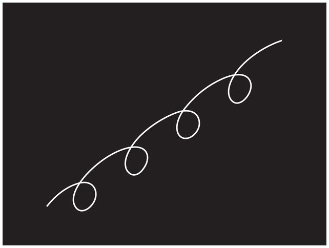
Эволюция – это процесс адаптаций/изобретений, которые изначально стимулируют значительный рывок в прогрессе, однако со временем их польза уменьшается. У этого болезненного снижения могут быть два итога. Первый – адаптации и изобретения, которые поднимут обновленные продукты, организации или человеческие способности на более высокий уровень развития (как показано на верхнем рисунке). Второй – упадок и гибель (как показано на нижнем рисунке).
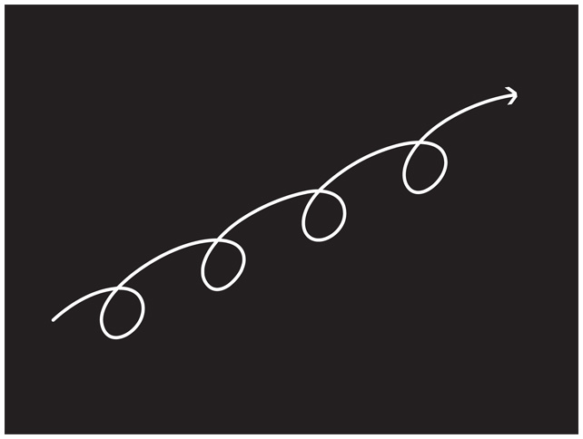
Подумайте о любом продукте, организации или человеке, и вы поймете справедливость этого заявления. Мир завален вещами, которые когда-то были вершиной прогресса, а теперь обречены на гибель. Лишь очень немногие из них постоянно совершенствуются и идут в ногу со временем. Все механизмы в конце концов ломаются, распадаются на части, а эти части используются для создания новых механизмов. Это касается и нас. Иногда нам становится грустно, ведь мы привязываемся ко всему этому, однако, если взглянуть с более высокого уровня, поистине удивительно наблюдать, как работает механизм эволюции.
С этой точки зрения очевидно, что совершенства нет. Это недостижимая цель, лежащая в основе бесконечного процесса адаптации. Если бы природа или что-то иное было совершенным, эволюция прекратилась бы. Любой организм, общность или отдельный человек несовершенны, но способны стать лучше. Поэтому не стоит идти по тупиковому пути – скрывать свои ошибки и притворяться совершенством, имеет смысл осознать свои слабые стороны и постараться с ними справиться. Вы либо получите ценный урок и выйдете на новый уровень более подготовленным, либо потерпите поражение. Как говорится…
d. Эволюция или смерть. Это касается не только людей, но и государств, компаний, экономических систем – одним словом, всего. Обычно эволюционная система в целом саморегулируема, хотя это не относится к отдельным ее частям. Например, если предложение превышает спрос, цены пойдут вниз, некоторые компании разорятся и уйдут с рынка, объем производственных мощностей будет снижаться до тех пор, пока предложение не начнет соответствовать спросу, в этот момент цикл начнет движение в противоположном направлении. Аналогичным образом, если экономическая ситуация ухудшается, люди, несущие ответственность за экономическую политику, вносят необходимые изменения, в противном случае они не удержатся на своих постах и на смену им придут другие. Эти циклы постоянно повторяются и подчиняются вполне конкретной логике.
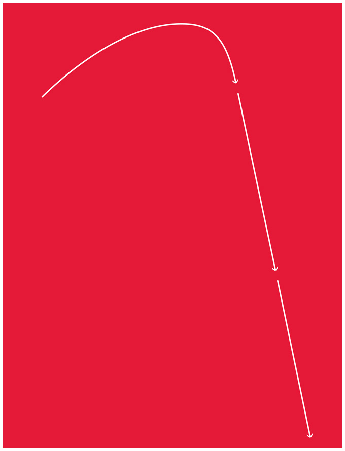
Главное, чтобы неудачи, обучение и совершенствование происходили быстро. Если вы непрерывно учитесь и совершенствуетесь, ваше развитие будет напоминать восходящую прямую. Если вы с этим не справитесь, этот процесс будет похож на тот, что изображен на рисунке выше. Я глубоко убежден, что…
1.5. Эволюция – это величайшее достижение и самая большая награда
Эволюция происходит на бессознательном уровне: человек инстинктивно стремится делать что-то как можно лучше, создает и развивает технологии, которые способны ему в этом помочь. Из истории известно: все биологические виды либо исчезают, либо эволюционируют в другие, хотя у нас нет возможности лично наблюдать этот процесс из-за ограниченности времени жизни. Тем не менее мы доподлинно знаем, что человечество не что иное, как результат эволюции ДНК в новую форму, произошедшей примерно 200 тысяч лет назад. И мы знаем, что человечество либо исчезнет с лица земли, либо эволюционирует в более высокую форму жизни. Лично я верю, что у человека есть отличный шанс начать развиваться в ускоренном темпе при помощи созданных им технологий, способных анализировать огромные объемы данных и «думать» быстрее и эффективнее, чем сам человек. Интересно, сколько столетий уйдет у нас, чтобы развиться до более высокой формы, которая будет гораздо ближе к всезнанию, чем мы сейчас, если, конечно, до этого человечество не уничтожит себя.
Одна из самых больших загадок природы заключается в том, как система, состоящая из отдельных организмов, действующих в собственных интересах без понимания, что происходит, и руководства, способна оставаться функциональным и развивающимся единым целым. Я не эксперт в этом вопросе, но, мне кажется, это происходит благодаря тому, что эволюция создала: а) стимулы и взаимодействия, ведущие к тому, что отдельные организмы, преследуя свои интересы, добиваются того, что хорошо для всех; б) процесс естественного отбора; в) способность к быстрым экспериментам и адаптации.
a. Стимулы отдельного человека должны соотноситься с целями группы. Наглядный пример стимулов, которые приводят к тому, что отдельные организмы, преследуя свои интересы, добиваются того, что хорошо для всех, – это секс и естественный отбор. Природа дала человеку весьма действенный стимул заниматься сексом ради удовольствия, которое он доставляет, хотя основная цель секса – способствовать распространению ДНК. Таким образом, человек на индивидуальном уровне получает то, что хочет, способствуя эволюции в целом.
b. Реальность оптимизируется в интересах системы, а не отдельных ее частей. Постарайтесь принести пользу всем, и вы, скорее всего, получите вознаграждение. Процесс естественного отбора ведет к тому, что наиболее эффективные качества сохраняются и передаются потомству (например, лучшие гены, лучшие продукты и тому подобное). В результате система непрерывно совершенствуется.
c. Процесс адаптации с помощью быстрого метода проб и ошибок неизбежен. Метод проб и ошибок, действующий в процессе естественного отбора, позволяет совершенствовать систему без необходимости понимания всеми организмами, что происходит, или руководства процессом. То же самое применимо к нашему обучению. Есть три типа обучения, способствующие эволюционному развитию: на основе запоминания (сбор и хранение информации на уровне сознания, чтобы человек мог вспомнить ее позднее); бессознательное (знания, которые человек получает на основе опыта, но которые остаются на уровне подсознания, хотя и влияют на процесс принятия решений); а также обучение, которое происходит без участия рационального мышления, например изменения в структуре ДНК, определяющие способность организма к адаптации. Я привык считать, что обучение на основе запоминания наиболее эффективно, однако со временем пришел к выводу: оно приводит к менее быстрому прогрессу, чем практический эксперимент и адаптация. Примером того, как организмы в природе совершенствуются без участия рационального мышления, может быть борьба человечества (со всем его рациональным мышлением) с вирусами (у которых даже нет мозга). Вирусы напоминают блестящих шахматистов. За счет быстрого изменения (объединения разного генетического материала в разные цепочки) они держат в напряжении самые светлые умы мирового сообщества специалистов в области здравоохранения, которые пытаются найти способы, способные держать вирусы под контролем. Понимание этого особенно полезно в эпоху, когда компьютеры способны строить большое число моделей, воспроизводящих эволюционный процесс, чтобы помочь ученым увидеть, что сработает, а что нет.
В следующей главе я опишу процесс, который помог мне ускориться в развитии. Я надеюсь, он окажется полезен и вам. Однако перед этим хочу подчеркнуть, насколько важна персональная картина мира для определения, что для вас важно и в чем заключается ваша цель.
d. Осознайте, что вы одновременно всё и ничто, и решите, кем хотите быть. Самый большой парадокс заключается в том, что на индивидуальном уровне человек одновременно представляет собой все и ничто. С персональной точки зрения человек – это всё, с его смертью исчезает целый мир. Поэтому для большинства людей (и других видов) смерть – это самое ужасное, что с ними может произойти, и для них чрезвычайно важно прожить лучшую жизнь. При этом, если взглянуть на человека с точки зрения природы, его жизнь не имеет никакого значения. Объективная реальность такова, что каждый человек – всего лишь одна из семи миллиардов особей того же вида, населяющих планету сегодня, и что как биологический вид человек – один из 10 миллионов других биологических видов. Земля – это одна из ста миллиардов планет нашей Галактики, которая всего лишь одна из двух триллионов галактик во Вселенной. Продолжительность человеческой жизни в среднем составляет 1/3000 продолжительности существования человечества, а она, в свою очередь, составляет 1/20 000 времени существования Земли. Иными словами, человек – это несравнимо малая песчинка с очень короткой продолжительностью существования, и, чего бы он ни добился, его влияние будет несущественным. В то же время человек инстинктивно стремится развиваться и хочет что-то собой представлять. И он действительно может оказывать какое-то влияние, и каждый из этих крошечных шагов добавляется к другим и способствует эволюции Вселенной.
Вопрос в том, какое воздействие оказывает человек и как он развивается. Оказывает ли он влияние на других людей (которые, по сути, тоже ничего не значат в масштабе Вселенной) или, в более широком смысле, этого нам фактически никогда не удастся достичь? Действительно ли важно оказывать влияние на что-то или кого-то или нам лучше забыть об этом и просто наслаждаться жизнью, пока у нас есть такая возможность?
e. Кем вы станете, зависит от вашей картины мира. Чего вы добьетесь в жизни, зависит от того, как вы воспринимаете реальность и с чем вы связаны (ваша семья, сообщество, страна, человечество, вся экосистема, всё в принципе). Вам придется решить, до какой степени вы будете ставить интересы других выше собственных и кто будет входить в ваш круг общения. Вы постоянно будете попадать в ситуации, когда вам придется делать такой выбор.
Подобные решения могут показаться вам слишком сложными, но вы будете принимать их – осознанно или нет, – и они окажутся очень важными. Мне сейчас невероятно интересно принимать реальность, смотреть на себя с высоты уровня природы и ощущать себя неизмеримо малой частицей целого. Моя инстинктивная и рациональная цель в том, чтобы просто развиваться и способствовать эволюции по мере возможностей благодаря тому, что я пока еще здесь и я тот, кто я есть. В то же время меня мотивирует то, что я люблю больше всего, – моя работа и мои отношения. Поэтому мне кажется удивительным и прекрасным механизм реальности и природы, в том числе то, как я и все остальное подвергнемся распаду на части и образуем новое целое, хотя эмоционально мне сложно принять, что мне придется расстаться со всем, что мне дорого.
1.6. Усвойте уроки природы
Понимание законов природы и эволюции помогло мне в нескольких аспектах. Самое важное, это дало мне возможность эффективнее взаимодействовать с реальностью и делать сложный выбор. Я начал рассматривать реальность через призму работы ее механизма, вместо того чтобы утверждать, что все должно быть по-другому. И я понял, что практически все, что на первый взгляд казалось мне плохим – например, дождливые дни, слабости и даже смерть, – я воспринимал так с позиции своих сложившихся ожиданий и того, что хотел лично я. Со временем я пришел к выводу, что моя первоначальная реакция обусловлена тем, что я рассматриваю ее вне контекста, а он заключается в том, что реальность оптимизирует все для общего целого, а не для меня лично.
a. Стремитесь к максимальному развитию. Ранее я уже упоминал, что за уникальные способности логического и абстрактного мышления, а также способность мыслить с позиции более высокого уровня отвечают структуры, расположенные в неокортексе. Эти части головного мозга более развиты у человека, чем у других животных, и позволяют ему анализировать самого себя и управлять своим развитием. Поскольку человек обладает способностью к осознанному обучению на основе запоминания, он может развиваться быстрее и серьезнее, чем другие биологические виды, меняясь не только на протяжении поколений, но и за время собственной жизни. Это непрерывное стремление к обучению и совершенствованию приводит к тому, что нам неосознанно приятно получать хорошие результаты, а получать их быстро – волнующе вдвойне. Хотя большинство людей считают, что они стремятся к чему-то материальному (игрушки, большой дом, деньги, статус), что сделает их счастливыми, для многих гораздо большее и длительное удовлетворение приносит осознание, что они добились успеха в каком-то деле[59]. Как только человек получает вещь, которую хотел, он редко остается довольным долго. Вещи всего лишь приманка. Стремление получить что-то заставляет человека развиваться, и именно развитие, а отнюдь не награда как таковая, важно для самого человека и окружающих. Это означает, что для большинства людей успех заключается в том, чтобы бороться и развиваться максимально эффективно, то есть быстро учиться понимать самого себя и окружающую среду, а затем меняться, чтобы совершенствоваться. Вполне естественно, что так и должно быть, если принять во внимание закон убывающей доходности[60]. Задумайтесь, что значит иметь состояние. Люди, заработавшие столько денег, что они не получают (или практически не получают) предельную прибыль от этих денег, столкнутся с негативными последствиями, как и в случае с любыми другими излишествами, например обжорством. Интеллектуально здоровые люди начинают стремиться к чему-то другому или пытаются открыть новые измерения в знакомых вещах, – этот процесс делает их сильнее. Как сказал Фрейд: «Любовь и работа – основа природы человека».
Работа – не всегда то, чем человек зарабатывает на жизнь, хотя, мне кажется, лучше, когда это именно так. Это может быть любое длительное занятие, требующее интеллектуальных и иных усилий, которое способствует личностному совершенствованию. Как вы, вероятно, уже догадались, я убежден, что потребность иметь осмысленное занятие связана с внутренним стремлением человека к совершенствованию. А отношения – это естественные связи с другими, которые делают нас значимыми друг для друга и для общества в целом.
b. Помните: без боли нет результата. Осознание, что внутренне человек стремится к развитию – и что материальные блага, хоть и приятны, но не сделают его счастливым, – помогло мне определить цели своего развития и его стимулирования. Никому не нравится испытывать дискомфорт. В то же время все, что делает природа, имеет смысл. Так что боль дается человеку для какой-то цели. Для какой? Она привлекает внимание и направляет человека.
c. Фундаментальный закон природы: чтобы стать сильнее, нужно выйти за привычные границы, а это может причинить боль. Как сказал Карл Юнг: «Человеку нужны трудности. Они необходимы для здоровья». Тем не менее большинство людей инстинктивно избегают боли. Это так, когда речь идет о теле (например, занятия спортом для физической красоты), о сознании (например, расстройства, душевная борьба, нарушение душевного равновесия, чувство стыда), и особенно верно, когда люди сталкиваются с суровой реальностью собственного несовершенства.
1.7. Боль + анализ = прогресс
Избежать боли невозможно, особенно если вы стремитесь к высоким целям. Хотите верьте, хотите нет, но вам повезло. Если отнестись к ситуации правильно, вы поймете это, как и то, что это сигнал, что вам нужно найти решение, чтобы двигаться дальше. Если вам удастся сформировать у себя привычку анализировать причины, вызывающие боль, а не избегать ее, это поможет вам развиваться гораздо быстрее[61]. Думаю, когда вы увидите, насколько эффективнее лицом к лицу встречать болезненную реальность, созданную вашими проблемами, ошибками и слабостями, вы уже не захотите действовать по-другому. Все дело в привычке.
Большинство людей не способны проводить анализ в критической ситуации, а когда кризис минует, они начинают заниматься другими вещами и в итоге упускают шанс проанализировать случившееся, что помогло бы им извлечь ценные уроки. Если вы способны на это в пиковый момент (что, вероятно, слишком серьезное требование), отлично. Не менее ценно и то, если вы способны провести анализ постфактум, опираясь на воспоминания. (Специально для этого я создал приложение Pain Button, о котором расскажу в приложении в конце книги.)
Испытания станут проверкой на прочность и закалят вас. Если вы не пережили провал – значит не вышли из зоны комфорта, если вы не достигли предела – значит не пытаетесь реализовать свой потенциал в полной мере. Конечно, этот процесс, когда вы достигаете предела, иногда терпите неудачу, а иногда успех и извлекаете пользу и из того и из другого, нравится далеко не каждому. Но если вы из тех, кому такое по душе, вы можете даже «подсесть» на него. Жизнь неизбежно поставит вас в такие ситуации, и только вам решать, захотите ли вы пойти дальше.
Если вы выберете этот зачастую болезненный процесс личной эволюции, вы будете естественным образом подниматься на все более высокие уровни. По мере этого движения вверх вы начнете замечать, что, когда вы слишком погружены в какую-то ситуацию, все кажется более серьезным, чем есть на самом деле, и что большинство событий попадает в ту или иную категорию событий, повторяющих прошлое. Чем выше вы поднимаетесь, тем эффективнее взаимодействуете с реальностью, добиваясь результата для достижения ваших целей. То, что когда-то казалось невероятно сложным, становится простым.
a. Идите навстречу боли, а не избегайте ее. Если вы не стараетесь облегчить себе жизнь, а привыкаете постоянно действовать, испытывая определенную боль, ваше развитие будет идти быстрее. Примите это.
Всякий раз, когда вы сталкиваетесь с болезненной ситуацией, вы оказываетесь на потенциально важном жизненном перекрестке: у вас есть возможность выбрать здоровую и болезненную правду или нездоровую, но комфортную иллюзию. Ирония в том, что, если выбрать здоровый путь, довольно скоро боль превратится в удовольствие. Боль – это сигнал! Это как начать заниматься спортом – привычка принимать боль и извлекать из нее урок поможет вам «перейти на другую сторону».
Под этой метафорой я имею в виду, что у вас разовьется привычка:
• выявлять свои слабости, принимать их и работать с ними;
• предпочитать, чтобы окружающие были с вами честными, а не скрывали негативные мысли о вас;
• быть собой, а не притворяться сильным, если это ваше слабое место.
b. Принимайте жесткость, идущую из лучших побуждений. Я хочу дать людям, особенно тем, кто мне дорог, силу справляться с реальностью, чтобы получать желаемое. Следуя этой цели, я часто отказываю им в том, чего они хотят, – тогда у них появляется шанс бороться за это. Эмоционально это может быть очень тяжело, даже когда люди понимают, что сложности закаляют характер, а если я дам им все, что они хотят, это только ослабит их и в будущем сделает еще более зависимыми от чужой помощи[62].
Конечно, большинство людей предпочли бы не иметь слабостей. Традиционное воспитание и жизненный опыт учат нас скрывать уязвимые места. Но люди чувствуют себя наиболее счастливыми, когда могут быть собой. Если человек способен принять свои слабости, он становится свободнее и эффективнее с ними справляется. Я призываю вас не зацикливаться на своих недостатках – у кого их нет? Если вы будете открыты, то сможете изменить свои негативные старые привычки и обретете настоящую силу и обоснованный оптимизм.
Этот эволюционный процесс продуктивной адаптации и подъема – процесс поиска, обретения и стремления к достижению все более высоких целей – касается не только прогресса в развитии отдельных личностей и общества в целом. Он в равной степени подходит для работы с провалами, которые, к сожалению, неизбежны. В какой-то момент жизни вы испытаете настоящее потрясение. Оно может быть связано с работой, семьей, потерей близкого человека, несчастным случаем или болезнью или осознанием, что жизнь, о которой вы мечтали, для вас недостижима. Это может быть все что угодно. В этот момент вам может быть настолько больно, что покажется, что больше нет сил бороться и продолжать идти дальше. Поверьте, у вас есть силы. В итоге ваш успех будет зависеть от того, насколько вы будете это понимать, даже если в период кризиса вам так не кажется.
Именно благодаря этому многие из тех, кто пережил грандиозный провал, в итоге стали не менее (а может быть, и более) счастливыми, после того как успешно адаптировались к новым обстоятельствам. Качество вашей жизни будет зависеть от того выбора, который вы делаете в эти болезненные моменты. Чем быстрее человек адекватно адаптируется, тем лучше[63]. Какими бы ни были ваши цели в жизни, ваш успех и счастье зависят от способности адаптироваться и быстро и эффективно личностно развиваться. Если вы преуспеете в этом, то сможете изменить свою психологическую реакцию так, что то, что раньше доставляло вам боль, теперь будет желанным.
1.8. Анализируйте последствия второго и третьего порядка
Анализируя не столь очевидные последствия, которые у природы всегда сбалансированы, я пришел к выводу, что люди, которые принимают во внимание только прямые следствия своих решений, игнорируя более долгосрочный эффект, редко добиваются целей. Так происходит, потому что немедленный результат часто противоречит долгосрочным целям, а это ведет к ошибкам в принятии решений. Например, прямое следствие физических упражнений (боль и временные затраты) обычно считается нежелательным результатом, тогда как последствия второго порядка (улучшение здоровья и внешнего вида) – желательным.
Точно так же вкусная еда часто оказывается вредной для организма, и наоборот. Довольно часто немедленный результат становится для человека соблазном, из-за которого он не получает то, чего на самом деле хочет, барьером на пути к цели. Иногда даже кажется, что природа испытывает человека, предлагая ему выбор с подвохом и наказывая тех, кто принимает решения, думая лишь о последствиях первого порядка.
И наоборот, люди, которые напрямую идут к заветной цели, избегают соблазнов и преодолевают боль, со значительной степенью вероятности добьются успеха в жизни.
1.9. Несите ответственность за результат
Как правило, бывает столько шансов принимать решения и столько возможностей оправиться от ошибок, что, если действовать с умом, у вас сложится потрясающая жизнь. Конечно, иногда на ее качество влияют обстоятельства, не подвластные контролю человека – в каких условиях он родился, несчастные случаи и болезни, – однако чаще всего при правильном подходе даже самые сложные обстоятельства можно сделать немного лучше. Так, одного из моих друзей парализовало после того, как он неудачно нырнул в бассейне и ударился головой. Несмотря на ужасный диагноз, он чувствует себя не менее счастливым, чем остальные, потому что он выбрал правильное отношение к своей ситуации и потому что к счастью ведет не один-единственный путь, а множество.
Моя мысль в следующем: какой бы ни была ваша жизненная ситуация, у вас больше шансов преуспеть и обрести счастье, если вы возьмете на себя ответственность за то, чтобы принимать правильные решения, вместо того чтобы жаловаться на обстоятельства вне вашего контроля. В психологии это называется «внутренний локус контроля», и результаты исследований неизменно свидетельствуют, что люди с внутренним локусом контроля добиваются в жизни большего, чем те, кто им не обладает.
Так что перестаньте волноваться по поводу того, нравятся вам сложившиеся обстоятельства или нет. Жизни вообще все равно, что вам нравится. Только в ваших силах проследить связь между вашей целью и тем, что нужно делать, чтобы ее добиться, а затем набраться храбрости и сделать это. В следующей главе я поделюсь с вами пятью этапами, которые помогли мне разобраться с реальностью и развиваться.
1.10. Взгляните на механизм с более высокого уровня
Уникальная способность человека рассматривать ситуацию с более высокого уровня применима не только к пониманию реальности и причинно-следственных связей, лежащих в ее основе. Она также применима к самоанализу и анализу окружающих. Я называю эту способность подняться над личными обстоятельствами и обстоятельствами других людей и объективно взглянуть на них с помощью мышления более высокого уровня. Этот тип мышления дает человеку возможность изучить причинно-следственные отношения, действующие в его жизни, повлиять на них и использовать для получения тех результатов, которые ему нужны.
a. Воспринимайте себя как механизм, действующий внутри другого механизма, и помните, что у вас есть возможность менять свои механизмы для получения лучших результатов. У вас есть цели. Давайте назовем тот способ действий, который вы выберете для достижения целей, механизмом. Он складывается из плана (что нужно сделать) и людей (которые будут делать то, что нужно сделать). В число этих людей входите вы и те, кто вам помогает. Например, предположим, у вас военная цель: оборонять высоту от неприятеля. Ваш план может включать двух разведчиков, двух снайперов, четырех пехотинцев и так далее. Конечно, правильный план имеет огромное значение, но это только половина успеха. Не менее важно, чтобы каждый из людей занял позицию, на которой будет максимально полезен. Для выполнения задачи каждому из них требуются индивидуальные навыки: разведчики должны уметь быстро передвигаться, снайперы должны быть меткими стрелками, чтобы в совокупности механизм произвел тот результат, на который вы рассчитываете.
b. Сравнив результат с целью, можно определить, как изменить механизм. Эта оценка и процесс совершенствования в точности отражают эволюционный процесс развития, который я описывал ранее. Он означает поиск способа улучшить или изменить план, людей для достижения цели. Схематически этот процесс можно представить в виде петли обратной связи, как на рисунке.
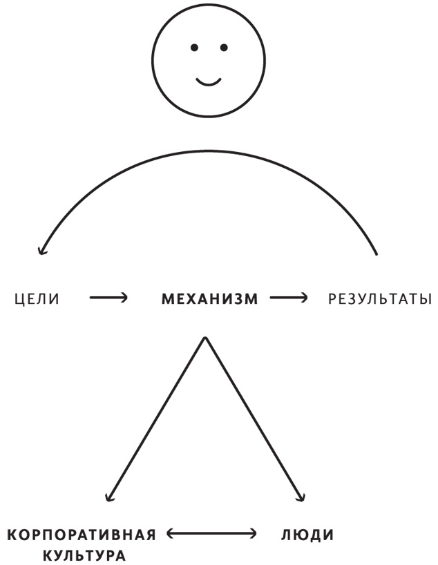
c. Проведите различие между собой в роли разработчика механизма и собой в роли исполнителя. Одна из самых сложных задач для любого человека – объективно оценить себя и свои обстоятельства (собственный механизм), чтобы создать механизм и управлять им. Большинство людей не могут подняться выше уровня исполнителя внутри механизма. Если вы научитесь видеть разницу между этими ролями и поймете, что гораздо важнее быть хорошим дизайнером/менеджером собственной жизни, чем хорошим исполнителем, вы будете на верном пути. Чтобы добиться успеха, вы-дизайнер/менеджер должны объективно оценить вас-исполнителя, не переоценивать и не браться за те задачи, которые вы выполнять не должны. У большинства людей нет такого стратегического видения, они действуют эмоционально, под влиянием момента: их жизнь складывается из ряда неуправляемых эмоциональных событий, каждое из которых влечет за собой следующее. Если вы хотите оглянуться на свою жизнь и осознать, что добились, чего хотели, вы не можете себе позволить действовать таким образом.
d. Самая серьезная ошибка, которую совершает подавляющее большинство людей, – оценивать себя и других необъективно, а это ведет к тому, что они снова и снова сталкиваются со слабостями – своими и чужими. Люди, придерживающиеся такого образа действий, терпят неудачу, потому что становятся заложниками собственных представлений. Если бы они смогли преодолеть это, то сумели бы начать реализовывать свой потенциал.
Именно поэтому мышление более высокого уровня становится определяющим фактором успеха.
e. Успешные люди объективно оценивают себя и ситуацию и управляют ею, меняя реальность. Они способны принять точку зрения других, а не настаивают на собственном мнении, которое может быть ограничено их убеждениями. Они способны объективно оценить себя (сильные и слабые стороны), а также других и для достижения целей поручить задачи правильным людям. Как только вы поймете, как это делать, вы увидите, что для вас практически нет ничего невозможного. Просто нужно научиться объективно воспринимать реальность и использовать все ресурсы, имеющиеся в вашем распоряжении. Например, если вы как дизайнер/менеджер обнаружили, что как исполнитель не в состоянии справиться с какой-то задачей, вы должны, образно говоря, уволить себя и найти достойную замену, оставаясь в роли дизайнера/менеджера собственной жизни. Если вы обнаружили, что какое-то дело вам не дается, не стоит переживать. Наоборот, вы должны радоваться, что теперь это знаете, потому что, если подойти к ситуации с умом, это только повысит ваши шансы на достижение цели.
Если вы разочарованы, что не можете все делать сами, так чтобы это получалось идеально, вы очень наивны. Никто не способен все делать хорошо. Вы бы хотели, чтобы игроком вашей баскетбольной команды был, скажем, Эйнштейн? Что вы подумаете о нем, когда он промажет? Должен ли он чувствовать себя никчемным? Подумайте обо всех тех областях, в которых Эйнштейн был некомпетентен, и представьте, сколько усилий он приложил, чтобы добиться успеха в тех, в которых стал лучшим в мире.
Когда вы видите, как стараются другие, а они наблюдают за вашей борьбой, этот процесс может вызывать самые разные эмоции: симпатию, жалость, растерянность, страх, желание спрятаться. Тем не менее нужно перестать воспринимать этот процесс как нечто негативное. Самые большие возможности жизнь дает нам в моменты борьбы. Только от вас зависит, сможете ли вы по максимуму использовать эти испытания на прочность и нестандартный подход.
Что касается ваших слабостей, у вас есть четыре возможные стратегии поведения.
1. Вы можете их отрицать (так поступает большинство людей).
2. Вы можете их принять и работать над ними, чтобы попытаться обернуть их в сильные стороны (это может сработать, а может и нет – зависит от вашей способности меняться).
3. Вы можете принять их и найти способы их обойти.
4. Или вы можете изменить свою цель.
То, какой из этих вариантов вы выберете, окажет серьезное влияние на направление вашей жизни. Худший из вариантов – первый. Отрицание приведет лишь к тому, что вы будете постоянно сталкиваться с этой своей слабостью, испытывать боль и разочарование и топтаться на месте. Второй вариант может стать лучшим, при условии что он сработает. К сожалению, есть вещи, в которых вам никогда не стать лучшим, и вы только потратите много времени и сил. Единственный способ понять, стоит ли вам пробовать этот путь, – это проанализировать, насколько та область, в которой вы хотите измениться, чтобы преуспеть, вам по душе (то есть относится ли она к сфере ваших природных способностей). Третий вариант самый легкий и, как правило, самый целесообразный, при этом его выбирают реже всего. Четвертый вариант с изменением цели тоже хорош, хотя он требует гибкости, чтобы отказаться от укоренившихся убеждений и наслаждаться успехом в том, что вам доступно.
f. Один из самых важных навыков, который вам необходимо развить, – это спрашивать совета у людей, компетентных в областях, в которых вы не сильны. Это поможет вам не сделать неправильные шаги. Этот навык хорошо развит у всех успешных людей.
g. Оценивать себя объективно – задача не из простых, а потому вам следует полагаться на то, что говорят окружающие, и другие факты. Я знаю, что моя собственная жизнь была полна ошибок, что давало эффективную обратную связь. И только благодаря тому, что я развил в себе способность взглянуть на все факты с более высокого уровня, мне удалось проделать работу над ошибками и продолжить стремиться к цели. Как бы долго я ни практиковал этот метод, я понимаю, что все так же не могу оценивать себя объективно, а потому продолжаю полагаться на мнение окружающих.
h. Если вы лишены предубеждений и полны целеустремленности, то добьетесь практически всего, что захотите. Я определенно не хочу разубеждать вас следовать за мечтой, какой бы она ни была. В то же время настоятельно призываю проанализировать, насколько она соответствует вашему внутреннему мироощущению. Есть много путей добиться цели, оставаясь в гармонии с собой, – не зацикливайтесь на каком-то одном. Если путь заводит вас в тупик, все, что вам нужно сделать, – это найти другой, совпадающий с вашими внутренними ценностями. (Из следующих глав вы узнаете, как научиться лучше понимать себя.) К сожалению, у большинства людей не хватает смелости честно признаться себе в своих слабостях и сделать непростой выбор, которого требует этот процесс. В конце концов, все сводится к пяти решениям.
1. Не путайте объективную реальность со своими ожиданиями.
2. Не беспокойтесь о том, что о вас подумают, лучше беспокойтесь о достижении целей.
3. Не переоценивайте последствия первого порядка относительно долгосрочных последствий.
4. Не позволяйте боли встать на пути прогресса.
5. В плохом результате вините только себя.
НЕПРАВИЛЬНО
Избегать суровой реальности_______
ПРАВИЛЬНО
Противостоять суровой реальности
НЕПРАВИЛЬНО
Беспокоиться о том, чтобы казаться хорошим_______
ПРАВИЛЬНО
Беспокоиться о достижении целей
НЕПРАВИЛЬНОПринимать решения с позиции немедленного результата_______
ПРАВИЛЬНО
Принимать решения, взвешивая последствия первого, второго и третьего порядка
НЕПРАВИЛЬНО
Позволить боли встать на пути прогресса_______
ПРАВИЛЬНО
Понять, как управлять болью для достижения прогресса
НЕПРАВИЛЬНО
Не считать себя и других ответственными_______
ПРАВИЛЬНО
Считать себя и других ответственными
2. Сделайте «Пять шагов», чтобы получить то, что хотите от жизни
* * *
По моему мнению, индивидуальное развитие – петля, о которой шла речь в предыдущей главе, – состоит из пяти отдельных этапов. Если вы научитесь следовать им, вы почти наверняка добьетесь успеха. Ниже их краткие формулировки.
1. Ставьте перед собой четкие цели.
2. Выявите проблемы, стоящие у вас на пути, и не миритесь с ними.
3. Проанализируйте эти проблемы, чтобы понять причины.
4. Разработайте план, который поможет вам справиться с проблемами.
5. Делайте все необходимое, чтобы воплотить свой план и получить результат.
В совокупности эти пять шагов образуют петлю, как показано на рисунке ниже. Давайте проанализируем этот процесс подробнее.
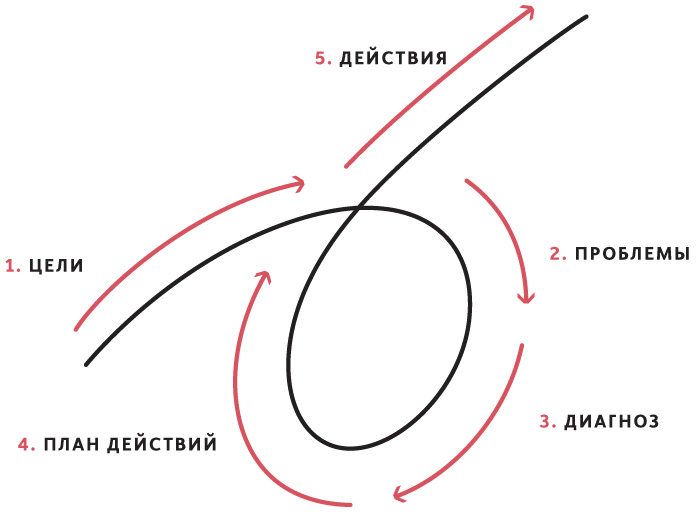
Во-первых, вам необходимо решить, к чему стремиться. Выбор целей определит направление вашего движения. На пути к ним вы неизбежно столкнетесь с проблемами. Некоторые из этих проблем заставят вас увидеть собственные слабости. Как вы справитесь с болью, которую это вызовет, зависит от вас. Если хотите добиться своих целей, вам следует сохранять спокойствие и придерживаться аналитического подхода, чтобы точно диагностировать возникшие проблемы, разработать план, который поможет с ними справиться, и делать то, что необходимо, чтобы добиться результата. После этого у вас появятся новые цели, и весь процесс повторится. Для динамичного развития вам придется делать это быстро и постоянно, каждый раз устанавливая для себя более высокую цель.
Для достижения успеха вам придется качественно выполнять каждый из этих шагов и каждый раз в установленной последовательности. Так, когда вы выбираете цели, сосредоточьтесь на их формулировке. Не думайте о том, как вы их достигнете или что будете делать, если что-то пойдет не так. Когда вы диагностируете проблемы, не думайте о том, как будете их решать, просто диагностируйте. Размывание этих этапов ведет к снижению качества результатов, потому что мешает выявлению настоящих проблем. Это цикличный процесс: качественное выполнение каждого шага снабжает вас информацией, необходимой для перехода к следующему этапу и качественному его выполнению.
Важно, чтобы к этому процессу вы подошли хладнокровно и рационально, были способны оценить самого себя с более высокого уровня и при этом предельно честно. Если эмоции берут верх, сделайте паузу, пока не сможете мыслить беспристрастно. При необходимости обратитесь за советом к рассудительным и хладнокровным людям.
Чтобы не терять концентрации и эффективности, представьте, что ваша жизнь – это боевое искусство или игра, цель которой – преодолеть препятствие и добиться результата. Как только вы примете правила игры, вы привыкнете к дискомфорту, сопровождающему постоянное чувство неудовлетворенности. Вам никогда не удастся делать все идеально: ошибки неизбежны, важно осознать и принять это. Хорошая новость в том, что каждая допущенная вами ошибка может вас чему-то научить. Нет границ у процесса обучения. Вскоре вы поймете всю бессмысленность подхода «это нелегко», или «это несправедливо», или «я с этим не справлюсь» и увидите, что настойчивость и целеустремленность приносят плоды.
А если у вас нет всех навыков, необходимых для достижения успеха? Не переживайте: это верно в отношении любого человека. Вам просто следует знать, когда они понадобятся и куда обратиться, чтобы их получить. По мере накопления опыта вы будете играть в эту игру со спокойной непоколебимой целеустремленностью даже в неблагоприятных обстоятельствах. Ваша способность получать желаемое будет вдохновлять вас. Давайте подробнее рассмотрим каждый из пяти шагов.
2.1. Ставьте перед собой четкие цели
a. Определите приоритеты: вы в состоянии получить почти все, что хотите, но вы не можете получить абсолютно все. Жизнь похожа на огромный шведский стол, ломящийся от таких изысканных яств, которые вы даже не мечтали попробовать. Выбор цели иногда означает, что вам нужно отказаться от того, чего вам хочется, чтобы получить то, чего хочется еще больше. И вот тут-то некоторые впадают в ступор: они не решаются отказаться от благоприятной возможности из страха упустить что-то другое и в итоге преследуют слишком много целей одновременно и не добиваются ничего или почти ничего. Не впадайте в отчаяние, и пусть вас не смущает обилие вариантов. Вы в состоянии получить гораздо больше того, что вам нужно для счастья. Делайте выбор и смело идите вперед.
b. Не путайте цели и желания. Цель – это то, чего вы действительно хотите достичь. Желание – это то, чего вы хотите, но что может помешать вам в достижении цели. Обычно желания представляют собой последствия первого порядка. Например, целью может быть хорошая физическая форма, а желание – это соблазн есть вкусную, но нездоровую пищу. Поймите меня правильно: если вы хотите все время проводить на диване перед телевизором, да ради бога! Серьезно. Вы можете выбрать абсолютно любую цель. Но если это не то, к чему вы стремитесь, лучше отложите в сторону пачку чипсов, которую сейчас держите.
c. Решите, чего вы действительно хотите добиться в жизни, примирив свои цели и желания. Возьмем, к примеру, страсть. Без страсти жизнь была бы пресной. Но главный вопрос: как вы управляете своей страстью? Вы позволяете страсти полностью захлестнуть вас и совершаете под ее влиянием необдуманные поступки или же она мотивирует вас в стремлении к вашим истинным целям? Полностью раскрыться и реализовать свой потенциал вам помогут те вещи, которые кажутся вам правильными на обоих уровнях – и как желания, и как цели.
d. Не путайте успех с его внешними атрибутами. Концентрация на достижениях, несомненно, важна. Но люди, которые без ума от пары туфель за 1200 долларов или от красивого автомобиля, редко бывают счастливыми, потому что они не знают, чего на самом деле хотят и, следовательно, что поможет им удовлетворить это желание.
e. Никогда не отказывайтесь от цели из-за того, что считаете ее недостижимой. Будьте амбициозны. Всегда найдется лучший из возможных путей. Ваша задача – определить его и набраться смелости ему следовать. То, что вам кажется достижимым, – это всего лишь функция того, что вам известно на данный момент. Когда вы начнете движение к цели, вы многому научитесь, особенно если объединитесь с другими. Перед вами откроются пути, о которых вы раньше даже не думали. Хотя, конечно, есть объективные ограничения, например вам вряд ли удастся стать центровым профессиональной баскетбольной команды, если вы маленького роста, или пробежать полтора километра меньше чем за четыре минуты, если вам 70 лет.
f. Помните, что большие ожидания создают большие возможности. Если вы ограничиваете себя той целью, про которую знаете, что достигнете, вы ставите планку заведомо слишком низко.
g. Практически ничто не сможет помешать вам добиться успеха, если вы обладаете: а) гибкостью, б) персональной ответственностью. Гибкость позволяет принять то, чему учит вас реальность (или знающие люди). Персональная ответственность важна потому, что если вы действительно убеждены, что неудача в достижении цели – это ваш личный провал, вы начнете расценивать эту неудачу как показатель того, что не проявили достаточного упорства, гибкости или творческого подхода. Таким образом, вы будете гораздо более мотивированы найти выход из сложившейся ситуации.
h. Понимание, как вести себя в случае неудачи, не менее важно, чем знание, как двигаться вперед. Иногда вы знаете, что идете по шаткому мостику над пропастью и другой дороги нет. Жизнь полна неприятных сюрпризов, и некоторые из них могут казаться полной катастрофой. В плохие времена ваша цель может заключаться в том, чтобы сохранить то, что вы имеете, минимизировать уровень потерь или просто смириться с неизбежными потерями. Ваша задача – всегда делать лучший из возможных выборов, зная, что в этом случае вы будете вознаграждены.
2.2. Определите проблемы, стоящие у вас на пути, и не миритесь с ними
a. Воспринимайте болезненные проблемы как шанс что-то улучшить. Хотя сначала вам будет казаться иначе, но каждая проблема, с которой вы сталкиваетесь, представляет собой возможность. По этой причине важно, чтобы вы открыто их проговаривали. Большинство людей не любят этого делать, особенно если в процессе становятся очевидны их слабости или уязвимые места тех, кто им дорог, но успешные люди знают, что без этого не обойтись.
b. Не избегайте проблем из-за того, что их корни кроются в суровой и неприглядной реальности. Мысль о проблемах, которые сложно разрешить, вызывает у вас беспокойство, но нежелание думать о них (а значит, пытаться справляться с ними) должно волновать вас еще больше. Когда проблема в нехватке таланта или навыков, большинство людей испытывают стыд. От этого чувства необходимо избавиться. Я не устану повторять: признавать свои слабые места – не равнозначно сдаться им. Напротив, это первый шаг, чтобы их преодолеть. Боль, которую вы чувствуете, – это боль роста: она пробует вас на прочность, и вы непременно будете вознаграждены, если выдержите это испытание.
c. Точно определяйте стоящие перед вами проблемы. В определении характера трудностей нужна точность, так как у разных проблем имеются разные решения. Если причина в нехватке навыков, поможет дополнительное обучение. Если проблема возникла из-за вашей внутренней слабости, не исключено, что потребуется чья-то помощь, чтобы изменить вашу роль. Если корень проблемы – некомпетентность другого человека, замените его кем-то, кто обладает необходимыми знаниями и навыками. Все просто.
d. Не путайте источник проблемы и саму проблему. «Я плохо сплю» – это не проблема, это ее потенциальный источник (или следствие). Для прояснения ситуации попробуйте сначала определить отрицательный результат, например «я не справляюсь с работой». Плохой сон может быть причиной этой проблемы или причина может быть в чем-то другом, но, чтобы это понять, вам нужно точно знать суть проблемы.
e. Различайте серьезные и незначительные проблемы. Ваши время и энергия – это ограниченные ресурсы, а потому лучше тратить их на те проблемы, решение которых принесет наибольшую положительную отдачу. В то же время уделяйте достаточное внимание незначительным проблемам, чтобы убедиться, что они не представляют собой симптомы более серьезных.
f. Разобравшись, в чем проблема, не миритесь с ней. Мириться с проблемой – все равно что не понять ее суть. Неважно, по какой причине вы миритесь с ситуацией: потому что думаете, что с ней невозможно справиться, не прилагаете достаточно усилий для ее решения, у вас не хватает ресурсов или силы воли. В этом случае ваша ситуация безнадежна. Вам необходимо развить в себе острую нетерпимость к любого рода несовершенству, независимо от его масштаба.
2.3. Анализируйте проблему, чтобы определить ее причину
a. Прежде чем искать решение проблемы, сосредоточьтесь на ее причине. Распространенная ошибка – моментально переходить от определения проблемы к предложению, как с ней справиться. Стратегическое мышление требует постановки диагноза и разработки решения. Качественный анализ обычно занимает от 15 минут до часа, в зависимости от тщательности его проведения и сложности проблемы. Он включает обсуждение с компетентными людьми и совместный поиск причины. Как и принципы, одни и те же причины проблем проявляются снова и снова, казалось бы, в разных ситуациях. Выявление этих причин и их искоренение дадут оптимальный результат.
b. Различайте непосредственные причины и исходные. К непосредственным причинам обычно относятся действия (или недостаток действий), вызывающие проблемы; как правило, они выражаются глаголами («Я опоздал на поезд, потому что не проверил расписание заранее»). Исходные причины гораздо глубже, и обычно их описывают прилагательными («Я не проверил расписание заранее, потому что очень забывчивый»). По-настоящему решить проблему можно, только если искоренить исходные причины. А для этого следует различать симптомы и саму болезнь.
c. Если вы будете знать, что представляет собой человек (включая вас), вы будете знать, чего от него ожидать. Вам придется преодолеть собственное нежелание оценивать людей, если вы хотите, чтобы рядом с вами были те, кто обладает нужными вам качествами. Это же относится и к вам. Почти всегда людям сложно признавать и принимать собственные ошибки и слабости. Иногда потому что они их искренне не замечают, а иногда потому что им этого не позволяет сделать собственное эго. Вполне вероятно, окружающие не указывают вам на ошибки, потому что не хотят ранить. Через все это нужно переступить. Людей, которые реализуют свой потенциал, от остальных отличает готовность воспринимать себя и окружающих объективно и разбираться в исходных причинах возникающих проблем.
2.4. Разработайте план
a. Проанализируйте прошлое, прежде чем двигаться вперед. Проанализируйте, с чего вы начали (или что сделали), что привело вас в точку, где вы находитесь сейчас, а затем визуализируйте, что вы и другие должны сделать в будущем, чтобы достичь целей.
b. Подумайте о своей проблеме как о результате работы механизма. Практикуйте мышление более высокого уровня: проанализируйте свой механизм на предмет того, как его можно изменить, чтобы добиться лучших результатов.
c. Помните, что к достижению целей ведет множество путей. Вам просто нужно найти тот, который больше всего подходит вам.
d. Представьте свой план в виде сценария к фильму, в котором вы визуализируете, кто и что делает на протяжении определенного времени. Сначала определите основные положения (например, «нанимать самых талантливых»), а затем уточните их. Отталкивайтесь от общей картины и выделяйте конкретные задачи и их временные рамки (например, «в течение следующих двух недель выбрать специалистов по персоналу, которые найдут этих самых талантливых сотрудников»). Когда вы будете это делать, неизбежно возникнут проблемы с издержками, временем и персоналом, так что продолжайте корректировать план, пока все детали механизма не начнут работать отлаженно.
e. Зафиксируйте план письменно, чтобы все могли с ним ознакомиться и отслеживать прогресс. Ваш план должен включать мельчайшие подробности, кто и что должен выполнять и когда. Задачи, концепция и цели – это разные вещи, не смешивайте их. Помните: задачи – это то, что связывает концепцию и цели.
f. Для разработки хорошего плана не требуется много времени. На то, чтобы сформулировать план действий и уточнить его, может уйти несколько часов, а может несколько дней или недель. Но сделать это необходимо, так как план определяет, что вам нужно сделать, чтобы добиться успеха. Очень многие допускают ошибку, когда совсем не уделяют время планированию из-за того, что слишком поглощены исполнением. Помните: сначала планирование – потом исполнение!
2.5. Претворяйте план в жизнь
a. Люди, которые строят большие планы, но не претворяют их в жизнь, не добиваются ничего. Чтобы реализовать план, нужно действовать, а это требует самодисциплины. Важно помнить, как связаны между собой задачи и цели, к которым вы стремитесь. Если вы чувствуете, что теряете эту связь, остановитесь и задайте себе вопрос: «Почему?» Если вы упустите этот момент, упустите и свои цели.
b. Хорошие рабочие навыки сильно недооценены. У людей, которые успешно добиваются своего, есть списки задач с определенными приоритетами, и они последовательно выполняют задачу за задачей.
c. Установите четкие критерии, чтобы знать, что вы выполняете план. Лучше всего, если кто-то другой будет объективно измерять и оценивать ваш прогресс. Если вы не добиваетесь выполнения целевых показателей, это другая проблема, которую необходимо выявить и решить. Есть много успешных, нестандартно мыслящих людей, которым не дается реализация задуманного. Они могут добиться успеха, если у них сложатся симбиотические отношения с эффективными исполнителями.
Вот, собственно, и все!
Помните: в основе всех пяти этапов лежат ваши ценности. Они определяют, чего вы хотите, то есть ваши цели. Кроме того, не забывайте, что все шаги нужно делать в определенной последовательности. После завершения каждого этапа вы получаете информацию, которая помогает скорректировать дальнейшие действия. После завершения всех пяти этапов можно начать сначала, поставив перед собой новую цель. Если процесс эффективен, ваши цели будут меняться медленнее ваших планов, которые будут меняться медленнее задач.
И последнее: у вас должны быть хорошо развиты навыки аналитического мышления и формирования результата. Первые три шага – постановка целей, выявление проблем и их анализ – требуют аналитического мышления (то есть понимания, к чему вы стремитесь и что происходит). Разработка решений и контроль их претворения в жизнь – это и есть формирование результата.
2.6. Слабости не важны, если вы нашли решение
Почти с уверенностью могу утверждать: вы не будете одинаково эффективными на всех перечисленных этапах, потому что каждый из них требует разного типа мышления и мало кто на это способен. Например, для постановки целей (то есть для определения, какой вы хотите видеть свою жизнь) нужны способность мыслить на более высоком уровне, визуализировать и определять приоритеты. Выявление проблем и нежелание с ними мириться требует восприимчивости, аналитических навыков и приверженности высоким стандартам. Постановка диагноза – логического мышления, умения видеть многочисленные варианты и готовность к жесткому общению с другими. Для разработки плана необходимы умение визуализировать и практичность. Для его реализации требуются самодисциплина, хорошие рабочие навыки и ориентация на результат. Много ли вы знаете людей, обладающих всеми этими качествами одновременно? Вероятно, ни одного. При этом, чтобы добиться успеха, нужно пройти все пять шагов. Что же делать? В первую очередь обладать смирением, чтобы получить то, что вам надо, от других! Слабости есть у каждого. Обычно они проявляются в характере ошибок, которые допускает человек. Осознание собственных слабостей и наблюдение за ними – первый шаг к успеху.
a. Проанализируйте характер своих ошибок и определите, на каком из пяти этапов вы обычно терпите неудачу. Узнайте мнение окружающих, так как никто не может оценить себя полностью объективно.
b. У каждого есть хотя бы одно серьезное слабое место, которое мешает ему добиться успеха. Найдите свое и научитесь с ним справляться. Напишите, где ваша ахиллесова пята (выявление проблем, разработка решений, реализация плана) и почему она существует (вас захлестывают эмоции, вы не способны визуализировать потенциальные возможности). Скорее всего, у вас, как и у большинства людей, не одна слабость, но, если вы определите самую серьезную и попробуете от нее избавиться, качество вашей жизни значительно повысится. Если вы возьметесь за эту задачу, вы практически наверняка добьетесь результата.
Вы сможете либо избавиться от слабости, либо прибегнете к помощи других, чтобы с ней справиться. Есть два способа добиться успеха: а) иметь то, что необходимо для успеха, самому; б) получить это от других. Второй способ требует смирения. Смирение не менее (а может быть, и более) важно, чем собственные силы. Лучше всего обладать и тем и другим. Далее приведена матрица, которая для некоторых может оказаться весьма полезной.
2.7. Понимание своих и чужих ментальных карт и смирение
Некоторые люди самостоятельно принимают эффективные решения – у них хорошие ментальные (когнитивные, мыслительные) карты. Возможно, они приобрели их в процессе обучения, а может быть, им от природы досталось больше здравого смысла, чем другим. В любом случае у них бывает больше ответов, чем у остальных. Точно так же кто-то в большем объеме обладает смирением и непредубежденностью. В некоторых случаях смирение может стать даже более ценным качеством, если благодаря ему человек стремится получить более эффективные решения, чем те, которые может предложить он. Самым действенным будет сочетание непредубежденности мышления и хороших ментальных карт.
Чтобы получить представление об этой простой концепции, оцените по шкале от 1 до 10 ментальную карту человека (иными словами, что он знает) – это значение по оси Y, и то, насколько он обладает смирением/непредубежденностью – это значение по оси Х, как показано на рисунке.
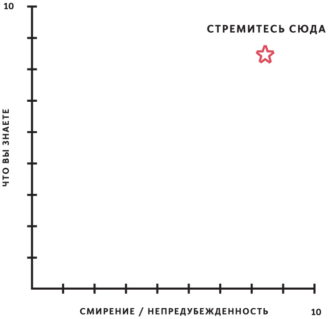
Практически все начинают с позиции в левом нижнем углу с низкими показателями по обеим осям. К сожалению, большинство людей в силу своего высокомерия так там и остаются. Улучшить позицию можно либо поднявшись по оси Y (научиться делать что-то лучше), либо продвинувшись по оси Х (увеличив свою непредубежденность). Любой из этих шагов позволит вам лучше понять, что делать. Если у вас хорошая ментальная карта, но низкая степень непредубежденности, это хорошо, но не отлично. Вы упустите много ценного. Точно так же, если вы открыты мнению других, но у вас неважная ментальная карта, вы, вероятно, столкнетесь с проблемами при выборе правильных людей и мнений, к которым следует прислушаться. Человек, обладающий в достаточной степени обоими этими качествами, всегда будет в более выигрышном положении, чем тот, у кого есть лишь одно.
А теперь подумайте, что нужно сделать вам, чтобы стать более успешным? Где бы вы отметили свое место на этой диаграмме? Узнайте мнение окружающих, куда бы они поместили вас.
Когда вы поймете, чего вам не хватает, и обретете непредубежденность, которая позволит вам принимать помощь других, вы увидите, что для вас нет практически ничего невозможного.
Большинству людей этого сделать не удается. В следующих главах я расскажу, почему и как это исправить.
3. Будьте абсолютно непредубежденным
* * *
Это, вероятно, самая важная глава, поскольку она объясняет, как преодолеть два основных препятствия, мешающие людям получить от жизни то, чего они хотят. Существование этих препятствий обусловлено механизмами работы мозга человека, поэтому с ними неизбежно сталкивается каждый.
3.1. Осознайте два мешающих вам барьера
Два самых серьезных препятствия на пути к эффективному принятию решений – это ваше эго и ваши «слепые зоны». В совокупности они мешают вам объективно оценивать себя и обстоятельства, в которых вы находитесь, и принимать лучшие решения из возможных, получая максимум пользы от других людей. Если вы разберетесь в механизме работы мозга, то поймете, откуда взялись эти барьеры и как изменить поведение, чтобы стать счастливее, эффективнее и продуктивнее в общении с другими людьми.
a. Ваше эго как барьер. Когда я говорю об эго как о барьере, я подразумеваю подсознательный защитный механизм, из-за которого человеку сложно признать собственные ошибки и слабости. Ваши самые глубинные потребности и страхи – такие, как потребность в любви и страх ее потерять, потребность в выживании и страх смерти, потребность быть значимым и страх оказаться пустым местом, – находятся в наиболее «древних» и примитивных структурах мозга, таких как миндалевидное тело (или амигдала) – область мозга в височной доле, отвечающая за обработку эмоций. Поскольку эти участки мозга не поддаются сознательному контролю, практически невозможно понять, чего они хотят и как вами управляют.
Они заставляют вас действовать инстинктивно и упрощенно. Им нравится похвала, а на критику они реагируют как на нападение, даже когда структуры мозга более высокого уровня понимают, что конструктивная критика несет пользу. Они заставляют вас занимать оборонительную позицию, особенно когда речь заходит о том, насколько хорошо вы с чем-то справляетесь.
В то же время за сознание более высокого уровня отвечает неокортекс, а точнее часть под названием «префронтальная кора головного мозга». Эта структура у человека больше, чем у всех других биологических видов. Здесь происходит осознанный процесс принятия решения (так называемая исполнительная функция), а также работают логика и рациональное мышление.
b. Два ваших «я» сражаются за контроль над вами. Ситуация напоминает странную историю доктора Джекила и мистера Хайда, хотя ваше высшее «я» не знает о существовании низшего «я». Этот конфликт носит универсальный характер. Если присмотреться, вы отчетливо увидите, когда разные структуры головного мозга «спорят» друг с другом. Например, когда человек злится сам на себя, его префронтальная кора вступает в спор с миндалевидным телом (или другими более низкими структурами[64]). Когда кто-то задается вопросом «Зачем я съел весь этот торт целиком?», ответ прост: «Потому что ваше низшее “я” взяло верх над высшим “я”».
Когда вы поймете, как ваши а) логическое/сознательное «я» и б) эмоциональное/бессознательное сражаются друг с другом, вы сможете представить, что получается, когда два ваших «я» взаимодействуют с другими людьми и их двумя «я». Это полный хаос. Низшие «я» похожи на бойцовских собак – они рвутся в драку, даже когда высшие «я» пытаются разобраться в ситуации. Это приводит в замешательство, потому что обычно вы и люди, с которыми вы взаимодействуете, понятия не имеете о существовании этих низших «я», хотя каждое из них пытается взять верх над ситуацией.
Что происходит, когда кто-то выражает несогласие с вами и просит обосновать вашу точку зрения? Поскольку вы «запрограммированы» воспринимать подобное поведение как атаку, вы злитесь, несмотря на то что логичнее было бы заинтересоваться мнением другого человека, особенно если он умен. Когда вы пытаетесь объяснить свое поведение, ваши доводы не имеют смысла, поскольку ваше низшее «я» пытается высказываться через высшее. Вами движет глубоко укоренившаяся скрытая мотивация, так что вы просто не в состоянии логически объяснить, что вы делаете.
Даже самые высокоинтеллектуальные люди обычно ведут себя подобным образом, и это прискорбно. Чтобы действовать эффективно, вы не должны позволить своей потребности быть правым одержать верх над потребностью быть объективным. Если вас обуревает гордость от того, сколько вы знаете или как хорошо с чем-то справляетесь, у вас меньше шансов научиться чему-то, вы будете принимать менее качественные решения и не сможете полностью реализовать свой потенциал.
c. Ваша «слепая зона» как барьер. В дополнение к эго, которое служит серьезным препятствием на пути к цели, у вас (как у любого человека) есть «слепые зоны» – это области, в которых ваш способ мышления не позволяет вам видеть положение вещей объективно. Точно так же как у всех людей разнится уровень восприятия тонов звука и нюансов цвета, у каждого из нас свой уровень восприятия и понимания вещей. Каждый видит ситуацию по-своему. Например, одни люди от природы склонны воспринимать всю картину целиком и не обращают внимания на детали, тогда как другие, наоборот, сосредоточены на мелочах и не воспринимают ситуацию в целом. Одни люди мыслят узко, а другие выходят за шаблоны, и так далее.
Вполне естественно, что человек не может оценить то, чего не видит. Тот, кто не способен выделять закономерности и обобщать, просто не знает, что это такое, как человек, не различающий цвета, не понимает, что значит видеть в цвете. Разница в работе мозга у людей гораздо менее очевидна, чем разница в работе тела. Те, кто не различает цвета, в конце концов осознают свою физическую особенность, тогда как большинство людей никогда не заметят и не поймут, как образ мышления делает их «слепыми». Еще больше осложняет ситуацию то, что мы не хотим признавать тот факт, что у нас или у других людей есть «слепые зоны». Хотя они есть у всех. Если указать человеку на его психологическую слабость, это будет воспринято так же, как если бы ему указали на физический недостаток.
Большинство людей понятия не имеют, как другие воспринимают ситуацию, и даже не пытаются понять чужой образ мысли: они слишком заняты тем, что доказывают правоту собственного мнения. Иными словами, люди закрыты и опираются исключительно на собственные убеждения. Эта предубежденность обходится им слишком дорого: они упускают из виду самые разные благоприятные возможности, а также угрозы, которые могут исходить от других. Предубежденность блокирует критическое мышление, которое может быть конструктивным и даже спасительным.
Из-за этих двух барьеров стороны в итоге остаются при своем мнении и часто с негативным впечатлением о собеседнике. Это нелогично и ведет к неэффективному принятию решений. В конце концов, если два человека пришли к противоположным выводам, очевидно, что один из них ошибается. Разве вы не захотите убедиться, что этот кто-то не вы?
Подобная неспособность извлечь пользу из образа мышления других людей возникает не только при разногласиях, но и когда люди сталкиваются с проблемами, которые они пытаются разрешить. В итоге они из раза в раз действуют привычными методами и наталкиваются на то, чего не видят, пока это наконец не вынуждает их адаптироваться. Это может происходить несколькими способами: а) люди учатся тому, что им не дано от природы (например, творческая личность повышает свою организованность через дисциплину и практику); б) используют компенсирующий механизм (например, технические средства для напоминаний); в) полагаются на помощь других людей, у которых необходимые качества относятся к сильным сторонам.
Разница в образе мышления может быть симбиотической и дополняющей, а не разрушающей. Например, нестандартное мышление, свойственное творческим личностям, делает их ненадежными, в то время как люди, мыслящие узко, часто отличаются стабильностью. Одни люди более эмоциональны, другие мыслят логичнее и так далее. Ни один человек не сможет преуспеть с реализацией любого сложного проекта без помощи других людей, обладающих дополняющими качествами. Аристотель определил трагедию как результат, к которому приводит фатальный недостаток человека, недостаток, который мог бы стать залогом благоприятного исхода, если бы его исправили. Я убежден, что перечисленные барьеры – эго и «слепые зоны» – и есть те существенные недостатки, которые мешают умным, упорно работающим людям полностью реализовать свой потенциал.
Хотите узнать, как избавиться от этих недостатков? Вам вполне под силу это сделать, как и любому другому человеку. И вот как.
3.2. Придерживайтесь принципа абсолютной непредубежденности
Если вы знаете, что у вас есть «слепые зоны», вы будете искать способ их обойти, но если вы не знаете, что упускаете что-то из виду, вы будете продолжать сталкиваться с теми же проблемами. Иными словами, если вы способны признать, что у вас есть «слепые зоны» и что другие могут видеть что-то лучше, чем вы, что угрозы и возможности, на которые они указывают, действительно существуют, ваши шансы принимать эффективные решения заметно повышаются.
Стимулом для абсолютной непредубежденности становится искреннее беспокойство, что вы можете рассматривать варианты выбора не вполне объективно. Это способность эффективно анализировать разные точки зрения и возможности, не позволяя при этом своему эго или «слепым зонам» встать на пути. Для этого вам необходимо перестать считать, что вы всегда правы, и научиться получать удовольствие от процесса выяснения, что на самом деле представляет собой объективная реальность. Абсолютная непредубежденность помогает избежать контроля вашего низшего «я» и обеспечивает ваше высшее «я» возможностью рассматривать все хорошие варианты и принимать лучшие из возможных решений. Если вы разовьете в себе эту способность (а с практикой это вполне возможно), ваше взаимодействие с реальностью станет более эффективным, а качество жизни существенно повысится.
Большинство людей не понимают, что значит абсолютная непредубежденность. Для них это синоним способности признавать свои ошибки, при этом они упрямо придерживаются собственного мнения и даже не пытаются понять обоснование альтернативных точек зрения. Абсолютная непредубежденность выражается в следующем:
a. Признайте, что вы можете не знать лучшего возможного способа действий и что ваша способность справиться с тем, чего вы не знаете, важнее, чем то, что вы знаете. Большинство людей принимают неэффективные решения, потому что они настолько убеждены в собственной правоте, что просто не позволяют себе увидеть альтернативы. Те, кто придерживается принципа абсолютной непредубежденности, знают, что задавать правильные вопросы другим умным людям, чтобы узнать их мнение, важнее, чем иметь ответы на все вопросы. Они отдают себе отчет, что невозможно принять хорошее решение, не побыв некоторое время в состоянии незнания. Потому что сама эта область неопределенности и незнания гораздо масштабнее и интереснее, чем все, что любой из нас знает.
b. Процесс принятия решения состоит из двух этапов: сначала получите всю относящуюся к делу информацию, затем принимайте решение. Большинство людей неохотно воспринимают информацию, не совпадающую с теми выводами, которые они уже сделали. Когда я спрашиваю почему, стандартный ответ: «Я хочу самостоятельно принимать решения». Вероятно, эти люди думают, что, если они проанализируют противоположную точку зрения, это каким-то образом скажется на их способности решать, что они хотят. Это в корне неверно. Если вы узнаете мнение других людей, это ни в коей мере не повлияет на вашу свободу мыслить независимо и самостоятельно принимать решения. Это только расширит ваши представления.
c. Не волнуйтесь, что о вас подумают. Волнуйтесь, как достичь цели. Обычно люди пытаются доказать, что у них есть ответы на все вопросы, даже если это не так. Почему они ведут себя так непродуктивно? В целом потому, что все верят в распространенный миф, что великие люди все знают и лишены слабостей. Этот миф не только не имеет ничего общего с реальностью, но и очень мешает прогрессу. Люди, заинтересованные в принятии лучших из возможных решений, редко убеждены, что все знают. Они понимают, что у них есть собственные уязвимые места и «слепые зоны», и они всегда стремятся узнать больше, чтобы обойти их.
d. Чтобы отдавать, нужно принимать. Большинство людей горят желанием больше отдавать (выражать свое мнение и быть продуктивными), чем принимать (учиться). Это ошибка, поскольку качественно отдавать что-то невозможно, если сначала чему-то не научиться.
e. Чтобы увидеть ситуацию глазами другого человека, нужно на время воздержаться от критики. Только эмпатия поможет вам правильно оценить чужую точку зрения. Непредубежденность не означает, что вам нужно мириться с тем, во что вы не верите. Она подразумевает, что человек изучает мнение других людей, вместо того чтобы упрямо и нелогично настаивать на собственной точке зрения. Чтобы придерживаться принципа абсолютной непредубежденности, вы должны настолько допускать то, что можете ошибаться, что это должно стимулировать других говорить вам об этом.
f. Ищите лучшее решение, а не лучшее решение, на которое вы способны. Ответ не обязательно должен быть вашим, вы можете поискать его во внешних источниках. Если вы объективно оцениваете реальность, то понимаете, насколько мала вероятность того, что ваше решение всегда наилучшее. Даже если оно кажется вам оптимальным, вы не можете быть в этом уверены, пока его не проверят другие. Поэтому бесценно знать то, чего именно вы не знаете. Спросите себя: я смотрю на ситуацию только со своей точки зрения? Если да, вы должны знать, что это ущербная позиция.
g. Отдавайте себе отчет, пытаетесь вы дискутировать или понять точку зрения другого человека. Подумайте, что будет полезнее, оценив уровень компетентности (и свой, и чужой). Если обе стороны обладают одинаковым уровнем знаний, вполне уместна дискуссия. Однако если очевидно, что один собеседник превосходит другого, предпочтительно, чтобы они воспринимали друг друга как учитель и ученик. Здесь нужно понять, насколько можно доверять компетентности собеседника. Я вывел для себя правило, что доверяю в этом плане тем людям, которые постоянно и успешно добиваются того, что мы обсуждаем, а также способны объяснить свой подход.
Если у вас иное мнение, чем у собеседника, компетентности которого в данной теме можно доверять или который знает больше, чем вы (скажем, вы обсуждаете с врачом состояние вашего здоровья), вам следует пояснить, что ваши вопросы обусловлены тем, что вы пытаетесь понять его точку зрения. И наоборот, если вы разбираетесь в теме явно лучше собеседника, можно вежливо напомнить об этом и предложить, чтобы вам задавали вопросы.
Все эти стратегии сводятся к двум практическим методам, которыми вам стоит овладеть, если вы хотите придерживаться принципа абсолютной непредубежденности.
3.3. Научитесь искусству продуктивного несогласия
Когда два человека придерживаются противоположных точек зрения, велика вероятность, что один из них ошибается. Весьма полезно узнать, не вы ли этот человек. Поэтому мне кажется необходимым научиться искусству продуктивного несогласия. Ваша цель не в том, чтобы убедить другую сторону в вашей правоте, а в том, чтобы выяснить, какая точка зрения соответствует действительности, и решить, что с этим делать. Стимулом для обеих сторон становится искреннее желание не упустить важную точку зрения. Обмен мнениями, при котором вы пытаетесь понять собеседника, а он вас (оба ваших высших «я» стремятся докопаться до сути), приносит огромную пользу и служит источником нереализованного потенциала.
Чтобы этого добиться, ведите разговор так, чтобы было очевидно ваше стремление понять ситуацию[65]. Задавайте вопросы, а не утверждайте. Ведите обсуждение спокойно и беспристрастно, стимулируйте других вести себя так же. Помните: вы не дискутируете, вы пытаетесь найти истину. Будьте рациональны и ожидайте этого от других. Если вы спокойны, уважительны и готовы к сотрудничеству, то добьетесь гораздо лучшего результата. Со временем и опытом у вас будет получаться все лучше.
Лично мне кажется бессмысленным, когда люди с разными точками зрения сердятся друг на друга. Я придерживаюсь убеждения, что в большинстве случаев расхождение во мнениях – это не угроза, а возможность для обучения. Люди, изменившие свои взгляды, потому что узнали что-то новое, выигрывают, тогда как те, кто упрямо отказывается учиться, остаются в проигрыше. Это не означает, что вы должны слепо принимать выводы других людей. Вам следует быть непредубежденным и ассертивным[66]: анализировать противоречивые возможности и двигаться к тому, что вам кажется наиболее объективным на основе того, что вы знаете. У одних это получается само собой, а другим требуется приложить усилия. Полезное упражнение, чтобы убедиться, что вы на верном пути, – это повторить вашему собеседнику его точку зрения. Если он подтвердит, что вы правильно уловили суть, значит, вы все делаете как надо. Кроме того, я рекомендую обеим сторонам соблюдать правило двух минут: в течение этого времени собеседники не перебивают друг друга, давая возможность полностью высказаться.
Некоторые опасаются, что такой образ действий требует серьезных затрат времени. Работа с разногласиями действительно отнимает время, но это лучшее, на что вы можете его потратить. Главное – правильно определить приоритеты, на что конкретно вы его тратите и с кем. На свете множество людей, точка зрения которых отличается от вашей, и дискутировать со всеми было бы крайне непродуктивно. Точно так же непродуктивно воспринимать все чужие идеи. Вместо этого сосредоточьтесь на анализе мнений тех людей, которые действительно завоевали репутацию экспертов в своем деле.
Если обсуждение зашло в тупик, выберите человека, которому вы и ваш собеседник доверяете, и попросите его помочь вам провести дискуссию. Самое неэффективное и то, к чему склонны подавляющее большинство людей, – это без конца прокручивать в голове ситуацию или терять время на разногласия, когда точка убывающей доходности уже пройдена. Когда это происходит, предпримите более продуктивные действия для достижения взаимопонимания, которое не обязательно равнозначно согласию. Например, вы можете прийти к единому мнению, что вы не согласны друг с другом.
Почему такое продуктивное несогласие встречается крайне редко? Потому что большинство людей инстинктивно избегают выражать его. Например, когда два человека обедают в ресторане и один из них говорит, что блюда ему нравятся, его собеседник, вероятнее всего, скажет: «Мне тоже» – или просто промолчит, даже если еда ему не по вкусу. Нежелание выражать несогласие обусловлено тем, что низшее «я» ошибочно воспринимает несогласие как конфликт. По этой причине человеку настолько нелегко следовать принципу абсолютной непредубежденности: для этого требуется научиться искусству обмена мнениями, чтобы не вызывать у себя и у других подобные реакции. Именно этому мне пришлось учиться, когда Боб, Жизель и Дэн заявили, что моя манера общения заставляет других чувствовать себя недооцененными.
Настаивать на ошибочных убеждениях и принимать плохие решения на их основе, вместо того чтобы выразить продуктивное несогласие, – это одна из величайших трагедий человечества. Следование принципу продуктивного несогласия легко могло бы радикально улучшить процесс принятия решений во всех областях – в общественной и государственной политике, медицине, науке, благотворительности, личных взаимоотношениях и многих других.
3.4. Проверяйте свое мнение в общении с несколькими компетентными людьми, которым вы доверяете и которые готовы высказывать противоположную точку зрения
Когда я задаю вопросы экспертам и стимулирую их выражать продуктивное несогласие друг с другом так, чтобы я мог услышать обсуждение и расспросить их, я убиваю сразу двух зайцев: растет вероятность, что я прав и я учусь чему-то новому. Наиболее эффективным этот процесс бывает, когда эксперты не соглашаются со мной или друг с другом. Умные люди, способные продуктивно выражать свое несогласие, обычно бывают самыми хорошими учителями, гораздо лучше профессоров, читающих лекции у доски. Полученные знания я формулирую в виде принципов, которые затем уточняю и совершенствую, чтобы иметь алгоритм действий в похожих ситуациях в будущем.
В некоторых случаях, когда требуется принять решение по сложному вопросу, который я не могу изучить и понять в ограниченное время, я делегирую это экспертам, более компетентным в теме, чем я, при этом я все же стремлюсь выслушать их профессиональное мнение. Большинство людей предпочитают самостоятельно принимать решения, даже если им явно не хватает квалификации. Поступая так, они сдаются на милость своего низшего «я».
Привычка выслушивать разные экспертные мнения может значительно изменить вашу жизнь. Однажды для меня это стало вопросом жизни и смерти. В июне 2013 года, когда я проходил ежегодное обследование в клинике Джонса Хопкинса, мне сообщили, что у меня предраковое состояние, которое проявляется синдромом Барретта с дисплазией высокой степени. Дисплазия представляет собой раннюю стадию развития рака, и вероятность того, что она станет раком пищевода, довольно высока – около 15 % случаев в год. Рак пищевода ведет к летальному исходу, так что без соответствующего лечения у меня были все шансы умереть через три – пять лет. Принятая практика в таких случаях, как этот, – хирургическое вмешательство, но мне делать операцию было нельзя из-за некоторых особенностей моего состояния. Врач рекомендовал ждать и наблюдать за течением болезни.
В следующие недели я начал планировать, как лучше всего подготовиться к худшему варианту, хотя, конечно, изо всех сил боролся за жизнь.
a. Планируйте худший сценарий, чтобы сделать его настолько хорошим, насколько это возможно. Я был счастлив, что по прогнозу у меня достаточно времени устроить все так, чтобы близкие мне люди смогли справиться и без меня, и насладиться жизнью в оставшиеся мне годы. У меня будет время провести его со своим первым внуком, который только родился, и я буду ценить каждое мгновение.
Однако, как вы уже поняли, вместо того чтобы безоговорочно делать то, что мне говорят (даже профессионалы), я предпочитаю выслушивать противоположные мнения компетентных людей. Так что я попросил своего личного врача доктора Глейзера организовать мне консультации с другими экспертами по этой болезни.
Первую я получил у заведующей отделением торакальной хирургии в больнице, которая специализируется на лечении онкологических заболеваний. Она объяснила, что мое заболевание быстро прогрессирует и что, несмотря на мнение первого врача, есть операция, которая может меня излечить. В ее ходе удаляется пораженная часть пищевода и желудок, а кишечник напрямую присоединяется к оставшемуся участку пищевода. По оценке врача, вероятность летального исхода во время операции составляет 10 %, а инвалидности по ее итогам – 70 %. Тем не менее это означало, что я буду жить, а потому к ее рекомендации стоило отнестись серьезно. Вполне естественно, я попросил ее поговорить с врачом из клиники Джонса Хопкинса, который изначально поставил мне диагноз и предложил наблюдать за ходом заболевания, – мне хотелось узнать, что они думают о мнении друг друга. У них состоялся телефонный разговор, который на многое открыл мне глаза. Когда я лично беседовал с каждым из врачей, они высказывали абсолютно разные мнения, но когда они разговаривали по телефону, то пытались свести разногласия к минимуму, руководствовались профессиональной этикой и тщательно обсуждали мельчайшие детали, чтобы прийти к оптимальному решению. Тем не менее их разница во взглядах была очевидной, а то, что я выслушал их точки зрения, помогло мне лучше понять ситуацию.
На следующий день я встретился с третьим врачом – специалистом с мировым именем еще из одной известной больницы. Его вердикт был следующим: мое состояние не доставит мне проблем, если я буду каждые три месяца проходить эндоскопическое обследование. Он объяснил, что мое заболевание условно можно сравнить с раком кожи, только внутри организма: если наблюдать за состоянием и не позволять метастазам попасть в ток крови, все будет хорошо. По его словам, результаты пациентов, периодически проходящих обследование, ничем не отличались от результатов пациентов, у которых удалили пищевод. Иными словами: они не умирали от рака. Для них продолжалась прежняя жизнь, за исключением того, что им нужно регулярно обследоваться и проводить комплекс процедур.
Подведу итог: за 48 часов мне был вынесен практически смертный приговор, предложено лечение, включавшее удаление части моих внутренних органов, и, наконец, простой, хотя и слегка неудобный способ наблюдения за развитием болезни и удаление метастазов до того, как они причинят вред. Возможно ли, что этот специалист ошибается?
Мы с доктором Глейзером еще раз встретились с двумя другими врачами, и они согласились, что не будет ничего плохого, если я пройду исследование по определению границ пораженного участка, так что я решил следовать этому плану. Во время исследования у меня взяли образец ткани на биопсию. Несколько дней спустя, ровно за неделю до моего шестьдесят четвертого дня рождения, я получил результаты. Они были шокирующими. Биопсия показала, что у меня нет никакой дисплазии высокой степени!
От ошибок не застрахованы даже эксперты. Это только подтверждает мою мысль, что следует придерживаться принципа абсолютной непредубежденности и узнавать противоположные профессиональные мнения компетентных людей. Если бы я не настоял на том, чтобы узнать точку зрения других специалистов, моя жизнь приняла бы совсем иное течение. Вы можете значительно повысить вероятность принятия правильных решений, если будете выслушивать и анализировать разные профессиональные мнения компетентных людей.
3.5. Научитесь распознавать непредубежденных и предубежденных людей
Отличить непредубежденных людей, открытых всему новому, от закоснелых консерваторов довольно легко, так как их модели поведения сильно отличаются. Вот несколько признаков, по которым их можно определить.
1. Предубежденные люди не хотят, чтобы их идеи подвергали сомнениям. Не сумев убедить собеседника в своей правоте, они обычно расстраиваются, а не пытаются понять его. Им некомфортно, когда они чего-то не понимают, но они больше хотят доказать другим, что правы, чем задавать вопросы и узнавать иные мнения.
Непредубежденным людям больше интересно, почему возникло разногласие. Их не расстраивает тот факт, что кто-то с ними не согласен. Они отдают себе отчет в том, что всегда есть вероятность, что они ошибаются, и что стоит потратить время, чтобы проанализировать альтернативные точки зрения и убедиться, что они ничего не упускают из виду.
2. Предубежденные люди предпочитают утверждения, а не вопросы. В то время как наличие экспертных знаний дает определенное право выступать с утверждениями в некоторых обстоятельствах, люди с действительно открытым мышлением, даже лучшие специалисты, всегда задают множество вопросов. Некомпетентные люди часто сами считают свои утверждения скорее вопросами в форме утверждений, в которых они не вполне уверены. Иногда это так, но, по моему опыту, чаще нет.
Непредубежденные люди действительно считают, что могут ошибаться, и задают вопросы искренне. Кроме того, они оценивают собственную степень компетентности, чтобы объективно определить свою роль: ученика, учителя или коллеги.
3. Предубежденные люди больше фокусируются на том, чтобы их понимали, чем сами стремятся понять других. В случае разногласий они склонны поспешить с заключением, что их не понимают, вместо того чтобы задуматься, что это они не понимают точку зрения, отличную от их собственной.
Непредубежденные люди всегда чувствуют себя обязанными смотреть на вещи глазами других.
4. Предубежденные люди используют фразу: «Я могу ошибаться, но я считаю, что…» Это классический признак предубежденного человека, и я слышу эту фразу постоянно. Зачастую это лишь формальные слова, позволяющие людям придерживаться собственного мнения, но при этом считать себя открытыми и готовыми воспринимать другие точки зрения. После фраз «Я могу ошибаться» или «Возможно, я не вполне компетентен» должен следовать вопрос, а не утверждение.
Непредубежденные люди знают, когда делать утверждения, а когда задавать вопросы.
5. Предубежденные люди не дают другим высказаться. Это тот случай, когда кажется, что для одного из собеседников в диалоге не хватает места. Чтобы этого избежать, воспользуйтесь правилом двух минут, о котором я уже говорил.
Непредубежденные люди всегда больше слушают, чем говорят. Они поощряют других высказывать свое мнение.
6. Предубежденные люди с трудом удерживают в голове несколько мнений одновременно. Их собственная точка зрения заглушает все остальные.
Непредубежденные люди воспринимают мнения других, не теряя способности мыслить объективно: они могут удерживать в мозгу несколько разных концепций и постоянно переключаться между ними, оценивая их относительные достоинства.
7. Предубежденные люди не умеют смиряться. Как правило, смирение приходит вместе с опытом неудачи: у человека появляется представление о том, чего он раньше не знал.
Непредубежденные люди постоянно боятся, что могут ошибаться.
Как только вы научитесь отличать людей этих двух типов мышления, вы обнаружите, что хотите, чтобы ваше окружение состояло из людей, открытых всему новому. Если вы будете к этому стремиться, не просто повысится качество принятия решений, а вы еще и многому научитесь. Несколько людей, эффективно принимающих решения, которые работают как слаженная команда, значительно превосходят одного человека, действующего самостоятельно. Даже тот, кто и без того умеет эффективно принимать решения, может существенно улучшить этот свой навык с помощью других людей, обладающих им.
3.6. Узнайте, как достигнуть абсолютной непредубежденности
Вне зависимости от того, насколько вы открыты новому сейчас, вы можете развить у себя это качество. Чтобы научиться абсолютной непредубежденности, придерживайтесь следующих принципов.
а. Воспринимайте боль как руководство для качественных размышлений. Душевная боль часто возникает, когда что-то или кто-то ставит под сомнение идею, к которой человек слишком привязан. Это особенно верно, когда ему указывают на его слабое место. Такая душевная боль сигнализирует, что человек потенциально не прав и ему стоит качественно изменить свое отношение к вопросу. Для этого прежде всего нужно успокоиться. Это не всегда просто: из-за реакции миндалевидного тела могут появиться тяжесть в голове, напряжение в теле, раздражение, гнев или нервозность. Если такие ощущения возникают, на них следует обратить внимание. Их можно использовать как индикаторы предубежденного мышления и при их появлении осознанно менять поведение, чтобы изменить мышление. Если делать это постоянно, можно повысить способность высшего «я» сохранять контроль над ситуацией. Чем больше практики, тем сильнее вы будете.
b. Сделайте непредубежденность привычкой. Жизнь, которую вы ведете, преимущественно представляет собой результат ваших привычек. Если раздражение/разочарование стали для вас признаком, что нужно успокоиться, замедлиться и внимательно отнестись к вопросу, который вас беспокоит, со временем вы начнете испытывать негативные эмоции гораздо реже и будете сразу переходить к непредубежденности.
Конечно, это может быть довольно сложно сделать в тот же момент, потому что эмоции низшего «я» очень сильны. Хорошая новость в том, что «немедленная интенсивная эмоциональная реакция на воспринимаемую угрозу или внезапное событие»[67] не длится долго, так что, даже если вы не отличаетесь высоким уровнем самоконтроля, вы можете выдержать паузу, чтобы дать время высшему «я» качественно отреагировать. Позвольте людям, которых вы уважаете, вам помочь.
c. Определите свои «слепые зоны». Когда предубежденный человек формирует мнение в области, которая представляет собой его «слепую зону», это может привести к плачевному результату. Так что уделите время и проанализируйте обстоятельства, в которых вы постоянно принимаете неудачные решения, потому что вы явно не замечаете того, что видят другие. Обратитесь за помощью к окружающим, особенно к тем, кто замечает, что вы упускаете из виду. Составьте список своих «слепых зон», повесьте его на стену, пусть он будет у вас перед глазами. Если вдруг вы соберетесь принимать решение (особенно важное) в одной из этих областей, не посоветовавшись с другими, вы должны отдавать себе отчет, что сильно рискуете и нелогично ожидать, что полученный результат совпадет с тем, на который вы рассчитываете.
d. Если несколько компетентных людей утверждают, что вы ошибаетесь, а вы единственный, кто не разделяет это мнение, скорее всего, вы действительно ошибаетесь. Не теряйте объективность! Конечно, есть вероятность, что вы правы, а ошибаются все остальные, но все же вам стоит оставить оборонительную позицию и перейти в режим вопросов. Сравните уровень компетентности всех участников обсуждения, при необходимости пригласите для разрешения ситуации нейтральную сторону, с которой все согласны.
e. Медитируйте. Я практикую трансцендентальную медитацию и считаю, что она помогла мне повысить непредубежденность, увидеть перспективу, сохранить самообладание и развить нестандартность мышления. Благодаря этой практике я способен действовать хладнокровно даже в условиях полного хаоса, как ниндзя в уличном бою. Я не утверждаю, что вам нужно обязательно заняться медитацией, чтобы выйти на этот уровень мышления. Я делюсь с вами тем, что помогло мне и многим другим людям, и рекомендую серьезно изучить этот вопрос.
f. Опирайтесь на факты и стимулируйте к этому других. Большинство людей при принятии решений не анализируют факты и доступные данные. Вместо этого они формулируют решение в соответствии со своими неосознанными желаниями, а затем подгоняют под него те факты и данные, которые подтверждают правильность этого решения. Этот подсознательный процесс можно отследить самостоятельно или попросить кого-то из окружающих одернуть вас, когда вы встанете на этот скользкий путь. Принимая решение, спросите себя: вы можете перечислить неоспоримые факты (то есть такие, которые не вызовут сомнений у компетентных людей), подтверждающие вашу точку зрения? Если нет, велика вероятность, что решение основано на ваших желаниях, а не фактах.
g. Делайте все, что в ваших силах, чтобы помочь другим повысить уровень непредубежденности. Если вы представляете свою точку зрения спокойно и рационально, это поможет избежать реакции «бей или беги» у ваших собеседников. Будьте рациональны и ждите этого от других. Попросите перечислить факты, подтверждающие их точку зрения. Помните: это не спор, а открытая дискуссия в поисках истины. Будет полезно, если вы продемонстрируете, что понимаете позицию собеседника.
h. Используйте инструменты для принятия решений с учетом фактов и доказательств. Цель этих принципов – помочь вам получить контроль над своим низшим/животным «я» и «передать управление» высшему/интеллектуальному «я».
Что если бы у вас была возможность полностью отключить эту низшую часть мозга, а вместо этого подключить компьютер, принимающий решения, который предоставляет вам логические инструкции, как это делаем мы с нашими инвестиционными системами? Представьте, что механизм принятия решений, основанный на компьютерных алгоритмах, гораздо эффективнее вас, потому что он действует по законам логики, быстрее обрабатывает большие объемы данных и, кроме того, не подвержен эмоциям. Вы бы захотели его использовать? Решая задачи, с которыми я сталкивался за все время своей работы, я создал такие инструменты и уверен, что без них даже близко не добился бы своего успеха. У меня нет ни малейших сомнений, что в последующие годы такие инструменты на основе «машинного мышления» продолжат развиваться и совершенствоваться и что люди научатся применять их для повышения качества принятия решений. Я настоятельно рекомендую вам больше узнать об этом и изучить возможность применения подобных механизмов.
i. Научитесь понимать, в какой момент лучше перестать настаивать на своем мнении. Очень важно независимо мыслить и отстаивать свою точку зрения, однако бывают моменты, когда нужно прекратить это делать и принять мнение компетентных людей. Это может быть очень сложно. Но вы только выиграете, если будете придерживаться принципа непредубежденности и примете на веру, что чужое мнение может быть лучше вашего. Если вы не можете понять их позицию, вероятно, вы просто что-то упускаете из виду. Если вы продолжаете поступать, как считаете нужным, вопреки всем фактам и мнению компетентных людей, вы ведете себя высокомерно и серьезно рискуете.
Правда в том, что, хотя большинство людей способны проявлять абсолютную непредубежденность, есть те, кому это не удается, несмотря на то что они неоднократно терпели неудачи из-за того, что не верили, что могут ошибаться[68]. Люди, которые не учатся абсолютной непредубежденности, не меняются и не становятся эффективнее в принятии решений. Чтобы осознать необходимость и пользу смирения, мне самому пришлось пройти через несколько серьезных провалов, и особенно болезненный в 1982 году. Непредубежденность не означает, что вы утрачиваете способность мыслить критически и настаивать на своем. Фактически, поскольку увеличиваются шансы, что вы окажетесь правы, должна повыситься и ваша уверенность в себе. Для меня это сработало именно так, поэтому я оказался способен добиваться большего успеха с меньшим риском.
Чтобы развить в себе настоящую непредубежденность, требуется время. Как и с любым другим процессом обучения, это вопрос привычки. Но когда эта привычка перейдет у вас в разряд автоматического навыка, вы уже не сможете действовать по-другому. Как я писал, обычно выработка этой привычки занимает до полутора лет, но что это в сравнении с целой жизнью?!
ВЫ ГОТОВЫ ВЗЯТЬСЯ ЗА ДЕЛО?
Мне кажется, в жизни человек сталкивается только с одним серьезным выбором: готов ли он бороться, чтобы узнать истину? Насколько глубоко он убежден, что поиск истины – это путь к его благополучию? Есть ли у него искренняя потребность понять, что он или другие делают неправильно, что препятствует достижению целей? Если на какой-то из этих вопросов вы дали отрицательный ответ, примите, что вы никогда не реализуете свои потенциальные возможности. Если же вы готовы работать над тем, чтобы стать абсолютно непредубежденным, то первый шаг на этом пути – взглянуть на себя объективно. В следующей главе я расскажу, как это сделать.
4. Примите тот факт, что люди «запрограммированы» по-разному
* * *
Из-за личных особенностей каждый из нас воспринимает реальность по-своему, с собственными искажениями. Это нужно принять. Поэтому, если вы хотите узнать, что такое истина и что с ней делать, следует понять принцип работы собственного мозга.
Осознание этого заставило меня много общаться с психологами, психиатрами, специалистами по нейронауке, экспертами по определению типов личности и другими компетентными в этой области людьми. Кроме того, я прочитал много книг по этой теме. Оказалось, что, хотя ни у кого не вызывает сомнений тот факт, что у всех людей по-разному проявляются сильные и слабые стороны в таких аспектах, как здравый смысл, нестандартность мышления, память, аналитические способности, внимательность к деталям и так далее, большинство ученых не имеют четкого понимания, как изучать эти различия. Тем не менее незнание не освобождает от необходимости это делать, и я на протяжении нескольких десятилетий занимался изучением этой проблемы.
В итоге я узнал очень многое, что существенно помогло мне и, я надеюсь, поможет и вам. Я считаю, что своим успехом я обязан полученным знаниям о работе мозга в такой же степени, как и знаниям о принципах экономики и инвестирования. В этой главе я поделюсь некоторыми удивительными фактами.
ПОЧЕМУ Я ЗАИНТЕРЕСОВАЛСЯ НЕЙРОНАУКОЙ
Я создал компанию Bridgewater через два года после окончания бизнес-школы, и впервые в жизни мне пришлось руководить. Сначала я был убежден, что, нанимая умных людей – например, лучших выпускников из лучших университетов, – я автоматически получу самых эффективных сотрудников. К сожалению, эта стратегия оправдывала себя далеко не всегда. Как оказалось, книжная ученость была вовсе не тем, что мне было нужно.
Я хотел работать с людьми, которые мыслят независимо, нестандартно, концептуально и обладают здравым смыслом. Найти таких кандидатов оказалось задачей не из простых, и, даже когда мне это удавалось, я был потрясен, насколько по-другому они мыслили. Складывалось впечатление, что мы говорим на разных языках. Например, люди, мыслящие концептуально и образно, говорили на одном языке, а думающие логично и точно – на другом. Тогда мы списывали это на проблемы коммуникации, но различия были гораздо глубже, кроме того, нами они воспринимались болезненно, особенно когда мы вместе старались добиться высоких целей.
Я помню один исследовательский проект, который мы пытались реализовать несколько лет назад. Это была масштабная попытка систематизировать наше глобальное понимание рынков облигаций. Руководителем выступал Боб Принс. Хотя мы обо всем договорились, время шло, а результата не было. Мы встретились с Бобом и его командой, чтобы еще раз обсудить цель и план действий по ее достижению. Затем они принялись за работу, но опять безрезультатно. Проблема заключалась в том, что концептуально мыслящие сотрудники, которые визуализировали желаемый результат не вполне четким образом, ожидали, что более логично мыслящие и ориентированные на детали коллеги сами поймут, как добиться желаемого. Когда этого не случилось, первые решили, что у последних просто нет воображения, а последние пришли к выводу, что первые витают в облаках. Еще больше запутывало ситуацию то, что сотрудники сами не идентифицировали свой тип, то есть люди, ориентированные на детали, были уверены, что они такие же концептуально мыслящие, как и остальные, и наоборот. Иными словами, мы зашли в тупик, и при этом каждый считал, что это вина кого-то другого, что это остальные сотрудники – упрямые, зашоренные или просто глупые.
Наши совещания были болезненными для всех. Поскольку мы не определяли сильные и слабые стороны сотрудников, все высказывали свои мнения по любым темам, и не существовало никакой возможности их систематизировать. Мы обсуждали, почему группа никак не может достичь желаемого результата, и пришли к выводу, что сотрудники, которых Боб собрал в команду, обладали примерно такими же сильными и слабыми сторонами, как и сам Боб. Это потребовало от всех непредубежденности и честности и стало серьезным шагом вперед. К сожалению, мы не зафиксировали это документально и не воплотили в необходимых изменениях, так что те же самые люди продолжали совершать однотипные ошибки.
Разве не было очевидно, что наши различные образы мышления, наши эмоциональные реакции и то, что мы ничего не могли с этим поделать, существенно затрудняют работу? Что мы должны были предпринять?
Уверен, вам тоже приходилось попадать в ситуацию, когда люди с разными точками зрения никак не могут прийти к единому мнению относительно того, что правильно. Хорошие люди с благими намерениями не могут сдержать эмоции, и часто ситуация начинает восприниматься как личная. В большинстве организаций этого избегают благодаря подавлению открытых обсуждений – решение принимает тот, кто выше по статусу. Я не хотел, чтобы так было в моей компании. Я знал: нужно понять, что мешает нам работать вместе более плодотворно, и изучить этот вопрос.
В Bridgewater около 1500 сотрудников, которые выполняют самые разные задачи. Одни анализируют глобальные рынки, другие разрабатывают технологии, третьи работают с клиентами, занимаются медицинскими страховками и другими бонусами для сотрудников, решают правовые, технические вопросы и так далее. Все эти виды деятельности требуют, чтобы сотрудники разных типов эффективно взаимодействовали друг с другом, предлагая наилучшие идеи и отметая неудачные. Управлять так, чтобы сотрудники проявляли свои сильные стороны, а слабые им не мешали, – это все равно что дирижировать оркестром. Если все сделать правильно, результат превзойдет ожидания, но если в чем-то ошибиться, слаженной игры не получится.
Такие фундаментальные истины, как «познай самого себя» и «будь верен себе», я знал задолго до того, как начал интересоваться принципами работы головного мозга. Тем не менее я понятия не имел, как их можно применить на практике, пока мы не увидели своими глазами, как по-разному мыслят люди. Чем лучше человек знает себя, тем лучше он понимает, что и как ему нужно изменить, что изменить невозможно и что с этим делать. Так что не имеет значения, чем вы собираетесь заниматься – самостоятельно, как сотрудник компании или как руководитель, – вам следует понять, как «запрограммированы» вы и другие люди.
4.1. Поймите, какие преимущества вы получите, если будете знать, как «запрограммированы» вы и другие люди
Как я уже говорил ранее, мое первое погружение в тему разницы в мышлении произошло, когда я был молодым отцом и попросил доктора Сью Куинлан протестировать моих детей. Результат меня впечатлил, потому что она не только подтвердила мои наблюдения относительно их типов мышления на тот момент, но также сделала точный прогноз, как они будут развиваться в будущем. Например, одному из моих детей не давалась математика. Однако у него были хорошие показатели по такому критерию, как математические умозаключения, и доктор Куинлан верно заметила, что, когда он справится со скучным механическим запоминанием, которое требуется в начальной школе, ему понравятся концепции более серьезного уровня, с которыми он познакомится в старшей школе. Эти выводы открыли мне глаза на новые возможности. Я обратился к доктору Куинлан и другим экспертам много лет спустя, когда пытался разобраться с разными типами мышления своих сотрудников.
Сначала советы специалистов были и полезными, и не очень. Во многих случаях эти специалисты вели себя так, словно их основная задача заключалась в том, чтобы заставить человека почувствовать себя некомфортно, а не найти истину. Более того, я был глубоко изумлен тем, что большинство психологов имеют весьма смутное представление о нейронауке, как и специалисты по нейронауке мало что знают о психологии, при этом и те и другие крайне неохотно связывают физиологические отличия мозга с разницей в способностях и поведении людей. К счастью, в конце концов я нашел Боба Айхингера, который открыл для меня мир психометрического тестирования. С помощью опросника по типологии Майерс – Бриггс и других тестов мы разработали гораздо более четкий и основанный на данных способ понимания различий в типах мышления.
И эта разница – не результат плохой коммуникации. Как раз наоборот. Различия в типах мышления ведут к проблемам в общении.
Разговоры с экспертами и мои собственные наблюдения показали, что интеллектуальные различия во многом обусловлены физиологией. Аналогично тому как физические характеристики определяют границы того, на что мы способны в физическом плане: одни люди высокие, другие нет, одни сильные, другие слабые, – мозг тоже имеет характерные особенности, определяющие, на что человек способен интеллектуально. Как и в случае с телом, есть участки мозга, на которые внешний опыт не оказывает влияния (так же как скелет человека не меняется под действием физических упражнений), но есть и участки, способные развиваться благодаря упражнениям (далее я подробнее остановлюсь на явлении нейропластичности).
Я пришел к осознанию всего этого, глядя, как мой сын Пол в течение трех лет боролся с биполярным расстройством. Каким бы ужасным и раздражающим ни было его поведение, я понимал, что оно лишь следствие биохимических процессов, происходящих у него в мозге (в частности, нарушений, связанных с синтезом серотонина и дофамина).
По мере того как я проходил этот ужасный путь вместе с сыном, я испытывал расстройство и раздражение от попыток убедить в чем-то человека, чей мыслительный процесс нарушен. Я был вынужден постоянно напоминать себе, что у меня нет причин для гнева, так как его искаженная логика – лишь продукт его физиологии. И я был свидетелем того, как врачи, которые относились к ситуации именно таким образом, помогли ему вернуться к кристально ясному состоянию сознания. Благодаря этому опыту я многое понял не только о том, как функционирует мозг человека, но и почему от гениальности до безумия порой один шаг. Многие великие творческие личности страдали биполярным расстройством, среди них Эрнест Хемингуэй, Бетховен, Чайковский, Винсент Ван Гог, Джексон Поллок, Вирджиния Вулф, Уинстон Черчилль, а также психолог Кей Редфилд Джеймисон, написавшая автобиографическую книгу An Unquiet Mind[69], в которой она описала собственный опыт жизни с этим заболеванием. Я понял, что все мы разные из-за того, что мозг каждого человека работает по-своему. При этом каждый пятый американец страдает тем или иным психическим заболеванием.
Как только я осознал, что все дело в физиологии, многое стало для меня ясно. Если раньше я эмоционально реагировал на людей из-за того, какие решения они принимают, то теперь понял, что они не специально действуют контрпродуктивно, а просто руководствуются собственной картиной мира на основе того, как работает их мозг. Кроме того, я осознал: насколько ошибочными их суждения кажутся мне, настолько же неверными мои собственные суждения выглядят в их глазах. Единственный разумный способ общаться состоял в том, чтобы постараться отнестись друг к другу со взаимным пониманием, чтобы сформировать объективное мнение о чем бы то ни было. Это не только сделало наши разногласия менее болезненными, но и позволило повысить эффективность.
Человек похож на конструктор Lego, состоящий из разных качеств, где каждый элемент отражает работу разных участков головного мозга. В совокупности все эти кусочки определяют личность, а если вы понимаете, что за человек перед вами, вы можете составить относительно точный прогноз, чего от него можно ожидать.
a. Человек рождается с характеристиками, которые способны как помочь ему, так и помешать, в зависимости от их применения. Большинство личностных характеристик представляют собой палку о двух концах, они могут принести потенциальную пользу и потенциальный вред. Чем ярче выражена характеристика, тем сильнее ее предполагаемый результат. Например, творческий, целеустремленный человек, у которого всегда много новых идей, может недооценивать важность повседневной рутины. Он может быть полностью сосредоточен на своих долгосрочных целях и свысока смотреть на тех, кто занят повседневными вопросами. Аналогичным образом педантичный человек, от которого не ускользает ни единая деталь, может недооценивать нестандартность мышления, более того, может намеренно подавлять ее в интересах эффективности. Эти двое могли бы стать отличной командой, хотя из-за особенностей мышления им будет трудно разглядеть ценность друг друга.
Ожидать чего-то от людей (включая себя), не зная, что они собой представляют, – верный путь к провалу. Это осознание далось мне нелегко – в результате многих лет мучительных разговоров и болезненного ожидания от людей того, что они в принципе не способны дать. Убежден, что я сам принес этим людям не меньше боли.
Со временем я пришел к выводу, что мне не обойтись без системного подхода к определению и фиксированию наших различий, чтобы мы могли активно использовать их при распределении профессиональных задач в Bridgewater. Это привело к созданию одного из самых ценных моих управленческих инструментов, о котором я упоминал в первой части книги, – «бейсбольные карточки». Бейсбольные карточки содержат информацию об игроках, благодаря чему болельщики знают сильные и слабые стороны каждого конкретного спортсмена, и я решил, что нам будет полезно сделать похожие карточки для всех «игроков» Bridgewater.
При создании индивидуальных карточек я опирался на сочетания описаний, которые мы уже применяли в компании, например «концептуально мыслящий», «надежный», «творческий», «настойчивый»; действий, которые сотрудники предпринимали или нет, например «распределяет ответственность», «добивается выполнения задачи»; а также характеристики из тестов на определение типов личности, например «экстраверт», «дает оценки другим». Затем я запустил процесс, во время которого сотрудники должны были оценить друг друга: получившие наивысшие баллы в определенных категориях (например, «самый нестандартно мыслящий») занимали высшие строчки рейтингов. Сотрудники, доказавшие свои экспертные навыки в определенном вопросе, наделялись большим «весом» при принятии решений по этой теме. Благодаря системе «бейсбольных карточек» коллеги, которые никогда не работали друг с другом, понимали, чего им стоит ожидать. Когда сотрудники развивались и менялись, корректировались их карточка и место в рейтинге. А если ничего в человеке не менялось, мы были еще более уверены в том, чего от него ждать.
Естественно, что, когда я ввел в практику этот инструмент, люди по ряду причин отнеслись к нему скептически или со страхом. Одни опасались, что описания на карточках будут неточными, другие переживали из-за столь явной демонстрации их слабых сторон или боялись, что это помешает их профессиональному росту, а третьи считали систему слишком сложной, чтобы быть применимой. Представьте собственные ощущения, если бы вам пришлось оценивать всех коллег по таким параметрам, как нестандартность мышления, настойчивость или надежность. Сначала большинство сотрудников восприняли эту идею с опаской.
Тем не менее я точно знал, что мы должны проявить абсолютную непредубежденность при изучении нас самих и если мы подойдем к этому процессу разумно, реакция людей изменится, потому что мы сможем развеять их опасения. Сегодня практически все сотрудники компании считают «бейсбольные карточки» неотъемлемым инструментом в работе. Кроме того, мы разработали целый набор других инструментов, на которых я подробнее остановлюсь в части «Принципы работы», чтобы поддержать наше стремление понимать, что представляют собой люди и кто и в каких областях компетентен.
Как я уже упоминал, наш уникальный образ действий и настоящий кладезь знаний, которые мы собрали, привлекли к нам внимание всемирно известных организационных психологов и исследователей. О нас писали Боб Киган из Гарвардского университета, Адам Грант из Уортонской школы бизнеса, Эд Хесс из Университета Виргинии. В свою очередь, я многое узнал от них. Хотя я этого и не планировал, наш метод проб и ошибок серьезно заинтересовал ученых, занимающихся темой персонального развития в организации. Как написал в своей книге An Everyone Culture Боб Киган: «От индивидуального опыта исследования на каждой личной встрече до технологически интегрированных процессов для обсуждения… от рабочих вопросов и “бейсбольных карточек” до принятой в компании практики ежедневного уточнения данных в Bridgewater создана экосистема для поддержки личностного развития. Эта система помогает каждому сотруднику компании увидеть и принять правду, что представляет собой каждый из них».
Наш путь исторически совпал с необыкновенно плодотворной эпохой в нейронауке, когда понимание этого предмета значительно продвинулось благодаря быстрому развитию в области томографии головного мозга и способности собирать и обрабатывать «большие данные». Как в случае с любой наукой, находящейся на грани прорыва, я убежден, что многое из того, что сегодня считается истиной, вскоре будет радикально улучшено. Одно я знаю наверняка: насколько невыразимо прекрасно и полезно понимать, как работает человеческий мозг. Вот некоторые факты из того, что я узнал…
Головной мозг гораздо сложнее, чем можно себе представить. Он состоит примерно из 89 миллиардов крошечных «компьютеров» (нейронов), связанных друг с другом несколькими миллиардами «проводов» – аксонов и химических синапсов. Как пишет в своей замечательной книге Incognito Дэвид Иглмен:
«Головной мозг состоит из клеток под названием нейроны и глии – они исчисляются сотнями миллиардов. Каждая из них по своей сложности сопоставима с городом… Нейроны соединены в последовательности такой невероятной сложности, что это невозможно выразить имеющимися у нас языковыми средствами и требует нового направления математики. В среднем у нейрона формируется около 10 тысяч связей с соседними нейронами. Учитывая их количество – несколько миллиардов, – это означает, что на один кубический сантиметр ткани головного мозга приходится примерно столько же соединений, сколько звезд в галактике Млечный Путь».
Когда мы рождаемся, наш мозг уже запрограммирован знаниями, собранными за сотни миллионов лет. Так, ученые из Университета Виргинии доказали, что, хотя многие люди испытывают инстинктивный страх перед змеями, нет ни одного человека с инстинктивным страхом перед цветами. Мозг, данный человеку от рождения, уже знает, что змеи опасны, а цветы нет. И на то есть причины.
У всех млекопитающих, рыб, птиц, амфибий и рептилий одинаковая структура мозга, которая сформировалась больше 300 миллионов лет назад, а затем претерпевала постоянную эволюцию. Аналогично тому как из примерно одинаковых деталей получаются разные комплектации автомобилей – седаны, внедорожники, спорткары, – мозг всех позвоночных состоит из похожих структур, выполняющих сходные функции, которые адаптированы под потребности конкретных классов. Например, у птиц сильно развиты затылочные доли, чтобы они могли видеть добычу (и хищников) с высоты. В то время как человек считает себя царем природы, подчеркивая важность собственного развития, каждый из классов позвоночных может похвастаться какими-то выдающимися способностями: птицы – умением летать, отличным зрением и магнитной навигацией, большинство животных – развитым обонянием, а некоторые животные – особенно приятным сексом.
Развитие «универсального мозга» шло снизу вверх, то есть низшие структуры – эволюционно самые старые, а верхние – самые молодые. Ствол головного мозга отвечает за рефлекторные сенсорные функции, обеспечивающие жизнедеятельность человека: сердцебиение, дыхание, степень нервного возбуждения. Следующая структура, мозжечок, регулирует координацию движений. Далее идут большой мозг, включающий базальные ядра (отвечающие за привычку) и другие части лимбической системы (контролирующей эмоциональные реакции и некоторые виды движений), а также кора больших полушарий (отвечающая за память, мышление и чувство осознанности). Самая молодая и развитая часть коры называется неокортекс, она представляет собой серое вещество в форме извилин, внешне немного напоминающее кишечник. Неокортекс отвечает за обучение, планирование, воображение и другие высшие нервные функции. Именно за счет неокортекса количество серого вещества у человека значительно превышает его количество у других биологических видов.
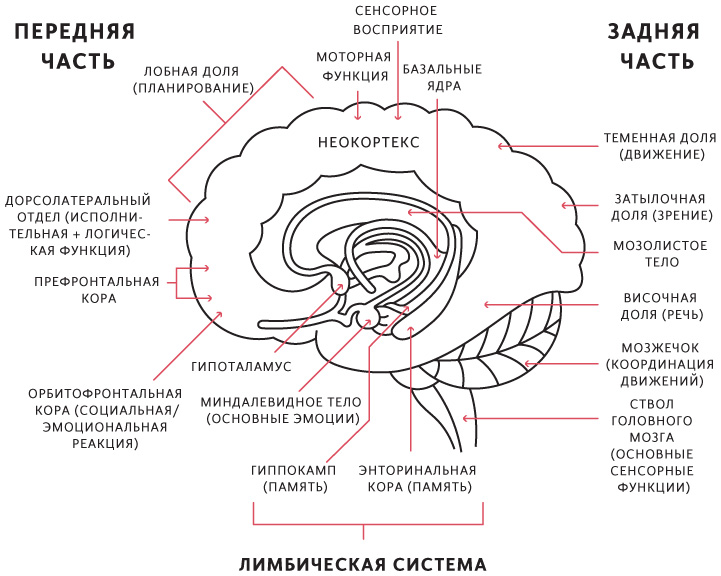
4.2. Осмысленные работа и отношения – это не только выбор человека, это запрограммировано генетически
Нейроученые, психологи, эволюционисты сходятся во мнении, что в человеке заложены потребность к социальному взаимодействию и способность испытывать от него радость. Когда эта потребность реализована, мозг человека развивается лучше. Осмысленные отношения, которые человек получает в результате социального взаимодействия, делают его счастливее, здоровее и продуктивнее. Без социального взаимодействия сложно говорить об эффективной работе. Это одна из определяющих характеристик человека[70].
Леонард Млодинов в своей книге Subliminal[71] пишет: «Мы считаем, что [от других видов] нас отличает IQ. На самом деле нашим отличительным качеством можно считать социальный IQ». Он указывает: человек обладает уникальной способностью понимать, что представляют собой другие люди, и прогнозировать их возможное поведение. Развитие этой способности «запрограммировано» в мозге человека: к возрасту четырех лет большинство детей умеют распознавать психологическое состояние других людей. Это понимание и взаимодействие определяют успешность человека как биологического вида. Млодинов объясняет: «Создание автомобиля, например, требует участия нескольких тысяч человек, которые обладают разными навыками, находятся в разных местах и выполняют разные задачи. Требуется добыть и обработать металл; получить стекло, резину, пластмассу и создать из них нужные детали, произвести батареи, радиаторы и множество других составляющих частей. Нужно разработать электронные и механические системы. И все это должно попасть в одну точку – на завод, где соберут автомобиль. Сегодня даже стаканчик кофе и рогалик, которыми вы завтракаете на бегу по дороге на работу, – это результат труда людей по всему миру».
В книге The Meaning of Human Existence[72] лауреат Пулитцеровской премии Эдвард Уилсон пишет, что в период между одним и двумя миллионами лет назад, когда предок человека находился на этапе развития где-то между шимпанзе и современным человеком разумным, его мозг эволюционировал так, чтобы поддерживать взаимодействие и сотрудничество, чтобы человек был способен к совместной охоте и другим видам деятельности. В результате этого центры памяти и мышления в префронтальной коре развились у него гораздо сильнее, чем у его предков-приматов. По мере того как группы становились более значимыми, чем отдельные особи, а мозг человека эволюционировал таким образом, чтобы делать крупные группы управляемыми, конкуренция между группами становилась более важной, чем между отдельными особями, а группы, участники которых взаимодействовали эффективнее, оказывались в более выгодном положении, чем те, в которых каждый был сам за себя. Это направление эволюционного развития привело к возникновению понятий альтруизма, морали, совести и чести. По словам Уилсона, человек постоянно подвержен действию двух противоположных сил, его породивших: «…индивидуального отбора, который побуждает к греху, и группового отбора, который стимулирует добродетель».
Какая из этих сил (собственный интерес или коллективный) берет верх в компании, определяет организационная культура, которая, в свою очередь, определяется людьми, ее формирующими. Очевидно, что коллективный интерес выражает то, что лучше для всех: не только для организации, но и для ее сотрудников. Как я покажу далее в части, посвященной принципам работы, вознаграждение от совместного труда над тем, чтобы сделать «пирог» больше, обычно бывает более значимым не только с позиции того, какой кусок «пирога» получит каждый из участников, но и с психологической точки зрения, поскольку это делает всех причастных счастливее и здоровее.
Зная, в каком направлении идет эволюция человеческого мозга, можно экстраполировать прошлые данные и прогнозировать ее дальнейшее развитие. Очевидно, что изначально человек был сосредоточен на самом себе и своих интересах, затем фокус постепенно смещался в сторону более абстрактного и универсального. Так, эволюция головного мозга, принципы которой я описал, дала нам (одним людям больше, чем другим) способность взглянуть на себя и свои обстоятельства с более высокого уровня, а в некоторых случаях поставить то целое, частью которого мы все стали, выше собственных интересов.
Несколько лет назад в беседе с далай-ламой я изложил ему позицию современных нейроученых, что мышление и чувства человека представляют собой результат его физиологии (иными словами, химических, электрических и биологических процессов головного мозга, работающего как механизм). Из этого следует, что духовность человека определяется этими физиологическими механизмами, а не внешними факторами. Я спросил далай-ламу, согласен ли он с этим. Без малейших колебаний он ответил: «Полностью!» И добавил, что на следующий день встречается с профессором в области нейронауки из Висконсинского университета, который уже многое рассказал ему по этой теме. Далай-лама пригласил меня присоединиться к этой встрече; к сожалению, я не смог участвовать. Я порекомендовал далай-ламе книгу (которую рекомендую и вам) The Spiritual Brain. Во время нашей беседы мы обсуждали сходство и различия между духовностью и религией. По его мнению, молитва и медитация оказывают на головной мозг похожий эффект, создавая чувство духовности (оно выражается в том, что человек поднимается над своими интересами и ощущает более крепкую связь с целым), при этом каждая религия накладывает собственные особенности на общее для всех людей чувство духовности. Если вас заинтересовала эта тема, я рекомендую вам прочитать книгу далай-ламы Beyond Religion[73].
Представляя себе будущее человеческого мышления, интересно проанализировать, как сам человек способен изменить механизмы работы мозга. Мы уже делаем это с помощью лекарств и технологий. Учитывая успехи генной инженерии, вполне можно ожидать, что однажды генетики научатся совмещать особенности структуры мозга разных биологических классов для достижения разных целей. Скажем, если вам нужно острое зрение, генетики при помощи нехитрых манипуляций сделают так, чтобы зрительные доли мозга стали у вас, как у птиц. Однако поскольку это дело далекого будущего, вернемся к практическому вопросу, как это может помочь нам лучше понимать себя и других.
4.3. Узнайте, какие битвы идут у вас в голове и как их контролировать, чтобы получить желаемое
В этой части мы рассмотрим разные варианты, как ваш мозг сражается за обретение контроля над вашим «я». Хотя далее я буду упоминать отдельные участки мозга, которые, по мнению нейрофизиологов, отвечают за конкретные типы мышления и эмоции, на самом деле физиология этих процессов имеет гораздо более сложный характер, и ученые лишь приблизились к ее пониманию.
a. Ваше сознание и подсознание находятся в состоянии постоянного противоборства. Ранее я уже упоминал о концепции двух «я» и объяснял, как высшее «я» приглядывает за низшим «я», чтобы то не саботировало достижение целей, установленных высшим «я». Хотя мне часто доводилось наблюдать действие этих двух «я» и у себя, и у других, только когда я узнал, почему они существуют, наконец полностью их понял.
Как у животных, многие факторы, стимулирующие процесс принятия решений у человека, имеют внутреннюю природу. Животное не решает лететь, охотиться, спать или сражаться в том смысле, как человек выбирает, что ему делать: оно просто следует инструкциям, которые получает от своего подсознания. Точно такие же инструкции от тех же самых структур мозга получает и человек, иногда это идет ему на благо, а иногда во вред. Подсознательные страхи и желания человека стимулируют его мотивацию и действия через эмоции, такие как любовь, страх, вдохновение. Это чистая физиология. Так, любовь – это не что иное, как коктейль из химических элементов (таких как окситоцин), которые синтезируются гипофизом.
Хотя я всегда считал, что логическое обсуждение – это лучший способ для людей найти истину, вооруженный новыми знаниями о работе мозга, я пришел к пониманию, что в нем существуют внушительные части, которые не делают то, что логично. Например, я понял, что, когда люди апеллируют к своим ощущениям – «У меня такое чувство, что вы меня обманули», – они передают сообщение, зародившееся в эмоциональной, подсознательной части мозга. Кроме того, я начал понимать, что, хотя некоторые части подсознания опасны своей животной природой, другие умнее и быстрее, чем сознание. Источником величайших моментов вдохновения зачастую становится именно подсознание. Человек испытывает творческое озарение, когда он расслаблен и не пытается проникнуть в ту часть мозга, которая за него отвечает (как правило, это неокортекс). Когда вы говорите: «Мне тут пришло в голову», вы можете уловить, как ваше подсознание что-то сообщает вашему сознанию. Если потренироваться, можно открыть этот канал коммуникации.
Многие люди опираются только на сознательную часть и не представляют преимущества связи с подсознанием. Они считают: чтобы добиться большего, нужно больше загружать свое сознание и работать усерднее. К сожалению, часто это приводит к противоположному результату. Это может прозвучать нелогично, но иногда лучший способ добиться прогресса – очистить голову. Зная это, теперь я понимаю, почему самые интересные мысли приходят ко мне, когда я расслаблен (например, когда принимаю душ), и как медитация помогает открыть эту связь. Поскольку это физиологический процесс, я фактически ощущаю, как откуда-то приходят творческие идеи и проникают в мое сознание. Невероятное чувство, когда понимаешь, как это работает.
Тем не менее хочу предупредить: когда я получаю мысли и инструкции от своего подсознания, то никогда не начинаю действовать немедленно; я развил у себя привычку анализировать их с позиции сознания и логики. Помимо того что это помогает мне выяснить, какие мысли действительно ценны и почему я реагирую на них тем или иным образом, эта привычка также помогает установить дальнейшую коммуникацию между моим сознанием и подсознанием. Полезно письменно фиксировать результаты этого процесса. Именно так и появились мои «Принципы».
Самое главное, что вам стоит вынести из этой главы: не пренебрегайте собственным подсознанием. Оно может навредить вам или помочь, а если вы будете осознанно анализировать информацию, которую от него получаете (не исключено, что в этом вам поможет кто-то из вашего окружения), у вас есть шанс стать счастливее и эффективнее.
b. Между чувствами и рациональным мышлением происходит непрекращающаяся борьба. Самая ожесточенная борьба идет в человеке между его чувствами (за которые преимущественно отвечает миндалевидное тело, действующее подсознательно) и рациональным мышлением (которое контролирует префронтальная кора, действующая сознательно). Если вы разберетесь в принципе этой борьбы, то поймете, почему настолько важно согласовывать информацию, которую вы получаете от сознания и подсознания.
Миндалевидное тело, или амигдала – характерная область мозга, имеющая форму миндалины и находящаяся в белом веществе височной доли полушария, – представляет собой одну из самых важных структур головного мозга. Она контролирует ваше поведение, хотя вы не отдаете себе в этом отчета. Как она работает? Когда что-то выводит вас из равновесия – это может быть звук, вид чего-то или просто предчувствие, – миндалевидное тело посылает организму сигнал приготовиться бить или бежать: сердцебиение ускоряется, кровяное давление повышается, дыхание учащается. Во время спора с кем-то вы часто можете наблюдать, что ваша физическая реакция на ситуацию похожа на ту, которую вы испытываете, когда чувствуете страх (например, учащение сердцебиения и мышечное напряжение). Осознав это, ваше сознание (префронтальная кора) может отказаться подчиняться полученным инструкциям. Обычно эта немедленная реакция на угрозу проявляется быстро и так же быстро исчезает, за исключением редких случаев, например когда человек испытывает синдром посттравматического стресса в результате какого-то события или серии событий. Зная принцип действия миндалевидного тела, вы будете отдавать себе отчет, что ваша спонтанная реакция может быть чрезмерной. Кроме того, вас может поддерживать мысль, что, какую бы психологическую боль вы ни испытывали, со временем она пройдет.
c. Научитесь соотносить свои чувства и рациональное мышление. Для большинства людей жизнь – это вечный бой между этими двумя частями мозга. В то время как реакция миндалевидного тела бывает спонтанной и быстро проходит, реакция префронтальной коры обычно более постепенна и устойчива. Главное различие между людьми, управляющими процессом собственного развития и добивающимися целей, и теми, кто к этому не способен, в том, что люди из первой категории анализируют, что именно вызывает у них реакцию миндалевидного тела.
d. Выбирайте привычки с умом. В арсенале мозга привычка представляет собой, вероятно, наиболее действенный инструмент. За привычки отвечают несколько скоплений серого вещества размером с мяч для гольфа, расположенных на уровне основания полушарий головного мозга, под названием базальные ганглии. Они контролируют действия человека, хотя он этого и не осознает.
Если вы делаете что-то периодически на протяжении определенного времени, у вас формируется привычка, которая начинает вас контролировать. К хорошим привычкам относятся те, благодаря которым вы получаете то, к чему стремится ваше высшее «я». Плохие привычки находятся под контролем вашего низшего «я» и препятствуют достижению целей высшего «я». Если вы понимаете принцип действия этого механизма, то можете выработать у себя набор хороших привычек. Например, вы можете развить навык ощущать потребность в занятиях спортом. Для выработки этой привычки потребуется приложить усилия. Во-первых, нужно осознать ее механизм. Привычка – это по большому счету инерция движения, стремление продолжать делать то, что вы уже делаете (или не делать, что вы не делаете). Согласно результатам исследований, если вы придерживаетесь определенного поведения в течение примерно 18 месяцев, у вас выработается привычка придерживаться его всю оставшуюся жизнь.
На протяжении долгого времени я не осознавал, в какой степени привычки контролируют поведение человека. Я столкнулся с этим явлением в Bridgewater, когда люди, которые теоретически соглашались с нашими принципами работы, не могли следовать им на практике. Кроме того, я наблюдал это у друзей и членов семьи, которые стремились к каким-то целям, но при этом действовали вопреки своим интересам.
А потом мне в руки попал бестселлер Чарльза Дахигга The Power of Habit[74], который открыл мне глаза. Рекомендую вам прочитать эту книгу, если вы хотите узнать больше, чем могу рассказать я. Дахигг высказал идею о трехступенчатой «петле формирования привычки». По Дахиггу, первый этап – это сигнал, некий «триггер, который переводит мозг в автоматический режим и указывает, какую привычку использовать». Второй этап – это рутина, «которая может быть физической, ментальной или эмоциональной». Наконец, финальный этап – вознаграждение, которое помогает мозгу понять, «стоит ли запоминать эту конкретную петлю на будущее». Повторение усиливает формирование этой петли, пока со временем оно не становится автоматическим. Эти ожидание и стремление представляют собой ключевые факторы процесса, который дрессировщики называют оперантным обусловливанием, то есть методики выработки условного рефлекса на основе позитивного подкрепления. Например, при дрессировке собаки, чтобы добиться от нее желаемого поведения, используется звук (обычно сигнал кликера), дрессировщик усиливает эффект, подкрепляя его более желанной наградой (как правило, едой), пока собака не начнет демонстрировать желаемое поведение, когда просто слышит сигнал кликера. По Дахиггу, для человека «вознаграждением» может быть все что угодно, «от еды или наркотиков, вызывающих физические ощущения, до эмоциональной отдачи, например чувства гордости от чужой похвалы или собственной оценки».
Привычки настраивают мозг на работу в режиме автопилота. В терминах нейронауки: когда функции базальных ганглий преобладают над функциями коры головного мозга, так что вы можете выполнять действия, даже не задумываясь о них.
После прочтения книги Дахигга я сделал вывод: если вы действительно хотите измениться, лучшее, что можно сделать, – это осознанно выбрать, какие привычки приобрести, а от каких избавиться. Для этого советую вам выполнить простое упражнение: выпишите три свои самые вредные привычки. Сделайте это прямо сейчас. Теперь выберите одну из этих привычек и твердо решите от нее избавиться. Вы можете это сделать? Этот шаг окажет огромное влияние на вашу жизнь. Если избавитесь от всех трех привычек, траектория вашей жизни радикально изменится. Или же вы можете выбрать привычки, которые хотели бы приобрести, и заняться их развитием.
Одна из моих самых ценных привычек – использовать боль как стимул для качественного анализа. Если вы приобретете аналогичную привычку, то будете понимать, что именно вызвало боль и что вы можете с этим сделать. Это самым благоприятным образом скажется на вашей эффективности.
e. Для формирования правильных привычек обучайте свое низшее «я» с добротой и настойчивостью. Я всегда думал, что высшее «я» должно сражаться с низшим «я» за обретение контроля, однако со временем осознал, что гораздо эффективнее обучать свою подсознательную, эмоциональную сторону, как вы учили бы ребенка тому поведению, которого от него ожидаете, – с добротой и настойчивостью, чтобы сформировать нужные привычки.
f. Узнайте, чем разнится мышление людей с доминирующим правым или левым полушарием. Головной мозг состоит не только из сознательной и подсознательной частей, в нем выделяют два полушария[75]. Возможно, вам приходилось слышать, что у одних людей доминирует правое полушарие, а у других – левое. Так вот, это не досужие разговоры: за доказательство этой идеи профессор Калифорнийского технологического института Роджер Сперри получил Нобелевскую премию по физиологии и медицине. Коротко это можно свести к двум тезисам.
1. Левое полушарие отвечает за линейный анализ, последовательное мышление, анализ деталей. Людей с доминирующим левым полушарием с сильными аналитическими навыками часто называют умными (в академическом смысле).
2. Правое полушарие отвечает за категорийное мышление, осознание отдельных тем, создание общей картины. Людей с доминирующим правым полушарием часто называют сообразительными (с точки зрения житейской мудрости).
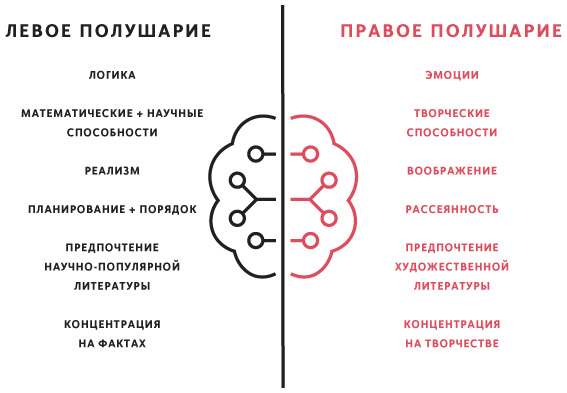
На рисунке выше перечислены качества, характерные для людей с доминирующим левым или правым полушарием.
Часто бывает так, что люди с одним доминирующим полушарием не могут понять тех, у кого доминирует другое. По нашему опыту, «левополушарные» считают «правополушарных» оторванными от реальности и мечтателями, тогда как люди с доминирующим правым полушарием называют тех, у кого главную роль играет левое, узколобыми и педантами. Я был свидетелем превосходных результатов совместной работы, когда люди понимали особенности мышления друг друга, признавали, что оба типа по-своему полезны, и, учитывая это, распределяли обязанности и задачи.
g. Узнайте, в какой степени мозг способен или не способен меняться. Это подводит нас к очень важному вопросу: может ли человек измениться?[76] Человек способен выучить новые факты и овладеть новыми навыками, но может ли он изменить образ мышления? Ответ: да.
Нейропластичность – процесс, позволяющий мозгу менять свои программируемые связи. На протяжении длительного времени ученые считали, что после того, как человек переступает определенный возрастной рубеж в детстве, большинство его нейронных связей утрачивают способность меняться. Однако, по результатам недавних исследований, множество упражнений – от физкультуры до медитации – способны привести к физическим и психологическим изменениям в мозге, что влияет на способность человека мыслить и формировать воспоминания. Ученые из Университета Висконсина изучили деятельность головного мозга буддийских монахов, которые в общей сложности провели более 10 тысяч часов, занимаясь медитацией, и отметили, что они генерируют гораздо более высокий уровень гамма-волн, которые обычно связаны с восприятием и решением проблем[77].
Это не означает, что мозг обладает неограниченной способностью к гибкости. Если вы предрасположены к определенному типу мышления, вы можете научиться действовать иначе и закрепить у себя этот навык так, что со временем он будет даваться вам все легче, при этом вам все равно не удастся изменить вашу предрасположенность. Аналогичным образом можно натренировать себя мыслить более творчески, но, если вам не дано это от природы, в какой-то момент вы достигнете предела. Это реальность, а потому стоит принять ее и научиться с ней работать. Есть разные компенсирующие техники: например, творческий неорганизованный человек, постоянно теряющий счет времени, может развить у себя привычку пользоваться таймером; человек, который знает, что ему не дается определенный тип мышления, может научиться полагаться на мнение других людей, компетентных в конкретных вопросах. Оптимальный способ меняться – это выполнять умственные упражнения. Как и с физическими, это потребует определенных усилий, пока вы не попадете в петлю формирования привычки, о которой я писал раньше, и не начнете соединять вознаграждение и действие, перенастраивая мозг так, чтобы он полюбил обучение и полезные изменения.
Помните, что признание ваших слабостей идет вразрез с инстинктами той части вашего мозга, которая крепко держится за иллюзию, что вы – само совершенство. Вам придется приложить усилия для выполнения действий, которые ослабят вашу автоматическую защитную реакцию, и действовать в условиях, которые будут способствовать развитию непредубежденности.
Как вы увидите в части, посвященной принципам работы, я создал набор инструментов и техник, помогающих преодолеть сопротивление как на индивидуальном уровне, так и в масштабе организации. Я обнаружил, что в большинстве случаев не стоит ожидать, что вы или кто-то другой должны измениться, – эффективнее признать собственные слабости и создать четкие защитные механизмы на их пути. Обычно это гораздо более быстрый и продуктивный путь к успеху.
4.4. Разберитесь, что представляете собой вы и другие
Из-за предубеждений, свойственных всем без исключения, наша оценка себя (и других) не может претендовать на полную объективность. Более надежны психометрические оценки. Этот метод помогает понять, как мыслят люди, и активно используется при приеме на работу, да и потом тоже. Хотя метод психометрической оценки не может полностью заменить живое человеческое общение и анализ истории кандидатов, он гораздо более эффективен, чем традиционные методы собеседования и отбора. Если бы мне пришлось выбирать между методом психометрической оценки или традиционным собеседованием при приеме на работу, чтобы понять, что представляет собой соискатель, я бы выбрал оценку. К счастью, нам не приходится делать такой выбор.
К числу четырех основных методов оценки, которые мы применяем в компании, относятся: опросник по типологии личности Майерс – Бриггс (MBTI), оценка личностных качеств на рабочем месте (Workplace Personality Inventory), профиль командных ролей (Team Dimensions Profile), теория стратифицированных систем (Stratified Systems Theory)[78]. При этом мы не перестаем экспериментировать (например, пробуем пятифакторный личностный опросник «Большая пятерка»), так что комплекс наших методов оценки определенно будет меняться. Тем не менее, каким бы ни был этот комплекс, все эти методы отражают предпочтительный для каждого сотрудника образ мышления и действий. Кроме того, они предлагают нам новые характеристики и терминологию, которые проясняют и усиливают те черты, которые выделили мы сами. На некоторых из них я подробнее остановлюсь далее. Они основаны на моем опыте и знаниях и зачастую идут вразрез с официальными описаниями, которые приняты в компаниях, специализирующихся на оценке[79].
a. Интроверсия vs. экстраверсия. Интроверт фокусируется на своем внутреннем мире и черпает энергию из собственных идей, воспоминаний и опыта, в то время как для экстраверта источником энергии становится общение с другими людьми. Эти характеристики непосредственно связаны с различиями в стилях коммуникации. Если у вас есть друг, которому обязательно нужно высказывать свои идеи окружающим (и у которого могут даже возникнуть сложности с обдумыванием идей, когда рядом никого нет), скорее всего, он типичный экстраверт. Для интровертов подобные разговоры обычно бывают настоящим мучением: они предпочитают обдумывать все самостоятельно и только после этого делиться результатом. Очевидно, что каждому сотруднику нужно помочь наладить коммуникацию максимально комфортным для него способом. Так, интроверты часто предпочитают письменную коммуникацию (электронная почта) выступлению на совещаниях и в меньшей мере готовы высказывать критические замечания.
b. Интуиция vs. ощущение. Одни люди наблюдают общую картину (лес), а другие – детали (деревья). В типологии Майерс – Бриггс эти характеристики лучше всего отображаются по шкале «интуиция» – «ощущение». Понять, к какому типу относится человек, можно, понаблюдав, на чем он фокусирует внимание. Например, при чтении человек, ориентированный на ощущения, – сенсорик – концентрируется на деталях, и его могут выбить из колеи обычные опечатки, которые интуит даже не заметит, так как его внимание в первую очередь сосредоточено на контексте, а затем уже на деталях. Очевидно, что лучше, если юридическими документами (где важна малейшая деталь) в вашей компании будет заниматься сотрудник с развитой сенсорикой.
c. Мышление vs. чувства. Некоторые люди принимают решения на основе логического анализа объективных фактов, учитывая все известные обстоятельства, имеющие отношение к ситуации, и пытаются рационально определить оптимальный способ действий. Такой подход свидетельствует о предрасположенности к рациональному мышлению, и именно этого мы ждем, скажем, от врача, который ставит диагноз пациенту. Другие люди – сосредоточенные на чувствах – концентрируются на гармонии между людьми. Им больше подходят профессиональные роли, требующие эмпатии, межличностного контакта, выстраивания отношений, например специалисты по персоналу и сотрудники службы поддержки клиентов. До того как мы ввели методики оценки, выявляющие эти различия, общение между представителями этих двух категорий было крайне напряженным. Сейчас мы спокойно реагируем, когда сталкиваемся с такими различиями, потому что знаем, в чем они заключаются, и они для нас очевидны.
d. Планирование vs. восприятие. Некоторые люди предпочитают планировать и заранее упорядочивать информацию, в то время как других устраивает спонтанность и гибкость[80]. Люди, склонные к планированию, вырабатывают способ действий и придерживаются его, в то время как иррационалы предпочитают действовать без детальной предварительной подготовки, больше ориентируясь по обстоятельствам. Иррационалы идут от внешнего к внутреннему: они смотрят, что происходит, и пытаются понять причины и то, как им реагировать. Кроме того, они видят много возможностей, которые они сравнивают и из которых выбирают; зачастую этих возможностей бывает настолько много, что это ставит в тупик. Склонные к планированию люди действуют наоборот – от внутреннего к внешнему: сначала они решают, чего хотят добиться, а затем думают, как должны развиваться события. Представителям этих двух категорий сложно понять друг друга. Иррационалы всегда видят новое и часто меняют направление движения. Это вызывает дискомфорт у тех, кто привык планировать, потому что в процессе принятия решений они опираются на прецеденты и полагают, что если раньше что-то делалось определенным способом, то так же следует поступать и впредь. Склонные к планированию люди вызывают дискомфорт у иррационалов, так как кажутся им косными и медленно адаптирующимися.
e. Созидатели vs. улучшатели vs. продвигатели vs. исполнители vs. адапторы. Определив сильные стороны и предпочтения сотрудников, которые заставляют их вести себя определенным образом, можно предложить им те профессиональные роли, в которых они будут наиболее эффективны. В Bridgewater мы пользуемся тестом для определения профилей командных ролей (Team Dimensions Profile), чтобы подобрать сотрудникам их профессиональные роли. В результате мы выделяем пять типов: созидатели, улучшатели, продвигатели, исполнители, адапторы.
• «Созидатели» генерируют новые идеи и оригинальные концепции, предпочитают неструктурированную и абстрактную деятельность, инновации и нестандартные практики.
• «Продвигатели» доносят эти новые идеи и продвигают их. Они получают удовольствие от отношений и управляют субъективными факторами. Они замечательно стимулируют рабочий энтузиазм.
• «Улучшатели» тестируют идеи. Они анализируют проекты в поисках недостатков и устраняют их с позиции объективного анализа. Им нравятся факты и теории, а также системный подход.
• «Исполнители» обеспечивают деятельность и достижение целей. Их интересуют детали и результат.
• «Адапторы» соединяют в себе все четыре типа. Они способны адаптировать свой образ действий под конкретные потребности и рассматривать проблему с разных точек зрения.
Критическая оценка результатов каждого теста оказывает влияние на формирование собственного представления о людях. Например, когда результаты сотрудника по опроснику MBTI отражают высокие показатели по шкале S (концентрация на деталях) и J (склонность к планированию), а при определении профиля командных ролей он попадает в категорию «исполнитель», с высокой долей вероятности этот сотрудник окажется скрупулезным и внимательным к деталям и вряд ли будет отличаться нестандартным мышлением. Это означает, что он эффективнее проявит себя при выполнении четко поставленных конкретных задач.
f. Концентрация на задачах vs. концентрация на целях. Одни люди фокусируют внимание на повседневных задачах, а другие – на долгосрочных целях и том, как их достичь. По моему мнению, эта разница сильно напоминает разницу между людьми, которые ориентированы на интуитивную или материальную информацию (интуиция vs. ощущение). Люди, которые концентрируются на целях и способны к визуализации, лучше видят общую долгосрочную картину, внедряют значимые изменения и прогнозируют будущие события. Люди, ориентированные на достижение цели, способны отстраниться от повседневной рутины и проанализировать, что и как они делают. Они эффективнее всего справляются с созданием чего-то нового (организации, проекта и так далее) и с управлением организацией, в которой постоянно происходят изменения. Как правило, из них получаются самые дальновидные руководители благодаря их способности оценивать ситуацию в перспективе и учитывать всю полноту картины.
В противоположность им люди, ориентированные на повседневные задачи, лучше справляются с управлением в ситуациях, когда не происходит значительных изменений, или которые требуют надежности процессов. Такие люди успешно внедряют последовательные изменения на основе того, что уже существует. Они стараются поддерживать настоящее положение дел, а разного рода неожиданности выбивают их из колеи. Как правило, это более надежные сотрудники. Хотя они могут показаться более зашоренными, чем те, кто ориентирован на перспективу, они играют в компании не менее важную роль. Мне никогда не удалось бы опубликовать эту книгу или добиться чего-то стоящего, если бы рядом со мной не было людей, думающих о деталях.
g. Оценка личностных качеств на рабочем месте (Workplace Personality Inventory). Это еще один метод оценки, который мы применяем в нашей компании, и основан он на данных Министерства труда США. Он прогнозирует поведение сотрудников, соответствие занимаемой позиции и уровень удовлетворенности работой на основе оценки определенных ключевых личностных характеристик/качеств, включая настойчивость, независимость, стрессоустойчивость и аналитическое мышление. Этот метод оценки помогает нам понять ценности сотрудников и то, каким может быть их выбор между этими ценностями. Например, сотрудник с низким показателем по ориентации на достижения и с высоким показателем по заботе о других вряд ли будет готов активно отстаивать свою точку зрения, чтобы добиться желаемого для него результата. Точно так же сотрудник с низким показателем по следованию правилам скорее склонен мыслить независимо.
Как выяснилось, можно адекватно описать личность человека, использовав от 25 до 50 характеристик. Каждая из этих характеристик имеет различную степень интенсивности (как полутона у цвета). Если вам известны эти характеристики и вы правильно их соотнесли, вы получите относительно полный психологический портрет личности. Наша цель в том, чтобы добиться именно этого на основе результатов оценки и другой информации. Мы предпочитаем делать это в сотрудничестве с человеком, чей психологический портрет составляем, потому что это гарантирует более точный результат, кроме того, самому сотруднику полезно взглянуть на себя объективно.
Определенные характеристики часто встречаются в совокупности и создают узнаваемые архетипы. Если задуматься, вероятно, вы вспомните с десяток архетипов характеров людей, которых вы то и дело встречаете на протяжении жизни: оторванный от реальности Художник; педантичный Перфекционист; Крушитель, идущий к своей цели напролом и сметающий все препятствия на пути; Визионер, который черпает удивительные идеи из воздуха. Со временем я даже сформировал собственный список, в который вошли Лидер, Болтун, Настройщик, Непредубежденный ученик, Продвигатель, Созидатель, Пастух кошек (человек, пытающийся управлять неконтролируемыми факторами), Сплетник, Преданный исполнитель, Мудрый судья и другие.
Уточню, что архетипы обычно менее полезны, чем полноценные психологические портреты, созданные на основе нескольких методов оценки. Архетипы не отличаются точностью, они больше похожи на упрощенные шаржи, но могут оказаться полезны при формировании команд. Люди всегда более сложны и многогранны, чем описывающий их архетип, кроме того, один человек может подходить под описание нескольких архетипов. Например, непрактичный Художник может одновременно быть и Перфекционистом, и Крушителем. Я не буду подробно останавливаться на каждом архетипе, за исключением того, который больше всего соответствует мне, – Лидер.
h. Лидер способен проделать путь от визуализации до воплощения в жизнь. Я много писал об этом типе в первой части книги. Это люди, которые предлагают уникальные ценные идеи и последовательно работают над их реализацией, зачастую преодолевая сомнения и сопротивление окружающих. Они способны видеть всю картину целиком и внимательны к деталям. Их личность складывается из таких качеств, как концептуальность + практичность + настойчивость.
Этих людей объединяют такие черты, как неуемное любопытство и непреодолимая потребность дойти до сути, независимость мышления, граничащая с бунтарством, стремление мыслить масштабно и нестандартно, практичность и упорство в преодолении любых препятствий на пути к цели, а также объективная оценка слабых и сильных сторон людей для эффективного управления командами. Возможно, даже более важно, что они способны одновременно рассматривать противоположные точки зрения и оценивать их с разных сторон. Им нравится обсуждать разные темы с другими очень умными людьми, и они способны легко переходить от масштабной картины к мелким деталям, считая оба уровня одинаково значимыми.
Такие люди встречаются в жизни крайне редко. Но необходимо отметить, что они никогда не добились бы успеха, если бы бок о бок с ними не работали другие люди, которые по своей природе лучше справляются с иными задачами и чей образ мышления не менее важен.
«Познать самого себя» – это первый шаг осознанной жизни любого человека. Неважно, чем вы занимаетесь в жизни, если вы делаете то, что совпадает с вашим внутренним миром и вашими устремлениями. Мне довелось общаться и с самыми богатыми и влиятельными людьми, и с самыми бедными и неблагополучными, и я уверяю вас: если базовые потребности человека удовлетворены, нет корреляции между уровнем счастья и традиционными маркерами успеха. Жизнь простого плотника, который получает удовольствие от работы с деревом, может быть не менее (или даже более) счастливой, чем жизнь президента США. Я хочу донести до вас единственную мысль: у каждого человека есть сильные и слабые стороны, и он играет свою важную роль. Все, что создано природой, имеет цель. Смелость, в которой человек нуждается больше всего, заключается не в том, чтобы взять верх над остальными, а в том, чтобы быть самим собой, независимо от того, кем вас хотят видеть другие.
4.5. Ключ к успеху в любом деле – правильные люди на своих местах
Идет речь о личной жизни или о работе, лучше всего, когда вместе собираются люди, дополняющие друг друга, и формируется оптимальный набор необходимых качеств для стоящей перед ними задачи.
a. Управляйте собой и другими для достижения цели. Самая серьезная задача будет состоять в том, чтобы ваше рациональное высшее «я» научилось управлять эмоциональным низшим «я». Лучший способ для этого – осознанно сформировать у себя привычку автоматически делать те вещи, которые для вас полезны. При управлении другими первая аналогия, которая просится на ум, – это дирижирование оркестром. Человек, возглавляющий процесс, – дирижер, не исполнитель (то есть он не играет ни на одном музыкальном инструменте, хотя многое о них знает), он визуализирует результат и следит, чтобы каждый участник процесса вносил свой вклад в достижение этого результата. Дирижер должен быть уверен, что каждый музыкант оркестра знает, в чем он силен, а в чем не очень и в чем заключается его задача. Каждый музыкант должен не только демонстрировать блестящий личный результат, но и взаимодействовать с другими, чтобы оркестр стал больше чем просто сумма составляющих. Одна из самых сложных и неблагодарных функций дирижера – избавляться от людей, которые не могут показать хороший личный результат или слаженную работу. Самое важное: дирижер следит за тем, чтобы произведение исполнялось именно так, как он его слышит у себя в голове. «Это должно звучать так, – говорит дирижер и добивается, чтобы так и было. – Басы создают структуру. В этих местах связки. Таким должен быть общий настрой». У каждой части оркестра есть собственные лидеры – концертмейстер, первые скрипки, – которые также помогают воплотить замысел композитора и дирижера.
Этот подход очень мне помог. Например, когда мы занимались проектом по систематизации облигаций, благодаря ему мы четко видели разницу между тем, что у нас было и к чему мы стремились. Хотя Боб был для меня отличным интеллектуальным партнером в масштабном понимании той проблемы, которую мы хотели решить, он был гораздо слабее в визуализации процесса, который должен был привести нас к решению. Кроме того, в его окружении не хватало правильных людей. Он работал с теми, кто был похож на него. Так что его главный заместитель в проекте отлично генерировал идеи, но не был в состоянии спланировать процесс их реализации. Результаты оценки его типа личности подтверждали, что он мог с успехом следовать в любом направлении, которое предлагал Боб, но у него самого не было четкого, независимого мнения, необходимого, чтобы не давать Бобу сойти с пути.
После того как несколько раундов не принесли существенного прогресса, мы применили наши новые инструменты для оценки сотрудников, занятых в проекте. Мы подтолкнули Боба к решению о смене заместителя. Его новый зам эффективно справлялся с управлением на разных уровнях: как на концептуальном, так и на уровне отдельных, более мелких проектов, необходимых, чтобы воплотить масштабную идею в жизнь. По сравнению с предыдущим заместителем новый обладал независимым, системным мышлением, необходимым, чтобы четко представлять, что делать с масштабными идеями Боба. Вместе с новым заместителем появились новые уровни поддержки, включая менеджера проекта, которого меньше интересовали концепции, а больше занимали детали конкретных задач и сроки их исполнения. Когда мы изучили «бейсбольные карточки» новых членов команды, стало очевидно, что к их сильным сторонам относятся планирование, конкретность, стремление доводить начатое до конца. Именно это были слабые места Боба. С новой командой дело быстро пошло на лад. Нам удалось реализовать этот проект только благодаря тому, что мы смогли понять, какой «набор Lego» нам требуется собрать для достижения цели, а затем сумели найти недостающие элементы.
Этот проект стал одним из многих, которым пошел на пользу наш открытый подход к пониманию личностных особенностей каждого сотрудника. Должен отметить, что я лишь прошелся по верхам того, что необходимо знать о том, как работает наш мозг.
В следующей главе я резюмирую все, что вы уже прочитали о процессе принятия решений, и выведу основные тезисы. Одни решения вы должны принимать самостоятельно, а другие – делегировать более компетентным людям. Ключ к успеху (чем бы вы ни занимались) в том, чтобы научиться различать эти решения.
5. Научитесь эффективно принимать решения
* * *
По роду своей профессиональной деятельности мне приходится постоянно принимать решения. Всю жизнь я пытаюсь понять, как сделать этот процесс более эффективным, и непрерывно ищу правила и системы, которые бы повысили шансы, что я окажусь прав, и позволили мне получить больше, к чему бы я ни стремился.
Один из самых важных выводов, которые я сделал, заключается в том, что большинство процессов, составляющих повседневное принятие решений, происходят на подсознательном уровне и они сложнее, чем обычно представляется. Например, вспомните, как, управляя автомобилем, вы выбираете и сохраняете безопасную дистанцию до едущей впереди машины. Опишите этот процесс настолько подробно, чтобы человек, который никогда не садился за руль, смог бы сделать это так же хорошо, как вы, или чтобы на основе вашего описания был составлен компьютерный алгоритм для управления беспилотным автомобилем. Готов поспорить, у вас не получится.
А теперь представьте, что вам нужно принимать эффективные решения системно и постоянно и уметь описать все процессы настолько ясно и точно, чтобы любой человек в аналогичных обстоятельствах смог принимать такие же качественные решения. Это то, к чему я стремлюсь и что кажется мне бесценным, даже при несовершенном механизме.
Конечно, не существует единственного лучшего способа принимать решения, но есть некоторые универсальные правила. И вот первое из них.
5.1. Наибольший вред эффективному процессу принятия решений наносят эмоции; процесс принятия решений состоит из двух этапов: сначала анализ, потом решение
Предшествовать принятию решения должны сбор и анализ информации. Как уже говорилось в главе 1, мозг человека получает и хранит разные типы информации в подсознании, механической памяти и привычках. При этом не так важен способ получения информации и место ее хранения. Главное, что стоит помнить, – эти знания определяют картину мира человека, которая влияет на все принимаемые им решения. Поэтому всегда полезно придерживаться принципа абсолютной непредубежденности и прислушиваться к мнению компетентных людей при сборе и анализе информации. У многих это вызывает психологические сложности, в результате чего они сами лишают себя возможности повысить качество своих решений. Периодически напоминайте себе, что хуже не будет, если вы хотя бы выслушаете противоположную точку зрения.
Принятие решения – это процесс выбора, какую информацию вы будете принимать в расчет (относительно конкретной ситуации и в более широком контексте), и определение на ее основе плана действий. Необходимо рассмотреть несколько долгосрочных сценариев, чтобы визуализировать, как получить желаемый результат. Чтобы сделать это качественно, нужно взвесить не только прямые последствия, но и более отдаленные и принять решение с позиции долгосрочного результата.
Неспособность учитывать последствия второго и третьего порядка стала причиной многих плохих решений, и она особенно опасна, когда первый и не лучший вариант закрепляет уже имеющуюся предвзятость. Никогда не хватайтесь за первый доступный вариант, каким бы замечательным он ни казался, пока не изучите проблему. Чтобы избежать этой ловушки, я задаю себе два вопроса: изучаю ли я проблему? Достаточно ли я изучил ее, чтобы принять решение? Со временем вы научитесь автоматически собирать всю относящуюся к теме информацию, и это поможет вам избегать главной ошибки при принятии решений: сначала подсознательно принимать его, а затем выбирать только те факты, которые поддерживают это решение. Однако что значит хорошо изучить проблему?
ХОРОШО ИЗУЧИТЬ ПРОБЛЕМУ
Для меня составление точной картины реальности сводится к двум аспектам: способности к синтезу информации и к действиям на разных уровнях.
Синтез – процесс объединения множества данных в достоверную, структурированную картину. Способность к синтезу информации определяет качество процесса принятия решений. Именно поэтому всегда полезно выслушивать мнение людей, у которых хорошо развита способность к синтезу информации. Это повышает вероятность более качественного структурирования данных, даже если вы считаете, что уже успешно с этим справились. Ни один разумный человек не откажется выслушать мнение эксперта, поскольку опасается совершить ошибку.
Для качественного синтеза информации следует: 1) составить объективное представление о ситуации; 2) спрогнозировать долгосрочное развитие ситуации; 3) эффективно действовать на разных уровнях.
5.2. Составьте объективное представление о ситуации
Ежедневно вы сталкиваетесь с бесчисленным множеством разных ситуаций. Назовем их точками. Чтобы действовать эффективно, вам нужно понимать, какие из них важны, а какие нет. Некоторые люди собирают и хранят все наблюдения и мнения вместо того, чтобы оставлять только то, что им нужно. Они тратят много времени на беспокойство о пустяках.
В некоторых случаях мелочи могут быть важны: например, этот едва слышный стук при движении автомобиля может возникнуть из-за какой-то незакрепленной детали, а может предупреждать, что у вас вот-вот порвется ремень ГРМ. Главное, обладать видением более высокого уровня, чтобы быстро и точно оценить реальные риски, не увязнув при этом в деталях.
a. Одно из самых важных решений, которое вы можете принять, – к кому обратиться за информацией. Это должны быть хорошо осведомленные и компетентные люди. Узнайте, кто лучше всех разбирается в вопросе, на который вы хотите ответить, и обратитесь к ним. Слушать некомпетентных людей хуже, чем вообще не иметь ответа.
b. Не верьте всему, что слышите. Сколько людей, столько и мнений, и каждый считает долгом поделиться своим. Многие делают это так, словно транслируют истину в последней инстанции. Не совершайте ошибку: не принимайте мнения за факты.
c. Вблизи все кажется больше. Это касается всех аспектов жизни: происходящее сейчас воспринимается как нечто гораздо более важное, чем когда мы анализируем его в ретроспективе. Именно поэтому иногда бывает полезно сделать шаг назад, чтобы посмотреть на ситуацию по-другому и, возможно, на некоторое время отложить принятие решения.
d. Новинки переоценены в сравнении с классикой. Например, при выборе фильма или книги вы остановитесь на проверенной классике или на разрекламированной новинке? По моему мнению, лучше отдать предпочтение великому, чем новому.
e. Не преувеличивайте важность точек. Точка – это не более чем определенная информация в конкретный момент. Учитывайте это при составлении общей картины. Точно так же как вы должны отделять важное от мелочей и нынешнюю ситуацию от общих закономерностей, вы должны осознавать, что можете извлечь из конкретной информации, не преувеличивая ее значение.
5.3. Составьте представление о долгосрочном развитии ситуации
Чтобы понять, как точки соединяются во времени, нужно собрать, проанализировать и выделить разные типы информации, что довольно непросто. Возьмем обычный день и рассмотрим его с точки зрения восьми результатов. Некоторые из них положительные, некоторые отрицательные.
Представим этот день, как показано на рисунке ниже: каждый тип события обозначен какой-то буквой, а качество результата отражено в расположении по шкале от «хорошо» до «плохо».
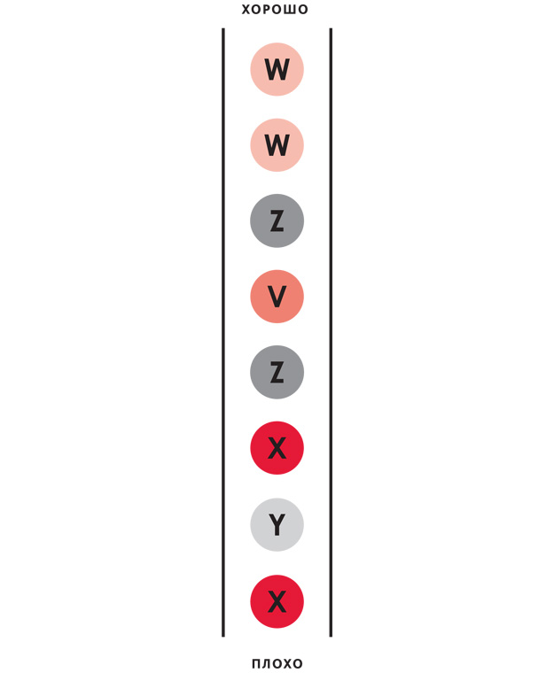
Чтобы посмотреть на день таким образом, нужно выделить результаты в категории по типу (обозначены буквами) и качеству (расположение по шкале: чем выше, тем лучше), что потребует более общей оценки каждого события. Чтобы сделать пример более конкретным, представьте, что вы владелец магазина по продаже мороженого. W – это продажи. X обозначает степень удовлетворенности покупателей. Z – уровень вовлеченности персонала и так далее. Не забывайте, что наш пример относительно простой: всего восемь результатов за день.
Глядя на рисунок, вы можете сделать вывод, что продажи в этот день шли хорошо (так как W на самом верху шкалы), но покупатели были не очень довольны (судя по положению X). Можно предположить почему: возможно, из-за наплыва покупателей объем продаж был высоким, но возникла длинная очередь.
А теперь давайте посмотрим, как выглядит месяц (учтены только рабочие дни). Сбивает с толку, правда?

На данном рисунке представлено только событие Х; очевидно, что качество результата повышается.
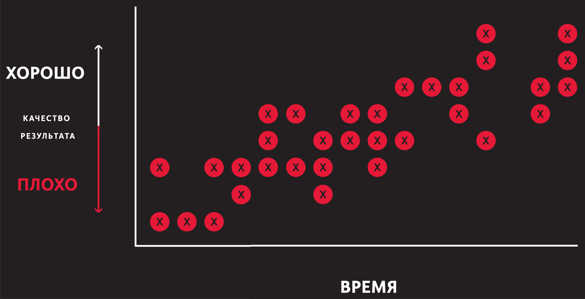
Люди, от природы способные успешно выделять подобные закономерности событий, встречаются нечасто. Однако, как и большинство способностей, умение видеть долгосрочное развитие ситуации можно развить. Чем активнее вы будете практиковать этот навык, тем легче он будет вам даваться. Ваши шансы на успех значительно повысятся, если вы будете придерживаться следующих принципов.
a. Одновременно оценивайте скорость изменений, уровень, на котором находится цель, и соотношение между ними. При определении приемлемой скорости совершенствования чего-либо важно правильно оценить соотношение между уровнем цели и скоростью изменений. Я часто наблюдаю за тем, как это соотношение не принимают во внимание. В этих случаях обычно говорят: «Ситуация улучшается», но не указывают, насколько ниже уровня цели находится результат, а также с достаточной ли скоростью происходят изменения. Если человек, получавший при тестировании 30 или 40 баллов, за несколько месяцев добьется 50 баллов, конечно, можно сказать, что это улучшение, но в то же время это по-прежнему неадекватный результат. Все, что в вашей жизни важно, должно находиться на траектории, чтобы подняться выше лишь приемлемого уровня, и стремиться к отличному результату с разумной скоростью. График ниже показывает, как соединяются между собой точки в долгосрочной перспективе. Траектория А позволяет в разумное время добиться приемлемого результата, траектория В – нет. Чтобы эффективно принимать решения, вы должны понимать, в каком из этих двух вариантов реальности вы действуете.
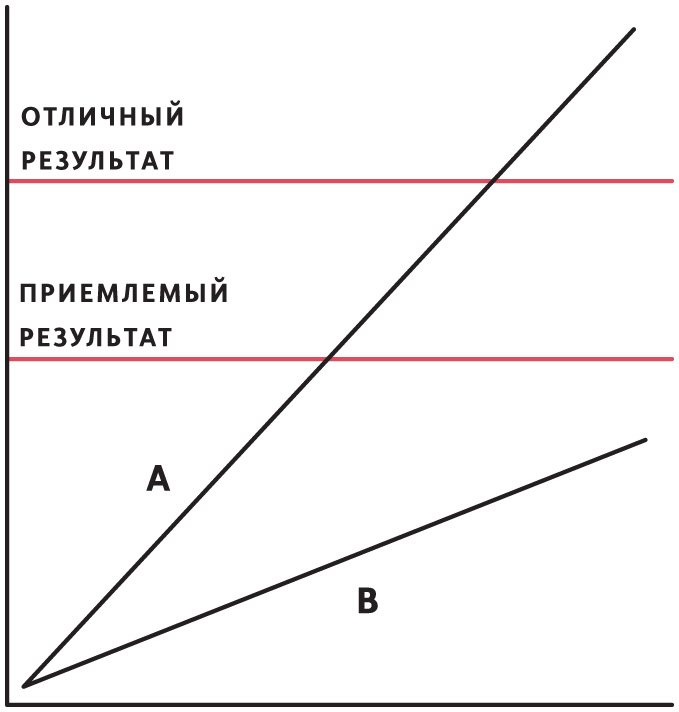
b. Позвольте себе быть не совсем точным. Научитесь пользоваться общими концепциями и приблизительными значениями. Поскольку наша образовательная система зациклена на точности, искусство эффективного использования приблизительных значений сильно недооценено. Это мешает концептуальному мышлению. Так, если попросить умножить 38 на 12, большинство людей будут долго и мучительно высчитывать точный ответ, вместо того чтобы округлить 38 до 40, а 12 до 10 и быстро прикинуть, что ответ где-то около 400. Или наш пример с магазином мороженого: представьте, насколько полезнее быстро рассмотреть примерное взаимоотношение между точками, вместо того чтобы изучать все подробно. Глупо тратить на это время, но большинство людей поступают именно так. Чтобы принимать эффективные решения, достаточно понимать большинство вещей на общем уровне. Каждый раз, когда в ответ на общее концептуальное утверждение я слышу: «Это не совсем так», мне кажется, что за этим последует обсуждение всевозможных исключений, за которыми мы потеряем из виду само правило. Чтобы помочь сотрудникам Bridgewater избежать этой ловушки, один из наших молодых сотрудников сформулировал тезис, который я часто повторяю: «Когда вы спрашиваете кого-то, истинно ли что-то, и вам отвечают, что это не совсем так, может быть, это и не совсем так, но истинно по большому счету».
c. Руководствуйтесь правилом 80/20 и отдавайте себе отчет, что составляет 20 %. Согласно правилу 80/20, 80 % результата вам приносят 20 % информации или усилий. (Кроме того, также верно, что вы, вероятно, тратите 80 % усилий на получение окончательных 20 % результата.) Знание этого правила поможет вам не увязнуть в ненужных деталях после того, как вы получили информацию, необходимую вам для принятия решения.
d. Не будьте перфекционистом. Перфекционисты тратят слишком много времени на незначительные детали, упуская из-за этого действительно важные вещи. При принятии решения, как правило, бывают важны от 5 до 10 факторов. Вам стоит хорошо это усвоить, предельная полезность от изучения даже важных вещей после определенного момента весьма ограничена.
5.4. Эффективно действуйте на разных уровнях.
Реальность многопланова, и каждый из ее уровней обеспечивает свою, по-своему ценную перспективу. Когда вы синтезируете информацию и принимаете решения, важно учитывать все уровни и знать, как между ними переключаться. Предположим, вы рассматриваете свой родной город в приложении Google Maps. Если вы приблизите изображение настолько, чтобы разглядеть здания, вы не увидите, что окружает город, а это может быть важной информацией. Возможно, он стоит на берегу водоема. При слишком сильном приближении вы не поймете, что это за водоем – река, озеро или океан. Вам нужно выбрать уровень, соответствующий решению, которое вы принимаете.
Мы постоянно видим вещи на разных уровнях и переключаемся между ними – сознательно или нет, эффективно или не вполне, идет ли речь о физических объектах, идеях или целях. Например, вы можете действовать на разных уровнях и переключаться со своих ценностей на то, что вы делаете в повседневной жизни, чтобы воплотить их в реальность. Схематически это выглядит следующим образом.
1. Общая картина самого высокого уровня: я хочу, чтобы у меня была серьезная работа, требующая обширных знаний.
1.1. Второстепенная концепция: я хочу стать врачом.
Подпункт: мне нужно поступить в медицинский институт.
Подподпункт: мне нужны высокие баллы по точным наукам.
Подподподпункт: сегодня вечером мне нужно остаться дома и заниматься.
Чтобы проследить, насколько хорошо у вас развит этот навык, обратите внимание на свою речь. Человек склонен переключаться между уровнями во время разговора.
ХОРОШО

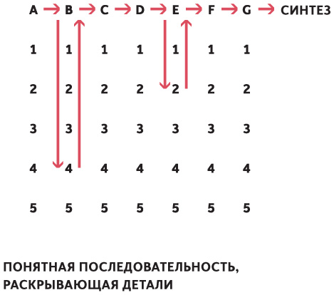
ПЛОХО
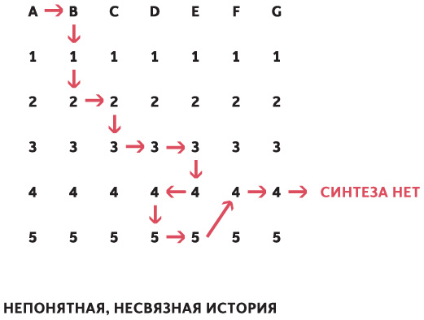
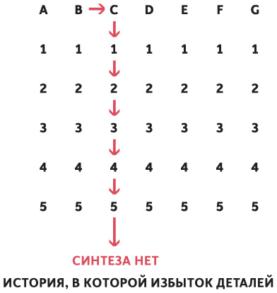
a. Используйте условные понятия «над чертой» и «под чертой», чтобы определить уровень, на котором ведется разговор. Разговор «над чертой» касается главных пунктов, в то время как разговор «под чертой» фокусируется на подпунктах. Когда рассуждения становятся путаными, зачастую это происходит из-за того, что говорящий слишком увлекся деталями «под чертой» и не связывает их с основными уровнями. Когда разговор ведется «над чертой», он должен быть упорядоченным и логичным и иметь завершение, а также опускаться ниже черты только в случае необходимости проиллюстрировать какой-то из основных пунктов.
b. Решение должно приниматься на соответствующем уровне, но быть согласованным на всех. Например, если вы хотите вести здоровый образ жизни, вам не следует начинать день с 12 сосисок и кружки пива на завтрак. Иными словами, нужно постоянно согласовывать между собой информацию, полученную на разных уровнях, чтобы располагать полной картиной происходящего. Как и в случае с синтезом информации, у одних людей этот навык лучше развит от природы, чем у других. Однако научиться ему в той или иной мере может каждый. Для этого нужно…
1. Помнить, что у любой темы есть несколько уровней.
2. Отдавать себе отчет, на каком уровне вы изучаете конкретную тему.
3. Осознанно переключаться между уровнями, вместо того чтобы считать темы универсальным скоплением фактов, которые можно просматривать в любом порядке.
4. Представить свой мыслительный процесс схематически, используя шаблон, приведенный ранее.
Когда вы проделаете это, придерживаясь принципа абсолютной непредубежденности, вы лучше поймете не только то, что видите, но и то, что не видите, но знают другие. Это напоминает джазовую импровизацию: понимание, на каком уровне находится каждый из музыкантов, дает возможность играть в одном ключе. Когда у вас есть собственное видение и вы открыто воспринимаете чужую точку зрения, вместе вы можете создать качественную джазовую импровизацию. А теперь давайте поднимемся на уровень вверх и проанализируем процесс принятия решений.
ЭФФЕКТИВНЫЙ ПРОЦЕСС ПРИНЯТИЯ РЕШЕНИЙ
Применение логики принятия решений для получения наилучшего долгосрочного результата практически стало отдельной наукой, на службе которой стоят теория вероятностей, статистика, теория игр и другие инструменты. Многие из этих инструментов весьма полезны, однако при этом основные принципы эффективного принятия решений относительно просты. В той или иной мере они заложены в нас на генетическом уровне. Посмотрите на диких животных: они инстинктивно вычисляют ожидаемую выгоду, чтобы оптимизировать энергию, которую тратят на поиск пищи. Животные, которые успешно справляются с этой задачей, передают свои гены потомству в ходе естественного отбора. Животные, которым это не удается, погибают. Хотя люди, которые не справляются с этой задачей, и не погибают, но они не проходят экономического отбора.
Как уже говорилось, есть два основных подхода к принятию решений: осознанный, основанный на логике и фактах (которым управляет высшее «я»), и подсознательный, основанный на эмоциях (которым управляет низшее «я»).
5.5. Логика, рациональное мышление и здравый смысл – ваши лучшие инструменты для объективной оценки реальности и понимания, что с ней делать
Это единственное, на что следует полагаться. К сожалению, многочисленные психологические тесты свидетельствуют, что подавляющее большинство людей идут на поводу у своего низшего «я», что ухудшает качество их решений, хотя они этого и не осознают. Как заметил Карл Юнг: «Пока вы не сделаете подсознательное сознательным, оно будет руководить вашей жизнью, и вы будете называть это судьбой». Еще важнее, чтобы процесс принятия решений основывался на фактах и логике, когда речь идет о работе в группе. В противном случае доминировать неизбежно будет самый авторитетный участник группы, а не тот, кто разбирается в вопросе лучше всех, и это будет не только несправедливо, но и контрпродуктивно. В успешных компаниях сформирована корпоративная культура, в рамках которой рациональное принятие решения – это норма, а не ожидание.
5.6. Принимайте решения на основе расчета ожидаемой выгоды
Относитесь к любому решению как к ставке: оцените вероятность выигрыша и размер «вознаграждения», если вы окажетесь правы, и вероятность проигрыша и размер «штрафа», если вы ошибаетесь. Обычно выигрышным считается решение с позитивной ожидаемой выгодой, когда вероятность выигрыша выше, чем проигрыша. Лучшее решение подразумевает самую высокую ожидаемую выгоду.
Предположим, что награда за правильное решение составляет $100 с вероятностью выигрыша 60 %, а «штраф» за неправильное решение тоже $100. Если умножить размер вознаграждения на вероятность выигрыша, вы получите $60, а если размер штрафа на вероятность того, что вы ошибаетесь (40 %), то $40. Путем вычитания штрафа из вознаграждения получаем ожидаемую выгоду, которая в данном случае положительная (+$20). Когда вы поймете ожидаемую выгоду, вы также поймете, что не всегда делать ставку на наиболее вероятный исход будет лучшим вариантом действий. Например, предположим, что ваши шансы на успех составляют один к пяти (20 %) и в случае успеха вы получите в десять раз больше ($1000) того, что можете потерять в случае неудачи ($100). Ожидаемая выгода положительная ($120), так что, вероятно, это умное решение, несмотря на то что ваши шансы невысоки, если, конечно, вы сможете справиться с убытком. Если вы будете продолжать делать ставку на таких условиях, рано или поздно вы выиграете.
Чаще всего мы не проводим эти расчеты осознанно, но подсознательно постоянно их делаем. Например, когда решаем захватить с собой зонт, хотя вероятность дождя не выше 40 %, или когда сверяемся с навигатором, хотя почти уверены, что знаем дорогу, – это не что иное, как расчет ожидаемой выгоды.
В некоторых случаях просто необходимо рискнуть: если цена ошибки несравнимо мала по сравнению с вознаграждением, которое можно получить при очень невысоких шансах оказаться правым. Как говорится, за спрос денег не берут.
Однажды этот принцип очень мне помог. Много лет назад, когда я только женился, я увидел дом, идеальный для нас во всех отношениях. Проблема была в том, что он не продавался, а все, с кем я по этому поводу разговаривал, убеждали меня, что хозяин не заинтересован в продаже. Ситуацию усугубляло то, что я был уверен: не смогу получить ипотеку. Тем не менее я решил, что ничего не потеряю, если позвоню владельцу и поговорю с ним. И знаете, владелец дома не просто согласился мне его продать, а был готов оформить мне заем!
Тот же принцип применим и в случае, когда цена ошибки очень велика. Например, даже при ничтожно малой вероятности рака, если вас беспокоят какие-то симптомы, лучше провести обследование, чтобы исключить даже эту крошечную вероятность.
Чтобы эффективно рассчитывать ожидаемую выгоду, запомните следующие принципы.
a. Всегда полезно повысить вероятность оказаться правым, независимо от того, каково положение дел сейчас. Мне часто доводится наблюдать за людьми, которые принимают решение, если вероятность, что они правы, превышает 50 %. Они не осознают, насколько более выигрышным будет их положение, если они повысят свои шансы на успех (а это практически всегда можно сделать, если собрать больше информации). Ожидаемая выгода от повышения вероятности оказаться правым с 51 до 85 % (то есть на 34 процентных пункта) в 17 раз больше, чем при повышении вероятности оказаться правым с 49 % (то есть, скорее всего, ошибаться) до 51 % (то есть лишь ненамного повысить шансы оказаться правым). Отнеситесь к этому как к показателю того, насколько часто вы можете ошибаться. Повышение вероятности оказаться правым на 34 процентных пункта означает, что треть ваших «ставок» перейдет из категории проигрышных в выигрышные. Именно поэтому всегда стоит подвергать проверке свой образ мышления, даже если вы уверены, что правы.
b. Знать, когда отказаться от «ставки», не менее важно, чем знать, когда «ставку» стоит сделать. Вы значительно улучшите свою «историю принятия решений», если станете делать это только тогда, когда будете уверены, что они принесут результат.
c. Лучший выбор всегда тот, в котором больше «за», чем «против», а не тот, в котором нет «против». Остерегайтесь людей, которые выступают против чего-то, когда находят какой-то (любой) недостаток, без тщательного анализа плюсов и минусов. Эти люди обычно принимают плохие решения.
5.7. Определяйте приоритеты, оценивая важность дополнительной информации по отношению к цене откладывания решения.
Есть решения, которые лучше принимать после сбора дополнительной информации, а есть те, которые не терпят отлагательства. Так же как необходимо постоянно отделять важные вещи от мелочей, когда вы составляете объективную картину реальности, нужно постоянно оценивать предельную стоимость откладывания решения. Люди, способные определять приоритеты, понимают следующее…
a. В первую очередь следует делать то, что вы должны, а затем уже то, что вам нравится. Четко различайте свои цели и желания и всегда ставьте цели на первое место.
b. Есть вероятность, что у вас не хватит времени на мелочи. Это лучше, чем когда времени не хватает на что-то важное. Часто, когда я слышу фразу: «Было бы замечательно сделать то-то и то-то», оказывается, что люди отвлекаются от чего-то гораздо более важного, что нужно сделать качественно.
c. Не следует путать возможности и вероятность. Нет ничего невозможного. По-настоящему важна вероятность что-то сделать. Любую задачу следует оценивать в терминах вероятности ее выполнения и степени приоритета. Люди, способные различать возможность и вероятность, обычно отличаются практическим складом ума, это не «философы», витающие в облаках возможностей.
РЕКОМЕНДАЦИИ ПО ЭФФЕКТИВНОМУ ПРИНЯТИЮ РЕШЕНИЙ
Люди, эффективно принимающие решения, не помнят эти принципы наизусть, но следуют им: со временем и опытом они довели их до автоматизма так же, как игрок в бейсбол просто ловит летящий мяч, не задумываясь, как именно он это делает. Если бы они вспоминали каждый из принципов и обдумывали его на сознательном уровне, вероятно, они не справились бы со всеми своими задачами. Тем не менее есть пара вещей, которые они делают осознанно, и вам стоит взять их на вооружение.
5.8. Упрощайте!
Избавляйтесь от ненужных деталей, чтобы видеть главное. Как справедливо говорят, усложнить может каждый, а упростить только умный. Возьмем, к примеру, Пикассо. В начале своего творческого пути он писал красиво и сложно, но по мере роста мастерства постоянно упрощал свой стиль. Не всем дано от природы подобное, но в принципе такое возможно, – главное, проявить творческий подход и целеустремленность. При необходимости можно обратиться за помощью к другим людям.
5.9. Следуйте принципам
Использование принципов – способ одновременно упростить процесс принятия решений и повысить его эффективность. Вероятно, сейчас вам это уже очевидно, но я повторю алгоритм еще раз: не забывайте, что каждый конкретный случай – всего лишь повторение прошлого, определите, к какой категории событий он относится, а затем примените к нему тщательно продуманные принципы. Это позволит вам радикально снизить количество решений, которые вам приходится принимать (по моим оценкам, примерно в сто тысяч раз), и к тому же повысит их качество. Чтобы сделать это эффективно, нужно…
1. Замедлить мыслительный процесс настолько, чтобы выделить критерии, по которым вы принимаете решение.
2. Записать критерии в качестве принципа.
3. Проанализировать эти критерии после получения результата, который вы можете оценить, и усовершенствовать их до того, как случится следующее событие из этой категории.
Решение, к какой категории относится то или иное событие, можно сравнить с определением биологического вида животного. А соотнесение события с конкретными принципами напоминает игру, так что это будет не только полезно, но и увлекательно. Конечно, не все так просто. Многие ситуации оказываются комбинированными. В этом случае необходимо соотнести разные принципы, опираясь на ментальные карты, которые подскажут, как справиться с разными типами ситуаций. Чтобы помочь в этом, я разработал инструмент под названием Coach, о котором подробнее будет рассказано в приложении.
Можно применять собственные принципы, а можно воспользоваться чужими, – главное, чтобы они были лучшими из возможных. Если постоянно руководствоваться этим алгоритмом, вскоре вы научитесь эффективно принимать решения.
5.10. Соотносите свои решения с мнением компетентных людей
Я никогда не упускал случая выслушать мнение компетентных людей, особенно когда они высказывали противоположные точки зрения. Это значительно повышало качество моих решений и позволяло узнать что-то новое. Настоятельно рекомендую вам поступать так же.
Чтобы извлечь из этого наибольшую пользу, избегайте двух стандартных ловушек: 1) объективно оценивайте собственный уровень компетентности; 2) определяйте, кто из ваших собеседников заслуживает большего доверия, а кто меньшего.
В случае несогласия с остальными начните с того, что посмотрите, можете ли вы согласиться с принципами, которыми следует руководствоваться при принятии этого конкретного решения. Ваше обсуждение должно включать анализ плюсов образа мышления, лежащего в основе разных принципов. Если вы согласны с принципами, примените их к рассматриваемой ситуации, и тогда придете к решению, которое всех устроит. Если вы не согласны с принципами, постарайтесь проработать аспекты, по которым вы расходитесь во мнениях, в соответствии с уровнями компетентности участников обсуждения. Я подробнее остановлюсь на том, как это можно сделать, в части, посвященной принципам работы.
Подобный процесс принятия решений, основанный на принципах и степени компетентности, отличается от обычного своей эффективностью. Представьте, если бы мы опирались на этот подход при выборе президента. Было бы интересно, какие принципы мы сформулировали бы, чтобы определить, каков хороший президент и кто наиболее компетентен, чтобы определить эти принципы? Мы пришли бы к пропорциональной избирательной системе по принципу «один человек – один голос» или придумали бы другую схему? Если другую, то какую? Результаты выборов определенно были бы другими.
В то время как описанный выше процесс принятия решений может показаться сложным, вполне вероятно, что на практике вы постоянно его применяете. Особенно когда задаетесь вопросом: «К кому обратиться за советом?» Тем не менее результаты ваших действий станут гораздо лучше, если вы начнете делать это осознанно.
5.11. Сформулируйте принципы в формате алгоритмов, чтобы компьютер принимал решения параллельно с вами
Если у вас получится это сделать, вы поднимете свой процесс принятия решений на новый уровень. У вас появится возможность протестировать, как тот или иной принцип сработал бы в прошлом или в других обстоятельствах, а это поможет вам внести коррективы и усовершенствовать его. В любом случае вы значительно улучшите свое понимание и, кроме того, исключите эмоциональную составляющую. Алгоритм работает точно так же, как вербальное описание плана действий, только на языке, доступном для понимания компьютера. Если вы не владеете языками программирования, освойте их или пусть вам кто-нибудь «переведет». Ваши дети и их сверстники должны научиться языкам программирования, поскольку в скором будущем они станут не менее (а возможно, и более) важными, чем иностранные языки.
Когда у вас появится компьютерное альтер эго и вы будете обучать друг друга, занимаясь при этом тем, что у каждого получается лучше всего, то начнете принимать решения гораздо эффективнее, чем в одиночку. Кроме того, компьютер станет связующей нитью в процессе коллективного принятия решений, которое обычно гораздо эффективнее индивидуального, и будет способствовать эволюции человеческого вида.
МЫШЛЕНИЕ → ПРИНЦИПЫ → АЛГОРИТМЫ → ЭФФЕКТИВНЫЕ РЕШЕНИЯ
СИСТЕМАТИЗИРОВАННЫЙ И КОМПЬЮТЕРИЗИРОВАННЫЙ ПРОЦЕСС ПРИНЯТИЯ РЕШЕНИЙ
Относительно скоро искусственный интеллект будет оказывать огромное влияние на то, как человек принимает решения во всех жизненных сферах, особенно учитывая, что мы стоим на пороге новой эры полной прозрачности. Нравится вам это или нет, но уже сегодня кто угодно может получить доступ к вашей цифровой информации и узнать о вас практически все. Эти данные можно проанализировать с помощью компьютера, способного предсказать самые разные вещи: от того, какие покупки вы предпочитаете делать, до ваших жизненных ценностей. Хотя для большинства людей это звучит пугающе, но в Bridgewater мы уже на протяжении 30 лет сочетаем принцип предельной прозрачности с алгоритмическим принятием решений, и это дает отличные результаты. Думаю, не за горами тот день, когда мы будем полагаться на компьютеризированный процесс принятия решений в такой же степени, как на свои аналитические способности сейчас.
Концепция искусственного интеллекта не нова. Даже в 1970-х годах, когда я только начал экспериментировать с компьютеризированным процессом принятия решений, она уже существовала лет двадцать (сам термин «искусственный интеллект» впервые прозвучал в 1956 году на конференции в Дартмутском колледже). Конечно, с тех пор многое изменилось, но основная концепция осталась прежней.
Приведу один чрезвычайно простой пример, как действует компьютеризированное принятие решений. Представьте, что у вас два пожелания относительно отопления дома: вы хотите, чтобы система включалась, когда температура в помещении опускается ниже 20 °C, и чтобы в промежуток между полуночью и пятью часами утра система была отключена. Соотнести эти критерии можно в простой формуле принятия решения: если температура в помещении меньше 20 °C и время не в промежутке между полуночью и пятью часами утра, то система должна быть включена. Если собрать множество подобных формул, можно создать систему принятия решений, которая собирает данные, применяет и оценивает релевантные критерии и предлагает решение.
Определение критериев принятия решений в формате алгоритмов и их проверка на массиве исторических данных или представление наших рабочих принципов в формате алгоритмов и применение их в процессе принятия управленческих решений – это просто расширенные и более сложные версии той же «умной» системы отопления. Они позволяют нам принимать более информированные и менее эмоциональные решения гораздо быстрее, чем мы бы сделали это самостоятельно.
Я убежден, что этот метод получит широкое распространение и что знание языков программирования в будущем станет такой же необходимостью, как умение писать. Со временем человек начнет применять компьютер при принятии решений, как сегодня он использует его для сбора данных. По мере того как машины начнут помогать нам, они будут изучать нас: наши ценности, наши сильные и слабые стороны – и корректировать свои рекомендации, автоматически прибегая к помощи компетентных людей в тех областях, в которых мы слабы. Думаю, весьма скоро компьютеры, стоящие на службе одних людей, начнут обращаться к компьютерам, помогающим другим людям. Зачатки подобного взаимодействия уже можно наблюдать.
Представьте мир, где вы можете воспользоваться технологиями, чтобы подключиться к системе, ввести данные, касающиеся проблемы, которую вы пытаетесь решить, и получить обратную связь на тему, что вам следует предпринять, от самых умных людей в мире. Очень скоро у нас будет такая возможность. Практически по любому вопросу вы сможете получить рекомендации компьютеризированной системы, которая отличается самыми высокими стандартами мышления и анализирует разные точки зрения. Например, вы сможете поинтересоваться, какой образ жизни и карьеру вам выбрать, учитывая ваши индивидуальные особенности, или как эффективнее всего взаимодействовать с конкретными людьми, принимая во внимание их личностные особенности. Эти инновации позволят людям не зацикливаться исключительно на себе, а применять невероятно мощную форму коллективного мышления. Мы опробовали этот метод и выяснили, что он намного эффективнее традиционного образа мышления.
Часто можно слышать разговоры о конкуренции между искусственным интеллектом и человеческим. Мне такие разговоры кажутся беспочвенными: результат будет оптимальным в том случае, если искусственный разум и интеллект человека будут работать вместе. Потребуются еще многие десятилетия – если это получится в принципе, – прежде чем компьютер сможет воспроизвести многие процессы головного мозга, которые касаются воображения, творчества, синтеза информации. В мозге человека генетически запрограммированы способности, которые развились у него в ходе эволюционного процесса на протяжении миллионов лет. Наука принятия решений, лежащая в основе многих компьютерных систем, по-прежнему остается менее ценной, чем искусство. Люди по-прежнему принимают самые важные решения лучше компьютеров. Чтобы получить подтверждение моих слов, вам стоит всего лишь взглянуть на людей, добившихся большого успеха. Это не программисты, не математики и не специалисты по теории игр, – это те, у кого больше всего здравого смысла, воображения и целеустремленности.
Только интеллект человека способен интерпретировать предложенные компьютерные модели, чтобы получить оптимальный результат. Например, компьютер может рекомендовать вам, сколько времени проводить с семьей и на работе или оптимальное соотношение времени с максимальной предельной пользой для каждого вида деятельности. При этом только вы знаете, что для вас наиболее ценно, с кем вы хотите прожить жизнь, какое окружение видеть и как, в конце концов, воплотить это в реальность. Более того, в значительной части наших мыслительных процессов задействовано подсознание, и вероятность того, что мы сможем их полностью смоделировать, такая же, как у животного, которое никогда не применяло абстрактное мышление в попытке определить и воспроизвести свой мыслительный процесс.
В то же время во многом мозг человека не в состоянии составить конкуренцию компьютеру. «Целеустремленности» компьютера можно только позавидовать: он способен работать круглые сутки семь дней в неделю. Компьютер может обработать огромный объем информации и сделать это быстрее, надежнее и объективнее, чем любой человек. Он может указать на миллион возможностей, о которых человек даже не подумает. Возможно, самое главное – у компьютера нет предубеждений и он не следует коллективной логике, его не волнует, что его рекомендации непопулярны, и он никогда не поддается панике. В тяжелые дни после 11 сентября 2001 года, когда целая страна жила только эмоциями, или на протяжении нескольких недель с 19 сентября по 10 октября 2008 года, когда индекс Доу – Джонса рухнул на 3600 пунктов, временами я был готов расцеловать наши компьютеры. Они были неизменно хладнокровны.
Взаимодействие человека и компьютера замечательно. Работа человеческого мозга с высокими технологиями обеспечивает прогресс, благодаря ему мы сделали скачок от примитивной экономики в информационный век. Именно поэтому эффективнее всех принимают решения люди, обладающие здравым смыслом, воображением и целеустремленностью, знающие, что они ценят и чего хотят, и при этом использующие компьютеры, математику и теорию игр. В Bridgewater мы используем наши системы, как водитель систему GPS: не для замены наших способностей, а для их дополнения.
5.12. Не стоит полагаться на искусственный интеллект, если у вас нет глубокого понимания процесса
Искусственный интеллект может принести больше вреда, чем пользы, если пользователь принимает причинно-следственные связи (или хуже того, руководствуется ими) в алгоритмах, созданных в результате машинного обучения, при этом их не понимая.
Прежде чем пояснить свою точку зрения, давайте определимся с терминологией. «Искусственный интеллект» и «машинное обучение» – слова, которые сегодня можно услышать повсеместно и которые часто употребляются как синонимы, хотя их значения различны. Я выделяю три обширные категории компьютерных систем принятия решений: экспертные, имитации и системы по работе с данными (это исключительно моя собственная классификация, которая не применяется в технологическом мире).
К экспертным системам относятся те, которые мы используем в Bridgewater: разработчики определяют критерии на основе своего логического понимания комплекса причинно-следственных связей, а затем анализируют, как разные сценарии проявляются в разных обстоятельствах.
Компьютеры также способны выделять закономерности и применять их в процессе принятия решений без понимания логики происходящего. Этот подход я называю имитацией. Он может быть эффективным, если одни и те же события происходят регулярно и не подвержены изменениям, например игра с четкими и незыблемыми правилами. Однако в реальном мире все течет, все меняется, а потому такая система может быстро утратить связь с действительностью.
В последние годы локомотивом развития машинного обучения стало направление по работе с данными: мощные компьютеры обрабатывают огромные массивы данных в поисках закономерностей. Этот подход набирает популярность, но может оказаться рискованным в случаях, если будущее начнет развиваться по другому сценарию, чем прошлое. Инвестиционные системы, основанные на машинном обучении, которое не сопровождается глубоким пониманием процессов, могут быть опасны, потому что, когда определенное правило принятия решения становится популярным, его начинают широко применять, а это влияет на ценообразование. Иными словами, со временем ценность информации, ставшей достоянием широкой общественности, имеет тенденцию снижаться. Без глубокого понимания вы не будете знать, действительно ли то, что произошло в прошлом, имеет ценность, а если она и была, вы не поймете, исчезла эта ценность или нет. Возможен и худший вариант. Некоторые правила принятия решений могут стать настолько популярными и так влиять на цены, что самым разумным станет делать прямо противоположное.
Не стоит забывать: компьютер не обладает здравым смыслом. Например, он легко может связать два факта, что люди просыпаются по утрам, а затем завтракают, и сделать заключение, что факт пробуждения вызывает у человека чувство голода. Я бы предпочел небольшое количество позиций (в идеале не связанных друг с другом), в которых я уверен, чем большое количество тех, в которых я не так уверен. И для меня абсолютно неприемлема ситуация, когда я не могу объяснить логику любого своего решения. Множество людей слепо полагаются на машинное обучение, потому что это проще, чем пытаться понять. Для меня глубокое понимание – обязательный момент, особенно в моей работе.
Я не хочу сказать, что системы-имитации и системы по обработке данных, как я их называю, бесполезны. Я считаю, что они могут быть очень полезны при принятии решений, когда диапазон и конфигурация событий в будущем станут в точности повторять то, что было в прошлом. При достаточной вычислительной мощности можно учесть все возможные переменные. Например, если проанализировать информацию о шахматных ходах, которые великие гроссмейстеры делали в определенных обстоятельствах, или о том, какие действия предпринимали выдающиеся хирурги во время конкретного типа операций, можно создать очень полезные программы для игры в шахматы или для проведения хирургических операций. В 1997 году компьютерная программа Deep Blue на основе только этого подхода выиграла партию у чемпиона мира по шахматам Гарри Каспарова. Однако этот метод не оправдывает себя, когда будущее отличается от прошлого и вам неизвестны все причинно-следственные связи. Понимание этих взаимоотношений помогло мне избежать ошибок, которые допустили другие, в частности во время мирового финансового кризиса 2008 года. Почти все исходили из убеждения, что грядущее будет похоже на прошлое. Благодаря тому что мы сфокусировались исключительно на логических причинно-следственных отношениях, мы смогли разглядеть, что на самом деле происходит.
Строго говоря, мозг человека по сути – тот же компьютер, запрограммированный определенным образом: он получает данные, обрабатывает их и предлагает решения. Мы можем запрограммировать логику нашего «внутреннего компьютера» и компьютера-инструмента, чтобы они работали в паре и проверяли друг друга. Это приведет к потрясающим результатам.
Предположим, мы пытаемся вывести универсальные законы, объясняющие изменение видов с течением времени. Теоретически это возможно, если располагать достаточной технической базой и временем. Конечно, для этого нужно будет разобраться с формулами, предложенными компьютером, и убедиться, что в их основе нет корреляций, не представляющих собой причинно-следственных связей. Это можно сделать с помощью постоянного упрощения правил до тех пор, пока мы не убедимся, что их простота не оставляет места для ошибки.
Конечно, учитывая ограниченную производительность нашего мозга и его скорость обработки информации, человеку потребуется бесконечно много времени на понимание всех переменных, влияющих на эволюцию. Действительно ли необходимо то упрощение и тот уровень понимания, которые присущи нашим экспертным системам? Возможно, нет. Существует риск, что изменения могут произойти в непротестированных данных. Однако можно сказать, что если формулы, основанные на обработке данных, выглядят достаточно достоверными, чтобы объяснить эволюционный процесс всех биологических видов во все времена, тогда предпочтительнее в следующие 10, 20 или даже 50 лет полагаться на эти формулы, чем на формулу, которая кажется работоспособной, но полностью непонятна (и это по меньшей мере может оказаться полезным для лечения генетических заболеваний).
Но, может быть, мы слишком зацикливаемся на способности понимать: рациональное мышление – лишь часть этого процесса? Возможно, достаточно вывести формулу эволюционных изменений и применять ее в ожидании, что еще может произойти. Меня гораздо больше привлекают интерес, низкий риск и образовательная значимость глубокого понимания причинно-следственных связей, чем алгоритмы, которых я не понимаю. Так что я продолжаю придерживаться собственного мнения. Но делаю ли я это под влиянием предпочтений и привычек моего низшего «я» или логики и рационального мышления? Я не знаю. Я с нетерпением жду, когда изучением этого вопроса займутся лучшие умы в области искусственного интеллекта.
Вполне вероятно, что в силу своего соревновательного духа мы будем делать все более высокие ставки на взаимосвязи, определенные компьютерами и не поддающиеся нашему пониманию. Некоторые из этих ставок сыграют, а некоторые с треском провалятся. Я уверен, что искусственный интеллект будет способствовать быстрому и значительному прогрессу; в то же время я боюсь, что он может привести человечество к упадку.
Мы стоим на пороге удивительного и опасного нового мира. Это наша реальность. И как всегда, я убежден, что нам лучше подготовиться к жизни в этом мире, чем желать, чтобы все это оказалось неправдой.
Чтобы ваша жизнь была лучшим вариантом из возможных, вы должны:
1) понимать, какие решения самые эффективные;2) иметь смелость их принимать.
Жизненные принципы: резюме
В прочитанной вами части я объяснил несколько принципов, которые помогают мне делать обе эти вещи. Я убежден, что, поскольку одни и те же типы событий регулярно повторяются, относительно небольшой набор тщательно продуманных правил позволит вам эффективно реагировать на любые жизненные испытания. Откуда у вас появятся эти принципы, не столь важно. Главное, постоянно их использовать, не забывая при этом совершенствовать.
Для формирования эффективных принципов важно принять объективную реальность и работать с ней. Берегитесь самой распространенной ловушки: не стоит желать, чтобы реальность работала как-то по-другому или чтобы изменились ваши обстоятельства. Вместо этого примите существующую ситуацию и постарайтесь извлечь из нее максимум. В конце концов, в этом и есть смысл жизни. Он включает в себя прозрачность ваших мыслей и открытость для обратной связи. Это поможет вам научиться чему-то новому.
На жизненном пути вас, как и любого другого человека, неизбежно будут поджидать болезненные провалы. Важно понять, что они могут стать либо стимулом для личного роста и изменений, либо погубить вас. Все зависит лишь от реакции на них. Я считаю эволюцию самой мощной силой во Вселенной и убежден, что базовые принципы развития у всех нас одинаковы. Концептуально это выглядит как серия петель, которые либо ведут вверх к постоянному совершенствованию, либо остаются на том же уровне, либо ведут вниз к гибели. Решайте сами, как будет выглядеть ваша серия.
Эволюционный процесс можно описать как пять этапов достижения цели. Эти шаги включают: постановку целей, определение проблем и неготовность с ними мириться, диагностику проблем, разработку плана по их преодолению, выполнение необходимых задач. Главное, запомнить: ни один человек не в состоянии одинаково эффективно справиться со всеми этапами. Это можно сделать, если прибегнуть к помощи других. Разные люди с разными возможностями, эффективно работающие вместе, формируют самый мощный механизм для достижения результатов.
Если вы готовы встретить реальность лицом к лицу, принять боль, сопровождающую этот процесс, и пройти все пять этапов для достижения цели, вы на пути к успеху. К сожалению, у большинства людей это не получается, так как они упорно цепляются за неэффективные решения, которые можно легко исправить, если постараться объективно взглянуть на обстоятельства и трезво оценить свое решение и мнения других людей. Для этого нужно быть абсолютно непредубежденным.
Самыми серьезными барьерами для человека становятся его эго и «слепые зоны». Эго – это внутреннее желание человека обладать какими-то способностями и получить признание окружающих. «Слепые зоны» – результат того, что каждый из нас воспринимает реальность, преломляя ее через призму собственной картины мира. Оба этих барьера мешают увидеть объективную действительность. Самым эффективным антидотом в этом случае становится абсолютная непредубежденность, которая мотивирована искренним опасением человека, что, возможно, он неверно оценивает сложившуюся ситуацию. Абсолютная непредубежденность проявляется в способности анализировать разные точки зрения и возможности, не позволяя своему эго или «слепым зонам» встать на пути.
Чтобы преуспеть в этом, нужно придерживаться принципа продуктивного несогласия. Он заключается в том, что вы находите компетентных людей, которые не разделяют вашу точку зрения, и пытаетесь посмотреть на ситуацию их глазами, чтобы лучше ее понять. Такой подход повышает шансы на принятие эффективных решений и значительно расширяет кругозор и объем знаний. Если вы научитесь абсолютной непредубежденности и станете следовать принципу продуктивного несогласия, вы принципиально ускорите процесс собственного обучения.
Наконец, абсолютная непредубежденность требует объективной и точной оценки сильных и слабых сторон – как ваших собственных, так и других людей. В этом вам помогут понимание принципов работы головного мозга, а также разные психометрические тесты на определение типа личности. Чтобы добиваться максимума, на что способны вы и другие люди, вы должны понимать, что все люди «запрограммированы» по-разному.
Подведем итог. Чтобы научиться принимать наиболее эффективные решения и набраться смелости это делать, нужно: а) добиваться осуществления своих целей; б) терпеть неудачи и анализировать их, придерживаясь принципа абсолютной непредубежденности; в) меняться/развиваться, чтобы вырабатывать в себе новые способности и справляться со страхом. В заключительной главе этой части я поделился некоторыми более детальными принципами, как делать все перечисленное выше и анализировать потенциальные варианты в конкретных ситуациях для определения правильного пути.
Разумеется, вы можете делать все это самостоятельно. Однако если вы усвоили концепцию абсолютной непредубежденности, для вас должно быть очевидно, что одному вам далеко не уйти. Мы нуждаемся в других людях с противоположными точками зрения, чтобы найти лучшее из возможных решений. Именно другие помогают нам объективно увидеть наши слабости и компенсируют их. Ваша жизнь в значительной степени зависит от окружающих вас людей и от вашего взаимодействия с ними.
Ваши шансы добиться цели, когда вы действуете в тандеме с другими людьми, двигающимися в том же направлении, гораздо выше, чем когда вы что-то делаете в одиночку. При этом мы пока не обсуждали, как должна действовать группа людей, чтобы добиться максимальной эффективности. Об этом мы поговорим в следующей части.
«Принципы работы» посвящены взаимодействию. Поскольку результативность группы гораздо выше результативности отдельных ее участников, принципы, о которых пойдет речь далее, вероятно, даже более важны, чем те, которые мы уже обсудили. Фактически сначала я написал именно «Принципы работы», а уже затем «Жизненные принципы», чтобы помочь понять тот подход, которого я придерживался при управлении компанией Bridgewater. Мои «Принципы работы» можно воспринимать как «Жизненные принципы», примененные к группе людей. Принцип за принципом я покажу, как практическая система принятия решений, основанная на компетентности участников группы, преобразует независимое мышление в эффективный коллективный процесс. Я убежден, что эта система способна сделать любую организацию – коммерческую, государственную, благотворительную – более эффективной и привлекательной для сотрудников.
Надеюсь, эти принципы помогут вам действовать эффективно и получить от жизни все, на что вы способны.
Список жизненных принципов
Решайте сами: 1) чего вы хотите, 2) какова объективная реальность и 3) что вам делать, чтобы добиться пункта 1 с позиции пункта 2, и делайте это со смирением и непредубежденностью, чтобы придерживаться наилучшего способа мышления, доступного вам.
ПРИНЦИПЫ. ВВЕДЕНИЕ
Изучите закономерности обстоятельств, влияющих на вашу жизнь, чтобы понять причинно-следственные отношения, лежащие в их основе, и вывести принципы, которые помогут вам эффективно справляться с этими ситуациями
ЧАСТЬ II. ЖИЗНЕННЫЕ ПРИНЦИПЫ
1. Примите реальность и работайте с ней
1.1. Будьте гиперреалистом
а. Мечты + реальность + целеустремленность = успех.
1.2. Любой благоприятный результат основан на истине – или, точнее, на объективном представлении о реальности.
1.3. Будьте абсолютно непредубежденным и предельно прозрачным.
а. Абсолютная непредубежденность и предельная прозрачность неоценимы для быстрого обучения и эффективных изменений.
b. Не позволяйте страху, что подумают о вас другие, становиться у вас на пути.
c. Принцип абсолютной честности и предельной прозрачности приводит к более осмысленной работе и значимым отношениям.
1.4. Посмотрите на природу, чтобы понять реальность.
а. Не зацикливайтесь на том, как, по вашему мнению, должны обстоять дела, потому что так вы упустите возможность изучить, как они обстоят на самом деле.
b. Чтобы что-то считалось хорошим, оно должно соответствовать законам реальности и способствовать эволюции в целом; именно это в итоге вознаграждается.
c. Эволюция – самая действенная сила во Вселенной; это единственный процесс, который продолжается непрерывно и стимулирует развитие всего сущего.
d. Эволюция или смерть.
1.5. Эволюция – это величайшее достижение и самая большая награда.
a. Стимулы отдельного человека должны соотноситься с целями группы.
b. Реальность оптимизируется в интересах системы, а не отдельных ее частей.
c. Процесс адаптации с помощью быстрого метода проб и ошибок неизбежен.
d. Осознайте, что вы одновременно всё и ничто, и решите, кем хотите быть.
e. Кем вы станете, зависит от вашей картины мира.
1.6. Усвойте уроки природы.
a. Стремитесь к максимальному развитию.
b. Помните: без боли нет результата.
c. Фундаментальный закон природы: чтобы стать сильнее, нужно выйти за привычные границы, а это может причинить боль.
1.7. Боль + анализ = прогресс.
a. Идите навстречу боли, а не избегайте ее.
b. Принимайте жесткость, идущую из лучших побуждений.
1.8. Анализируйте последствия второго и третьего порядка.
1.9. Несите ответственность за результат.
1.10. Взгляните на механизм с более высокого уровня.
a. Воспринимайте себя как механизм, действующий внутри другого механизма, и помните, что у вас есть возможность менять свои механизмы для получения лучших результатов.
b. Сравнив результат с целью, можно определить, как изменить механизм.
c. Проведите различие между собой в роли разработчика механизма и собой в роли исполнителя.
d. Самая серьезная ошибка, которую совершает подавляющее большинство людей, – оценивать себя и других необъективно, а это ведет к тому, что они снова и снова сталкиваются со слабостями – своими и чужими.
e. Успешные люди объективно оценивают себя и ситуацию и управляют ею, меняя реальность.
f. Один из самых важных навыков, который вам необходимо развить, – это спрашивать совета у людей, компетентных в областях, в которых вы не сильны. Это поможет вам не сделать неправильные шаги.
g. Оценивать себя объективно – задача не из простых, а потому вам следует полагаться на то, что говорят окружающие, и другие факты.
h. Если вы лишены предубеждений и полны целеустремленности, то добьетесь практически всего, что захотите.
2. Сделайте «Пять шагов», чтобы получить то, что хотите от жизни
2.1. Ставьте перед собой четкие цели.
a. Определите приоритеты: вы в состоянии получить почти все, что хотите, но вы не можете получить абсолютно все.
b. Не путайте цели и желания.
c. Решите, чего вы действительно хотите добиться в жизни, примирив свои цели и желания.
d. Не путайте успех с его внешними атрибутами.
e. Никогда не отказывайтесь от цели из-за того, что считаете ее недостижимой.
f. Помните, что большие ожидания создают большие возможности.
g. Практически ничто не сможет помешать вам добиться успеха, если вы обладаете: а) гибкостью, б) персональной ответственностью.
h. Понимание, как вести себя в случае неудачи, не менее важно, чем знание, как двигаться вперед.
2.2. Определите проблемы, стоящие у вас на пути, и не миритесь с ними.
a. Воспринимайте болезненные проблемы как шанс что-то улучшить.
b. Не избегайте проблем из-за того, что их корни кроются в суровой и неприглядной реальности.
c. Точно определяйте стоящие перед вами проблемы.
d. Не путайте источник проблемы и саму проблему.
e. Различайте серьезные и незначительные проблемы.
f. Разобравшись, в чем проблема, не миритесь с ней.
2.3. Анализируйте проблему, чтобы определить ее причину.
a. Прежде чем искать решение проблемы, сосредоточьтесь на ее причине.
b. Различайте непосредственные причины и исходные.
c. Если вы будете знать, что представляет собой человек (включая вас), вы будете знать, чего от него ожидать.
2.4. Разработайте план.
a. Проанализируйте прошлое, прежде чем двигаться вперед.
b. Подумайте о своей проблеме как о результате, возникшем вследствие работы механизма.
c. Помните, что к достижению целей ведет множество путей.
d. Представьте свой план в виде сценария к фильму, в котором вы визуализируете, кто и что делает на протяжении определенного времени.
e. Зафиксируйте план письменно, чтобы все могли с ним ознакомиться и отслеживать прогресс.
f. Для разработки хорошего плана не требуется много времени.
2.5. Претворяйте план в жизнь.
a. Люди, которые строят большие планы, но не претворяют их в жизнь, не добиваются ничего.
b. Хорошие рабочие навыки сильно недооценены.
c. Установите четкие критерии, чтобы знать, что вы выполняете план.
2.6. Слабости не важны, если вы нашли решение.
a. Проанализируйте характер своих ошибок и определите, на каком из пяти этапов вы обычно терпите неудачу.
b. У каждого есть хотя бы одно серьезное слабое место, которое мешает ему добиться успеха. Найдите свое и научитесь с ним справляться.
2.7. Понимание своих и чужих ментальных карт и смирение.
3. Будьте абсолютно непредубежденным
3.1. Осознайте два мешающих вам барьера.
a. Ваше эго как барьер.
b. Два ваших «я» сражаются за контроль над вами.
c. Ваша «слепая зона» как барьер.
3.2. Придерживайтесь принципа абсолютной непредубежденности.
a. Признайте, что вы можете не знать лучшего возможного способа действий и что ваша способность справиться с тем, чего вы не знаете, важнее, чем то, что вы знаете.
b. Процесс принятия решения состоит из двух этапов: сначала получите всю относящуюся к делу информацию, затем принимайте решение.
c. Не волнуйтесь, что о вас подумают. Волнуйтесь, как достичь цели.
d. Чтобы отдавать, нужно принимать.
e. Чтобы увидеть ситуацию глазами другого человека, нужно на время воздержаться от критики. Только эмпатия поможет вам правильно оценить чужую точку зрения.
f. Ищите лучшее решение, а не лучшее решение, на которое вы способны.
g. Отдавайте себе отчет, пытаетесь вы дискутировать или понять точку зрения другого человека. Подумайте, что будет полезнее, оценив уровень компетентности (и свой, и чужой).
3.3. Научитесь искусству продуктивного несогласия.
3.4. Проверяйте свое мнение в общении с несколькими компетентными людьми, которым вы доверяете и которые готовы высказывать противоположную точку зрения.
a. Планируйте худший сценарий, чтобы сделать его настолько хорошим, насколько это возможно.
3.5. Научитесь распознавать непредубежденных и предубежденных людей.
3.6. Узнайте, как достичь абсолютной непредубежденности.
а. Воспринимайте боль как руководство для качественных размышлений.
b. Сделайте непредубежденность привычкой.
c. Определите свои «слепые зоны».
d. Если несколько компетентных людей утверждают, что вы ошибаетесь, а вы единственный, кто не разделяет это мнение, скорее всего, вы действительно ошибаетесь.
e. Медитируйте.
f. Опирайтесь на факты и стимулируйте к этому других.
g. Делайте все, что в ваших силах, чтобы помочь другим повысить уровень непредубежденности.
h. Используйте инструменты для принятия решений с учетом фактов и доказательств.
i. Научитесь понимать, в какой момент лучше перестать настаивать на своем мнении.
4. Примите тот факт, что люди «запрограммированы» по-разному
4.1. Поймите, какие преимущества вы получите, если будете знать, как «запрограммированы» вы и другие люди.
a. Человек рождается с характеристиками, которые способны как помочь ему, так и помешать, в зависимости от их применения.
4.2. Осмысленные работа и отношения – это не только выбор человека, это запрограммировано генетически.
4.3. Узнайте, какие битвы идут у вас в голове и как их контролировать, чтобы получить желаемое.
a. Ваше сознание и подсознание находятся в состоянии постоянного противоборства.
b. Между чувствами и рациональным мышлением происходит непрекращающаяся борьба.
c. Научитесь соотносить свои чувства и рациональное мышление.
d. Выбирайте привычки с умом.
e. Для формирования правильных привычек обучайте свое низшее «я» с добротой и настойчивостью.
f. Узнайте, чем разнится мышление людей с доминирующим правым или левым полушарием.
g. Узнайте, в какой степени мозг способен или не способен меняться.
4.4. Разберитесь, что представляете собой вы и другие.
a. Интроверсия vs. экстраверсия.
b. Интуиция vs. ощущение.
c. Мышление vs. чувства.
d. Планирование vs. восприятие.
e. Созидатели vs. улучшатели vs. продвигатели vs. исполнители vs. адапторы.
f. Концентрация на задачах vs. концентрация на целях.
g. Оценка личностных качеств на рабочем месте (Workplace Personality Inventory).
h. Лидер способен проделать путь от визуализации до воплощения в жизнь.
4.5. Ключ к успеху в любом деле – правильные люди на своих местах.
a. Управляйте собой и другими для достижения цели.
5. Научитесь эффективно принимать решения
5.1. Наибольший вред эффективному процессу принятия решений наносят эмоции; процесс принятия решений состоит из двух этапов: сначала анализ, потом решение.
5.2. Составьте объективное представление о ситуации.
a. Одно из самых важных решений, которое вы можете принять, – это к кому обращаться за информацией.
b. Не верьте всему, что слышите.
c. Вблизи все кажется больше.
d. Новинки переоценены в сравнении с классикой.
e. Не преувеличивайте важность точек.
5.3. Составьте представление о долгосрочном развитии ситуации.
a. Одновременно оценивайте скорость изменений, уровень, на котором находится цель, и соотношение между ними.
b. Позвольте себе быть не совсем точным.
c. Руководствуйтесь правилом 80/20 и отдавайте себе отчет, что составляет 20 %.
d. Не будьте перфекционистом.
5.4. Эффективно действуйте на разных уровнях.
a. Используйте условные понятия «над чертой» и «под чертой», чтобы определить уровень, на котором ведется разговор.
b. Решение должно приниматься на соответствующем уровне, но быть согласованным на всех.
5.5. Логика, рациональное мышление и здравый смысл – ваши лучшие инструменты для объективной оценки реальности и понимания, что с ней делать.
5.6. Принимайте решения на основе расчета ожидаемой выгоды.
a. Всегда полезно повысить свою вероятность оказаться правым, независимо от того, каково положение дел сейчас.
b. Знать, когда отказаться от «ставки», не менее важно, чем знать, когда «ставку» стоит сделать.
c. Лучший выбор всегда тот, в котором больше «за», чем «против», а не тот, в котором нет «против».
5.7. Определяйте приоритеты, оценивая важность дополнительной информации по отношению к цене откладывания решения.
a. В первую очередь следует делать то, что вы должны, а затем уже то, что вам нравится.
b. Есть вероятность, что у вас не хватит времени на мелочи. Это лучше, чем когда времени не хватает на что-то важное.
c. Не следует путать возможности и вероятность.
5.8. Упрощайте!
5.9. Следуйте принципам.
5.10. Соотносите свои решения с мнением компетентных людей.
5.11. Сформулируйте принципы в формате алгоритмов, чтобы компьютер принимал решения параллельно с вами.
5.12. Не стоит полагаться на искусственный интеллект, если у вас нет глубокого понимания процесса.
Часть III. Принципы работы
Список принципов работы
* * *
Я предлагаю вам этот перечень «Принципов работы», чтобы вы сами решили, хотите ли предварительно ознакомиться со всеми принципами и выбрать те, которые наиболее вам интересны, или пропустить его и продолжить чтение.
ЧАСТЬ III: ПРИНЦИПЫ РАБОТЫ
Компания – это механизм, состоящий из двух основных элементов: корпоративной культуры и людей.
a. У успешных компаний правильные сотрудники и правильная корпоративная культура.
b. Правильные сотрудники обладают соответствующими личностными характеристиками и способностями.
c. В компаниях с правильной корпоративной культурой проблемы и разногласия обсуждаются открыто. Там придумывают и создают великие вещи, которые до этого никто не делал.
Принцип «жестко, но справедливо» действует и в работе, и в отношениях.
a. Чтобы добиться успеха, нельзя идти на компромисс там, где компромисс невозможен.
Принцип меритократии идей на основе профессионализма и компетентности – лучшая система для эффективного принятия решений.
Сделайте свою страсть и работу единым целым и занимайтесь этим с людьми, с которыми вы хотите быть рядом.
ПРАВИЛЬНАЯ КОРПОРАТИВНАЯ КУЛЬТУРА
1. Придерживайтесь принципа абсолютной честности и предельной прозрачности
1.1. Не бойтесь правды.
1.2. Будьте последовательны и требуйте того же от остальных.
a. Не говорите о человеке того, что не осмелитесь сказать ему в лицо, и не обвиняйте заочно.
b. Не позволяйте лояльности к людям встать на пути объективности и благополучия компании.
1.3. Создайте среду, в которой у каждого есть право самостоятельно дойти до сути и никто не имеет права умалчивать, что придерживается иного мнения.
a. Высказывайтесь и несите ответственность или убирайтесь.
b. Будьте предельно открыты.
c. Не будьте простофилей, когда вас обманывают.
1.4. Придерживайтесь принципа предельной прозрачности.
a. Используйте принцип прозрачности для укрепления справедливости.
b. Рассказывайте о том, чем сложнее всего делиться.
c. Сведите исключения из принципа прозрачности к минимуму.
d. Вы должны быть уверены, что сотрудники, получающие доступ к информации, осознают свою ответственность правильно ее использовать.
e. Обеспечивайте прозрачность информации сотрудникам, которые эффективно применяют этот принцип, и ограничивайте доступ людям, которые не умеют им пользоваться, или увольняйте их.
f. Не делитесь информацией, способной навредить вам, с врагами компании.
1.5. Осмысленная работа и значимые отношения взаимно усиливают друг друга, особенно когда строятся на основе абсолютной честности и предельной прозрачности.
2. Поддерживайте осмысленную работу и значимые отношения
2.1. Поддерживайте общую миссию, а не людей, действующих с ней вразрез.
2.2. Четко проговаривайте условия.
a. Ваши сотрудники должны проявлять больше внимания к окружающим, чем требовать к себе.
b. Ваши сотрудники должны понимать разницу между справедливым отношением и щедростью.
c. Определите границу и придерживайтесь принципа справедливых отношений.
d. Платите за работу.
2.3. Размер компании может угрожать значимым отношениям.
2.4. Большинство людей притворяются, что действуют в ваших интересах, делая это в своих собственных.
2.5. Цените честных сотрудников, которые обладают высоким профессионализмом и хорошо к вам относятся, даже когда вы их не контролируете.
3. Создайте корпоративную культуру, в которой допустимы ошибки, но недопустимо не учиться на них
3.1. Примите тот факт, что ошибки – естественная часть процесса развития.
a. Принимайте неудачи с достоинством.
b. Не переживайте по поводу ошибок – своих или чужих. Полюбите их!
3.2. Не переживайте, как вы выглядите, – переживайте, как достичь цели.
a. Исключите из своего лексикона слова «вина» и «заслуга» и начните оперировать понятиями «точно» и «неточно».
3.3. Проанализируйте, не стали ли ошибки результатом слабости.
3.4. Не забывайте анализировать, когда чувствуете боль.
a. Занимайтесь самоанализом, и пусть ваши сотрудники тоже делают это.
b. Никто не способен оценивать себя объективно.
c. Говорите о преимуществах обучения на ошибках и стимулируйте других придерживаться этого подхода.
3.5. Различайте, какие из ошибок приемлемы, а какие нет, и не позволяйте сотрудникам совершать неприемлемые.
4. Будьте на одной волне
4.1. Признайте, что конфликты помогают отношениям.
a. Не жалейте времени и энергии на то, чтобы прийти к согласию с коллегами, потому что это лучшее вложение, которое вы можете сделать.
4.2. Научитесь достигать согласия и продуктивно выражать свое несогласие.
a. Перечислите вопросы, по которым возможны разногласия.
b. Различайте пустые жалобы и жалобы, способные улучшить ситуацию.
c. Помните, что у любой медали всегда две стороны.
4.3. Будьте непредубежденным и ассертивным.
a. Различайте непредубежденных и предубежденных людей.
b. Не имейте дела с предубежденными людьми.
c. Остерегайтесь людей, считающих, что стыдно чего-то не знать.
d. Убедитесь, что люди, руководящие другими, открыты для вопросов и комментариев подчиненных.
e. Чтобы достичь согласия, нужны усилия обеих сторон.
f. Думайте о содержании, а не о форме.
g. Сохраняйте рациональность мышления и ожидайте того же от других.
h. Высказывание предположений и вопросов не то же самое, что критика, поэтому не воспринимайте их таким образом.
4.4. Если вы организовали совещание, управляйте обсуждением.
a. Проясните, кто руководит встречей и кому она нужна.
b. Четко формулируйте мысли, чтобы избежать недопонимания.
c. Решите, какой тип коммуникации выбрать в свете ваших задач и приоритетов.
d. Ведите обсуждение, проявляя непредубежденность и ассертивность.
e. Управляйте уровнями обсуждения.
f. Следите за тем, чтобы не отклоняться от темы.
g. Сделайте упор на логику.
h. Обозначайте зоны персональной ответственности при коллективном принятии решений.
i. Применяйте правило двух минут, чтобы избежать постоянных прерываний.
j. Остерегайтесь слишком красноречивых ораторов.
k. Доводите обсуждение до логического завершения.
l. Оптимизируйте коммуникации.
4.5. Эффективное взаимодействие можно сравнить с исполнением джаза.
a. 1 + 1 = 3.
b. От 3 до 5 лучше 20.
4.6. Если вы нашли единомышленников, цените это.
4.7. Если вы не в силах преодолеть наиболее серьезные разногласия, особенно в ценностях, подумайте, стоит ли сохранять эти отношения.
5. Сделайте процесс принятия решений компетентным
5.1. Для эффективной реализации принципа меритократии идей нужно понимать ценность идей каждого сотрудника.
a. Если вы не можете эффективно что-то сделать, не считайте себя вправе указывать другим, как это делать.
b. У каждого человека есть свое мнение, и не всегда оно правильное.
5.2. Найдите самых компетентных людей, не согласных с вашей точкой зрения, и попытайтесь понять их логику.
a. Оценивайте компетентность людей, чтобы понять, какова вероятность, что их мнение правильное.
b. С наибольшей вероятностью компетентные мнения высказывают люди: 1) успешно справившиеся с задачей, о которой идет речь, не менее трех раз; 2) имеющие четкое объяснение причинно-следственных связей, на основании которого они принимали решение.
c. Если у сотрудника есть теория, которая кажется логичной и которую можно проверить, обязательно сделайте это.
d. Уделяйте больше внимания не выводам, а логике, которая к ним привела.
e. У неопытных сотрудников тоже могут возникать блестящие идеи, иногда даже лучше, чем у корифеев.
f. Каждый сотрудник должен честно признаваться, насколько он уверен в своем мнении.
5.3. Проанализируйте, в какой роли вы находитесь: учителя, ученика или коллеги.
a. Гораздо важнее, чтобы ученик понял учителя, чем наоборот; хотя важно и то и другое.
b. У каждого есть право и обязанность дойти до сути важных вещей, но при этом следует сохранять смирение и абсолютную непредубежденность.
5.4. Поймите, как сотрудники формируют свое мнение.
a. Если задать вопрос, вы, вероятнее всего, получите на него ответ, так что подумайте, кому адресовать вопросы.
b. Безадресное обращение – пустая трата времени.
c. С осторожностью относитесь к заявлениям, которые начинаются словами: «Я думаю, что…»
d. Оценивайте компетентность сотрудников, систематически отслеживая их результативность во времени.
5.5. Работа с разногласиями должна быть эффективной.
a. Знайте, в какой момент остановить обсуждение и согласовать, что должно быть сделано.
b. Используйте принцип учета компетентности как инструмент, а не как замену принятия решения ответственными лицами.
c. Поскольку у вас нет времени тщательно проверять образ мышления каждого сотрудника, внимательно подойдите к выбору компетентных специалистов, на мнение которых будете полагаться.
d. Когда вы несете ответственность за принятие решения, сравните мнение группы (учитывая компетентность) с тем, что думаете сами.
5.6. Каждый имеет право и обязан попытаться дойти до сути важных вещей.
a. В коммуникации с целью поиска лучшего ответа должны принимать участие наиболее заинтересованные стороны.
b. В коммуникации, направленной на обучение или повышение слаженности команды, должен участвовать более широкий круг людей, чем когда требуется найти лучшее решение.
c. Не обязательно формировать собственное мнение абсолютно по всем вопросам.
5.7. Обращайте больше внимания на то, справедлива ли система принятия решений, а не на то, окажетесь ли вы правы.
6. Научитесь преодолевать разногласия
6.1. Нельзя нарушать принципы даже при взаимном согласии.
a. Все подчиняются единым стандартам поведения.
6.2. Сотрудники не должны смешивать право жаловаться, давать совет и открыто обсуждать вопросы с правом принимать решения.
a. Критикуя решение и/или человека, его принимающего, учитывайте более широкий контекст.
6.3. Не оставляйте серьезные конфликты нерешенными.
a. Не позволяйте спорам по мелочам разъединить вас, если вы достигли согласия в главном.
b. Не позволяйте разногласиям длиться бесконечно – прибегните к помощи третьей стороны или голосованию!
6.4. После принятия решения все сотрудники должны его исполнять, даже если не согласны с ним.
a. Оценивайте ситуацию с более высокого уровня.
b. Не позволяйте меритократии идей превратиться в анархию.
c. Пресекайте самосуд и не допускайте власти толпы.
6.5. Если принцип меритократии идей не способствует благосостоянию компании, он неизбежно пострадает.
a. Объявляйте «военное положение» только в чрезвычайных ситуациях, когда действие принципов необходимо приостановить.
b. Остерегайтесь людей, выступающих за отказ от принципа меритократии идей ради «блага компании».
6.6. Если люди, наделенные властью, не хотят руководствоваться принципами, система управления на основе принципов обречена на провал.
ПРАВИЛЬНЫЕ ЛЮДИ
7. Помните: КТО важнее, чем ЧТО
7.1. Ваше самое важное решение: кого вы выбираете в качестве ответственного лица.
a. Самые важные ответственные лица – это сотрудники, отвечающие за цели, результаты и механизмы на самом высоком уровне.
7.2. Главное ответственное лицо – это тот человек, на ком скажутся последствия принятых решений.
a. Каждый сотрудник должен перед кем-то отчитываться.
7.3. Анализируйте силы, лежащие в основе всего.
8. Нанимайте с умом, потому что издержки от ошибок слишком велики
8.1. Ищите кандидата, отвечающего требованиям позиции.
a. Подумайте, сотрудника с какими ценностями, способностями и навыками вы ищете (именно в такой последовательности).
b. Сделайте процесс поиска подходящих кандидатов системным и научным.
c. Сотрудник и позиция должны подходить друг другу.
d. Ищите блестящих сотрудников, а не просто специалистов.
e. Не используйте служебное положение, чтобы помочь кому-то получить должность.
8.2. Все люди разные: разные взгляды и разный образ мышления определяют их способность выполнять разную работу.
a. Разберитесь, как применять оценки типа личности и интерпретировать результаты.
b. Мы склонны выделять людей, похожих на себя, поэтому собеседование должен проводить человек, который сможет определить, каких сотрудников вы ищете.
c. Ищите людей, которые стремятся оценивать себя объективно.
d. Исходите из предположения, что в большинстве своем люди не меняются.
8.3. Думайте о своих командах как спортивный менеджер: ни один человек не обладает всеми качествами, необходимыми для успеха, но каждый должен быть в чем-то лучшим.
8.4. Учитывайте прошлые достижения.
a. Проверяйте рекомендации.
b. Академическая успеваемость не скажет, есть ли у кандидата ценности и способности, нужные вам.
c. Хотя лучше всего, когда у вас работают люди, способные мыслить концептуально; большой практический опыт и послужной список тоже играют важную роль.
d. Остерегайтесь оторванных от действительности идеалистов.
e. Не считайте по умолчанию, что человек, бывший где-то успешным, с таким же успехом справится с работой, которую ему поручаете вы.
f. У ваших сотрудников должны быть характер и способности.
8.5. Нанимайте таких людей, с которыми вы сможете пойти по жизни.
a. Ищите людей, которые задают много хороших вопросов.
b. Покажите кандидатам свои недостатки.
c. Выбирайте людей, которые с вами на одной волне, но способны поспорить.
8.6. При определении размера финансовой компенсации обеспечьте стабильность и возможности.
a. Платите человеку, а не за занимаемую должность.
b. Привяжите, хотя бы частично, показатели производительности к уровню компенсации.
c. Платите чуть больше.
d. Сконцентрируйтесь на том, чтобы сделать больше пирог, а не на том, как поделить его, чтобы вы или кто-то еще получил кусок побольше.
8.7. В эффективном партнерстве взаимная забота и щедрость важнее денег.
a. Будьте щедры и ожидайте того же от других.
8.8. Хороших сотрудников сложно найти, поэтому сделайте все возможное, чтобы их удержать.
9. Постоянно обучайте, проверяйте, оценивайте и классифицируйте сотрудников
9.1. Вам и вашим подчиненным предстоит процесс персонального развития.
a. Персональное развитие должно быть относительно быстрым и естественным следствием оценки сильных и слабых сторон сотрудника; его карьерный путь не планируется изначально.
b. Обучение направляет процесс персонального развития.
c. Вместо того чтобы дать рыбу, научите сотрудников ее ловить, даже если это означает позволить допустить ошибки.
d. Знания, полученные на практике, не сравнятся с теоретическими.
9.2. Предоставляйте постоянную обратную связь.
9.3. Оценка должна быть точной, а не доброй.
a. Точность и доброта – это одно и то же.
b. Помещайте похвалу и критику в контекст.
c. Думайте о точности оценки, а не о последствиях.
d. Проводите оценку тщательно.
e. Учитесь не только на ошибках, но и на успехах.
f. Подавляющее большинство людей склонны считать то, что они сделали или делают, более важным, чем это есть на самом деле.
9.4. Относиться к сотрудникам жестко, но справедливо сложнее всего, но это самое важное, что вы можете им дать (потому что такое отношение редко встречают благожелательно).
a. Хотя многие предпочитают похвалу, объективная критика приносит больше пользы.
9.5. Не скрывайте свои наблюдения о сотрудниках.
a. Формируйте свое представление на основе конкретных данных.
b. Учитывайте «точки».
c. Не переоценивайте «точки».
d. Используйте инструменты оценки, такие как анализ результативности, показатели, формальный обзор, чтобы фиксировать все аспекты деятельности сотрудника.
9.6. Составляя представление о сотруднике, будьте открыты и готовы корректировать свое мнение.
a. Ваши показатели должны быть четкими и беспристрастными.
b. Стимулируйте сотрудников объективно анализировать собственные результаты.
c. Оценивайте картину целиком.
d. При обзоре результативности работы начинайте с конкретных ситуаций, ищите закономерности, настройтесь на одну волну с сотрудником, анализируя данные вместе с ним.
e. Две самые серьезные ошибки, которые вы можете допустить, – это чрезмерная уверенность в своей оценке и неспособность достичь согласия с сотрудником относительно нее.
f. Прийти к согласию относительно оценки, не опираясь на корпоративную иерархию.
g. Узнайте лучше своих сотрудников и позвольте им лучше узнать вас благодаря откровенному обсуждению ошибок и их глубинных причин.
h. Чтобы убедиться, что сотрудник хорошо справляется с работой, не нужно постоянно следить за всем, что он делает.
i. Изменения – это всегда сложно.
j. Помогайте людям справиться с болью от осознания собственных слабостей.
9.7. Понимать, каким образом действует сотрудник, и правильно оценивать, приведет ли этот образ действий к хорошему результату, гораздо важнее, чем знать, что именно этот сотрудник делает.
a. Если сотрудник не справляется со своими обязанностями, проанализируйте, происходит это из-за плохого обучения или недостатка способностей.
b. Распространенная ошибка заключается в том, чтобы обучать и проверять неэффективного сотрудника, пытаясь понять, может ли он приобрести необходимые навыки, но при этом не оценивать его способности.
9.8. Если вы достигли согласия с сотрудником в оценке его слабостей, это, скорее всего, объективная оценка.
a. При оценке сотрудников нет необходимости углубляться до такой степени, чтобы не осталось ни тени сомнения.
b. У вас уйдет не меньше года, чтобы узнать, что представляет собой человек и насколько он подходит для какой-то работы.
c. Продолжайте оценивать сотрудников, даже когда они работают в компании на постоянной должности.
d. Оценивайте сотрудников так же тщательно, как кандидатов.
9.9. Обучайте и направляйте сотрудников или расставайтесь с ними, не занимайтесь реабилитацией.
a. Не собирайте людей.
b. Будьте готовы «расставаться с любимыми».
c. Когда сотрудник не справляется с работой, проанализируйте, можно ли предложить ему позицию, на которой он будет более эффективен, или его придется уволить.
d. С осторожностью давайте сотрудникам второй шанс после провала.
9.10. Цель перевода сотрудника на новую позицию – максимальное использование его потенциала на благо компании в целом.
a. Прежде чем перейти на новую позицию, сотрудник должен выполнить свои обязательства.
9.11. Не снижайте планку.
СОЗДАНИЕ И СОВЕРШЕНСТВОВАНИЕ МЕХАНИЗМА
10. Для достижения цели руководите так, словно вы управляете механизмом
10.1. Оценивайте механизм и себя в нем с более высокого уровня.
a. Постоянно сравнивайте фактический результат и цель.
b. Отличный руководитель – это, по сути, инженер.
c. Разрабатывайте системы показателей.
d. Не стоит уделять слишком много внимания повседневным задачам, упуская из виду механизм.
e. Не отвлекайтесь на яркие безделушки.
10.2. В любой ситуации ваш подход должен решать две задачи: 1) приближать вас к вашей цели и 2) обучать и проверять механизм (людей и план действий).
a. Любая ситуация – это анализ практического примера (case study).
b. При возникновении проблемы ведите обсуждение на двух уровнях: 1) механизма (почему был получен такой результат) и 2) конкретной ситуации (что с ней делать).
c. Устанавливая правила, объясняйте принципы, лежащие в их основе.
d. Ваши методы должны быть естественным продолжением ваших принципов.
e. Хотя хорошие принципы и методы практически всегда обеспечивают хорошее руководство, из любого правила бывают исключения.
10.3. Вы должны понимать разницу между менеджментом, микроменеджментом и отсутствием менеджмента.
a. Руководитель должен быть уверен, что задачи из его области ответственности выполняются качественно.
b. Управлять людьми, находящимися в непосредственном подчинении, все равно что ехать с ними вместе на лыжах.
c. Из опытного лыжника с большей вероятностью получится хороший тренер по лыжам, чем из новичка.
d. Делегируйте детали.
10.4. Узнайте своих сотрудников как можно лучше и поймите, что их мотивирует, потому что люди – самый важный ресурс.
a. Регулярно «сверяйте часы» с каждым сотрудником, который важен для вас и компании.
b. Проверьте, насколько вы можете быть уверены в сотрудниках, не стройте предположений.
c. Степень вашей вовлеченности должна зависеть от степени уверенности в сотруднике.
10.5. Четко распределяйте обязанности.
a. Помните, кто за что отвечает.
b. Следите за изменением рабочих обязанностей.
10.6. Непрерывно тестируйте механизм, чтобы понять, чего вы можете от него ожидать.
a. Достигните достаточного уровня понимания.
b. Не держите слишком большую дистанцию.
c. Используйте ежедневные обзоры, чтобы быть в курсе, что делают и думают ваши сотрудники.
d. Будьте готовы к возможным проблемам до того, как они возникнут.
e. Изучите на один уровень ниже ваших прямых подчиненных.
f. Непосредственные подчиненные тех людей, которые отчитываются перед вами, должны иметь возможность обратиться к вам с возникшими проблемами.
g. Не верьте людям на слово.
h. Учитесь слышать.
i. Лучше, если ваши проверки будут прозрачными, а не частными.
j. Приветствуйте проверки.
k. Помните, что людям, которые придерживаются определенного образа мышления и действий, может быть сложно общаться с теми, кто мыслит и действует по-другому.
l. Тяните за все подозрительные ниточки.
m. Не забывайте, что проблему можно решить разными способами.
10.7. Думайте как владелец компании и ожидайте этого от своих сотрудников.
a. Отпуск сотрудника – не повод, чтобы его обязанности не выполнялись.
b. Заставляйте себя и своих сотрудников прыгать выше головы.
10.8. Застрахуйтесь от риска ухода ключевых сотрудников.
10.9. Не относитесь ко всем одинаково – цените каждого по заслугам.
a. Не позволяйте себя шантажировать.
b. Заботьтесь о людях, которые на вас работают.
10.10. Эффективное руководство отличается от стереотипного представления о нем.
a. Будьте одновременно сильным и слабым.
b. Не переживайте, нравитесь вы своим сотрудникам или нет, и не оглядывайтесь на них, чтобы они говорили вам, что делать.
c. Не отдавайте приказы и не требуйте подчинения; стремитесь, чтобы вас поняли, и старайтесь понять других.
10.11. Наделяйте себя и своих сотрудников ответственностью.
a. Если вы договорились с сотрудником, что задача должна быть выполнена определенным образом, проконтролируйте, чтобы так и было, если только вы не достигнете согласия изменить образ действий.
b. Различайте, почему сотрудник не справился: потому что не смог или потому что задача была неясна изначально.
c. Не выполняйте работу за подчиненных.
d. С осторожностью относитесь к сотрудникам, которые не отличают целей от задач, так как их нельзя наделить ответственностью.
e. Остерегайтесь размытых и непродуктивных «теоретически возможно».
10.12. Четко проговаривайте план действий и критерии, отражающие прогресс в достижении цели.
a. Рассматривайте ситуацию в перспективе и, прежде чем двинуться вперед, анализируйте прошлое.
10.13. Передайте вопрос на рассмотрение руководству, если не способны справиться с ним сами.
11. Выявляйте проблемы и не миритесь с ними
11.1. Если вы не переживаете, стоит забеспокоиться, а если переживаете, то стоит прекратить.
11.2. Разработайте механизм для контроля качества выполняемой работы или занимайтесь этим лично.
a. Поручите сотрудникам выявить проблемы, дайте им время проанализировать ситуацию и обеспечьте все условия, чтобы они могли говорить о проблемах, не опасаясь наказания.
b. Остерегайтесь синдрома «лягушки в кипятке».
c. Остерегайтесь «коллективного разума»: тот факт, что никто не говорит о проблеме, не означает, что ее нет.
d. Для выявления проблем сравните, как соотносятся результаты и цели.
e. «Пробуйте суп».
f. Выявлением проблем должны заниматься как можно больше людей.
g. «Выбейте пробку».
h. Сотрудники, выполняющие конкретную работу, лучше всех знают, какие проблемы могут с ней возникнуть.
11.3. Указывайте на конкретные проблемы, не начинайте с обобщений.
a. Избегайте обезличенного «мы» и «они», так как это нивелирует персональную ответственность.
11.4. Не бойтесь браться за решение сложных проблем.
a. Проблемы, для которых найдено эффективное решение, лучше, чем невыявленные.
b. При возникновении проблем придерживайтесь алгоритма: что, кто, когда.
12. Выявляйте проблемы, чтобы добраться до их причин
12.1. Для эффективного выявления проблемы задайте три вопроса. Полученный результат хороший или плохой? Кто несет ответственность за результат? Если результат плохой, обусловлен ли он недостатком нужных навыков у ответственного лица или ошибками в плане действий?
a. Задайтесь вопросом: «Кто и что именно должен делать иначе?»
b. Определите, на каком из «Пяти шагов» произошла неудача.
c. Определите принципы, которые были нарушены.
d. Избегайте критики задним числом.
e. Не следует смешивать обстоятельства и подход к ним.
f. Выявление того, что кто-то не знает, что делать, не означает, что вы знаете, что делать.
g. Помните, что глубинная причина – это не действие, а характеристика.
h. Чтобы понять, заключается проблема в возможностях или способностях, представьте, как сотрудник выполнил бы задачу, имея в своем распоряжении любые возможности.
i. Руководитель, как правило, не достигает цели по одной из пяти причин (или по нескольким сразу).
12.2. Постоянно анализируйте ситуацию.
12.3. Помните, что анализ должен вести к результатам.
a. Если те же самые сотрудники делают то же самое, результат тоже будет тем же самым.
12.4. Используйте метод углубленной детализации, чтобы достичь понимания соотношения 80/20 в отделе, где возникли проблемы.
12.5. Качественный диагноз – основа прогресса и хороших отношений.
13. Усовершенствуйте механизм, чтобы обойти проблемы
13.1. Создайте механизм.
13.2. Систематизируйте принципы и их применение.
a. Создайте механизм принятия решений, проанализировав критерии, которые вы применяете при этом.
13.3. Качественный план действий должен быть похож на сценарий фильма.
a. Изучите контекст, чтобы лучше понимать, решение какой проблемы вы разрабатываете.
b. Визуализируйте альтернативные механизмы и их результаты, а затем сделайте выбор.
c. Учитывайте последствия второго и третьего порядка, а не только непосредственный результат.
d. Регулярно проводите совещания, чтобы помочь сотрудникам действовать слаженно, как швейцарские часы.
e. Хороший механизм учитывает тот факт, что люди несовершенны.
13.4. Разработка системы – это последовательный процесс. Между плохим «сегодня» и прекрасным «завтра» есть переходный период.
a. Признайте эффект «очищающего шторма».
13.5. Выстраивайте компанию вокруг целей, а не задач.
a. Выстраивайте компанию с головы.
b. Каждый сотрудник должен находиться под контролем компетентного руководителя, придерживающегося высоких стандартов качества.
c. Руководители на вершине каждой управленческой пирамиды должны обладать нужными навыками для управления своими прямыми подчиненными и понимать их работу.
d. При создании компании помните, что путь к успеху – это «Пять шагов» и что разные люди обладают качествами, полезными на разных этапах.
e. Не компания должна соответствовать сотрудникам, а сотрудники компании.
f. Помните о масштабе.
g. Департаменты и отделы должны быть организованы в структуру с учетом «силы притяжения».
h. Департаменты должны быть максимально самодостаточными, чтобы контролировать ресурсы, необходимые им для достижения целей.
i. Соотношение числа высшего руководства и их прямых подчиненных должно быть таким, чтобы обеспечивать качественную коммуникацию и взаимное понимание.
j. Формируйте кадровый резерв.
k. Не думайте только о работе – думайте, как ваша работа будет выполняться, когда вас не будет.
l. Два сотрудника лучше двойной проверки, чтобы задачи, критически важные для миссии, были выполнены правильно.
m. Пользуйтесь услугами консультантов с умом, остерегайтесь зависимости.
13.6. Организационная структура должна иметь форму пирамиды с прямыми нисходящими линиями, которые не пересекаются.
a. При решении вопросов между департаментами или отделами привлекайте к участию руководителя на вершине пирамиды.
b. Не выполняйте работу для другого департамента и не просите, чтобы сотрудники другого департамента выполняли работу для вас, без предварительного согласования с руководителем этого департамента.
c. Остерегайтесь размывания границ между департаментами.
13.7. При необходимости создавайте направляющие, но помните, что лучше обойтись без них.
a. Не ожидайте, что сотрудники сами определят свои «слепые зоны» и компенсируют их.
b. Используйте структуру управления в форме клеверного листа.
13.8. Сохраняйте стратегическое видение, внося необходимые тактические изменения сообразно обстоятельствам.
a. Не считайте, что срочные вопросы важнее стратегических.
b. Одновременно держите в голове общую картину и детали и понимайте, как они связаны.
13.9. Внедрите качественную систему контроля, чтобы избежать нечестного отношения.
a. Пусть ваши сотрудники знают, что вы их контролируете.
b. Нет смысла издавать законы, если нет полиции (проверяющих).
c. Остерегайтесь формализма.
d. Примите тот факт, что люди, совершающие покупки от вашего лица, вероятно, тратят деньги нерационально.
e. Прибегайте к «публичной порке», чтобы предотвратить нежелательное поведение.
13.10. У вас должны быть максимально ясные порядок подчиненности и описание обязанностей.
a. Распределяйте обязанности, исходя из структуры рабочего процесса и способностей сотрудников, а не названий их должностей.
b. Постоянно думайте, как создать рычаг.
c. Лучше найти несколько умных людей и дать им наилучшие технологии, чем иметь много посредственных сотрудников с менее эффективными технологиями.
d. Опирайтесь на сотрудников, способных реализовать концепцию.
13.11. Помните, что практически на все у вас уйдет больше времени и денег, чем вы рассчитываете.
14. Делайте, что решили
14.1. Стремитесь к целям, которые вдохновляют вас лично и вашу команду.
a. Будьте последовательны в мотивации других.
b. Семь раз отмерь, один отрежь: тщательно обдумайте план, прежде чем начать действовать.
c. Ищите нестандартные, прорывные решения.
14.2. Поймите, что у каждого из нас слишком много работы.
a. Спокойствие, только спокойствие.
14.3. Используйте контрольные списки.
a. Не смешивайте списки дел и персональную ответственность.
14.4. Выделяйте время на отдых и восстановление.
14.5. Празднуйте свои победы!
15. Используйте инструменты и утвержденные процедуры, чтобы регламентировать выполнение работы
15.1. Инструменты, разработанные на основе принципов, особенно важны для поддержания меритократии идей.
a. Чтобы изменить поведение, обучение должно быть практическим и прочно войти в привычку.
b. Используйте инструменты для сбора и обработки данных, на основе которых можно принимать решения и действовать.
c. Поддерживайте атмосферу справедливости и взаимного доверия, благодаря следованию четко определенным принципам и созданным на их основе инструментам и утвержденным процедурам, чтобы принятые решения можно было оценить, проследив их логику.
16. И, пожалуйста, не пренебрегайте управлением!
16.1. В любой успешной компании должна действовать система сдержек и противовесов.
a. Даже в условиях меритократии идей прежние заслуги человека не могут быть единственным определяющим фактором при наделении ответственностью.
b. Ни один сотрудник не должен быть важнее системы или стать незаменимым.
c. Остерегайтесь внутренней междоусобицы.
d. Структура и правила компании должны обеспечивать эффективное функционирование системы сдержек и противовесов.
e. Линии подчинения должны быть четко определены.
f. Права принятия решения должны быть четко определены.
g. Вы должны быть уверены, что люди, проводящие оценку: 1) располагают временем, чтобы получить полную информацию о сотруднике, которого они оценивают; 2) обладают способностями для адекватной оценки; 3) не имеют конфликта интересов, который помешал бы им дать объективную оценку.
h. Людям, принимающим решения, нужно иметь доступ к информации, необходимой для его принятия, но не должно возникать сомнений, что они не разгласят эту информацию.
16.2. В условиях меритократии идей один СЕО хуже, чем группа руководителей.
16.3. Ни одна система управления, основанная на принципах, правилах и системе сдержек и противовесов, не способна заменить истинные партнерские отношения.
Для эффективного функционирования любой группы или компании принципы ее работы должны соотноситься с жизненными принципами ее участников.
Я не имею в виду, что они должны быть согласованы во всем, но по крайней мере в наиболее важных вещах, таких как миссия и принципы взаимодействия компании и сотрудников.
Если люди чувствуют эту согласованность, они будут ценить свои отношения с компанией, и это взаимодействие окажется гармоничным: корпоративная культура станет пронизывать все их действия. В противном случае они начнут работать на достижение разных, зачастую конфликтующих целей, и в их действиях не будет единства. Поэтому любой компании – коммерческой, государственной, общественной, школам, больницам и так далее – полезно сформулировать собственные принципы и ценности и вести деятельность в соответствии с ними.
Эти принципы и ценности не должны быть туманными лозунгами типа «клиент всегда прав» или «мы должны стремиться стать лучшими в своей области». Они должны представлять собой набор конкретных руководств к действию, которые любой сотрудник способен понять, принять и выполнять. Поскольку мы переходим от «Жизненных принципов» к «Принципам работы», я поделюсь, как нам удалось достичь подобной согласованности в Bridgewater и как это отразилось на наших результатах. Однако сначала позвольте мне прояснить свою позицию, как я воспринимаю любую компанию.
Компания – это механизм, состоящий из двух основных элементов: корпоративной культуры и людей.
Эти элементы оказывают взаимное влияние друг на друга. Сотрудники компании определяют характер корпоративной культуры, а культура организации определяет, какие люди ей подходят.
a. У успешных компаний правильные сотрудники и правильная корпоративная культура. Компании, которые со временем добиваются успеха, должны обладать обоими этими элементами. Нет ничего более важного или более сложного, чем правильно подобрать сотрудников и создать правильную корпоративную культуру.
b. Правильные сотрудники обладают соответствующими личностными характеристиками и способностями. Под личностными характеристиками я подразумеваю объективность, предельную прозрачность и глубокую приверженность миссии компании. Под способностями я подразумеваю, что у них есть все необходимые знания и навыки, чтобы на высшем уровне справляться со своей работой. Люди с перекосом в одну из этих сторон опасны, и компании следует избегать нанимать таких кандидатов. Люди, у которых обе эти стороны сбалансированы, на вес золота.
c. В компаниях с правильной корпоративной культурой проблемы и разногласия обсуждаются открыто. Там придумывают и создают интересные вещи, которые до этого никто не делал. Такой подход способствует развитию компании. В нашем случае мы добиваемся этого благодаря принципу меритократии идей, который выражается в стремлении к осмысленной работе и значимым отношениям через абсолютную честность и предельную прозрачность. Осмысленная работа в моем понимании – та, за которую сотрудники берутся с энтузиазмом и интересом, а значимые отношения – такие, в которых все искренне заботятся друг о друге (как в большой семье). Два этих аспекта взаимно усиливают друг друга, а абсолютная честность и предельная прозрачность способствуют улучшению и работы, и отношений.
Регулярно анализируя работу механизма, руководители имеют возможность объективно сравнивать получаемые результаты с поставленными целями. Если они совпадают, механизм работает эффективно. В противном случае что-то не так либо с механизмом, либо с людьми, которые стали его частью. Нужно диагностировать проблему, чтобы скорректировать работу механизма. Как говорилось в главе 2 предыдущей части, оптимально этому способствует процесс из пяти этапов: 1) четкая постановка целей; 2) определение проблем, препятствующих их достижению; 3) диагностика, какой из элементов механизма (то есть какие сотрудники или подразделения) работает неправильно; 4) планирование изменений; 5) реализация плана. Это самый быстрый и эффективный способ повысить результативность компании.
Преобразование проблемы в прогресс я называю формированием петли. Этот процесс представлен на рисунке ниже. Сначала возникает проблема, которая заставляет отклониться от намеченного пути, и ситуация оказывается хуже, чем вы планировали.
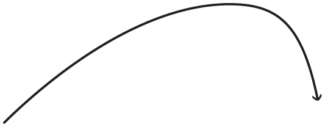
Если вы увидели спад, диагностировали вызвавшую его проблему и нашли ее глубинную причину, а затем предложили новые меры по ее преодолению и реализовали их, траектория движения будет такова, что петля замкнется и линия продолжит движение вверх:
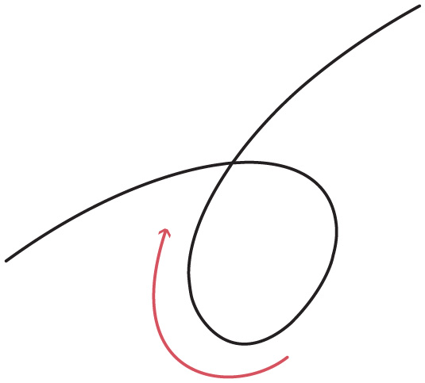
Если вам не удалось определить проблему, предложить оптимальное решение или эффективно его реализовать, спад продолжится:
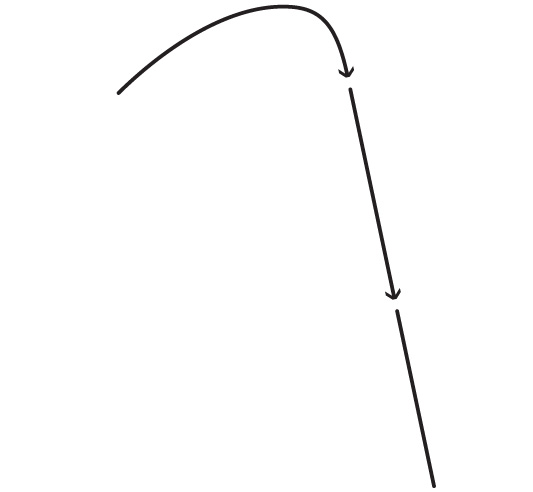
В этой ситуации все зависит только от способности руководителя понять, когда результаты не соответствуют целям, изменить механизм и скорректировать действия сотрудников. Чем чаще и лучше руководитель это делает, тем более крутой будет восходящая траектория движения компании.
Как я уже отмечал, именно так в моем представлении выглядит эволюция всех организмов и организаций. Крайне важно, чтобы развитие корпоративной культуры компании и ее сотрудников имело такую траекторию, так как мир быстро меняется и при этом мало кто может прогнозировать характер этих изменений. Уверен, вы вспомните много компаний, которым не удалось вовремя диагностировать и решить свои проблемы, так что все закончилось полным упадком (возьмите BlackBerry и Palm), а также те немногие компании, которые устойчиво двигаются по восходящей. Например, только шесть организаций из тех, которые 40 лет назад (примерно во время создания Bridgewater) входили в промышленный индекс Доу – Джонса, охватывающий 30 крупнейших компаний США, находятся там и сегодня. Многие другие из того списка – American Can, American Tobacco, Bethlehem Steel, General Foods, Inco, F. W. Woolworth – прекратили существование; некоторые – Sears Roebuck, Johns-Manville, Eastman Kodak – изменились до неузнаваемости. А некоторых современных лидеров рейтинга – Apple, Cisco – тогда еще даже не было.
Те немногие компании, которым удалось не только уцелеть, но и развиться, успешно справились с эволюционным процессом, который за 40 лет сделал успешной и Bridgewater. Я хочу остановиться на этом подробнее.
Как я уже говорил, нет ничего более важного или более сложного, чем правильно подобрать сотрудников и создать правильную корпоративную культуру. Своим успехом Bridgewater обязана именно этому, и наши провалы обычно были связаны с тем, что мы не справились с этой задачей. Это может прозвучать немного странно, потому что для меня как макроэкономического инвестора, казалось бы, на первом месте должны быть экономические и инвестиционные показатели. Всё так. Но для этого мне сначала нужно было найти правильных сотрудников и создать правильную культуру в компании. А чтобы вдохновить меня заниматься тем, что я делал, у меня должны были быть осмысленная работа и значимые взаимоотношения.
Как основатель Bridgewater я стремился создать такую компанию, которая соответствовала бы моим ценностям и принципам. Я шел к своим целям тем путем, который казался мне наиболее правильным, с людьми, которых я сам выбрал, и я менялся и развивался вместе со своей компанией. Если бы в начале карьеры меня спросили о моих целях, вряд ли я сказал бы, что это получать удовольствие от работы с людьми, которые мне нравятся. Работа была для меня игрой, которой я отдался со всей страстью, и мне хотелось играть с людьми, которые мне нравились и вызывали уважение. Я основал Bridgewater вместе с приятелем, с которым играл в американский футбол и у которого не было опыта работы на фондовых рынках, и с другом, которого мы наняли в качестве помощника. Нашим первым офисом была моя квартира. В то время я определенно не думал о менеджменте. В моем представлении, им занимались люди в серых деловых костюмах, показывающие слайды из презентации. У меня никогда не было самоцели управлять, не говоря уже о том, чтобы формулировать принципы, касающиеся работы и менеджмента.
Из первой части этой книги вы, вероятно, узнали, что мне всегда нравилось создавать новые, практические концепции, которых не было раньше. Особенно интересно это было делать вместе с людьми, разделяющими мою миссию и ценности. Я стимулировал этих людей высказывать свое мнение, пусть даже отличающееся от остальных, чтобы научиться новому и повысить наши шансы на принятие эффективных решений. Я хотел, чтобы все, с кем я работал, были моими партнерами, а не сотрудниками. Иными словами, я стремился к осмысленной работе и значимым взаимоотношениям. Я быстро понял, что лучший способ этого добиться – действовать в эффективном партнерстве с правильными людьми.
Мне кажется, эффективное партнерство подразумевает наличие общих ценностей и интересов, общих подходов к достижению целей, а также уважительное отношение друг к другу. В то же время партнеры должны быть готовы показывать самый высокий результат и прорабатывать свои разногласия. Главная проверка партнерства на прочность не в том, чтобы у участников никогда не было разногласий – они бывают у всех, – а в том, чтобы они могли их проговорить и справиться с этим. Четкие процессы разрешения разногласий обязательны для деловых отношений, брака и всех других форм партнерства.
Мой подход к ведению бизнеса привлек единомышленников, с которыми мы решали, какой должна быть наша компания[81]. Когда у нас было пять сотрудников, все было совсем иначе, чем когда их стало полсотни, а потом все изменилось, когда сотрудников стало 500, 1000 и так далее. В процессе роста до неузнаваемости менялось все, кроме наших фундаментальных ценностей и принципов.
Когда Bridgewater была относительно небольшой компанией, принципы, которыми мы руководствовались в своей деятельности, были скорее внутренними. Однако у нас появлялись все новые сотрудники, и я уже не мог считать, что они по умолчанию поймут эти правила и будут ими руководствоваться. Возникла необходимость четко сформулировать наши принципы и объяснить их логику. В памяти сохранился даже конкретный момент, когда ко мне пришло это осознание: число сотрудников Bridgewater превысило 67 человек. До этого момента я лично выбирал подарок к праздникам каждому сотруднику и писал пространную поздравительную открытку, но в том году эта задача оказалась для меня непосильной. С этого момента в компании становилось все больше людей, которые не работали со мной непосредственно, поэтому я не мог рассчитывать, что они поймут мои предпосылки или устремления, которые заключались в принципе меритократии идей – жестком, но справедливом.
Принцип «жестко, но справедливо» действует и в работе, и в отношениях.
Чтобы понять, что я имею в виду, вспомните Винсента Ломбарди, который был для меня воплощением этого принципа. Когда мне исполнилось десять лет, он стал главным тренером профессиональной команды по американскому футболу Green Bay Packers и занимал эту должность на протяжении восьми лет. В условиях ограниченных ресурсов он пять раз приводил команду к победе в Национальной футбольной лиге. Его два раза признавали лучшим тренером года по версии НФЛ, и для многих он остается лучшим наставником всех времен. Ломбарди любил своих игроков, но спуску им не давал. Я никогда не перестану восхищаться тем, насколько бескомпромиссными были его стандарты. Этот подход был выигрышным для всех: игроков, болельщиков, самого тренера. Жаль, Ломбарди не поделился своими принципами, чтобы можно было с ними ознакомиться.
a. Чтобы добиться успеха, нельзя идти на компромисс там, где компромисс невозможен. И все же многие делают это постоянно: обычно чтобы не чувствовать себя неловко или не вызывать неловкости у других, чаще всего это бывает контрпродуктивно. Когда комфорт ставится выше успеха, это ведет к наихудшему результату для всех сторон. Мне искренне нравятся люди, с которыми я работаю, но я добиваюсь от них, чтобы они выкладывались и реализовывали свой потенциал по максимуму. И в ответ ожидаю такого же отношения.
С самого начала я считал людей, с которыми работаю в компании, продолжением своей семьи. Когда сотрудники или их родственники заболевали, я организовывал им прием у моего личного врача, чтобы они получали лучшее лечение. В Вермонте я звал всех к себе на выходные и был счастлив, когда мое приглашение принимали. Вместе с ними я отмечал их свадьбы и рождение детей и скорбел, когда случались утраты. Но не подумайте, что все у нас было благостно и мило. Мы могли быть весьма жесткими, чтобы добиться всего, на что способны. Я понял, что чем лучше мы относились друг к другу, тем более жесткими могли быть и тем лучше оказывались общие результаты. Это самоусиливающийся цикл. Такой подход делал провалы менее болезненными, а успехи еще более значительными. В некоторых случаях он даже делал опыт переживания трудных периодов более ценным, чем хорошие времена.
Вспомните свои самые сложные жизненные моменты. Готов поспорить, что для вас так же, как для меня, бесценным оказался опыт, когда вы справлялись с этими ситуациями, ощущая поддержку близких людей, которые с не меньшим упорством, чем вы, работали для достижения общей цели. Несмотря на все трудности, иногда мы вспоминаем об этих моментах как о самых важных в жизни. Для большинства людей ощущение, что они стали частью чего-то большего с единой миссией, оказывается важнее денег. Результаты многочисленных исследований свидетельствуют об отсутствии (или незначительной) корреляции между уровнем счастья человека и количеством денег, которые он накопил, при этом отмечается устойчивая корреляция между уровнем счастья и качеством взаимоотношений.
Я отразил это в письме сотрудникам Bridgewater в 1996 году:
«Bridgewater – это не тот случай, когда все старательно работают на достижение средненького результата. Мы выкладываемся по полной, чтобы добиться результата экстракласса и получить удовлетворение от такого супердостижения.Наша первостепенная задача – превосходное качество, точнее, непрерывное совершенствование. Мы должны быть превосходной и постоянно совершенствующейся компанией во всех отношениях. Разногласия на пути к достижению превосходного качества – это замечательно. У нас не должно быть иерархии, основанной на возрасте или статусе. Мы смотрим на убедительность идей, а не на должность. Предпочтение отдается лучшим идеям – независимо от того, кто их высказал.Критическое отношение (к себе и к другим) – неотъемлемая часть процесса совершенствования. Однако при неправильном подходе это отношение может оказаться разрушительным. Критика должна быть объективной. Замечания или критическая обратная связь должны быть чужды иерархии.Работа в команде и командный дух – прежде всего. Это подразумевает нетерпимость к некачественному выполнению работы. Это относится к 1) признанию собственных обязанностей, которые нужно выполнять, чтобы команда достигла общей цели, а также 2) готовности помочь другим членам группы в достижении общих целей. Мы связаны друг с другом. Каждый должен знать, что может положиться на товарища. Некачественное выполнение работы недопустимо, так как это негативно отразится на всех. Долгосрочные отношения приятны по своей сути и эффективны. Мы должны осознанно работать над их выстраиванием. Если сотрудники уходят и мы тратим время на обучение новых, это задерживает наш прогресс.Деньги – побочный результат превосходного качества, а не цель. Мы не ставим себе целью заработать много денег. Это не означает, что вы должны довольствоваться малым. Наоборот, вы должны стремиться к хорошему материальному вознаграждению. Если мы станем действовать в соответствии с этой философией, то будем продуктивными, а компания получит хороший финансовый результат. В нашей компании нет иерархии, основанной на возрасте или статусе.Каждый в Bridgewater должен действовать как владелец компании, придерживаться этого подхода и стимулировать других поступать так же».
Принцип меритократии идей на основе профессионализма и компетентности – лучшая система для эффективного принятия решений.
В отличие от Ломбарди, чей успех зависел от того, насколько точно игроки следовали его указаниям, мне нужны были люди, способные мыслить независимо, высказывать свое мнение и приходить к заключениям, более качественным, чем любой из нас мог бы сделать в одиночку. Я должен был создать среду, в которой каждый обладал бы правом и обязанностью самостоятельно разбираться в теме и открыто отстаивать тот вариант, который он считает лучшим и где в итоге берет верх самая удачная идея. Мне нужна была действующая система меритократии идей, а не красивая теория. Суть меритократии в том, чтобы собрать умных, независимо мыслящих людей, позволить им открыто высказывать разные точки зрения, чтобы сформулировать наилучшее коллективное решение и разрешить возникшие разногласия, основываясь на компетентности участников. По своей результативности меритократия идей превосходит любую другую систему принятия решений.
Наша система, основанная на меритократии идей, развивалась на протяжении нескольких десятилетий. Поначалу мы до хрипоты спорили друг с другом и с боем пробивались через разногласия, чтобы найти более эффективные решения, чем мог предложить каждый из нас по отдельности. Однако с ростом компании и по мере того, как менялся уровень наших разногласий и потребность в их разрешении, мы стали более четко формулировать, как меритократия идей должна быть реализована в нашей компании. Нам нужна была система, которая эффективно оценивала бы уровень компетентности разных людей, чтобы выделять лучшие решения, и делала бы это настолько очевидно, чтобы все признавали результат. Я знал, что иначе компания лишится и независимости мышления, и людей, мыслящих независимо, и я останусь в окружении подхалимов или людей, скрывающих свое несогласие и противоположную точку зрения.
Чтобы вся эта система заработала, мы должны быть полностью откровенны друг с другом.
Абсолютная честность и предельная прозрачность
Под абсолютной честностью я понимаю отсутствие фильтров для любых вопросов, особенно важных. Если не обсуждать разные темы открыто и не прорабатывать их совместно, у нас не будет партнеров, которые тоже вносят вклад в конечный результат.
Под предельной прозрачностью я подразумеваю обеспечение возможности каждому сотруднику получить практически любую информацию. В противном случае они будут подвержены чужому влиянию и ограничены в возможности составить собственное мнение. Предельная прозрачность сводит к минимуму офисные интриги и нежелательное поведение, так как чаще всего такое случается за закрытыми дверями.
Некоторые называют этот подход предельной прямолинейностью.
Я знал, что, если у нас не будет реализован принцип абсолютной честности и предельной прозрачности, произойдет разделение на сотрудников, обладающих информацией и властью, и всех остальных. В моем представлении: меритократия идей = абсолютная честность + предельная прозрачность + процесс принятия решений с учетом компетентности.
За прошедшие 40 лет, начав как небольшая группа людей, которые неформально спорили, что есть объективная реальность и что с ней делать, мы разработали подходы, методы и инструменты, позволившие подняться на принципиально новый уровень. Это уникальный и бесценный опыт, которым я поделюсь в заключительной части книги, посвященной инструментам. Обеспечение такой среды было обязательным условием существования нашей компании, и люди, которых это не устраивало, у нас не задерживались.
Благодаря абсолютной честности и предельной прозрачности стало очевидно, что каждый из нас без исключения обладает крайне неполным и/или искаженным видением ситуации. Это не уникальный факт, касающийся только Bridgewater: если бы вам представилась чудесная возможность заглянуть в головы других людей, картина была бы такой же. Как я уже говорил, одну и ту же ситуацию люди воспринимают абсолютно по-разному, в зависимости от особенностей работы своего мозга.
Понимание этого поможет вам расти и развиваться. Поначалу большинство людей упорно считают, что знают все лучше всех, и если кто-то не разделяет их точку зрения, значит, с ним что-то не так. Тем не менее, постоянно сталкиваясь с двумя вопросами: «Откуда вы знаете, что не ошибаетесь?» и «Что полезного вы взяли бы из каждой точки зрения, чтобы принять лучшее решение?» – они бывают вынуждены поставить под сомнение собственную профессиональную компетентность и посмотреть на ситуацию с позиции других людей. Именно это способствует эффективному коллективному принятию решений. В идеале такое происходит в атмосфере открытости, когда лучшие идеи беспрепятственно циркулируют, живут, умирают и быстро развиваются в зависимости от их достоинств.
Как правило, сначала этот подход вызывает дискомфорт. Большинство людей на сознательном уровне признают его ценность, но им бывает трудно принять его эмоционально, поскольку придется отказаться от убежденности в собственной правоте и попытаться увидеть то, что до этого упускали из виду. Кто-то сразу начинает органично применять этот подход, другие (их чуть больше) оказываются не готовы его принять, и наши с ними пути расходятся, а остальные упорно практикуются, со временем у них получается все лучше, и в конце концов они уже сами не хотят действовать иначе. Описание процесса звучит довольно громоздко, но на практике он чрезвычайно эффективен. Гораздо сложнее и менее продуктивно работать в компании, где большинство людей понятия не имеют, о чем думают их коллеги.
Кроме того, когда человек не может быть абсолютно честен, он не может быть собой. Как отметил гарвардский специалист по психологии развития Боб Киган, который занимался изучением рабочих процессов в Bridgewater, в большинстве компаний сотрудники выполняют две обязанности: фактическую и по управлению впечатлениями окружающих относительно того, как они делают свою работу. В нашем понимании это просто ужасно. Благодаря принципу абсолютной честности нам не нужно всегда стараться выглядеть хорошо в глазах других и предполагать, что думают коллеги. Таким образом, мы получаем более осмысленную работу и значимые взаимоотношения.
Вот аспекты, которые поддерживают самоусиливающуюся спираль развития Bridgewater.
1. Мы перешли от одного независимо мыслящего человека, стремящегося к высоким целям, к группе независимо мыслящих людей, стремящихся к высоким целям.
2. Для эффективного коллективного принятия решений мы опираемся на систему меритократии идей, основанную на принципах абсолютной честности, предельной прозрачности и продуктивного несогласия, а также на меритократическом способе преодоления разногласий при принятии решений.
3. Мы письменно зафиксировали эти принципы и перевели их в компьютерные алгоритмы, чтобы принимать решения с их помощью.
4. Наши успехи и неудачи становились для нас уроками, на основе которых мы выводили новые принципы, систематизировали их и руководствовались ими в дальнейшем.
5. Результатом этого процесса стала эффективная работа и хорошие взаимоотношения, благодаря чему мы получили счастливых и довольных сотрудников и клиентов.
6. Как следствие, мы смогли привлечь еще более амбициозных, независимо мыслящих людей с еще более масштабными целями, что только усилило спираль развития компании.
Этот процесс повторялся у нас неоднократно, и на протяжении сорока лет Bridgewater переживала эволюционное развитие, как показано на рисунке.
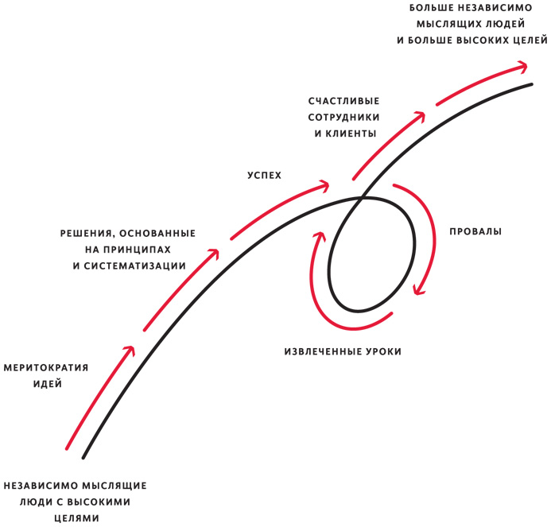
Это действительно работает! При этом я не прошу вас поверить мне на слово. Есть два способа, которыми вы можете оценить, что этот подход и основанные на нем принципы настолько эффективны, как я говорю. Во-первых, можно посмотреть на результаты. Во-вторых, проанализировать логику, лежащую в основе этого подхода.
Что касается практических результатов, то здесь, как в случае с Ломбарди и его командой, они говорят сами за себя. На протяжении сорока лет дела у компании шли в гору: мы начинали работать в комнате моей съемной квартиры, а стали пятой крупнейшей частной компанией в США, по версии Fortune, и крупнейшим хедж-фондом в мире, который заработал для своих клиентов больше, чем любой другой хедж-фонд в истории. Компания получила более сотни профессиональных наград, и лично я три премии за достижения в профессиональной деятельности, а еще наша деятельность принесла нам множество финансовых и психологических наград и, что самое важное, удивительные взаимоотношения.
Однако гораздо важнее практических результатов причинно-следственная логика, лежащая в основе этих принципов. Более сорока лет назад этот подход был лишь противоречивой, непроверенной теорией, которая тем не менее казалась мне логичной. Далее я объясню вам эту логику, чтобы вы могли сами ее оценить.
Несомненно, наш подход сильно отличается от всех существующих. Стоит ли удивляться, что некоторые даже считают его культом. Основная разница между корпоративной культурой с общими ценностями (что потрясающе) и культом (что ужасно) в степени, до которой позволяется независимость мышления. Культ требует безусловного и безоговорочного подчинения. Мыслить независимо и подвергать сомнениям идеи других – поведение, противоположное культу. Именно такой подход всегда был принят в Bridgewater, и именно он стал основой успеха компании.
Кто из нас сумасшедший?
Некоторые считают наш подход сумасшедшим. Но подумайте сами, какой из подходов вам покажется более разумным?
• Когда люди следуют принципу абсолютной честности и предельной прозрачности или когда большинство людей скрывают истинные мысли и чувства?
• Когда проблемы, ошибки, слабости и разногласия проговариваются и рационально обсуждаются или когда они замалчиваются?
• Когда право критиковать не зависит от статуса и должности или когда право на критику есть только у начальника?
• Когда объективная оценка сотрудника и его достижений формируется на основе множества данных и разных мнений его коллег или когда эта оценка принимает субъективный, зачастую спорный характер?
• Когда в компании действуют высокие стандарты для осмысленной работы и значимых отношений или когда качество работы и отношений не ценится, а принятые стандарты не слишком высоки?
Как вы считаете, в какой из этих компаний более благоприятные условия для развития сотрудников, улучшения отношений между ними и повышения результативности? Какой подход вы бы предпочли в компаниях, с которыми вам приходится иметь дело? Какой подход вы бы хотели видеть у политиков, управляющих страной?
Готов поспорить, что после прочтения этой книги вы согласитесь со мной, что наш подход к ведению дел гораздо более разумный, чем общепринятый. При этом не забывайте, что мой главный принцип – основа основ – в том, что вы должны мыслить независимо.
Зачем я написал эту книгу и как вы можете извлечь из нее максимальную пользу
Если вы сотрудник Bridgewater, я пересказываю вам принципы своими словами, чтобы вы могли поставить себя на мое место и увидеть мою мечту и мой подход. Компания будет развиваться дальше с учетом того, чего стремитесь добиться вы и следующее поколение руководителей и как вы собираетесь это делать. Задача этой книги – помочь вам. Как вы ее примените, это ваше дело. Какой будет корпоративная культура компании в будущем, зависит от вас и от тех, кто придет вам на смену. Я не должен настаивать, какой я хочу видеть Bridgewater в будущем. Гораздо важнее, чтобы вы и те, кто останется после меня, делали свой выбор самостоятельно. Как родитель взрослых детей я мечтаю, чтобы и каждый из вас стал сильным, независимо мыслящим человеком, который отлично справится и без меня. Я сделал все, что мог, чтобы подвести вас к этому моменту, теперь ваше время действовать, а мое – отойти в сторону.
Если вы не работаете в Bridgewater и размышляете, как применить эти принципы в вашей компании, эта книга должна вдохновить вас, а не предложить готовую формулу. Вы не обязаны применять их все или даже некоторые, хотя я настоятельно рекомендую вам проанализировать их. Многие руководители компаний применили одни из этих принципов, адаптировали другие и отказались от всех остальных. Каким бы ни было ваше решение, я не против. Эти принципы не более чем базовая структура, которую вы можете адаптировать под собственные потребности. Возможно, у вас похожая цель, а может быть, нет. В любом случае вы вполне можете почерпнуть что-то для себя полезное. Если ваша цель в том, чтобы внедрить в своей компании принцип меритократии идей, тогда вы нашли кладезь бесценной информации, потому что ни в одной другой организации эта идея не воплощена в такой мере, как в Bridgewater. Если эта идея важна для вас и вы полны решимости ее воплотить, вы столкнетесь на пути с собственными препятствиями, найдете свои способы их обойти и добьетесь желаемого результата, пусть даже не идеального.
Эти принципы можно назвать скорее общими правилами. При этом важно помнить, что у любого правила есть исключения и ни одно из них не способно заменить здравый смысл. Воспринимайте эти принципы как GPS. Навигационная система помогает вам добраться до пункта назначения, но если вы, слепо следуя ее указаниям, скажем, свалитесь с моста, это будет ваша вина, а не системы. Подобно тому как можно улучшить работу GPS, загрузив обновления, важно постоянно улучшать и дополнять принципы, находя и обсуждая исключения из них.
Какой бы путь вы ни выбрали, ваша компания представляет собой механизм, состоящий из корпоративной культуры и людей, и два этих элемента взаимодействуют для получения результата, по которому можно судить об эффективности работы компании. Используйте извлеченные уроки, чтобы скорректировать культуру и действия людей и усовершенствовать механизм работы компании.
Эта динамика настолько важна, что я разбил часть, посвященную принципам работы, на три составляющие: «Правильная корпоративная культура», «Правильные люди», «Создание и совершенствование механизма». Каждая глава начинается с принципа самого высокого уровня. Они позволят вам понять основную концепцию раздела.
За принципами высокого уровня следует ряд вспомогательных, выстроенных вокруг многих разных типов решений, которые требуется принять. Эти принципы носят справочный характер. Вы можете пропустить их, хотя я рекомендую использовать их как своеобразную энциклопедию или поисковую систему для ответа на конкретный вопрос. Например, если вам нужно уволить (или перевести на другую должность) сотрудника, воспользуйтесь полным списком принципов, чтобы найти группу, посвященную этому вопросу. В Bridgewater для облегчения процесса мы создали инструмент под названием Coach («Наставник») – это приложение, позволяющее людям ввести определенную тему и получить все правила по ней[82]. В ближайшем будущем я планирую сделать доступным для широкой аудитории это приложение, а также другие управленческие инструменты, о которых вы узнаете из заключительной части книги.
Моя цель не в том, чтобы убедить вас использовать эти принципы, – я хочу поделиться с вами самыми ценными уроками, которые получил за свою более чем сорокалетнюю профессиональную деятельность. Моя задача – заставить вас задуматься о сложном выборе и его последствиях, который вам придется делать в разных ситуациях.
Обдумывая последствия этих принципов, вы сами решите, какие принципы наиболее вам подходят.
Итак, начнем с моего главного принципа работы – основы основ:
Сделайте свою страсть и работу единым целым и занимайтесь этим с людьми, с которыми хотите быть рядом.
Работой можно назвать либо то, чем вы занимаетесь за деньги, чтобы обеспечить себе уровень жизни, который хотите, либо то, что вы делаете ради выполнения своей миссии. В некоторых случаях это может быть сочетание первого и второго. Я настоятельно рекомендую вам максимально заниматься вторым, признавая при этом ценность первого. Если вы последуете этому совету, практически все пойдет у вас лучше, чем если вы его проигнорируете.
«Принципы работы» адресованы тем читателям, для кого работа – это в первую очередь игра, в которую они играют, чтобы следовать за своей страстью и реализовать свою миссию.
Правильная корпоративная культура
* * *
Корпоративная культура компании должна вас устраивать. Это основополагающий фактор удовлетворенности работой и результативности. Кроме того, она должна способствовать получению значимого результата, в противном случае вы лишитесь психологического и материального вознаграждения, поддерживающего мотивацию. В этой части я поделюсь мыслями, как сделать, чтобы корпоративная культура компании и ваши потребности совпадали, а также опишу тот тип корпоративной культуры, который мне ближе всего: меритократия идей.
В главе 1 я объясню, что такое меритократия идей и почему основным фактором эффективной ее реализации становятся абсолютная честность и предельная прозрачность. Принцип абсолютной честности и предельной прозрачности, вероятно, наиболее сложен для применения, так как многие привыкли поступать с точностью до наоборот. Этот образ действий чаще всего вызывает непонимание, и я постарался особенно доступно объяснить, почему мы так действуем и как это работает на практике.
В главе 2 мы разберемся, зачем нужна корпоративная культура и как создать такую, которая стимулировала бы развитие полноценных взаимоотношений. Помимо этого, такие отношения сами по себе становятся наградой; они способствуют установлению абсолютной честности и предельной прозрачности, которые позволяют добиваться высоких результатов.
Я убежден, что хорошей корпоративной культуре, как и успешным людям, присуще осознание, что ошибки – это часть обучения и что только непрерывное обучение позволяет компании успешно развиваться на протяжении какого-то времени. В главе 3 я расскажу о принципах, позволяющих качественно подойти к этому вопросу.
Принцип меритократии идей основан на убеждении, что объединение мыслей разных людей и их тестирование дают результат лучше, чем когда все держат мысли при себе. В главе 4 изложены принципы, как прийти к согласию. Главное – знать, как правильно выразить свое мнение, отличающееся от представлений других людей.
В рамках меритократии идей происходит тщательный анализ достоинств мнений каждого участника. Важно понять, как организовать этот процесс, потому что при изобилии не очень качественных идей сами авторы находятся в полной уверенности, что их предложение хорошее. В главе 5 представлена наша система принятия решений с учетом профессиональной компетентности.
Иногда разногласия сохраняются даже после принятия решения. На этот случай нужны правила для их урегулирования, которые должны быть четко сформулированными, последовательными и признанными всеми как справедливые. Этому посвящена глава 6.
ПРИНЦИП МЕРИТОКРАТИИ ИДЕЙ ДОЛЖЕН РАБОТАТЬ НА ВАС
То, о чем вы читаете в этой книге, может показаться сложным для реализации. Но если вы, как я, убеждены, что лучший способ принимать решения – это стимулировать компетентных людей честно высказывать собственную точку зрения, непредубежденно анализировать другие мнения и искать общее решение, тогда вы поймете, как воплотить эту идею в жизнь. Если система меритократии идей не работает, проблема не в концепции, а в людях, которые недостаточно в нее верят и прилагают недостаточно усилий, чтобы она заработала.
Если вы не вынесете из этой книги ничего для себя полезного, вам нужно на собственном опыте понять, что такое меритократия идей. Если вы проникнетесь этой идеей, надеюсь, вы решитесь ее реализовать. У вас уйдет совсем немного времени, чтобы понять, насколько принципиально изменятся ваша работа и взаимоотношения.
Чтобы воплотить меритократию идей:
1) честно высказывайте свои мысли;2) поощряйте продуктивное несогласие;3) следуйте согласованным способам преодоления прошлых разногласий.
1. Придерживайтесь принципа абсолютной честности и предельной прозрачности
* * *
Для достижения успеха важно объективно видеть ситуацию. Следование принципу предельной прозрачности относительно всего, включая ошибки и слабости, помогает развитию объективности, что неизбежно приводит к улучшениям. Это не просто теория. Мы в Bridgewater на протяжении более сорока лет воплощаем этот принцип, так что мы знаем, как он работает. Однако, как у всего в жизни, у этого принципа есть свои плюсы и минусы, о которых я постараюсь подробно рассказать в этой главе.
Придерживаясь принципа абсолютной честности в общении с коллегами и ожидая такого же отношения к себе, вы способствуете откровенному обсуждению важных вопросов, а не их замалчиванию. Кроме того, это стимулирует правильные поведение и образ мышления, потому что, когда вы выражаете свое мнение, каждый может открыто оценить логику ваших размышлений. Если вы хорошо разбираетесь в вопросе, это сразу станет очевидно, как, впрочем, и в том случае, если вы плохо знаете тему. Так что этот принцип помогает поддерживать высокие стандарты качества.
Абсолютная честность и предельная прозрачность – основополагающие факторы меритократии идей. Чем больше людей видят, что происходит – хорошего, плохого, отвратительного, – тем более эффективный способ справиться с ситуацией они могут предложить. Этот подход отлично стимулирует обучение, которое усложняется и ускоряется, когда каждый участник процесса имеет возможность узнать, что думают все остальные. Как руководитель вы получите обратную связь, необходимую для обучения и для постоянного совершенствования правил принятия решений в компании. Когда сотрудники наблюдают, что происходит и почему, это повышает уровень доверия и позволяет им делать независимые суждения, на чем и основана действующая меритократия идей.
АДАПТАЦИЯ К ПРИНЦИПУ АБСОЛЮТНОЙ ЧЕСТНОСТИ И ПРЕДЕЛЬНОЙ ПРОЗРАЧНОСТИ
К этому принципу нужно привыкнуть. Практически все сотрудники, начиная работать в Bridgewater, на уровне рационального мышления понимали, что принцип абсолютной честности и предельной прозрачности – это то, что им нужно. Тем не менее привыкнуть к нему многим оказалось не так просто, потому что внутри них шла борьба между двумя «я», о которых я рассказывал в предыдущей части. В то время как их высшее «я» понимало преимущества этого подхода, реакция низшего «я» была по типу «бей или беги». Процесс адаптации может занимать до 18 месяцев – все зависит от индивидуальных особенностей человека. Были и такие, кто так и не смог приспособиться.
Я слышал мнения, что такой образ действий противоречит природе человека, что его нужно защищать от суровой реальности и что эта система никогда не заработает. Наш опыт – и наш успех – опровергает эти мнения. Конечно, наш образ действий – не тот, к которому привыкло большинство, но это не означает, что он неестественный, точно так же как нельзя назвать неестественными сложные физические упражнения, которые выполняют атлеты и военные. Основной закон природы заключается в том, что человек становится сильнее, только когда делает что-то сложное. Конечно, меритократия идей не для всех. Но для тех, кто привыкает к этой системе – а это две трети тех, кто ее пробует, – она становится настолько освобождающей и эффективной, что они уже не могут себе представить иной образ действий. То, что практически всем нравится в этой системе больше всего, – это уверенность в отсутствии двойных стандартов.
АБСОЛЮТНАЯ ЧЕСТНОСТЬ И ПРЕДЕЛЬНАЯ ПРОЗРАЧНОСТЬ В ДЕЙСТВИИ
Чтобы дать вам представление, что мы вкладываем в понятия абсолютной честности и предельной прозрачности, позвольте рассказать вам о сложной ситуации, в которой мы оказались несколько лет назад, когда правление компании задумалось о реорганизации нашего операционного отдела (бэк-офиса). Бэк-офис поддерживает нашу работу при ведении торгов на рынках, включая подтверждение сделок, расчет по платежам, бухгалтерский учет и хранение документации. Эта команда формировалась у нас на протяжении многих лет, и в результате получился сплоченный коллектив единомышленников и профессионалов, который стал частью нашей большой семьи. Однако на тот момент у нас была острая необходимость в увеличении производственной мощности, в результате мы не могли ограничиваться только ресурсами собственной компании. Наш операционный директор Айлин Мюррей предложила инновационную стратегию по переводу этой команды в специально созданную группу внутри Bank of New York/Mellon. Сначала это была просто идея: мы понятия не имели, решимся ли ее реализовать, как будем это делать и чем это обернется для сотрудников нашего бэк-офиса.
Представьте себя на месте членов правления. Когда вы сообщили бы сотрудникам бэк-офиса, что думаете о переводе их группы в другую компанию? Вы стали бы ждать, пока ситуация полностью прояснится? В большинстве компаний стратегические решения такого рода до последнего держат в глубокой тайне, так как руководители уверены, что не следует сеять панику и неуверенность в рядах сотрудников. Мы придерживаемся противоположного мнения и считаем единственно возможным и ответственным подходом действовать с абсолютной честностью и предельной прозрачностью, чтобы сотрудники понимали, что происходит, и могли помочь нам решить возникающие проблемы. В нашем случае Айлин немедленно провела совещание с командой бэк-офиса. В характерной для лидеров Bridgewater манере она объяснила, что на многие вопросы у нее пока нет ответа. Это был сложный момент в истории нашей компании, и он был полон неопределенности, но если бы Айлин придерживалась традиционного подхода и была менее открытой, это стало бы поводом для распространения слухов и сплетен, что только усугубило бы ситуацию.
Хотя в итоге этот переход все же состоялся, мы сохранили хорошие отношения со всеми членами команды. Они не только активно содействовали реорганизации, но и до сих пор продолжают приходить к нам на корпоративные вечеринки по поводу Рождества и Дня независимости, оставаясь частью нашей большой семьи. Сегодня мы можем похвастаться превосходным бэк-офисом благодаря всем тем инновациям, которые удалось воплотить во время реорганизации. И что более важно, так как мы действовали максимально открыто, даже когда еще не приняли окончательное решение, команда бэк-офиса видела наше искреннее отношение к ним, и они ответили нам тем же.
Лично для меня скрывать от сотрудников, что на самом деле происходит, чтобы защитить их от суровой реальности, все равно что позволить детям вырасти с верой в Зубную фею и Санта-Клауса. Когда от людей утаивают правду, это может сделать их счастливее на какое-то время, но не сделает умнее в будущем. Когда люди точно знают, что могут доверять сказанному вами, это становится вашим активом. Поэтому я уверен, что практически в любой ситуации лучше говорить правду, даже когда вы чего-то не знаете или у вас плохие новости. Как сказал Уинстон Черчилль: «Нет худшего стиля руководства, чем подпитывать ложные надежды, которые скоро разрушатся». Люди должны видеть суровую реальность, если хотят научиться с ней справляться. А вы узнаете много нового об окружающих вас людях, когда понаблюдаете, насколько хорошо они справляются.
1.1. Не бойтесь правды
Мысль, что придется заглянуть в глаза пугающей действительности, вызывает у большинства людей ступор. Чтобы справиться с этим состоянием, нужно осознать, что неправда гораздо хуже правды, а затем свыкнуться с этой мыслью.
Если вы заболели, вполне естественно, что вам страшно узнать диагноз: а вдруг это рак или другая смертельная болезнь? Правда может быть горькой, но ее лучше знать, потому что так вы сможете выбрать оптимальный курс лечения в долгосрочной перспективе. То же самое верно и когда речь заходит о сильных и слабых сторонах людей. В Bridgewater мы придерживаемся принципа, что их нужно знать и действовать сообразно им. Важно не зацикливаться на эмоциональных аспектах, продиктованных чаще всего чьим-то эго, за которыми может потеряться главная миссия.
1.2. Будьте последовательны и требуйте того же от остальных
Последовательность подразумевает целостность личности. Люди, думающие одно, а действующие по-другому, непоследовательны: они лишены целостности, проявляя вместо этого свою дуальность. Конечно, иногда бывает проще изменить свою точку зрения на ту, что больше подходит в данной ситуации (чтобы избежать конфликта или неловкости либо достичь сиюминутной цели), но стоит помнить, что в долгосрочной перспективе последовательность может принести вам несравнимую пользу. Людей, думающих одно, а действующих по-другому, начинают разрывать внутренние конфликты и противоречия, и зачастую они теряют связь с собственными ценностями. Им трудно быть счастливыми и практически невозможно реализовать свой потенциал по максимуму.
Будьте последовательны в словах, мыслях и чувствах, и вы станете гораздо более счастливым и успешным. Когда вы думаете о том, что на самом деле правда, а не о том, как ее воспримут, вы концентрируетесь на самом важном. В результате вас притягивают те люди, которые точно так же открыты и честны в своих мыслях и суждениях. К тому же так вы ведете себя честно по отношению к окружающим: когда вы мысленно составляете какое-то мнение о человеке, не пытаясь узнать его точку зрения, это неэтично и малопродуктивно. Когда люди ничего не скрывают, они избавляются от стресса и способны выстраивать отношения, основанные на доверии.
a. Не говорите о человеке того, что не осмелитесь сказать ему в лицо, и не обвиняйте заочно. В нашей компании приветствуется конструктивная критика, но мы никогда не обсуждаем людей за их спиной. Это контрпродуктивно, демонстрирует отсутствие последовательности, не ведет к положительным изменениям, портит репутацию человека, который этим занимается, и микроклимат в целом. Наравне с лицемерием подобное поведение в нашей компании считается худшим из возможного.
Руководитель не должен комментировать действия подчиненного в его отсутствие. Когда сотрудники отсутствуют на совещании, где обсуждаются вопросы, имеющие отношение к ним, мы всегда высылаем им запись встречи и все необходимые материалы.
b. Не позволяйте лояльности к людям встать на пути объективности и благополучия компании. В некоторых компаниях сотрудники покрывают ошибки руководителей, и руководители отвечают им тем же. Это нездоровый подход, препятствующий прогрессу, так как он мешает открыто обсуждать ошибки и слабости, поощряет обман и лишает подчиненных права обжалования.
То же самое верно и когда речь идет о персональной лояльности. Я периодически наблюдаю, что люди занимают должности, которым явно не соответствуют, благодаря хорошим отношениям с начальником. В результате нечистоплотные руководители выстраивают своеобразные вотчины, где все держится на личной преданности сотрудников начальнику. Применение двойных стандартов при оценке разных людей – завуалированная форма коррупции, подрывающая принцип меритократии идей.
Я считаю, что лояльность должна строиться на открытом обсуждении объективной реальности. Лучшим противоядием от злоупотребления служебным положением будут предельная прозрачность и рациональное мышление, опирающееся на принципы. Когда все сотрудники разделяют общие принципы, а процесс принятия решений открыт для всех, отдельным людям гораздо сложнее преследовать собственные интересы в ущерб компании. В этих условиях в наилучшем положении оказываются те, кто способен открыто говорить о проблемах и их решать. Когда сотрудники скрывают собственные ошибки и слабости, в действие вступают нездоровые механизмы определения, кто из них достоин вознаграждения, а кто нет.
1.3. Создайте среду, в которой у каждого есть право самостоятельно дойти до сути и никто не имеет права умалчивать, что придерживается иного мнения
Только от человека зависит, насколько у него хватит самостоятельности и силы воли отстаивать решение, которое он считает лучшим, но его можно поддержать, создав атмосферу, в которой первой мыслью у каждого будет: «Насколько это правда?»
a. Высказывайтесь и несите ответственность или убирайтесь. При меритократии идей открытость – обязанность. Сотрудник не просто наделен правом высказывать собственное мнение и его отстаивать – он обязан так поступать. Особенно это касается принципов. Как и все остальное, их нужно ставить под сомнение и обсуждать. Что строго-настрого запрещено, так это жаловаться и критиковать тайком – в компании других или в собственной голове. Если сотрудник не способен взять на себя это обязательство, мы с ним расстаемся.
Конечно, непредубежденный поиск истины вместе с другими – это не то же самое, что упорно настаивать на своей точке зрения как единственно верной, даже после того как благодаря отлаженному процессу принятия решений вопрос улажен и все двинулись дальше. Неизбежно будут возникать ситуации, когда сотрудникам придется принять образ действий или решения, с которыми они не согласны.
b. Будьте предельно открыты. Обсуждайте спорные вопросы до тех пор, пока не достигнете согласия или пока не поймете позицию друг друга, а потом решайте, как поступать дальше. Как однажды заметил кто-то из моих сотрудников: «Это просто – достаточно убрать фильтр».
c. Не будьте простофилей, когда вас обманывают. Люди лгут чаще, чем вы думаете. Я понял это, когда руководил компанией, то есть нес ответственность за каждого сотрудника. Хотя у нас сформирована исключительно честная команда, в любой компании найдется не вполне откровенный человек, и нужно знать, как себя с ним вести. Например, если вы уличили кого-то во лжи, в большинстве случаев не стоит верить его словам, что он раскаялся и больше так не будет. Вероятнее всего, будет, и не раз. Нечестные люди опасны, поэтому позволить им находиться в вашем окружении не самая лучшая идея.
В то же время давайте будем практичными. Если бы я попытался ограничить свой круг общения только людьми, которые ни разу в жизни не солгали, мне было бы не с кем работать. Хотя у меня чрезвычайно высокие требования в том, что касается последовательности, я все-таки признаю полутона и готов дать второй шанс. Я оцениваю обстоятельства и закономерности, чтобы понять, имею я дело с хроническим лжецом или с человеком в целом честным, но несовершенным. Я принимаю во внимание тяжесть содеянного (человек украл кусок пирога или совершил тяжкое преступление?), а также степень нашего с ним знакомства (мне говорит неправду жена, случайный знакомый или сотрудник?). Каждый из случаев стоит рассматривать отдельно, руководствуясь базовым принципом правосудия: наказание должно быть соразмерно тяжести преступления.
1.4. Придерживайтесь принципа предельной прозрачности
Если вы сторонник меритократии идей, вы легко примете мысль о том, что позволить людям самостоятельно формировать мнение лучше, чем вынуждать их полагаться на информацию, обработанную для них другими. В результате предельной прозрачности открыто проговариваются все вопросы – и самое важное, проблемы, с которыми сталкиваются сотрудники, и то, как они их решают, – и это помогает компании задействовать все имеющиеся у нее ресурсы для преодоления этих трудностей. В конце концов такой образ действий становится более комфортным, чем блуждание в тумане и непонимание, что на самом деле думают другие. Это очень эффективный подход. Не испытывайте иллюзий: как у большинства отличных идей, у этого подхода свои недостатки. Самый серьезный из них заключается в том, что изначально большинству людей сложно научиться объективно взаимодействовать с суровой реальностью. Если процесс выйдет из-под контроля, все может закончиться тем, что человек начнет заниматься всем подряд, даже ненужными ему делами, или тем, что люди, неспособные проанализировать всю информацию, станут принимать неверные решения.
Например, если называть абсолютно все проблемы и каждую считать недопустимой, легко прийти к ошибочному заключению, что у этой компании гораздо больше проблем, с которыми нельзя мириться, чем у любой другой, которая свои трудности тщательно скрывает. Однако у какой организации при этом больше шансов добиться высокого качества? У той, которая не скрывает свои проблемы и считает их недопустимыми, или у второй?
Поймите меня правильно: даже у предельной прозрачности есть границы. Есть аспекты, которые у нас в компании строго конфиденциальны: сведения о здоровье, глубоко личные дела, деликатные вопросы интеллектуальной собственности или безопасности, время проведения крупных сделок и иногда информация, которая может быть искажена или превратно понята при утечке в СМИ. В следующих принципах я подробно объясню, когда и почему прозрачность идет на пользу, а в каких случаях она неуместна.
Откровенно говоря, когда я только начал придерживаться этого принципа, я понятия не имел, что из этого выйдет. Я просто знал, что это чрезвычайно важно и что нужно изо всех сил постараться, чтобы все получилось. Я сделал над собой усилие, и результат превзошел ожидания. Так, когда я решил делать записи всех наших рабочих совещаний, юристы компании заявили, что мы сошли с ума, потому что своими руками создаем доказательства, которые могут быть использованы против нас в суде или регуляторами, например Комиссией по ценным бумагам и биржам. В ответ я сказал, что предельная прозрачность сократит риск сделать что-то неправильно (и не учесть прошлые ошибки) и что записи, наоборот, послужат нашей защитой. Если мы будем хорошо справляться с работой, благодаря прозрачности это будет очевидно (при условии, конечно, что все участвующие стороны адекватны и разумны, что не всегда бывает по умолчанию). А если справляться будем плохо, благодаря прозрачности мы получим именно то, что заслужили, и в долгосрочной перспективе это пойдет нам на пользу.
В то время я еще не был так в этом уверен, но опыт неизменно подтверждал справедливость этой теории. В основном благодаря принципу прозрачности к компании Bridgewater было беспрецедентно мало претензий со стороны регуляторов и судебных органов: при таком подходе гораздо сложнее совершать что-то противозаконное и гораздо проще удовлетворять предъявляемые претензии. За последние несколько десятилетий против нашей компании не было вынесено ни единого судебного решения и ни одного постановления регулятора.
Вполне естественно, что чем крупнее и успешнее становится компания, тем больше внимания со стороны СМИ она привлекает, а репортерам нужны сенсации и жареные факты, потому что этого от них ждет публика. В этом отношении Bridgewater находится в особенно уязвимом положении, так как наша корпоративная культура открытого обозначения проблем и обмена информацией в рамках всей компании делает нас предрасположенной к утечкам информации. Было бы лучше отказаться от принципа прозрачности во избежание этого?
Я понял, что люди, чье мнение для нас наиболее важно, знают нас лучше всех (это наши клиенты и сотрудники), и этот принцип идет им на пользу. Он не только помогает добиваться отличных результатов, но и способствует выстраиванию доверия между компанией и ее сотрудниками и клиентами, так что они не обращают внимания на то, что видят в прессе. При обсуждении подобных ситуаций они говорят, что их гораздо больше выбило бы из колеи, если бы мы перестали следовать принципу прозрачности.
Бесценно иметь такое понимание и поддержку правильного образа действий. Но мы бы не получили таких дивидендов, если бы не стремились постоянно тестировать пределы своих честности и прозрачности.
a. Используйте принцип прозрачности для укрепления справедливости. Когда каждый имеет возможность следить за обсуждением, ведущим к принятию решения – в режиме реального времени или с помощью записей и электронных сообщений, – поддерживать атмосферу справедливости в команде гораздо легче. Каждый несет персональную ответственность за свою точку зрения и каждый может высказаться, кто какие обязанности должен выполнять согласно общим принципам. В противном случае решения принимались бы за закрытыми дверями людьми, наделенными властью делать что их душа пожелает. В рамках принципа прозрачности каждый сотрудник компании должен придерживаться единых высоких стандартов качества.
b. Рассказывайте о том, чем сложнее всего делиться. Всегда велик соблазн ограничить прозрачность теми темами, которые не задевают вас эмоционально. При этом особенно важно рассказывать о том, чем делиться сложнее всего: в противном случае вы утратите доверие и партнерские отношения с теми людьми, с которыми делитесь информацией лишь выборочно. Так что, когда вы попадаете в такую ситуацию, вопрос должен быть не в том, делиться или нет, а в том, как это сделать. В этом вам помогут следующие принципы.
c. Сведите исключения из принципа прозрачности к минимуму. Конечно, лично я предпочел бы принцип предельной прозрачности и хотел бы, чтобы каждый ответственно относился к информации, к которой у него есть доступ, чтобы понять объективную реальность и решить, как поступать в этих условиях. При этом я осознаю, что к идеалу можно стремиться бесконечно, но так никогда его и не достичь. В каждом правиле есть исключения: бывают очень редкие случаи, когда предельная прозрачность противопоказана. В этих исключительных случаях вам будет необходимо найти способ сохранить корпоративную культуру предельной прозрачности, не подвергая при этом себя или близких вам людей неоправданному риску.
При анализе исключения из правила подойдите к нему с позиции расчета ожидаемой выгоды и учитывайте последствия второго и третьего порядка. Спросите себя, превысят ли издержки от того, что вы сделаете какую-то информацию широко известной, и от управления рисками в случае прозрачности пользу от этого решения. В подавляющем большинстве случаев издержки не превышают пользы. По моему опыту, есть несколько самых распространенных причин для ограничения прозрачности информации.
1. Информация личного или конфиденциального характера, которая не оказывает влияния на компанию в целом.
2. Распространение такой информации и управление ею ставит под удар долгосрочные интересы команды Bridgewater и ее клиентов, а также возможность компании придерживаться принципов (например, наша логика инвестирования за свой счет или юридический спор).
3. Ценность широкого распространения информации крайне низкая, а волнение, которое она может вызвать, наоборот, значительное (например, вопрос компенсаций).
Я хочу сказать, что, несомненно, стоит раздвигать границы прозрачности, сохраняя, однако, рассудительность. Поскольку мы фиксируем практически всё, в том числе наши ошибки и слабости, и доступ к этой информации есть у всех сотрудников, наша компания стала лакомым куском для СМИ, которым нужны сенсации и сплетни и которые находят способы организовать утечку данных. Однажды журналисты намеренно исказили попавшую к ним информацию, что сильно повредило нашим усилиям по набору персонала. Пришлось установить определенный контроль за наиболее важной в этом смысле для нас информацией, так чтобы в режиме реального времени ее получал только ограниченный круг сотрудников, заслуживающих безоговорочного доверия. Остальным она приходила с небольшой задержкой. Подобную информацию в обычной компании довели бы до сведения всего нескольких человек, но в Bridgewater она становилась известна почти сотне надежных сотрудников. Иными словами, хотя в данном случае прозрачность информации не была полной, я расширил границы до максимально возможного предела. Это пошло нам на пользу: те, кому прозрачность информации была необходима, получали ее сразу же, а остальные понимали, что следование принципу прозрачности остается неизменным, даже в столь сложных обстоятельствах. Мои сотрудники знают, что я постоянно стремлюсь к расширению пределов прозрачности, и ограничить это мое стремление может только защита интересов компании. Кроме того, они уверены, что, если я не смогу больше придерживаться принципа прозрачности, я объясню причину. Это одна из основ нашей корпоративной культуры, которая поддерживает доверие, даже когда степень прозрачности меньше, чем нам бы того хотелось.
d. Вы должны быть уверены, что сотрудники, получающие доступ к информации, осознают свою ответственность правильно ее использовать. Нельзя, чтобы люди, имеющие доступ к информации, использовали ее во вред компании. Поэтому должны существовать правила и процедуры, предотвращающие подобное развитие ситуации. Например, мы обеспечиваем высокую степень прозрачности для сотрудников Bridgewater при условии неразглашения информации. В противном случае они будут уволены за неэтичное поведение. Кроме того, сотрудники должны следовать правилам при анализе проблем и принятии решений. Это важно, потому что все люди разные и придерживаются разных точек зрения. Например, если кто-то из сотрудников раздувает из мухи слона, распространяет собственные ошибочные теории или не понимает, как развивается ситуация, напомните ему о риске, который берет на себя компания, обеспечивая ему прозрачность информации, и о том, что его обязанность – ответственно относиться к ней. Как показывает мой опыт, люди, которые ценят принцип прозрачности и понимают, что они потеряют, если не будут действовать правильно, быстро налаживают хорошие рабочие отношения друг с другом.
e. Обеспечивайте прозрачность информации сотрудникам, которые эффективно применяют этот принцип; ограничивайте доступ людям, которые не умеют им пользоваться, или увольняйте их. Определять, когда делать исключения из правила предельной прозрачности, – это право и обязанность руководства, а не всех сотрудников. Руководители должны осмотрительно подходить к этому, потому что каждый раз, когда кому-то ограничивают доступ к информации, это подрывает меритократию идей и доверие.
f. Не делитесь информацией, способной повредить вам, с врагами компании. Как внутри, так и вне любой компании обязательно найдутся люди, желающие причинить ей вред. Если это ваши сотрудники, с ними нужно разрешить конфликт при помощи принципов компании, определяющих, как действовать в такой ситуации, поскольку работа с врагами внутри будет подрывать и ваши усилия, и усилия вашей большой семьи. Если враг внешний, разумеется, не делитесь с ним такой информацией.
1.5. Осмысленная работа и значимые отношения взаимно усиливают друг друга, особенно когда строятся на основе абсолютной честности и предельной прозрачности
Наиболее значимые отношения формируются тогда, когда вы можете открыто говорить с другими о важных вещах, вместе учиться и осознавать необходимость стимулировать друг друга максимально реализовывать свой потенциал. Когда такие отношения у вас складываются с коллегами, вы помогаете друг другу справляться с рабочими проблемами, в то же время совместное преодоление профессиональных трудностей только укрепляет ваши отношения. Этот самоусиливающийся цикл ведет к успеху, который позволяет преследовать все более высокие цели.
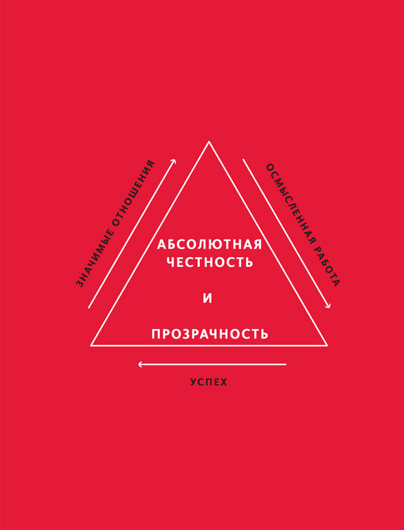
2. Поддерживайте осмысленную работу и значимые отношения
* * *
Без значимых отношений в компании невозможно создать и поддерживать корпоративную культуру, ориентированную на высокие стандарты качества, поскольку только доверие порождает поддержку, необходимую людям, чтобы стимулировать друг друга не снижать планку. Если подавляющее большинство сотрудников заботятся об атмосфере в коллективе, это пойдет на пользу и отношениям, и результативности. Эти отношения должны быть искренними, а не навязанными. В свою очередь, корпоративная культура оказывает на них важное влияние. Лично я считаю отношения значимыми, когда людям не все равно и они готовы оказать другому поддержку в трудный момент, кроме того, им нравится быть в компании друг друга, они с удовольствием проводят время вместе и на работе, и вне ее. Мне искренне нравятся многие из тех, с кем я работаю, и я глубоко их уважаю.
Меня часто спрашивают, какого типа отношения складываются между сотрудниками в Bridgewater: как в семье или как в команде, – намекая, что в основе семьи лежат безусловная любовь и личные отношения, в то время как в команде отношение к сотруднику определяется вкладом, который он вносит в общую деятельность. Прежде чем ответить на этот вопрос, хочу подчеркнуть, что меня устраивают оба этих типа, потому что и в семье, и в команде отношения должны быть значимыми и наполненными смыслом и зависеть не только от практической пользы, как это бывает в большинстве компаний. Тем не менее, если отвечать прямо, мне всегда хотелось, чтобы Bridgewater стала чем-то вроде семейного бизнеса, где все должны работать качественно или уйти из компании. Если бы у меня был семейный бизнес и кто-то из родных не справлялся с обязанностями, я бы предпочел, чтобы этот человек ушел, потому что это плохо и для него самого (оставаться на работе, для которой он не подходит, означает препятствовать собственному развитию), и для компании (так как это влияет на ее эффективность в целом). Это жестко, но справедливо.
Чтобы дать вам представление, как формировалась корпоративная культура Bridgewater и чем она отличается от культуры большинства других компаний, позвольте рассказать, как мы распределяли бонусы в первые годы. Когда в компании кроме меня работали всего несколько сотрудников, я не предоставлял им медицинскую страховку. Я считал, что они могут приобрести ее самостоятельно. При этом я всегда стремился помогать людям, которые со мной связаны, когда они оказывались в трудной ситуации. Если кто-то из моих сотрудников был серьезно болен, разве мог я просто стоять в стороне и не протянуть руку помощи? Конечно, я помогал финансово, насколько мог. Поэтому, когда я начал предоставлять сотрудникам медицинскую страховку, я понимал, что это просто другая форма финансовой поддержки, которую я в любом случае оказал бы им, если бы они заболели или получили травму.
Я хотел быть уверен, что мои сотрудники получают лучшую помощь: они могли обратиться к любому врачу и потратить на это любую сумму. С другой стороны, я не защищал их от мелочей. Например, их медицинская страховка не включала стоматологическую помощь и компания не обеспечивала автострахование, так как, по моему мнению, заботиться о собственных зубах и автомобиле – персональная ответственность каждого. Суть в том, что я распределял бонусы не обезличенно, как происходит в большинстве компаний, а так, как поступил бы с членами своей семьи. Я не скупясь платил за одно, но ожидал, что сотрудники будут нести персональную ответственность за другое.
Я относился к ним как к продолжению своей семьи, и в итоге они тем же отвечали друг другу и компании. Это было гораздо больше, чем отношения, основанные только на взаимной выгоде. Практически все сотрудники были готовы сделать всё, что в их силах, чтобы помочь компании, и не хотели работать ни в каком другом месте. Это бесценно.
По мере роста компании мне становилось все сложнее поддерживать личный контакт с каждым, но это не вызвало проблем, потому что такая манера поведения стала привычной для всех сотрудников. Это не случилось само собой – мы приложили много усилий. Например, мы ввели правило, что компания оплачивает от половины до полной стоимости практически каждого совместного мероприятия сотрудников (сейчас мы поддерживаем более сотни клубов, спортивных групп и групп по интересам). Компания оплачивала еду и напитки, когда кто-то устраивал у себя дома корпоративную вечеринку. Компания приобрела дом, где сотрудники могли организовывать праздники и посиделки. Мы вместе отмечали Рождество, Хеллоуин, День независимости и другие праздники и часто на них приглашали и членов семей. В конце концов те сотрудники, которым были важны такие отношения, сами взяли на себя ответственность и сделали их нашей корпоративной культурной нормой, так что мне оставалось лишь наблюдать за происходящим.
Что насчет тех, кого не волнует суета вокруг значимых отношений, кто хочет просто ходить на работу, профессионально выполнять свои обязанности и получать за это справедливую оплату? Устраивает ли нас такой подход? Вполне. Его придерживается подавляющее большинство наемных сотрудников. Не все разделяют наши чувства относительно команды, и мы относимся к этому с пониманием. У нас работают самые разные люди, и мы уважаем их выбор, они могут заниматься в свободное от работы время чем хотят, если только не нарушают закон. Однако это не те люди, которые придают нашему сообществу силы, необходимые для серьезного успеха в долгосрочной перспективе.
Несмотря на все попытки создать в компании корпоративную культуру, основанную на значимых личных отношениях, в команде всегда оказываются сотрудники, которые намеренно причиняют вред. Это плохо и для них, и для компании, поэтому лучше сразу вычислить этих людей и распрощаться с ними. По нашему опыту, чем больше в команде сотрудников, искренне заботящихся о благе компании, тем меньше в ней дурных людей, поскольку первые защищают свое пространство. Кроме того, мы поняли, что различать эти две группы людей нам очень помогает принцип предельной прозрачности.
2.1. Поддерживайте общую миссию, а не людей, действующих с ней вразрез
Лояльность к отдельным людям, которые не поддерживают общую миссию, подрывает благополучие всей компании. Часто бывает приятно видеть, что лояльность сотрудников – не пустой звук. К сожалению, не менее часто можно наблюдать, как личная преданность начинает противоречить интересам компании.
2.2. Четко проговаривайте условия
Для развития хороших отношений каждая из сторон должна ясно понимать условия сотрудничества: что будет справедливым, щедрым, а что злоупотреблением.
Как правило, одним из самых серьезных различий становится подход сотрудников к работе. Делает человек это только ради денег или стремится к чему-то еще? У каждого из нас свое представление о том, что важно. Я добился финансового успеха, но для меня работа никогда не была только способом заработать – таким образом, я жил в соответствии со своими ценностями, которые основывались на высоком профессионализме, осмысленной работе и значимых отношениях. С теми, кого интересовали в первую очередь деньги, у нас возникали конфликты всякий раз, когда мы вставали перед выбором: придерживаться наших ценностей или заработать легкие деньги. Поймите меня правильно: разумеется, я отдаю себе отчет, что люди работают не ради удовольствия, а ради экономической выгоды. При этом у каждого из нас вполне конкретное представление о ценностях и о том, какими должны быть личные отношения. Но эти ожидания у сотрудников и работодателя должны совпадать.
Вполне естественно, что неизбежно возникнут разногласия и потребуются переговоры. Однако есть вопросы, в которых компромисс невозможен: и работодатель, и сотрудники должны определить их для себя. Это особенно важно, когда вы стремитесь собрать команду единомышленников, разделяющих общую миссию, ценности и высокие стандарты поведения.
В Bridgewater мы ожидали от сотрудников поведения, характеризующего качественные, долгосрочные отношения, то есть искренней взаимной заботы об интересах друг друга и четкого понимания зон персональной ответственности. На первый взгляд, звучит замечательно и откровенно, но что конкретно за этим стоит? Важна ясность.
Возьмем, например, случай, когда у кого-то из членов семьи сотрудника выявлено серьезное заболевание или сам он внезапно погибает в результате несчастного случая, а его семья остается в крайне затруднительном положении. Такое происходит сплошь и рядом. Конечно, есть действия, которые определены законодательно: например, предоставление отпуска без содержания, страхование по инвалидности, страхование жизни. Но как определить, какую помощь следует оказать помимо этого? Какими принципами руководствоваться, чтобы справедливо действовать в каждой конкретной ситуации, – получается, что образ действий всегда будет разным?
Это нелегко, но следующие принципы помогут вам.
a. Ваши сотрудники должны проявлять больше внимания к окружающим, чем требовать внимания к себе. Это непреложное правило.
Для нас внимание выражается в том, что мы позволяем другим делать то, что они хотят, если их действия не противоречат нашим принципам, миссии и закону. Это также означает нашу готовность поставить интересы других выше наших собственных желаний. Если при возникновении разногласий обе стороны придерживаются этого подхода, возникает гораздо меньше споров, кто кого обижает.
Тем не менее необходимо выносить суждения и принимать меры.
Вот общее руководство. Лучше позволить человеку, чьи действия задевают чужие чувства, воспользоваться его правами, чем не позволить. При этом все же следует оценивать, как действия одного сотрудника влияют на остальных. Поэтому мы полагаемся на благоразумие сотрудников, на то, что они не будут делать очевидно оскорбительных вещей. Есть вполне конкретные поступки, которые оскорбляют людей. Следует составить список, какие действия считаются нежелательными. Этот список будет формироваться на основе прецедентов. Применение этого принципа к сотрудникам компании аналогично применению прецедентного судебного права.
b. Ваши сотрудники должны понимать разницу между справедливым отношением и щедростью. Иногда люди ошибочно принимают щедрость за несправедливое отношение. Например, когда мы организовали корпоративный автобус, чтобы живущим в Нью-Йорке было удобно добираться в наш офис в Коннектикуте, один из сотрудников заявил: «Вам не кажется, что было бы справедливо компенсировать остальным стоимость бензина, который мы ежемесячно тратим, особенно в свете появления корпоративного автобуса?» В этой логике есть ошибка: акт щедрости был воспринят как всеобщее право.
Справедливость и щедрость – разные понятия. Предположим, вы купили два подарка на день рождения для двух близких друзей и один из этих подарков стоит дороже. Что вы ответите, если друг, которому вы вручили более дешевый подарок, обвинит вас в несправедливости? Вероятно, что-то вроде: «Я вообще не обязан что-то тебе дарить!»
В Bridgewater мы щедры к сотрудникам, но не считаем, что обязаны измерять нашу щедрость и проявлять ее одинаково в отношении всех.
Щедрость – это хорошо, считать, что вам все должны, – плохо. Эти два понятия часто путают, поэтому проясните их для всех. Решения следует принимать, основываясь на том, какой результат в данных обстоятельствах вы считаете оправданным, а какой наиболее желаемым. Если вы стремитесь сформировать коллектив с хорошими долгосрочными отношениями и чувством персональной ответственности, вы не можете позволить, чтобы они считали, что им что-то должны.
c. Определите границу и придерживайтесь принципа справедливых отношений. Определите грань между тем, что справедливо, чего вы ожидаете или требуете, и тем, что будет щедрым, с позиции чисто коммерческих отношений между сторонами. Как уже упоминалось, вы должны ожидать от сотрудников поведения, характерного для хороших долгосрочных отношений, то есть со взаимным уважением к интересам друг друга и четким пониманием зон ответственности. Каждый должен придерживаться принципа справедливых отношений, под которым я подразумеваю готовность поставить интерес другой стороны выше собственного. Это отличается от стандартного поведения в коммерческих организациях, где сотрудники склонны больше концентрироваться на собственном интересе, чем на целях компании. Если вместо того чтобы считать: «Я заслуживаю большего», каждая из сторон будет говорить: «Вы заслуживаете большего», «Нет, вы заслуживаете большего», гораздо выше вероятность, что у вас в коллективе сложатся хорошие отношения.
d. Платите за работу. Чтобы отношения между работодателем и сотрудником были устойчивыми, их сотрудничество должно экономически устраивать обе стороны. Четко сформулируйте ожидания и обязанности сторон, но оставьте люфт для маневра. Конечно, вы должны придерживаться правил, но примите во внимание, что бывают жизненные обстоятельства, когда сотруднику может потребоваться свободное от работы время, а также обстоятельства, когда компании может понадобиться, чтобы сотрудник поработал сверхурочно. Организация должна тем или иным способом компенсировать сверхурочную работу, но при этом вычесть из зарплаты, когда сотрудник берет отгул или отпуск за свой счет. В долгосрочной перспективе эти суммы должны выровняться. В разумных границах мало кого будут волновать точные колебания. Но если потребности одной из сторон серьезно меняются, финансовое соглашение следует пересмотреть, чтобы оно удовлетворяло новым запросам.
2.3. Размер компании может угрожать значимым отношениям
Когда в нашей компании было всего несколько сотрудников, поддерживать значимые отношения было несложно: мы хорошо знали друг друга. Когда в компании было от 50 до 100 человек, мы стали сообществом. Когда штат еще расширился, сообщество начало распадаться, потому что сотрудники уже не знали друг друга настолько хорошо. Тогда-то я и понял, что группы (департаменты) численностью до 100 человек (плюс-минус 50), связанные общей миссией, представляют собой идеальный способ масштабировать значимые отношения. Растущие компании обычно становятся безликими, но мы восприняли это как очередную задачу, которую нужно решить.
2.4. Большинство людей притворяются, что действуют в ваших интересах, делая это в своих собственных
Например, большинство людей будут действовать так, чтобы максимизировать размер своего материального вознаграждения и при этом минимизировать объем работы, который им придется выполнить.
Чтобы проверить это утверждение, просто предложите человеку выполнить работу и выставить за нее счет – и не контролируйте его действия. Особенно стоит помнить о конфликте интересов, когда люди дают вам рекомендации по темам, которые повлияют на размер их вознаграждения, например юристы с почасовой оплатой или специалисты по продажам, которые дают рекомендации относительно покупки, но сами при этом получают комиссию в зависимости от объема продаж. Вы не представляете, сколько я встречаю людей, горящих желанием «помочь» мне.
Не будьте наивным. Стремитесь к тому, чтобы как можно больше сотрудников видели ценность в осмысленной работе и значимых отношениях, но помните, что среди них всегда найдутся те, кому безразличны интересы компании и кто может навредить.
2.5. Цените честных сотрудников, которые обладают высоким профессионализмом и хорошо к вам относятся, даже когда вы их не контролируете
Эти люди – большая редкость. Чтобы выстроить отличные отношения, нужно время, и построить их можно, только если вы со своей стороны относитесь к людям так же.
3. Создайте корпоративную культуру, в которой допустимы ошибки, но недопустимо не учиться на них
* * *
Все совершают ошибки. Разница лишь в том, что успешные люди на ошибках учатся, а неудачники – нет. Если вы создадите атмосферу, в которой сотрудники не боятся допустить ошибку и способны извлечь из нее урок, вы увидите, насколько быстро начнет прогрессировать ваша компания и что действительно серьезных ошибок становится все меньше. Это особенно важно в организациях, где нужны нестандартность и независимость мышления, так как для достижения успеха необходима способность принимать провалы как часть процесса. Как однажды заметил Томас Эдисон: «Я не потерпел неудачу. Я просто нашел десять тысяч способов, которые не работают».
Ошибки причиняют боль, но не нужно пытаться защититься от них или защитить кого-то. Боль сигнализирует, что что-то идет не так, и учит, что не стоит повторять то же самое еще раз. Чтобы успешно справляться со слабостями, своими и чужими, прежде всего нужно открыто их признать, а затем искать способы, как не допустить, чтобы они повредили вам в будущем. Как раз на этом этапе многие заявляют: «Нет, спасибо, это не для меня, предпочитаю не иметь с этим дела». К сожалению, это проигрышная позиция и лично для вас, и для компании: она препятствует достижению целей.
Мне кажется, если вы вспомните себя год назад и не ужаснетесь, каким глупым вы были, значит, вы ничему не научились. К сожалению, лишь единицы способны честно признать свои ошибки. Хотя так не должно быть.
Если помните, в части, посвященной жизненным принципам, я рассказывал историю, как Росс, который на тот момент руководил направлением по торговле на бирже, забыл вложить деньги клиента. К тому моменту, когда мы это обнаружили, эта оплошность стоила клиенту (а фактически Bridgewater, поскольку нам предстояло ее компенсировать) очень много денег. Ошибка была более чем серьезной, я имел полное моральное право уволить Росса, чтобы дать сигнал остальным, что мне нужны только идеальные сотрудники. Однако это было бы контрпродуктивным решением. Я потерял бы отличного специалиста и человека, а остальные сотрудники начали бы скрывать свои ошибки, что привело бы к формированию корпоративной культуры, где поощряется ложь и которая бы препятствовала росту и развитию компании. Если бы Росс не прошел через этот болезненный опыт, и ему, и Bridgewater было бы только хуже.
Сигнал, который я послал сотрудникам компании, не уволив Росса, был гораздо мощнее, чем если бы я с ним расстался. Я показал, что совершать ошибки допустимо, но недопустимо не извлекать из них уроки. После того как страсти улеглись, мы с Россом совместно придумали «Журнал ошибок» (сейчас он называется Issue Log – «журнал возникающих вопросов»), в котором наши трейдеры фиксируют все свои ошибки и неудачные результаты, чтобы мы могли их отслеживать и отвечать на них системно. Этот инструмент стал одним из самых эффективных в нашей компании. В рамках нашей корпоративной культуры фраза «Ты плохо с этим справился» звучит как предложение помощи, а не угроза наказания.
Конечно, при управлении людьми, допускающими ошибки, важно проводить различие между 1) способными сотрудниками, которые анализируют свои промахи и учатся на них, и 2) неспособными сотрудниками или способными, но теми, которые не хотят признавать свои ошибки и учиться на них. Со временем я понял, что лучшее, что я могу сделать, – это нанимать таких людей, как Росс, всегда готовых к самоанализу.
Найти таких сотрудников очень непросто. Я часто задумываюсь, что родители и образовательная система преувеличивают ценность знания ответов на все вопросы. Думаю, лучшие (в академическом смысле) ученики хуже всего способны учиться на ошибках, потому что привыкли ассоциировать их с неудачами, а не с возможностями. Это главное препятствие на пути их прогресса. Умные люди, готовые принять свои ошибки и слабости, значительно превосходят своих сверстников с такими же способностями, но с барьером в виде собственного эго.
3.1. Примите тот факт, что ошибки – естественная часть процесса развития
Если вы не боитесь ошибиться в поисках правильного ответа, вы сможете многому научиться и, как следствие, повысить свою эффективность. Но если вы с трудом выносите, когда оказываетесь неправы, у вас весьма неважные перспективы роста: вы обрекаете себя и людей вокруг на жалкое существование. Вместо здорового и честного поиска истины вы получите злословие и взаимные колкости.
Не позволяйте своему желанию быть всегда правым взять верх над потребностью узнать истину. Как точно подметил Джефф Безос[83]: «Вы должны быть готовы к провалам, которые повторяются из раза в раз. Если вы в себе такой готовности не чувствуете, вам придется постараться ничего не изобретать».
a. Принимайте неудачи с достоинством. Все люди терпят неудачи. Любой человек, за успехом которого вы наблюдаете, успешен только в том, на что вы обращаете внимание, – я гарантирую, что в этот самый момент он терпит неудачу по многим другим фронтам. Люди, к которым я испытываю самое глубокое уважение, – те, кто способен принять провал с достоинством. Я уважаю их даже больше тех, кто добился успеха. Переживание провала – очень болезненный опыт, тогда как успех приносит радость, поэтому требуется гораздо больше силы воли, чтобы потерпеть неудачу, измениться и добиться успеха, чем сразу прийти к нему. Люди, добившиеся успеха сразу, скорее всего, не пытались выйти за свои границы возможного. Хотя, конечно, хуже всего, когда человек терпит неудачу, но не осознает этого, а потому не меняется.
b. Не переживайте по поводу ошибок – своих или чужих. Полюбите их! Как правило, люди переживают из-за ошибок, потому что думают только о неудачном результате, а не о развитии, неотъемлемая часть которого и есть ошибки. Однажды мой инструктор по горным лыжам, который также давал уроки величайшему баскетболисту всех времен Майклу Джордану, поделился, что Джордан радовался своим ошибкам, видя в них возможность совершенствоваться. Он понимал, что ошибки сродни головоломке: когда ты ее разгадываешь, получаешь награду. Каждая ошибка, которую вы совершили и из которой извлекли урок, убережет вас от тысячи похожих промахов в будущем.
3.2. Не переживайте, как вы выглядите – переживайте, как достичь цели
Забудьте о неуверенности, и пусть ничто не остановит вас на пути к цели. Анализируйте и напоминайте себе, что конструктивная критика – самая ценная обратная связь, которую вы можете получить. Представьте, насколько глупо и непродуктивно было бы спорить с инструктором по лыжам, словно он вас в чем-то обвиняет, когда говорит, что вы падаете, потому что неверно распределяете вес тела. Ничем не отличается ситуация, когда начальник указывает на недостаток в работе. Исправьте его и двигайтесь дальше.
a. Исключите из своего лексикона слова «вина» и «заслуга» и начните оперировать понятиями «точно» и «неточно». Переживания по поводу «вины» и «заслуг» или «плохой» и «хорошей» обратной связи препятствуют переменам, без которых невозможно чему-то научиться. Помните, что все, что уже случилось, осталось в прошлом и больше не имеет значения, разве что как урок на будущее. Избавляйтесь от потребности в пустых похвалах.
3.3. Проанализируйте, не стали ли ошибки результатом слабости
У всех людей есть слабости. Обычно они проявляются в характере ошибок, которые они совершают. Самый быстрый путь к успеху – познакомиться со своими слабостями и не упускать их из виду. Начните фиксировать письменно свои ошибки, а затем анализируйте их. Какое ваше самое слабое место, что больше всего мешает вам добиться своих целей? Запишите. У каждого человека есть хотя бы одна такая серьезная слабость. Возможно, у вас их несколько, но остановитесь пока на «большой тройке». Первый шаг на пути к преодолению этих препятствий – это осознание, с чем вы имеете дело.
3.4. Не забывайте анализировать, когда чувствуете боль
Помните: боль исключительно у вас в голове. Если вы стремитесь развиваться, вам не спрятаться от нее и проблем. Приняв боль, вы лучше поймете парадокс или трудность, с которой столкнулись. Проанализировав проблему и решив ее, вы станете мудрее. Чем сильнее боль и сложнее проблема, тем лучше.
Поскольку эти моменты переживания боли настолько важны, не торопитесь от них избавляться. Побудьте в них и изучите, чтобы заложить фундамент для улучшений. Принятие своих неудач и боли, которую они доставляют вам и другим людям, станет первым шагом к настоящим улучшениям. Возможно, поэтому во многих религиях исповедь предшествует отпущению грехов. В психологических терминах это называется «достичь дна». Если продолжать придерживаться этого подхода, рано или поздно вам удастся превратить боль от наблюдения за своими ошибками и слабостями в удовольствие и «перейти на другую сторону», как я говорил, когда рассказывал о принципе «Примите реальность и работайте с ней».
a. Занимайтесь самоанализом, и пусть ваши сотрудники тоже делают это. При болевой атаке естественна инстинктивная реакция человека – бить или бежать. Вместо этого успокойтесь и начните анализировать ситуацию. Боль, которую вы ощущаете, вызвана конфликтом: возможно, вы столкнулись с суровой реальностью, например смертью друга, которую не в состоянии принять; или что-то заставило вас признать свою слабость и изменило представление о себе. Осознав глубинную причину, вы узнаете больше об истинном положении дел и сможете действовать более результативно. Именно способность к самоанализу отличает людей, которые быстро развиваются, от всех остальных. Помните: боль + самоанализ = прогресс.
b. Никто не способен оценивать себя объективно. Каждый из нас должен стремиться оценивать себя объективно, но не стоит ждать, что это получится. У всех есть «слепые зоны», люди по определению субъективны. Поэтому задача каждого – помогать остальным объективно себя оценивать, предлагая честную обратную связь, наделяя их ответственностью и открыто работая над разногласиями.
c. Говорите о преимуществах обучения на ошибках и стимулируйте других придерживаться этого подхода. Чтобы стимулировать сотрудников открыто говорить о своих ошибках и объективно их анализировать, руководство должно создать и поддерживать корпоративную культуру, при которой это обычный образ действий, а сокрытие ошибок наказуемо. Мы делаем это, когда доносим до всех мысль, что самый серьезный промах – не видеть своих ошибок и не признавать их. По этой причине использование приложения Issue Log («Журнал возникающих вопросов») в Bridgewater обязательно.
3.5. Различайте, какие из ошибок приемлемы, а какие нет, и не позволяйте сотрудникам совершать неприемлемые
Решая, что вы готовы позволить сотрудникам совершить ради обучения методом проб и ошибок, взвесьте потенциальный ущерб от промаха по сравнению с потенциальной пользой пошагового обучения. При определении, какой люфт для маневра я готов предоставить сотруднику, я обычно говорю: «Я могу тебе позволить поцарапать автомобиль или сделать вмятину, но я не поставлю тебя в такую ситуацию, когда есть риск, что ты разобьешь его в хлам».
4. Будьте на одной волне
* * *
Помните: чтобы компания была эффективной, ее сотрудники должны быть на одной волне на многих уровнях: от общей миссии до отношения друг к другу и более практических моментов, например распределения зон ответственности для достижения цели. При этом нельзя считать, что взаимная подстройка произойдет сама собой. У каждого из нас собственная уникальная картина мира, а потому определение, что представляет собой объективная реальность и что с ней делать, требует непрерывной работы.
Настройка на одну волну особенно важна при меритократическом подходе, поэтому в Bridgewater мы стремимся добиваться этого осознанно, постоянно и системно. Мы условно называем это синхронизацией. Этот процесс может не сработать в двух случаях: из-за обычного недопонимания и разногласий в базовых вещах. Синхронизация подразумевает непредубежденное и ассертивное обсуждение разных точек зрения и улаживание противоречий.
Многие ошибочно полагают, что для сохранения мира достаточно сгладить углы. Это в корне неверно. Избегая конфликтных ситуаций, вы препятствуете их разрешению. У сотрудников, подавляющих мелкие разногласия, впоследствии возникают гораздо более серьезные конфликты, которые еще сильнее их разобщают, тогда как у сотрудников, которые привыкли улаживать небольшие разногласия, складываются хорошие прочные отношения. Процесс продуктивного несогласия, когда стороны обсуждают какую-то ситуацию по существу и открыто высказывают противоположные точки зрения, очень действенный инструмент, так как помогает обеим сторонам узнать альтернативное мнение и увидеть то, что они сами упустили из виду. Конечно, не все так просто. Принцип меритократии идей очевиден в действии, когда можно относительно объективно судить о способностях (поскольку результат говорит сам за себя, например в спорте – самый быстрый атлет выигрывает забег), в творческой среде все не так просто (когда необходимо соотнести несколько разных точек зрения, как лучше поступить). Если не следовать конкретным принципам, процесс преодоления разногласий и определения, кто наделен правом принятия решения, быстро превращается в хаос. Иногда стороны сердятся друг на друга или заходят в тупик. Обсуждение заканчивается непродуктивным спором, а согласие так и не достигается.
В этих случаях не обойтись без четко прописанных правил. Каждая из сторон должна понимать, кто и какими правами наделен и какой процедуре необходимо следовать, чтобы продвинуться в разрешении спорной ситуации. (В нашей компании разработаны специальные инструменты для этого, узнать о которых подробнее можно из приложения.) Каждый сотрудник должен придерживаться основного принципа синхронизации: он обязан быть непредубежденным и ассертивным. Продуктивное несогласие – это не сражение. Его цель не в том, чтобы убедить оппонента, что он не прав, а вы правы, а в том, чтобы понять, какова объективная реальность и что с ней делать. В этом процессе нет места иерархии, поскольку при меритократии идей коммуникация не осуществляется исключительно сверху вниз. Критику могут высказывать сотрудники любого уровня.
Например, такое электронное письмо я получил от своего сотрудника после одной из встреч с клиентом. Все топ-менеджеры Bridgewater, включая меня, периодически слышат критику от своих подчиненных.
От кого: Джим К.Кому: Рэю; Лайонелу К.; Грегу К.; Рэндалу С.; Дэвиду А.Тема: Отзыв о встрече с клиентом
Рэй, за встречу с клиентом сегодня ты заслуживаешь двойку, и все участники этой встречи согласны со столь низкой оценкой (плюс-минус полбалла). Это особенно печально по двум причинам: 1) ты блестяще проводил предыдущие встречи, которые касались этой же темы; 2) вчера мы специально провели предварительное рабочее совещание, на котором попросили тебя сконцентрироваться на корпоративной культуре и структурировании портфеля; поскольку у нас было всего два часа, чтобы ты осветил эти вопросы, я рассказал об инвестировании, Грег поделился наблюдениями, а Рэндал подвел все к реализации. Вместо этого ты проговорил 62 минуты (я засекал), и хуже всего, 50 минут ты бубнил на тему, напоминавшую структурирование портфеля, а затем за 12 минут рассказал о корпоративной культуре. Всем очевидно, что ты вообще не подготовился к встрече, потому что в противном случае ты просто не мог бы выступить настолько бессистемно.
Позвольте привести в пример еще одну ситуацию. Один из наших топ-менеджеров стал свидетелем разговора между Грегом Дженсеном, на тот момент СЕО компании, и одним из рядовых сотрудников. Топ-менеджеру показалось, что Грег подавлял сотрудника и не позволил ему высказать альтернативную точку зрения. Она написала об этом Грегу. Он не согласился и заявил, что просто напоминал сотруднику о действующих принципах и его обязанностях, чтобы тот либо выполнял их, либо открыто выразил несогласие. Грег и топ-менеджер попытались прийти к согласию, написав друг другу несколько сообщений, но, когда так и не смогли договориться, вынесли свои разногласия на обсуждение правления. В результате запись беседы Грега и рядового сотрудника разослали всем в компании, чтобы каждый мог сам вынести решение, кто в данной ситуации прав, а кто нет. Это был хороший опыт, который пошел на пользу и Грегу, и топ-менеджеру. На этом примере мы проанализировали наши утвержденные принципы для улаживания подобных ситуаций, а все стороны получили результативную обратную связь. Если бы у нас не было принципов для таких случаев, руководители, наделенные статусом и властью, принимали бы решения, как им захочется, а не тем способом, с которым согласны обе стороны.
Следующие принципы описывают, как это происходит у нас в компании. Если они созвучны вашим мыслям, вам удастся настроиться на одну волну с окружающими, и принцип меритократии идей принесет положительный результат. Если же нет, процесс застопорится.
4.1. Признайте, что конфликты помогают отношениям
…потому что с их помощью люди способны определить, придерживаются ли они одинаковых принципов, и разрешить свои разногласия. У каждого из нас собственные принципы и ценности, поэтому любые отношения подразумевают определенную долю переговоров или обсуждений, как себя вести друг с другом. То, что вы узнаёте о других, заставляет вас либо сплотиться, либо отталкивает друг от друга. Если ваши принципы схожи и вы в состоянии найти компромисс и уладить свои разногласия, то станете общаться ближе. Если нет, ваши пути разойдутся. Открытое обсуждение разногласий позволяет понять, что между вами нет недопонимания. Если обсуждения не происходят регулярно, недопонимание накапливается и в конце концов приводит к серьезному конфликту.
a. Не жалейте времени и энергии на то, чтобы прийти к согласию с коллегами, потому что это лучшее вложение, которое вы можете сделать. В долгосрочной перспективе вы сэкономите время за счет повышения эффективности деятельности. Однако важно это сделать правильно. Определите приоритеты, с кем вы хотите достичь согласия и по каким вопросам, так как ресурс вашего времени ограничен. Приоритетом для вас должны стать самые важные вопросы с наиболее компетентными участвующими сторонами.
4.2. Научитесь достигать согласия и продуктивно выражать свое несогласие
Гораздо сложнее управлять компанией, руководствуясь принципом меритократии идей, когда несогласие поощряется, чем когда любое несогласие подавляется. Однако если компетентные стороны, которые придерживаются противоположных точек зрения, готовы учиться, принимая во внимание взгляды друг друга, процесс их развития идет гораздо быстрее, а качество принятия решений повышается.
Ключевой фактор – понимание, как продвинуться от разногласий к принятию решения. Важно, чтобы были ясны способы, как это сделать, и кто отвечает за процесс. (Для этого я создал инструмент под названием Dispute Resolver («Разрешитель споров»), который описывает этот путь и помогает прояснить, продвигаются ли стороны к разрешению разногласий или по-прежнему придерживаются разных точек зрения. Подробнее об этом инструменте в приложении.)
Важно понимать, в какой момент необходимо принять решение, то есть что продуктивнее: продолжать обсуждение или уже что-то решить согласно конкретным принципам. Во время обсуждения разногласий и особенно после вынесения решения все участники должны сохранять спокойствие и взаимное уважение. Неприемлемо злиться и раздражаться, если вердикт не совпадает с вашими личными ожиданиями.
a. Перечислите вопросы, по которым возможны разногласия. Если вы и ваши коллеги не выразите мнения, вы никогда не разрешите ваши разногласия. Это можно сделать в свободной форме или составить список для дальнейшей работы. Лично я пользуюсь обоими этими способами, хотя рекомендую остальным составлять список в порядке приоритетности, чтобы в нужный момент его можно было предложить нужному человеку.
Важнее всего разрешить те проблемы, по которым возникают самые серьезные разногласия, поскольку часто они отражают разницу в ценностях сотрудников или в их подходах к значимым решениям. Настоятельно советую выявлять такие проблемы и тщательно и беспристрастно анализировать, что лежит в их основе, пока они не привели к разложению и распаду компании.
b. Различайте пустые жалобы и жалобы, способные улучшить ситуацию. Часто претензии либо не отражают всю полноту картины, либо представляют собой ограниченную точку зрения. Это так называемый белый шум, обычно его лучше игнорировать. А вот конструктивные жалобы могут привести к важным открытиям.
c. Помните, что у любой медали всегда две стороны. Мудрость состоит в способности видеть обе стороны и адекватно их оценивать.
4.3. Будьте непредубежденным и ассертивным
Чтобы научиться эффективно применять инструмент продуктивного несогласия, нужно быть непредубежденным (видеть чужую точку зрения) и в то же время ассертивным (четко донести до остальных, как ситуация видится вам), а затем, придерживаясь принципа гибкости, обработать полученную информацию для обучения и адаптации.
Как показывает мой опыт, у многих вызывает сложность необходимость одновременно понять чужую точку зрения и выразить свою. Как правило, люди более склонны настаивать на своем мнении, чем слушать другие (так как легче передать, как они видят ситуацию, чем понять кого-то; кроме того, люди стремятся всегда быть правыми). Хотя есть и другая категория людей: они слишком легко отказываются от собственного мнения в пользу чужого. Важно напоминать сотрудникам, что процесс принятия решений включает два этапа, а потому важно получить и обработать информацию, а не просто что-то решить. Кроме того, нелишним будет напомнить, что люди, способные поменять свое мнение, оказываются в выигрыше, потому что использовали шанс чему-то научиться, тогда как те, кто упрямо отказывается видеть объективную реальность, проигрывают. Любой человек со временем может развить в себе эту способность благодаря регулярной практике.
a. Различайте непредубежденных и предубежденных людей. Непредубежденные люди стремятся учиться, задавая вопросы. Они осознают, насколько мало знают, в сравнении с тем, сколько еще могут узнать, и признают, что могут ошибаться. Им нравится общество людей, которые знают больше, чем они, потому что это отличная возможность чему-то научиться. Предубежденные люди всегда говорят, что знают, даже если их знания весьма скромны. Как правило, им некомфортно в окружении более умных людей.
b. Не имейте дела с предубежденными людьми. Быть непредубежденным гораздо важнее, чем быть умным или образованным. Какими бы интеллектуалами ни были предубежденные люди, вы только напрасно потратите время на общение с ними. Если его не избежать, помните, что вы ничем не сможете им помочь, пока они сами не изменят свое мировоззрение.
c. Остерегайтесь людей, считающих, что стыдно чего-то не знать. Таких людей, как правило, больше заботит внешняя атрибутика, чем реальное достижение целей. Со временем такой подход может закончиться катастрофой.
d. Убедитесь, что люди, руководящие другими, открыты для вопросов и комментариев подчиненных. Человек, ответственный за решение, должен быть в состоянии открыто и прозрачно объяснить логику, лежащую в его основе, чтобы любой мог ее понять и оценить. В случае возникновения разногласий обращаться следует либо к непосредственному руководителю того, кто принимает решение, либо к утвержденной группе экспертов, которые обычно более компетентны, чем принимающий решение, и выше его по статусу.
e. Чтобы достичь согласия, нужны усилия обеих сторон. В любом обсуждении каждая из сторон должна выразить мнение и выслушать оппонента. Никто не застрахован от недопонимания. Часто проблемы в коммуникации обусловлены разными типами мышления собеседников (например, когда у них доминируют разные полушария). Стороны обсуждения всегда должны учитывать вероятность возникновения недопонимания и задавать уточняющие вопросы, чтобы это исключить. Им могут помочь простые, но действенные приемы, например повторить мысль собеседника своими словами, чтобы убедиться, что вы правильно его поняли. В случае проблем с коммуникацией, вместо того чтобы обвинять собеседника, действуйте исходя из предположения, что это вы слушали невнимательно или не смогли донести свою мысль. Учитесь на ошибках в коммуникации, чтобы они не повторились впредь.
f. Думайте о содержании, а не о форме. Я вовсе не спорю с тем, что в разных обстоятельствах и при общении с разными людьми одни формы коммуникации бывают предпочтительнее других. К сожалению, я часто слышу, как люди жалуются на форму или тон критики, упуская главное – ее содержание. Если вы считаете проблемой чью-то манеру коммуникации, выделите этот вопрос в списке тем, по которым вы должны достичь согласия с другими людьми.
g. Сохраняйте рациональность мышления и ожидайте того же от других. Вы несете ответственность за сохранение рациональности мышления, когда отстаиваете свою точку зрения, и не должны позволить низшему «я» обрести над вами контроль, даже если собеседник вышел из себя. Поведение вашего оппонента не оправдывает ваше.
Если хотя бы у одной из несогласных сторон эмоции перекрывают логику, обсуждение следует отложить. Лучший из возможных вариантов – сделать паузу на несколько часов или даже дней, если не требуется немедленное решение.
h. Высказывание предположений и вопросов не то же самое, что критика, поэтому не воспринимайте их таким образом. Человек, высказывающий предположение, вовсе не хочет сказать, что ошибка неизбежна: возможно, он просто хочет убедиться, что его собеседник принял во внимание все потенциальные риски. Задавать вопросы, чтобы убедиться, что собеседник не упустил что-то из виду, не то же самое, что утверждать, что так и случилось (сравните, например «Осторожно, там может быть лед» и «Ты слишком беспечный и наверняка не заметишь лед»). Тем не менее мне часто доводится видеть людей, которые реагируют на конструктивную критику, словно это обвинение. Не стоит так делать.
4.4. Если вы организовали совещание, управляйте обсуждением
Есть много причин, почему совещание может пройти неэффективно. Часто это происходит из-за неясной повестки дня или непонимания уровня, на котором обсуждаются вопросы (уровень принципов, отдельной ситуации или конкретного факта).
a. Проясните, кто руководит встречей и кому она нужна. Каждая рабочая встреча должна быть направлена на достижение чьих-то целей. Этот человек отвечает за ее проведение и решает, каким должен быть результат и как его добиться. Совещания без конкретного ответственного сотрудника рискуют стать непродуктивными.
b. Четко формулируйте мысли, чтобы избежать недопонимания. Часто лучше повторить конкретный вопрос и убедиться, что обе стороны правильно понимают и вопрос, и ответ. В электронной переписке все гораздо проще: можно скопировать вопросы в тело письма.
c. Решите, какой тип коммуникации выбрать в свете ваших задач и приоритетов. Если ваша цель – помочь сотрудникам, имеющим разногласия, прийти к пониманию объективной реальности и того, что с ней делать (открытое обсуждение), то вести рабочую встречу вы будете иначе, чем когда ваша цель – обучение. Обсуждение требует времени, которое увеличивается пропорционально числу участников дискуссии, так что следует тщательно подходить к выбору нужных людей и правильного их количества в соответствии с тем, какое решение необходимо принять. При организации любого обсуждения старайтесь ограничить число участников теми, кто наиболее компетентен в свете стоящих перед вами задач. Худший вариант – выбирать участников встречи в зависимости от того, совпадает ли их мнение с вашим. Коллективное мышление (когда люди неспособны высказывать независимые суждения), как и индивидуализм (когда не воспринимают чужие мнения), могут быть одинаково опасны.
d. Ведите обсуждение, проявляя непредубежденность и ассертивность. Примирение разных точек зрения – занятие сложное и требующее времени. Задача человека, ведущего встречу, – уравновесить конфликтующие взгляды, найти выход из тупиковых ситуаций и решить, как рационально использовать время.
Стандартный вопрос, который мне задают: «Что делать, когда мнение высказывает неопытный сотрудник?» Если вы управляете обсуждением, вам следует оценить потенциальные издержки от потери времени на анализ этого мнения относительно потенциальной пользы от возможности лучше понять этого человека и то, как он думает. Изучение образа мышления молодых сотрудников дает вам шанс понять, как они могут справиться с разными ситуациями и разной ответственностью. Если позволяет время, можно совместно проанализировать высказанное мнение, чтобы молодой сотрудник сам осознал, в чем его ошибка. Ваша обязанность заключается еще и в том, чтобы непредубежденно проанализировать, а не прав ли ваш неопытный сотрудник.
e. Управляйте уровнями обсуждения. При анализе любого вопроса следует рассматривать два уровня обсуждения: конкретную ситуацию и соответствующие принципы, которые должны помочь вам решить, как должен действовать механизм. Чтобы решить задачу, вам необходимо эффективно передвигаться между этими уровнями, проверить результативность принципов и усовершенствовать механизм, чтобы лучше справляться с аналогичными ситуациями в будущем.
f. Следите за тем, чтобы не отклоняться от темы. Если вы начнете перескакивать с темы на тему, у вас нет шансов довести до логического завершения ни одну из них. Один из способов избежать этого – фиксировать ход обсуждения на доске, чтобы участники видели, в какой точке они находятся.
g. Сделайте упор на логику. Вполне естественно, что в пылу разногласий накал страстей у участников повышается. Сохраняйте хладнокровие и рациональность мышления: прекратить рациональный обмен мнениями сложнее, чем эмоциональный. Помните, что эмоции могут отражать то, как люди видят реальность. Например, иногда кто-то говорит: «Мне кажется (что это так)» и – продолжает, словно имеет дело со свершившимся фактом, при этом его собеседники могут интерпретировать ту же самую ситуацию совершенно иначе. Чтобы вернуть обсуждение в русло реальности, спросите у оппонентов, считают ли они так же.
h. Обозначайте зоны персональной ответственности при коллективном принятии решений. Довольно часто группа принимает решение о чем-то, но при этом так и остается неясно, кто конкретно и что должен делать. Определяйте зоны персональной ответственности.
i. Применяйте правило двух минут, чтобы избежать постоянных прерываний. По этому правилу вы даете каждому выступающему две минуты, чтобы он объяснил свою логику, и в течение этого времени не перебиваете его. Таким образом, у каждого есть возможность сформулировать свою мысль, донести ее до слушателей и не переживать, что его неправильно поймут или заглушат более бойкие участники.
j. Остерегайтесь слишком красноречивых ораторов. Это люди, которые искусно и настойчиво продвигают свое мнение настолько быстро, чтобы остальные не успели его проанализировать и оценить. Особенно легко в эту ловушку попадаются те, кто боится показаться глупым. Не будьте таким. Помните: ваша ответственность в том, чтобы досконально разобраться в ситуации и не двигаться дальше, пока вы этого не сделаете. Если вы чувствуете психологическое давление, скажите что-то вроде: «Извините, если я кажусь вам глупым, но я вынужден попросить вас говорить помедленнее, чтобы я уловил суть всего, что вы говорите». После этого задавайте вопросы. Все, которые вас волнуют.
k. Доводите обсуждение до логического завершения. Основная цель обсуждения – прийти к финалу и достичь согласия, что ведет к принятию решения и/или действиям. Разговоры, не доведенные до логического завершения, – это пустая потеря времени. После обмена мнениями важно подвести итог. Если все участники пришли к согласию, скажите об этом. Если нет, скажите об этом. Если были определены действия, которые следует предпринять, внесите их в список, назначьте ответственных и даты. Запишите выводы, рабочие гипотезы и необходимые шаги, которые можно будет использовать в качестве основы для будущего прогресса. Для этого назначьте отдельного человека ответственным за ведение протокола обсуждения.
Если достичь согласия так и не удалось, не стоит воспринимать это слишком болезненно. У многих людей складываются отличные отношения, притом что они в чем-то не согласны друг с другом. Для этого не обязательно полное согласие.
l. Оптимизируйте коммуникации. Поддерживать открытую коммуникацию крайне важно, но не менее важно, чтобы она была эффективной с точки зрения затраченного времени, – невозможно лично беседовать с каждым сотрудником. Полезно определить простые способы поделиться мнением, например открытые письма в формате «вопрос – ответ», рассылка видео- или аудиозаписей ключевых совещаний. (Именно такие подходы я имею в виду под оптимизацией.) Задача усложняется по мере повышения позиции сотрудника в корпоративной иерархии, так как число людей, на которых повлияют его действия и у которых тоже есть собственное мнение и/или вопросы, растет в прогрессии. В этих случаях требуется еще более серьезная оптимизация и определение приоритетов: например, делегировать компетентным помощникам ответы на некоторые вопросы или попросить сотрудников указывать приоритет сообщения по степени срочности или важности.
4.5. Эффективное взаимодействие можно сравнить с исполнением джаза
При исполнении джаза никто не даст вам готовый сценарий: придется импровизировать. Иногда нужно солировать самому, а иногда – дать возможность сделать это другим. Чтобы поступить правильно в правильный момент, нужно внимательно слушать тех, с кем вы вместе играете, чтобы понимать, что они собираются сделать.
Любое эффективное творческое взаимодействие основано на этом принципе. Чтобы вместе играть отличную музыку, нужно объединить разные навыки, как разные инструменты, импровизировать и в то же время подчинить свой творческий порыв замыслу группы. При этом важно помнить, сколько музыкантов могут хорошо играть вместе. Талантливый дуэт сможет исполнить великолепную импровизацию, так же как и трио или квартет. Но если собрать вместе десять музыкантов, какими бы талантливыми они ни были, скорее всего, они хорошо сыграют вместе только под управлением дирижера.
a. 1 + 1 = 3. Два человека, которые эффективно действуют вместе, принесут результат в три раза лучше, чем каждый из них, действуя поодиночке. Так происходит, потому что каждый из них замечает, что упустил другой, плюс они способны оптимизировать сильные стороны друг друга и поддерживать высокие стандарты качества.
b. От 3 до 5 лучше 20. Группа от трех до пяти умных, концептуально мыслящих, непредубежденных людей, которые находятся в поиске правильных ответов, обычно находит лучшие варианты. Велик соблазн собрать более многочисленную группу, но это контрпродуктивно, даже если участники этой группы такие же умные и талантливые. Симбиотическое преимущество от расширения группы увеличивается постепенно (2 + 1 = 4,25) до определенного предела, после которого с добавлением новых участников группы эффективность работы только снижается.
Это происходит, потому что 1) с увеличением группы снижается предельная полезность (двух или трех человек вполне достаточно, чтобы охватить большинство наиболее важных взглядов, так что добавление новых людей не несет дополнительной пользы) и 2) в крупной группе взаимодействие менее эффективно, чем в малой. Конечно, каким будет оптимальный вариант на практике, зависит от компетентности сотрудников, от разницы их представлений, а также от эффективности управления этой группой.
4.6. Если вы нашли единомышленников, цените это
Вряд ли во всем мире найдется человек, разделяющий вашу точку зрения абсолютно на все. Но непременно есть люди, которые разделяют наиболее важные из ваших ценностей и те способы, которыми вы хотите их реализовать. Соберите вокруг себя таких единомышленников.
4.7. Если вы не в силах преодолеть наиболее серьезные разногласия, особенно в ценностях, подумайте, стоит ли сохранять эти отношения
Мир состоит из миллиардов разных людей. Если вы понимаете, что не разделяете чьи-то ценности, это повод всерьез задуматься, стоит ли этот человек того, чтобы быть в вашей жизни. Отсутствие общих ценностей доставит немало неприятных моментов и в итоге все равно может привести к тому, что ваши жизненные пути разойдутся. Возможно, лучше действовать на опережение, если вы понимаете, что этим все закончится.
5. Сделайте процесс принятия решений компетентным
* * *
В подавляющем большинстве компаний решения принимаются либо авторитарно руководителем, либо демократически, когда все высказывают мнения и реализуется предложение, получившее наибольшую поддержку. В обоих случаях качество решений оставляет желать лучшего. Это происходит потому, что наиболее эффективные решения принимаются в условиях меритократии идей, когда талантливые, умные люди разрешают свои противоречия с другими талантливыми, умными людьми и независимо размышляют, что истинно и как следует поступить.
Гораздо эффективнее оценивать мнение более профессиональных специалистов, чем менее профессиональных. Именно это мы подразумеваем под определением «компетентное принятие решений». Как определить, компетентен ли сотрудник? Да, если он 1) регулярно добивается высоких результатов в конкретной области; 2) доказал, что способен логически объяснить причинно-следственные связи, на основе которых принимали решения. Если компетентность специалистов оценивается правильно и стабильно, у вас получится самая справедливая и эффективная система принятия решений. Она не только позволяет получить лучший результат, но и сохраняет коллективный дух, поскольку даже не согласные с решением сотрудники смогут его принять.
Чтобы добиться этого, требуется установить объективные критерии, с которыми были бы согласны все. В Bridgewater степень компетентности сотрудников отслеживается и систематически измеряется с помощью таких инструментов, как «бейсбольные карточки» и Dot Collector. На встречах мы регулярно голосуем по разным вопросам через приложение Dot Collector, где видим как равновзвешенный средний результат, так и результат с учетом степени компетентности (вместе с результатом голосования каждого сотрудника).
Обычно, когда эти результаты однонаправленны, мы считаем вопрос решенным и двигаемся дальше. Когда итоги двух типов голосования противоречат друг другу, мы вновь делаем попытку прийти к согласию и в случае повторной неудачи руководствуемся результатом с учетом компетентности. В зависимости от того, по какому вопросу мы принимаем решение, в одних случаях единственный голос ответственного лица может перевесить результат с учетом компетентности, а в других случаях наоборот. Тем не менее при возникновении разногласий мы всегда относимся серьезно к тому, что решили с учетом компетентности. Даже когда голос ответственного лица перевешивает, его обязанность – попытаться разрешить разногласия, прежде чем воспользоваться своим правом. За 40 лет работы в Bridgewater я ни разу не утвердил решение, которое противоречило бы тому, которое приняли с учетом степени компетентности, так как считаю, что с моей стороны это было бы высокомерно и противоречило бы принципу меритократии идей, хотя я каждый раз до хрипоты отстаивал свое мнение.
Позвольте привести пример, чтобы вы поняли, как выглядит этот процесс на практике. Весной 2012 года наша команда аналитиков использовала систему принятия решений с учетом компетентности, чтобы разрешить разногласия относительно того, что может произойти в условиях нарастания долгового кризиса в Европе. На тот момент уровень заимствований и бремя обслуживания государственного долга в таких странах, как Италия, Ирландия, Греция, Португалия и особенно Испания, уже значительно превысили их возможности платить по долгам. Мы понимали, что у Европейского центробанка есть два варианта: провести беспрецедентный по масштабу выкуп государственных облигаций или позволить долговому кризису ухудшиться настолько, чтобы вызвать дефолты государств и распад еврозоны. Германия была категорически против предоставления экономической помощи. Было очевидно, что судьба этих стран, как и самого Европейского союза, зависит от того, насколько хорошо Марио Драги, президент Европейского центрального банка, рассчитает следующие шаги своей организации. Но что именно он предпримет?
Это можно сравнить с анализом шахматной партии, когда нужно представить последствия потенциальных ходов и намерения игроков: каждый из нас оценивал ситуацию под разным углом. После многочисленных обсуждений наши мнения разделились: примерно половина из нас считала, что ЕЦБ запустит печатный станок, чтобы выкупить облигации, а вторая была уверена, что ЕЦБ на это не пойдет, потому что обострение отношений с Германией ставит еврозону в еще более невыгодное положение. Конечно, открытый продуктивный обмен мнениями необходим, но не менее важно иметь заранее определенные и согласованные способы преодоления разногласий, чтобы принять наилучшее возможное решение. Чтобы выйти из патовой ситуации, мы использовали нашу систему принятия решений с учетом компетентности.
В этом нам помогает такой инструмент, как Dot Collector: он показывает источники разногласий в разных характеристиках мышления людей и прорабатывает их с учетом степени компетентности.
Каждый человек обладает разной степенью компетентности в разных аспектах, таких как профессиональный опыт по конкретной теме, нестандартность мышления, способность к синтезу информации и так далее. Эти точки определяются на основе различных рейтингов и оценок, полученных как от коллег, так и по результатам всевозможных тестов. Анализируя эти характеристики, а также понимая, какие интеллектуальные качества наиболее важны в данной ситуации, мы можем принимать оптимальные решения.
В нашем случае мы провели голосование с учетом степени компетентности в таких областях, как профессиональные знания и способность к синтезу информации. После применения Dot Collector стало очевидно, что сотрудники, наиболее компетентные в указанных областях, придерживались точки зрения, что Драги игнорирует мнение Германии и собирается включить печатный станок. Так что мы приняли эту версию за основную. Несколько дней спустя европейские политики объявили о намерении выкупить беспрецедентное количество государственных облигаций. Мы оказались правы. Конечно, решение, принятое на основе оценки компетентности, не всегда может быть лучшим, но, по нашему опыту, у него больше шансов оказаться правильным, чем у решений, принятых единолично руководителем или по итогам всеобщего референдума.
Независимо от того, используются ли технологии и структурированный процесс для оценки степени компетентности, главное – уловить концепцию. Когда нужно принять решение, просто взгляните на себя и свою команду и оцените, у кого выше вероятность оказаться правым. Уверяю: ваше решение будет более эффективным, чем если вы этого не сделаете.
5.1. Для эффективной реализации принципа меритократии идей нужно понимать ценность идей каждого сотрудника
Создание иерархии на основе ценности идей не только соответствует принципу меритократии, но и абсолютно необходимо. Просто невозможно, чтобы каждый сотрудник участвовал во всех обсуждениях и при этом успевал выполнять свою работу. Если относиться ко всем одинаково, это только уведет вас от реальности, а не приблизит к ней. В то же время любую точку зрения нужно анализировать с учетом профессионального опыта человека, который ее высказывает.
Представьте: Бейб Рут[84] дает нам мастер-класс по игре в бейсбол, а кто-то из участников, никогда не державший в руках биты, постоянно его перебивает и спорит. Будет ли полезным для успеха всей группы игнорировать разницу в их профессиональном опыте? Разумеется, для группы вредно, да и просто глупо оценивать их одинаково, так как они обладают разной степенью компетентности. Наиболее продуктивным подходом было бы позволить Руту проинструктировать группу, не прерывая его, а затем выделить время для ответов на вопросы. Тем не менее, поскольку я абсолютно убежден в необходимости понять что-то самому, а не согласиться под давлением авторитета, я был бы за то, чтобы новый бэттер[85] не принимал на веру слова Рута, только потому что он лучший отбивающий игрок всех времен. Если бы новым бэттером был я, то не прекратил бы атаковать Рута вопросами, пока не дошел бы до сути.
a. Если вы не можете эффективно что-то сделать, не считайте себя вправе указывать другим, как это делать. Мне неоднократно доводилось наблюдать, как кто-то постоянно терпит неудачу, упорно придерживаясь своего мнения, как следует поступать, даже когда оно противоречит точке зрения тех, кто постоянно добивается в этом деле успеха. Это глупо и высокомерно. Им стоило бы забыть о своей бескомпромиссности и начать задавать вопросы и прислушиваться к оценке с учетом компетентности.
b. У каждого человека есть свое мнение, и не всегда оно правильное. Собственное мнение – дело нехитрое. Оно есть у каждого, и большинство людей с удовольствием им делятся, иногда даже за него сражаются. К сожалению, очень часто эти мнения оказываются бесполезными и даже откровенно вредными, в том числе и ваши мысли по некоторым вопросам.
5.2. Найдите самых компетентных людей, не согласных с вашей точкой зрения, и попытайтесь понять их логику
Непредубежденное обсуждение с компетентными людьми, не разделяющими вашу позицию, – это самый быстрый способ научиться новому и повысить вероятность оказаться правым самому.
a. Оценивайте компетентность людей, чтобы понять, какова вероятность, что их мнение правильное. Непредубежденность – весьма полезное качество, но оно должно быть сбалансировано критическим мышлением. Помните, что качество вашей жизни преимущественно зависит от качества решений, которые вы принимаете в попытке достичь своих целей. Лучший способ принимать хорошие решения – это предварительно услышать противоположные мнения компетентных людей. Поэтому внимательно отнеситесь к их выбору и воспринимайте его критически.
Стоящая перед вами дилемма заключается в том, чтобы понять, какова объективная реальность, и эффективно принимать решения, отдавая при этом себе отчет, что многие мнения, которые вы услышали, ничего не стоят, в том числе ваше собственное. Оценивайте компетентность людей, которая зависит от их способности и желания говорить то, что они думают. Всегда принимайте во внимание их профессиональные заслуги.
b. С наибольшей вероятностью компетентные мнения высказывают люди: 1) успешно справившиеся с задачей, о которой идет речь, не менее трех раз; 2) имеющие четкое объяснение причинно-следственных связей, на основании которого они принимали решение. Если человек не попадает ни в одну из этих категорий, его нельзя считать компетентным. Если он попадает в одну из категорий, он частично компетентен. Если он относится и к той и к другой категории, его профессиональная компетентность заслуживает наибольшего доверия. Особенно следует остерегаться людей, раздающих советы, но которые сами не работали «в поле», а также людей со слабой логикой. Они опасны для самих себя и окружающих.
c. Если у сотрудника есть теория, которая кажется логичной и которую можно проверить, обязательно сделайте это. Всегда помните, что вы оперируете вероятностями.
d. Уделяйте больше внимания не выводам, а логике, которая к ним привела. Довольно часто в формате обсуждения собеседники делятся выводами, а не анализируют логику, которая к ним привела. В итоге они имеют избыток некачественных мнений, высказанных с полной уверенностью.
e. У неопытных сотрудников тоже могут возникать блестящие идеи, иногда даже лучше, чем у корифеев. Так случается, потому что опытные профессионалы могут попасть в ловушку привычных методов. Если у вас наметан глаз, вы сразу поймете, когда неопытный сотрудник предлагает эффективный вариант. Это все равно что понять, умеет человек петь или нет. Для этого не требуется много времени: иногда первых нот достаточно, чтобы убедиться, что у человека талант. В менеджменте логика такая же: часто не требуется много времени, чтобы понять, сможет ли сотрудник справиться с какой-то задачей.
f. Каждый сотрудник должен честно признаваться, насколько он уверен в своем мнении. Предположение следует называть предположением, а глубокое убеждение – глубоким убеждением. Это особенно важно, когда высказывается сотрудник с серьезным профессиональным опытом в обсуждаемом вопросе.
5.3. Проанализируйте, в какой роли вы находитесь: учителя, ученика или коллеги
…и должны ли вы передавать свои знания, задавать вопросы или вступать в обсуждение.
К сожалению, часто у людей возникают конфликты на почве разногласий, потому что они либо не знают, как взаимодействовать эффективно, либо об этом не думают. Они просто выпаливают свое мнение и начинают спорить. Каждый человек имеет право на то, чтобы дойти до сути любого вопроса, но при этом следует придерживаться определенных правил взаимодействия. Что это за принципы и как им следовать, зависит от степени вашей компетентности. Например, будет крайне неэффективно, если человек, знающий меньше, начнет указывать, как поступить, тому, кто знает больше. Важно установить правильный баланс между ассертивностью и непредубежденностью в зависимости от степени компетентности в данном вопросе.
Оцените степень компетентности человека, с которым вы не согласны. Если ваш профессиональный опыт меньше, вы находитесь в роли ученика: проявите открытость, задавайте вопросы, чтобы понять логику собеседника, который знает больше вас. Если степень вашей профессиональной компетентности выше, вы выступаете в роли учителя: высказывайте свое мнение и отвечайте на вопросы. Если вы в статусе коллег, обменяйтесь мнениями на равных. При возникновении разногласий относительно степени компетентности проявите рациональный подход и достигните консенсуса. Если самостоятельно это сделать не получается, обратитесь за содействием к третьей стороне, которой вы оба доверяете.
В любом случае всегда старайтесь изучить вопрос с позиции оппонента, чтобы лучше понять ситуацию. Каждой из сторон следует помнить, что цель обсуждения – в получении объективной картины реальности, а не в том, чтобы доказать, что кто-то прав, а кто-то ошибается. Кроме того, каждая из сторон должна быть готова изменить свое мнение в соответствии с представленными доказательствами или логикой.
a. Гораздо важнее, чтобы ученик понял учителя, чем наоборот; хотя важно и то и другое. Я часто наблюдаю, как менее компетентный собеседник (ученик) настаивает на том, чтобы более компетентный собеседник (учитель) понял его логику, и начинает доказывать, почему учитель ошибается, прежде чем выслушает, что тот хочет сказать. Это непродуктивно. Конечно, полезно понять образ мышления студента, но обычно это трудно и занимает много времени, кроме того, акцент смещается на мысли ученика, а не на то, что хочет донести учитель. По этой причине мы придерживаемся правила, что ученик должен в первую очередь проявлять непредубежденность. Когда он воспринял то, что хотел донести до него учитель, обе стороны лучше подготовлены к тому, чтобы проанализировать видение ученика. Этот способ помогает быстро и эффективно настроиться на одну волну, а из этого следует еще один принцип.
b. У каждого есть право и обязанность дойти до сути важных вещей, но при этом следует сохранять смирение и абсолютную непредубежденность. Если вы менее компетентны, начните с роли ученика и проявите должное смирение и непредубежденность. Хотя вполне возможно, что вы воспринимаете ситуацию правильно, полностью убедитесь в этом, проанализировав ее с позиции оппонента. Если вы по-прежнему не понимаете суть вопроса и вам кажется, что учитель не может в этом помочь, обратитесь к другим компетентным сотрудникам. Если вы не можете прийти к согласию, исходите из предположения, что ошибаетесь именно вы. С другой стороны, если вам удалось убедить в своей правоте нескольких компетентных специалистов, добивайтесь, чтобы ваше мнение услышал и принял во внимание человек, ответственный за принятие решения. Возможно, для этого придется прибегнуть к содействию других компетентных сторон. Помните: чем выше сотрудник находится в корпоративной иерархии, тем больше мнений ему приходится оценивать с точки зрения ожидаемой пользы, чтобы найти наиболее эффективное решение, и тем больше людей хотят поделиться с ним своими идеями, так что у него мало времени и ему приходится оперировать вероятностями. Если ваши идеи прошли проверку у других компетентных специалистов, вероятность, что вас услышат, повышается. И наоборот, люди, находящиеся наверху иерархической лестницы должны стремиться быть на одной волне относительно смысла деятельности с теми, кто внизу. Чем больше людей разделяют общие ценности, тем они преданнее компании и эффективнее.
5.4. Поймите, как сотрудники формируют свое мнение
Мозг человека работает по тому же принципу, что и компьютер: он получает данные и обрабатывает их в соответствии с заложенными в него программами. На формирование любого вашего мнения влияют два этих фактора: данные и способ их обработки, или мышление. Когда собеседник говорит: «Я убежден, что…» – спросите его: «На какие данные вы опираетесь? На основе каких принципов мышления вы пришли к своему заключению?» Если вы будете работать только с готовыми мнениями, далеко вы не продвинетесь, но если вы поймете, как сформировалось это мнение, у вас есть шанс дойти до сути.
a. Если задать вопрос, вы, вероятнее всего, получите на него ответ, так что подумайте, кому адресовать вопросы. Я постоянно сталкиваюсь с тем, что люди задают вопросы абсолютно некомпетентным и неинформированным собеседникам и ответы их устраивают. Зачастую это хуже, чем не иметь ответа вовсе. Не совершайте подобной ошибки. Тщательно взвешивайте, к кому вы обращаетесь. Если вы сомневаетесь в компетентности кого-то из сотрудников, сначала проясните это.
То же самое касается и вас: когда кто-то задает вам вопрос, сначала подумайте, по адресу ли он обращается. Если вы некомпетентны в том, о чем вас спрашивают, не стоит иметь своего мнения по этому поводу, а тем более им делиться.
Лучше направьте свои комментарии или вопросы по обсуждаемой теме компетентному ответственному лицу. Приглашайте к участию других сотрудников, если думаете, что их вклад будет полезен, однако отдавайте себе отчет, что окончательное решение будет принимать тот, кто несет за него ответственность.
b. Безадресное обращение – пустая трата времени. Настоятельно не рекомендую вам направлять свои вопросы всем подряд или, хуже того, вообще не указывать, к кому вы обращаетесь.
c. С осторожностью относитесь к заявлениям, которые начинаются словами: «Я думаю, что…» Если кто-то что-то думает, это не становится фактом объективной реальности. Особенно критически подходите к таким заявлениям, поскольку большинство людей не способны оценить себя объективно.
d. Оценивайте компетентность сотрудников, систематически отслеживая их результативность во времени. Доказательства, подтверждающие, на кого из сотрудников в каких вопросах можно положиться, накапливаются со временем. Достигнутые результаты имеют значение, в Bridgewater при помощи таких инструментов, как «бейсбольные карточки» и Dot Collector, можно проследить и оценить достижения каждого сотрудника.
5.5. Работа с разногласиями должна быть эффективной
Улаживание разногласий требует времени. Так что легко представить, во что при неэффективном управлении может превратиться принцип меритократии идей, где разногласия считаются не просто приемлемыми, а поощряются. Представьте, насколько непродуктивной была бы работа в большом классе, если бы учитель, вместо того чтобы раскрыть определенную тему, а затем отвечать на вопросы, выслушивал бы и обсуждал мнение каждого ученика. Сотрудникам, которые хотят выразить несогласие, нужно придерживаться определенных принципов, чтобы этот процесс был продуктивным.
a. Знайте, в какой момент остановить обсуждение и согласовать, что должно быть сделано. Иногда люди, разделяющие общее мнение по принципиальным вопросам, часами спорят о деталях. Гораздо важнее хорошо справиться с важными вопросами, чем идеально с деталями. Однако когда люди ставят под сомнение важность обсуждения какого-то вопроса, вероятно, это именно то, что стоит обсудить. В противном случае все заканчивается тем, что какая-то из сторон (как правило, босс) фактически получает право вето.
b. Используйте принцип учета компетентности как инструмент, а не как замену принятия решения ответственными лицами. Принятие решений с учетом компетентности – это способ дополнить и протестировать решения, принятые ответственными лицами, а не средство доминировать над ними. В рамках системы, которая в настоящее время действует в Bridgewater, каждый сотрудник имеет право выразить собственное мнение, при этом степень его компетентности оценивается на основе фактов (его достижения и результаты, итоги тестирования и так далее). Ответственные лица наделены правом игнорировать решение, принятое с учетом компетентности, но только на свой страх и риск. Когда сотрудник, принимающий решение, полагается на собственную точку зрения, а не на консенсус, к которому пришли компетентные специалисты, он делает весьма смелое заявление, а прав он или нет, покажут результаты.
c. Поскольку у вас нет времени тщательно проверять образ мышления каждого сотрудника, внимательно подойдите к выбору компетентных специалистов, на мнение которых вы будете полагаться. Как правило, лучше всего выбрать трех компетентных специалистов, которые стремятся к достижению целей и готовы открыто выражать свое мнение и подвергать его проверке. Конечно, группа может быть и меньше, и больше. Идеальный ее размер зависит от запаса времени в наличии, от важности решения, от того, насколько объективно вы оцениваете способность принимать решения, а также от того, насколько важно, чтобы как можно больше людей понимали логику этого процесса.
d. Когда вы несете ответственность за принятие решения, сравните мнение группы (учитывая компетентность) с тем, что думаете сами. Если эти мнения расходятся, вам нужно сделать все возможное, чтобы разрешить разногласия. Если вы намерены принять решение, которое противоречит мнению компетентных специалистов, подумайте еще раз. Вероятно, вы ошибаетесь. Но даже если вы правы, есть все шансы, что вы утратите уважение коллег из-за того, что пренебрегли процессом. Вы должны приложить все усилия, чтобы достичь согласия, а если усилия окажутся тщетными, вы должны точно определить аспект, по которому расходитесь во мнениях, оценить риски в случае ошибки и четко объяснить вашу логику и принцип мышления остальным. Если вы не можете это сделать, вероятно, вам лучше отказаться от своей идеи и реализовать решение, предложенное на основе учета компетентности.
5.6. Каждый имеет право и обязан попытаться дойти до сути важных вещей
Если в процессе обсуждения вы не согласны с собеседником, то неизбежно наступит момент, когда вам придется либо попросить оппонента замедлиться и разбираться в вопросе, пока вы наконец не придете к единому мнению, либо вслепую довериться ему, притом что его логика вам неясна. Я рекомендую первый вариант, когда речь идет о чем-то серьезном, и второй при обсуждении неважных вещей. Я понимаю, что в первом случае вы можете чувствовать себя неловко, потому что запас терпения вашего собеседника небезграничен. Чтобы сгладить углы, можно просто сказать: «Вы можете решить, что я тугодум, но мне все равно надо в этом разобраться, так что давайте продолжим не торопясь, чтобы это быстрее случилось».
Не стесняйтесь задавать вопросы и помните, что в последующей дискуссии вы должны придерживаться принципа непредубежденности. Ведите запись обсуждения: если вы так и не достигнете согласия и не поймете логику собеседника, вы сможете отправить эту запись остальным, чтобы у них сложилось свое мнение. И, конечно, помните, что вы действуете в условиях меритократии идей, – принимайте во внимание собственную степень компетентности.
a. В коммуникации с целью поиска лучшего ответа должны принимать участие наиболее заинтересованные стороны. В качестве подсказки: к числу наиболее заинтересованных лиц относятся ваши руководители, непосредственные подчиненные и/или утвержденные эксперты. Эти люди наиболее информированы в том, что касается вопроса обсуждения, и на них принятое решение скажется в первую очередь, так что прежде всего необходимо достичь согласия с ними. Если не получается, обратитесь за содействием к третьей стороне[86].
b. В коммуникации, направленной на обучение или повышение слаженности команды, должен участвовать более широкий круг людей, чем когда требуется найти лучшее решение. При принятии решений, скорее всего, нет необходимости в участии менее опытных и менее компетентных сотрудников. Однако если вопрос касается и их, а у вас с ними есть разногласия, то в долгосрочной перспективе это может негативно сказаться на корпоративном духе и эффективности компании. Это особенно важно, когда речь идет о некомпетентных сотрудниках, склонных настаивать на своем мнении (наихудшее сочетание). Пока вы не достигнете согласия, вы будете подавлять их некомпетентные суждения. Если вы готовы к сложностям, то создадите атмосферу, в которой вся критика высказывается открыто.
c. Не обязательно формировать собственное мнение абсолютно по всем вопросам. Оцените, кто из сотрудников за какие вопросы несет ответственность (и степень их компетентности), сколько вы знаете по этой теме, насколько вы компетентны. Не стоит формировать мнение по тем вопросам, о которых вы ничего не знаете.
5.7. Обращайте больше внимания на то, справедлива ли система принятия решений, а не на то, окажетесь ли вы правы
Любая компания представляет собой сообщество людей с общим набором ценностей и целей. Ее корпоративная культура и эффективное функционирование всегда должны стоять выше вашей личной потребности быть правым. Кроме того, вы не застрахованы от ошибки. Когда система принятия решений эффективна и основана на объективных критериях, принцип меритократии идей более важен, чем счастье каждого отдельного участника системы, даже если этот участник вы.
6. Научитесь преодолевать разногласия
* * *
Редкий спор решается к взаимному удовлетворению сторон. Представьте, что у вас возникла дискуссия с соседом по поводу его дерева, которое упало на территорию вашего участка. Кто должен его убирать? Кто может оставить его себе на дрова? Кто заплатит за причиненный ущерб? Если вы не договоритесь по-соседски, то для разрешения вашего спора есть судебная система с ее процедурами и правилами, которая определит, что представляет собой истина и что с ней делать. После вынесения судебного решения ваш спор будет считаться закрытым, даже если одна из сторон не получила желаемое. Такова жизнь.
В Bridgewater система принципов работает фактически так же: наш способ разрешения разногласий весьма похож на то, что вы можете наблюдать в зале суда (хотя у нас и меньше формальностей). Эта система необходима для реализации меритократии идей, потому что не получится просто стимулировать сотрудников мыслить независимо и отстаивать то, что они считают правильным. Им нужно обеспечить способ преодолевать разногласия и двигаться вперед.
Качественное управление этим процессом играет особую роль в нашей компании, потому что у нас чаще, чем в любой другой организации, можно столкнуться с продуктивным несогласием. Хотя в подавляющем большинстве случаев сотрудники в состоянии справиться самостоятельно, возникают ситуации, когда люди не могут прийти к единому мнению, что представляет собой истина и что с ней делать. Тогда мы руководствуемся процедурой принятия решения с учетом степени компетентности и действуем согласно результату голосования. Или, если ответственные сотрудники хотят поступить по-своему и наделены правом так сделать, мы принимаем их решение и двигаемся дальше.
В итоге сотрудники, разделяющие принцип меритократии идей, соглашаются следовать утвержденным процедурам и правилам, словно их дело слушалось в суде и теперь они подчиняются вынесенному вердикту. Для этого им нужно разделять себя и свое мнение, чтобы не испытывать негативных эмоций, когда они не согласны с принятым решением. Если сотрудники не следуют утвержденным правилам, у них нет права жаловаться на людей, с которыми они не согласны, или на саму систему меритократии идей.
В тех редких случаях, когда наши принципы, правила и процедуры не помогают разрешить разногласия, ответственность каждого – заявить об этом факте, чтобы мы могли усовершенствовать процесс.
6.1. Нельзя нарушать принципы даже при взаимном согласии
Принципы – это наш свод законов: нельзя нарушить закон просто потому, что вы и кто-то еще об этом договорились. Обязанность каждого сотрудника – честно высказывать мнение и нести за него ответственность или распрощаться с нашей компанией. Если сотрудник считает, что принципы не способны обеспечить эффективное разрешение проблем или разногласий, он должен предложить, как их изменить или улучшить, а не делать что ему хочется.
a. Все подчиняются единым стандартам поведения. При возникновении любого спора обе стороны должны демонстрировать одинаковую степень последовательности, непредубежденности и уверенности в своей правоте и относиться друг к другу со взаимным уважением. «Судьи» должны применять в отношении обеих сторон единые стандарты и обеспечивать обратную связь в соответствии с этими стандартами. Мне доводилось наблюдать, когда обратная связь в силу разных причин оказывалась необъективной (применение завышенных требований к более сильной стороне, перекладывание вины). Так делать нельзя. Человек, допустивший ошибку, должен получить наиболее серьезную обратную связь. В противном случае он решит, что проблема была не в нем или что обе стороны виноваты одинаково. Разумеется, этот разговор должен проходить спокойно и по делу, без излишних эмоций.
6.2. Сотрудники не должны смешивать право жаловаться, давать совет и открыто обсуждать вопросы с правом принимать решения
В нашей компании выстроена структура. Сотрудники наделяются обязанностями и полномочиями на основе оценки их способности с ними справиться. Они получают полномочия, необходимые для достижения результата, и несут ответственность за способность добиться этого результата. В то же время их решения проходят проверку по двум направлениям: со стороны руководителей и подчиненных. Цель этой проверки не в том, чтобы подвергать сомнению каждое решение, а чтобы повысить качество работы в долгосрочной перспективе. Чужое мнение и открытые обсуждения обеспечивают сотруднику, принимающему решения, альтернативный взгляд на проблему. Это отнюдь не значит, что право принятия решения автоматически переходит к тем, кто тестирует предложенный вариант.
a. Критикуя решение и/или человека, его принимающего, учитывайте более широкий контекст. Важно рассматривать индивидуальные решения в самом широком возможном контексте. Например, если у ответственного лица есть общее представление, а обсуждаемое решение включает небольшую деталь, обсуждать и оценивать решение следует в контексте более широкого видения.
6.3. Не оставляйте серьезные конфликты нерешенными
В краткосрочной перспективе иногда бывает проще уйти от конфликта, к сожалению, последствия могут оказаться весьма печальными. Важно решать возникающие противоречия не с помощью удобного компромисса, а достижением взаимного понимания. В большинстве случаев этот процесс должен быть прозрачным не только для сторон конфликта, но и для всех имеющих к нему отношение (иногда для всей компании): это повышает качество принятия решений и стимулирует корпоративную культуру открытого обсуждения спорных ситуаций.
a. Не позволяйте спорам по мелочам разъединить вас, если вы достигли согласия в главном. Очень часто, когда участники группы согласны в главном, они начинают спорить по мелочам и в конце концов расходятся врагами, хотя должны быть объединены большой общей целью. В психологии это явление носит название «нарциссизм малых различий». Возьмите, например, протестантизм и католичество. И то и другое – направления христианства, при этом вражда между католиками и протестантами длилась на протяжении столетий, хотя многие из них даже не могут сказать, в чем различия, которые их разъединяют. А те, кто может, понимают, что эти различия незначительны по сравнению с тем большим и важным, что должно их объединять. Однажды я стал свидетелем, как члены дружной семьи разругались в пух и прах во время праздничного ужина в День благодарения из-за того, кто должен резать индейку. Не позволяйте, чтобы что-то подобное происходило с вами. Примите, что идеальных людей не бывает, и наслаждайтесь хорошими отношениями. Держите в голове всю картину целиком.
b. Не позволяйте разногласиям длиться бесконечно – прибегните к помощи третьей стороны или голосованию! Следуя принципам непредубежденности и ассертивности, вы должны быть способны разрешить практически любое разногласие. В противном случае вам следует вынести свой спор на суд компетентных экспертов, с мнением которых будут согласны обе стороны. При прочих равных условиях в качестве такого эксперта должен выступать человек, стоящий выше в иерархии принятия решений, например ваш непосредственный руководитель. Если к согласию не могут прийти участники группы, сотрудник, отвечающий за ведение совещания, должен организовать голосование с учетом степени компетентности.
6.4. После принятия решения все сотрудники должны его исполнять, даже если не согласны с ним
Группа, в которой участники, не согласные с решением, продолжают спорить вместо того, чтобы работать над тем, что все вместе решили, обречена на провал. Такое можно наблюдать довольно часто в компаниях, политических системах и целых государствах. Я не призываю скрывать истинные чувства, если решение вам не нравится, и не говорю, что его нельзя пересмотреть в будущем. Я говорю лишь о том, что любая группа, чтобы действовать эффективно, должна следовать определенной процедуре, в рамках которой выделяется время на анализ и урегулирование противоречий, но при этом меньшинство с противоположным мнением осознает и принимает, что единство группы стоит выше их персональных желаний.
Группа важнее отдельных ее участников. Ваше поведение не должно идти вразрез с общими правилами.
a. Оценивайте ситуацию с более высокого уровня. Постарайтесь оценивать себя и окружающих с более высокого уровня как части системы. Иными словами, откажитесь от убеждения, что ваша точка зрения единственно верна, и рассматривайте ее как одну из многих: взгляните на все разнообразие мнений и оценивайте их с позиции меритократии идей. Видеть ситуацию с более высокого уровня означает не просто уметь выслушать другие точки зрения. Помимо прочего, это умение увидеть любую ситуацию – себя и других людей – с позиции объективного стороннего наблюдателя. Если вы с этим справитесь, то сможете классифицировать каждую ситуацию как повторение прошлого, видеть ее глазами других людей и иметь хорошие ментальные карты или принципы, чтобы решить, что предпринять.
Любому человеку сначала бывает трудно выйти за границы собственных представлений. Чтобы помочь в этом, я разработал специальные процедуры и инструменты, такие как приложение Coach («Наставник»), которое связывает ситуации и принципы. Со временем и опытом у многих получается развить в себе этот навык, хотя некоторым это так и не удается. Вы должны отдавать себе отчет, к какому типу относитесь вы и ваше окружение. Если вы не можете добиться этого самостоятельно, обратитесь за помощью. Многие люди не способны видеть ситуацию с более высокого уровня и не могут отличить людей, у которых этот навык развит, от тех, кто им не владеет, поэтому вам следует либо отказаться от сотрудничества с такими людьми, либо выработать конкретные процедуры, которые защитят вас и компанию.
Хочу заметить, что нет ничего предосудительного, если вы продолжите придерживаться иной точки зрения по каким-то темам, если только вы не будете яростно спорить, подрывая тем самым принцип меритократии идей. Если вас не устраивает принцип меритократии идей, нам лучше распрощаться.
b. Не позволяйте меритократии идей превратиться в анархию. В компании, где реализован принцип меритократии идей, по умолчанию будет больше разногласий, чем в компании с традиционной системой управления. К сожалению, если разногласия и споры доведены до абсурда, это способно подорвать эффективность меритократии идей в целом.
В Bridgewater мне приходилось сталкиваться с сотрудниками, особенно на младших позициях, которые ошибочно полагали, что имеют право спорить с кем угодно и по любому вопросу. На моих глазах такие люди объединялись и ставили под угрозу меритократию, утверждая, что их поведение соответствует сути принципа. Они неверно понимали мои принципы и границы внутри компании. Сотрудники должны следовать правилам системы, которая обеспечивает способы разрешения спорных ситуаций, и не препятствовать ее функционированию.
c. Пресекайте самосуд и не допускайте власти толпы. Одна из задач системы принятия решений с учетом степени компетентности в том, чтобы исключить из процесса эмоции. Толпой управляют эмоции, под действием которых она стремится захватить власть. Пресекайте это на корню. Каждый человек имеет право на собственное мнение, но ни у кого нет права выносить приговор.
6.5. Если принцип меритократии идей не способствует благосостоянию компании, он неизбежно пострадает
Это вопрос практичности. Как вы знаете, я убежден, что хороший принцип должен работать хорошо, а хорошая работа компании – задача первостепенной важности.
a. Объявляйте «военное положение» только в чрезвычайных ситуациях, когда действие принципов необходимо приостановить. Все эти принципы разработаны на благо развития компании, но может сложиться ситуация, когда следование им приведет к ущербу для нее. Например, на определенном этапе у нас стали случаться утечки информации в прессу по тем вопросам, которые мы открыто обсуждали внутри компании. Все мы понимали, что наша прозрачность относительно ошибок и слабостей используется, чтобы исказить данные и представить компанию в негативном свете. Мы были вынуждены снизить уровень прозрачности, пока не решили эту проблему. Вместо того чтобы просто снизить уровень прозрачности, я объяснил ситуацию и объявил «военное положение», чтобы показать, что это временная мера по приостановлению действия принципа предельной прозрачности. Таким образом, все сотрудники были поставлены в известность, что это чрезвычайный случай и что начинается этап, когда привычный образ действий будет изменен.
b. Остерегайтесь людей, выступающих за отказ от принципа меритократии идей ради «блага компании». Если подобные аргументы возьмут верх, это ослабит меритократию идей. Вы не должны этого допустить. Когда сотрудники уважают принцип меритократии идей, конфликта не возникнет. Это подтверждает мой опыт на протяжении нескольких десятилетий. К сожалению, он также показывает, что всегда есть и будут люди, ставящие личные интересы выше принципа меритократии идей. Считайте таких людей врагами системы и избавляйтесь от них.
6.6. Если люди, наделенные властью, не хотят руководствоваться принципами, система управления на основе принципов обречена на провал
В итоге управление будет осуществляться с позиции силы. Это верно в отношении любой системы. Так, было неоднократно доказано, что система государственного управления эффективна только в том случае, когда те, кто обладает всей полнотой власти, ценят принципы системы выше своих персональных целей. Когда люди наделены достаточной властью, чтобы поставить систему себе на службу, а их желание получить то, что они хотят, сильнее желания сохранить систему, такая система обречена. Поэтому для реализации принципов власть должна находиться только в руках тех людей, которые ставят систему управления, основанную на принципах, выше личных интересов (или интересов своей группы). Кроме того, они должны придерживаться рационального и уважительного отношения к людям, чтобы подавляющее большинство хотело быть частью такой системы и поддерживало ее.
Правильные люди
* * *
До сих пор мы обсуждали вопросы корпоративной культуры. Сейчас давайте перейдем к людям: это даже более важный фактор, так как именно они меняют корпоративную культуру в лучшую или худшую сторону. Корпоративная культура и люди – две стороны одной медали: культура привлекает определенный тип людей, а они, в свою очередь, усиливают или меняют культуру на основе своих персональных ценностей. Если вы выберете правильных людей с правильными ценностями и будете оставаться с ними на одной волне, то отлично сработаетесь. Если вы выберете неправильных людей, то все вместе пойдете ко дну.
Стив Джобс, которого все считают секретом успеха Apple, однажды сказал: «Секрет моего успеха в том, что мы сделали все возможное, чтобы нанимать лучших людей в мире». Я подробнее объясню это концепцию в следующей главе. Руководитель любой успешной компании скажет вам то же самое.
К сожалению, у большинства компаний есть проблемы с подбором персонала. Все начинается с сотрудников HR-службы, выбирающих на собеседовании кандидатов, которые им понравились и которые похожи на них, вместо того чтобы сконцентрироваться на том, что представляет собой соискатель и насколько он подходит для предлагаемой позиции. В главе 8 я подробнее остановлюсь на том, что для эффективного подбора персонала следует руководствоваться более научным методом, при котором оценивается соответствие ценностей, способностей и навыков кандидата корпоративной культуре компании и потенциальному карьерному пути. Вы и соискатель должны узнать друг друга. Вы должны позволить ему «провести собеседование» с вашей компанией и честно ответить на его вопросы, чтобы ни у кого не осталось сомнений, чего ожидать друг от друга.
Однако даже после того, как вы ударили по рукам, вы не поймете, насколько подходите друг другу, пока какое-то время не проработаете вместе. Собеседование не заканчивается с началом работы сотрудника в компании: оно переходит в стадию жесткого обучения, тестирования, классификации и, что самое важное, синхронизации позиций. Подробнее на этом я остановлюсь в главе 9.
Я уверен, что способность объективно оценивать себя, в том числе свои слабости, представляет собой один из наиболее значимых факторов достижения успеха. А здоровой организацией можно считать ту, в которой сотрудники конкурируют не столько друг с другом, сколько со своим низшим «я», стараясь взять его под контроль. Ваша цель должна заключаться в том, чтобы нанять сотрудников, которые это понимают, обеспечить их инструментами и информацией, необходимыми для результативной работы, и перестать заниматься микроменеджментом. Если они не справляются с работой после обучения и адаптационного периода, увольняйте их, если справляются, повышайте.

7. Помните: кто важнее, чем что
* * *
Многие совершают ошибку, фокусируясь на том, что нужно сделать, упуская из виду более серьезный вопрос: на кого возложить ответственность. Это путь в никуда. Когда вы знаете, какой человек нужен для выполнения определенной работы, и имеете представление о том, кому поручаете ее, вы можете достаточно точно прогнозировать, каким будет результат.
Я помню ситуацию, когда один из наших наиболее талантливых и перспективных руководителей работал над планом перехода на более высокую позицию. Он пришел на встречу с правлением с папками, полными слайдов с описанием организации производственного процесса и карт обязанностей, с деталями каждого аспекта его области ответственности. Он объяснил, как он максимально все автоматизировал, систематизировал и установил «защиту от дурака». Это была впечатляющая презентация, но довольно быстро стало очевидно, что у него нет ответа на вопрос, кто займет его место и что случится, если его преемник будет видеть ситуацию иначе и у него будет другой план действий. Кто будет следить за механизмом, который он выстроил, тестировать его на потенциальные проблемы, постоянно улучшать его или примет решение от него избавиться? Какими качествами должен обладать его преемник, чтобы добиваться такого же превосходного результата, который был до этого? Иными словами, каким квалификационным требованиям должен соответствовать кандидат? Где искать такого человека?
Хотя, оглядываясь назад, все эти вопросы кажутся очевидными, я то и дело сталкиваюсь с тем, что их попросту игнорируют. Если вы не знаете, что требуется для эффективного выполнения работы, и не знаете, какими качествами обладают ваши сотрудники, вы пытаетесь управлять механизмом, не представляя, как его части работают вместе.
Когда я был моложе, я не понимал всего смысла высказывания: «Нанимайте людей, которые лучше вас». Теперь, после нескольких десятилетий поиска сотрудников, управления ими и увольнения, я осознаю, что, чтобы быть по-настоящему успешным, я должен стать «дирижером», управляющим теми, кто играет на своих инструментах лучше меня. И если бы я действительно был великим дирижером, я смог бы найти дирижера лучше, чем я, и нанял его. Моя главная цель – создать механизм, который работал бы настолько хорошо, чтобы я мог просто сидеть в стороне и наслаждаться результатом.
Я не могу передать словами, насколько важен процесс отбора, обучения, тестирования, оценки и классификации сотрудников.
Вот что вам нужно.
1. Помните о цели.
2. Назовите эту цель людям, способным ее достичь (это оптимальный вариант), или скажите им, что делать, чтобы ее достичь (это микроменеджмент, а потому менее желательный вариант).
3. Наделите их полнотой ответственности.
4. Если они не могут справиться с работой после того, как вы их обучили и дали время усвоить полученные знания, увольняйте их.
7.1. Ваше самое важное решение: кого вы выбираете в качестве ответственного лица
Если вы поручаете достижение цели сотруднику, которого назначаете ответственным лицом и который обладает всеми нужными для этого навыками и знаниями, и если при этом вы ясно обозначаете, что он несет персональную ответственность, результат должен получиться отличным.
То же самое верно в отношении вас. Если вы не уверены, что ваших знаний и навыков хватит для выполнения какой-то задачи, весьма нерационально браться за нее без поддержки компетентных специалистов. Вам отлично известно, что в мире полно некомпетентных людей, которые пытаются делать то, в чем не разбираются. Вполне вероятно, что вы один из них. Такова объективная реальность; примите ее и действуйте так, чтобы добиться положительных результатов.
a. Самые важные ответственные лица – это сотрудники, отвечающие за цели, результаты и механизмы на самом высоком уровне. Если я знаю, что сотрудник несет ответственность за конечный результат, то есть способен самостоятельно предпринять все нужные действия для его достижения, я спокоен. Именно таких сотрудников вы должны искать и эффективно ими управлять. Руководители высшего звена должны быть способны мыслить на более высоком уровне и понимать разницу между целями и задачами – в противном случае вам придется выполнять работу за них. Умение видеть и ценить цели – скорее внутренняя характеристика человека, хотя ее можно развить со временем и практикой. Можно проводить тесты на выявление этой способности, но ни один тест не дает 100 %-ной гарантии.
7.2. Главное ответственное лицо – это тот человек, на ком скажутся последствия принятых решений
Если в случае провала пострадаете вы, значит, главное ответственное лицо – это вы. Например, вы можете делегировать врачу ответственность за определение, как лечить ваше заболевание, но ваша ответственность состоит в том, чтобы выбрать хорошего врача, поскольку, если он плохо справится с работой, пострадаете от этого вы. Или при строительстве дома: с каким вопросом вы обратитесь к архитектору? «Покажите мне, какой дом я могу построить»? Или вы расскажете, в каком доме хотели бы жить? Это особенно верно, когда речь заходит о финансовых вопросах. Когда вы делегируете другим управление своими финансами, обычно они не несут за них такую же ответственность, как за свои личные деньги, и они не уволят сами себя, если плохо справляются с работой. Это может сделать только главное ответственное лицо.
Наделяя кого-то ответственностью, убедитесь, что его стимулы соответствуют степени его ответственности и что он сам испытает последствия полученного результата. Например, договоритесь о таких условиях, чтобы успех сотрудника оценивался в зависимости от того, насколько успешны вы в той области, за которую он несет ответственность. Это основа эффективного управления.
a. Каждый сотрудник должен перед кем-то отчитываться. Даже у владельца компании есть «большой босс» – инвесторы, чьи деньги он использует для достижения своих целей. Если владелец компании обходится собственными средствами, ему все равно приходится прилагать усилия, чтобы клиенты и сотрудники были довольны. На нем лежит ответственность следить, что расходы компании находятся в допустимых границах и что цели ее выполняются. Даже если сотрудник выполняет уникальную работу, должен быть кто-то, перед кем он отчитывается.
7.3. Анализируйте силы, лежащие в основе всего
Большинство людей видят только следствие, не задумываясь о том, что стало его причиной. Как правило, силы, лежащие в основе всего, – это конкретные люди с конкретными качествами, которые действуют определенным образом. Измените людей, и вы измените ход событий. Замените творцов на людей, не способных к созиданию, и процесс остановится.
Люди склонны персонифицировать компании («Apple – креативная компания»), но при этом ошибочно деперсонализируют результаты, упуская таким образом из виду, кто какую работу выполнил, чтобы их получить. Это неправильно, так как решения принимают не компании, а люди.
Кто те люди в вашей компании, которые стоят за ее результатами и особенной корпоративной культурой? Подумайте, кто это и как они работают вместе, чтобы получилось то, что получилось.
8. Нанимайте с умом, потому что издержки от ошибок слишком велики
Если помните, в главе о том, что все люди «запрограммированы» по-разному, я рассказывал, как бессистемно мы подходили к набору персонала на начальном этапе существования компании: мы просто брали тех, кто нам нравился. К сожалению, оказалось, что многие из них нам не подходят. Поскольку эти сотрудники были нам симпатичны, мы не хотели их увольнять, и зачастую это приводило к ухудшению ситуации. Тогда мы начали нанимать сотрудников, как это делают большинство компаний: изучали резюме, сужали список потенциальных кандидатов и проводили собеседования, пытаясь интуитивно понять, подходит ли нам кандидат. К сожалению, вопросы, которые мы задавали соискателям, в отличие от научно составленных тестов на определение типа личности, не давали ответов, способных показать, что кандидат представляет собой на самом деле.
Фактически мы занимались поиском новых сотрудников, рассматривая их через призму нашей собственной необъективной картины мира. Те из нас, кто мыслил линейно, отдавали предпочтение таким же кандидатам. Те, кто мыслил латерально[87], считали, что мы должны искать именно так думающих соискателей. Каждый из нас был уверен, что сотрудник с тем типом мышления, который нам ближе, справится со всеми задачами. В результате мы не могли точно прогнозировать, кто добьется успеха, а кто потерпит неудачу в условиях нашей весьма необычной корпоративной среды. Так что мы продолжали нанимать неподходящих сотрудников.
В конце концов на наших ошибках и неудачах мы научились тому, что улучшить результаты процесса подбора персонала можно двумя способами. Во-первых, каждый раз необходимо четко формулировать, какого кандидата мы ищем. Во-вторых, нам требуется разработать методы более детальной оценки способностей соискателей. Эта глава посвящена принципам, которые мы вывели, когда пытались воплотить наш подход. Конечно, мы по-прежнему не застрахованы от ошибок при подборе сотрудников, но мы значительно снизили этот риск, когда стали следовать описанным процессам, которые непрерывно пытаемся совершенствовать.
В целом мы ищем людей, способных независимо мыслить, честно высказывать свою точку зрения и независимо отстаивать ее, активно стремиться к объективности и высокому качеству и благодаря этому добиваться быстрого роста и развития как персонального, так и компании. Поскольку наша деятельность для нас больше, чем просто способ заработать, мы ищем тех, с кем сможем не только трудиться вместе, но и захотим разделить свою жизнь. Это должны быть серьезные люди с высокой степенью личной ответственности, способные делать сложные, правильные вещи, при этом щедрые и справедливые. Однако важнее всего, чтобы они были способны отказаться от своего эго и объективно оценивать себя.
Вне зависимости от того, по каким критериям вы будете отбирать кандидатов, самое важное – помнить, что подбор персонала – всегда риск, требующий осознанной оценки. На поиск и обучение новых сотрудников тратится много времени, сил и ресурсов, прежде чем становится ясно, насколько они подходят. На повышение квалификации уходят месяцы или даже годы и значительные финансовые средства. Некоторые из этих издержек носят нематериальный характер, в том числе постепенное снижение стандартов качества у сотрудников, не справляющихся со своими задачами на самом высоком уровне. Остальные издержки от некачественных результатов легко можно измерить в долларах и центах. Так что, когда вы готовы сделать кому-то предложение о работе, еще раз задумайтесь, что может пойти не так и что еще вы можете сделать, чтобы лучше оценить риски и повысить свою вероятность оказаться правым.
8.1. Ищите кандидата, отвечающего требованиям позиции
При налаживании механизма сначала в ход идут технические детали (план), а затем конкретные люди, потому что то, какие сотрудники вам нужны, зависит от требований позиции. Составьте четкий список качеств и характеристик, необходимых для выполнения каждой конкретной работы. Бесполезно наделять ответственностью людей, не обладающих необходимыми для успеха качествами. Это вызовет негативные эмоции у всех, что, в свою очередь, отрицательно скажется на обстановке в компании в целом.
Чтобы найти человека под должность, для начала определите набор критериев, которые будут применяться, начиная с отбора кандидатов и заканчивая оценкой эффективности работы. В нашей компании этот набор критериев совпадает с качествами, которые применяются для составления «бейсбольных карточек».
Не стоит идти от обратного и придумывать должность под человека, в долгосрочной перспективе это почти всегда оказывается ошибкой. Чаще всего так происходит, когда вы не хотите расставаться с сотрудником, который не справляется со своей работой, – вы пытаетесь определить, что еще он мог бы делать. Часто руководители не способны объективно оценить свои сильные и слабые стороны и берут на себя функции, с которыми не в силах справиться.
a. Подумайте, сотрудника с какими ценностями, способностями и навыками вы ищете (именно в такой последовательности). Ценности – это укоренившиеся убеждения, которые определяют поведение людей и их совместимость. Обычно мы отстаиваем свои ценности и вступаем в конфронтацию с теми, кто их не разделяет. Способности – это образ мышления и поведения. Одни люди быстро учатся и обрабатывают информацию, другие обладают способностью видеть ситуацию на более высоком уровне. Одни концентрируются на деталях, другие мыслят нестандартно или логически, или имеют организаторский талант. Навыки – это приобретенные инструменты, такие как владение иностранным языком или умение написать компьютерный код. В то время как ценности и способности не подвержены сильным изменениям, большинство навыков можно освоить за определенное время (например, научиться эффективному использованию программных средств). При этом следует помнить, что со временем навыки могут терять свою актуальность (так, вполне вероятно, что наиболее востребованный сегодня язык программирования через несколько лет будет считаться устаревшим).
Вы должны точно знать, какой набор навыков необходим на каждой конкретной позиции, и в более широком смысле – какие ценности и способности должны быть у людей, с которыми вы сможете выстроить успешные взаимоотношения. При выборе партнеров для долгосрочных отношений наиболее важную роль играют ценности, затем способности и только потом навыки. К сожалению, многие совершают распространенную ошибку и оценивают кандидата по его навыкам и способностям, игнорируя ценности. Больше всего мы ценим тех соискателей, у которых есть: характер, здравомыслие и нестандартное мышление.
Если ваши сотрудники разделяют общую миссию, у них есть ощущение принадлежности к сообществу и способности, ваша компания имеет все шансы стать успешной. Есть люди, для которых общая миссия и сообщество представляют собой неоспоримые ценности, а есть те, для кого это пустой звук. Поскольку в Bridgewater главными общими ценностями, на которых держится корпоративная культура, стали осмысленная работа и значимые отношения, полная объективность и предельная прозрачность, непредубежденная готовность анализировать суровую реальность, включая собственные слабости, персональная ответственность за результат, стремление к самым высоким стандартам качества, а также готовность поступать правильно, хотя это может быть трудно, мы ищем исключительно способных людей, которые на глубинном уровне стремятся ко всему перечисленному.
b. Сделайте процесс поиска подходящих кандидатов системным и научным. Этот процесс должен быть системно выстроен и подкрепляться фактами. В механизме подбора персонала должны быть четко выделены цели, чтобы их можно было сравнить с полученными результатами, а затем улучшить сам механизм (план и людей), производящий эти результаты.
Подбор персонала, как правило, начинается с того, что произвольные люди оценивают резюме кандидатов на основе произвольных критериев, затем на собеседовании группа произвольно подобранных сотрудников задает кандидатам произвольные вопросы и выбирает, кому сделать предложение, в зависимости от того, насколько им понравился тот или иной кандидат. Сделайте каждый из этих этапов более системным и осмысленным. Например, подумайте, какие вопросы вы задаете кандидатам и как полученные ответы отличают их друг от друга в важных для вас аспектах. Не забудьте сохранить эти ответы, чтобы впоследствии узнать, насколько они отражают определенное поведение или результативность. Я не говорю, что из процесса надо исключить человеческий фактор: персональные ценности и соответствие корпоративному духу чрезвычайно важны, и их сложно оценить количественно. Иногда всё могут рассказать блеск в глазах и выражение лица. Однако даже в тех областях, где важна субъективная интерпретация, вы все-таки можете применить научный подход, основанный на данных, чтобы повысить степень объективности. Например, вы можете вести сбор информации для оценки результативности тех, кто занимается интерпретацией данных.
c. Сотрудник и позиция должны подходить друг другу. Помните: ваша цель – найти правильного человека на правильную позицию. Во-первых, определите обязанности и качества, необходимые, чтобы с ними справиться. Затем проверьте наличие этих качеств у кандидата. Если все совпадает, вы почти услышите щелчок, сигнализирующий, что пазл сложился и соискатель полностью подходит для данной позиции.
d. Ищите блестящих сотрудников, а не просто специалистов. Очень многих людей берут на работу, просто потому что они подходят по специальности. Если вы ищете водопроводчика, велик соблазн нанять первого опытного водопроводчика, с которым вы провели собеседование, и не оценивать, обладает ли он качествами, присущими первоклассному специалисту в этой области. Тем не менее разница между просто водопроводчиком и первоклассным водопроводчиком огромна. Изучая опыт работы любого кандидата, вы должны определить, показал ли он в чем-нибудь выдающиеся способности. Наиболее очевидное проявление – это первоклассный результат в рамках первоклассной группы коллег. Если у вас не возникает желания любой ценой заполучить этого кандидата на конкретную должность, не стоит его нанимать. Вероятнее всего, впоследствии этот шаг приведет к разочарованию обеих сторон.
e. Не используйте служебное положение, чтобы помочь кому-то получить должность. Использовать служебное положение, чтобы помочь кому-то получить работу, неприемлемо, так как это подрывает принцип меритократии идей. Это плохо для кандидата, так как говорит о том, что он не заслуживает эту должность. Это плохо для специалиста по подбору персонала, так как это подрывает его авторитет. Наконец, это плохо для вас, так как свидетельствует о том, что вы готовы поступиться принципами ради друга. Это скрытая форма коррупции, которую нельзя терпеть. Максимум, что в такой ситуации возможно в Bridgewater, – это рекомендовать специалиста, которого вы считаете достойным кандидатом. Несмотря на то что Bridgewater – моя компания, я ни разу не отступил от этого правила.
8.2. Все люди разные: разные взгляды и разный образ мышления определяют их способность выполнять разную работу
Определенный образ мышления в одних случаях помогает достижению целей, а в других мешает. Настоятельно рекомендую разобраться, какой у вас тип мышления, какой у тех, кто вас окружает, и как их лучше всего использовать. Определенные качества могут больше подходить для определенной работы. Например, вряд ли стоит нанимать интроверта специалистом по продажам. Я не утверждаю, что он не справится с этой работой. Просто коммуникабельному человеку она принесет больше эмоционального удовлетворения и он будет действовать эффективнее.
Если вы от природы не склонны к какому-то типу мышления, это вовсе не означает, что связанный с ним карьерный путь для вас закрыт. Но при этом вам нужно либо работать совместно с кем-то, обладающим нужным типом мышления (это оптимальный вариант), либо научиться думать иначе, чем вы привыкли (это сложно, а иногда и невозможно).
С другой стороны, иногда я наблюдаю, как люди взаимодействуют между собой, особенно в группах, не обращая внимания на эту разницу. Их общение напоминает притчу о слоне и слепцах, которые ощупывают разные его части и спорят, что это такое. Только представьте, насколько все было бы проще, если бы люди обладали достаточной непредубежденностью, чтобы признать, что ни один из них не видит полную картину. И те люди, которые выражают свое мнение, и те, которые принимают чужое, должны учитывать разницу в типах мышления друг друга. Она действительно существует, и было бы глупо ее игнорировать.
a. Разберитесь, как применять оценки типа личности и интерпретировать результаты. Психологические методы оценки типа личности полезны; это инструменты, помогающие быстро получить представление о человеке с точки зрения его способностей, предпочтений и образа действий. Часто они бывают более объективными и надежными, чем собеседования.
b. Мы склонны выделять людей, похожих на себя, поэтому собеседование должен проводить человек, который сможет определить, каких сотрудников вы ищете. Если вам требуется визионер, пусть собеседование проводит человек, обладающий этим качеством. Если нужно, чтобы у кандидата был набор определенных качеств, соберите для проведения собеседования группу людей, у которых в совокупности есть необходимый набор. Не назначайте на эту роль тех, чьему мнению вы не доверяете (иными словами, эти сотрудники должны быть компетентными).
c. Ищите людей, которые стремятся оценивать себя объективно. У каждого из нас есть сильные и слабые стороны. Ключ к успеху – понимать свои уязвимые места и эффективно компенсировать это. Люди, не обладающие этой способностью, постоянно терпят неудачи.
d. Исходите из предположения, что в большинстве своем люди не меняются. Это особенно верно относительно коротких периодов времени – год или два. Всем нам хочется верить, что, когда кто-то совершает ошибку, он должен извлечь из нее урок и измениться. Это наивно. Лучше исходить из предположения, что люди не меняются, пока у вас не появится неоспоримых доказательств обратного.
Лучше делать ставку на те изменения, которые вы видели своими глазами, чем на те, которые, как вы надеетесь, произойдут.
8.3. Думайте о своих командах как спортивный менеджер: ни один человек не обладает всеми качествами, необходимыми для успеха, но каждый должен быть в чем-то лучшим
Управление коллективами должно напоминать управление профессиональными спортивными командами, в которых для результативной игры на разных позициях нужны разные навыки. При этом каждый игрок должен быть лучшим на своем месте, их слаженные действия должны вести к общему успеху. Игроки, не отвечающие этим требованиям, должны покинуть команду. Когда все придерживаются таких высоких стандартов и разделяют общие ценности, скорее всего, в такой команде сформируются прочные отношения.
8.4. Учитывайте прошлые достижения
Эти люди сформировались задолго до того, как пришли устраиваться к вам на работу. Они много где успели оставить свои «отпечатки». Если вы хорошо подготовитесь, то многое узнаете о кандидате. Выясните, какие у него ценности, способности и навыки. Добился ли он чего-то в той области, в которой вы ждете от него результатов? Удалось ли ему успешно справиться по крайней мере три раза с задачей, аналогичной той, которую вы собираетесь ему поручить? Если нет, вы идете на сделку с низкой вероятностью выигрыша и у вас должна быть на то веская причина. Это вовсе не означает, что вы не должны позволять себе или другим пробовать что-то новое; конечно, должны. Но делать это надо, принимая разумные меры предосторожности. То есть за новичком должен наблюдать опытный специалист.
a. Проверяйте рекомендации. Не полагайтесь только на рассказ кандидата о его профессиональных достижениях. Побеседуйте с компетентными людьми, знакомыми с ним, изучите документальные подтверждения, попросите отзывы бывших коллег, руководителей и подчиненных. По возможности вы должны составить ясное и объективное представление, какой профессиональный путь выбрал для себя кандидат и насколько ему удалось вырасти и измениться в процессе. Мне приходилось видеть многих людей, которые заявляли о своем успешном опыте работы в других компаниях, но в Bridgewater действовали крайне неэффективно. При более близком рассмотрении оказывалось, что либо они были не настолько успешными, как сами о том говорили, либо присваивали себе часть заслуг других людей.
b. Академическая успеваемость не скажет, есть ли у кандидата ценности и способности, нужные вам. Механическая память и скорость обработки информации – это те способности, которые определяют успех в школе, главным образом потому, что они легче всего поддаются измерению. Так что академическая успеваемость может служить хорошим показателем этих качеств. Кроме того, академическая успеваемость отражает степень целеустремленности в достижении успеха, а также готовность и способность следовать указаниям. Когда же дело доходит до оценки здравого смысла кандидата, его видения, способности нестандартно мыслить и принимать решения, академические успехи не помогут. А именно эти качества наиболее важны, и вы должны убедиться, что кандидат ими обладает.
c. Хотя лучше всего, когда у вас работают люди, способные мыслить концептуально; большой практический опыт и послужной список тоже играют важную роль. Внутри компании есть самые разные обязанности, которые должны выполнять самые разные специалисты. Я часто склонялся к тому, чтобы нанимать людей с предпринимательским типом мышления: умных, дерзких, непредубежденных и способных находить лучшие решения. И впоследствии я не менее часто разочаровывался. С другой стороны, иногда мне встречались профессионалы, посвятившие десятилетия совершенствованию в своей области, на которых я мог полностью положиться. При этом я всегда вспоминаю правило, которое сформулировал Малкольм Гладуэлл[88], что для достижения мастерства в каком-то деле требуются десять тысяч часов практики. Кроме того, мне помогает оценка «среднего количества отбивания на бите», чтобы понять, насколько стабильно человек показывает результат. Один из способов, как сравнить талантливого новичка и корифея в чем-либо, – это организовать между ними дебаты и посмотреть, как они держатся.
d. Остерегайтесь оторванных от действительности идеалистов. От идеалистов, просвещающих всех, как люди должны себя вести, и не понимающих, как они ведут себя на самом деле, больше вреда, чем пользы.
Как глобальный макроэкономист, предприниматель и филантроп я постоянно вижу это во всех перечисленных областях. Я пришел к выводу, что, несмотря на благие намерения, оторванные от действительности идеалисты опасны и деструктивны, а идеалисты, прочно стоящие на ногах, делают мир лучше. Чтобы прочно стоять на ногах, нужно быть реалистом: знать, в чем заключаются интересы людей и как создать механизмы, производящие результаты, а также показатели, дающие представление о полученных относительно издержек преимуществах. Без таких показателей расходы быстро могут превысить доходы, а при их наличии преимущества будут расти.
e. Не считайте по умолчанию, что человек, бывший где-то успешным, с таким же успехом справится с работой, которую ему поручаете вы. Как бы хорошо вы ни подбирали новых сотрудников, вы не застрахованы от ошибок. Узнайте, как действует интересующий вас человек, и представьте, приведет ли этот образ действий к хорошему результату. Информация о прошлом опыте сотрудника способна помочь вам только в том, чтобы понять, что он собой представляет.
f. У ваших сотрудников должны быть характер и способности. Способный человек с плохим характером, как правило, деструктивен: он достаточно умен, чтобы нанести вред, и, несомненно, начнет подрывать корпоративную культуру. По моему мнению, в большинстве компаний переоценивают важность способностей и недооценивают важность характера из-за близорукого фокуса на том, что главное – результат и выполненная работа. При таком подходе конструктивные личные отношения между сотрудниками, которые способны помочь пережить и хорошие, и плохие времена, невозможны.
Поймите меня правильно: я не говорю, что между способностями и характером следует выбирать характер. Сотрудник с хорошим характером, но без способностей тоже создает проблемы. Когда человек не справляется со своими обязанностями, но сам по себе замечательный, увольнять его – все равно что пристрелить верного пса, которого больше не можешь содержать. Но он должен уйти. В конце концов, у людей, с которыми вы работаете, должны быть и хороший характер, и великолепные способности, поэтому таких сотрудников очень сложно найти.
8.5. Нанимайте таких людей, с которыми вы сможете пойти по жизни
Текучка персонала – это дорого и неэффективно. Вы не сможете предугадать, как будут развиваться люди, с которыми вы работаете, и сама компания. Поэтому нанимайте тех, с кем вы хотели бы выполнить долгосрочную миссию. Вы всегда найдете работу для выдающихся людей.
a. Ищите людей, которые задают много хороших вопросов. Вопреки распространенному мнению, умный человек – это тот, кто задает хорошие вопросы, а не тот, у кого на все есть ответ. Правильные вопросы – гораздо более надежный показатель будущего успеха, чем правильные ответы.
b. Покажите кандидатам свои недостатки. Покажите потенциальным сотрудникам все без прикрас, особенно не самые приятные аспекты. Покажите им принципы в действии, включая самые сложные ситуации. Таким образом вы проверите их готовность к настоящим трудностям.
c. Выбирайте людей, которые с вами на одной волне, но способны поспорить. Ищите людей, разделяющих ваши ценности и образ действий, но которые могут спорить друг с другом и ставить под сомнение чужое мнение. Именно это постоянно происходит в наиболее эффективных командах: в музыке, спорте или бизнесе.
8.6. При определении размера финансовой компенсации обеспечьте стабильность и возможности
Платите людям достаточно, чтобы они не испытывали финансового давления, но не настолько много, чтобы они стали сытыми и успокоенными. Ваши сотрудники должны быть мотивированы на работу, чтобы реализовать свои мечты. Вам нужны не те, кто приходит на работу, чтобы повысить уровень своей безопасности и заработать еще денег; вам нужны сотрудники, которые приходят ради возможности заработать еще упорным и творческим трудом.
a. Платите человеку, а не за занимаемую должность. Проанализируйте, сколько получают сотрудники на похожих должностях с сопоставимым опытом и квалификацией, добавьте небольшую премию и разработайте систему бонусов или других стимулов, чтобы они были мотивированы показать лучшее, на что способны. Никогда не платите исходя лишь из названия должности.
b. Привяжите, хотя бы частично, показатели производительности к уровню компенсации. Конечно, вам не удастся соотнести с показателями все аспекты, из которых складываются эффективные рабочие отношения, но какие-то из этих показателей разработать можно. Привязка производительности к уровню компенсации поможет вам прояснить понимание ваших договоренностей с сотрудником, обеспечит качественную постоянную обратную связь и повлияет на его поведение.
c. Платите чуть больше. Благодаря тому что я всегда проявлял щедрость или, по крайней мере, платил чуть больше, чем должен был, мне удалось установить прочные деловые и дружеские отношения, и большинство людей отвечали мне тем же. В итоге мы получили больше, чем деньги, – взаимное уважение, преданность и заботу друг о друге.
d. Сконцентрируйтесь на том, чтобы сделать больше пирог, а не на том, как поделить его, чтобы вы или кто-то еще получил кусок побольше. Самые эффективные переговоры всегда проходили у меня с людьми, которым я говорил: «Вы должны получить больше», а в ответ слышал: «Нет, это вы должны получить больше!» Люди, поступающие друг с другом таким образом, укрепляют взаимоотношения и делают пирог больше. К тому же в долгосрочной перспективе обе стороны выигрывают.
8.7. В эффективном партнерстве взаимная забота и щедрость важнее денег
Человек, у которого мало что есть, может быть не менее щедрым, отдав малое, чем состоятельный человек, отдавший много. Для одних людей важно отношение, а для других – деньги. Окружите себя людьми первого типа и всегда проявляйте щедрость по отношению к ним.
Когда у меня не было ничего, насколько мог я был щедр с теми, кто ценил мою щедрость больше, чем высокий оклад, который им имели возможность предложить другие. Поэтому эти люди остались со мной. Я всегда помнил об этом, и, когда у меня появилась такая возможность, я сделал их богатыми. Они же были по-своему щедры ко мне, когда мне это было нужно больше всего. Мы получили нечто гораздо более ценное, чем деньги. Но и деньги мы тоже получили.
Не забывайте, что единственная цель денег – дать вам то, что вы хотите, поэтому хорошо подумайте, в чем заключаются ваши ценности, и поставьте их выше денег. Во сколько вы бы оценили хорошие отношения? Мне кажется, всех денег мира не хватит, чтобы заставить вас отказаться от дорогих вашему сердцу связей.
a. Будьте щедры и ожидайте того же от других. Если вы не проявляете щедрость к другим, а они не делают этого в ответ, у вас не сложатся хорошие отношения.
8.8. Хороших сотрудников сложно найти, поэтому сделайте все возможное, чтобы их удержать
Следуйте рекомендациям, которые я давал ранее: выстраивайте значимые отношения и регулярно проверяйте, находитесь ли вы в согласии. Что самое важное, поощряйте людей говорить, как они воспринимают происходящее. У ваших сотрудников постоянно должна быть возможность персонального роста и развития. Как минимум на протяжении года человек должен получать индивидуальные рекомендации от наставника.
Когда вы знаете, что представляет собой человек, вы знаете, чего от него ожидать.
9. Постоянно обучайте, проверяйте, оценивайте и классифицируйте сотрудников
Ваши сотрудники и методы должны постоянно развиваться, если вы хотите, чтобы механизм в целом непрерывно совершенствовался. Если процесс персонального роста выстроен правильно, вы получите отдачу от него в геометрической прогрессии. По мере профессионального роста сотрудники все больше способны мыслить независимо, доходить до сути и помогать вам улучшить механизм в целом. Чем динамичнее идет их развитие, тем быстрее улучшатся ваши результаты.
Ваше участие в персональном развитии сотрудника должно начаться с объективной оценки его слабых и сильных сторон и последующего плана, как снизить влияние слабых сторон либо за счет обучения, либо путем перевода его на другую позицию, которая в большей степени соответствует его сильным сторонам и предпочтениям. В Bridgewater новичков часто застает врасплох, насколько прямым и откровенным может быть разговор на эту тему, тем не менее в этом нет ничего личного или проявления иерархической субординации, через это проходят все без исключения. Конечно, это нелегкий процесс и для руководителей, и для подчиненных, но в долгосрочной перспективе степень удовлетворенности сотрудников повышается, а компания становится более успешной. Не забывайте, что большинство людей наиболее счастливы, когда совершенствуют свои умения и навыки в том, что им больше всего подходит и помогает продвигаться вперед. Так что изучение слабых сторон сотрудников не менее полезно (для них и для вас), чем сильных.
Даже когда вы помогаете сотрудникам развиваться, вы должны постоянно оценивать, способны ли они справляться со своими обязанностями на самом высоком уровне. Это бывает нелегко сделать объективно, так как чаще всего у вас складываются хорошие отношения с подчиненными и вы неохотно признаете, если качество их работы не дотягивает до должного уровня. Точно так же может возникнуть соблазн более строго подойти к оценке сотрудника, который действует вам на нервы. Принцип меритократии идей требует объективности. Многие из разработанных нами управленческих инструментов направлены на решение этой дилеммы: с их помощью мы получаем объективную картину способностей сотрудников и их результативности, независимо от мнения руководителей, которое может быть предвзятым. Без этих инструментов невозможно обойтись в ситуациях, когда между руководителем и подчиненным возникают разногласия относительно результатов оценки и они обращаются за помощью для разрешения их спора.
Несколько лет назад один из наших сотрудников претендовал на должность руководителя департамента. Предыдущий менеджер уволился, и Грег, который на тот момент занимал пост СЕО, провел оценку, обладает ли этот сотрудник, ранее работавший заместителем, необходимыми качествами, чтобы выполнять обязанности руководителя. Сотрудник считал, что он справится, а у Грега и других коллег сложилось обратное мнение. Однако мы не хотели, чтобы это было решением СЕО; нам нужно было, чтобы решение основывалось на фактах. Благодаря нашей системе постоянной обратной связи Dot Collector у нас накопился огромный массив данных по конкретным качествам, необходимым для выполнения этой работы. Мы вывели всю эту информацию на экран и начали все вместе ее изучать. Затем мы предложили сотруднику взглянуть на данные и подумать, если бы он принимал решение, нанял бы он сам себя на эту должность или нет. Когда он отстранился от ситуации и взглянул на данные объективно, он согласился попробовать себя на другой должности, которая больше соответствовала его сильным сторонам.
Помогать людям приобретать новые навыки несложно, обычно это лишь вопрос обеспечения им соответствующего обучения.
Совершенствовать имеющиеся способности сложнее, но это необходимо, чтобы со временем область ответственности сотрудника могла расширяться. А вот рассчитывать на изменение ценностей человека не следует никогда. В любых отношениях наступает момент, когда приходится принимать решение, подходите ли вы друг другу; так происходит в личной жизни и в любой компании, которая придерживается высоких стандартов качества. В Bridgewater мы знаем, что не можем идти на компромисс в том, что касается основ нашей корпоративной культуры, поэтому, если в течение приемлемого периода времени новый сотрудник оказывается неспособен вписаться в нашу корпоративную культуру и показывать результат, мы с ним расстаемся.
Каждый руководитель рано или поздно сталкивается с дилеммой: расстаться с приятными, но некомпетентными сотрудниками, чтобы достичь цели компании, или продолжать работать с приятными, но некомпетентными сотрудниками и не достичь целей компании.
Насколько вы способны принимать эти сложные решения, будет самым серьезным фактором вашего собственного успеха или неудачи. В условиях такой корпоративной культуры, как в Bridgewater, у вас просто нет выбора. Вы должны выбирать высокое качество (хотя это решение может быть очень непростым), потому что это лучший вариант для всех.
9.1. Вам и вашим подчиненным предстоит процесс персонального развития
Исключений нет. Насколько результативным будет этот процесс, зависит от способности людей объективно оценивать свои сильные и слабые стороны (главным образом слабые). Хотя обычно руководителю бывает так же трудно дать такую обратную связь, как его подчиненному ее принять, в перспективе это делает людей более счастливыми, а компанию – более успешной.
a. Персональное развитие должно быть относительно быстрым и естественным следствием оценки сильных и слабых сторон сотрудника; его карьерный путь не планируется изначально. Развитие заключается в определении не только сильных и слабых сторон сотрудника, но и того, что ему нравится и не нравится. Сотрудник развивается, когда ему поручают выполнение задач, с которыми он в состоянии успешно справиться, но при этом должен выйти из зоны комфорта. Карьерные перспективы будут зависеть от того, что мы все узнаем о том, какой он человек.
Сотруднику предоставляется достаточная степень свободы, чтобы он мог учиться и мыслить самостоятельно, при этом он работает с наставником, чтобы не совершать неприемлемых ошибок. Обратная связь, которую он получает, должна помочь ему проанализировать, относятся ли его проблемы к категории тех, с которыми можно справиться с помощью дополнительного обучения, или же они обусловлены природными факторами, изменить которые маловероятно. Как правило, чтобы в целом узнать сотрудника, у нас уходит от 6 до 12 месяцев. Около 18 месяцев требуется новому сотруднику, чтобы адаптироваться к нашей корпоративной культуре и принять ее. На протяжении этого времени мы делаем регулярные мини-обзоры его работы и несколько крупных. После каждой такой оценки сотруднику поручаются новые задачи с учетом его предпочтений, а также сильных и слабых сторон. Это последовательный процесс, во время которого накопленный опыт обучения, тестирования и адаптации помогает определить наиболее подходящую для сотрудника позицию и круг обязанностей. В Bridgewater это обычно сложный, но полезный процесс, благодаря которому сотрудник начинает лучше понимать себя и знакомится с разными обязанностями. Если же наши пути расходятся, как правило, это происходит, потому что сотрудник понимает, что не соответствует стандартам качества и не чувствует себя комфортно ни на одной позиции в компании.
b. Обучение определяет процесс персонального развития. Сотрудник в статусе обучающегося должен проявить непредубежденность, забыть о своем эго, проанализировать, с чем он справляется хорошо, с чем плохо, и решить, что с этим делать. Тот, кто проводит обучение, также должен придерживаться принципа открытости. Лучше всего, когда с каждым новичком работают два компетентных сотрудника, чтобы их мнения о подопечном дополняли друг друга. Это условный период ученичества: наставник и его подопечный обмениваются опытом, как инструктор по горным лыжам и его ученик. Этот процесс обеспечивает рост, развитие и понимание, в какой точке находится сотрудник, почему он там находится и что нужно делать, чтобы улучшить ситуацию. Этот процесс ускоряет не только персональное развитие отдельного сотрудника, но и рост компании в целом.
c. Вместо того чтобы дать рыбу, научите сотрудников ее ловить, даже если это означает позволить допустить ошибки. Иногда бывает необходимо стоять рядом и смотреть, как кто-то совершает ошибку (если, конечно, она не слишком серьезная), чтобы позволить научиться на этом. Плохой знак, если вы постоянно указываете сотрудникам, что им делать. Микроменеджмент, как правило, говорит о некомпетентности подчиненных. Кроме того, вам как руководителю он тоже не идет на пользу. Замените микроменеджмент обучением и проверкой. Делитесь с сотрудниками мнением, какой подход к решению задачи они могут выбрать, но не навязывайте свою волю. Самое полезное, что вы можете сделать, – это настроиться с ними на одну волну: изучите, как они выполняют поставленные перед ними задачи и почему.
d. Знания, полученные на практике, не сравнятся с теоретическими. Существует огромная разница между академическим обучением, основанным на механическом запоминании, и практикой, которая позволяет усваивать информацию на глубинном уровне. Знания студента-медика, который научился выполнять операцию на специальном тренажере в университете, отличаются от знаний практикующего хирурга, который уже провел несколько операций. Люди с теоретическими знаниями обычно обращаются к памяти, чтобы следовать инструкциям, которые они запомнили. Те, кто усвоил знания на глубинном уровне, опираются на подсознание, не обдумывая свои действия, точно так же как при ходьбе по улице. Понимать эту разницу очень важно.
9.2. Предоставляйте постоянную обратную связь
Как правило, обучение строится на выполнении задач и разборе результатов. Обратная связь – это анализ того, что получилось, а что нет, отражающий объективную реальность, а не попытка сбалансировать критику и похвалу. Не забывайте, что вы несете ответственность за достижение своих целей, а потому ваш механизм должен работать, как было задумано. Для этого эффективность ваших подчиненных должна соответствовать ожиданиям, и только вы можете помочь им понять, отвечает ли требованиям их уровень компетентности. По мере того как становятся ясны их сильные и слабые стороны, можно скорректировать круг их обязанностей, чтобы повысить эффективность всего механизма в целом и стимулировать персональное развитие.
9.3. Оценка должна быть точной, а не доброй
Никто не говорил, что следовать принципу абсолютной честности легко. Иногда, особенно новичкам, которые еще не привыкли, честная оценка кажется, скорее, нападением. Оцените ситуацию с более высокого уровня и сосредоточьтесь на более масштабной картине. Предложите сотруднику, которого вы оцениваете, сделать то же самое.
a. Точность и доброта – это одно и то же. Добрая, но неточная оценка вредит не только самому сотруднику, но и всей компании в целом.
b. Помещайте похвалу и критику в контекст. Полезно пояснять, насколько конкретная ошибка или слабое место повлияет на общую оценку продуктивности сотрудника. Однажды я похвалил нашего нового аналитика за отлично выполненную работу и его способности. Это была весьма позитивная изначальная оценка. Несколько дней спустя я услышал, как он довольно долго болтал о чем-то, не относящемся к работе, поэтому предупредил его о проблемах, которые неизбежно возникнут и у него, и у компании, если он будет постоянно терять столько времени впустую. Впоследствии я узнал, что он воспринял это как предупреждение, что его хотят уволить. Мои слова, что ему следует сосредоточиться на работе, никак не повлияли на мою общую оценку его результативности. Если бы я точнее сформулировал свое замечание, он смог бы понять меня правильно, учитывая более широкий контекст.
c. Думайте о точности оценки, а не о последствиях. Часто сотрудник, получивший критическое замечание, начинает думать о последствиях этой критики, а не о том, что представляет собой объективная реальность. Это ошибка. Как я объясню далее, если смешивать «что» и «что с этим делать», процесс принятия решений будет не слишком эффективным. Помогите другим, дав обратную связь в такой форме, чтобы было очевидно, что вы просто стремитесь понять, что на самом деле правда. Решение, что с этим делать, – это отдельный вопрос.
d. Проводите оценку тщательно. Люди – ваш главный ресурс, а объективность – основа высокого качества, так что проводите оценку персонала максимально точно и тщательно. Это требует времени и обмена мнениями. Ваша оценка эффективности ответственных лиц должна основываться не на том, делают ли они что-то по-вашему, а на том, делают ли они это хорошо. Будьте честны, оставьте предубеждения, прислушивайтесь к мнениям компетентных, честных людей, попытайтесь понять, почему кто-то придерживается иной точки зрения. Не будьте слишком самоуверенны в своих оценках, вы тоже можете ошибаться.
e. Учитесь не только на ошибках, но и на успехах. Принцип абсолютной честности не требует, чтобы вы указывали только на ошибки. Отметьте хорошо выполненную работу и причины успеха. Это усилит действия, которые привели к результату, и станет образцом для тех, кто учится.
f. Подавляющее большинство людей склонны считать то, что они сделали или делают, более важным, чем это есть на самом деле. Если опросить всех сотрудников компании, каков их личный вклад (в процентном отношении) в успех компании, то итоговая цифра получится около 300 %[89]. Такова объективная реальность, и это показывает, почему вы должны точно соотносить конкретные результаты с действиями конкретных людей. В противном случае вы никогда не узнаете, кто за какой участок работы нес ответственность; хуже того, вы можете совершить ошибку, поверив людям, которые незаслуженно приписывают себе достижения.
9.4. Относиться к сотрудникам жестко, но справедливо сложнее всего, но это самое важное, что вы можете им дать (потому что такое отношение редко встречают благожелательно)
Самое большое, что вы можете дать другим, – это помочь им добиться успеха. Возможность достичь чего-то самостоятельно, а не просто получить то, чего они добиваются, сделает их сильнее.
Похвалить человека несложно, но это не заставит его выйти из зоны комфорта. Указать на его ошибки и слабости, чтобы он понимал, на что ему следует обратить внимание, сложнее. Это неблагодарное занятие, но оно приносит больше пользы в перспективе. Хотя новые сотрудники в итоге оценят вашу стратегию, с самого начала им обычно бывает сложно это понять. Чтобы действовать эффективно, следует постоянно и четко объяснять логику ваших действий.
a. Хотя многие предпочитают похвалу, объективная критика приносит больше пользы. Возможно, вы слышали выражение: без боли нет результата. По мнению психологов, наиболее серьезные изменения личность человека претерпевает под влиянием боли от ошибок, которые он никогда не захочет совершить снова, – так называемое состояние «достичь дна». Так что не сомневайтесь, что и вы сами, и окружающие вас нуждаются в подобном опыте.
Несомненно, важно хвалить людей за то, что у них получается хорошо, но еще важнее указывать им на их слабости, чтобы они могли их проанализировать.
Проблемы отнимают много времени. Их нужно выявить, понять и найти решение, а процесс, протекающий без накладок, требует меньше внимания. Вместо того чтобы праздновать успех, мы концентрируемся на том, что еще нужно улучшить, именно поэтому мы стали успешными.
9.5. Не скрывайте свои наблюдения о сотрудниках
Анализируйте то, что вы узнали о сотрудниках, чтобы понять их образ мышления и действий и поручить им выполнение задач, с которыми они справятся лучше всех.
a. Формируйте свое представление на основе конкретных данных. Составьте объективную картину на основе имеющегося у вас массива информации. Слишком многие оценивают других людей, не опираясь на конкретные данные. Когда у вас есть вся та информация, которой мы обладаем в Bridgewater – «точки» (dots), записи совещаний и тому подобное, – вы можете и должны на нее опираться и выводить закономерности. Но даже без этих инструментов, на основе показателей разных тестов и мнений других людей вы можете составить более полное представление о сотруднике, а также проанализировать его прошлый опыт.
b. Учитывайте «точки». Каждое наблюдение за человеком потенциально помогает узнать что-то полезное о том, как он действует. Как я уже говорил ранее, эти наблюдения я называю «точками». «Точка» – это информация о действии человека в совокупности с вашим суждением о его поступке или решении. В подавляющем большинстве случаев мы держим свои наблюдения и мнения при себе. Однако я уверен, что, если собирать их системно и думать о будущем, они будут чрезвычайно полезны для составления объективного общего представления о человеке.
c. Не переоценивайте «точки». Помните, что «точка» – это всего лишь информация. Она важна не сама по себе, а в контексте всех данных. Воспринимайте каждую отдельную «точку» как выход отбивающего на биту в бейсболе. Даже отличный отбивающий может сделать три страйка подряд, то есть не попасть по мячу или отбить его в фал[90], и было бы глупо оценивать его по одному выходу на позицию. Поэтому ведется такая статистика, как среднее количество отбивания на бите (AVG) и процент попаданий на базу.
Иными словами, у одного события могут быть разные объяснения, тогда как закономерность в образе действий способна многое рассказать о глубинных причинах. Количество наблюдений, необходимых для выявления закономерности, преимущественно зависит от того, насколько хорошо вы понимаете человека. Продуктивное обсуждение, как и почему человек повел себя определенным образом, должно помочь вам составить общую картину.
d. Используйте инструменты оценки, такие как анализ результативности, показатели, формальный обзор, чтобы фиксировать все аспекты деятельности сотрудника. Сложно вести объективное, честное, беспристрастное обсуждение эффективности деятельности сотрудника, если у вас нет конкретных данных. Кроме того, затруднительно отслеживать прогресс. В том числе по этой причине я разработал приложение под названием Dot Collector. Я рекомендую вам подумать и о других способах выражения результативности сотрудников в формате показателей. Один из примеров: вы можете предложить ведение контрольных списков, где сотрудники будут отмечать, что они выполнили или не выполнили, а вы сможете в процентном отношении определить количество выполненных ими задач. Показатели говорят о том, все ли идет по плану. Это объективный способ оценки, который повышает производительность.
9.6. Составляя представление о сотруднике, будьте открыты и готовы корректировать свое мнение
Скажите, что вы думаете о ценностях, способностях и навыках сотрудника. Выслушайте его мнение и соображения других людей относительно вашего представления. Составьте план обучения и проверки. Скорректируйте свою оценку на основе результатов деятельности, которые вы наблюдаете. Делайте это регулярно. После нескольких месяцев обсуждений и проверки у вас должно сформироваться довольно полное представление о подчиненном, а он должен лучше узнать себя. Со временем это упражнение поможет понять, какая должность лучше всего подойдет этому сотруднику и какое ему нужно обучение. Или же оно покажет, что этому человеку лучше всего найти что-то более для него подходящее в другой компании.
a. Ваши показатели должны быть четкими и беспристрастными. Чтобы ваш механизм работал как часы, сформулируйте набор предельно понятных правил и таких же понятных показателей для оценки результатов деятельности, а также прогнозируйте возможные последствия на основе этих показателей.
Чем яснее будут правила, тем меньше будет возникать споров, что кто-то сделал что-то не так. Например, у нас есть правила, как сотрудники могут управлять собственными инвестициями, чтобы избежать конфликта интересов с управлением деньгами клиентов. Поскольку эти правила сформулированы предельно четко, ни у кого не вызывает сомнений, когда кто-то их нарушает.
Показатели, позволяющие каждому отслеживать результативность любого сотрудника, делают оценку более объективной и справедливой. Люди будут делать то, что позволит им заработать более высокую оценку, а разногласий станет меньше. Конечно, поскольку большинство сотрудников выполняют сразу несколько задач разной степени важности, должны использоваться разные показатели, которые будут учитываться соответствующим образом.
Чем больше данных вы собираете, тем более быстрой и точной будет обратная связь. Это одна из причин, почему наше приложение Dot Collector работает именно таким образом – оно обеспечивает немедленную обратную связь. Сотрудники часто используют отзывы, которые получают во время совещания, чтобы скорректировать его в режиме реального времени.
Как только вы получили показатели, можете привязать их к конкретному алгоритму для прогнозирования последствий. Алгоритм может быть простым: например, показывать, что каждый раз, когда вы делаете Х, вы зарабатываете Y денег (или бонусов). Или более сложным: например, привязать взвешенный набор показателей к разным алгоритмам, чтобы получить ожидаемую величину компенсации или бонусов.
Хотя этот процесс никогда не будет точным, он все равно будет полезным даже в самом приблизительном виде, а со временем, когда усовершенствуется, он докажет свою эффективность. Даже с учетом недостатков прогнозный результат можно использовать для обеспечения более точной оценки и компенсации. Со временем этот подход превратится в отличный механизм, который будет предлагать вам управленческие решения лучше, чем если бы вы принимали их самостоятельно.
b. Стимулируйте сотрудников объективно анализировать собственные результаты. Способность оценивать себя с более высокого уровня необходима для персонального развития и достижения целей. Поэтому вы и ваши подчиненные должны оценивать их результативность вместе. Для этого вам нужно много объективных данных. При необходимости привлеките к обсуждению других сотрудников, в компетентности которых ни у кого нет сомнений, чтобы они представили альтернативную точку зрения на картину, которую демонстрируют данные.
c. Оценивайте картину целиком. При оценке сотрудника цель состоит в выведении закономерностей в его образе действий и понимании картины целиком. Ни один человек не может быть успешен во всем (например, если сотрудник внимателен к мелочам, он не может действовать быстро, и наоборот). Оценка сотрудника должна быть конкретной: она не о том, каким он должен быть, а о том, какой он есть.
d. При обзоре результативности работы начинайте с конкретных ситуаций, ищите закономерности, настройтесь на одну волну с сотрудником, анализируя данные вместе с ним. В то время как обратная связь должна быть постоянной, обзоры обычно проводятся периодически. Их цель – проанализировать собранные факты относительно того, что представляет собой сотрудник с точки зрения результативности его работы. Если постоянная обратная связь качественна, со временем она станет похожа на постоянный обзор, когда дополнительные кусочки информации будут добавляться к целому. Обзор не должен содержать данные, которые стали бы для вас сюрпризом, потому что вы постоянно должны пытаться понять, как сотрудник выполняет свою работу. Если вы считаете, что он не справляется, следует разобраться в причинах и устранить их в каждом конкретном случае. Людям сложно самостоятельно определить собственные слабые места: им нужен объективный внешний анализ (но без мелочных придирок), чтобы лучше узнать себя и оценить, как они справляются с обязанностями.
В одних случаях можно довольно быстро понять, что представляет собой человек, в других на это уходит много времени. Тем не менее со временем и набором конкретных практических ситуаций кривая результативности сотрудника (ее уровень и крутизна подъема или падения по траекториям, за которые он несет ответственность, а не просто случайные колебания) должна показать четкую картину, чего можно ожидать от этого сотрудника. При наличии проблем с результативностью причину следует искать либо в механизме (возможно, у сотрудника слишком много обязанностей), либо в недостатке способностей. Если дело в недостатке способностей, то это обусловлено либо особенностями личности (например, человек с ростом 150 см, скорее всего, не станет центровым баскетбольной команды), либо причина в плохом обучении. Качественный обзор и сверка часов на протяжении всего года должны помочь учесть и исправить это. Проводите оценку по абсолютной шкале, а не только отслеживайте прогресс во времени. Важны и результат, и то, как сотрудник справлялся со своими обязанностями. Цель обзора – четко понимать, выполнение каких задач сотруднику можно доверить, а каких нет, на основании того, что он собой представляет. После этого вы сможете решить, что с этим делать.
e. Две самые серьезные ошибки, которые вы можете допустить, – это чрезмерная уверенность в своей оценке и неспособность достичь согласия с сотрудником относительно нее. Если вы считаете что-то верным в отношении сотрудника, ваша обязанность – убедиться, что так оно и есть и что человек, которого вы оцениваете, согласен с вашим мнением. Конечно, бывают случаи, когда достичь подобного согласия практически невозможно (например, вы считаете человека бесчестным, а он утверждает обратное). Тем не менее, если мы придерживаемся принципа честности и прозрачности, обязанность всех сторон – высказать свое мнение и позволить другим поделиться точкой зрения.
f. Прийти к согласию относительно оценки, не опираясь на корпоративную иерархию. В большинстве компаний все происходит в одном направлении: руководитель оценивает подчиненного. А тот, как правило, не согласен с оценкой, особенно если она хуже его собственного мнения о себе, поскольку люди склонны завышать свои результаты. Кроме того, у подчиненного тоже складывается определенное мнение о руководителе, которое он, чаще всего, не осмеливается произнести, так что взаимное непонимание и сопротивление нарастают. Подобное поведение подрывает эффективность работы и ухудшает отношения. Этого можно избежать, если приложить усилия, чтобы прийти к согласию.
Подчиненный должен понимать, что вы ему не враг, что ваша единственная цель – получить объективную картину и что вы стремитесь ему помочь, а потому не допустите самообмана, лжи и не позволите ему избежать ответственности. Все должно происходить в атмосфере честности и прозрачности, потому что, если ваш сотрудник будет думать, что вы несправедливо к нему придираетесь, этот подход не сработает. В данном случае обе стороны выступают в качестве равноправных партнеров, которые одинаково заинтересованы в получении объективной картины, а значит, никто не должен чувствовать себя загнанным в угол.
g. Узнайте лучше своих сотрудников и позвольте им лучше узнать вас благодаря откровенному обсуждению ошибок и их глубинных причин. Вы должны открыто высказать свою оценку подчиненному и непредубежденно выслушать его комментарии, только так вы сможете совместно работать над обучением и развитием его карьеры. Выявление слабых мест сотрудников и их обсуждение, вероятно, одна из наиболее сложных задач, с которой руководителю приходится иметь дело. Важно, чтобы человек, получающий обратную связь, положительно относился к человеку, ее дающему. Это очень непросто, и, чтобы составить объективную картину, нужны серьезные усилия обоих участников.
h. Чтобы убедиться, что сотрудник хорошо справляется с работой, не нужно постоянно следить за всем, что он делает. Вы просто должны понимать, что представляет собой этот человек, и делать выборочную проверку. Регулярная выборка статистически надежного числа практических задач покажет вам, что это за человек и что вы можете от него ожидать. Определите, какие действия сотрудник должен предварительно согласовывать с вами и о чем вы можете узнать позже. Однако обязательно проверяйте: люди склонны расслабляться или идти на небольшие хитрости, когда думают, что их никто не контролирует.
i. Изменения – это всегда сложно. Все, что требует изменений, происходит с трудом. Тем не менее, чтобы учиться, расти и развиваться, нужны перемены. Когда перед вами встает такая необходимость, спросите себя: я лишен предубеждений или чувствую сопротивление? Встречайте сложности лицом к лицу: заставьте себя проанализировать их причину, и вы поймете, что многому научились.
j. Помогайте людям справиться с болью от осознания собственных слабостей. При любом споре люди обычно склонны поддаваться эмоциям, особенно когда речь идет о чьих-то слабостях. Сохраняйте спокойствие, старайтесь говорить медленно и рационально. Рассматривайте ситуацию в целом, напомните собеседнику, что его негативные эмоции – это следствие обучения и персонального развития и что, объективно оценивая реальность, он добьется гораздо большего. Возможно, стоит сделать паузу и дать собеседнику время успокоиться. Вы можете вернуться к этому разговору через несколько дней.
В целом, чтобы помочь кому-то добиться успеха, нужно сделать две вещи. Во-первых, позволить человеку увидеть его провалы настолько ясно, чтобы мотивировать его изменить ситуацию. А затем показать, что ему надо либо изменить то, что он делает, либо положиться на других, кто силен в том, где у него есть уязвимые места. Если пойти только по первому пути, это может деморализовать человека, которому вы стараетесь помочь. А вот если комбинировать оба варианта, это окажет стимулирующее действие, особенно когда появятся положительные результаты.
9.7. Понимать, каким образом действует сотрудник, и правильно оценивать, приведет ли этот образ действий к хорошему результату, гораздо важнее, чем знать, что именно этот сотрудник делает
Если вы знаете, что представляет собой сотрудник, вы, скорее всего, сможете верно прогнозировать, насколько вероятно, что он справится со своими обязанностями в будущем. В Bridgewater мы метафорически говорим, что обращаем больше внимания на замах, чем на удар. Поскольку и положительный, и отрицательный результаты могут быть следствием сложившихся обстоятельств и не зависеть от действий конкретного человека в этой ситуации, предпочтительно оценивать людей, опираясь и на эту логику, и на то, что у них получится. Я честно проверяю образ мышления сотрудников, чтобы не позволить им избежать ответственности. Этот подход научил меня оценивать чужую логику и улучшать собственную. Если меня не устраивают результат и логика, которая к нему привела, и если это повторяется неоднократно, я точно знаю, что не хочу, чтобы сотрудник продолжал следовать этой логике.
Например, если вы часто играете в покер, иногда выигрываете, иногда проигрываете и в один конкретный вечер покидаете стол, имея в кармане меньше всех денег, было бы ошибкой судить о вашем умении играть в покер только по результатам этого вечера. Вместо этого следует оценить, насколько хорошо человек делает то, чем занимается, и какие результаты демонстрирует на протяжении определенного периода.
a. Если сотрудник не справляется со своими обязанностями, проанализируйте, происходит это из-за плохого обучения или недостатка способностей. Результативность сотрудника складывается из двух факторов: обучения и его способностей, как показано на рисунке ниже. Если причина ошибок в нехватке опыта или обучения, это легко исправить, но если в недостатке способностей, с этим ничего не поделаешь. Руководитель допускает стандартную ошибку, когда не видит эту разницу, потому что зачастую он не хочет показаться жестоким или субъективным. Кроме того, он знает, что, услышав такую оценку, сотрудник не сможет с ней согласиться. Это еще одна из ситуаций, когда вы должны заставить себя быть практичным и реалистом.
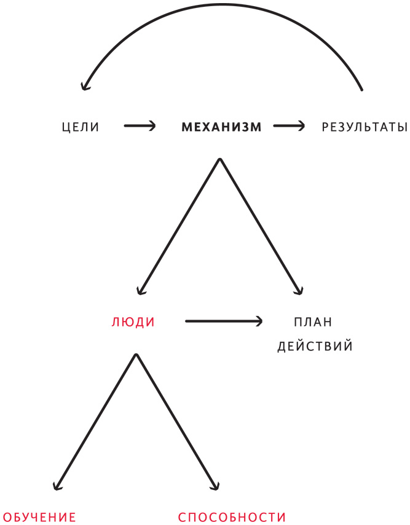
b. Распространенная ошибка заключается в том, чтобы обучать и проверять неэффективного сотрудника, пытаясь понять, может ли он приобрести необходимые навыки, но при этом не оценивать его способности. Определить и оценить навыки довольно легко. С оценкой способностей, особенно тех, за которые отвечает правое полушарие головного мозга, не все так просто. Когда вы анализируете, в чем причина неэффективности сотрудника, оценивайте, нет ли проблем со способностями.
9.8. Если вы достигли согласия с сотрудником в оценке его слабостей, это, скорее всего, объективная оценка
Когда вы достигли согласия с сотрудником, это хороший признак того, что вы получили объективную картину, и это может считаться настоящим достижением. Это одна из основных причин, почему сотрудник, которого оценивают, должен быть равноправным участником этого процесса. Зафиксируйте ваше согласие документально. Эта информация станет фундаментом будущего успеха.
a. При оценке сотрудников нет необходимости углубляться до такой степени, чтобы не осталось ни тени сомнения. Достигнуть полного понимания все равно невозможно, вы только потеряете время и затормозите прогресс. Вместо этого составьте общее представление о человеке, с которым он будет согласен и на которое вы сможете положиться, а по мере необходимости уделяйте время тому, чтобы развить свое понимание.
b. У вас уйдет не меньше года, чтобы узнать, что представляет собой человек и насколько он подходит для какой-то работы. Вы должны быть способны примерно оценить способности сотрудника после полугода-года близкого общения с ним, многочисленных тестов и попытки настроиться на одну волну. На более точную оценку уйдет примерно полтора года. Хотя, конечно, многое зависит от характера работы, от самого человека, времени вашего общения и того, насколько вам удалось понять друг друга.
c. Продолжайте оценивать сотрудников, даже когда они работают в компании на постоянной должности. Когда вы лучше узнаете своих сотрудников, вы сможете более эффективно обучать их и направлять. Более важно, что вы сможете точнее определять их способности и ценности и то, насколько они соответствуют вашим. Не стоит полагаться на свои первые оценки. Постоянно задавайте себе вопрос: вы бы наняли этого человека на эту должность, зная то, что знаете сейчас? Если нет, он не должен ее занимать.
d. Оценивайте сотрудников так же тщательно, как кандидатов. Меня всегда озадачивало, что люди, проводящие собеседования, свободно и уверенно критикуют кандидатов, даже не зная их, но не готовы критиковать сотрудников за такие же оплошности, даже имея больше доказательств. Так происходит, потому что они считают критику вредной и стремятся защитить своих коллег, а не чужаков. Если вы считаете, что объективность – лучший вариант для всех, тогда вы должны понимать ошибочность этого подхода и то, почему честный, регулярный процесс оценки настолько важен.
9.9. Обучайте и направляйте сотрудников или расставайтесь с ними, не занимайтесь реабилитацией
Обучение – часть плана по развитию навыков сотрудника для стимулирования его персонального развития. Реабилитация – это попытка вызвать значительные изменения в ценностях и/или способностях человека. Поскольку ценности и способности практически не поддаются изменениям, проводить процесс реабилитации обычно не имеет смысла. Люди, с которыми вы не разделяете общие ценности и которые не обладают нужными способностями, оказывают разрушающее действие на компанию, а потому с ними нужно расставаться. Если вы все-таки беретесь за реабилитацию, предпочтительнее, чтобы ею на протяжении длительного времени занимались профессионалы.
Если вы ожидаете, что в ближайшем будущем кто-то станет гораздо лучше, чем прежде, скорее всего, вы допускаете серьезную ошибку. Люди, действующие определенным образом, вероятно, продолжат так поступать, потому что поведение отражает их внутреннюю суть. Люди обычно меняются очень неторопливо, вам придется ждать долго. Вместо этого стоит заменить людей или план действий. Поскольку менять план, чтобы приспособиться к слабым сторонам сотрудников, обычно не очень удачная идея, лучше всего начните классифицировать тех, кто работает на вас. В некоторых случаях хорошие сотрудники теряют должности, потому что не могут достаточно быстро развиться до уровня ответственного лица. Некоторые из них могут эффективно выполнять другие обязанности, и тогда им можно предложить другую позицию в компании, а с некоторыми из них мы расстаемся.
a. Не собирайте людей. Гораздо хуже оставить сотрудника на позиции, которой он не соответствует, чем уволить его или перевести на другую должность. В этих обстоятельствах вы несете огромные издержки: финансовые – из-за неэффективности работы, вы тратите время и деньги на обучение, кроме того, гораздо сложнее расставаться с человеком, с которым вы проработали вместе, скажем, пять лет или хотя бы больше чем год. Когда человек остается на позиции, которой не соответствует, это плохо для него самого, так как он живет в вымышленной реальности и не растет личностно. Это плохо и для компании, так как подрывает принцип меритократии идей, и за это расплачиваются все. Не попадайте в эту ловушку. Всегда найдется сотрудник, который вам подойдет. Не снижайте стандарты качества и не становитесь чьим-то заложником.
b. Будьте готовы «расставаться с любимыми». Непросто увольнять людей, которые вам небезразличны. Сложно расстаться с человеком, с которым у вас сложились хорошие отношения, но который не высококлассный специалист, однако это необходимо для поддержания высоких стандартов компании в долгосрочной перспективе. Возможно, вы нуждаетесь в их усилиях (даже если это не работа высшего качества) и вам трудно решиться на перемены. Но это начнет разрушать корпоративный дух, и они могут подвести в тот момент, когда будут больше всего вам нужны.
Это один из болезненных, но необходимых шагов. Лучшее, что вы можете сделать, – это отнестись к этим людям внимательно, чтобы ситуация пошла им на пользу.
c. Когда сотрудник не справляется с работой, проанализируйте, можно ли предложить ему позицию, на которой он будет более эффективен, или его следует уволить. Если человек не справляется с работой, причина в его качествах. Вам нужно понять, что это за качества, и сделать так, чтобы подобное не повторилось. Кроме того, если для вас очевидно, что у сотрудника нет потенциала для роста и развития, не позволяйте ему занимать место того, у кого такой потенциал есть.
Помните, что вы подбираете людей, с которыми готовы разделить свою жизнь. Со временем все меняются. Поскольку руководитель начинает лучше понимать сильные и слабые стороны новичка и то, как он вписывается в корпоративную культуру (не после собеседований, а уже в реальной работе), он может предложить сотруднику более подходящую должность, если с той, на которую его брали, он не справляется.
Каждый раз, когда сотрудник не справляется со своими обязанностями, важно понять, почему так произошло и не вызовут ли эти причины похожие проблемы на другой должности.
d. С осторожностью давайте сотрудникам второй шанс после провала. Обратите внимание: я говорю «с осторожностью», я не говорю категорическое «никогда», так как многое зависит от обстоятельств. С одной стороны, нужно дать людям возможность выйти из зоны комфорта и попробовать себя в новой роли. Однако, с другой стороны, если посмотреть, как ведут себя в этой ситуации большинство людей, вы, скорее всего, будете сожалеть, что дали сотруднику второй шанс.
Это происходит по трем причинам: 1) вы не даете возможность другому человеку с более высоким потенциалом, а сотрудник с потенциалом роста и развития всегда лучше, чем им не обладающий; 2) сотрудник, которому вы даете второй шанс, может захотеть продолжать делать то, с чем он просто не справляется, и есть риск, что он будет заниматься работой, для которой не подходит; 3) у сотрудника может возникнуть ощущение принуждения и недовольство, если он снова делает работу, где у него нет шансов продвинуться. Удержать такого сотрудника обычно считается предпочтительным решением в краткосрочной перспективе, однако с точки зрения долгосрочного результата это ошибка. Это непростое решение. Вы должны четко понимать, что за сотрудник оказался в этой ситуации, и, прежде чем принять решение, взвесить все за и против.
9.10. Цель перевода сотрудника на новую позицию – максимальное использование его потенциала на благо компании в целом
Оба заинтересованных руководителя должны быть едины во мнении, что перевод сотрудника на новую должность будет способствовать более полному использованию его потенциала. Руководитель, желающий взять сотрудника на новую позицию, не должен дестабилизировать ситуацию. Неформальное общение, чтобы узнать, заинтересован ли сотрудник в предложении, не возбраняется, но не следует разворачивать активный рекрутинговый процесс, пока не достигнуто согласие с действующим руководителем этого человека. Момент перехода на новую позицию должен определить действующий руководитель после консультации со всеми заинтересованными сторонами.
a. Прежде чем перейти на новую позицию, сотрудник должен выполнить свои обязательства. Переход на новую должность всегда должен происходить постепенно и последовательно, если только в ином нет острой необходимости (например, когда сотрудник лучше всего подходит для выполнения работы, к которой требуется приступить немедленно). В компании, которая динамично развивается и где люди должны открыто высказывать свое мнение, вполне естественно, всегда существует множество возможностей для перехода на новую должность. Однако если все сотрудники начнут перепрыгивать с одной должности на другую, не выполняя при этом взятые на себя обязательства, получившийся хаос окажется губительным для руководителей, корпоративной культуры компании и самих сотрудников, потому что они не смогут проверить свою способность доводить задачи до завершения.
Сотруднику следует провести не меньше года в своей должности, прежде чем заводить разговор о другой позиции. Тем не менее не считайте это непреложной истиной – все зависит от конкретных обстоятельств.
9.11. Не снижайте планку
В любых отношениях наступает момент, когда приходится принимать решение, подходите ли вы друг другу. Так происходит в личных отношениях и в любой компании, которая придерживается высоких стандартов качества. В Bridgewater мы знаем, что не можем идти на компромисс в том, что касается основных правил нашей корпоративной культуры. Так что, если за приемлемое время человек не научился действовать в рамках наших требований абсолютной честности и предельной прозрачности, нам приходится с ним расстаться.
Придерживаться принципа «жестко, но справедливо» сложнее всего, но это лучшее, что вы можете сделать для своих сотрудников.
Создание и совершенствование механизма
* * *
Подавляющее большинство людей попадают в водоворот происходящих с ними событий и плывут по течению. А успешные поднимаются над этим водоворотом так, что видят существующие причинно-следственные связи. Этот более высокий уровень позволяет им рассматривать себя и окружающих как механизм и дает понимание, кто способен или не способен справиться с определенной задачей и как люди могут взаимодействовать, чтобы добиться оптимального результата.
Теперь, когда вы узнали наилучшие подходы к двум ключевым компонентам вашего механизма – культуре и людям, – я хочу остановиться на принципах управления этим механизмом и его совершенствовании.
В следующей главе я объясню принципы мышления более высокого уровня, с помощью которого вы сможете создать концепцию компании как механизма. Это не просто умственный эксперимент: эта концепция оказывает важное практическое влияние на то, как вы управляете командой, распределяете функции, ответственность и рабочие задачи.
В главе 10 я покажу, как применить этот подход к организационной структуре на самом высоком уровне.
После того как вы поняли, как создать механизм и управлять им, следующая задача – понять, как его можно улучшить. Мы делаем это при помощи процесса из пяти этапов, который я уже описывал ранее: 1) ставим цели; 2) выявляем проблемы; 3) анализируем эти проблемы, чтобы понять их причины; 4) разрабатываем план, чтобы справиться с этими проблемами; 5) делаем все необходимое. Возьмите любую известную вам компанию, и вы увидите, что она с тем или иным успехом проходит эти стадии развития. В мире полно компаний, которые когда-то были успешными, но затем сошли с Олимпа, когда их изначально высокие стандарты перестали соответствовать ожиданиям, а руководство не смогло адаптироваться к ситуации, заменив людей и план действий. Справедливости ради, есть редкие примеры компаний, которые непрерывно меняют себя и добиваются новых высот.
В следующих главах я расскажу, как «Пять шагов» работают в компании и что вы должны сделать для максимальной их эффективности. Оценивайте механизм, как это делал бы инженер: сравнивайте полученный результат с целью и постоянно меняйте людей и образ действий, чтобы добиться лучшего результата. Важнее всего то, что вы должны «дирижировать» сотрудниками. От того, насколько хорошо вы это делаете, будет зависеть ваш успех.
Наконец, две главы будут посвящены принципу меритократии идей и его действию в повседневной жизни и на стратегическом уровне. В главе 15 рассматривается важность систематизации и инструментов, чтобы принцип меритократии был реализован должным образом. В главе 16 я объясню, что, хотя изначально я недооценивал важность руководства и контроля для эффективной работы компании в долгосрочной перспективе, когда я отошел от операционного управления, я вывел ряд важных принципов, каким должен быть менеджмент в условиях меритократии идей.
10. Для достижения цели руководите так, словно вы управляете механизмом
* * *
Неважно, чем конкретно вы занимаетесь, на высшем уровне вы просто устанавливаете цели и разрабатываете механизмы для их достижения. Я выстроил механизм, которым стала компания Bridgewater, благодаря постоянному сравнению фактических итогов с ментальной картой тех результатов, которых должен достигать этот механизм, и его совершенствованию с учетом этого.
Рекомендации по постановке целей, которые я давал в части, посвященной жизненным принципам, в равной степени применимы к целям компании и персональным. Я не скажу ничего нового о том, как вам устанавливать цели для компании. Хотя подчеркну, что при управлении ею вы и люди, с которыми вы работаете, должны четко понимать, как ваши операционные цели – будь то снижение себестоимости производства продукции, повышение степени удовлетворенности сотрудников, помощь конкретному числу нуждающихся и так далее – соотносятся с вашими масштабными целями и ценностями.
Каким бы качественным ни был план действий, у вашего механизма будут возникать проблемы. Это неизбежно. Вы или другой хороший механик должны уметь определить эти проблемы и залезть «под капот», чтобы диагностировать причины. Вы или тот, кто проводит диагностику проблем, должны понимать, что представляют собой части механизма – люди и план действий – и как они взаимодействуют в работе на результат. Самая важная составляющая – это люди, так как всё, включая план действий, исходит от них. Пока у вас не сложится четкого понимания этого механизма с более высокого уровня – вы должны уметь визуализировать все его составляющие и то, как они работают вместе, – вы неизбежно будете допускать ошибки в диагностике и не сможете реализовать свой потенциал.
В Bridgewater фундаментальная цель всех наших механизмов – производить результат наилучшего качества для наших клиентов, что выражается в показателях рентабельности их инвестиций, а также в качестве наших взаимоотношений и едином векторе понимания глобальной экономики и рынков в более широком контексте. На первое место наша компания ставит высокие стандарты качества. Поддержание этих стандартов всегда было для нас ответственной задачей, особенно в условиях, когда рост компании и связанные с ним перемены ускорились. Далее я предложу вам кейс из практики Bridgewater, когда мы столкнулись с падением качества обслуживания клиентов, и то, как нам удалось выйти из этой ситуации, улучшив механизм при помощи «Пяти шагов».
Однако сначала позвольте поделиться с вами общими принципами создания и развития механизма, каким и бывает любая компания.
10.1. Оценивайте механизм и себя в нем с более высокого уровня
Мышление более высокого уровня – это не мышление сверхлюдей. Это просто умение увидеть ситуацию в целом. Представьте, что вы смотрите на изображение себя и окружающего вас мира из космоса. С этого расстояния вы способны разглядеть, как соотносятся континенты, страны и моря. Затем вы можете получить более детальную картинку, приближая изображение так, чтобы увидеть свою страну, город, район и наконец место, где вы находитесь. Эта макроперспектива позволит вам сделать гораздо более глубокие выводы, чем когда вы просто оглядываетесь вокруг.
a. Постоянно сравнивайте фактический результат и цель. В любой момент вы должны одновременно стремиться к достижению цели и оценивать эффективность людей и плана, так как любой результат будет показателем работы механизма. Каждый раз, когда вы обнаруживаете проблему, вам необходимо определить, вызвана она ошибкой в плане действий или тем, как люди исполняют свои обязанности.
Размер выборки имеет значение. Любая проблема может носить разовый характер или быть симптомом причины, которая вызовет ее повторение. Если вы проанализируете достаточное число проблем, вы будете быстро их классифицировать.
b. Отличный руководитель – это, по сути, инженер. Отличный руководитель – это не философ, не массовик-затейник, не исполнитель и не художник. Это инженер. Он воспринимает компанию как механизм и педантично работает над его сохранением и улучшением. Он создает технологические карты процессов, чтобы показать, как работает этот механизм, и оценить план действий. Он разрабатывает показатели, чтобы прояснить, насколько эффективно функционирует каждая из составляющих (главным образом люди) и механизм в целом. И он непрерывно изучает образ действий и людей, чтобы сделать и то и другое лучше.
Он делает это не случайным образом, а системно, с позиции причинно-следственных отношений. И хотя ему глубоко небезразличны люди, вовлеченные в процесс, он не может позволить своим чувствам или желанию избавить этих людей от неприятных эмоций препятствовать непрерывному совершенствованию механизма. Если он будет поступать иначе, это принесет только вред и отдельным людям, и всей команде.
Конечно, чем более высокую ступень в управленческой иерархии компании вы занимаете, тем более важно, чтобы вы обладали масштабным видением и нестандартным мышлением, но при этом у вас все равно должны быть навыки для хорошего управления сотрудниками (умение «дирижировать»). У одних молодых предпринимателей сначала есть только масштабное видение и нестандартное мышление, а затем развиваются управленческие навыки по мере того, как их компания растет. У других изначально есть менеджерские навыки, а видение развивается, когда они продвигаются вверх по карьерной лестнице. Тем не менее, подобно великим музыкантам, успешные руководители должны обладать и творческими, и техническими навыками. И ни один руководитель ни на одном уровне не добьется успеха без набора навыков, свойственных инженеру по организации процесса.
c. Разрабатывайте системы показателей. Показатели отражают, насколько эффективно работает механизм, и в случае необходимости выполняют роль сигнальных лампочек на панели управления. Показатели представляют собой объективный способ оценки и оказывают положительное влияние на производительность. Если вы создали правильный набор показателей, то будете получать настолько полную и точную картину того, что делают ваши сотрудники и насколько успешно, что практически сможете выстроить весь менеджмент на одних только показателях.
Устанавливая показатели, подумайте, на какие самые важные вопросы вам нужно получить ответы, чтобы знать, как идет процесс, а также решите, какие цифры вас устроят. Не смотрите на те, которые у вас уже есть, и не пытайтесь подогнать их под ваши цели, потому что так вы не получите того, к чему стремитесь. Вместо этого начните с самых важных вопросов и подумайте, какие показатели дадут на них ответы.
Помните, что единичный показатель может ввести вас в заблуждение. У вас должно быть достаточно данных для установления закономерностей. И, конечно же, данные, на основе которых устанавливаются показатели, должны быть проверены на точность. Нежелание высказывать критику можно с легкостью определить, если взглянуть на среднюю оценку, которую дал каждый их выставляющий: те, у кого средний балл выше, обычно придерживаются менее критического подхода, и наоборот. Полезными могут быть механизмы оценки, когда каждый сотрудник оценивает эффективность своих коллег от лучшего результата к худшему. По сути, это примерно то же самое, что выстраивание кривой распределения. Особенно полезна система показателей, позволяющая выстроить независимое распределение между департаментами и группами.
d. Не стоит уделять слишком много внимания повседневным задачам, упуская из виду механизм. Если вы слишком поглощены отдельными задачами, вы неизбежно увязнете в трясине мелких дел. Если вместо этого вы займетесь созданием механизма и управлением им, вы будете многократно вознаграждены.
e. Не отвлекайтесь на яркие безделушки. Каким бы качественным ни был проект или план, всегда неожиданно появляется что-то, что кажется самым важным, срочным или привлекательным, на чем хочется сконцентрироваться. Эти яркие безделушки могут быть ловушкой, способной отвлечь от системного мышления, так что не теряйте бдительности и не дайте себя обмануть.
10.2. В любой ситуации ваш подход должен решать две задачи:
1) приближать вас к вашей цели и 2) обучать и проверять механизм (людей и план действий). Вторая задача важнее первой, потому что только так вы сможете создать устойчивую компанию, способную эффективно работать в любых обстоятельствах. Большинство людей концентрируются на первой задаче, что становится серьезной ошибкой.
a. Любая ситуация – это анализ практического примера (case study). Подумайте, к какому типу относится эта ситуация и какие принципы к ней применимы. Действуя подобным образом и помогая другим поступать так же, вы учитесь более эффективному управлению разными ситуациями, так как со временем они неизбежно повторяются снова и снова.
b. При возникновении проблемы ведите обсуждение на двух уровнях: 1) механизма (почему был получен такой результат), 2) конкретной ситуации (что с ней делать). Не совершайте ошибку и не обсуждайте только конкретную ситуацию, так как в этом случае вы занимаетесь микроменеджментом (вы думаете за своих подчиненных, и они могут ошибочно решить, что это нормально). При обсуждении на уровне механизма четко обозначьте, каким должен был быть результат, и проанализируйте, почему что-то пошло не так. Если вам нужно срочно принять решение, что делать, и дать поручение подчиненному, обязательно объясните, что вы делаете и почему.
c. Устанавливая правила, объясняйте принципы, лежащие в их основе. Ваши сотрудники должны не просто безропотно подчиняться корпоративным правилам, а быть мотивированы, чтобы осознанно следовать им и стимулировать на это других, а также работать над их совершенствованием. Этого можно добиться с помощью рациональных принципов, которые прошли проверку при открытом обсуждении.
d. Ваши методы должны быть естественным продолжением ваших принципов. Принципы имеют иерархический характер: какие-то из них глобальные, а какие-то менее важные. При этом все они лежат в основе методов, которыми вы руководствуетесь при принятии решений. Рекомендую вам тщательно обдумать эти методы, чтобы они были согласованы между собой, а также с принципами, из которых они следуют.
Если вы столкнулись с ситуацией, которая не регламентируется конкретным методом (например, что делать, если сотрудник, в чьи рабочие обязанности входят командировки, не может совершать дальние поездки из-за риска для здоровья), нельзя просто принять первое решение, которое пришло в голову, без учета важнейших принципов. Формировать способы действий надо так же, как систему прецедентного права: постепенно и последовательно, изучая конкретные случаи и интерпретируя применение закона к ним.
Я старался действовать именно так. В конкретной ситуации я формулировал принципы, которыми руководствовался для ее разрешения, и выяснял мнения остальных, согласны они или мы должны скорректировать правила, чтобы их улучшить. В целом именно так развивались все принципы и методы в Bridgewater.
e. Хотя хорошие принципы и методы практически всегда обеспечивают хорошее руководство, из любого правила бывают исключения. Несмотря на то что каждый сотрудник имеет право самостоятельно добираться до сути и фактически обязан спорить с принципами и методами, если они противоречат подходу, который он считает лучшим, – это не то же самое, что иметь право менять их. Корректировки в методах должны быть одобрены теми, кто их утвердил (или теми, кто несет ответственность за их развитие).
Тот, кто хочет изменить важный метод в Bridgewater, должен сформулировать альтернативное предложение и выдвинуть его на рассмотрение правления.
Исключения должны носить единичный характер: если их слишком много, это снижает эффективность методов. Правление официально рассматривает предложение и либо отклоняет его, либо корректирует, либо принимает.
10.3. Вы должны понимать разницу между менеджментом, микроменеджментом и отсутствием менеджмента
Хороший руководитель управляет, а не делает сам. Его можно сравнить с дирижером, который сам не играет на музыкальном инструменте, а организует процесс, так чтобы музыканты слаженно играли вместе. Микроменеджмент заключается в том, что вы указываете своим прямым подчиненным, что им делать, или выполняете работу за них. Отсутствие менеджмента – это разрешение сотрудникам выполнять свои обязанности без контроля или участия с вашей стороны. Чтобы быть успешным, вы должны понимать эту разницу и выбрать правильный уровень управления.
a. Руководитель должен быть уверен, что задачи из его области ответственности выполняются качественно. Он может обеспечить это тремя путями: 1) качественно управляя другими (как говорилось выше); 2) выполняя работу самостоятельно, потому что другие с ней не справятся; 3) передав на уровень выше то, чем он сам хорошо управлять не в состоянии. Первый путь оптимальный. Второй сигнализирует, что нужно менять людей и план работы. Третий путь сложнее, но без этого не обойтись.
b. Управлять людьми, находящимися в непосредственном подчинении, все равно что ехать с ними вместе на лыжах. Чтобы вы могли оценить сильные и слабые стороны своих непосредственных подчиненных, когда они выполняют работу, у вас должен установиться с ними такой же тесный контакт, как у инструктора по горным лыжам с его учениками на склоне. Между вами должен постоянно происходить обмен мнениями по мере того, как они учатся методом проб и ошибок. Со временем вы поймете, в чем им можно дать самостоятельность, а в чем нет.
c. Из опытного лыжника с большей вероятностью получится хороший тренер по лыжам, чем из новичка. Принцип компетентности применим и к области управления. Чем лучше ваши достижения, тем более ценным наставником вы можете стать.
d. Делегируйте детали. Если вы увязли в деталях, либо у вас проблемы с управлением или обучением, либо работу выполняют не те люди. Настоящий признак эффективного руководителя – ему практически ничего не приходится делать самому. Необходимость вовлекаться в детали должна стать для руководителя плохим сигналом.
В то же время есть риск, что, делегируя детали, вы отстранитесь от того, что важно, и, по сути, перестанете руководить вовсе. Хороший менеджер понимает эту разницу. Он стремится нанимать сотрудников, обучать и контролировать их так, чтобы они как можно больше делали самостоятельно.
10.4. Узнайте своих сотрудников как можно лучше и поймите, что их мотивирует, потому что люди – самый важный ресурс
Составьте полный профиль каждого сотрудника: его ценности, способности и навыки. Эти качества определяют поведение человека, поэтому если вы будете их знать, то поймете, с какими обязанностями этот сотрудник справится отлично, какую работу ему поручать не следует и как лучше организовать его обучение. Информация в профилях должна корректироваться по мере того, как меняется сотрудник.
Если вы не знаете работающих у вас людей, вы не знаете, чего можете от них ожидать. Если вы действуете вслепую, то в том, что вы не получили желаемый результат, вините только себя.
a. Регулярно «сверяйте часы» с каждым сотрудником, который важен для вас и компании. Разговаривайте с вашими ключевыми сотрудниками и обсуждайте с ними все, что их беспокоит. Возможно, вы и понятия не имеете об этих проблемах или человек, которого они волнуют, неправильно понимает ситуацию. В любом случае важно открыто их обсудить.
b. Проверьте, насколько вы можете быть уверены в сотрудниках, не стройте предположений. Руководитель не должен делегировать обязанности людям, которых не знает. Чтобы понять, насколько можно доверять человеку, нужно время. Иногда новичков обижает, что руководитель не уверен в них. Они воспринимают это как критику в адрес своих способностей, тогда как со стороны руководителя это просто реалистичное отношение: он еще недостаточно узнал нового сотрудника, чтобы сформировать свое мнение о нем.
c. Степень вашей вовлеченности должна зависеть от степени уверенности в сотруднике. Менеджмент преимущественно состоит из отслеживания и проверки всего, за что отвечает руководитель. Вам следует варьировать степень своей вовлеченности, уделять больше внимания сотрудникам и областям, в которых вас что-то насторожило, и давать больше самостоятельности людям, в которых уверены. В Bridgewater с помощью целого ряда инструментов (Issue Log («Журнал возникающих вопросов»), показатели, ежедневные обзоры, контрольные списки) мы получаем объективные данные о результативности нашей деятельности. Руководители должны регулярно с ними знакомиться и делать выборочную проверку.
10.5. Четко распределяйте обязанности
Не должно быть никакой путаницы относительно ожиданий. Кроме того, неудачу в достижении поставленных целей или выполнении рабочих задач сотрудник должен воспринимать как личный провал. Самый важный человек в команде тот, на ком лежит ответственность за выполнение миссии. У него должно быть свое видение, чтобы понимать, что должно быть сделано, и дисциплина, чтобы этого добиться.
a. Помните, кто за что отвечает. Хотя это кажется очевидным, часто сотрудники забывают о своих прямых обязанностях. Даже топ-менеджеры иногда напоминают детей, которые только учатся играть в футбол: они бегут за мячом в попытке помочь, но забывают, на какой позиции должны играть. Это способно только ухудшить результат. Так что убедитесь, что сотрудники помнят о командной работе и эффективно действуют каждый на своем месте.
b. Следите за изменением рабочих обязанностей. В некоторых случаях рабочие обязанности сотрудников могут измениться без предварительного обсуждения или согласования, в основном из-за сложившихся обстоятельств или временной необходимости. Часто это ведет к тому, что сотрудники начинают заниматься тем, с чем не могут справиться, а также к путанице, кто за что отвечает.
10.6. Непрерывно тестируйте механизм, чтобы понять, чего вы можете от него ожидать
Постоянно проверяйте непосредственных подчиненных, при этом они должны понимать, что им самим и компании в целом на пользу открытое обсуждение проблем и ошибок. Это необходимо, чтобы гарантированно получать ожидаемый результат, даже от сотрудников, которые справляются со своей работой на отлично (хотя им можно дать немного больше самостоятельности).
Этот процесс не должен быть однонаправленным. Ваши подчиненные тоже должны ставить перед вами сложные задачи, чтобы вы стремились максимально раскрыть свой потенциал. Это поможет им понять, что они несут такую же ответственность за поиск эффективных решений, как и вы. Всегда легче оставаться зрителем, чем стать игроком. Заставляя их «выходить на поле», вы усиливаете всю команду.
a. Достигните достаточного уровня понимания. Чтобы принимать информированные решения в любой области, которой вы управляете, вы должны понимать происходящие процессы, людей и проблемы. В противном случае вы будете принимать за чистую монету все байки и оправдания, которые вам будут рассказывать.
b. Не держите слишком большую дистанцию. Вы должны очень хорошо знать своих сотрудников, регулярно давать и получать обратную связь и проводить обсуждения по существу. И хотя нельзя опускаться до уровня сплетен, у вас должна быть возможность быстро получить информацию от нужных сотрудников. Если у вас не выстроятся такие рабочие отношения, вы рискуете потерять управление. Разработанные инструменты дают мне представление, чем занимаются сотрудники и что они собой представляют, и я решаю возникающие проблемы.
c. Используйте ежедневные обзоры, чтобы быть в курсе, что делают и думают ваши сотрудники. Каждого своего прямого подчиненного я прошу потратить 10–15 минут на составление краткого обзора, что он сделал за день, с какими проблемами столкнулся и что по этому поводу думает. Читая эти обзоры и сопоставляя разные мнения относительно вопросов, над которыми сотрудники работают вместе, я могу судить об эффективности их совместной работы, о настрое и о том, за какие ниточки я должен потянуть.
d. Будьте готовы к возможным проблемам до того, как они возникнут. Если проблемы застают вас врасплох, вероятно, это происходит потому, что вы слишком дистанцировались от людей и процессов или не смогли адекватно представить, как люди и процессы могут производить разные результаты. В кризисные моменты у вас должен быть налажен настолько близкий контакт, чтобы не осталось места для сюрпризов.
e. Изучите на один уровень ниже ваших прямых подчиненных. Вы не сможете понять, как ваш непосредственный подчиненный управляет другими людьми, пока не узнаете его прямых подчиненных и не понаблюдаете за их поведением.
f. Непосредственные подчиненные тех людей, которые отчитываются перед вами, должны иметь возможность обратиться к вам с возникшими проблемами. Это отличная и полезная форма ответственности, идущей снизу вверх.
g. Не верьте людям на слово. Ответы, которые вам предлагают, могут быть ошибочными, так что время от времени проверяйте информацию повторно, особенно если она кажется вам сомнительной. Некоторые руководители неохотно занимаются этим, считая такой подход проявлением недоверия к сотрудникам. На это я могу ответить, что именно так доверие можно завоевать или утратить. Если сотрудники знают, что вы можете перепроверить их информацию, они будут готовиться тщательнее, а вы поймете, на кого можете положиться.
h. Учитесь слышать. Со временем вы научитесь выделять те вербальные конструкции, которые сигнализируют, что сотрудник настроен скептически или не смог правильно применить нужные принципы. Например, обезличенное «мы» – явный сигнал, что человек пытается избежать признания ошибки.
i. Лучше, если ваши проверки будут прозрачными, а не частными. Это помогает обеспечить их качество (так как другие могут прийти к собственным выводам) и укрепит атмосферу честности и прозрачности.
j. Приветствуйте проверки. Важно положительно относиться к факту, что вас кто-то проверяет, поскольку никто не может оценивать себя объективно. При проверке важно сохранять спокойствие. Вероятно, реакция эмоционального низшего «я» будет примерно такой: «Ты придурок, потому что ты против меня и заставляешь меня чувствовать себя некомфортно». В то время как высшее «я» должно думать: «Замечательно, что мы можем настолько честно обменяться мнениями и убедиться, что я все делаю правильно». Прислушайтесь к своему высшему «я» и не забывайте, что человеку, который вас проверяет, тоже очень непросто. Если вы спокойно пройдете этот процесс, это пойдет на пользу компании, вашим отношениям с человеком, который проводил проверку, и закалит ваш характер.
k. Помните, что людям, которые придерживаются определенного образа мышления и действий, может быть сложно общаться с теми, кто мыслит и действует по-другому. Представьте, что вы должны объяснить, на что похож аромат розы, человеку, лишенному обоняния. При всей точности вашего описания оно не сравнится с практическим опытом. То же самое касается разницы в образе мышления. Это похоже на «слепые зоны»: если у вас есть «слепая зона» (а они есть у всех), вам сложно понять, что находится внутри ее пределов. Работа с этой разницей требует безграничного терпения и непредубежденности, а также выслушивания мнений других людей, способных дополнить картину.
l. Тяните за все подозрительные ниточки. Это полезно делать, потому что: 1) мелкие неприятности могут быть признаком серьезных глубинных проблем; 2) разрешение небольших разногласий в восприятии может предотвратить серьезное расхождение во взглядах; 3) когда вы стремитесь создать корпоративную культуру с приоритетом в виде высокого качества, необходимо постоянно выявлять проблемы и разрешать их, какими бы незначительными они ни казались (в противном случае вы рискуете подать пример, что приемлете посредственность).
Определение приоритетов может стать ловушкой, если это заставляет вас игнорировать проблемы. Если вы позволите себе не обращать внимания на мелкие неурядицы, это создаст ощущение, что терпеть подобные вещи вполне допустимо. Представьте, что все ваши незначительные проблемы – это мелкий мусор, на который вы наступаете, проходя по дому. Конечно, то, что находится в конце пути, может быть чрезвычайно важным, но вам ничего не стоит подобрать и выкинуть мусор по пути. Если вы будете укреплять корпоративную культуру, ориентированную на высокое качество, вы получите положительные последствия второго и третьего порядка, что благоприятно скажется на компании в целом. В то время как нет необходимости убирать абсолютно весь мусор, вы должны постоянно помнить, что идете по мусору и что вам, вероятно, не составит труда хотя бы что-то выборочно поднять и выбросить.
m. Не забывайте, что проблему можно решить разными способами. Ваша оценка того, как ответственные лица справляются со своей работой, должна основываться не на том, делают ли они это по-вашему, а на том, насколько эффективен их способ. Если человек делает что-то и добивается успеха, не надо пытаться его переучивать. Это все равно что настаивать, чтобы Бейб Рут улучшил свой замах.
10.7. Думайте как владелец компании и ожидайте этого от своих сотрудников
Реальность такова, что, если вас не настигают последствия ваших действий, вы будете преуменьшать степень своей ответственности за них. Если вы сотрудник и получаете зарплату за то, что приходите на работу и угождаете боссу, вы неизменно начнете действовать в рамках этой причинно-следственной связи. Если вы руководитель, создайте такую систему стимулов и штрафов, чтобы мотивировать сотрудников нести полную ответственность за то, что они делают. Это включает конкретные аспекты: относиться к расходам, словно они тратят личные деньги, и сделать так, чтобы их задачами не пренебрегали, когда их нет в офисе. Когда сотрудник отдает себе отчет, что его личное благосостояние напрямую связано с благосостоянием компании, он начинает мыслить как собственник.
a. Отпуск сотрудника – не повод, чтобы его обязанности не выполнялись. Когда сотрудник начинает мыслить как владелец, он заботится о том, чтобы его обязанности были выполнены в любых обстоятельствах. Вы должны организовать процесс так, чтобы работа продолжалась в штатном режиме, даже когда вы в отпуске. Это можно обеспечить с помощью хорошего планирования и координации до отъезда, сохраняя контроль, когда вас нет на месте. Это не требует много времени: достаточно обойтись часовой удаленной проверкой и даже не каждый день, так что обычно это можно делать, когда вам удобно.
b. Заставляйте себя и своих сотрудников прыгать выше головы. Это основной закон природы: если хотите стать сильнее, нужно действовать на пределе возможностей. Чтобы быть в форме, вы с коллегами должны относиться друг к другу как тренер к спортсменам.
10.8. Застрахуйтесь от риска ухода ключевых сотрудников
На каждого ключевого сотрудника должен быть хотя бы один человек, который сможет его заменить. Лучше всего, если он будет официально иметь статус вероятного преемника, а также пройдет соответствующую стажировку и получит необходимую помощь.
10.9. Не относитесь ко всем одинаково – цените каждого по заслугам
Часто можно услышать, что несправедливо и неправильно относиться к людям по-разному. Но чтобы относиться к людям справедливо, к ним нужно относиться по-разному. Все люди и обстоятельства, в которых они действуют, разные. Если бы вы были портным, вы же не стали бы предлагать всем одежду одного размера.
При этом важно относиться к людям, руководствуясь одними правилами. Поэтому я попытался расширить и углубить принципы, которым мы следуем в Bridgewater, чтобы они учитывали разные обстоятельства. Например, если сотрудник проработал в компании много лет, этот факт повлияет на отношение к нему. Точно так же, хотя я считаю любую ложь неприемлемой, я по-разному отношусь к разным ситуациям, когда меня обманывают, и к людям, которые это делают.
a. Не позволяйте себя шантажировать. На протяжении прошедших лет многие пытались угрожать мне увольнением, судебными исками, оглаской в прессе и бог знает чем еще. Хотя мне часто советовали просто спускать такие ситуации на тормозах, я считаю, что практически всегда такой подход недальновиден. Если вы идете на уступки, это не только подрывает ваши ценности, это сигнализирует, что правила изменились, и вы рискуете получить то же самое в еще большем объеме. Конечно, не всегда легко драться за то, что считаешь правильным. Но я готов получить пару ударов. Я хочу делать то, во что верю, а не переживать, что обо мне подумают.
b. Заботьтесь о людях, которые на вас работают. Если вы работаете с людьми, которые вам безразличны, возможно, вам стоит найти другую работу. Я готов прийти на помощь любому своему сотруднику, который в этом нуждается. Когда каждый действует исходя из этого принципа, формируются глубокие, конструктивные отношения. Проявление личного внимания в трудных жизненных обстоятельствах – это непременное условие.
10.10. Эффективное руководство отличается от стереотипного представления о нем
По моему мнению, то, что большинство людей вкладывают в понятие «хорошее руководство», не имеет ничего общего с эффективностью. Принято считать, что хороший руководитель – это сильный лидер, заражающий окружающих уверенностью в себе и мотивирующий следовать за ним/ней, при этом упор делается на слове «следовать». Руководитель в традиционном понимании расценивает вопросы или несогласие как угрозу и предпочитает, чтобы подчиненные просто делали, что им говорят. В продолжение этой парадигмы, руководитель несет бремя принятия решений. К сожалению, поскольку такие лидеры никогда не бывают настолько всезнающими, как хотят казаться, у подчиненных возникает разочарование и раздражение. Поэтому люди, которые когда-то любили своих харизматичных лидеров, часто стремятся от них избавиться.
Подобные традиционные отношения между руководителем и подчиненными прямо противоположны тем, которые должны сложиться для максимальной эффективности, а максимальная эффективность – это то, к чему должен стремиться лидер. Гораздо практичнее честно говорить о своей неуверенности, ошибках и слабостях, чем делать вид, что вы идеальны. Конструктивное обсуждение и критика необходимы руководителю, потому что только так он сможет проверить свою точку зрения и увидеть, что упустил.
Единственное, что, по моему мнению, руководитель делать не должен, – это манипулировать людьми. Иногда лидеры используют эмоции, чтобы мотивировать сотрудников сделать что-то, что те не стали бы делать, если бы логически проанализировали ситуацию. Когда вы работаете с умными людьми и придерживаетесь принципа меритократии идей, вы должны обращаться к их разуму, а не эмоциям.
Эффективный руководитель стремится 1) находить лучшие ответы, следуя принципу непредубежденности; 2) увлекать за собой других. Таким образом происходит обучение и достижение согласия. У действительно эффективного руководителя всегда бывает доля сомнений, но он хорошо подготовлен к работе с этими сомнениями и открыто их анализирует. При прочих равных условиях, думаю, что руководитель, который выглядит и действует как искусный ниндзя, победит того, который выглядит и действует как супермен с горой мышц.
a. Будьте одновременно сильным и слабым. Бывает, когда человек задает вопросы, чтобы понять общую картину, это воспринимается как слабость и нерешительность. Разумеется, это не так. Это необходимо, чтобы обрести мудрость, и это предпосылка к тому, чтобы стать сильным и решительным.
Всегда спрашивайте совета у тех, кто мудрее, и позволяйте тем, кто знает больше, управлять ситуацией. Ваша задача – как можно лучше во всем разобраться, чтобы принимать лучшие из возможных управленческие решения. Придерживайтесь принципа непредубежденности, но при этом умейте отстаивать свою точку зрения и согласуйте свои позиции с людьми, с которыми вы работаете, отдавая себе отчет, что в некоторых случаях далеко не все сотрудники могут быть с вами согласны.
b. Не переживайте, нравитесь вы своим сотрудникам или нет, и не оглядывайтесь на них, чтобы они говорили вам, что делать. Беспокойтесь только о том, чтобы принимать лучшие из возможных решений: что бы вы ни делали, всегда найдутся люди, которые будут уверены, что вы что-то (или всё) делаете неправильно. Такова природа человека: все пытаются склонить вас к собственной точке зрения и раздражаются, если не получается это сделать, даже если нет оснований считать мнение правильным. Так что, если вы хороший руководитель, не удивляйтесь, что кто-то с вами не согласен. Главное, мыслите логически и объективно оценивайте степень вероятности того, что вы правы.
Нет ничего нелогичного или высокомерного в том, чтобы считать, что вы знаете что-то лучше, чем среднестатистический человек, если вы придерживаетесь принципа непредубежденности. Фактически было бы нелогичным считать, что среднестатистический человек знает больше, чем вы и самые умные люди вокруг вас, ведь вы заслужили свое право занимать руководящую должность, кроме того, вы и умные люди вокруг вас гораздо лучше информированы. В противном случае вы и среднестатистический человек не работали бы каждый на своем месте. Иными словами, если бы вы не мыслили лучше, чем другие, вы не были бы руководителем, а если вы мыслите лучше остальных, не переживайте по поводу того, что вы принимаете непопулярные решения.
Итак, как вам следует вести себя с сотрудниками? Выбор невелик. Вы можете их игнорировать: это вызовет неприязнь, кроме того, вы не будете знать, что они думают. Вы можете безропотно идти у них на поводу – это не лучшая идея. Или же вы можете поощрять их высказывать свое несогласие и открыто и рационально убеждать их, пока все не признают относительные преимущества вашего образа мышления. Устраивайте открытые обсуждения и не переживайте, возьмет ли верх ваша точка зрения или нет, поскольку победят лучшие идеи. Я уверен, что принцип меритократии идей будет способствовать не только получению более эффективных результатов, чем в рамках любой другой системы, но он также обеспечит более высокую степень согласия и принятия правильных, хотя и непопулярных решений.
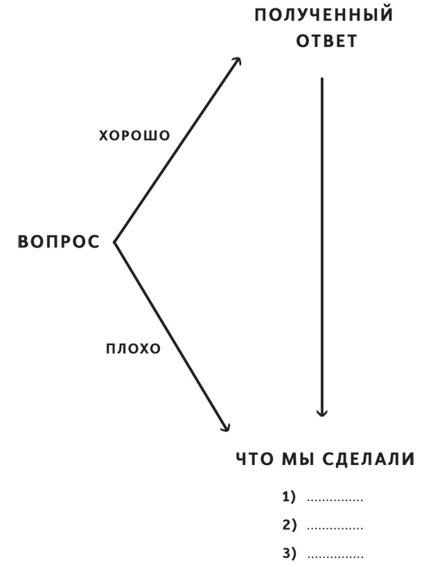
c. Не отдавайте приказы и не требуйте подчинения; стремитесь, чтобы вас поняли, и старайтесь понять других. Если вы хотите, чтобы другие слепо следовали за вами, руководствуясь эгоистическими побуждениями или считая это более подходящим стилем управления, в итоге вам придется заплатить за это высокую цену. Когда вы единственный мыслящий человек, это не может не сказаться на результатах.
Авторитарные руководители не обеспечивают своим подчиненным возможности для развития, это означает, что они всегда остаются в зависимом положении. В перспективе это вредит всем. Если вы отдаете слишком много приказов, у сотрудников накапливаются отрицательные эмоции, и, когда вы их не контролируете, они бойкотируют ваши распоряжения. Самое серьезное влияние, которое вы можете оказать на умных людей – а они на вас, – основывается на постоянном согласовании ваших точек зрения, что на самом деле правда и какое решение оптимально, чтобы вы все стремились к одному.
10.11. Наделяйте себя и своих сотрудников ответственностью
Наделять сотрудника ответственностью означает понимать его и его обстоятельства, чтобы оценить, может ли он и должен ли выполнять определенные задачи по-своему, согласовать с ним это, и, если он не справляется с тем, что от него требуется, убрать его с этой позиции. Это не микроменеджмент и не ожидание, что сотрудник должен выполнить все идеально (требовать от особенно загруженных людей, чтобы они идеально справлялись со всем, часто непрактично, не говоря уже о том, что это несправедливо). К сожалению, иногда сотрудники не хотят действовать самостоятельно, а вы не должны постоянно указывать им, что делать. Поговорите с ними, чтобы они осознали ценность того, что вы делаете, но не позволяйте им снимать с себя ответственность.
a. Если вы договорились с сотрудником, что задача должна быть выполнена определенным образом, проконтролируйте, чтобы так и было, если только вы не достигнете согласия изменить образ действий. Часто люди подсознательно склонны делать то, что им больше нравится, а не то, что требуется. Если они забывают о приоритетах, скорректируйте их действия. В том числе поэтому важно регулярно получать от сотрудников обзоры, чем они занимаются и какого прогресса достигли.
b. Различайте, почему сотрудник не справился: потому что не смог или потому что задача была неясна изначально. Если вы не проговариваете свои ожидания четко и ясно, вы не можете обвинять сотрудника в невыполнении задачи. Не считайте, что что-то и так понятно. Сформулируйте, какого результата хотите добиться. Если задачи не выполняются регулярно, подумайте, что следует изменить в механизме.
c. Не выполняйте работу за подчиненных. В некоторых случаях руководитель начинает выполнять задачи своего подчиненного, не признавая наличие проблемы. Это напоминает ситуацию, когда функционал сотрудника в силу каких-то обстоятельств неожиданно меняется, поскольку руководитель начинает заниматься работой, которую должны выполнять другие. При этом, хотя временное изменение обязанностей сотрудника может иметь смысл, так как помогает сделать рывок к цели, обычно это также сигнал, что какая-то часть механизма сломалась и требует наладки. Это наглядный пример того, что происходит, когда руководитель не способен установить зоны ответственности, чтобы оградить себя от выполнения той работы, которую должны успешно делать другие. Эта проблема существует, когда руководитель больше сосредоточен на том, чтобы задачи были выполнены, чем на управлении механизмом.
d. С осторожностью относитесь к сотрудникам, которые не отличают целей от задач, так как их нельзя наделить ответственностью. Люди, способные видеть цели, обычно могут синтезировать информацию. Один из способов это проверить – задать вопрос более высокого уровня, например: «Как дела с целью X, Y, Z?» Хороший ответ будет содержать информацию об общей перспективе и при необходимости о конкретных задачах, которые были решены для достижения цели. Люди, сосредоточенные на задачах, но упустившие из виду цель, опишут только решенные задачи.
e. Остерегайтесь размытых и непродуктивных «теоретически возможно». «Теоретически возможно» – фраза, которую обычно говорят, когда думают, что могут с чем-то справиться, но до конца не уверены (например, «Салли, вероятно, сможет справиться с X, Y, Z»). Помните: чтобы достичь цели, вам в качестве ответственных лиц нужны компетентные сотрудники, у которых есть успешный опыт в соответствующей области.
Похожая проблема возникает, когда сотрудники обсуждают варианты решения проблемы и говорят что-то туманное и обезличенное, типа: «Нам следует сделать X, Y, Z». Вместо обезличенного «мы» должны быть конкретные люди, осознающие, что они несут ответственность за решение.
Особенно бесполезно, когда люди в группе, не наделенной ответственностью, говорят друг другу: «Нам следует…» Вместо этого сотрудники должны поговорить с ответственными лицами о том, что нужно сделать.
10.12. Четко проговаривайте план действий и критерии, отражающие прогресс в достижении цели
Сотрудники должны четко понимать намеченный план действий в рамках своего департамента. Если вы решили отклониться от выбранного курса, обязательно обсудите изменения со всеми участниками процесса, чтобы вы были уверены, что все поняли новое направление. Это позволит сотрудникам принять новый план и поделиться своими сомнениями или предложить изменения. Благодаря такому подходу также будут четко обозначены цели и станет ясно, кто выполняет свои обязанности, а кто не справляется. Цели, задачи и распределенную ответственность необходимо анализировать на рабочих совещаниях не реже раза в квартал, а лучше ежемесячно.
a. Рассматривайте ситуацию в перспективе и, прежде чем двинуться вперед, анализируйте прошлое. Прежде чем приступать к новому плану, проанализируйте, как работал весь механизм до этого.
В некоторых случаях возникают сложности с рассмотрением существующей ситуации в перспективе или с прогнозированием будущего. Иногда сотрудники забывают, какие причины привели к успеху или неудаче. Если вы предложите им рассказать, как вы оказались там, где сейчас находитесь, или расскажете об этом сами, вы подчеркнете важные моменты, что было сделано хорошо или, наоборот, плохо, к каким последствиям это привело, обратите внимание на картину в целом и масштабные цели, определите сотрудников, которые будут нести ответственность за выполнение конкретных целей и задач, а также поможете достичь согласия. Способность соединить между собой все эти аспекты на разных уровнях необходима, чтобы понять план действий, сформировать свое отношение к нему и в конце концов поверить в него.
10.13. Передайте вопрос на рассмотрение руководству, если не способны справиться с ним сами
И убедитесь, что ваши сотрудники следуют этому принципу. Если вы считаете, что не способны успешно справиться с ситуацией, сообщите своему руководителю, что необходимо назначить другое ответственное лицо. Руководитель, которому вы отдаете вопрос на рассмотрение, примет решение: выступить вашим наставником, взять вопрос под личный контроль, поручить его другому сотруднику или предпринять что-то еще.
Очень важно, чтобы этот шаг считался не провалом, а обязанностью. Любой сотрудник, принимающий решения, рано или поздно сталкивается с ситуацией, когда он не уверен, справится ли. В этом случае важно, чтобы он сообщил своему руководителю о потенциальных рисках и они совместно решили, как поступить. Нет более серьезного провала, чем не передать компетентному человеку обязанности, с которыми сам не можешь справиться. Сотрудники должны проявлять инициативу и открыто говорить, когда не могут добиться нужного результата или уложиться в срок. Это необходимо и для того, чтобы понимать, что делать в конкретной ситуации, и чтобы сделать общие выводы о степени компетентности сотрудника.
11. Выявляйте проблемы и не миритесь с ними
* * *
На пути к цели вы неизбежно столкнетесь с проблемами. Чтобы добиться успеха, вы должны определять их и не мириться с ними. Проблемы можно сравнить с углем, который машинист подбрасывает в топку паровоза, сжигая трудности: изобретая решения и воплощая их в жизнь, мы продвигаемся вперед. Каждая проблема, с которой вы сталкиваетесь, – это возможность улучшить механизм в целом. Самое важное, что могут сделать люди и что они не любят больше всего, – выявлять проблемы и бороться с ними.
Большинству людей сложно выявлять проблемы: они предпочитают радоваться тому, что идет хорошо, и закрывать глаза на сложности. При таком подходе приоритеты сотрудников выстроены в обратном порядке, и это крайне вредно для компании. Стремление заслужить похвалу может обернуться замалчиванием проблем и препятствованием прогрессу. Радоваться стоит, когда вы нашли то, что не работает, потому что теперь вы можете исправить и улучшить ситуацию. Вы можете волноваться, думая о сложных проблемах и способах их решения, но гораздо сильнее вы должны волноваться, если вы не думаете о проблемах, то есть ничего не предпринимаете.
Такое волнение по поводу того, что может пойти не так, весьма полезно. Оно стимулирует разработку систем и показателей для мониторинга результатов, которые производит механизм, и мотивирует хороших руководителей постоянно проверять результаты и искать потенциальные проблемы. Всегда сомневаться и все перепроверять дважды важно для контроля качества. Искореняя незначительные проблемы, вы не позволяете им перерасти во что-то серьезное. В качестве примера позвольте рассказать случай из нашей практики, когда мы изначально не смогли добиться хорошего результата, затем выявили проблему, поняли ее причину, определили, что нужно изменить, внедрили изменения и получили результат, которого ожидали.
На первом этапе после создания компании я отвечал за все: я принимал и инвестиционные, и управленческие решения. Затем мне удалось сделать так, что организация начала поддерживать меня, и в конце концов компания стала успешно работать без меня. Bridgewater росла и развивалась, но стандарт, который я установил, оставался неизменным: анализ, который мы предоставляем клиентам, всегда должен быть такого качества, как если бы его делал я лично. Все просто: когда клиенты спрашивают, что «мы» думаем по какому-то вопросу, их не интересует, что считают отдельные люди, они хотят знать, что думаю я и наши топ-менеджеры, которые отвечают за инвестиционную деятельность. Чтобы этого добиться, специалисты департамента по работе с клиентами либо самостоятельно отвечают на вопросы, либо передают их сотрудникам с разными компетенциями в зависимости от задачи. Консультант, работающий с клиентами (это опытный специалист, выполняющий роль связующего звена между Bridgewater и заказчиками), должен понимать суть вопросов, чтобы решить, кому их адресовать, и должен проверить ответы прежде, чем отправить клиентам, чтобы убедиться в их качестве. Чтобы быть уверенным, что все происходит именно так, я разработал систему сдержек и противовесов: некоторые из наших лучших специалистов по инвестициям готовили аналитические справки для клиентов и контролировали качество работы коллег, оценивая ее, чтобы предоставить конкретные показатели, которые можно отслеживать для понимания, как развивается ситуация, и при необходимости вносить изменения.
В 2011 году, когда я начал отходить от управления компанией, я передал полномочия по контролю за этим процессом другим. Несколько месяцев спустя специалисты департамента по работе с клиентами начали замечать проблемы. Все началось с одной аналитической справки: два старших инвестиционных консультанта обратили внимание, что она была передана клиенту, хотя содержала ошибки. Они были незначительными, но для меня это было важно. Я настоял, чтобы новая управленческая команда проверила другие аналитические справки, и выяснилось, что это был не единичный случай, а признак более серьезного и системного нарушения в механизме контроля качества. Плохо было то, что ответственные лица оказались неспособны выявить и диагностировать эти проблемы. А хуже всего, было не вполне ясно, нашлось бы у кого-нибудь время на анализ сложившейся ситуации, если бы не моя настойчивость, или нет.
Причиной этой неспособности выявить проблему и не мириться с ней стали не безразличие или безответственность. Так случилось, потому что большинство сотрудников стремились выполнить задачу, а не оценивали, достигли ли они цели. Они стали больше напоминать штамповочные машины, а не искусных мастеров. А их руководители, которые должны были следить за качеством, «пробовать суп», были заняты другими делами.
Это открытие стало неприятным сюрпризом для всех, так как оно свидетельствовало о том, что высокие стандарты качества, благодаря которым компания столь продолжительное время оставалась успешной, начали снижаться. Принять этот факт было больно, но необходимо. Признать наличие подобной проблемы – будь она следствием ошибки в механизме или недостатка способностей, ваших лично или сотрудников, – не стыдно. Признать слабость не то же самое, что смириться с ней. Наоборот, это первый шаг для ее преодоления. Негативные эмоции, которые при этом переживает человек, сродни неприятному чувству от расплывшихся собственных форм, которое мотивирует начать заниматься спортом. Как вы увидите дальше, стремление решить эту проблему ведет к важным инновациям и улучшениям.
Следующие принципы помогут выявить проблемы и не мириться с ними.
11.1. Если вы не переживаете, стоит забеспокоиться, а если переживаете, стоит прекратить
Волнение по поводу того, что что-то может пойти не так, поможет защититься от неудачи. А если вы не беспокоитесь об этом, вы окажетесь в уязвимом положении.
11.2. Разработайте механизм для контроля качества выполняемой работы или занимайтесь этим лично
Обычно это делается с помощью правильных людей, которые будут проводить анализ, не станут мириться с низким качеством работы и способны к синтезу информации, – и правильных показателей.
a. Поручите сотрудникам выявить проблемы, дайте им время проанализировать ситуацию и обеспечьте все условия, чтобы они могли говорить о проблемах, не опасаясь наказания. Без этого вы не можете быть уверены, что вам будут сообщать обо всех проблемах, о которых вы должны знать.
b. Остерегайтесь синдрома «лягушки в кипятке». Если бросить лягушку в горячую воду, она немедленно выпрыгнет. Но если поместить ту же лягушку в воду комнатной температуры и постепенно нагревать воду до кипения, лягушка не будет пытаться выбраться и в итоге просто сварится. Я не знаю, насколько правдива эта байка в отношении лягушек, но нечто подобное я периодически наблюдаю у руководителей. Люди склонны постепенно привыкать к неприемлемым вещам, которые повергли бы их в шок, если бы они увидели их свежим взглядом.
c. Остерегайтесь «коллективного разума»: тот факт, что никто не говорит о проблеме, не означает, что ее нет. Предположим, вы видите что-то, что кажется вам неприемлемым. Тот факт, что остальные тоже это видят, но ничего не говорят, не означает, что это не проблема. Это ловушка, в которую легко попасть и которая дорого вам обойдется. Всякий раз, когда вы видите что-то, что вас не устраивает, указывайте на это ответственным лицам, которые должны что-то предпринять.
d. Для выявления проблем сравните, как соотносятся результаты и цели. Сравните фактические результаты и ожидаемые, чтобы выявить расхождения. Если, согласно вашим ожиданиям, степень улучшений должна быть такой…
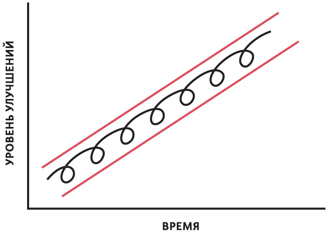
…а она выглядит так…
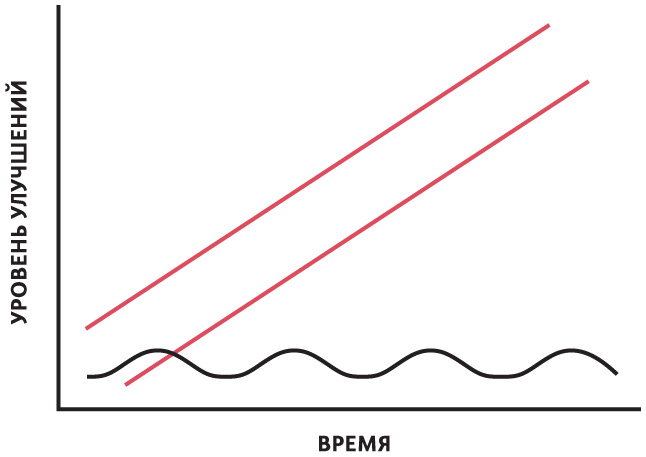
…вы будете знать, что вам нужно понять причину и разобраться с ней. В противном случае траектория останется прежней.
e. «Пробуйте суп». Считайте, что вы шеф-повар и обязаны пробовать суп, прежде чем его вынесут клиентам. Не пересолен ли он и всего ли хватает? Руководители тоже должны этим заниматься и проверять каждый результат, за который несут ответственность, или же делегировать эту обязанность специальному сотруднику, так называемому дегустатору.
f. Выявлением проблем должны заниматься как можно больше людей. Стимулируйте сотрудников сообщать вам о проблемах. Когда каждый чувствует ответственность за успех в конкретной области и не боится высказать свое мнение, вы будете узнавать о проблемах на том этапе, когда их еще можно легко исправить. Всегда будьте на одной волне с людьми, наиболее близкими к самым важным функциям механизма.
g. «Выбейте пробку». Ваша обязанность – обеспечить сотрудникам возможности для открытой коммуникации. Не ждите, что они сами будут приходить к вам с регулярной и честной обратной связью, – прямо просите их об этом.
h. Сотрудники, выполняющие конкретную работу, лучше всех знают, какие проблемы могут с ней возникнуть. По меньшей мере они обладают видением, которое вам следует понять, поэтому постарайтесь взглянуть на ситуацию их глазами.
11.3. Указывайте на конкретные проблемы, не начинайте с обобщений
Например, не говорите: «Консультанты неэффективно взаимодействуют с аналитиками». Будьте конкретны: назовите, кто из консультантов плохо с этим справляется и почему. Начните с конкретной проблемы, а затем выведите закономерность.
a. Избегайте обезличенного «мы» и «они», так как это нивелирует персональную ответственность. Ничего не происходит само собой – это результат того, что конкретные люди сделали или не сделали конкретные шаги. Не следует обесценивать персональную ответственность. Вместо обезличенного обобщения или монаршего «мы» называйте конкретные имена и действия: «Гарри не справился с ситуацией». Кроме того, избегайте фраз «Нам следует…», «Мы должны…» и им подобных. Поскольку люди – самые важные «кирпичики», на которых держится компания, и они несут ответственность за то, как выполняется работа, ошибки тоже допускают вполне конкретные лица. Кто-то принял неверное решение или выбрал неправильный образ действий. Если обходить молчанием эти факты, это только затормозит общий прогресс.
11.4. Не бойтесь браться за решение сложных проблем
Бывает, что люди мирятся с проблемами, потому что считают их слишком сложными для исправления. При этом решать трудную задачу легче, чем ее не решать, потому что, если этого не делать, это вызовет еще больший стресс, добавит работы, результаты будут постоянно плохими, в итоге все может закончиться увольнением. Так что не забывайте один из первых принципов менеджмента: проанализируйте обратную связь, которую получаете от работы механизма, и либо решите возникшие проблемы, либо поставьте в известность о них своего руководителя; если нужно, делайте это снова и снова. Нет более легкой альтернативы, чем выявлять проблемы и поручать их тем, кто эффективно справляется с решением.
a. Проблемы, для которых найдено эффективное решение, лучше, чем невыявленные. Хуже всего невыявленные проблемы. Немного лучше выявленные, для которых еще нет решения, хотя они негативно сказываются на корпоративном духе. Еще чуть лучше проблемы, для которых найдено эффективное решение. А лучше всего – уже решенные. Важно знать, к какой категории относится проблема. Показатели, которые вы применяете для отслеживания прогресса ваших решений, должны быть настолько ясными и интуитивно понятными, чтобы они были очевидным продолжением плана действий.
b. При возникновении проблем придерживайтесь алгоритма: что, кто, когда. Выполните три шага: выявите проблему, решите, кому ее следует поручить и когда лучшее время для ее обсуждения. Иными словами: что, кто, когда. После этого действуйте.
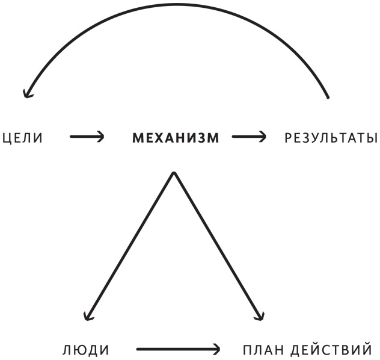
12. Выявляйте проблемы, чтобы добраться до их причин
* * *
При возникновении проблемы задача состоит в том, чтобы определить ее причины – конкретных людей или действия – и проанализировать, существует ли закономерность, по которой эти люди или действия вызывают проблему.
Каковы наиболее распространенные причины неэффективного выявления проблем? По моим наблюдениям, самая частая ошибка в том, что люди считают проблемы единичными случаями вместо того, чтобы на основе этой ошибки проанализировать работу всего механизма и внести улучшения. Они пытаются решить проблему, но упускают из виду ее глубинные причины, а это верный путь к повторению. Постановка тщательного и точного диагноза хотя и займет больше времени, но окупится сторицей.
Вторая наиболее частая ошибка в том, что люди обезличивают проблему: они не связывают ее с человеком, из-за которого она возникла, и не анализируют, какие его качества или действия к этому привели. В результате не происходит совершенствования человека или механизма.
Третья ошибка – не связывать выводы поставленного диагноза с выводами предыдущих. Важно определить, представляет ли причина конкретной проблемы («Гарри проявил беспечность») часть общей закономерности («Гарри часто проявляет беспечность») или нет («Обычно Гарри не свойственно проявлять беспечность»).
В случае с нашей командой аналитиков из службы по работе с клиентами я знал, что, пока не выясню причину проблемы, стандарты качества будут продолжать ухудшаться. Другие топ-менеджеры Bridgewater были со мной согласны. Поэтому я провел ряд встреч с командой, включая всех сотрудников на всех уровнях, чтобы понять, что пошло не так. Я начал со своей карты процесса, как все должно было идти в работе механизма, который я выстроил, и попросил новых руководителей описать, что, собственно, произошло. Плохой результат не просто происходит, он становится следствием того, что конкретные люди сделали или не сделали определенные шаги. Качественный диагноз всегда доходит до того уровня, на котором становится ясно, какие качества этих конкретных людей привели к плохим результатам. Это может вызвать дискомфорт, но, если сотрудник не подходит для выполнения определенной работы, он не должен ею заниматься во избежание повторения таких же ошибок. Конечно, идеальных людей не бывает, все совершают ошибки, поэтому важно учитывать предыдущий опыт и достижения этого сотрудника, а также его сильные и слабые стороны.
В ходе проведенных встреч выяснилось следующее. Несколько новых линейных руководителей, которых топ-менеджеры взяли для управления аналитической работой клиентской службы, не обладали необходимыми навыками, аналитическими способностями или нужной степенью заинтересованности для обеспечения процесса контроля качества. Топ-менеджеры, в свою очередь, оказались слишком далеки от этой области и не проконтролировали, все ли идет хорошо. Это был первый шаг (так называемое «что») – реальность, с которой мы столкнулись, вызывавшая нашу проблему. Это было крайне неприятно, но именно это нам было необходимо знать, чтобы перейти к следующему шагу и подумать об изменениях, которые нам нужно было сделать.
Следующие принципы помогут в эффективном выявлении проблем, начиная с общего обзора.
12.1. Для эффективного выявления проблемы задайте три вопроса
1. Полученный результат хороший или плохой?
2. Кто несет ответственность за результат?
3. Если результат плохой, обусловлен ли он недостатком нужных навыков у ответственного лица или ошибками в плане действий?
Если постоянно держать в голове три этих вопроса, диагноз будет качественным. Получить ответы в большинстве случаев можно с помощью серии простых вопросов в формате «или – или», которые помогут синтезировать информацию на каждом этапе. Прежде чем перейти к следующему этапу, получите все необходимые ответы, таким образом вы постепенно придете к окончательному выводу.
Не обязательно следовать именно такому формату или вопросам. В зависимости от вашей ситуации можно быстро пройтись по этим вопросам или задать другие, более подробные.
Полученный результат хороший или плохой? Кто несет ответственность за результат? Если вы не смогли быстро прийти к согласию о качестве результата и конкретном ответственном лице, вероятно, у вас уже есть проблемы, потому что вы увязли в обсуждении мелких, незначительных деталей.
Если результат плохой, обусловлен ли он недостатком нужных навыков у ответственного лица или ошибками в плане действий? Цель в том, чтобы исправить ситуацию. Чтобы это сделать, вам нужно проанализировать, как сработал механизм в этом конкретном случае, и начать с этой точки.
Как должен был сработать механизм? Возможно, у вас есть карта процесса, кто и что должен был сделать, или же вы можете воспользоваться чужими ментальными картами. В любом случае нужно узнать, кто за какие задачи нес ответственность и что говорят принципы о том, как все должно было быть. Не усложняйте! На данном этапе стандартная ловушка – углубиться в детальное изучение процедуры, вместо того чтобы остаться на уровне механизма (то есть понять, кто за что отвечал). Вы должны быть способны изложить свою ментальную карту в нескольких предложениях, каждое в привязке к конкретному человеку. Если вы углубились в детали, скорее всего, вы сбились с пути. После того как вы определились с картой процесса, остается главный вопрос:
Сработал ли механизм так, как должен был? Да или нет.
Если нет, что пошло не так? Что сломалось? Это и есть непосредственная причина, и вам не составит труда дойти до этого этапа, если у вас есть четкая карта процесса. Это также можно сделать с помощью вопросов, требующих ответа «да/нет», поскольку все, что вам нужно сделать, – это разобраться в основных составляющих вашей карты процесса и определить, кто из ответственных лиц не справился с задачей. Например, согласно вашей карте процесса, механизм должен состоять из двух шагов: Гарри должен либо выполнить задачу в срок, либо поставить руководителя в известность о том, с чем он не справился. Все, что вам требуется сделать, – отследить эти два шага: 1) он выполнил задачу в срок? Да или нет. Если нет, 2) он поставил руководителя в известность? Да или нет.
Все должно быть предельно просто. К сожалению, разговор часто сводится к подробному описанию, что именно делал этот сотрудник, с обилием терминов и бюрократических оборотов. Помните: ваша задача – привести обсуждение к четкому и точному анализу ситуации.
Кроме того, вы должны понять, с чем имеете дело: это случайная ошибка, которую в сложившихся обстоятельствах допустил компетентный сотрудник, или признак чего-то, что следует изучить подробнее. Не уделяйте слишком много внимания исключительным событиям или заурядным проблемам – никто не совершенен, – но вы должны быть уверены, что не упускаете системную проблему механизма. Определять такие вещи – ваша работа.
Почему механизм не сработал, как должен был? Именно здесь вам необходимо проанализировать основную причину, чтобы определить, обусловлена она некомпетентностью ответственного лица или проблема заключалась в плане действий. Чтобы не увязнуть в деталях, сделайте следующее.
• Постарайтесь соотнести неудачу с «Пятью шагами». Какой из них был сделан неправильно? В итоге все сводится именно к этим пяти этапам. Однако, возможно, вам потребуется больше конкретики, тогда…
• Постарайтесь соотнести неудачу с конкретными качествами или их набором. Задавайте вопросы, требующие ответов «да/нет»: результативным ли было управление ответственного лица? Выявил ли он проблемы? Исполнил ли он все эффективно?
• Важно задать себе вопрос: если в следующий раз проблем с качеством Х не будет, повторится ли плохой результат? Это хороший способ проверить логическую связь между результатом и причиной. Подумайте об этом так: если бы механик заменил эту деталь в автомобиле, это решило бы проблему?
• Если причина в неэффективном плане действий, не останавливайтесь на том, что вы это выяснили. Спросите, кто отвечал за разработку плана, и подумайте, способен ли этот человек сделать лучше.
Причина была случайностью или закономерностью? (Да или нет.) Любая проблема может быть чистой случайностью, а может быть признаком закономерности, которая станет повторяться регулярно. Определите характер возникшей проблемы. Иными словами, если Гарри не справился с задачей по причине своей беспечности:
• Свойственна ли Гарри беспечность в целом?
• Если да, требуется ли надежность на той должности, которую он занимает?
• Вызвана ли неудача Гарри плохим обучением или отсутствием у него нужных качеств?
Как следует изменить людей/механизм? Убедитесь, что решение проблемы найдено. Определите шаги, которые необходимо предпринять в долгосрочной перспективе, и ответственных сотрудников. В частности…
• Есть ли обязанности, которые следует прояснить или поручить кому-то?
• Есть ли механизмы, работа которых должна быть пересмотрена?
• Есть ли сотрудники, чье соответствие занимаемым позициям следует пересмотреть?
Например, если вы выяснили, что 1) это закономерность, 2) ответственное лицо не соответствует занимаемой позиции и 3) это вызвано отсутствием нужных качеств (а не плохим обучением), тогда, вероятно, вы нашли ответ на самый важный вопрос: сотрудник не соответствует занимаемой позиции и должен ее освободить.
Следующие принципы помогут вам в дальнейшем анализе.
a. Задайтесь вопросом: «Кто и что именно должен делать иначе?» Я часто слышу, как люди жалуются на конкретный результат, не пытаясь при этом понять механизм, который к этому привел. Во многих случаях эти жалобы исходят от людей, которые видят плюсы какого-то решения, но не замечают минусы и не знают, как их при принятии решения проанализировало ответственное лицо. Поскольку любой результат зависит от людей и плана действий, спросите себя: «Кто и что именно должен делать иначе?» Это позволит вам понять, что вам действительно нужно изменить, чтобы получить другой результат в будущем (а не просто жаловаться на него).
b. Определите, на каком из «Пяти шагов» произошла неудача. Если сотрудник постоянно не справляется с работой, это происходит либо из-за недостатка обучения, либо в силу отсутствия способностей. Что это в вашем случае? На каком из «Пяти шагов» его постигла неудача? На разных этапах требуются разные способности, и, если вы можете определить, какие способности у сотрудника отсутствуют, это поможет вам выявить проблему.
c. Определите принципы, которые были нарушены. Определите, какие принципы применимы к конкретному случаю, проанализируйте их, подумайте, могли ли они быть полезными. Подумайте, какие принципы эффективнее всего помогут справиться с подобными ситуациями. Это поспособствует не только решению конкретной проблемы, но и других ей подобных.
d. Избегайте критики задним числом. Оценивайте достоинства принятого решения, основываясь не на том, что вы знаете сейчас, а только на том, что вы могли знать в момент его принятия. У каждого решения есть свои плюсы и минусы, невозможно оценивать выбор в ретроспективе, безотносительно соответствующего контекста. Спросите себя: «Что в этой ситуации должен был знать компетентный специалист и как он должен был поступить?» Кроме того, следует хорошо знать того, кто принимал решение (как он мыслит, что он за человек, извлек ли он урок из этой ситуации или нет и так далее).
e. Не следует смешивать обстоятельства и подход к ним. Они могут быть хорошими, а образ действий в этих обстоятельствах плохим, или наоборот. Эти категории не следует смешивать, хотя такое часто происходит, особенно в компаниях, которые делают что-то новое и быстро развиваются, но еще не отладили все свои механизмы.
Я всегда описывал Bridgewater как «ужасную и потрясающую одновременно». На протяжении почти сорока лет мы неизменно добивались высококлассных результатов, решая при этом множество проблем. Можно посмотреть на сложные обстоятельства, решить, что все ужасно, и впасть в ступор. Но гораздо сложнее посмотреть на долгосрочный успех, который стал итогом работы в столь сложных обстоятельствах, и понять, насколько важны трудности для процесса развития инноваций.
f. Выявление того, что кто-то не знает, что делать, не означает, что вы знаете, что делать. Одно дело указать на проблему, и совсем другое – поставить качественный диагноз и предложить решение. Как я уже говорил, лакмусовая бумажка для определения человека, эффективно решающего проблемы: 1) он способен логично описать, как справиться с проблемой; 2) он имеет успешный практический опыт решения похожих проблем.
g. Помните, что глубинная причина – это не действие, а характеристика. Глубинная причина кроется в характеристиках, а не в действиях, поэтому задавайте вопрос «почему?», пока не дойдете до сути. Большинство вещей случаются или не случаются, потому что кто-то решил сделать или не сделать их определенным образом. Так что большинство глубинных причин относятся к конкретным людям с их моделями поведения. Конечно, даже надежный и ответственный человек не застрахован от случайных ошибок, в этом случае его можно простить. Однако когда какая-то проблема возникает у определенного сотрудника постоянно, следует задуматься о причине – и диагностировать проблему нужно столь же точно, как вы диагностировали бы поломку в оборудовании. Процесс анализа глубинной причины может быть следующим:
Проблема возникла из-за плохого программирования.
Почему программирование было плохим?Потому что Гарри написал плохую программу.
Почему Гарри написал плохую программу?Потому что он был недостаточно обучен и торопился.
Почему он был недостаточно обучен?Его руководитель знал, что он недостаточно обучен, и все равно поручил ему эту работу, или он не знал?
Обратите внимание, что вопросы касаются личных качеств сотрудника. Анализ не прекращается на этапе: «Потому что Гарри написал плохую программу». Копайте глубже, чтобы понять, какие качества сотрудника и/или ошибки в плане действий привели к неудаче. Анализ дается непросто обеим сторонам: часто сотрудники пытаются оправдаться и спрятаться за множеством деталей, даже не имеющих отношения к делу.
h. Чтобы понять, заключается проблема в возможностях или способностях, представьте, как сотрудник выполнил бы задачу, имея в своем распоряжении любые возможности. Вспомните, как сотрудник справлялся с подобными задачами, когда не был ограничен в ресурсах. Если у него возникали похожие проблемы, то, скорее всего, дело в его способностях.
i. Руководитель, как правило, не достигает цели по одной из пяти причин (или по нескольким сразу).
1. Он слишком далек от процесса.
2. Он не в состоянии определить плохое качество.
3. Он не способен объективно оценить, насколько плохи дела, потому что привык.
4. Он настолько гордится своей работой (или у него настолько большое эго), что он не может признать, что не способен решить свои проблемы.
5. Он боится негативных последствий признания неудачи.
12.2. Постоянно анализируйте ситуацию
Если не анализировать серьезные отрицательные результаты, вы не сможете понять, симптомы каких проблем они представляют или как меняются со временем, например ухудшается или улучшается ситуация?
12.3. Помните, что анализ должен вести к результатам
В противном случае он не имеет смысла. Как минимум диагноз должен быть представлен в форме теории глубинных причин и вносить ясность, какую информацию нужно собрать, чтобы узнать больше. В лучшем случае он должен непосредственно вести к плану или образу действий для решения проблем.
a. Если те же самые сотрудники делают то же самое, результат тоже будет тем же самым. Эйнштейну приписывают фразу о том, что люди, повторяющие те же действия в тех же обстоятельствах и ожидающие другого результата, просто безумцы. Не попадитесь в эту ловушку, потому что выбраться из нее непросто.
12.4. Используйте метод углубленной детализации, чтобы достичь понимания соотношения 80/20 в отделе, где возникли проблемы
Метод углубленной детализации позволяет сотрудникам департамента или отдела понять причины наиболее серьезных проблем, чтобы разработать план действий для улучшения ситуации. Это не анализ, а одна из форм широкого и глубинного исследования. Цель не в том, чтобы найти причины всех проблем, а в том, чтобы выявить 20 % (или около того) причин, вызывающих 80 % неудовлетворительных результатов. Процесс идет в два этапа, за которыми следует разработка плана действий и его реализация. При эффективном подходе можно уложиться примерно за четыре часа. Важно, чтобы каждый этап проводился отдельно и независимо во избежание распыления усилий. Позвольте мне подробнее описать каждый из этапов этого процесса и дать рекомендации и примеры.
Этап 1. Составьте список проблем. Краткий перечень всех основных проблем. Будьте предельно конкретны, так как это единственный способ эффективного поиска решений. Не обобщайте и не используйте обезличенное «мы» или «они». Называйте имена сотрудников, у которых возникли проблемы.
• Пригласите к участию всех заинтересованных сотрудников: вы узнаете их мнение, а они почувствуют ответственность за решение.
• Не концентрируйтесь на исключительных событиях или тривиальных проблемах, никто не совершенен, но убедитесь, что вы не упустили симптомы системных проблем механизма.
• Не пытайтесь искать решения. На этом этапе ваша задача – составить список проблем.
Этап 2. Определите глубинные причины. Для каждой проблемы определите глубинную причину. Большинство неурядиц случаются по двум причинам: 1) неясно, кто был ответственным; 2) ответственный не справился со своими обязанностями.
Следует различать непосредственные и глубинные причины. Непосредственная причина – это действие, спровоцировавшее возникновение проблемы. Когда вы начинаете описывать, что стоит за этим действием, вы приближаетесь к глубинной причине.
Чтобы дойти до нее, продолжайте задавать вопрос «почему?». Например:
Проблема.Команда постоянно работает сверхурочно и находится на грани выгорания.
Почему?Потому что у нас недостаточно ресурсов, чтобы выполнить требования, возложенные на команду.
Почему?Потому что на нас возложили дополнительные обязанности, но не дали дополнительных сотрудников.
Почему?Потому что руководитель не смог адекватно оценить объем работы, прежде чем взять эти обязательства.
Почему?Потому что руководитель плохо прогнозирует потенциальные проблемы и разрабатывает планы. [Глубинная причина.]
При углубленной детализации пригласите к участию всех заинтересованных сотрудников. Во-первых, вы сможете узнать их мнения и идеи, а во-вторых, участвуя в разработке плана действий, они будут нести персональную ответственность за результат. В то же время не забывайте, что люди склонны больше к защите, чем к самокритике. Ваша задача как руководителя – увидеть объективную картину и добиться высокого качества, а не осчастливить всех сотрудников. Например, правильный образ действий может заключаться в том, чтобы уволить кого-то и найти на их места более эффективных специалистов или перевести их на другие позиции. Задача всех участвующих – найти наилучшие ответы, а не те, которые устроят большинство присутствующих.
Может оказаться, что у нескольких проблем, выявленных во время первого этапа, одна глубинная причина. Поскольку углубленную детализацию вы делаете оперативно, анализ глубинных причин можно считать только предварительным, главным образом он выделяет то, на что следует обратить внимание.
После завершения этапа 2 сделайте паузу, чтобы все обдумать, а затем приступайте к разработке плана.
Этап 3. Разработайте план действий. План действий должен касаться глубинных причин. Его можно сравнить со сценарием фильма, где вы визуализируете, кто и что должен делать на протяжении определенного периода для достижения целей. План должен учитывать множество возможностей, издержки и риски и оценивать вероятность достижения цели. План должен содержать конкретные задачи, желаемые результаты, имена ответственных лиц, критерии мониторинга прогресса и временные рамки. Привлеките ключевых сотрудников к детальному обсуждению. С планом могут быть согласны не все, но ответственные лица и другие ключевые сотрудники должны быть едины во мнении.
Этап 4. Реализуйте план. Начните реализацию согласованного плана и отслеживайте прогресс. Не реже раза в месяц сообщайте о фактических результатах по сравнению с запланированными и проговаривайте ожидания на предстоящий период. Сотрудники должны нести публичную ответственность за успешное и своевременное достижение результатов. По мере необходимости корректируйте план, чтобы он отражал реальность.
12.5. Качественный диагноз – основа прогресса и хороших отношений
Если вы и ваши сотрудники проявите непредубежденность и проведете качественное обсуждение, вы не только найдете более эффективные решения, но и узнаете друг друга лучше. Это возможность для вас оценить своих сотрудников и помочь им расти и развиваться, и наоборот.
13. Усовершенствуйте механизм, чтобы обойти проблемы
* * *
После успешной диагностики проблем, стоящих на пути к достижению целей, необходимо найти способы их преодоления. План действий должен основываться на глубоком и точном их понимании (именно поэтому качественный диагноз настолько важен). Для меня это практически бессознательный процесс изучения проблемы и использования боли, которую она мне доставляет, для стимулирования нестандартного мышления.
Именно так это было и для команды, отвечающей за аналитику для клиентской службы, особенно для Дэвида Маккормика, одного из CEO Bridgewater, на тот момент руководившего департаментом по работе с клиентами. После проведения анализа он быстро перешел к разработке изменений и их внедрению. Он уволил сотрудников, допустивших снижение качества, и тщательно проанализировал, какие изменения необходимо внести, чтобы нужные места заняли хорошие специалисты. Выбирая новых людей в качестве ответственных лиц за аналитику для клиентской службы, Дэвид поручил эти обязанности одному из наших ведущих инвестиционных аналитиков, который всегда придерживался самых высоких стандартов качества (и открыто говорил обо всех случаях, когда видел их снижение), и поставил ему в пару одного из наших самых опытных управленцев, который знал, как правильно выстроить все рабочие процессы, и мог проконтролировать, чтобы все шло согласно плану.
Однако этим дело не ограничилось. При разработке плана действий важно не торопиться, все обдумать и убедиться, что вы рассматриваете проблемы с более высокого уровня. Дэвид понимал, что было бы ошибкой сконцентрироваться только на этой части департамента: точно такое же снижение качества могло коснуться и других подразделений. Ему требовалось нестандартное решение, чтобы весь департамент стабильно следовал самым высоким стандартам. В результате ему пришла в голову идея раз в полгода проводить «День качества» – встречу, на которой сотрудники департамента оценивали бы тестовые презентации и аналитические справки друг друга и комментировали, что получилось хорошо, а что не очень. Что важно, эти встречи дали возможность взглянуть на рабочий процесс со стороны и оценить, были ли способы обеспечить качество результатов настолько эффективными, как ожидалось, благодаря приглашению к участию жестких независимых аналитиков, которые высказывали собственные замечания и помогали улучшать процесс.
Конечно, планы Дэвида по изменению работы в департаменте включали множество других аспектов. Важно, что все эти планы строились благодаря визуализации более высокого уровня. Только при наличии такого общего представления можно переходить к деталям. Они и станут вашими задачами, их предпочтительно зафиксировать письменно, чтобы не забыть.
Конечно, оптимальный план действий получается благодаря глубокому пониманию актуальных проблем. При этом, когда вы только начинаете, зачастую план приходится разрабатывать с учетом прогнозируемых проблем, а не фактических. Именно поэтому так полезно иметь инструменты, помогающие системно отслеживать возникающие проблемы (приложение Issue Log) и понять, что думают сотрудники (приложение Dot Collector). Вместо того чтобы строить догадки, что может пойти не так, можно проанализировать доступные данные относительно поведения своего и других и приступить к разработке плана процесса, вооружившись этим пониманием, а не начиная с пустого места.
Самые талантливые руководители из тех, кого я знаю, – это люди, способные визуализировать процесс во времени и управлять и небольшой командой, и крупной компанией, точно прогнозируя, какие результаты они смогут принести. Они отлично систематизируют информацию и разрабатывают процессы. Таким образом, главный принцип этой главы: разработайте и систематизируйте механизм. Для этого важны нестандартность мышления и твердость характера, так как для самых серьезных проблем часто требуются оригинальные решения и готовность делать сложный выбор (особенно когда вопрос касается сотрудников и распределения обязанностей).
Следующие принципы посвящены эффективной разработке процесса.
13.1. Создайте механизм
Стоит сосредоточиться на одной конкретной задаче или ситуации, и вы увязнете в решении проблем по одной. Вместо этого проанализируйте, что вы делаете и почему, экстраполируйте соответствующие принципы, подходящие к данной ситуации, систематизируйте этот процесс и создайте механизм. Обычно на создание механизма тратится в два раза больше времени, чем на решение конкретной задачи, но в долгосрочной перспективе польза будет гораздо больше благодаря сочетанию обучения и эффективности в будущем.
13.2. Систематизируйте принципы и их применение
Если у вас есть хорошие принципы на основе ваших ценностей, которыми вы руководствуетесь при принятии ежедневных решений, но нет системы, которая обеспечивает регулярность применения этих правил, то они почти бесполезны. Самые важные принципы должны войти у вас в привычку. Инструменты, применяющиеся в Bridgewater, и корпоративная культура нашей компании направлены именно на это.
a. Создайте механизм принятия решений, проанализировав критерии, которые вы применяете при этом. Каждый раз, когда я принимаю инвестиционное решение, я наблюдаю, как это делаю, и анализирую, какими критериями руководствуюсь. Я задаю себе вопрос, как бы я действовал в похожей ситуации, и записываю принципы. Затем я превращаю их в алгоритмы. Сейчас я делаю то же самое для менеджерских решений, и я развил в себе привычку делать это всегда.
Алгоритмы – это принципы в действии, применяемые постоянно. Я убежден, что систематизированный процесс принятия решений на основе данных способен значительно повысить качество менеджмента. Руководители обрабатывают случайную информацию, используя неадекватные критерии, а еще они подвержены эмоциям. Все это ведет к принятию неэффективных решений. Представьте, если бы существовал механизм, который обрабатывал бы качественные данные на основе качественных принципов/критериев принятия решений. Как система GPS в автомобиле, он был бы чрезвычайно полезен независимо от того, следовали бы вы всем его рекомендациям или нет. Я убежден, что подобные инструменты обязательно появятся в будущем, и, когда я пишу эти строки, остается совсем немного времени до того момента, как я представлю онлайн-прототип.
13.3. Качественный план действий должен быть похож на сценарий фильма
Чем нагляднее вам удастся визуализировать, как будет развиваться сценарий, который вы создаете, тем выше вероятность, что все пойдет по плану. Визуализируйте, кто, что и когда будет делать и какой результат получится. Это ваша ментальная карта механизма. Учитывайте, что не всем визуализация дается легко. Объективно оцените возможности собственные и других людей, чтобы в разработке планов действий были заняты самые способные сотрудники.
a. Изучите контекст, чтобы лучше понимать, решение какой проблемы вы разрабатываете. В буквальном или переносном смысле (через изучение отчетов, описания должностных инструкций и так далее) временно встройтесь в рабочий процесс в той области, которая вас интересует, чтобы получить объективное представление, с чем вы имеете дело. При разработке плана действий вы сможете применить полученные знания и соответствующим образом пересмотреть механизм.
b. Визуализируйте альтернативные механизмы и их результаты, а затем сделайте выбор. Хороший аналитик способен визуализировать механизмы и результаты, которые они производят, в разных итерациях. Сперва представьте, как Гарри, Ларри и Салли могут действовать с разными инструментами и системой стимулов и штрафов, затем замените эту команду на Гарри и Джорджа и так далее, прогнозируя, как в рамках каждого сценария будет складываться ситуация с продуктами, сотрудниками и финансами каждый месяц (или каждый квартал). После этого сделайте выбор.
c. Учитывайте последствия второго и третьего порядка, а не только непосредственный результат. Прямой результат, который вы получаете, может быть благоприятным, при этом последствия второго и третьего порядка – противоположными. Таким образом, если сосредоточиться исключительно на непосредственном результате, как склонны поступать большинство людей, это может привести к принятию неэффективных решений. Например, если бы вы спросили меня, хочу ли я, чтобы никогда не было дождливых дней, вероятно, я ответил бы, что да, хочу, если бы не подумал о последствиях второго и третьего порядка.
d. Регулярно проводите совещания, чтобы помочь сотрудникам действовать слаженно, как швейцарские часы. Регулярные совещания повышают общую эффективность рабочего процесса: они позволяют убедиться, что важные взаимодействия и задачи не были упущены из виду, исключают необходимость малоэффективной координации, повышают качество работы (так как повторение ведет к улучшению). Полезно иметь стандартную повестку дня с одинаковыми вопросами для получения обратной связи на каждую встречу (например, насколько эффективно прошло совещание), а также нестандартные повестки дня, включающие вопросы, которые возникают не так часто (например, квартальный анализ бюджета).
e. Хороший механизм учитывает тот факт, что люди несовершенны. Разрабатывайте план действий так, чтобы получать положительные результаты, даже когда люди совершают ошибки.
13.4. Разработка системы – это последовательный процесс. Между плохим «сегодня» и прекрасным «завтра» есть переходный период
Переходный период – это время, когда вы пробуете разные процессы и людей, смотрите, что работает, а что нет, учитесь на ошибках и постепенно приближаетесь к идеальной системе. Даже если у вас есть четкая картина будущей системы, вы неизбежно совершите какие-то ошибки и узнаете что-то новое, пока не достигнете состояния прекрасного «завтра».
Люди часто жалуются на этот процесс последовательных изменений, потому что, как ни парадоксально, они более счастливы, когда у них нет ничего, чем когда они обладают чем-то несовершенным, хотя логичнее было бы радоваться даже несовершенной вещи. Подобный образ мышления нерационален, не позволяйте ему сбить себя с пути.
a. Признайте эффект «очищающего шторма». В природе очищающим штормом называют серьезное событие, которое происходит относительно редко и уничтожает последствия избыточного роста, которые накапливаются в течение периода спокойствия. Такие события помогают поддерживать здоровую экосистему леса: без них в лесу было бы гораздо больше слабых и больных деревьев, и это препятствовало бы развитию всей экосистемы. То же самое верно в отношении компаний. Плохие времена, когда компания стремится сохранить только самых важных и эффективных сотрудников, неизбежны и тоже приносят пользу, хотя, когда такое происходит, это кажется ужасным.
13.5. Выстраивайте компанию вокруг целей, а не задач
Если у каждого департамента будет четкое понимание целей и того, какие средства требуются для их достижения, это упростит распределение ресурсов внутри компании и сократит число ситуаций, когда у сотрудников меняются функциональные обязанности. Вот пример, как это работает: в Bridgewater есть департамент маркетинга (цель – продвижение наших услуг) и департамент по работе с клиентами (цель – обслуживание клиентов), хотя они занимаются похожими вещами и можно было бы найти преимущества, если бы это был один департамент. Тем не менее продвижение услуг и обслуживание клиентов – это две разные цели. Если бы у нас был единый департамент, его руководитель, специалисты по продажам, консультанты клиентов, аналитики и другие сотрудники получали бы противоречивую обратную связь. На вопрос, почему клиентам уделяется недостаточно внимания, ответ был бы: «Мы занимаемся увеличением продаж». А если бы встал вопрос, почему у нас такие низкие продажи, ответ был бы: «Мы тратим все время на работу с клиентами».
a. Выстраивайте компанию с головы. Компания, в отличие от здания, строится сверху. Ее фундамент – верхушка. Так что сначала нанимайте руководителей, а затем подчиненных. Руководители могут помочь разработать механизм и выбрать подходящих сотрудников. Люди, стоящие во главе департаментов, должны быть способны мыслить стратегически, а также управлять оперативной повседневной деятельностью. Если они не прогнозируют потенциальное развитие ситуации, то посадят корабль на мель.
b. Каждый сотрудник должен находиться под контролем компетентного руководителя, придерживающегося высоких стандартов качества. Без постоянного наблюдения велика вероятность неадекватного контроля качества, неадекватного обучения, неадекватной оценки хорошо выполненной работы. Доверяйте сотрудникам работу, но обязательно проверяйте.
c. Руководители на вершине каждой управленческой пирамиды должны обладать нужными навыками для управления своими прямыми подчиненными и понимать их работу. Несколько лет назад у кого-то в Bridgewater возникло предложение, чтобы наша группа материально-технического обеспечения (люди, отвечающие за работоспособность технических систем здания и прилегающей территории, за обеспечение питания, за доставку канцелярских принадлежностей и расходных материалов и так далее) перешла в подчинение к директору по информационным технологиям, так как две области (компьютеры – тоже техническое обеспечение, поскольку они потребляют электричество и так далее) имеют точки пересечения. Однако, если бы сотрудники, отвечающие за хозяйственное обслуживание здания и за обеспечение питания, отчитывались директору по информационным технологиям, это было бы так же неправильно, как если бы специалисты по информационным технологиям отчитывались руководителю, отвечающему за материально-техническое обеспечение. Несмотря на общее в названии, функции этих подразделений сильно отличаются, как и наборы навыков, необходимые для их исполнения. В другой раз мы обсуждали, не следует ли объединить специалистов, работающих с клиентскими соглашениями и составляющих соглашения для контрагентов. Однако мы поняли, что это было бы ошибкой, поскольку навыки, которые требуются, чтобы достичь согласия с клиентами, в значительной степени отличаются от тех, что необходимы для достижения согласия с контрагентами. Было бы неправильно объединить два этих департамента только на основании общего слова «соглашения», потому что специалистам этих департаментов требуются разные знания и навыки.
d. При создании компании помните, что путь к успеху – это «Пять шагов» и что разные люди обладают качествами, полезными на разных этапах. Для выполнения задач на каждом этапе назначайте людей, у которых от природы развиты нужные для этого качества.
Например, визионер, способный увидеть всю картину целиком, должен отвечать за постановку целей. «Дегустатору» следует поручить работу по выявлению проблем. Аналитик с логическим мышлением, который не против изучать людей и их поведение, должен проводить диагностику. Творец с нестандартным мышлением должен заниматься планом по созданию улучшений, а надежный исполнитель должен реализовывать этот план. Конечно, некоторые люди способны эффективно выполнять сразу несколько из этих функций, обычно две или три. Однако никто не может делать одинаково хорошо абсолютно все. В команде должны быть люди, в совокупности обладающие всеми этими качествами, и они должны знать, кто за какой этап несет ответственность.
e. Не компания должна соответствовать сотрудникам, а сотрудники компании. Часто руководители воспринимают сотрудников, работающих в компании, как данность и стараются, чтобы организация была эффективной с этими людьми. Это ошибочный подход. Все должно быть наоборот: руководитель должен визуализировать лучшую компанию, а затем убедиться, что для нее выбраны лучшие сотрудники. Должности нужно создавать на основании работы, которая должна быть выполнена, а не на основании того, чем хотят заниматься люди или кто из них доступен. Всегда можно найти более подходящего кандидата на конкретную позицию за пределами компании. Сначала пропишите оптимальный рабочий процесс, затем составьте организационную структуру, визуализируйте, как взаимодействуют между собой ее части, наконец, определите, какие качества требуются сотрудникам на каждой позиции. Только после этого вам следует выбирать людей, которые их займут.
f. Помните о масштабе. Цели должны соответствовать ресурсам, которые вы можете выделить на их достижение. Например, компания может быть слишком маленькой, чтобы содержать и специалистов по продажам, и аналитическую группу. Bridgewater успешно развилась из одноклеточной организации, в которой все сотрудники были вовлечены во все процессы, в многоклеточную, потому что по мере роста компании мы сохранили нашу способность эффективно фокусироваться.
Нет ничего плохого во временных процессах разделения обязанностей или ротации сотрудников, поскольку это не то же самое, что слияние обязанностей. С другой стороны, эффективность компании снижается с увеличением числа сотрудников и/или усложнением организационной структуры. Так что придерживайтесь правила: чем проще, тем лучше. Чем крупнее компания, тем более актуальными становятся вопросы управления с помощью информационных технологий и коммуникации между департаментами.
g. Департаменты и отделы должны быть организованы в структуру с учетом «силы притяжения». Одни группы естественным образом притягиваются к другим. Это может быть обусловлено общими целями, способностями и навыками, совместным рабочим процессом, физическим расположением и так далее. Выстраивание организационной структуры без учета этой «силы притяжения», вероятно, снизит эффективность компании в целом.
h. Департаменты должны быть максимально самодостаточными, чтобы контролировать ресурсы, необходимые им для достижения целей. Мы делаем это, потому что не хотим поддерживать бюрократию, в результате которой департаменты вынуждены официально требовать предоставления им ресурсов из общего фонда у людей, которые не знают особенностей работы.
i. Соотношение числа высшего руководства и линейных руководителей, а также линейных руководителей и их прямых подчиненных должно быть таким, чтобы обеспечивать качественную коммуникацию и взаимное понимание. Как правило, это соотношение не должно превышать 1:10, а лучше стремиться к 1:5. Конечно, оптимальное соотношение будет меняться в зависимости от того, сколько прямых подчиненных у сотрудников, которые подотчетны непосредственно вам, от сложности работы и способности руководителя управлять одновременно несколькими людьми или проектами. Число уровней от вершины организационной структуры до ее основания и соотношение числа руководителей и их прямых подчиненных ограничивает размер эффективной компании.
j. Формируйте кадровый резерв. Сейчас я сожалею, что раньше не уделил этому вопросу больше внимания. Чтобы компания продолжала стабильно и эффективно работать, нужно создать механизм с вечным двигателем, который сможет работать и без вас. Этот механизм включает не только процесс вашего отхода от дел, но и подбор и обучение руководителей новой волны и управление ими и, что самое важное, сохранение корпоративной культуры компании и ее ценностей.
Лучший подход, который я видел, был у таких компаний, как GE и 3G, и у политбюро Китайской коммунистической партии. Они выстроили структуру кадрового резерва в форме пирамиды, в которой следующее поколение лидеров имело возможность наблюдать за образом мышления и процессом принятия решений действующих руководителей, так что они могли учиться, а их в это время могли проверять и оценивать.
k. Не думайте только о работе – думайте, как будет выполняться ваша работа, когда вас не будет. Я уже упоминал о риске, связанном с работой ключевых сотрудников, особенно это касается руководителей с самыми широкими областями ответственности, в частности главы компании. Если это вы, тогда вам следует назначить преемников и в течение какого-то времени позволить им выполнять ваши обязанности, чтобы проверить их готовность и при необходимости корректировать их действия. Эти результаты должны быть задокументированы в форме инструкций, к которым соответствующие сотрудники могут обратиться, если вы вдруг неожиданно попадете под автобус. Если это сделают все ключевые сотрудники компании, у вас будет сильный «запасной состав» или, по крайней мере, четкое понимание рисков и план, как справиться с возможными проблемами. Помните, что руководитель-ниндзя – это тот, кто может просто сидеть и наслаждаться красотой процесса со стороны, то есть «дирижер». Если вы будете всегда стремиться нанимать на работу людей, которые не хуже или даже лучше вас способны справиться с вашей работой, вы, во-первых, сможете освободиться и заняться чем-то другим, а во-вторых, у вас будет кадровый резерв.
Кроме прочего, визуализация процесса собственного отхода от дел может стать продуктивным опытом. Помимо подведения итогов и выделения эффективных и неэффективных сотрудников, вы начнете думать, как назначить лучших сотрудников на должности, которые еще даже не существуют. Осознавая, что вам придется проверять их, позволив выполнять ваши обязанности и не вмешиваясь в процесс, вы получите мотивацию хорошо обучить их до этой проверки. И, конечно, испытания в особо жестких условиях помогут вам научиться и адаптироваться, а это приведет к улучшению результатов.
l. Два сотрудника лучше двойной проверки, чтобы задачи, критически важные для миссии, были выполнены правильно. Количество выявленных ошибок, как правило, гораздо выше в условиях двойной проверки, чем когда двум разным сотрудникам поручается выполнение одной задачи, чтобы они предложили два независимых решения. Это не только обеспечивает лучший результат, но и позволяет увидеть разницу в образе действий и уровне способностей сотрудников. Я использую данный подход в особенно ответственных областях, например в финансах, где на кону очень высокие ставки.
А поскольку качество проверки зависит исключительно от степени компетентности проверяющего, помните, что сделать это сможет только человек, доказавший свою эффективность в описанном выше подходе. Если сотрудник, проводящий проверку, не способен сам выполнить эту работу, как он сумеет ее оценить?
m. Пользуйтесь услугами консультантов с умом, остерегайтесь зависимости. Иногда лучшее, что можно сделать, – это нанять внешнего консультанта. Таким образом вы получите именно тот объем специализированных знаний и навыков, которые необходимы для решения проблемы. Если есть возможность привлечь внешних специалистов, можно не беспокоиться об управлении ими, и это большой плюс. Если позиция предполагает частичную занятость и требует высокоспециализированных знаний, я предпочитаю, чтобы такую работу выполняли консультанты или внешние специалисты.
В то же время остерегайтесь ловушки хронического использования консультантов для выполнения работы, которую должны делать ваши сотрудники. В долгосрочной перспективе это дорого обойдется и подорвет корпоративную культуру. Кроме того, не просите консультантов делать то, чем они обычно не занимаются. Почти наверняка они будут выполнять работу так, как делают ее всегда: этого от них требует работодатель.
Решая, стоит ли обращаться к консультантам, обратите внимание на следующие факторы.
1. Контроль качества. Когда работу выполняют ваши сотрудники, вы несете ответственность за качество. Когда работу выполняет сторонний сотрудник, он действует согласно стандартам качества своей компании, поэтому важно знать, соответствуют ли они вашим.
2. Экономика. Если вам нужен сотрудник на полную занятость, почти наверняка экономически более целесообразно создать штатную должность. Суточная ставка консультанта обычно значительно выше, чем зарплата штатного сотрудника в пересчете для сравнения.
3. Ассимиляция знаний. Сотрудник, постоянно находящийся внутри вашей корпоративной культуры, получает знания и понимание вашей компании, которые не сможет получить ни один внешний специалист.
4. Безопасность. Когда работу для вас выполняют внешние специалисты, это значительно повышает риск для безопасности, особенно если у вас нет возможности наблюдать за ходом рабочего процесса (и контролировать, соблюдаются ли должные меры безопасности, например не остаются ли без присмотра важные документы).
Взвесьте все за и против, чтобы решить, стоит ли вам привлекать внешнего специалиста или развивать необходимые компетенции у людей внутри компании. Хотя временные сотрудники и консультанты отлично подходят для быстрого решения проблем, в долгосрочной перспективе они не повысят возможности вашей компании.
13.6. Организационная структура должна иметь форму пирамиды с прямыми нисходящими линиями, которые не пересекаются
Вся организационная структура должна выглядеть как набор нисходящих пирамид, при этом число уровней должно быть ограничено, чтобы иерархия была минимальной.
a. При решении вопросов между департаментами или отделами привлекайте к участию руководителя на вершине пирамиды. Представьте, что организационная структура имеет форму пирамиды, состоящей еще из нескольких пирамид.
Когда возникают вопросы, затрагивающие сотрудников в разных частях пирамиды, желательно привлекать к участию руководителя, который находится на вершине и, таким образом, обладает собственным представлением и знаниями, чтобы оценить все риски и принять информированное решение.
b. Не выполняйте работу для другого департамента и не просите, чтобы сотрудники другого департамента выполняли работу для вас, без предварительного согласования с руководителем этого департамента. При возникновении разногласий по этому поводу их следует решать на самом высоком уровне пирамиды.
c. Остерегайтесь размывания границ между департаментами. Это происходит, когда департамент, выполняющий вспомогательную функцию, ошибочно начинает считать, что имеет право указывать, как выполнять ту работу, поддержку которой он обеспечивает. Например, если бы наша группа материально-технического обеспечения начала решать, какое именно техническое обеспечение нам требуется. Вспомогательные департаменты должны знать цели людей, поддержку которых они обеспечивают, и предлагать варианты возможного выбора, но они не уполномочены определять общее видение.
13.7. При необходимости создавайте направляющие, но помните, что лучше обойтись без них
Даже когда вы находите сотрудников, идеально подходящих для вашей компании, временами вам будет хотеться выстроить вокруг них направляющие. Совершенных людей не бывает, у каждого свои сильные и слабые стороны, и, как бы вы ни старались, вы не найдете человека, в котором будет совмещаться абсолютно все, что вам нужно. Поэтому проанализируйте созданный вами механизм и людей, которых вы выбрали, и подумайте, где следует добавить процессы или сотрудников, чтобы все задачи выполнялись на высшем уровне.
Помните, что цель направляющих – помочь эффективным сотрудникам работать еще лучше, а не слабым дотянуться до нужной планки качества. Если вы пытаетесь направлять человека, у которого нет способностей для выполнения его работы, возможно, вам стоит просто уволить его и поискать того, кто подойдет лучше.
Хороший наставник – это обычно член команды, сильные стороны которого компенсируют слабые стороны того члена команды, который нуждается в наставничестве. Отношения при этом должны быть строгими, но без чрезмерной жесткости. В идеале наставничество должно быть похоже на танец, когда партнеры в буквальном смысле подталкивают друг друга к следующему движению, но при этом идут на взаимные уступки. Очевидно, что сотрудник, способный справиться с работой самостоятельно, предпочтительнее того, которого нужно постоянно направлять. Стремитесь к первому варианту.
a. Не ожидайте, что сотрудники сами определят свои «слепые зоны» и компенсируют их. Я периодически наблюдаю, как люди принимают неэффективные решения, несмотря на то что они уже совершали похожие ошибки раньше и знают, что поступают нелогично. Я был склонен считать, что они начнут избегать подобных ловушек, когда поймут, какие у них есть «слепые зоны», но я ошибся. Крайне редко я слышу, что человек воздерживается от комментария, когда вопрос не относится к его области компетенции. Не ждите, что утопающие сами займутся своим спасением: активно направляйте их, а еще лучше – поставьте их в такие условия, в которых они никак не смогут принимать решения, которых не должны принимать.
b. Используйте структуру управления в форме клеверного листа. Лучше всего, если за выполнение конкретных задач будет отвечать одно назначенное вами ответственное лицо. Если так не получается, выберите двух или трех компетентных специалистов, нацеленных на результаты высокого качества, готовых спорить друг с другом и в случае необходимости говорить о своих разногласиях руководителю. Затем разработайте структуру, в которой они будут друг для друга системой сдержек и противовесов. Хотя этот вариант неоптимален, но такая система с высокой вероятностью выявит вопросы, которые необходимо изучить и разрешить.
13.8. Сохраняйте стратегическое видение, внося необходимые тактические изменения сообразно обстоятельствам
Ценности и стратегические цели компании Bridgewater оставались неизменными с момента ее создания – достижение результатов самого высокого качества, осознанная работа и значимые отношения в атмосфере абсолютной честности и предельной прозрачности. При этом за более чем сорокалетнюю историю нашего развития из компании с одним сотрудником до организации со штатом 1500 человек изменились и люди, и системы, и инструменты. Они могут продолжать меняться по мере того, как новые поколения сотрудников будут приходить на смену старым, но ценности и стратегические цели компании будут оставаться прежними. В компаниях это происходит точно так же, как в семьях или в обществе. Чтобы воспитать это, нужно поддерживать традиции и то, на чем они основаны, а также быть уверенным, что будущие лидеры и команда разделят и поддержат эти ценности и стратегические цели.
a. Не считайте, что срочные вопросы важнее стратегических. Я часто слышу, что люди не занимаются долгосрочными стратегическими вопросами, потому что у них слишком много срочных дел, которые нужно выполнить немедленно. К сожалению, решение текущих проблем вместо выстраивания стратегии может стать дорогой в никуда. Эффективный руководитель уделяет внимание и текущим проблемам, и потенциальным. Он постоянно чувствует притяжение стратегического пути, потому что боится не достичь конечной цели, и он полон решимости продолжать делать открытия и идти вперед, пока не доберется до нее. Хотя у него может не быть нужных ответов сразу и они вообще могут прийти от других людей, он в конце концов попадает в нужный восходящий поток благодаря сочетанию нестандартного мышления и твердости характера.
b. Одновременно держите в голове общую картину и детали и понимайте, как они связаны. Не зацикливайтесь на ненужных мелочах. Выделите важное и неважное на каждом уровне. Представьте, что вы планируете строительство дома. Начать нужно с общей картины. Необходимо продумать, как будет организована система водоснабжения, как подключить будущий дом к электросетям и так далее. Затем решить, сколько комнат будет в доме, где будут двери, окна и так далее. При составлении плана строительства вам придется учесть все эти аспекты и то, как они между собой связаны, однако это не означает, что вам нужно самому покупать дверные петли. Вам просто нужно знать, что вам нужна дверь с петлями и где она будет установлена.
13.9. Внедрите качественную систему контроля, чтобы избежать нечестного отношения
Не считайте, что люди действуют в ваших интересах, а не в своих собственных. Гораздо больше людей, чем вы себе представляете, поведут себя нечестно, если так сложатся обстоятельства. При выборе поступить честно или получить больше подавляющее большинство выберут второй вариант. Даже мелкая ложь недопустима, поэтому ваше счастье и успех зависят от системы контроля. Мне неоднократно пришлось столкнуться с таким отношением и выучить этот горький урок.
a. Пусть ваши сотрудники знают, что вы их контролируете. Это не должно стать для них сюрпризом. Они не должны воспринимать это как знак личного недоверия. Когда сотрудники банка пересчитывают деньги, которые сдает кассир-операционист, это не знак того, что организация не доверяет сотруднику. Объясните это у себя в компании, чтобы сотрудники вас правильно поняли.
Однако даже самая замечательная система контроля не гарантирует стопроцентного результата. В том числе поэтому добросовестность и лояльность сотрудников – это те качества, которые ценятся очень высоко.
b. Нет смысла издавать законы, если нет полиции (проверяющих). Проверяющие должны отчитываться перед теми, кто не работает в контролируемом департаменте. Те, кого проверяют, не должны знать процедур контроля. (Это одно из редких исключений из нашего принципа предельной прозрачности.)
c. Остерегайтесь формализма. Когда в обязанности сотрудника входит проверка большого числа транзакций или действий других, возникает риск автоматического их утверждения. Один из наиболее рискованных примеров – одобрение расходов. У вас должны быть способы контролировать проверяющих.
d. Примите как факт, что люди, совершающие покупки от вашего лица, вероятно, тратят деньги нерационально. Это происходит потому, что, во-первых, это не их деньги, а во-вторых, сложно понять, какой должна быть справедливая цена. Например, если сотруднику предлагают $125 000 за консалтинговый проект, ему неприятно и сложно выяснять, соответствует ли эта цена рыночной, а затем вести переговоры, чтобы получить оптимальную цену. Но этот же человек, который не захотел вести переговоры с консультантом, будет торговаться до хрипоты, нанимая бригаду рабочих, чтобы покрасить свой дом. У вас должна быть качественная система контроля, а еще лучше отдел в компании, который специализируется на такого рода вещах. Есть розничная цена и есть оптовая. Ваша цель – покупать по оптовой цене всегда, когда это возможно.
e. Прибегайте к «публичной порке», чтобы предотвратить нежелательное поведение. Как бы тщательно вы ни разрабатывали систему контроля и как бы ее ни поддерживали, обязательно найдутся персонажи, которые попытаются ее обойти. Когда вы поймаете сотрудника, нарушающего установленные правила, все должны видеть, чем это для него закончится.
13.10. У вас должны быть максимально ясные порядок подчиненности и описание обязанностей
Это относится как к структуре внутри каждого департамента, так и к структуре между ними. Двойной уровень подотчетности вызывает неразбериху, усложняет определение приоритетов, снижает фокус на целях и размывает линии подчинения, особенно когда руководители, перед которыми нужно отчитываться, работают в разных департаментах. Когда ситуация требует двойного уровня подотчетности, об этом нужно информировать руководителей. Просить сотрудника из другого департамента выполнить какую-то задачу без извещения его начальника строго запрещено (если только выполнение просьбы не займет больше часа). Однако назначение в департамент или отдел двух руководителей может оказаться эффективным, если они действуют согласованно и дополняют сильные стороны друг друга. В этом случае при правильной координации процесса двойной уровень подотчетности может сработать хорошо.
a. Распределяйте обязанности, исходя из структуры рабочего процесса и способностей сотрудников, а не названий их должностей. То, что сотрудник отвечает за человеческие ресурсы, набор персонала, юриспруденцию, программирование и так далее, не означает, что он должен делать все, что связано с этим. Например, хотя HR-специалисты обеспечивают процесс приема на работу, увольнения и распределения бонусов, было бы ошибкой наделять их ответственностью решать, кого принимать на работу, кого увольнять и какие бонусы давать сотрудникам.
b. Постоянно думайте, как создать рычаг. Рычаг в компании весьма напоминает аналогичный рыночный инструмент: вы ищете способ получить больше, затратив меньше. В Bridgewater я обычно работаю с плечом рычага 50:1. Это означает, что на каждый час, который я провожу с сотрудником, работающим на меня, он тратит около 50 часов на самостоятельную работу по проекту. Во время совместной деятельности мы рассматриваем наше видение и ожидаемые результаты, затем сотрудник работает над этим, мы анализируем результаты, и он продолжает работу с учетом моей обратной связи. Этот процесс повторяется снова и снова. Люди, подчиняющиеся непосредственно мне, обычно выстраивают аналогичные отношения со своими прямыми подчиненными, хотя плечо рычага у них, как правило, бывает 10:1 и 20:1. Я всегда стремлюсь искать людей, способных делать все так же хорошо, как я (а в идеале даже лучше), чтобы я мог повысить собственную результативность на час работы.
Еще один отличный способ обеспечить эффект рычага – использование технологий. Чтобы максимально упростить процесс обучения, соберите самые распространенные вопросы и ответы на них, создайте на их основе аудио-, видео- или письменные инструкции, а затем назначьте сотрудника, чтобы он организовал всю эту информацию в полноценное руководство, которое бы на регулярной основе обновлялось.
Сами принципы – это одна из форм рычага, способ понять ситуацию, чтобы не приходилось каждый раз тратить силы на осмысление однотипных проблем.
c. Лучше найти несколько умных людей и дать им наилучшие технологии, чем иметь много посредственных сотрудников с менее эффективными технологиями. Производительность повышают умные люди и хорошие технологии. Если два этих фактора совместить в эффективном механизме, производительность будет расти в геометрической прогрессии.
d. Опирайтесь на сотрудников, способных реализовать концепцию. Это те люди, которые могут разложить концепцию на конкретные шаги и приложить все усилия, чтобы эти шаги были сделаны. Концептуализация и управление занимают только 10 % времени, необходимого на реализацию, так что, если у вас есть такие сотрудники, вы сможете посвятить гораздо больше времени тому, что для вас наиболее важно.
13.11. Помните, что практически на все у вас уйдет больше времени и денег, чем вы рассчитываете
Почти всегда ситуация развивается не так, как было запланировано, потому что невозможно запланировать то, что пойдет не так. Лично я обычно исхожу из того, что потрачу вполовину больше времени и денег, чем предполагал; это следует из моего опыта. Ваши ожидания будут определяться тем, насколько эффективно управляете вы и люди, с которыми вы работаете.
14. Делайте что решили
* * *
Любой компании, как любому человеку, придется приложить усилия, чтобы добиться результата, – это последний из «Пяти шагов». Недавно я разбирал горы бумаг – рабочих документов периода 1980–1990-х годов, сложенных в многочисленные коробки. Тысячи страниц, большинство которых исписаны моим быстрым неразборчивым почерком. И мне вдруг пришло в голову, что это лишь малая толика тех усилий, которые я приложил. На сорокалетний юбилей компании мне вручили почти все десять тысяч выпусков нашего бюллетеня Daily Observations. В каждом из них содержался глубокий анализ и наши выводы относительно экономики и рынков. Кроме того, я случайно нашел 800-страничную рукопись своей книги, которую у меня так и не дошли руки опубликовать, а также бесчисленное множество других наших аналитических справок и писем клиентам, отчетов и несколько версий книги, которую вы сейчас держите в руках. Зачем я все это делал? Почему другие люди прилагают столько усилий, чтобы добиться своих целей?
У каждого свои причины. Для меня основная в том, что я способен визуализировать результат настолько наглядно, что ощущаю вкус успеха еще до того, как его добился. Точно так же я могу визуализировать негативный результат, который случится, если я не буду стараться. Кроме того, меня мотивирует чувство ответственности – я не хочу подвести близких. Это касается меня. Другие говорят, что их мотивируют привязанность к сообществу и общая миссия. Для одних важно одобрение, а для других – финансовое вознаграждение. Все это приемлемые способы мотивации, и их нужно использовать и гармонизировать в соответствии с корпоративной культурой.
Ключевой момент в том, как объединить людей и направить их усилия в нужное русло. Большинство называют это руководством. Что самое важное должен сделать руководитель, чтобы стимулировать команду добиваться результатов? Он должен нанимать людей, готовых работать для достижения успеха. Конечно, весьма привлекательно генерировать новые блестящие идеи, но львиная доля успеха зависит от выполнения скучных, рутинных задач, таких как выявление проблем и поиск их решений, на протяжении очень долгого времени. Именно так обстояло дело с департаментом по работе с клиентами и тем случаем, о котором я рассказывал ранее. Благодаря огромной и сложной работе, проделанной с момента, когда нам стало известно о проблеме, департамент стал примером для других команд в нашей компании, а степень удовлетворенности наших клиентов остается неизменно высокой. Ирония в том, что ни один из клиентов даже не заметил тех проблем с аналитическими справками, которые были очевидны для нас. Отправлять клиентам документы, не отвечающие нашим стандартам качества, было очень плохо, и я рад, что мы исправили ситуацию. Хотя она могла бы стать еще хуже, например, если бы пострадала репутация компании. После этого восстановить доверие было бы в разы сложнее.
14.1. Стремитесь к целям, которые вдохновляют вас лично и вашу команду
…и думайте, как задачи связаны с этими целями. Если к достижению цели ведет выполнение задач, которые вам не нравятся, но вы во что бы то ни стало стремитесь добиться своего, значит, у вас правильные представления и мотивация, чтобы справиться с этими задачами. Если вас не вдохновляет цель, остановитесь. Лично мне нравится визуализировать потрясающие новые вещи, которые я хочу сделать реальностью. Вдохновение от визуализации этих идей и мое желание воплотить их на практике – это то, что заставляет меня преодолевать препятствия на пути к цели.
a. Будьте последовательны в мотивации других. Стимулировать сотрудников добиваться результатов можно эмоционально или рационально, кнутом или пряником. У каждого человека есть собственные причины, заставляющие его работать; и вместе с тем есть общие сложности и преимущества в мотивировании группы сотрудников. Одна из основных сложностей заключается в необходимости координации, то есть все сотрудники должны быть единодушны в понимании того, почему преследуется определенная цель и каков оптимальный способ ее добиться. Например, разница в мотивации и компенсации между группами не должна приводить к проблемам (скажем, одна группа получает крупные бонусы, а вторая в тех же обстоятельствах нет). Основное преимущество работы в группах в том, что легче собрать команду, у участников которой в совокупности будут все качества, необходимые для достижения успеха, чем найти одного человека, обладающего всеми этими характеристиками. Как с «Пятью шагами», кто-то может хорошо проявить себя на одном этапе, кто-то на другом. Это становится не столь важным, когда все участники группы знают сильные и слабые стороны друг друга, а группа в целом готова справиться со всем.
b. Семь раз отмерь, один отрежь: тщательно обдумайте план, прежде чем начать действовать. Время, которое вы потратите на обдумывание плана, ничтожно мало по сравнению с тем, сколько уйдет на его реализацию, при этом эффективность реализации может повыситься в разы.
c. Ищите нестандартные, прорывные решения. Когда люди сталкиваются со сложными проблемами или большим объемом работы, они часто думают, что нужно работать усерднее. Но если что-то кажется сложным и затратным по времени, постарайтесь взглянуть на ситуацию в перспективе и обсудить с другими, есть ли более эффективный способ справиться с задачей. Конечно, во многих случаях не обойтись без нудной кропотливой работы, но бывает и так, что существует и более эффективное решение, которое вы просто не видите.
14.2. Поймите, что у каждого из нас слишком много работы
Как прыгнуть выше головы и сделать больше, чем можешь, – загадка, волнующая практически всех. Помимо того чтобы работать усерднее и дольше, есть три варианта решения этой задачи: 1) делать меньше, руководствуясь приоритетами, и научиться говорить «нет»; 2) найти правильных людей и делегировать задачи им; 3) повысить собственную производительность.
Одни люди тратят массу времени и сил, не получая на выходе ничего, а другие при этих же условиях добиваются впечатляющего результата. Вторые отличаются от первых нестандартным мышлением, твердостью характера и мудростью. Люди с нестандартным мышлением изобретают способы работать эффективнее (например, находят хороших специалистов, технологии и/или план действий). Люди с твердым характером более стрессоустойчивы при преодолении проблем. А мудрые сохраняют самообладание благодаря оценке ситуации с более высокого уровня, что помогает им правильно определить приоритеты, составить рациональный план действий и сделать верный выбор.
a. Спокойствие, только спокойствие. Если сейчас ничего плохого не происходит, просто немного подождите. Такова жизнь. Я отношусь к этому философски: что случилось, то случилось, главное – понять, что с этим делать, и не тратить время на пустые сожаления о том, как я хотел, чтобы все было иначе. Пожалуй, сложно сказать лучше, чем Уинстон Черчилль: «Успех – это умение двигаться от одной неудачи к другой, не теряя энтузиазма». Вам понравится это движение от неудачи к успеху, потому что оно будет определять вашу траекторию.
Нет смысла расстраиваться, когда есть столько всего, чем можно заняться, а жизнь предлагает множество потрясающих вариантов. Эти принципы помогут вам справиться с любой проблемой; кроме того, вы можете сформулировать свои. Нет ничего, чего вам не удастся добиться, если вы будете мыслить нестандартно и не бояться браться за сложные задачи.
14.3. Используйте контрольные списки
Когда нужно выполнить несколько задач, лучше всего занести их в контрольный список. Отмечая сделанное, вы будете видеть, что уже готово, а над чем еще надо поработать.
a. Не смешивайте списки дел и персональную ответственность. Сотрудники должны по умолчанию качественно выполнять рабочие обязанности, а не только задачи из контрольных списков.
14.4. Выделяйте время на отдых и восстановление
Если вы будете только работать, неизбежно наступит эмоциональное выгорание. Выделяйте время на отдых точно так же, как вы планируете обязательные дела.
14.5. Празднуйте свои победы!
Когда вам и вашей команде удалось добиться поставленной цели, отпразднуйте это!
15. Используйте инструменты и утвержденные процедуры, чтобы регламентировать выполнение работы
* * *
Одних слов мало. Я понял это, наблюдая за людьми, которые старались заставить себя делать то, что было в их же интересах. После того как я поделился своими принципами с коллегами в Bridgewater и улучшил их, практически все признали взаимосвязь между ними и нашими отличными результатами и захотели в дальнейшем действовать в соответствии с этими принципами. К сожалению, между желанием что-то делать и активным действием лежит пропасть. Считать, что человек будет делать то, что захотел, – все равно что считать, что человек начнет худеть только потому, что понял пользу этого. Этого не произойдет, пока он не сформирует у себя правильные привычки. На уровне компании это происходит при помощи инструментов и утвержденных процедур.
Задумайтесь на минуту, как это применимо к тому, что вы сейчас читаете эту книгу или любую другую. Как часто вы читали о какой-то полезной привычке, которую хотели бы у себя развить, но дальше этого желания дело не шло? Как вы думаете, насколько изменится ваше поведение после прочтения этой книги, если у вас не будет конкретных инструментов, которые вам в этом помогут? Готов поспорить, что не изменится. Как невозможно научиться многим вещам, просто прочитав о них (ездить на велосипеде, говорить на иностранном языке и так далее), так же почти невозможно изменить поведение без практики. По этой причине я планирую сделать доступными для широкой аудитории те инструменты, о которых рассказываю в приложении.
15.1. Инструменты, разработанные на основе принципов, особенно важны для поддержания меритократии идей
В рамках меритократии идей все должны действовать, руководствуясь согласованными принципами, основанными на фактах и справедливой оценке, а не следовать авторитарным решениям большого босса и его помощников в зависимости от того, что им захотелось. Люди, ответственные за управление компанией, не должны быть выше принципов. Их следует оценивать, выбирать и при необходимости заменять в соответствии с правилами, как любых других сотрудников. Нужно учитывать их сильные и слабые стороны, как в случае с остальными работающими в компании. Для этого важно собирать объективные данные обо всех сотрудниках. Также нужны хорошие инструменты, чтобы преобразовывать информацию в решения, чтобы с этим были все согласны. Более того, инструменты обеспечивают симбиоз людей и системы, которые взаимно улучшают друг друга.
a. Чтобы изменить поведение, обучение должно быть практическим и прочно войти в привычку. К счастью, благодаря технологиям практическое обучение сегодня идет гораздо легче, чем во времена, когда книга была основным источником знаний. Поймите меня правильно: книга – величайшее изобретение человечества. Печатный станок Иоганна Гутенберга обеспечил распространение знаний, что помогло людям учиться друг у друга. При этом обучение на практике гораздо эффективнее. Я уверен, что сегодня, когда технологии делают доступным виртуальное/практическое обучение, мы стоим на пороге следующего качественного скачка в его улучшении, который будет не менее значимым (а возможно, и более), чем тот, который произошел благодаря изобретению Гутенберга.
Мы уже долгое время применяем в нашей компании принципы практического обучения и в значительной степени их изменили и развили. Так как мы делаем видеозаписи почти всех наших совещаний, у нас появилась возможность проводить виртуальное обучение с разбором практических случаев (case studies). Это позволяет любому сотруднику учиться без необходимости физического присутствия. Люди просматривают запись, словно находятся на совещании, в определенные моменты запись ставится на паузу, а участникам предлагается высказать свое мнение по конкретному вопросу. В некоторых случаях они могут делать свои предложения в режиме реального времени без остановки просмотра. Их мнения записываются и впоследствии сравниваются с мыслями других людей с помощью экспертных систем, которые позволяют нам лучше понимать, как мы думаем. С учетом этой информации мы можем скорректировать их обучение и функциональные обязанности в соответствии с их образом мышления.
Это всего лишь единичный пример ряда инструментов и утвержденных процедур, которые мы создали, чтобы помочь нашим сотрудникам учиться и действовать согласно нашим принципам.
b. Используйте инструменты для сбора и обработки данных, на основе которых можно принимать решения и действовать. Представьте, что все важное, что происходит в вашей компании, можно выразить в формате данных и что вы можете создать алгоритмы, посредством которых будете инструктировать компьютер (как вы инструктировали бы человека), как анализировать эти данные и использовать их таким способом, который вы утвердили как оптимальный. Таким образом, вы и компьютер от вашего лица могли бы наблюдать за отдельным сотрудником и всеми вместе и эффективно их направлять подобно тому, как система GPS дает вам указания с учетом всех маршрутов и характера дорожного движения. Вы не обязаны следовать этим указаниям, но можете ими воспользоваться. В целом система действует как наставник. А наставник изучает своих подопечных: он собирает информацию о том, что они делают, и, если они совершают более или менее обдуманные шаги, идет обучение, нацеленное на повышение эффективности.
Поскольку логика создания алгоритмов открыта всем, каждый может оценить ее качество и справедливость и внести собственные предложения.
c. Поддерживайте атмосферу справедливости и взаимного доверия благодаря следованию четко определенным принципам и созданным на их основе инструментам и утвержденным процедурам, чтобы принятые решения можно было оценить, проследив их логику. В любой компании бывает так, что сотрудники, которых признали неэффективными, оспаривают эту оценку как неверную. Если у вас действует система оценки на основе данных и утвержденных правил с четко сформулированными критериями, подобных споров практически не возникает, а люди уверены в справедливости системы. Конечно, ни одна система не идеальна, но эта исключает предвзятость и ее выводы более объективны, чем решения авторитарного большого босса. Идеальным я считаю процесс, когда каждый предлагает критерии для эффективного принятия решений, а их затем оценивают и отбирают специально назначенные (компетентные) люди. Если придерживаться правильного баланса между непредубежденностью и ассертивностью и понимать, когда вы компетентны принимать решения, а когда нет, подобные открытые обсуждения критериев оценки сотрудников и управления ими могут быть очень действенным способом построения и поддержания системы меритократии идей.
Мы разработали базовые инструменты для достижения этих целей и стремимся улучшать их, чтобы наша система управления персоналом была не менее эффективной, чем наша система управления инвестиционной деятельностью.
Даже с учетом недостатков этот подход к изучению личностных особенностей сотрудников, управлению ими и классификации, основанный на данных, гораздо честнее и эффективнее, чем субъективные системы управления, на которые все еще полагаются в подавляющем большинстве компаний. Я убежден, что сила эволюции направит эти организации на путь к системам, в которых человеческий интеллект сочетается с искусственным, чтобы запрограммировать принципы в алгоритмы для значительного повышения качества принятия решений.
В приложении я даю подробное описание ряда инструментов и утвержденных процедур, которые поддерживают меритократический подход и стимулируют тот образ действий, которого должны придерживаться сотрудники. Они разработаны, чтобы помочь нам достичь целей: 1) узнать личностные характеристики сотрудников; 2) поделиться этой информаций; 3) обеспечить персонализированное обучение и развитие; 4) предложить рекомендации в конкретных ситуациях; 5) помочь руководителям подобрать подходящих сотрудников на разные позиции или расстаться с теми, чьи личностные характеристики не соответствуют требованиям к должности.
Необязательно использовать именно эти инструменты и процедуры для реализации меритократии идей, но у вас непременно должны быть способы практического обучения, которые для этого необходимы. Мы в значительной степени развили наши собственные методы, но у вас они не обязательно должны быть такими же замысловатыми или автоматизированными. Например, если вы предложите сотрудникам список или шаблон с перечислением этапов выполнения работы, итоговый результат может быть лучше, чем если вы понадеетесь, что они все запомнят или разберутся самостоятельно.
Как вы решите использовать инструменты и процедуры – ваше личное дело. Главное, я хотел до вас донести, что они имеют большое значение.
16. И пожалуйста, не пренебрегайте управлением!
Все, о чем мы говорили, будет бесполезным, если у вас нет хорошей системы управления. Это система надзора и контроля, которая убирает людей и процессы, не работающие должным образом. Это система сдержек и противовесов, которая следит, чтобы принципы и интересы всего сообщества ставились выше интересов и власти отдельных лиц или групп. Власть должна быть в руках находящихся на ключевых позициях компетентных людей с правильными ценностями, качественно выполняющих свою работу и контролирующих и сдерживающих власть других.
Я не понимал важности такого типа управления вплоть до того момента, когда решил оставить пост СЕО, потому что я был предпринимателем и основателем компании (наравне с тем, что я был инвестиционным управляющим) и делал преимущественно то, что считал наиболее правильным. Несмотря на то что я создал систему двойной проверки самого себя (учредил правление, которому стал подотчетен), у меня всегда было право все изменить, хотя я никогда им не пользовался. Некоторые могут счесть, что я добрый деспот, потому что, хотя я обладал всей полнотой власти (правом решающего голоса), я употребил ее на то, чтобы построить корпоративную культуру на основе меритократии идей, отдавая себе отчет, что для каждого из нас лучше всего то, что хорошо для компании в целом, и что мне самому нужна двойная проверка. Я не создал ту управленческую систему, которая нужна была Bridgewater, учитывая ее масштаб.
Например, в Bridgewater не было совета директоров, который контролировал бы деятельность СЕО, не существовало внутреннего регламента, системы судебной защиты, куда могли бы обращаться сотрудники, не было системы контроля исполнения требований, потому что все это казалось нам не нужным. Я с помощью коллег просто создал набор правил, и мы начали им следовать. У каждого сотрудника было право оспорить мою точку зрения или мнение любого другого человека и попытаться отстоять свое. Наши принципы можно было сравнить со Статьями Конфедерации[91] в первые годы существования Соединенных Штатов Америки. Наша политика действий была для нас законом, но я никогда не формализовал ее в виде Конституции или судебной системы для разрешения разногласий. В результате, когда я оставил пост и передал бразды правления преемникам, возникла путаница относительно прав принятия решения. После консультации с лучшими мировыми экспертами в области управления мы внедрили в компании новую систему, основанную на наших принципах. Тем не менее должен честно признать, что не считаю себя экспертом в управлении и не могу с той же уверенностью говорить об эффективности следующих принципов, с которой рекомендовал вам предыдущие, поскольку на момент написания книги они все еще слишком новы.
16.1. В любой успешной компании должна действовать система сдержек и противовесов
Под системой сдержек и противовесов я подразумеваю, что одни сотрудники контролируют других, чтобы те хорошо выполняли свои обязанности, и что существует баланс власти. Даже самые хорошие руководители со временем больше склоняются к авторитарному стилю хотя бы по той простой причине, что для управления большим числом сотрудников нужно быстро принимать множество сложных решений, так что иногда у них не хватает терпения аргументировать свои решения, и они просто отдают приказы. При этом у большинства руководителей не настолько благие намерения, чтобы ставить интересы компании выше собственных.
a. Даже в условиях меритократии идей прежние заслуги человека не могут быть единственным определяющим фактором при наделении ответственностью. Должен учитываться фактор личной заинтересованности. Например, личная заинтересованность владельцев компании, на которую они имеют полное право, может расходиться с интересами тех сотрудников, которые на основе принципа меритократии идей считаются наиболее компетентными. Собственники не должны просто передать право решения этим сотрудникам. Этот конфликт нужно проработать. Поскольку цель меритократии идей в достижении лучшего результата, а владельцы компании наделены правом и полномочиями это оценить, конечно, они будут принимать решение, хотя я советую подойти к выбору разумно.
b. Ни один сотрудник не должен быть важнее системы или стать незаменимым. Для принципа меритократии идей особенно важно, чтобы система в целом стояла выше любого отдельного человека и ограничивала и направляла руководителей, а не наоборот. Китайский политический лидер Ван Цишань напомнил мне, что произошло в Древнем Риме, когда Юлий Цезарь развязал гражданскую войну, разбил своего бывшего соратника Помпея, отстранил сенат от управления Римской республикой и провозгласил себя пожизненным императором. Даже после того как Цезарь был убит, а власть сената восстановлена, Рим так и не стал тем, чем он был до этого. Последовавшая череда внутренних междоусобных конфликтов была хуже любой внешней войны.
c. Остерегайтесь внутренней междоусобицы. Конечно, здорово, когда члены команды или департамента чувствуют себя связанными общей целью, однако лояльность руководителю или главе департамента не должна вступать в конфликт с лояльностью к компании в целом. Феодальная раздробленность контрпродуктивна и противоречит ценностям меритократии идей.
d. Структура и правила компании должны обеспечивать эффективное функционирование системы сдержек и противовесов. Каждая компания добивается этого по-своему. Рисунок ниже отражает мое видение, как это должно работать для Bridgewater, в которой на настоящий момент насчитывается около 1500 человек. Принципы, на которых основана эта диаграмма, универсальны: я считаю, что у любой компании должен быть какой-то вариант этой базовой структуры.
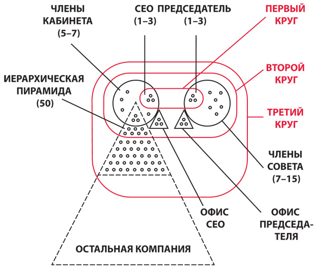
Председатель совета директоров (от одного до трех человек) работает с членами совета директоров (от 7 до 15 человек), которые опираются на сотрудников, чья задача оценивать, насколько: 1) люди, осуществляющие руководство компанией, компетентны; 2) компания действует в соответствии с утвержденными принципами и правилами. Совет наделен полномочиями выбирать и смещать СЕО, но не участвует в микроменеджменте компании или ее руководителей, хотя в случае необходимости члены совета могут начать играть более активную роль. (Они могут помогать СЕО в том объеме, в котором он их об этом просит.) Хотя принцип меритократии идей в Bridgewater подразумевает всеобщую вовлеченность, должны быть разные уровни полномочий, доверия, доступа к информации и права принятия решений, что отражено в виде трех кругов на рисунке.
e. Линии подчинения должны быть четко определены. Это важное правило в рамках всей компании, но особенно важно, чтобы линии подчинения совета директоров (осуществляющего надзор и контроль) не пересекались с линиями подчинения СЕО (осуществляющего управление), хотя между ними должно быть сотрудничество.
f. Права принятия решения должны быть четко определены. Все должны ясно понимать, какими полномочиями обладает каждый сотрудник и какой у него вес в компании, чтобы в случае необходимости принять решение при отсутствии единого мнения не было сомнений, кто возьмет на себя ответственность.
g. Вы должны быть уверены, что люди, проводящие оценку: 1) располагают временем, чтобы получить полную информацию о сотруднике, которого они оценивают; 2) обладают способностями для адекватной оценки; 3) не имеют конфликта интересов, который помешал бы им дать объективную оценку. Чтобы объективно провести оценку, нужно достичь определенного уровня понимания, а на это нужно время. У некоторых людей есть способности и смелость, чтобы наделить других ответственностью, хотя большинство такими качествами не обладают. У «ревизора» не должно быть конфликта интересов (например, он не должен ни в какой степени зависеть от того, кого он оценивает), способного повлиять на объективность оценки, в том числе на рекомендацию об увольнении.
h. Людям, принимающим решения, нужно иметь доступ к информации, необходимой для его принятия, но не должно возникать сомнений, что они не разгласят эту информацию. Это не означает, что доступ к данным должен быть у всех и что все заслуживают доверия. Можно сформировать подкомитеты, участники которых имеют доступ к наиболее важной информации и дают совету директоров рекомендации, содержащие достаточно данных для принятия взвешенных решений, но без раскрытия особенно секретных аспектов.
16.2. В условиях меритократии идей один СЕО хуже, чем группа руководителей
Зависимость от одного человека порождает риск, что он может стать незаменимым, ограничивает уровень компетентности (поскольку никто не может быть одинаково профессиональным во всем), не позволяет установить систему сдержек и противовесов. Кроме того, это слишком большая нагрузка на одного человека. По этим причинам в Bridgewater принята модель партнерства двух или трех СЕО, которые совместно осуществляют руководство компанией.
В Bridgewater за деятельностью СЕО наблюдает совет директоров, в основном через председателя (нескольких председателей). В условиях меритократии идей СЕО также несут ответственность перед сотрудниками компании, хотя те и подчинены им. Сложность для двух или трех СЕО состоит в том, чтобы они эффективно взаимодействовали друг с другом. Если у них это не получается, они должны поставить в известность исполнительного председателя, чтобы были сделаны необходимые изменения. По тем же причинам у нас не один директор по инвестициям (в настоящий момент их три).
16.3. Ни одна система управления, основанная на принципах, правилах и системе сдержек и противовесов, не способна заменить истинные партнерские отношения
Все эти принципы, правила, система сдержек и противовесов не стоят и ломаного гроша, если у вас нет талантливых лидеров, которые интуитивно стремятся действовать на благо всей компании, руководствуясь утвержденными принципами. Лидеры компании должны обладать мудростью, профессионализмом и способностью выстроить близкие, продуктивные рабочие отношения, в которых есть место и конструктивному несогласию, и готовности идти вперед, приняв любое решение, которое будет результатом меритократического подхода.
Мы работаем совместно с другими людьми, чтобы достичь трех целей:
1) более эффективного выполнения нашей миссии, чем у нас получилось бы в одиночку;2) значимых отношений, благодаря которым формируется сообщество;3) денег, позволяющих нам купить то, что мы хотим для себя и других.
Принципы работы: резюме
Относительная важность этих трех целей для каждого своя, а потому только вы можете определить, в каком соотношении и объеме они вам нужны. Важно осознать, что это усиливающие друг друга факторы. Если вы стремитесь к выполнению миссии, вы окажетесь в более выгодном положении, если сможете опереться на поддержку других людей и будете располагать финансовыми ресурсами. Если вы хотите создать эффективное рабочее сообщество, это лучше всего делать на основе общей миссии и при наличии финансовых ресурсов, а если ваша мечта – заработать много денег, вам не обойтись без четких целей и хороших отношений с людьми. Мне повезло получить это все в таком количестве, о котором я даже не мечтал. Я попытался рассказать о подходе, который сработал для меня: меритократия идей, когда осмысленная работа и значимые отношения – это цели, а абсолютная честность и предельная прозрачность – способы их достижения. Теперь вы можете самостоятельно решить, что из сказанного может быть полезно вам.
Я отдаю себе отчет, что предлагаю просто набор принципов, которые могут поставить вас в тупик, а потому хочу еще раз сформулировать основную мысль: из всех подходов к принятию решений принцип меритократии идей самый эффективный[92]. И еще одна очевидная истина: понимание, что вы можете и чего не можете ожидать от человека, а также видение, что делать, чтобы побеждали лучшие идеи, – это самый эффективный способ принятия решений. Почти во всех случаях подход к принятию решений на основе меритократии идей лучше традиционных авторитарного или демократического.
Это не голословная теория. Конечно, мы не создали идеальное общественное устройство и не добились совершенства, но с помощью меритократического подхода мы получили превосходные результаты: думаю, мало кто будет спорить с тем, что на протяжении более сорока лет результаты деятельности Bridgewater были весьма неплохими. Этот подход может в равной степени хорошо сработать в большинстве компаний, поэтому я решил ясно и подробно его сформулировать. Вы не обязаны в точности следовать изложенным принципам, но вы должны задать себе важный вопрос: вы хотите работать в условиях меритократии идей? Если да, как вы можете этого добиться?
Для внедрения меритократического подхода необходимы три условия. Каждый должен: 1) честно высказывать свое мнение; 2) продуктивно выражать несогласие, чтобы стимулировать качественное обсуждение, в процессе которого участники могут изменить точку зрения и прийти к наилучшему коллективному решению; 3) принять утвержденный образ действий в случае оставшихся разногласий (принятие решения с учетом степени компетентности). Хотя меритократический подход не обязательно во всех компаниях должен проявляться одинаково, в целом необходимо поддерживать три этих принципа. Не беспокойтесь по поводу того, чтобы запомнить все конкретные принципы, которые я привел в этой книге. Поймите суть меритократии идей и решите, что подходит для вас, а также сформулируйте собственные принципы.
Я хотел получить осмысленную работу и значимые отношения и считал, что могу добиться этого с помощью абсолютной честности и предельной прозрачности. Когда я попытался действовать, то столкнулся с проблемами, для решения которых должен был делать выбор. Благодаря тому что я подробно записывал, как делал выбор, впоследствии я смог сформулировать принципы, на основе которых реализовал в своей компании меритократический подход, оптимально работающий для всех нас. Если вы сталкиваетесь с препятствиями на пути к цели, обратитесь к моим принципам, потому что велика вероятность, что мне доводилось оказаться в подобной ситуации, я искал выход, нашел его и описал в виде принципа. После этого вы можете сформулировать собственные правила.
Конечно, у всех людей разные способности влиять на работу группы и мне не известны ваши обстоятельства. Но я точно знаю, что если вы хотите работать в условиях меритократии идей, то сможете найти собственный способ это сделать. Вы способны создать такой подход в компании, внедрив его сверху вниз, или вы можете найти для себя подходящую организацию, или просто придерживаться меритократического подхода при работе с коллегами. Какую бы должность вы ни занимали, вы всегда можете следовать принципу непредубежденности и ассертивности и оценивать компетентность всех участвующих сторон при принятии решения.
Самое важное, что я хочу вам пожелать: 1) чтобы работа была делом вашей жизни; 2) чтобы совместно с другими людьми вы стремились к выполнению общей миссии и получили заслуженную награду; 3) чтобы вы умели насладиться и трудностями, и успехом; 4) чтобы вы быстро становились лучше и способствовали изменению других.
Вам решать, что вы хотите получить от жизни и что отдать.
Заключение
Как я уже сказал в самом начале, моя цель была в том, чтобы поделиться принципами, которые сработали для меня. Как вы ими воспользуетесь, дело ваше.
Конечно, я надеюсь, что они помогут вам визуализировать ваши собственные высокие цели, справиться с болезненными ошибками, провести качественный анализ и сформулировать свои принципы, которым вы будете следовать во имя результатов, гораздо превосходящих ваши ожидания. Кроме того, я надеюсь, что они помогут вам делать все это и самому, и в сотрудничестве с другими людьми. А поскольку ваше развитие, как и у всех, будет дорогой преодоления, я надеюсь, что эти принципы помогут вам успешно бороться и совершенствоваться. Возможно, они даже вдохновят вас и ваших коллег записать ваши правила и вместе выбрать лучшие из них в соответствии с меритократическим подходом. Если бы я мог хотя бы на один градус повернуть мир в этом направлении, это было бы здорово.
Есть еще один важный аспект. Я знаю: чтобы помочь людям сделать шаг от мечтаний к конкретным действиям, им нужны практические инструменты и утвержденные процедуры. А потому я планирую сделать созданные нами инструменты широко доступными.
Я сделал все, что мог, чтобы поделиться своими принципами жизни и работы. Мне было очень важно передать другим то, что для меня имеет ценность, и, завершив эту книгу, я чувствую облегчение и удовлетворение и могу приступить к работе над тем, чтобы описать свои принципы экономики и инвестирования.
Приложение. Инструменты и утвержденные процедуры для меритократии идей в Bridgewater
* * *
Предлагаю вашему вниманию краткий обзор нескольких инструментов и процессов, которые в настоящее время активно применяются в Bridgewater. В ближайшем будущем я планирую сделать их доступными в формате приложения Principles, чтобы вы могли попробовать их в действии.
Coach
Поскольку принципов слишком много, чтобы держать их в голове и правильно применять в подходящих ситуациях, и, кроме того, всегда легче спросить совета, чем искать что-то в книге, я создал инструмент под названием Coach («Наставник»). На платформе Coach собрана библиотека стандартных ситуаций и типичных случаев (например, несогласие с оценкой, неэтичный поступок или ложь сотрудника и так далее), которые связаны с подходящими принципами, способными помочь справиться с конкретной ситуацией. По мере пользования приложением люди дают обратную связь по качеству полученных рекомендаций, по сути, обучая «Наставника», что помогает совершенствовать приложение. Со временем Coach стало не менее эффективным, чем небезызвестное приложение Siri.
Dot Collector
Приложение Dot Collector используется на рабочих встречах и позволяет участникам в режиме реального времени высказать свою точку зрения и узнать мнение остальных, а затем прийти к коллективному решению на основе принципа меритократии идей. Приложение показывает образ мышления пользователей, анализирует его и использует эту информацию, чтобы помочь пользователям принять более эффективное решение. В частности…
• Участники совещания постоянно оценивают друг друга с помощью специальных «точек» (dots), положительных или отрицательных, по любому количеству из нескольких десятков характеристик. Эти точки располагаются на матрице, которая динамично обновляется, и все участники обсуждения могут видеть, что думает каждый из участников встречи в режиме реального времени. Это помогает людям отвлечься от собственной точки зрения и узнать мнения остальных. Когда участник видит столько разных точек зрения, это помогает ему перейти на более высокий уровень мышления и осознать, что его собственное мнение – лишь одно из многих, и он задается вопросом о наилучших критериях для разрешения обсуждаемой ситуации. Таким образом, этот инструмент способствует коллективному принятию решений на основе принципа непредубежденности и меритократии идей.
• Приложение помогает пользователям принимать более эффективные решения, предлагая рекомендации почти так же, как это делает система GPS. Собирая данные обо всех присутствующих, приложение может предлагать участникам индивидуальные рекомендации, что особенно важно, когда их мнение далеко от правильного. По нашему опыту, помощь людям в такие моменты может быть очень полезной.
• Приложение Dot Collector помогает определить спорные вопросы, по которым у участников есть серьезные разногласия. Оно делает это, основываясь на распределении ответов и характеристик людей, поддерживающих разные стороны. Например, участнику присылают автоматическое извещение, когда его мнение по конкретному вопросу не совпадает с компетентным мнением большинства; также он получает руководство по шагам, которые можно предпринять, чтобы разрешить возникшее разногласие, опираясь на фактические данные.
• Приложение обеспечивает голосование с учетом степени компетентности. У него есть соответствующий интерфейс, с помощью которого участники могут проголосовать за или против (или дать оценку в баллах), а также система поддержки, которая определяет степень компетентности участников. Это позволяет видеть как равновзвешенный результат (простое большинство), так и результат с учетом степени компетентности (как проголосовали сотрудники, чье мнение имеет наибольший вес). Это может показаться сложным, но на самом деле это оптимальный способ помочь сотрудникам учитывать степень компетентности голосующих без необходимости постоянно держать в голове, кто и в какой области эксперт.
Baseball Cards
Помимо сбора «точек» на совещаниях мы собираем данные о сотрудниках самыми разными способами (оценка, тестирование, анализ принятых ими решений). Все эти данные анализируются при помощи компьютерных алгоритмов, основанных на логике диагностического тестирования, чтобы из разрозненных сведений составить цельное представление о сотрудниках и их личностных особенностях. Мы обычно делимся с сотрудниками компании логикой, лежащей в основе составления алгоритмов, что помогает повысить ее объективность и степень доверия к ней. После этого мы формируем так называемые «бейсбольные карточки» (Baseball Cards), которые представляют собой простой способ демонстрации сильных и слабых сторон человека, а также данных, на основе которых были сделаны выводы (почти так же, как в карточках с информацией о профессиональных бейсболистах).
Как показывает опыт, этот инструмент нам необходим, и мы регулярно им пользуемся, потому что в противном случае сотрудники при общении не принимали бы во внимание фактор компетентности друг друга. Например, «бейсбольные карточки» весьма полезны на совещаниях, где они позволяют участникам оценить качества человека, выражающего мнение, чтобы решить, насколько оно компетентно. Как дополнение к «бейсбольным карточкам» мы разработали еще один инструмент под названием People Profile («Профиль сотрудника»): на основе данных «бейсбольных карточек» (которые со временем стали довольно сложными) он предлагает простое текстовое описание каждого сотрудника и его личностных характеристик. Планируется, что со временем этот инструмент будет предлагать всю систематизированную информацию о каждом сотруднике компании. Кроме того, мы получаем обратную связь от людей, которые проходят процесс оценки, чтобы сравнить полученный результат с восприятием самих респондентов. Таким образом нам удается повышать качество процесса и уверенность в адекватном восприятии.
Чтобы наилучшим образом подбирать сотрудников на должности, я разработал приложение Combinator («Комбинатор»), которое на основе данных «бейсбольных карточек» позволяет выделить ключевые характеристики сотрудников и сравнить их между собой. Если для выполнения функциональных обязанностей нужен человек с определенными качествами, вы можете ввести в приложение имена нескольких подходящих сотрудников, и Combinator обратится к точной информации об их характеристиках, выделит общие ключевые качества и проведет поиск по базе данных, чтобы найти других похожих сотрудников. Кроме того, приложение можно использовать для составления должностных инструкций (основываясь на типе человека, которого вы ищете), которые можно применять как внутри компании, так и за ее пределами.
Issue Log
Приложение Issue Log («Журнал возникающих вопросов») – наш основной инструмент для фиксирования ошибок и извлечения уроков из них. Мы используем его, чтобы обозначать все проблемы и своевременно поручать их решение компетентным сотрудникам, что позволяет нам постоянно совершенствоваться. Принцип действия напоминает фильтр для воды, который собирает и задерживает вредные вещества. Все, что идет не так, должно быть зафиксировано в журнале с указанием степени серьезности проблемы и ответственного лица, так что мы можем легко отследить большинство проблем. Журнал также помогает диагностировать сами трудности и относящуюся к ним информацию. Таким образом, он также представляет эффективные показатели деятельности, поскольку позволяет оценить количество и тип возникающих проблем (и определить людей, создающих эти проблемы и решающих их).
Приложение Issue Log стало наглядным примером инструмента, меняющего привычки людей и их восприятие. Стандартная трудность, с которой на начальном этапе столкнулись сотрудники, – необходимость открыто указывать на ошибки, так как некоторые по умолчанию считают, что это задевает чувства людей. Как только сотрудники к этому привыкли, они поняли, насколько это полезно, и теперь большинство из них не могут действовать иначе.
Pain Button
Я убежден в действенности формулы: боль + анализ = прогресс. Иными словами, боль представляет собой важный сигнал, что вы должны усвоить какой-то урок, и если вы проанализируете сложившуюся ситуацию, то почти наверняка узнаете что-то новое. Это стимулировало меня создать приложение Pain Button («Тревожная кнопка»).
Момент, когда человек испытывает боль, – это лучшее время, чтобы зафиксировать эмоции, но не вполне подходящее для их анализа, потому что к нему нужно подходить с холодной головой. Приложение позволяет пользователю записать, что он чувствует (злость, разочарование, растерянность и так далее) в момент, когда он испытывает эту эмоцию, а затем позже вернуться к этому и проанализировать свои чувства с помощью специально подобранных вопросов. Приложение помогает человеку, испытавшему негативные эмоции, решить, как он поступит, чтобы избежать повторения ситуации в будущем (например, рационально обсудить ситуацию с оппонентом и тому подобное). Кроме того, приложение показывает, насколько часто пользователь попадает в ситуации, вызывающие у него негативные эмоции, причины возникновения таких эмоций и результативность последующих действий. Таким образом, пользователь получает описание неприятной ситуации, ее диагноз и план по улучшению, чтобы уменьшить проблемы или вовсе их избежать, анализ этого плана и ожидаемый результат. Приложение составляет пошаговую инструкцию по улучшению ситуации, которой пользователь может поделиться с другими или сохранить для себя. По отзывам пользователей, Pain Button – это ваш личный психолог, только лучше, потому что он всегда доступен и гораздо дешевле.
Dispute Resolver
В любой компании должны быть конкретные алгоритмы преодоления разногласий. В условиях меритократии идей это особенно важно, поскольку от сотрудников по умолчанию ожидается, что они будут высказывать свои мнения и искать пути примирения конфликтующих точек зрения. Приложение Dispute Resolver («Разрешитель споров») предлагает способы преодоления разногласий на основе меритократического подхода. Оно задает ряд вопросов, которые помогают пользователям урегулировать спор. Одна из особенностей приложения в том, что к участию привлекаются компетентные сотрудники, которые помогают определить, стоит ли доводить конкретное разногласие до сведения руководителя уровнем выше. Кроме того, благодаря приложению каждый из сотрудников понимает, что, если его точка зрения отличается от мнения большинства, только от него зависит, захочет он промолчать или высказать свое мнение и попытаться прийти к согласию с остальными. Вне зависимости от того, есть у вас такой инструмент, как Dispute Resolver, или нет, у вас должна быть ясная и справедливая система для преодоления разногласий, чтобы ваша меритократия идей не превратилась в пустой звук. В противном случае правом голоса в компании будут пользоваться только те сотрудники, которые стоят выше на иерархической лестнице.
У нас также есть ряд инструментов, которые помогают нам контролировать повседневную деятельность и оставаться в согласии относительно происходящего.
Daily Update Tool
На протяжении многих лет я просил каждого своего непосредственного подчиненного ежедневно выделять 10–15 минут на краткий обзор в форме электронного письма, что он сделал за день, какие вопросы его беспокоят и что он по этому поводу думает. Читая эти отчеты и сравнивая их (иными словами, оценивая, как люди видят то, чем занимаются), я могу судить, насколько эффективно они работают вместе, какой у них настрой, за какие ниточки мне нужно потянуть. Несколько лет назад я разработал специальное приложение, которое объединяет все эти отчеты, благодаря чему их стало гораздо проще отслеживать, фиксировать показатели и давать обратную связь, чем работать с несколькими десятками разрозненных цепочек электронных писем. Теперь пользователи могут с легкостью ежедневно предоставлять полезные данные, например о своем рабочем настрое, степени загрузки, проблемах, о которых они хотят поставить в известность руководство. Этот простой инструмент оказывает мне и моим подчиненным неоценимую помощь, позволяя оставаться друг с другом на одной волне. На уровне компании это приложение также позволяет держать руку на пульсе и отслеживать повседневную деятельность (настрой команды, рабочую нагрузку, отдельные проблемы, кто и чем занимается и так далее).
Contract Tool
Как часто ваши рабочие встречи заканчивались тем, что все говорили, что нам нужно сделать это и это, и потом не происходило ровным счетом ничего, потому что, как только дверь закрывалась, все забывали, о чем договорились? Чтобы люди реально что-то делали, их обязательства должны быть четко проговорены, а сами они обязаны понимать, что взяли на себя ответственность по их исполнению. Простое приложение Contract Tool («Соглашение») позволяет сотрудникам устанавливать обязательства и отслеживать их исполнение. Это помогает обеим сторонам держать ситуацию под контролем.
Process Flow Diagram
Аналогично тому, как инженер пользуется картой производственного процесса, чтобы понимать логику того, что он разрабатывает, руководителю не обойтись без «Схемы рабочего процесса» (Process Flow Diagram), которая помогает ему представлять организацию как механизм. Эта схема может ссылаться на организационную структуру, отражающую, кто кому подчиняется, или организационная структура может дополнять схему рабочего процесса. В идеале «Схема рабочего процесса» должна быть сделана так, чтобы руководитель мог видеть всю картину целиком и при необходимости получить более детальное представление о каждом из уровней (например, рассматривая положение любого сотрудника в схеме, руководитель имеет возможность взглянуть на его «бейсбольную карточку» и получить другую информацию о нем).
В Bridgewater разработаны карты процессов для каждого департамента. Они показывают все должности и функциональные обязанности для каждой из позиций и то, как движется рабочий процесс.
Руководство по процедурам и правилам
Это сборник инструкций по утвержденным процедурам и правилам, которым сотрудники могут воспользоваться как руководством. Документ постоянно обновляется и отражает, чему учится компания.
Показатели
Есть хороший афоризм: «Невозможно управлять тем, что невозможно измерить». Благодаря измерениям работы вашего механизма вы можете упростить управление им, особенно если применить алгоритмы, которые сделают значительную часть анализа и работы за вас.
Чтобы измерения были качественными, нужно сначала подумать, какая информация вам требуется для ответа на злободневные вопросы, а затем решить, как ее получить. Нельзя просто собрать любую информацию и смотреть, о чем она расскажет. В Bridgewater приняты четыре шага для создания эффективных показателей. 1. Знайте, какие бизнес-цели вы преследуете. 2. Поймите, как вы это делаете (каков механизм и его составляющие: люди и план действий). 3. Определите ключевые этапы проекта, провести измерения в которых важнее всего, чтобы вы знали, как работает механизм в процессе достижения цели. 4. Изучите, как создать рычаги, привязанные к этим ключевым показателям, которые позволят скорректировать процесс и изменить результаты. Для этого мы рекомендуем сотрудникам создавать показатели в сочетании с картами рабочего процесса и руководствами по утвержденным процедурам.
Эффективность измерений определяется тем, способны ли они продемонстрировать, что идет хорошо или не очень и кто действует результативно, а кто нет, вплоть до имен конкретных сотрудников. Мы стремимся, чтобы наши показатели отражали все: от самых важных проблем, которыми занимается СЕО, до задач департаментов и отдельных команд и сотрудников, несущих ответственность на местах.
Список литературы
Aamodt, Sandra, and Sam Wang. Welcome to Your Brain: Why You Lose Your Car Keys but Never Forget How to Drive and Other Puzzles of Everyday Life. New York: Bloomsbury Publishing, 2009.
Beauregard, Mario, and Denyse O’Leary. The Spiritual Brain: A Neuroscientist’s Case for the Existence of the Soul. San Francisco: HarperOne, 2007.
Campbell, Joseph. The Hero with a Thousand Faces. Princeton: Princeton University Press, 1949.
Dalai Lama XIV. Beyond Religion: Ethics for a Whole World. Boston: Houghton Mifflin Harcourt, 2011.
Dawkins, Richard. River Out of Eden: A Darwinian View of Life. New York: Basic Books, 1995.
Duhigg, Charles. The Power of Habit: Why We Do What We Do in Life and Business. New York: Random House, 2012.
Durant, Will, and Ariel Durant. The Lessons of History. New York: Simon & Schuster, 1968.
Eagleman, David. Incognito: The Secret Lives of the Brain. New York: Pantheon Books, 2011.
Gardner, Howard. Changing Minds: The Art and Science of Changing Our Own and Other People’s Minds. Cambridge: Harvard Business Review Press, 2006.
Gazzaniga, Michael S. Who’s in Charge?: Free Will and the Science of the Brain. New York: Ecco Books, 2011.
Grant, Adam. Originals: How Non-Conformists Move the World. New York: Viking, 2016.
Haier, Richard J. The Intelligent Brain. Chantilly, VA: The Great Courses Teaching Company, 2013.
Hess, Edward D. Learn or Die: Using Science to Build a Leading-Edge Learning Organization. New York: Columbia Business School Publishing, 2014.
Kahneman, Daniel. Thinking, Fast and Slow. New York: Farrar, Straus & Giroux, 2011.
Kegan, Robert. The Evolving Self: Problem and Process in Human Development. Cambridge: Harvard University Press, 1982.
Kegan, Robert. In Over Our Heads: The Mental Demands of Modern Life. Cambridge: Harvard University Press, 1998.
Kegan, Robert, and Lisa Laskow Lahey. An Everyone Culture: Becoming a Deliberately Developmental Organization. Cambridge: Harvard Business Review Press, 2016.
Lombardo, Michael M., Robert W. Eichinger, and Roger P. Pearman. You: Being More Effective in Your MBTI Type. Minneapolis: Lominger Limited, 2005.
Mlodinow, Leonard. Subliminal: How Your Unconscious Mind Rules Your Behavior. New York: Pantheon Books, 2012.
Newberg, Andrew, MD, and Mark Robert Waldman. The Spiritual Brain: Science and Religious Experience. Chantilly, VA: The Great Courses Teaching Company, 2012.
Norden, Jeanette. Understanding the Brain. Chantilly, VA: The Great Courses Teaching Company, 2007.
Pink, Daniel H. A Whole New Mind: Why Right-Brainers Will Rule the Future. New York: Riverhead Books, 2005.
Plekhanov, G. V. On the Role of the Individual in History. Honolulu: University Press of the Pacific, 2003. (Original work published 1898)
Reiss, Steven. Who Am I? The 16 Basic Desires That Motivate Our Actions and Define Our Personalities. New York: Berkley, 2002.
Riso, Don Richard, and Russ Hudson. Discovering Your Personality Type: The Essential Introduction to the Enneagram, Revised and Expanded. New York: Mariner Books, 2003.
Rosenthal, Norman E, MD. The Gift of Adversity: The Unexpected Benefits of Life’s Difficulties, Setbacks, and Imperfections. New York: TarcherPerigee, 2013.
Taylor, Jill Bolte. My Stroke of Insight: A Brain Scientist’s Personal Journey. New York: Penguin Books, 2009.
Thomson, J. Anderson, with Clare Aukofer. Why We Believe in God(s): A Concise Guide to the Science of Faith. Charlottesville: Pitchstone Publishing, 2011.
Tokoro, M., and K. Mogi, eds. Creativity and the Brain. Singapore: World Scientific Publishing, 2007.
Wilson, Edward O. The Meaning of Human Existence. New York: Liveright Publishing Corporation, 2014.
Благодарности
Принципы жизни и работы и посвященная им книга стали результатом моих действий в самых разных ситуациях, в которые я попадал на протяжении многих лет. Я переживал их с людьми, которым я больше всего благодарен: Боб Принс, Грег Дженсен, Жизель Вагнер, Дэн Бернстайн, Дэвид Маккормик, Айлин Мюррей, Джо Добрич, Пол Колмэн, Роб Фрид, Росс Уоллер, Клод Амадео, Рэндел Сэндлер, Осман Налбантоглу, Брайан Крейтер, Том Синчак, Том Уоллер, Жанин Раканелли, Френ Шен, Лиза Сафиан.
Мы с Бобом и Грегом провели большую часть нашей взрослой жизни, пытаясь раскрыть универсальные и не зависящие от исторической эпохи законы экономики и рынков. Мы общались каждый день, и это общение было обычно содержательным, иногда бурным и время от времени эйфорическим. Несмотря на то что наши разговоры преимущественно сводились к темам экономики и рынков, что привело к открытию бесценных принципов экономики и инвестирования, благодаря ему мы многое узнали о самих себе и о том, как следует относиться друг к другу. Мы сформулировали эти уроки в виде принципов жизни и работы, которые оказались еще более ценными. Позднее мы делали это с Айлин Мюррей и Дэйвом Маккормиком, которые вместе заменили меня на посту СЕО. Дэйв и Айлин, спасибо вам за ваш вклад в развитие дара, за принятие его и последующую заботу о нем.
Когда я впервые задумался о том, что в Bridgewater уже сменилось поколение сотрудников и появились руководители новой волны, я решил собрать все свои разрозненные наборы принципов в единое руководство, чтобы помочь сотрудникам компании. Сбор и трансформация того, что начиналось как беспорядочный набор принципов, в эту прекрасную книгу потребовали невероятных усилий. Получившийся результат – в значительной степени заслуга Марка Кирби, который помогал мне в работе над рукописью. Я безмерно ценю вклад Артура Голдвега и Майка Кубина в улучшение текста (Майк сделал это в знак нашей дружбы). Кроме того, я хочу выразить благодарность Арианне Хаффингтон, Тони Роббинсу, Норму Розенталю и Кристине Николовой за время, которое они уделили прочтению книги, и за их ценные комментарии.
Те, кто ежедневно больше всего поддерживал и стимулировал меня, – это «ангелы Рэя» (Мэрилин Кофилд, Петра Кегель, Кристи Мерола и Кристина Дроссакис), «движущая сила» (Зак Видер, Дэйв Альперт, Йен Гонио и Эндрю Стернлайт, а также Элис Ваксенберг, Дэвид Маннерс-Вебер и Джон Вуди) и «аналитики Рэя» (Стивен Кригер, Гарднер Дэвис и Брэндон Роули, а также Марк Диннер). Я хочу выразить благодарность Джейсону Ротенбергу, Ною Йечили, Карен Карниол-Тамбур, Брюсу Стейнбергу, Ларри Кофски, Бобу Эллиотту, Рамсену Бетфархэду, Кевину Бреннану, Керри Рейлли и Джейкобу Клину, представляющим следующее поколение наших сотрудников, которые воодушевили меня и помогли сформулировать принципы инвестирования. Спасибо Джеффу Гарднеру, Джиму Хаскелу, Полу Подольски, Робу Зинку, Майку Колби, Лайонелу Калиффу, Джоэлу Уиддену, Брайану Лолору, Тому Бачнеру, Джиму Уайту, Кайлу Делани, Иану Вэнгу, Парагу Ша и Биллу Махони, которые персонифицировали наши принципы для клиентов. Я благодарен Дэйву Ферручи, который больше, чем кто-либо другой, помог мне преобразовать принципы работы в алгоритмы, а также Джеффу Тэйлору, Стиву Эльфанбауму, Стюарту Фридману и Джен Хили, которые помогают мне сделать их понятными широкой аудитории. Несмотря на разнообразие моих интересов и направлений деятельности, эти команды сделали мою миссию своей и заставляли меня двигаться вперед. Без их помощи мне бы никогда не удалось даже приблизиться к тому успеху, которого я достиг. Спасибо за безграничное терпение и самозабвенную поддержку!
Прекрасное оформление книги – это заслуга Фила Караваджио, его таланта и щедрости. После того как я разместил онлайн оригинальную версию «Принципов» в формате PDF, он преподнес мне в дар великолепно оформленное печатное издание, созданное с помощью художника-графика Родриго Коррала. Фил, успешный предприниматель, просто хотел выразить благодарность за то, что мои принципы ему помогли. Я был потрясен красотой издания, а признание Фила, что эти принципы значили для него, стало для меня еще одним подарком. Это подтолкнуло меня к тому, чтобы выпустить в тираж и печатную версию книги. Как только я принял это решение, Фил с Родриго продолжили работать и оформили издание, которое вы сейчас держите в руках. И снова это был их подарок мне. Спасибо, Фил!
Шесть лет назад Джофи Феррари-Адлер, ответственный редактор в издательстве Simon&Schuster, прочитал «Принципы» в сети, счел их полезными и объяснил мне, что важно поделиться ими, чтобы помочь другим людям. Он приложил значительные усилия, чтобы это произошло. Изучая возможности для издания книги, я интересовался мнением знающих людей, чтобы найти лучшего агента. В результате я нашел Джима Левина. Я понял, почему его клиенты в таком восторге от него: он вкладывает в проект свое время, умения и человеческое отношение. Под чутким руководством Джима я прошел все этапы издательского процесса и в итоге познакомился с Джоном Карпом, президентом Simon&Schuster. С самого начала Джон дал мне карт-бланш и позволил делать такую книгу, как хотел я, а не такую, как видел он. Благодаря ему так и произошло.
Наконец, я хочу поблагодарить мою супругу Барбару и моих сыновей Девона, Пола, Мэтта и Марка за то, что они терпят меня и мои принципы, и за то, что дали мне время и возможность сформулировать их и написать эту книгу.
Об авторе
Рэй Далио родился и вырос в семье среднего достатка на Лонг-Айленде. В 26 лет основал инвестиционную компанию Bridgewater Associates с первым офисом в одной из комнат своей съемной квартиры. В течение следующих 42 лет он превратил Bridgewater Associates в пятую самую важную частную компанию в США (по версии Fortune). Ему удалось это благодаря созданию уникальной корпоративной культуры – внедрению меритократии идей, основанной на абсолютной честности, предельной прозрачности и принципе принятия решений с учетом компетентности. Рэй Далио убежден, что большинство людей и компаний могут воспользоваться его принципами для достижения собственных целей.
Рэй Далио входит в список 100 самых влиятельных людей планеты (по версии Time) и 100 самых богатых людей в мире (по версии Forbes). Его уникальные принципы инвестирования изменили всю отрасль, за что журнал CIO назвал его «Стивом Джобсом инвестирования». (Этим принципам посвящена его следующая книга Economic and Investment Principles.) Рэй Далио считает, что добился успеха не потому что он особенный, а потому что его успех стал результатом применения принципов, которые он сформулировал, зачастую учась на своих ошибках. И эти принципы могут быть полезны большинству людей.
Рэй Далио написал эту книгу в 68 лет, его главной целью было поделиться своими принципами в надежде, что другие сочтут их ценными.
notes
Примечания
1
Меритократия (букв. «власть достойных», от лат. meritus – достойный и древнегреч. κράτος – власть, правление) – принцип управления, согласно которому руководящие посты должны занимать наиболее способные люди, независимо от их социального происхождения и финансового достатка. Прим. перев.
2
Тачбол – разновидность американского футбола. Прим. ред.
3
Генри Торо (1817–1862) – американский писатель, мыслитель, натуралист, общественный деятель, аболиционист. Прим. перев.
4
Ашрам – обитель мудрецов и отшельников в Древней Индии, которая обычно располагалась в отдаленной местности – в горах или в лесу. В контексте современного индуизма термин «ашрам» часто используется для обозначения духовной или религиозной общины, куда человек приходит для медитации, молитвы, совершения ритуала и духовного обновления. Прим. ред.
5
Махариши Махеш Йоги, более известный как Махариши (1917–2008), – индийский гуру, основатель трансцендентальной медитации и программы ТМ-Сидхи. Прим. ред.
6
Тетское наступление – неожиданное широкомасштабное наступление северовьетнамской армии в северной части Южного Вьетнама. Прим. перев.
7
Merrill Lynch – крупный американский инвестиционный банк (финансовый конгломерат) со штаб-квартирой в Нью-Йорке, в 2008 году был приобретен, а с 2013 года полностью интегрирован в структуру Bank of America. Прим. ред.
8
Сэнфорд Вейл (1933 г. р.) – американский банкир, финансист и филантроп. Бывший исполнительный директор и председатель правления Citigroup. Прим. ред.
9
Теория «большего дурака» (Greater fool theory) утверждает, что можно делать деньги, покупая ценные бумаги независимо от их качества и от того, переоценены они или нет, а позже продавая их с прибылью, потому что всегда найдется кто-то (глупее, «больший дурак»), кто также рассчитывает быстро перепродать актив с прибылью. Прим. перев.
10
Пол Адольф Волкер (1927 г. р.) – американский экономист и государственный деятель. Занимал должности заместителя министра финансов США (1969–1974), президента Федерального резервного банка Нью-Йорка (1975–1979) и председателя правления Федеральной резервной системы США (1979–1987). Прим. ред.
11
Нельсон Банкер Хант (1926–2014) – глава американской нефтяной компании, миллиардер. Прим. ред.
12
1 унция = 28,35 г.
13
Его неспособность исполнить требования о возврате наличных, в частности удовлетворить требование брокеров по внесению дополнительных средств на его торговый счет (маржин колл), могла привести к «эффекту домино».
14
Бернард Барух (1870–1965) – американский финансист, биржевой спекулянт, а также политический и государственный деятель. Состоял советником при президентах США Вудро Вильсоне и Франклине Рузвельте. Бернард Барух первым в мире в официальной обстановке употребил термин «холодная война» (1947). Прим. ред.
15
Речь Стива Джобса перед выпускниками Стэнфордского университета, 2005 год. Прим. ред.
16
He who lives by the crystal ball is destined to eat ground glass – авторство цитаты приписывают Эдгару Фидлеру (1929–2003) – американскому экономисту, помощнику министра финансов по экономической политике (1971–1975) во времена Ричарда Никсона и Джеральда Форда. Прим. перев.
17
RadioShack – американская компания, сеть розничных магазинов по продаже электроники, расположенных в Северной Америке, Европе, Южной Америке и Африке. Штаб-квартира компании находится в Техасе. Прим. ред.
18
Кубок Америки (англ. America’s Cup) – одна из самых известных и престижных регат в мире. Обладателем Кубка Америки непрерывно на протяжении 132 лет до 1983 года был Нью-Йоркский яхт-клуб. Прим. перев.
19
Пол Тюдор Джонс (1954 г. р.) – американский инвестор, менеджер хедж-фондов и филантроп. В 1980 году основал свой хедж-фонд Tudor Investment Corporation. Вскоре после этого он создал Tudor Group – холдинговую компанию хедж-фондов, которая специализируется на фиксированных доходах, валютах, акциях и сырьевых товарах. Прим. ред.
20
Маотай – китайский крепкий алкогольный напиток, названный в честь городка Маотай в провинции Гуйчжоу, где он производится. Крепость варьируется от 35 до 53 %. Прим. перев.
21
События на площади Тяньаньмэнь – серия акций протеста в Пекине, продолжавшихся с 15 апреля по 4 июня 1989 года, главными участниками которых были студенты. 4 июня протестующие были разогнаны танками, в результате погибли сотни людей. Прим. ред.
22
В современном виде торговые банки совмещают в себе черты инвестиционных и коммерческих банков. Прим. ред.
23
Ли Куан Ю (1923–2015) – сингапурский государственный политический деятель, первый премьер-министр Республики Сингапур (1959–1990). Прим. ред.
24
Чарльз Пит «Чарли» Роуз-младший (1942 г. р.) – американский телеведущий и журналист. Окончил Университет Дьюка в 1964 году со специализацией по истории, затем защитил диссертацию в Школе права при университете. С 1972 года начал строить журналистскую карьеру. В 1984–1990 годах Роуз был ведущим собственной новостной программы на канале CBS; его интервью с Чарльзом Мэнсоном завоевало премию «Эмми» в 1987 году. Прим. ред.
25
Под «потоком доходности» я имею в виду прибыль, получаемую от исполнения конкретного правила при принятии решения, и представляю ее как прямую на графике, отражающую динамику стоимости инвестиций с течением времени, и как решение позволить стоимости вырасти еще или продавать.
26
Гарри Макс Марковиц (1927 г. р.) – американский экономист, профессор финансов в Школе менеджмента Ради Калифорнийского университета в Сан-Диего, лауреат премии Джона фон Неймана (1989 год) и Нобелевской премии (1990 год) в области экономических наук. Наиболее известен новаторской работой по современной портфельной теории (оценке эффективности инвестиционного портфеля), в которой предложил новый подход к исследованию эффектов риска распределения инвестиций, корреляции и диверсификации ожидаемых инвестиционных доходов. Прим. ред.
27
Валютный оверлей – страхование валютного риска на основании фьючерсов или форвардных контрактов. Прим. перев.
28
Я назвал этот подход «Процесс пяти шагов». Остановлюсь на его описании далее.
29
Подробнее на теме работы с компьютерными системами принятия решений я остановлюсь в главе 5 части II «Жизненные принципы».
30
Фонд Рокфеллера (англ. Rockefeller Foundation) – американский благотворительный фонд, основанный в 1913 году, одна из наиболее влиятельных неправительственных организаций в мире. Прим. перев.
31
С развитием цифровых технологий мы продолжаем совершенствовать наши методы записи и распространения этого контента.
32
Типология Майерс – Бриггс – типология личности, возникшая на базе типологии Юнга в 1940-х годах и получившая широкое распространение в США и Европе. На основе этой типологии была создана система психологического тестирования – Myers – Briggs Type Indicator (MBTI). Академическая психология настороженно относится к этому подходу, принимая его с многочисленными оговорками, так как не все исходные предположения теории были затем подтверждены после накопления эмпирических данных. Прим. ред.
33
Бейсбольная карточка – тип коллекционных карточек, как правило, печатаются на определенном виде бумаги или картона. На них обычно нанесено изображение одного или более бейсболистов или других связанных с данным видом спорта деятелей. Наиболее распространены в США. Прим. ред.
34
AVG – среднее количество отбивания на бите, или отношение общего количества отбивания мяча (хитов) у бэттера (игрока, отбивающего подачу) к общему количеству выхода на биту. К примеру, бэттер выходил на биту 600 раз и сделал при этом 96 ударов (хитов), значит, его AVG равен 0,160 (96/600). У лучших бэттеров этот показатель может превосходить 0,300. Прим. перев.
35
Ссылки на книги Роберта Кигана, Эдварда Хесса и Адама Ганта даны в библиографии.
36
«Прикосновение огнем» (Touched with Fire) – фильм 2015 года режиссера Пола Далио с Люком Кирби и Кэти Холмс в главных ролях. По сценарию два человека с маниакально-депрессивными расстройствами знакомятся в психиатрической больнице и влюбляются друг в друга. Прим. ред.
37
Критически важную роль также сыграли действия министра финансов США Генри Полсона, особенно поддержка системно важных банков за счет государственных средств.
38
Эндрю Карнеги (1835–1919) – американский предприниматель, крупный сталепромышленник, мультимиллионер и филантроп. Прим. ред.
39
Уолтер Айзексон (1952 г. р.) – американский журналист, писатель и биограф, автор популярных биографий Стива Джобса, Генри Киссинджера, Бенджамина Франклина и Альберта Эйнштейна. Прим. ред.
40
Президентская медаль Свободы (англ. Presidential Medal of Freedom) – одна из двух высших наград США для гражданских лиц, вручаемая по решению президента США. Медалью Свободы награждаются люди, «внесшие существенный вклад в безопасность и защиту национальных интересов США, в поддержание мира во всем мире, а также в общественную и культурную жизнь США и мира». Прим. ред.
41
В Германии, как и везде, действуют противоборствующие политические силы, и решения становятся компромиссом в результате переговоров и взаимных уступок. Так что весьма желательно знать, какой реальной властью обладает каждый из политических деятелей и что они готовы обсуждать. Особенность Германии в том, что немцы уделяют большое внимание юридическим тонкостям.
42
Ван Цишань (1948 г. р.) – китайский государственный и партийный деятель. С 15 ноября 2012 года занимает пост главы Центральной комиссии КПК по проверке дисциплины. Входит в «семерку» высшего руководства КНР. Вице-премьер в правительствах Вэня Цзябао и Ли Кэцяна. Член Политбюро ЦК КПК с 2007 года. Прим. ред.
43
Джозеф Джон Кэмпбелл (1904–1987) – американский исследователь мифологии, наиболее известный благодаря своим трудам по сравнительной мифологии и религиоведению. Приобрел большую популярность после серии телевизионных интервью в 1985 и 1986 годах, а также благодаря тому, что именно он своей книгой «Тысячеликий герой», по словам Джорджа Лукаса, вдохновил его на фильм «Звездные войны». Прим. ред.
44
Издана на русском языке: Кэмпбелл Д. Тысячеликий герой. СПб.: Питер, 2018. Прим. ред.
45
Уильям Джеймс Дюрант (1885–1981) – американский писатель, историк и философ. Наиболее известен как автор одиннадцатитомной «Истории цивилизации», которую он написал совместно с женой Ариэль Дюрант и которая была опубликована между 1935 и 1975 годами. Уильям и Ариэль Дюрант были награждены Пулитцеровской премией за нехудожественную литературу в 1968 году и президентской медалью Свободы в 1977-м. Прим. ред.
46
Клинтон Ричард Докинз (1941 г. р.) – английский этолог, эволюционный биолог, ученый и популяризатор науки. С 1995 по 2008 год работал профессором Оксфордского университета в составе Саймонского профессората популяризации науки. Прим. ред.
47
Поймите меня правильно: я не считаю, что «герои» или «лидеры» лучше остальных или что их жизненный путь более достойный. Вполне логично, что не каждый захочет отправиться в подобное путешествие по доброй воле. Я думаю, что самое важное – это понимать себя и действовать в соответствии со своим внутренним «я».
48
«Филантропия» – не вполне корректное определение того, чем мы занимаемся. Мы помогаем в тех вопросах, которые нас волнуют, потому что это доставляет нам радость, это все равно что помогать другу. Термин «филантропия» лично мне кажется более официальным. Так, для некоторых критерием того, можно ли какую-то деятельность считать благотворительностью, становится то, подпадает ли она под описание благотворительности в налоговом законодательстве. Когда мы говорим о благотворительности, то подразумеваем людей, которые рады помогать другим.
49
«Сеть Омидьяра» – американский частный некоммерческий венчурный инвестиционный фонд, специализирующийся на инвестициях на любых стадиях развития организации в стартапы в области социального предпринимательства практически во всех отраслях. «Сеть Омидьяра» основана в 2004 году создателем eBay Пьером Омидьяром и его женой Пэм. Прим. перев.
50
В январе 2015 года мы запустили наш первый более чем за десятилетие новый продукт. Он получил название Optimal Portfolio и сочетал оба вида доходности – альфа и бета – так, что уникальным образом отвечал глобальным макроэкономическим условиям, в которых процентные ставки колебались около нуля. Этот запуск стал огромным успехом – самым крупным в истории хедж-фондов.
51
Стейкхолдер (англ. stаkeholder – заинтересованная сторона, причастная сторона) – физическое лицо или организация, имеющие права, долю, требования или интересы относительно системы или ее свойств, удовлетворяющих их потребностям и ожиданиям. Прим. ред.
52
Джеймс «Джим» Коллинз (1958 г. р.) – американский бизнес-консультант, писатель, исследователь. Автор книг «Как гибнут великие и почему некоторые компании никогда не сдаются», «От хорошего к великому: почему некоторые компании совершают прорыв, а другие нет», «Построенные навечно» и «Великие по собственному выбору» (все они регулярно переиздаются на русском языке издательством «Манн, Иванов и Фербер»). Работы Коллинза были опубликованы в Harvard Business Review, Business Week, Fortune и других журналах. Прим. ред.
53
Я уверен, что трансцендентальная медитация, которую я регулярно практикую вот уже полвека, помогла мне обрести душевное равновесие, чтобы относиться к жизненным проблемам таким образом.
54
Не стоит считать, что вы всегда знаете, что для вас лучше: иногда это не так. Конечно, вы лучше знаете свою цель, но другие могут знать, как быстрее и проще ее достичь, потому что ваши слабости могут быть их сильными сторонами или у них более подходящий опыт и знания. Так, при болезни лучше следовать рекомендациям врача, а не делать то, что хочется вам. Далее в книге мы рассмотрим несколько вариантов, как может быть «запрограммирован» мозг человека и как понимание, каким образом он работает, влияет на то, какие решения следует принимать самостоятельно, а какие делегировать другим. Понимание, когда не следует принимать решение самому, – один из самых важных навыков, которые вы можете у себя развить.
55
Подробнее на этом мы остановимся в следующих главах, но здесь коротко отмечу, что человек заслуживает доверия, если он устойчиво добивается отличного результата и точно может объяснить, как он это делает.
56
Есть много вещей, которые люди считают хорошими, потому что они кажутся им разумными или добрыми, но которые не приносят желаемого результата (например, идея коммунизма «от каждого по способностям, каждому по потребностям»). С точки зрения природы эти вещи плохи. И я не могу с этим не согласиться.
57
Всякая вещь в природе в конце концов подвергается распаду. Человек, как и все остальное, всего лишь сосуд для эволюции. Так, хотя мы привыкли считать себя индивидуальностями, мы лишь хранилище генов, которые живут миллионы лет и используют тела, подобные нашим.
58
На тему эволюции я рекомендую почитать книги Ричарда Докинза и Е. О. Уилсона. Если бы меня попросили выбрать только одну книгу, я бы остановился на книге Докинза River Out of Eden.
59
Конечно, мы часто получаем удовольствие от подобных вещей – отношений, карьеры и так далее, – но в таком случае это обычно происходит благодаря тому, что мы получаем новые впечатления от изменения каких-то аспектов этих явлений.
60
При движении от недостатка чего-либо к избытку предельное приращение выгоды сокращается.
61
Ваша уникальная способность к самоанализу – умение осознать себя, окружающую действительность и отношения между вами и окружающей действительностью – означает возможность глубоко мыслить и взвешивать неочевидные факты, чтобы учиться и делать верный выбор. Кроме того, обычно чрезвычайно полезно спросить совета у заслуживающих доверия людей относительно причин вашей боли, чтобы улучшить качество анализа, особенно у тех, кто придерживается противоположных взглядов, но разделяет вашу заинтересованность в желании найти истину, а не доказать свою правоту. Если вы способны глубоко проанализировать свои проблемы, они почти наверняка уменьшатся или исчезнут, потому что вы почти всегда сможете найти более эффективный способ их решения, чем спрятать голову в песок.
62
Позвольте пояснить: я не утверждаю, что людям не надо помогать. Я считаю, что нужно помогать, давая возможности и советы, которые им необходимы, чтобы набраться сил и воспользоваться возможностями. Как гласит пословица: «Бог помогает тем, кто сам себе помогает». К сожалению, это нелегко, особенно с близкими. Чтобы помогать людям извлекать уроки из болезненного опыта, необходимо четко и постоянно объяснять логику своих действий. Как вы узнали из «Истоков», именно это в значительной степени побудило меня изложить и объяснить свои принципы.
63
Способность видеть меняющиеся обстоятельства и адаптироваться к ним в большей степени представляет собой функцию восприятия и рационального мышления, чем умение быстро учиться и обрабатывать информацию.
64
Головной мозг состоит из множества взаимосвязанных структур, отвечающих за мысли, эмоции и действия человека. При объяснении этих вещей я придерживаюсь некоторых упрощений, например называю миндалевидное тело единственным ответственным за эмоциональную реакцию «бей или беги», хотя нейроанатомия этого процесса более сложная. Подробнее я остановлюсь на этом в следующей главе.
65
Вы можете задать вопросы: «Вы предпочитаете, чтобы я честно высказывал свое мнение и задавал вопросы или держал их при себе?», «Мы с вами будем пытаться убедить друг друга в собственной правоте или непредубежденно обсудим мнения друг друга, чтобы понять, какое из них объективнее и как следует поступить?», «Вы со мной спорите или пытаетесь понять мою точку зрения?»
66
Ассертивность – способность человека не зависеть от внешних влияний и оценок, самостоятельно регулировать собственное поведение и отвечать за него, в социально приемлемой форме отстаивать свои интересы и свою линию поведения в ситуации внешнего давления. Прим. перев.
67
Психолог и научный журналист Дэниел Гоулман назвал это термином «эмоциональный интеллект».
68
В некоторых случаях это может быть проявлением эффекта Даннинга – Крюгера – метакогнитивного искажения, которое заключается в том, что люди, имеющие низкий уровень квалификации, считают себя профессионалами.
69
Издана на русском языке: Джеймисон К. Беспокойный ум. Моя победа над биполярным расстройством. М.: Альпина Паблишер, 2017. Прим. ред.
70
Результаты многих исследований свидетельствуют, что хорошие социальные связи важнее для здоровья и счастья человека, чем любой другой фактор. Например, Роберт Уолдингер, руководитель Гарвардского исследования по развитию взрослых, в ходе которого на протяжении 75 лет изучали жизнь респондентов из разных социальных слоев общества, заявляет следующее: «У вас может быть столько денег, сколько вы пожелаете, успешная карьера, здоровье, но без любви и человеческих отношений вы не будете счастливы… Хорошие взаимоотношения – фундамент хорошей жизни».
71
Издана на русском языке: Млодинов Л. (Нео)сознанное. Как бессознательный ум управляет нашим поведением. М.: Гаятри/Livebook, 2013. Прим. ред.
72
Издана на русском языке: Уилсон Э. Смысл существования человека М.: Альпина нон-фикшн, 2018. Прим. ред.
73
Издана на русском языке: Его Святейшество Далай-лама XIV. Больше, чем религия. Этика для всего мира. М.: Фонд «Сохраним Тибет», 2016. Прим. перев.
74
Издана на русском языке: Дахигг Ч. Сила привычки. Почему мы живем и работаем именно так, а не иначе. М.: Карьера Пресс, 2015. Прим. перев.
75
На эту тему настоятельно рекомендую книгу Дэниела Пинка A Whole New Mind и статью Роберта Ли Хоца A Wandering Mind Heads Straight Toward Insight, опубликованную в журнале The Wall Street Journal. В то время как многие структуры головного мозга состоят из двух половин, только в коре, которая развилась позже остальных частей и составляет три четверти всего мозга, есть функциональные различия между правой и левой сторонами.
76
Это сложный вопрос. Поиску ответа на него посвящены целые научные направления, но убедительного и обоснованного вывода пока так и нет, в том числе у меня. Тем не менее, поскольку понимание того, что можно изменить в человеке, чрезвычайно важно для людей, стремящихся управлять собой и другими, я глубоко изучил тему нейропластичности головного мозга. То, что я узнал, совпадает с моим собственным опытом, и я поделюсь этой информацией с вами.
77
По результатам исследования с применением томографии головного мозга, проведенного в Центральной больнице Массачусетса в сотрудничестве с Гарвардским университетом, после восьминедельного курса медитации в головном мозге отмечаются физические изменения. Ученые выделили повышенную активность в частях мозга, отвечающих за обучение, память, самосознание, сочувствие, самоанализ, а также снижение активности миндалевидного тела.
78
Этот тест помогает определить, как люди управляют разными уровнями и на каком уровне они сами обычно находятся.
79
Если вы хотите пройти некоторые из этих оценок и узнать свои результаты, это можно сделать на сайте assessments.principles.com.
80
В опроснике Майерс – Бриггс это шкала «суждение» – «восприятие», но я предпочитаю термин «планирование», так как «суждение» имеет другие коннотации. В терминологии MBTI «суждение» не означает выражение собственного мнения, а «восприятие» не подразумевает восприимчивость.
81
Этот же подход мы применили к инвестированию и управлению. В первом случае мне пришлось на практике изучить, что определяет успех компании или экономики. А в процессе управления собственной компанией я изучал, как эффективно руководить бизнесом. Мне нравилось, что мое понимание этих вопросов можно было оценить объективно, проанализировав результаты инвестиционной и оперативной деятельности компании.
82
Эти принципы будут меняться, так как мы постоянно добавляем новые в наш документ «Принципы» (Principles) и совершенствуем старые. Вскоре они будут доступны в приложении Principles, узнать о котором подробнее можно на сайте www.principles.com.
83
Джеффри Престон «Джефф» Безос (1964 г. р.) – американский бизнесмен. Глава и основатель интернет-компании Amazon.com, основатель и владелец аэрокосмической компании Blue Origin и владелец издательского дома The Washington Post. 24 ноября 2017 года стал самым богатым человеком планеты с состоянием в $100,3 млрд. Прим. ред.
84
Джордж Херман «Бейб» Рут (1895–1948) – профессиональный американский бейсболист, выступавший 22 сезона, с 1914 по 1935 год, в Главной лиге бейсбола. Установил множество рекордов по отбиванию, стал одним из первых пяти бейсболистов, введенных в национальный бейсбольный Зал славы. Прим. перев.
85
Бэттер – игрок, который отбивает подачи питчера. Находится перед кэтчером в специальном месте на игровой площадке (так называемом доме). Главная задача бэттера – отбить правильно брошенные мячи и переместиться на первую базу. Прим. перев.
86
Это может быть ваш общий руководитель (в организационной пирамиде это человек, находящийся на ее вершине) или кто-то, кто, по вашему взаимному мнению, хорошо выполнит функции арбитра.
87
Латеральное мышление (лат. lateralis – боковой) – способность думать нешаблонно, используя максимальное количество подходов к вопросу. Прим. ред.
88
Малкольм Гладуэлл (1963 г. р.) – канадский журналист, поп-социолог. Автор книг «Переломный момент», «Гении и аутсайдеры» и других. Прим. ред.
89
Мы провели этот эксперимент в Bridgewater и получили 301 %.
90
Фал-бол – отбитый мяч, остановившийся на фал-территории до первой или третьей базы, или который явно перемещается на фал-территории или над ней за первой или третьей базой, или который коснулся фал-территории за первой и третьей базами, или который, находясь на фал-территории или над ней, коснулся судьи, игрока или какого-либо постороннего предмета. Прим. ред.
91
Статьи Конфедерации и вечного союза (англ. Articles of Confederation and Perpetual Union) – первый конституционный документ США. Статьи Конфедерации были приняты на Втором континентальном конгрессе 15 ноября 1777 года в Йорке (Пенсильвания) и ратифицированы всеми тринадцатью штатами. Прим. ред.
92
Я не утверждаю, что он лучший абсолютно всегда. Я лишь хочу сказать, что это почти всегда лучший подход при правильной его реализации.